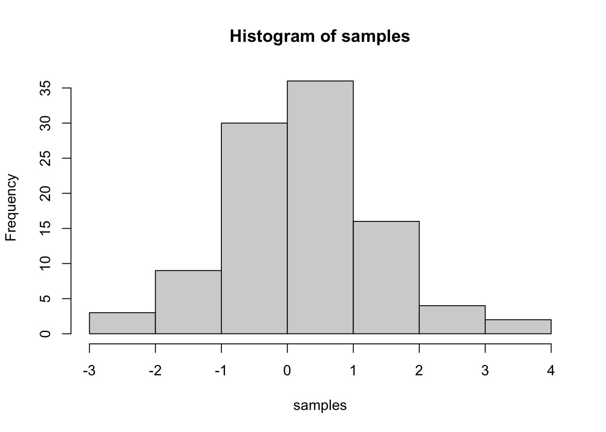

Journal (reproducible report)
Mimololorun Aiyelari
2020-11-05
IMPORTANT: You can delete everything in here and start fresh. You might want to start by not deleting anything above this line until you know what that stuff is doing.
This is an .Rmd file. It is plain text with special features. Any time you write just like this, it will be compiled to normal text in the website. If you put a # in front of your text, it will create a top level-header.
1 My first post:
#Challenge 1 -Introduction to the Tidyverse ----
#1.0 Load packages ----
library(tidyverse)
library(readxl)
#2.0 Import Files ----
# A good convention is to use the file name and suffix it with tbl for the data structure tibble
bikes_tbl <- read_excel(path = "~/Documents/Github/Business Data Basics/DS_101/00_data/01_bike_sales/01_raw_data/bikes.xlsx")
orderlines_tbl <- read_excel("~/Documents/Github/Business Data Basics/DS_101/00_data/01_bike_sales/01_raw_data/orderlines.xlsx")
# Not necessary for this analysis, but for the sake of completeness
bikeshops_tbl <- read_excel("~/Documents/Github/Business Data Basics/DS_101/00_data/01_bike_sales/01_raw_data/bikeshops.xlsx")
#3.0 Joining Data ----
left_join(orderlines_tbl, bikes_tbl, by = c("product.id" = "bike.id"))## # A tibble: 15,644 x 15
## ...1 order.id order.line order.date customer.id product.id quantity
## <chr> <dbl> <dbl> <dttm> <dbl> <dbl> <dbl>
## 1 1 1 1 2015-01-07 00:00:00 2 2681 1
## 2 2 1 2 2015-01-07 00:00:00 2 2411 1
## 3 3 2 1 2015-01-10 00:00:00 10 2629 1
## 4 4 2 2 2015-01-10 00:00:00 10 2137 1
## 5 5 3 1 2015-01-10 00:00:00 6 2367 1
## 6 6 3 2 2015-01-10 00:00:00 6 1973 1
## 7 7 3 3 2015-01-10 00:00:00 6 2422 1
## 8 8 3 4 2015-01-10 00:00:00 6 2655 1
## 9 9 3 5 2015-01-10 00:00:00 6 2247 1
## 10 10 4 1 2015-01-11 00:00:00 22 2408 1
## # … with 15,634 more rows, and 8 more variables: model <chr>, model.year <dbl>,
## # frame.material <chr>, weight <dbl>, price <dbl>, category <chr>,
## # gender <chr>, url <chr># Chaining commands with the pipe and assigning it to order_items_joined_tbl
bike_orderlines_joined_tbl <- orderlines_tbl %>%
left_join(bikes_tbl, by = c("product.id" = "bike.id")) %>%
left_join(bikeshops_tbl, by = c("customer.id" = "bikeshop.id"))
#4.0 Data Wrangling ----
bike_orderlines_wrangled_tbl <- bike_orderlines_joined_tbl %>%
# 4.1 Separate category name
separate(col = category,
into = c("category.1", "category.2", "category.3"),
sep = " - ") %>%
# 4.2 Add the total price (price * quantity)
# Add a column to a tibble that uses a formula-style calculation of other columns
mutate(total.price = price * quantity) %>%
# 4.3 Optional: Reorganize. Using select to grab or remove unnecessary columns
# 4.3.1 by exact column name
select(-...1, -gender) %>%
# 4.3.2 by a pattern
# You can use the select_helpers to define patterns.
# Type ?ends_with and click on Select helpers in the documentation
select(-ends_with(".id")) %>%
# 4.3.3 Actually we need the column "order.id". Let's bind it back to the data
bind_cols(bike_orderlines_joined_tbl %>% select(order.id)) %>%
# 4.3.4 You can reorder the data by selecting the columns in your desired order.
# You can use select_helpers like contains() or everything()
select(order.id, contains("order"), contains("model"), contains("category"),
price, quantity, total.price,
everything()) %>%
# 4.4 Rename columns because we actually wanted underscores instead of the dots
# (one at the time vs. multiple at once)
rename(bikeshop = name) %>%
set_names(names(.) %>% str_replace_all("\\.", "_"))
#Check location multiple features (State and city)
bike_orderlines_wrangled_tbl$location## [1] "Hamburg, Hamburg"
## [2] "Hamburg, Hamburg"
## [3] "Bremen, Bremen"
## [4] "Bremen, Bremen"
## [5] "Stuttgart, Baden-Württemberg"
## [6] "Stuttgart, Baden-Württemberg"
## [7] "Stuttgart, Baden-Württemberg"
## [8] "Stuttgart, Baden-Württemberg"
## [9] "Stuttgart, Baden-Württemberg"
## [10] "Augsburg, Bavaria"
## [11] "Dortmund, North Rhine-Westphalia"
## [12] "Dortmund, North Rhine-Westphalia"
## [13] "Dortmund, North Rhine-Westphalia"
## [14] "Dortmund, North Rhine-Westphalia"
## [15] "Wuppertal, North Rhine-Westphalia"
## [16] "Wuppertal, North Rhine-Westphalia"
## [17] "Wuppertal, North Rhine-Westphalia"
## [18] "Wuppertal, North Rhine-Westphalia"
## [19] "Essen, North Rhine-Westphalia"
## [20] "Essen, North Rhine-Westphalia"
## [21] "Essen, North Rhine-Westphalia"
## [22] "Essen, North Rhine-Westphalia"
## [23] "Essen, North Rhine-Westphalia"
## [24] "Essen, North Rhine-Westphalia"
## [25] "Essen, North Rhine-Westphalia"
## [26] "Essen, North Rhine-Westphalia"
## [27] "Essen, North Rhine-Westphalia"
## [28] "Essen, North Rhine-Westphalia"
## [29] "Essen, North Rhine-Westphalia"
## [30] "Essen, North Rhine-Westphalia"
## [31] "Essen, North Rhine-Westphalia"
## [32] "Essen, North Rhine-Westphalia"
## [33] "Wuppertal, North Rhine-Westphalia"
## [34] "Wuppertal, North Rhine-Westphalia"
## [35] "Braunschweig, Lower Saxony"
## [36] "Braunschweig, Lower Saxony"
## [37] "Braunschweig, Lower Saxony"
## [38] "Braunschweig, Lower Saxony"
## [39] "Braunschweig, Lower Saxony"
## [40] "Karlsruhe, Baden-Württemberg"
## [41] "Bielefeld, North Rhine-Westphalia"
## [42] "Bielefeld, North Rhine-Westphalia"
## [43] "Bielefeld, North Rhine-Westphalia"
## [44] "Bielefeld, North Rhine-Westphalia"
## [45] "Bielefeld, North Rhine-Westphalia"
## [46] "Bielefeld, North Rhine-Westphalia"
## [47] "Bielefeld, North Rhine-Westphalia"
## [48] "Stuttgart, Baden-Württemberg"
## [49] "Stuttgart, Baden-Württemberg"
## [50] "Stuttgart, Baden-Württemberg"
## [51] "Stuttgart, Baden-Württemberg"
## [52] "Stuttgart, Baden-Württemberg"
## [53] "Stuttgart, Baden-Württemberg"
## [54] "Stuttgart, Baden-Württemberg"
## [55] "Stuttgart, Baden-Württemberg"
## [56] "Stuttgart, Baden-Württemberg"
## [57] "Stuttgart, Baden-Württemberg"
## [58] "Stuttgart, Baden-Württemberg"
## [59] "Stuttgart, Baden-Württemberg"
## [60] "Stuttgart, Baden-Württemberg"
## [61] "Stuttgart, Baden-Württemberg"
## [62] "Stuttgart, Baden-Württemberg"
## [63] "Stuttgart, Baden-Württemberg"
## [64] "Stuttgart, Baden-Württemberg"
## [65] "Stuttgart, Baden-Württemberg"
## [66] "Stuttgart, Baden-Württemberg"
## [67] "Düsseldorf, North Rhine-Westphalia"
## [68] "Düsseldorf, North Rhine-Westphalia"
## [69] "Duisburg, North Rhine-Westphalia"
## [70] "Duisburg, North Rhine-Westphalia"
## [71] "Duisburg, North Rhine-Westphalia"
## [72] "Marienberg, Bavaria"
## [73] "Marienberg, Bavaria"
## [74] "Marienberg, Bavaria"
## [75] "Marienberg, Bavaria"
## [76] "Marienberg, Bavaria"
## [77] "Marienberg, Bavaria"
## [78] "Marienberg, Bavaria"
## [79] "Marienberg, Bavaria"
## [80] "Marienberg, Bavaria"
## [81] "Marienberg, Bavaria"
## [82] "Marienberg, Bavaria"
## [83] "Marienberg, Bavaria"
## [84] "Essen, North Rhine-Westphalia"
## [85] "Essen, North Rhine-Westphalia"
## [86] "Essen, North Rhine-Westphalia"
## [87] "Essen, North Rhine-Westphalia"
## [88] "Essen, North Rhine-Westphalia"
## [89] "Essen, North Rhine-Westphalia"
## [90] "Essen, North Rhine-Westphalia"
## [91] "Essen, North Rhine-Westphalia"
## [92] "Frankfurt, Hesse"
## [93] "Dortmund, North Rhine-Westphalia"
## [94] "Dortmund, North Rhine-Westphalia"
## [95] "Hamburg, Hamburg"
## [96] "Hamburg, Hamburg"
## [97] "Bremen, Bremen"
## [98] "Bremen, Bremen"
## [99] "Bremen, Bremen"
## [100] "Bremen, Bremen"
## [101] "Bremen, Bremen"
## [102] "Bremen, Bremen"
## [103] "Bremen, Bremen"
## [104] "Bremen, Bremen"
## [105] "Bremen, Bremen"
## [106] "Mannheim, Baden-Württemberg"
## [107] "Mannheim, Baden-Württemberg"
## [108] "Mannheim, Baden-Württemberg"
## [109] "Mannheim, Baden-Württemberg"
## [110] "Mannheim, Baden-Württemberg"
## [111] "Wiesbaden, Hesse"
## [112] "Wiesbaden, Hesse"
## [113] "Wiesbaden, Hesse"
## [114] "Wiesbaden, Hesse"
## [115] "Wiesbaden, Hesse"
## [116] "Wiesbaden, Hesse"
## [117] "Wiesbaden, Hesse"
## [118] "Wiesbaden, Hesse"
## [119] "Wiesbaden, Hesse"
## [120] "Wiesbaden, Hesse"
## [121] "Dortmund, North Rhine-Westphalia"
## [122] "Dortmund, North Rhine-Westphalia"
## [123] "Dortmund, North Rhine-Westphalia"
## [124] "Dortmund, North Rhine-Westphalia"
## [125] "Dortmund, North Rhine-Westphalia"
## [126] "Augsburg, Bavaria"
## [127] "Augsburg, Bavaria"
## [128] "Augsburg, Bavaria"
## [129] "Augsburg, Bavaria"
## [130] "Augsburg, Bavaria"
## [131] "Augsburg, Bavaria"
## [132] "Augsburg, Bavaria"
## [133] "Augsburg, Bavaria"
## [134] "Augsburg, Bavaria"
## [135] "Augsburg, Bavaria"
## [136] "Augsburg, Bavaria"
## [137] "Duisburg, North Rhine-Westphalia"
## [138] "Duisburg, North Rhine-Westphalia"
## [139] "Duisburg, North Rhine-Westphalia"
## [140] "Munich, Bavaria"
## [141] "Bremen, Bremen"
## [142] "Bremen, Bremen"
## [143] "Bremen, Bremen"
## [144] "Bremen, Bremen"
## [145] "Bremen, Bremen"
## [146] "Bremen, Bremen"
## [147] "Bremen, Bremen"
## [148] "Bremen, Bremen"
## [149] "Bremen, Bremen"
## [150] "Bremen, Bremen"
## [151] "Bremen, Bremen"
## [152] "Bremen, Bremen"
## [153] "Hamburg, Hamburg"
## [154] "Hamburg, Hamburg"
## [155] "Hamburg, Hamburg"
## [156] "Hamburg, Hamburg"
## [157] "Hamburg, Hamburg"
## [158] "Hamburg, Hamburg"
## [159] "Hamburg, Hamburg"
## [160] "Hamburg, Hamburg"
## [161] "Hamburg, Hamburg"
## [162] "Hamburg, Hamburg"
## [163] "Hamburg, Hamburg"
## [164] "Hamburg, Hamburg"
## [165] "Hamburg, Hamburg"
## [166] "Hamburg, Hamburg"
## [167] "Hamburg, Hamburg"
## [168] "Hamburg, Hamburg"
## [169] "Hamburg, Hamburg"
## [170] "Hamburg, Hamburg"
## [171] "Hamburg, Hamburg"
## [172] "Hamburg, Hamburg"
## [173] "Hamburg, Hamburg"
## [174] "Hamburg, Hamburg"
## [175] "Hamburg, Hamburg"
## [176] "Hamburg, Hamburg"
## [177] "Augsburg, Bavaria"
## [178] "Augsburg, Bavaria"
## [179] "Hamburg, Hamburg"
## [180] "Hamburg, Hamburg"
## [181] "Hamburg, Hamburg"
## [182] "Hamburg, Hamburg"
## [183] "Wuppertal, North Rhine-Westphalia"
## [184] "Wuppertal, North Rhine-Westphalia"
## [185] "Wuppertal, North Rhine-Westphalia"
## [186] "Wuppertal, North Rhine-Westphalia"
## [187] "Wuppertal, North Rhine-Westphalia"
## [188] "Wuppertal, North Rhine-Westphalia"
## [189] "Wuppertal, North Rhine-Westphalia"
## [190] "Wuppertal, North Rhine-Westphalia"
## [191] "Wuppertal, North Rhine-Westphalia"
## [192] "Wuppertal, North Rhine-Westphalia"
## [193] "Wuppertal, North Rhine-Westphalia"
## [194] "Wuppertal, North Rhine-Westphalia"
## [195] "Wuppertal, North Rhine-Westphalia"
## [196] "Wuppertal, North Rhine-Westphalia"
## [197] "Wuppertal, North Rhine-Westphalia"
## [198] "Wuppertal, North Rhine-Westphalia"
## [199] "Wuppertal, North Rhine-Westphalia"
## [200] "Wuppertal, North Rhine-Westphalia"
## [201] "Wuppertal, North Rhine-Westphalia"
## [202] "Wuppertal, North Rhine-Westphalia"
## [203] "Wuppertal, North Rhine-Westphalia"
## [204] "Wuppertal, North Rhine-Westphalia"
## [205] "Wuppertal, North Rhine-Westphalia"
## [206] "Dortmund, North Rhine-Westphalia"
## [207] "Dortmund, North Rhine-Westphalia"
## [208] "Bremen, Bremen"
## [209] "Bremen, Bremen"
## [210] "Bremen, Bremen"
## [211] "Bremen, Bremen"
## [212] "Bremen, Bremen"
## [213] "Bremen, Bremen"
## [214] "Bremen, Bremen"
## [215] "Bremen, Bremen"
## [216] "Bremen, Bremen"
## [217] "Bremen, Bremen"
## [218] "Bremen, Bremen"
## [219] "Bremen, Bremen"
## [220] "Bremen, Bremen"
## [221] "Bremen, Bremen"
## [222] "Bremen, Bremen"
## [223] "Bremen, Bremen"
## [224] "Bremen, Bremen"
## [225] "Bremen, Bremen"
## [226] "Bremen, Bremen"
## [227] "Bremen, Bremen"
## [228] "Bremen, Bremen"
## [229] "Bremen, Bremen"
## [230] "Bremen, Bremen"
## [231] "Bremen, Bremen"
## [232] "Bremen, Bremen"
## [233] "Karlsruhe, Baden-Württemberg"
## [234] "Karlsruhe, Baden-Württemberg"
## [235] "Karlsruhe, Baden-Württemberg"
## [236] "Karlsruhe, Baden-Württemberg"
## [237] "Karlsruhe, Baden-Württemberg"
## [238] "Karlsruhe, Baden-Württemberg"
## [239] "Karlsruhe, Baden-Württemberg"
## [240] "Karlsruhe, Baden-Württemberg"
## [241] "Karlsruhe, Baden-Württemberg"
## [242] "Rostock, Mecklenburg-Western Pomerania"
## [243] "Rostock, Mecklenburg-Western Pomerania"
## [244] "Rostock, Mecklenburg-Western Pomerania"
## [245] "Rostock, Mecklenburg-Western Pomerania"
## [246] "Rostock, Mecklenburg-Western Pomerania"
## [247] "Rostock, Mecklenburg-Western Pomerania"
## [248] "Rostock, Mecklenburg-Western Pomerania"
## [249] "Rostock, Mecklenburg-Western Pomerania"
## [250] "Rostock, Mecklenburg-Western Pomerania"
## [251] "Rostock, Mecklenburg-Western Pomerania"
## [252] "Rostock, Mecklenburg-Western Pomerania"
## [253] "Rostock, Mecklenburg-Western Pomerania"
## [254] "Rostock, Mecklenburg-Western Pomerania"
## [255] "Rostock, Mecklenburg-Western Pomerania"
## [256] "Rostock, Mecklenburg-Western Pomerania"
## [257] "Rostock, Mecklenburg-Western Pomerania"
## [258] "Rostock, Mecklenburg-Western Pomerania"
## [259] "Rostock, Mecklenburg-Western Pomerania"
## [260] "Rostock, Mecklenburg-Western Pomerania"
## [261] "Rostock, Mecklenburg-Western Pomerania"
## [262] "Dortmund, North Rhine-Westphalia"
## [263] "Frankfurt, Hesse"
## [264] "Frankfurt, Hesse"
## [265] "Frankfurt, Hesse"
## [266] "Frankfurt, Hesse"
## [267] "Frankfurt, Hesse"
## [268] "Frankfurt, Hesse"
## [269] "Frankfurt, Hesse"
## [270] "Bremen, Bremen"
## [271] "Bremen, Bremen"
## [272] "Bremen, Bremen"
## [273] "Bremen, Bremen"
## [274] "Bremen, Bremen"
## [275] "Bremen, Bremen"
## [276] "Bremen, Bremen"
## [277] "Bremen, Bremen"
## [278] "Bremen, Bremen"
## [279] "Bremen, Bremen"
## [280] "Bremen, Bremen"
## [281] "Bremen, Bremen"
## [282] "Bremen, Bremen"
## [283] "Bremen, Bremen"
## [284] "Bremen, Bremen"
## [285] "Bremen, Bremen"
## [286] "Bremen, Bremen"
## [287] "Bremen, Bremen"
## [288] "Bremen, Bremen"
## [289] "Bremen, Bremen"
## [290] "Bremen, Bremen"
## [291] "Bremen, Bremen"
## [292] "Bremen, Bremen"
## [293] "Bremen, Bremen"
## [294] "Bremen, Bremen"
## [295] "Bremen, Bremen"
## [296] "Bremen, Bremen"
## [297] "Bremen, Bremen"
## [298] "Bremen, Bremen"
## [299] "Duisburg, North Rhine-Westphalia"
## [300] "Marienberg, Bavaria"
## [301] "Marienberg, Bavaria"
## [302] "Marienberg, Bavaria"
## [303] "Marienberg, Bavaria"
## [304] "Marienberg, Bavaria"
## [305] "Marienberg, Bavaria"
## [306] "Marienberg, Bavaria"
## [307] "Marienberg, Bavaria"
## [308] "Marienberg, Bavaria"
## [309] "Marienberg, Bavaria"
## [310] "Marienberg, Bavaria"
## [311] "Marienberg, Bavaria"
## [312] "Marienberg, Bavaria"
## [313] "Marienberg, Bavaria"
## [314] "Marienberg, Bavaria"
## [315] "Marienberg, Bavaria"
## [316] "Marienberg, Bavaria"
## [317] "Marienberg, Bavaria"
## [318] "Marienberg, Bavaria"
## [319] "Marienberg, Bavaria"
## [320] "Münster, North Rhine-Westphalia"
## [321] "Münster, North Rhine-Westphalia"
## [322] "Münster, North Rhine-Westphalia"
## [323] "Münster, North Rhine-Westphalia"
## [324] "Münster, North Rhine-Westphalia"
## [325] "Münster, North Rhine-Westphalia"
## [326] "Münster, North Rhine-Westphalia"
## [327] "Münster, North Rhine-Westphalia"
## [328] "Münster, North Rhine-Westphalia"
## [329] "Münster, North Rhine-Westphalia"
## [330] "Münster, North Rhine-Westphalia"
## [331] "Münster, North Rhine-Westphalia"
## [332] "Münster, North Rhine-Westphalia"
## [333] "Wuppertal, North Rhine-Westphalia"
## [334] "Wuppertal, North Rhine-Westphalia"
## [335] "Wuppertal, North Rhine-Westphalia"
## [336] "Wuppertal, North Rhine-Westphalia"
## [337] "Wuppertal, North Rhine-Westphalia"
## [338] "Wuppertal, North Rhine-Westphalia"
## [339] "Wuppertal, North Rhine-Westphalia"
## [340] "Wuppertal, North Rhine-Westphalia"
## [341] "Wuppertal, North Rhine-Westphalia"
## [342] "Wuppertal, North Rhine-Westphalia"
## [343] "Wuppertal, North Rhine-Westphalia"
## [344] "Wuppertal, North Rhine-Westphalia"
## [345] "Wuppertal, North Rhine-Westphalia"
## [346] "Wuppertal, North Rhine-Westphalia"
## [347] "Wuppertal, North Rhine-Westphalia"
## [348] "Hamburg, Hamburg"
## [349] "Hamburg, Hamburg"
## [350] "Hamburg, Hamburg"
## [351] "Hamburg, Hamburg"
## [352] "Hamburg, Hamburg"
## [353] "Hamburg, Hamburg"
## [354] "Dortmund, North Rhine-Westphalia"
## [355] "Dortmund, North Rhine-Westphalia"
## [356] "Dortmund, North Rhine-Westphalia"
## [357] "Dortmund, North Rhine-Westphalia"
## [358] "Bremen, Bremen"
## [359] "Bremen, Bremen"
## [360] "Bremen, Bremen"
## [361] "Bremen, Bremen"
## [362] "Bremen, Bremen"
## [363] "Bremen, Bremen"
## [364] "Bremen, Bremen"
## [365] "Bremen, Bremen"
## [366] "Bremen, Bremen"
## [367] "Bremen, Bremen"
## [368] "Bremen, Bremen"
## [369] "Bremen, Bremen"
## [370] "Bremen, Bremen"
## [371] "Rostock, Mecklenburg-Western Pomerania"
## [372] "Rostock, Mecklenburg-Western Pomerania"
## [373] "Rostock, Mecklenburg-Western Pomerania"
## [374] "Rostock, Mecklenburg-Western Pomerania"
## [375] "Rostock, Mecklenburg-Western Pomerania"
## [376] "Rostock, Mecklenburg-Western Pomerania"
## [377] "Rostock, Mecklenburg-Western Pomerania"
## [378] "Rostock, Mecklenburg-Western Pomerania"
## [379] "Rostock, Mecklenburg-Western Pomerania"
## [380] "Rostock, Mecklenburg-Western Pomerania"
## [381] "Rostock, Mecklenburg-Western Pomerania"
## [382] "Rostock, Mecklenburg-Western Pomerania"
## [383] "Rostock, Mecklenburg-Western Pomerania"
## [384] "Rostock, Mecklenburg-Western Pomerania"
## [385] "Rostock, Mecklenburg-Western Pomerania"
## [386] "Rostock, Mecklenburg-Western Pomerania"
## [387] "Rostock, Mecklenburg-Western Pomerania"
## [388] "Rostock, Mecklenburg-Western Pomerania"
## [389] "Rostock, Mecklenburg-Western Pomerania"
## [390] "Hannover, Lower Saxony"
## [391] "Bremen, Bremen"
## [392] "Bremen, Bremen"
## [393] "Bremen, Bremen"
## [394] "Bremen, Bremen"
## [395] "Marienberg, Bavaria"
## [396] "Mannheim, Baden-Württemberg"
## [397] "Düsseldorf, North Rhine-Westphalia"
## [398] "Düsseldorf, North Rhine-Westphalia"
## [399] "Marienberg, Bavaria"
## [400] "Marienberg, Bavaria"
## [401] "Marienberg, Bavaria"
## [402] "Marienberg, Bavaria"
## [403] "Marienberg, Bavaria"
## [404] "Marienberg, Bavaria"
## [405] "Hannover, Lower Saxony"
## [406] "Hannover, Lower Saxony"
## [407] "Mannheim, Baden-Württemberg"
## [408] "Karlsruhe, Baden-Württemberg"
## [409] "Mannheim, Baden-Württemberg"
## [410] "Mannheim, Baden-Württemberg"
## [411] "Mannheim, Baden-Württemberg"
## [412] "Mannheim, Baden-Württemberg"
## [413] "Mannheim, Baden-Württemberg"
## [414] "Mannheim, Baden-Württemberg"
## [415] "Essen, North Rhine-Westphalia"
## [416] "Frankfurt, Hesse"
## [417] "Frankfurt, Hesse"
## [418] "Frankfurt, Hesse"
## [419] "Frankfurt, Hesse"
## [420] "Frankfurt, Hesse"
## [421] "Frankfurt, Hesse"
## [422] "Frankfurt, Hesse"
## [423] "Frankfurt, Hesse"
## [424] "Frankfurt, Hesse"
## [425] "Frankfurt, Hesse"
## [426] "Frankfurt, Hesse"
## [427] "Braunschweig, Lower Saxony"
## [428] "Braunschweig, Lower Saxony"
## [429] "Braunschweig, Lower Saxony"
## [430] "Braunschweig, Lower Saxony"
## [431] "Braunschweig, Lower Saxony"
## [432] "Braunschweig, Lower Saxony"
## [433] "Braunschweig, Lower Saxony"
## [434] "Braunschweig, Lower Saxony"
## [435] "Braunschweig, Lower Saxony"
## [436] "Braunschweig, Lower Saxony"
## [437] "Braunschweig, Lower Saxony"
## [438] "Braunschweig, Lower Saxony"
## [439] "Braunschweig, Lower Saxony"
## [440] "Braunschweig, Lower Saxony"
## [441] "Braunschweig, Lower Saxony"
## [442] "Braunschweig, Lower Saxony"
## [443] "Braunschweig, Lower Saxony"
## [444] "Braunschweig, Lower Saxony"
## [445] "Braunschweig, Lower Saxony"
## [446] "Braunschweig, Lower Saxony"
## [447] "Braunschweig, Lower Saxony"
## [448] "Braunschweig, Lower Saxony"
## [449] "Braunschweig, Lower Saxony"
## [450] "Braunschweig, Lower Saxony"
## [451] "Braunschweig, Lower Saxony"
## [452] "Braunschweig, Lower Saxony"
## [453] "Dresden, Saxony"
## [454] "Dresden, Saxony"
## [455] "Dresden, Saxony"
## [456] "Dresden, Saxony"
## [457] "Dresden, Saxony"
## [458] "Dresden, Saxony"
## [459] "Dresden, Saxony"
## [460] "Dresden, Saxony"
## [461] "Freiburg, Baden-Württemberg"
## [462] "Freiburg, Baden-Württemberg"
## [463] "Freiburg, Baden-Württemberg"
## [464] "Stuttgart, Baden-Württemberg"
## [465] "Stuttgart, Baden-Württemberg"
## [466] "Bremen, Bremen"
## [467] "Bremen, Bremen"
## [468] "Bremen, Bremen"
## [469] "Wuppertal, North Rhine-Westphalia"
## [470] "Wuppertal, North Rhine-Westphalia"
## [471] "Wuppertal, North Rhine-Westphalia"
## [472] "Bielefeld, North Rhine-Westphalia"
## [473] "Berlin, Berlin"
## [474] "Berlin, Berlin"
## [475] "Berlin, Berlin"
## [476] "Berlin, Berlin"
## [477] "Berlin, Berlin"
## [478] "Berlin, Berlin"
## [479] "Berlin, Berlin"
## [480] "Berlin, Berlin"
## [481] "Berlin, Berlin"
## [482] "Dortmund, North Rhine-Westphalia"
## [483] "Dortmund, North Rhine-Westphalia"
## [484] "Dortmund, North Rhine-Westphalia"
## [485] "Berlin, Berlin"
## [486] "Berlin, Berlin"
## [487] "Essen, North Rhine-Westphalia"
## [488] "Essen, North Rhine-Westphalia"
## [489] "Essen, North Rhine-Westphalia"
## [490] "Essen, North Rhine-Westphalia"
## [491] "Essen, North Rhine-Westphalia"
## [492] "Essen, North Rhine-Westphalia"
## [493] "Freiburg, Baden-Württemberg"
## [494] "Freiburg, Baden-Württemberg"
## [495] "Freiburg, Baden-Württemberg"
## [496] "Freiburg, Baden-Württemberg"
## [497] "Freiburg, Baden-Württemberg"
## [498] "Freiburg, Baden-Württemberg"
## [499] "Freiburg, Baden-Württemberg"
## [500] "Freiburg, Baden-Württemberg"
## [501] "Freiburg, Baden-Württemberg"
## [502] "Freiburg, Baden-Württemberg"
## [503] "Freiburg, Baden-Württemberg"
## [504] "Freiburg, Baden-Württemberg"
## [505] "Freiburg, Baden-Württemberg"
## [506] "Freiburg, Baden-Württemberg"
## [507] "Freiburg, Baden-Württemberg"
## [508] "Freiburg, Baden-Württemberg"
## [509] "Freiburg, Baden-Württemberg"
## [510] "Freiburg, Baden-Württemberg"
## [511] "Freiburg, Baden-Württemberg"
## [512] "Freiburg, Baden-Württemberg"
## [513] "Freiburg, Baden-Württemberg"
## [514] "Freiburg, Baden-Württemberg"
## [515] "Freiburg, Baden-Württemberg"
## [516] "Freiburg, Baden-Württemberg"
## [517] "Freiburg, Baden-Württemberg"
## [518] "Freiburg, Baden-Württemberg"
## [519] "Freiburg, Baden-Württemberg"
## [520] "Frankfurt, Hesse"
## [521] "Frankfurt, Hesse"
## [522] "Frankfurt, Hesse"
## [523] "Frankfurt, Hesse"
## [524] "Frankfurt, Hesse"
## [525] "Frankfurt, Hesse"
## [526] "Frankfurt, Hesse"
## [527] "Frankfurt, Hesse"
## [528] "Dortmund, North Rhine-Westphalia"
## [529] "Dortmund, North Rhine-Westphalia"
## [530] "Dortmund, North Rhine-Westphalia"
## [531] "Dortmund, North Rhine-Westphalia"
## [532] "Dortmund, North Rhine-Westphalia"
## [533] "Dortmund, North Rhine-Westphalia"
## [534] "Dortmund, North Rhine-Westphalia"
## [535] "Bremen, Bremen"
## [536] "Bremen, Bremen"
## [537] "Bremen, Bremen"
## [538] "Bremen, Bremen"
## [539] "Bremen, Bremen"
## [540] "Bremen, Bremen"
## [541] "Bremen, Bremen"
## [542] "Bremen, Bremen"
## [543] "Bremen, Bremen"
## [544] "Bremen, Bremen"
## [545] "Bremen, Bremen"
## [546] "Bremen, Bremen"
## [547] "Bremen, Bremen"
## [548] "Bremen, Bremen"
## [549] "Bremen, Bremen"
## [550] "Bremen, Bremen"
## [551] "Bremen, Bremen"
## [552] "Dortmund, North Rhine-Westphalia"
## [553] "Dortmund, North Rhine-Westphalia"
## [554] "Dortmund, North Rhine-Westphalia"
## [555] "Dortmund, North Rhine-Westphalia"
## [556] "Dortmund, North Rhine-Westphalia"
## [557] "Dortmund, North Rhine-Westphalia"
## [558] "Dortmund, North Rhine-Westphalia"
## [559] "Dortmund, North Rhine-Westphalia"
## [560] "Dortmund, North Rhine-Westphalia"
## [561] "Dortmund, North Rhine-Westphalia"
## [562] "Dortmund, North Rhine-Westphalia"
## [563] "Dortmund, North Rhine-Westphalia"
## [564] "Augsburg, Bavaria"
## [565] "Augsburg, Bavaria"
## [566] "Augsburg, Bavaria"
## [567] "Augsburg, Bavaria"
## [568] "Augsburg, Bavaria"
## [569] "Augsburg, Bavaria"
## [570] "Augsburg, Bavaria"
## [571] "Augsburg, Bavaria"
## [572] "Augsburg, Bavaria"
## [573] "Augsburg, Bavaria"
## [574] "Augsburg, Bavaria"
## [575] "Augsburg, Bavaria"
## [576] "Augsburg, Bavaria"
## [577] "Augsburg, Bavaria"
## [578] "Augsburg, Bavaria"
## [579] "Augsburg, Bavaria"
## [580] "Wiesbaden, Hesse"
## [581] "Mannheim, Baden-Württemberg"
## [582] "Mannheim, Baden-Württemberg"
## [583] "Mannheim, Baden-Württemberg"
## [584] "Mannheim, Baden-Württemberg"
## [585] "Hannover, Lower Saxony"
## [586] "Hannover, Lower Saxony"
## [587] "Hannover, Lower Saxony"
## [588] "Hannover, Lower Saxony"
## [589] "Hannover, Lower Saxony"
## [590] "Hannover, Lower Saxony"
## [591] "Hannover, Lower Saxony"
## [592] "Hannover, Lower Saxony"
## [593] "Hannover, Lower Saxony"
## [594] "Hannover, Lower Saxony"
## [595] "Hannover, Lower Saxony"
## [596] "Hannover, Lower Saxony"
## [597] "Hannover, Lower Saxony"
## [598] "Hannover, Lower Saxony"
## [599] "Hannover, Lower Saxony"
## [600] "Hannover, Lower Saxony"
## [601] "Hannover, Lower Saxony"
## [602] "Hannover, Lower Saxony"
## [603] "Hannover, Lower Saxony"
## [604] "Hannover, Lower Saxony"
## [605] "Hannover, Lower Saxony"
## [606] "Hannover, Lower Saxony"
## [607] "Hannover, Lower Saxony"
## [608] "Hannover, Lower Saxony"
## [609] "Hannover, Lower Saxony"
## [610] "Hannover, Lower Saxony"
## [611] "Hannover, Lower Saxony"
## [612] "Hannover, Lower Saxony"
## [613] "Magdeburg, Saxony-Anhalt"
## [614] "Magdeburg, Saxony-Anhalt"
## [615] "Magdeburg, Saxony-Anhalt"
## [616] "Magdeburg, Saxony-Anhalt"
## [617] "Magdeburg, Saxony-Anhalt"
## [618] "Magdeburg, Saxony-Anhalt"
## [619] "Magdeburg, Saxony-Anhalt"
## [620] "Magdeburg, Saxony-Anhalt"
## [621] "Magdeburg, Saxony-Anhalt"
## [622] "Magdeburg, Saxony-Anhalt"
## [623] "Magdeburg, Saxony-Anhalt"
## [624] "Magdeburg, Saxony-Anhalt"
## [625] "Magdeburg, Saxony-Anhalt"
## [626] "Magdeburg, Saxony-Anhalt"
## [627] "Magdeburg, Saxony-Anhalt"
## [628] "Magdeburg, Saxony-Anhalt"
## [629] "Magdeburg, Saxony-Anhalt"
## [630] "Magdeburg, Saxony-Anhalt"
## [631] "Magdeburg, Saxony-Anhalt"
## [632] "Magdeburg, Saxony-Anhalt"
## [633] "Magdeburg, Saxony-Anhalt"
## [634] "Magdeburg, Saxony-Anhalt"
## [635] "Magdeburg, Saxony-Anhalt"
## [636] "Magdeburg, Saxony-Anhalt"
## [637] "Magdeburg, Saxony-Anhalt"
## [638] "Magdeburg, Saxony-Anhalt"
## [639] "Magdeburg, Saxony-Anhalt"
## [640] "Magdeburg, Saxony-Anhalt"
## [641] "Bremen, Bremen"
## [642] "Wiesbaden, Hesse"
## [643] "Wiesbaden, Hesse"
## [644] "Wiesbaden, Hesse"
## [645] "Wiesbaden, Hesse"
## [646] "Wiesbaden, Hesse"
## [647] "Wiesbaden, Hesse"
## [648] "Wuppertal, North Rhine-Westphalia"
## [649] "Wuppertal, North Rhine-Westphalia"
## [650] "Wuppertal, North Rhine-Westphalia"
## [651] "Wuppertal, North Rhine-Westphalia"
## [652] "Wuppertal, North Rhine-Westphalia"
## [653] "Wuppertal, North Rhine-Westphalia"
## [654] "Wuppertal, North Rhine-Westphalia"
## [655] "Wuppertal, North Rhine-Westphalia"
## [656] "Wuppertal, North Rhine-Westphalia"
## [657] "Wuppertal, North Rhine-Westphalia"
## [658] "Wuppertal, North Rhine-Westphalia"
## [659] "Marienberg, Bavaria"
## [660] "Bremen, Bremen"
## [661] "Bremen, Bremen"
## [662] "Bremen, Bremen"
## [663] "Bremen, Bremen"
## [664] "Bremen, Bremen"
## [665] "Bremen, Bremen"
## [666] "Bremen, Bremen"
## [667] "Bremen, Bremen"
## [668] "Bremen, Bremen"
## [669] "Bremen, Bremen"
## [670] "Bremen, Bremen"
## [671] "Bremen, Bremen"
## [672] "Bremen, Bremen"
## [673] "Augsburg, Bavaria"
## [674] "Augsburg, Bavaria"
## [675] "Augsburg, Bavaria"
## [676] "Augsburg, Bavaria"
## [677] "Augsburg, Bavaria"
## [678] "Augsburg, Bavaria"
## [679] "Augsburg, Bavaria"
## [680] "Augsburg, Bavaria"
## [681] "Augsburg, Bavaria"
## [682] "Augsburg, Bavaria"
## [683] "Augsburg, Bavaria"
## [684] "Augsburg, Bavaria"
## [685] "Augsburg, Bavaria"
## [686] "Augsburg, Bavaria"
## [687] "Augsburg, Bavaria"
## [688] "Augsburg, Bavaria"
## [689] "Augsburg, Bavaria"
## [690] "Augsburg, Bavaria"
## [691] "Augsburg, Bavaria"
## [692] "Augsburg, Bavaria"
## [693] "Augsburg, Bavaria"
## [694] "Rostock, Mecklenburg-Western Pomerania"
## [695] "Stuttgart, Baden-Württemberg"
## [696] "Stuttgart, Baden-Württemberg"
## [697] "Dortmund, North Rhine-Westphalia"
## [698] "Dortmund, North Rhine-Westphalia"
## [699] "Dortmund, North Rhine-Westphalia"
## [700] "Dortmund, North Rhine-Westphalia"
## [701] "Dortmund, North Rhine-Westphalia"
## [702] "Dortmund, North Rhine-Westphalia"
## [703] "Dortmund, North Rhine-Westphalia"
## [704] "Dortmund, North Rhine-Westphalia"
## [705] "Dortmund, North Rhine-Westphalia"
## [706] "Dortmund, North Rhine-Westphalia"
## [707] "Dortmund, North Rhine-Westphalia"
## [708] "Dortmund, North Rhine-Westphalia"
## [709] "Dortmund, North Rhine-Westphalia"
## [710] "Dortmund, North Rhine-Westphalia"
## [711] "Dortmund, North Rhine-Westphalia"
## [712] "Dortmund, North Rhine-Westphalia"
## [713] "Dortmund, North Rhine-Westphalia"
## [714] "Dortmund, North Rhine-Westphalia"
## [715] "Dortmund, North Rhine-Westphalia"
## [716] "Dortmund, North Rhine-Westphalia"
## [717] "Dortmund, North Rhine-Westphalia"
## [718] "Dortmund, North Rhine-Westphalia"
## [719] "Dortmund, North Rhine-Westphalia"
## [720] "Dortmund, North Rhine-Westphalia"
## [721] "Freiburg, Baden-Württemberg"
## [722] "Freiburg, Baden-Württemberg"
## [723] "Freiburg, Baden-Württemberg"
## [724] "Hamburg, Hamburg"
## [725] "Hamburg, Hamburg"
## [726] "Hamburg, Hamburg"
## [727] "Hamburg, Hamburg"
## [728] "Dortmund, North Rhine-Westphalia"
## [729] "Bremen, Bremen"
## [730] "Bremen, Bremen"
## [731] "Bremen, Bremen"
## [732] "Bremen, Bremen"
## [733] "Bremen, Bremen"
## [734] "Bremen, Bremen"
## [735] "Bremen, Bremen"
## [736] "Bremen, Bremen"
## [737] "Bremen, Bremen"
## [738] "Bremen, Bremen"
## [739] "Bremen, Bremen"
## [740] "Bremen, Bremen"
## [741] "Bremen, Bremen"
## [742] "Bremen, Bremen"
## [743] "Bremen, Bremen"
## [744] "Bremen, Bremen"
## [745] "Bremen, Bremen"
## [746] "Bremen, Bremen"
## [747] "Hamburg, Hamburg"
## [748] "Lübeck, Schleswig-Holstein"
## [749] "Lübeck, Schleswig-Holstein"
## [750] "Stuttgart, Baden-Württemberg"
## [751] "Stuttgart, Baden-Württemberg"
## [752] "Stuttgart, Baden-Württemberg"
## [753] "Stuttgart, Baden-Württemberg"
## [754] "Stuttgart, Baden-Württemberg"
## [755] "Wuppertal, North Rhine-Westphalia"
## [756] "Wuppertal, North Rhine-Westphalia"
## [757] "Wuppertal, North Rhine-Westphalia"
## [758] "Wuppertal, North Rhine-Westphalia"
## [759] "Wuppertal, North Rhine-Westphalia"
## [760] "Wuppertal, North Rhine-Westphalia"
## [761] "Wuppertal, North Rhine-Westphalia"
## [762] "Wuppertal, North Rhine-Westphalia"
## [763] "Wuppertal, North Rhine-Westphalia"
## [764] "Bremen, Bremen"
## [765] "Bremen, Bremen"
## [766] "Bremen, Bremen"
## [767] "Bremen, Bremen"
## [768] "Bremen, Bremen"
## [769] "Bremen, Bremen"
## [770] "Bremen, Bremen"
## [771] "Bremen, Bremen"
## [772] "Bremen, Bremen"
## [773] "Bremen, Bremen"
## [774] "Bremen, Bremen"
## [775] "Bremen, Bremen"
## [776] "Bremen, Bremen"
## [777] "Bremen, Bremen"
## [778] "Bremen, Bremen"
## [779] "Bremen, Bremen"
## [780] "Bremen, Bremen"
## [781] "Bremen, Bremen"
## [782] "Bremen, Bremen"
## [783] "Bremen, Bremen"
## [784] "Bremen, Bremen"
## [785] "Bremen, Bremen"
## [786] "Bremen, Bremen"
## [787] "Bremen, Bremen"
## [788] "Bremen, Bremen"
## [789] "Bremen, Bremen"
## [790] "Bremen, Bremen"
## [791] "Bremen, Bremen"
## [792] "Bremen, Bremen"
## [793] "Bremen, Bremen"
## [794] "Bremen, Bremen"
## [795] "Bremen, Bremen"
## [796] "Bremen, Bremen"
## [797] "Bremen, Bremen"
## [798] "Bremen, Bremen"
## [799] "Bremen, Bremen"
## [800] "Hannover, Lower Saxony"
## [801] "Dresden, Saxony"
## [802] "Dresden, Saxony"
## [803] "Dresden, Saxony"
## [804] "Dresden, Saxony"
## [805] "Dresden, Saxony"
## [806] "Bremen, Bremen"
## [807] "Bremen, Bremen"
## [808] "Bremen, Bremen"
## [809] "Bremen, Bremen"
## [810] "Bremen, Bremen"
## [811] "Bremen, Bremen"
## [812] "Bremen, Bremen"
## [813] "Bremen, Bremen"
## [814] "Bremen, Bremen"
## [815] "Bremen, Bremen"
## [816] "Bremen, Bremen"
## [817] "Bremen, Bremen"
## [818] "Bremen, Bremen"
## [819] "Bremen, Bremen"
## [820] "Bremen, Bremen"
## [821] "Bremen, Bremen"
## [822] "Bremen, Bremen"
## [823] "Bremen, Bremen"
## [824] "Bremen, Bremen"
## [825] "Bremen, Bremen"
## [826] "Bremen, Bremen"
## [827] "Bremen, Bremen"
## [828] "Bremen, Bremen"
## [829] "Bremen, Bremen"
## [830] "Bremen, Bremen"
## [831] "Bremen, Bremen"
## [832] "Bremen, Bremen"
## [833] "Bremen, Bremen"
## [834] "Bremen, Bremen"
## [835] "Bremen, Bremen"
## [836] "Essen, North Rhine-Westphalia"
## [837] "Bielefeld, North Rhine-Westphalia"
## [838] "Bonn, North Rhine-Westphalia"
## [839] "Bonn, North Rhine-Westphalia"
## [840] "Bonn, North Rhine-Westphalia"
## [841] "Bonn, North Rhine-Westphalia"
## [842] "Bonn, North Rhine-Westphalia"
## [843] "Bonn, North Rhine-Westphalia"
## [844] "Bonn, North Rhine-Westphalia"
## [845] "Bonn, North Rhine-Westphalia"
## [846] "Bonn, North Rhine-Westphalia"
## [847] "Bonn, North Rhine-Westphalia"
## [848] "Bonn, North Rhine-Westphalia"
## [849] "Bonn, North Rhine-Westphalia"
## [850] "Bonn, North Rhine-Westphalia"
## [851] "Bonn, North Rhine-Westphalia"
## [852] "Bonn, North Rhine-Westphalia"
## [853] "Bonn, North Rhine-Westphalia"
## [854] "Bonn, North Rhine-Westphalia"
## [855] "Bonn, North Rhine-Westphalia"
## [856] "Bonn, North Rhine-Westphalia"
## [857] "Bonn, North Rhine-Westphalia"
## [858] "Bonn, North Rhine-Westphalia"
## [859] "Bonn, North Rhine-Westphalia"
## [860] "Bonn, North Rhine-Westphalia"
## [861] "Bonn, North Rhine-Westphalia"
## [862] "Bonn, North Rhine-Westphalia"
## [863] "Bonn, North Rhine-Westphalia"
## [864] "Bonn, North Rhine-Westphalia"
## [865] "Magdeburg, Saxony-Anhalt"
## [866] "Bielefeld, North Rhine-Westphalia"
## [867] "Bielefeld, North Rhine-Westphalia"
## [868] "Bielefeld, North Rhine-Westphalia"
## [869] "Bielefeld, North Rhine-Westphalia"
## [870] "Bielefeld, North Rhine-Westphalia"
## [871] "Bielefeld, North Rhine-Westphalia"
## [872] "Bielefeld, North Rhine-Westphalia"
## [873] "Bielefeld, North Rhine-Westphalia"
## [874] "Bielefeld, North Rhine-Westphalia"
## [875] "Bielefeld, North Rhine-Westphalia"
## [876] "Bielefeld, North Rhine-Westphalia"
## [877] "Bielefeld, North Rhine-Westphalia"
## [878] "Bielefeld, North Rhine-Westphalia"
## [879] "Bielefeld, North Rhine-Westphalia"
## [880] "Bielefeld, North Rhine-Westphalia"
## [881] "Bielefeld, North Rhine-Westphalia"
## [882] "Bielefeld, North Rhine-Westphalia"
## [883] "Bielefeld, North Rhine-Westphalia"
## [884] "Bielefeld, North Rhine-Westphalia"
## [885] "Bielefeld, North Rhine-Westphalia"
## [886] "Bielefeld, North Rhine-Westphalia"
## [887] "Bielefeld, North Rhine-Westphalia"
## [888] "Kiel, Schleswig-Holstein"
## [889] "Kiel, Schleswig-Holstein"
## [890] "Kiel, Schleswig-Holstein"
## [891] "Kiel, Schleswig-Holstein"
## [892] "Kiel, Schleswig-Holstein"
## [893] "Kiel, Schleswig-Holstein"
## [894] "Kiel, Schleswig-Holstein"
## [895] "Kiel, Schleswig-Holstein"
## [896] "Kiel, Schleswig-Holstein"
## [897] "Kiel, Schleswig-Holstein"
## [898] "Wuppertal, North Rhine-Westphalia"
## [899] "Braunschweig, Lower Saxony"
## [900] "Braunschweig, Lower Saxony"
## [901] "Braunschweig, Lower Saxony"
## [902] "Braunschweig, Lower Saxony"
## [903] "Braunschweig, Lower Saxony"
## [904] "Braunschweig, Lower Saxony"
## [905] "Braunschweig, Lower Saxony"
## [906] "Braunschweig, Lower Saxony"
## [907] "Braunschweig, Lower Saxony"
## [908] "Braunschweig, Lower Saxony"
## [909] "Braunschweig, Lower Saxony"
## [910] "Braunschweig, Lower Saxony"
## [911] "Braunschweig, Lower Saxony"
## [912] "Braunschweig, Lower Saxony"
## [913] "Braunschweig, Lower Saxony"
## [914] "Braunschweig, Lower Saxony"
## [915] "Hamburg, Hamburg"
## [916] "Hamburg, Hamburg"
## [917] "Hamburg, Hamburg"
## [918] "Bremen, Bremen"
## [919] "Bremen, Bremen"
## [920] "Bremen, Bremen"
## [921] "Bremen, Bremen"
## [922] "Bremen, Bremen"
## [923] "Bremen, Bremen"
## [924] "Bremen, Bremen"
## [925] "Karlsruhe, Baden-Württemberg"
## [926] "Karlsruhe, Baden-Württemberg"
## [927] "Karlsruhe, Baden-Württemberg"
## [928] "Karlsruhe, Baden-Württemberg"
## [929] "Karlsruhe, Baden-Württemberg"
## [930] "Karlsruhe, Baden-Württemberg"
## [931] "Dortmund, North Rhine-Westphalia"
## [932] "Dortmund, North Rhine-Westphalia"
## [933] "Frankfurt, Hesse"
## [934] "Karlsruhe, Baden-Württemberg"
## [935] "Karlsruhe, Baden-Württemberg"
## [936] "Karlsruhe, Baden-Württemberg"
## [937] "Karlsruhe, Baden-Württemberg"
## [938] "Karlsruhe, Baden-Württemberg"
## [939] "Karlsruhe, Baden-Württemberg"
## [940] "Karlsruhe, Baden-Württemberg"
## [941] "Karlsruhe, Baden-Württemberg"
## [942] "Karlsruhe, Baden-Württemberg"
## [943] "Karlsruhe, Baden-Württemberg"
## [944] "Karlsruhe, Baden-Württemberg"
## [945] "Karlsruhe, Baden-Württemberg"
## [946] "Karlsruhe, Baden-Württemberg"
## [947] "Karlsruhe, Baden-Württemberg"
## [948] "Karlsruhe, Baden-Württemberg"
## [949] "Karlsruhe, Baden-Württemberg"
## [950] "Karlsruhe, Baden-Württemberg"
## [951] "Karlsruhe, Baden-Württemberg"
## [952] "Karlsruhe, Baden-Württemberg"
## [953] "Karlsruhe, Baden-Württemberg"
## [954] "Karlsruhe, Baden-Württemberg"
## [955] "Karlsruhe, Baden-Württemberg"
## [956] "Karlsruhe, Baden-Württemberg"
## [957] "Karlsruhe, Baden-Württemberg"
## [958] "Karlsruhe, Baden-Württemberg"
## [959] "Karlsruhe, Baden-Württemberg"
## [960] "Karlsruhe, Baden-Württemberg"
## [961] "Karlsruhe, Baden-Württemberg"
## [962] "Karlsruhe, Baden-Württemberg"
## [963] "Karlsruhe, Baden-Württemberg"
## [964] "Marienberg, Bavaria"
## [965] "Marienberg, Bavaria"
## [966] "Marienberg, Bavaria"
## [967] "Marienberg, Bavaria"
## [968] "Marienberg, Bavaria"
## [969] "Marienberg, Bavaria"
## [970] "Marienberg, Bavaria"
## [971] "Marienberg, Bavaria"
## [972] "Marienberg, Bavaria"
## [973] "Marienberg, Bavaria"
## [974] "Marienberg, Bavaria"
## [975] "Marienberg, Bavaria"
## [976] "Marienberg, Bavaria"
## [977] "Marienberg, Bavaria"
## [978] "Marienberg, Bavaria"
## [979] "Marienberg, Bavaria"
## [980] "Marienberg, Bavaria"
## [981] "Marienberg, Bavaria"
## [982] "Marienberg, Bavaria"
## [983] "Marienberg, Bavaria"
## [984] "Marienberg, Bavaria"
## [985] "Marienberg, Bavaria"
## [986] "Marienberg, Bavaria"
## [987] "Marienberg, Bavaria"
## [988] "Marienberg, Bavaria"
## [989] "Marienberg, Bavaria"
## [990] "Augsburg, Bavaria"
## [991] "Augsburg, Bavaria"
## [992] "Augsburg, Bavaria"
## [993] "Augsburg, Bavaria"
## [994] "Augsburg, Bavaria"
## [995] "Bremen, Bremen"
## [996] "Cologne, North Rhine-Westphalia"
## [997] "Hamburg, Hamburg"
## [998] "Hamburg, Hamburg"
## [999] "Hamburg, Hamburg"
## [1000] "Hamburg, Hamburg"
## [1001] "Hamburg, Hamburg"
## [1002] "Hamburg, Hamburg"
## [1003] "Hamburg, Hamburg"
## [1004] "Hamburg, Hamburg"
## [1005] "Hamburg, Hamburg"
## [1006] "Hamburg, Hamburg"
## [1007] "Hamburg, Hamburg"
## [1008] "Hamburg, Hamburg"
## [1009] "Hamburg, Hamburg"
## [1010] "Hamburg, Hamburg"
## [1011] "Hamburg, Hamburg"
## [1012] "Hamburg, Hamburg"
## [1013] "Hamburg, Hamburg"
## [1014] "Dortmund, North Rhine-Westphalia"
## [1015] "Dortmund, North Rhine-Westphalia"
## [1016] "Dortmund, North Rhine-Westphalia"
## [1017] "Dortmund, North Rhine-Westphalia"
## [1018] "Dortmund, North Rhine-Westphalia"
## [1019] "Dortmund, North Rhine-Westphalia"
## [1020] "Dortmund, North Rhine-Westphalia"
## [1021] "Dortmund, North Rhine-Westphalia"
## [1022] "Dortmund, North Rhine-Westphalia"
## [1023] "Dortmund, North Rhine-Westphalia"
## [1024] "Dortmund, North Rhine-Westphalia"
## [1025] "Wuppertal, North Rhine-Westphalia"
## [1026] "Wuppertal, North Rhine-Westphalia"
## [1027] "Wuppertal, North Rhine-Westphalia"
## [1028] "Wuppertal, North Rhine-Westphalia"
## [1029] "Essen, North Rhine-Westphalia"
## [1030] "Essen, North Rhine-Westphalia"
## [1031] "Essen, North Rhine-Westphalia"
## [1032] "Essen, North Rhine-Westphalia"
## [1033] "Essen, North Rhine-Westphalia"
## [1034] "Essen, North Rhine-Westphalia"
## [1035] "Kiel, Schleswig-Holstein"
## [1036] "Kiel, Schleswig-Holstein"
## [1037] "Kiel, Schleswig-Holstein"
## [1038] "Kiel, Schleswig-Holstein"
## [1039] "Kiel, Schleswig-Holstein"
## [1040] "Duisburg, North Rhine-Westphalia"
## [1041] "Marienberg, Bavaria"
## [1042] "Marienberg, Bavaria"
## [1043] "Marienberg, Bavaria"
## [1044] "Marienberg, Bavaria"
## [1045] "Augsburg, Bavaria"
## [1046] "Augsburg, Bavaria"
## [1047] "Augsburg, Bavaria"
## [1048] "Augsburg, Bavaria"
## [1049] "Augsburg, Bavaria"
## [1050] "Augsburg, Bavaria"
## [1051] "Augsburg, Bavaria"
## [1052] "Duisburg, North Rhine-Westphalia"
## [1053] "Duisburg, North Rhine-Westphalia"
## [1054] "Duisburg, North Rhine-Westphalia"
## [1055] "Duisburg, North Rhine-Westphalia"
## [1056] "Duisburg, North Rhine-Westphalia"
## [1057] "Duisburg, North Rhine-Westphalia"
## [1058] "Duisburg, North Rhine-Westphalia"
## [1059] "Duisburg, North Rhine-Westphalia"
## [1060] "Dortmund, North Rhine-Westphalia"
## [1061] "Berlin, Berlin"
## [1062] "Wuppertal, North Rhine-Westphalia"
## [1063] "Wuppertal, North Rhine-Westphalia"
## [1064] "Wuppertal, North Rhine-Westphalia"
## [1065] "Wuppertal, North Rhine-Westphalia"
## [1066] "Wuppertal, North Rhine-Westphalia"
## [1067] "Wuppertal, North Rhine-Westphalia"
## [1068] "Wuppertal, North Rhine-Westphalia"
## [1069] "Wuppertal, North Rhine-Westphalia"
## [1070] "Wuppertal, North Rhine-Westphalia"
## [1071] "Wuppertal, North Rhine-Westphalia"
## [1072] "Wuppertal, North Rhine-Westphalia"
## [1073] "Wuppertal, North Rhine-Westphalia"
## [1074] "Wuppertal, North Rhine-Westphalia"
## [1075] "Wuppertal, North Rhine-Westphalia"
## [1076] "Wuppertal, North Rhine-Westphalia"
## [1077] "Wuppertal, North Rhine-Westphalia"
## [1078] "Wuppertal, North Rhine-Westphalia"
## [1079] "Wuppertal, North Rhine-Westphalia"
## [1080] "Wuppertal, North Rhine-Westphalia"
## [1081] "Wuppertal, North Rhine-Westphalia"
## [1082] "Wuppertal, North Rhine-Westphalia"
## [1083] "Bonn, North Rhine-Westphalia"
## [1084] "Bremen, Bremen"
## [1085] "Bremen, Bremen"
## [1086] "Bremen, Bremen"
## [1087] "Bremen, Bremen"
## [1088] "Bremen, Bremen"
## [1089] "Bremen, Bremen"
## [1090] "Bremen, Bremen"
## [1091] "Bremen, Bremen"
## [1092] "Bremen, Bremen"
## [1093] "Bremen, Bremen"
## [1094] "Marienberg, Bavaria"
## [1095] "Marienberg, Bavaria"
## [1096] "Marienberg, Bavaria"
## [1097] "Marienberg, Bavaria"
## [1098] "Marienberg, Bavaria"
## [1099] "Marienberg, Bavaria"
## [1100] "Marienberg, Bavaria"
## [1101] "Marienberg, Bavaria"
## [1102] "Marienberg, Bavaria"
## [1103] "Marienberg, Bavaria"
## [1104] "Marienberg, Bavaria"
## [1105] "Marienberg, Bavaria"
## [1106] "Marienberg, Bavaria"
## [1107] "Marienberg, Bavaria"
## [1108] "Marienberg, Bavaria"
## [1109] "Marienberg, Bavaria"
## [1110] "Marienberg, Bavaria"
## [1111] "Marienberg, Bavaria"
## [1112] "Marienberg, Bavaria"
## [1113] "Marienberg, Bavaria"
## [1114] "Marienberg, Bavaria"
## [1115] "Marienberg, Bavaria"
## [1116] "Marienberg, Bavaria"
## [1117] "Marienberg, Bavaria"
## [1118] "Marienberg, Bavaria"
## [1119] "Augsburg, Bavaria"
## [1120] "Bremen, Bremen"
## [1121] "Marienberg, Bavaria"
## [1122] "Bremen, Bremen"
## [1123] "Bremen, Bremen"
## [1124] "Bremen, Bremen"
## [1125] "Bremen, Bremen"
## [1126] "Marienberg, Bavaria"
## [1127] "Marienberg, Bavaria"
## [1128] "Marienberg, Bavaria"
## [1129] "Marienberg, Bavaria"
## [1130] "Marienberg, Bavaria"
## [1131] "Marienberg, Bavaria"
## [1132] "Marienberg, Bavaria"
## [1133] "Marienberg, Bavaria"
## [1134] "Marienberg, Bavaria"
## [1135] "Marienberg, Bavaria"
## [1136] "Marienberg, Bavaria"
## [1137] "Marienberg, Bavaria"
## [1138] "Marienberg, Bavaria"
## [1139] "Marienberg, Bavaria"
## [1140] "Marienberg, Bavaria"
## [1141] "Marienberg, Bavaria"
## [1142] "Marienberg, Bavaria"
## [1143] "Marienberg, Bavaria"
## [1144] "Marienberg, Bavaria"
## [1145] "Marienberg, Bavaria"
## [1146] "Marienberg, Bavaria"
## [1147] "Marienberg, Bavaria"
## [1148] "Marienberg, Bavaria"
## [1149] "Braunschweig, Lower Saxony"
## [1150] "Wiesbaden, Hesse"
## [1151] "Bremen, Bremen"
## [1152] "Bremen, Bremen"
## [1153] "Bremen, Bremen"
## [1154] "Bremen, Bremen"
## [1155] "Bremen, Bremen"
## [1156] "Bremen, Bremen"
## [1157] "Dortmund, North Rhine-Westphalia"
## [1158] "Dortmund, North Rhine-Westphalia"
## [1159] "Dortmund, North Rhine-Westphalia"
## [1160] "Dortmund, North Rhine-Westphalia"
## [1161] "Dortmund, North Rhine-Westphalia"
## [1162] "Dortmund, North Rhine-Westphalia"
## [1163] "Dortmund, North Rhine-Westphalia"
## [1164] "Dortmund, North Rhine-Westphalia"
## [1165] "Dortmund, North Rhine-Westphalia"
## [1166] "Dortmund, North Rhine-Westphalia"
## [1167] "Dortmund, North Rhine-Westphalia"
## [1168] "Dortmund, North Rhine-Westphalia"
## [1169] "Dortmund, North Rhine-Westphalia"
## [1170] "Dortmund, North Rhine-Westphalia"
## [1171] "Dortmund, North Rhine-Westphalia"
## [1172] "Karlsruhe, Baden-Württemberg"
## [1173] "Karlsruhe, Baden-Württemberg"
## [1174] "Karlsruhe, Baden-Württemberg"
## [1175] "Karlsruhe, Baden-Württemberg"
## [1176] "Karlsruhe, Baden-Württemberg"
## [1177] "Karlsruhe, Baden-Württemberg"
## [1178] "Karlsruhe, Baden-Württemberg"
## [1179] "Karlsruhe, Baden-Württemberg"
## [1180] "Karlsruhe, Baden-Württemberg"
## [1181] "Karlsruhe, Baden-Württemberg"
## [1182] "Karlsruhe, Baden-Württemberg"
## [1183] "Karlsruhe, Baden-Württemberg"
## [1184] "Karlsruhe, Baden-Württemberg"
## [1185] "Karlsruhe, Baden-Württemberg"
## [1186] "Karlsruhe, Baden-Württemberg"
## [1187] "Karlsruhe, Baden-Württemberg"
## [1188] "Hannover, Lower Saxony"
## [1189] "Hannover, Lower Saxony"
## [1190] "Hannover, Lower Saxony"
## [1191] "Hannover, Lower Saxony"
## [1192] "Hannover, Lower Saxony"
## [1193] "Hannover, Lower Saxony"
## [1194] "Hannover, Lower Saxony"
## [1195] "Hannover, Lower Saxony"
## [1196] "Hannover, Lower Saxony"
## [1197] "Hannover, Lower Saxony"
## [1198] "Hannover, Lower Saxony"
## [1199] "Hannover, Lower Saxony"
## [1200] "Hannover, Lower Saxony"
## [1201] "Kiel, Schleswig-Holstein"
## [1202] "Bielefeld, North Rhine-Westphalia"
## [1203] "Bielefeld, North Rhine-Westphalia"
## [1204] "Bielefeld, North Rhine-Westphalia"
## [1205] "Bielefeld, North Rhine-Westphalia"
## [1206] "Bielefeld, North Rhine-Westphalia"
## [1207] "Bielefeld, North Rhine-Westphalia"
## [1208] "Bielefeld, North Rhine-Westphalia"
## [1209] "Bielefeld, North Rhine-Westphalia"
## [1210] "Bielefeld, North Rhine-Westphalia"
## [1211] "Chemnitz, Saxony"
## [1212] "Chemnitz, Saxony"
## [1213] "Chemnitz, Saxony"
## [1214] "Chemnitz, Saxony"
## [1215] "Chemnitz, Saxony"
## [1216] "Chemnitz, Saxony"
## [1217] "Chemnitz, Saxony"
## [1218] "Chemnitz, Saxony"
## [1219] "Chemnitz, Saxony"
## [1220] "Chemnitz, Saxony"
## [1221] "Chemnitz, Saxony"
## [1222] "Chemnitz, Saxony"
## [1223] "Chemnitz, Saxony"
## [1224] "Chemnitz, Saxony"
## [1225] "Chemnitz, Saxony"
## [1226] "Mannheim, Baden-Württemberg"
## [1227] "Mannheim, Baden-Württemberg"
## [1228] "Mannheim, Baden-Württemberg"
## [1229] "Mannheim, Baden-Württemberg"
## [1230] "Mannheim, Baden-Württemberg"
## [1231] "Bonn, North Rhine-Westphalia"
## [1232] "Bonn, North Rhine-Westphalia"
## [1233] "Bonn, North Rhine-Westphalia"
## [1234] "Bonn, North Rhine-Westphalia"
## [1235] "Essen, North Rhine-Westphalia"
## [1236] "Wuppertal, North Rhine-Westphalia"
## [1237] "Dresden, Saxony"
## [1238] "Wuppertal, North Rhine-Westphalia"
## [1239] "Leipzig, Saxony"
## [1240] "Leipzig, Saxony"
## [1241] "Leipzig, Saxony"
## [1242] "Leipzig, Saxony"
## [1243] "Leipzig, Saxony"
## [1244] "Leipzig, Saxony"
## [1245] "Leipzig, Saxony"
## [1246] "Leipzig, Saxony"
## [1247] "Leipzig, Saxony"
## [1248] "Leipzig, Saxony"
## [1249] "Bremen, Bremen"
## [1250] "Bremen, Bremen"
## [1251] "Bremen, Bremen"
## [1252] "Bremen, Bremen"
## [1253] "Bremen, Bremen"
## [1254] "Bremen, Bremen"
## [1255] "Bremen, Bremen"
## [1256] "Bremen, Bremen"
## [1257] "Bremen, Bremen"
## [1258] "Bremen, Bremen"
## [1259] "Bremen, Bremen"
## [1260] "Bremen, Bremen"
## [1261] "Braunschweig, Lower Saxony"
## [1262] "Braunschweig, Lower Saxony"
## [1263] "Braunschweig, Lower Saxony"
## [1264] "Braunschweig, Lower Saxony"
## [1265] "Braunschweig, Lower Saxony"
## [1266] "Braunschweig, Lower Saxony"
## [1267] "Braunschweig, Lower Saxony"
## [1268] "Braunschweig, Lower Saxony"
## [1269] "Braunschweig, Lower Saxony"
## [1270] "Braunschweig, Lower Saxony"
## [1271] "Braunschweig, Lower Saxony"
## [1272] "Braunschweig, Lower Saxony"
## [1273] "Braunschweig, Lower Saxony"
## [1274] "Braunschweig, Lower Saxony"
## [1275] "Braunschweig, Lower Saxony"
## [1276] "Braunschweig, Lower Saxony"
## [1277] "Braunschweig, Lower Saxony"
## [1278] "Mannheim, Baden-Württemberg"
## [1279] "Mannheim, Baden-Württemberg"
## [1280] "Mannheim, Baden-Württemberg"
## [1281] "Magdeburg, Saxony-Anhalt"
## [1282] "Magdeburg, Saxony-Anhalt"
## [1283] "Magdeburg, Saxony-Anhalt"
## [1284] "Kiel, Schleswig-Holstein"
## [1285] "Kiel, Schleswig-Holstein"
## [1286] "Kiel, Schleswig-Holstein"
## [1287] "Kiel, Schleswig-Holstein"
## [1288] "Kiel, Schleswig-Holstein"
## [1289] "Kiel, Schleswig-Holstein"
## [1290] "Düsseldorf, North Rhine-Westphalia"
## [1291] "Düsseldorf, North Rhine-Westphalia"
## [1292] "Düsseldorf, North Rhine-Westphalia"
## [1293] "Düsseldorf, North Rhine-Westphalia"
## [1294] "Düsseldorf, North Rhine-Westphalia"
## [1295] "Düsseldorf, North Rhine-Westphalia"
## [1296] "Düsseldorf, North Rhine-Westphalia"
## [1297] "Düsseldorf, North Rhine-Westphalia"
## [1298] "Düsseldorf, North Rhine-Westphalia"
## [1299] "Düsseldorf, North Rhine-Westphalia"
## [1300] "Düsseldorf, North Rhine-Westphalia"
## [1301] "Düsseldorf, North Rhine-Westphalia"
## [1302] "Düsseldorf, North Rhine-Westphalia"
## [1303] "Düsseldorf, North Rhine-Westphalia"
## [1304] "Düsseldorf, North Rhine-Westphalia"
## [1305] "Rostock, Mecklenburg-Western Pomerania"
## [1306] "Rostock, Mecklenburg-Western Pomerania"
## [1307] "Rostock, Mecklenburg-Western Pomerania"
## [1308] "Rostock, Mecklenburg-Western Pomerania"
## [1309] "Rostock, Mecklenburg-Western Pomerania"
## [1310] "Rostock, Mecklenburg-Western Pomerania"
## [1311] "Rostock, Mecklenburg-Western Pomerania"
## [1312] "Rostock, Mecklenburg-Western Pomerania"
## [1313] "Rostock, Mecklenburg-Western Pomerania"
## [1314] "Rostock, Mecklenburg-Western Pomerania"
## [1315] "Rostock, Mecklenburg-Western Pomerania"
## [1316] "Rostock, Mecklenburg-Western Pomerania"
## [1317] "Rostock, Mecklenburg-Western Pomerania"
## [1318] "Dresden, Saxony"
## [1319] "Dresden, Saxony"
## [1320] "Münster, North Rhine-Westphalia"
## [1321] "Münster, North Rhine-Westphalia"
## [1322] "Münster, North Rhine-Westphalia"
## [1323] "Münster, North Rhine-Westphalia"
## [1324] "Münster, North Rhine-Westphalia"
## [1325] "Münster, North Rhine-Westphalia"
## [1326] "Münster, North Rhine-Westphalia"
## [1327] "Münster, North Rhine-Westphalia"
## [1328] "Münster, North Rhine-Westphalia"
## [1329] "Münster, North Rhine-Westphalia"
## [1330] "Münster, North Rhine-Westphalia"
## [1331] "Münster, North Rhine-Westphalia"
## [1332] "Münster, North Rhine-Westphalia"
## [1333] "Münster, North Rhine-Westphalia"
## [1334] "Münster, North Rhine-Westphalia"
## [1335] "Münster, North Rhine-Westphalia"
## [1336] "Münster, North Rhine-Westphalia"
## [1337] "Münster, North Rhine-Westphalia"
## [1338] "Münster, North Rhine-Westphalia"
## [1339] "Münster, North Rhine-Westphalia"
## [1340] "Münster, North Rhine-Westphalia"
## [1341] "Münster, North Rhine-Westphalia"
## [1342] "Münster, North Rhine-Westphalia"
## [1343] "Münster, North Rhine-Westphalia"
## [1344] "Münster, North Rhine-Westphalia"
## [1345] "Münster, North Rhine-Westphalia"
## [1346] "Frankfurt, Hesse"
## [1347] "Frankfurt, Hesse"
## [1348] "Frankfurt, Hesse"
## [1349] "Frankfurt, Hesse"
## [1350] "Frankfurt, Hesse"
## [1351] "Frankfurt, Hesse"
## [1352] "Frankfurt, Hesse"
## [1353] "Frankfurt, Hesse"
## [1354] "Berlin, Berlin"
## [1355] "Berlin, Berlin"
## [1356] "Berlin, Berlin"
## [1357] "Augsburg, Bavaria"
## [1358] "Augsburg, Bavaria"
## [1359] "Augsburg, Bavaria"
## [1360] "Augsburg, Bavaria"
## [1361] "Augsburg, Bavaria"
## [1362] "Augsburg, Bavaria"
## [1363] "Leipzig, Saxony"
## [1364] "Leipzig, Saxony"
## [1365] "Münster, North Rhine-Westphalia"
## [1366] "Münster, North Rhine-Westphalia"
## [1367] "Münster, North Rhine-Westphalia"
## [1368] "Münster, North Rhine-Westphalia"
## [1369] "Münster, North Rhine-Westphalia"
## [1370] "Münster, North Rhine-Westphalia"
## [1371] "Münster, North Rhine-Westphalia"
## [1372] "Münster, North Rhine-Westphalia"
## [1373] "Münster, North Rhine-Westphalia"
## [1374] "Münster, North Rhine-Westphalia"
## [1375] "Kiel, Schleswig-Holstein"
## [1376] "Kiel, Schleswig-Holstein"
## [1377] "Kiel, Schleswig-Holstein"
## [1378] "Kiel, Schleswig-Holstein"
## [1379] "Kiel, Schleswig-Holstein"
## [1380] "Kiel, Schleswig-Holstein"
## [1381] "Kiel, Schleswig-Holstein"
## [1382] "Kiel, Schleswig-Holstein"
## [1383] "Kiel, Schleswig-Holstein"
## [1384] "Kiel, Schleswig-Holstein"
## [1385] "Kiel, Schleswig-Holstein"
## [1386] "Kiel, Schleswig-Holstein"
## [1387] "Kiel, Schleswig-Holstein"
## [1388] "Kiel, Schleswig-Holstein"
## [1389] "Kiel, Schleswig-Holstein"
## [1390] "Kiel, Schleswig-Holstein"
## [1391] "Kiel, Schleswig-Holstein"
## [1392] "Kiel, Schleswig-Holstein"
## [1393] "Kiel, Schleswig-Holstein"
## [1394] "Kiel, Schleswig-Holstein"
## [1395] "Kiel, Schleswig-Holstein"
## [1396] "Kiel, Schleswig-Holstein"
## [1397] "Dortmund, North Rhine-Westphalia"
## [1398] "Dortmund, North Rhine-Westphalia"
## [1399] "Dortmund, North Rhine-Westphalia"
## [1400] "Dortmund, North Rhine-Westphalia"
## [1401] "Dortmund, North Rhine-Westphalia"
## [1402] "Dortmund, North Rhine-Westphalia"
## [1403] "Dortmund, North Rhine-Westphalia"
## [1404] "Dortmund, North Rhine-Westphalia"
## [1405] "Wuppertal, North Rhine-Westphalia"
## [1406] "Bremen, Bremen"
## [1407] "Bremen, Bremen"
## [1408] "Dortmund, North Rhine-Westphalia"
## [1409] "Bremen, Bremen"
## [1410] "Braunschweig, Lower Saxony"
## [1411] "Braunschweig, Lower Saxony"
## [1412] "Dortmund, North Rhine-Westphalia"
## [1413] "Dortmund, North Rhine-Westphalia"
## [1414] "Dortmund, North Rhine-Westphalia"
## [1415] "Dortmund, North Rhine-Westphalia"
## [1416] "Dortmund, North Rhine-Westphalia"
## [1417] "Dortmund, North Rhine-Westphalia"
## [1418] "Dortmund, North Rhine-Westphalia"
## [1419] "Dortmund, North Rhine-Westphalia"
## [1420] "Dortmund, North Rhine-Westphalia"
## [1421] "Dortmund, North Rhine-Westphalia"
## [1422] "Dortmund, North Rhine-Westphalia"
## [1423] "Dortmund, North Rhine-Westphalia"
## [1424] "Dortmund, North Rhine-Westphalia"
## [1425] "Dortmund, North Rhine-Westphalia"
## [1426] "Dortmund, North Rhine-Westphalia"
## [1427] "Dortmund, North Rhine-Westphalia"
## [1428] "Dortmund, North Rhine-Westphalia"
## [1429] "Dortmund, North Rhine-Westphalia"
## [1430] "Dortmund, North Rhine-Westphalia"
## [1431] "Dortmund, North Rhine-Westphalia"
## [1432] "Dortmund, North Rhine-Westphalia"
## [1433] "Dortmund, North Rhine-Westphalia"
## [1434] "Dortmund, North Rhine-Westphalia"
## [1435] "Dortmund, North Rhine-Westphalia"
## [1436] "Dortmund, North Rhine-Westphalia"
## [1437] "Dortmund, North Rhine-Westphalia"
## [1438] "Dortmund, North Rhine-Westphalia"
## [1439] "Dortmund, North Rhine-Westphalia"
## [1440] "Dortmund, North Rhine-Westphalia"
## [1441] "Dortmund, North Rhine-Westphalia"
## [1442] "Dortmund, North Rhine-Westphalia"
## [1443] "Dortmund, North Rhine-Westphalia"
## [1444] "Dortmund, North Rhine-Westphalia"
## [1445] "Dortmund, North Rhine-Westphalia"
## [1446] "Dortmund, North Rhine-Westphalia"
## [1447] "Dortmund, North Rhine-Westphalia"
## [1448] "Dortmund, North Rhine-Westphalia"
## [1449] "Dortmund, North Rhine-Westphalia"
## [1450] "Dortmund, North Rhine-Westphalia"
## [1451] "Dortmund, North Rhine-Westphalia"
## [1452] "Dortmund, North Rhine-Westphalia"
## [1453] "Dortmund, North Rhine-Westphalia"
## [1454] "Dortmund, North Rhine-Westphalia"
## [1455] "Dortmund, North Rhine-Westphalia"
## [1456] "Dortmund, North Rhine-Westphalia"
## [1457] "Dortmund, North Rhine-Westphalia"
## [1458] "Bremen, Bremen"
## [1459] "Bremen, Bremen"
## [1460] "Bremen, Bremen"
## [1461] "Wuppertal, North Rhine-Westphalia"
## [1462] "Dortmund, North Rhine-Westphalia"
## [1463] "Dortmund, North Rhine-Westphalia"
## [1464] "Dortmund, North Rhine-Westphalia"
## [1465] "Dortmund, North Rhine-Westphalia"
## [1466] "Dortmund, North Rhine-Westphalia"
## [1467] "Dortmund, North Rhine-Westphalia"
## [1468] "Dortmund, North Rhine-Westphalia"
## [1469] "Dortmund, North Rhine-Westphalia"
## [1470] "Dortmund, North Rhine-Westphalia"
## [1471] "Dortmund, North Rhine-Westphalia"
## [1472] "Dortmund, North Rhine-Westphalia"
## [1473] "Dortmund, North Rhine-Westphalia"
## [1474] "Dortmund, North Rhine-Westphalia"
## [1475] "Dortmund, North Rhine-Westphalia"
## [1476] "Dortmund, North Rhine-Westphalia"
## [1477] "Dortmund, North Rhine-Westphalia"
## [1478] "Dortmund, North Rhine-Westphalia"
## [1479] "Dortmund, North Rhine-Westphalia"
## [1480] "Dortmund, North Rhine-Westphalia"
## [1481] "Dortmund, North Rhine-Westphalia"
## [1482] "Dortmund, North Rhine-Westphalia"
## [1483] "Dortmund, North Rhine-Westphalia"
## [1484] "Dortmund, North Rhine-Westphalia"
## [1485] "Dortmund, North Rhine-Westphalia"
## [1486] "Dortmund, North Rhine-Westphalia"
## [1487] "Dortmund, North Rhine-Westphalia"
## [1488] "Rostock, Mecklenburg-Western Pomerania"
## [1489] "Rostock, Mecklenburg-Western Pomerania"
## [1490] "Rostock, Mecklenburg-Western Pomerania"
## [1491] "Rostock, Mecklenburg-Western Pomerania"
## [1492] "Rostock, Mecklenburg-Western Pomerania"
## [1493] "Rostock, Mecklenburg-Western Pomerania"
## [1494] "Rostock, Mecklenburg-Western Pomerania"
## [1495] "Rostock, Mecklenburg-Western Pomerania"
## [1496] "Hamburg, Hamburg"
## [1497] "Hamburg, Hamburg"
## [1498] "Mannheim, Baden-Württemberg"
## [1499] "Leipzig, Saxony"
## [1500] "Leipzig, Saxony"
## [1501] "Leipzig, Saxony"
## [1502] "Leipzig, Saxony"
## [1503] "Leipzig, Saxony"
## [1504] "Leipzig, Saxony"
## [1505] "Dortmund, North Rhine-Westphalia"
## [1506] "Marienberg, Bavaria"
## [1507] "Marienberg, Bavaria"
## [1508] "Marienberg, Bavaria"
## [1509] "Marienberg, Bavaria"
## [1510] "Marienberg, Bavaria"
## [1511] "Marienberg, Bavaria"
## [1512] "Marienberg, Bavaria"
## [1513] "Marienberg, Bavaria"
## [1514] "Marienberg, Bavaria"
## [1515] "Marienberg, Bavaria"
## [1516] "Marienberg, Bavaria"
## [1517] "Marienberg, Bavaria"
## [1518] "Marienberg, Bavaria"
## [1519] "Braunschweig, Lower Saxony"
## [1520] "Braunschweig, Lower Saxony"
## [1521] "Essen, North Rhine-Westphalia"
## [1522] "Essen, North Rhine-Westphalia"
## [1523] "Essen, North Rhine-Westphalia"
## [1524] "Essen, North Rhine-Westphalia"
## [1525] "Essen, North Rhine-Westphalia"
## [1526] "Essen, North Rhine-Westphalia"
## [1527] "Essen, North Rhine-Westphalia"
## [1528] "Essen, North Rhine-Westphalia"
## [1529] "Essen, North Rhine-Westphalia"
## [1530] "Essen, North Rhine-Westphalia"
## [1531] "Essen, North Rhine-Westphalia"
## [1532] "Essen, North Rhine-Westphalia"
## [1533] "Essen, North Rhine-Westphalia"
## [1534] "Essen, North Rhine-Westphalia"
## [1535] "Essen, North Rhine-Westphalia"
## [1536] "Essen, North Rhine-Westphalia"
## [1537] "Essen, North Rhine-Westphalia"
## [1538] "Essen, North Rhine-Westphalia"
## [1539] "Essen, North Rhine-Westphalia"
## [1540] "Essen, North Rhine-Westphalia"
## [1541] "Essen, North Rhine-Westphalia"
## [1542] "Essen, North Rhine-Westphalia"
## [1543] "Essen, North Rhine-Westphalia"
## [1544] "Essen, North Rhine-Westphalia"
## [1545] "Essen, North Rhine-Westphalia"
## [1546] "Essen, North Rhine-Westphalia"
## [1547] "Dortmund, North Rhine-Westphalia"
## [1548] "Dortmund, North Rhine-Westphalia"
## [1549] "Dortmund, North Rhine-Westphalia"
## [1550] "Dortmund, North Rhine-Westphalia"
## [1551] "Dortmund, North Rhine-Westphalia"
## [1552] "Dortmund, North Rhine-Westphalia"
## [1553] "Dortmund, North Rhine-Westphalia"
## [1554] "Dortmund, North Rhine-Westphalia"
## [1555] "Dortmund, North Rhine-Westphalia"
## [1556] "Dortmund, North Rhine-Westphalia"
## [1557] "Dortmund, North Rhine-Westphalia"
## [1558] "Dortmund, North Rhine-Westphalia"
## [1559] "Dortmund, North Rhine-Westphalia"
## [1560] "Dortmund, North Rhine-Westphalia"
## [1561] "Dortmund, North Rhine-Westphalia"
## [1562] "Dortmund, North Rhine-Westphalia"
## [1563] "Dortmund, North Rhine-Westphalia"
## [1564] "Dortmund, North Rhine-Westphalia"
## [1565] "Dortmund, North Rhine-Westphalia"
## [1566] "Dortmund, North Rhine-Westphalia"
## [1567] "Dortmund, North Rhine-Westphalia"
## [1568] "Dortmund, North Rhine-Westphalia"
## [1569] "Dortmund, North Rhine-Westphalia"
## [1570] "Dortmund, North Rhine-Westphalia"
## [1571] "Dortmund, North Rhine-Westphalia"
## [1572] "Dortmund, North Rhine-Westphalia"
## [1573] "Dortmund, North Rhine-Westphalia"
## [1574] "Dortmund, North Rhine-Westphalia"
## [1575] "Dortmund, North Rhine-Westphalia"
## [1576] "Dortmund, North Rhine-Westphalia"
## [1577] "Dortmund, North Rhine-Westphalia"
## [1578] "Dortmund, North Rhine-Westphalia"
## [1579] "Dortmund, North Rhine-Westphalia"
## [1580] "Dortmund, North Rhine-Westphalia"
## [1581] "Dortmund, North Rhine-Westphalia"
## [1582] "Dortmund, North Rhine-Westphalia"
## [1583] "Dortmund, North Rhine-Westphalia"
## [1584] "Magdeburg, Saxony-Anhalt"
## [1585] "Magdeburg, Saxony-Anhalt"
## [1586] "Bremen, Bremen"
## [1587] "Bremen, Bremen"
## [1588] "Bremen, Bremen"
## [1589] "Bremen, Bremen"
## [1590] "Bremen, Bremen"
## [1591] "Bremen, Bremen"
## [1592] "Bremen, Bremen"
## [1593] "Bremen, Bremen"
## [1594] "Bremen, Bremen"
## [1595] "Bremen, Bremen"
## [1596] "Bremen, Bremen"
## [1597] "Bremen, Bremen"
## [1598] "Bremen, Bremen"
## [1599] "Bremen, Bremen"
## [1600] "Bremen, Bremen"
## [1601] "Bremen, Bremen"
## [1602] "Bremen, Bremen"
## [1603] "Bremen, Bremen"
## [1604] "Bremen, Bremen"
## [1605] "Bielefeld, North Rhine-Westphalia"
## [1606] "Bielefeld, North Rhine-Westphalia"
## [1607] "Bielefeld, North Rhine-Westphalia"
## [1608] "Bielefeld, North Rhine-Westphalia"
## [1609] "Bielefeld, North Rhine-Westphalia"
## [1610] "Bielefeld, North Rhine-Westphalia"
## [1611] "Bielefeld, North Rhine-Westphalia"
## [1612] "Bielefeld, North Rhine-Westphalia"
## [1613] "Bielefeld, North Rhine-Westphalia"
## [1614] "Bielefeld, North Rhine-Westphalia"
## [1615] "Bielefeld, North Rhine-Westphalia"
## [1616] "Bielefeld, North Rhine-Westphalia"
## [1617] "Bielefeld, North Rhine-Westphalia"
## [1618] "Bielefeld, North Rhine-Westphalia"
## [1619] "Dortmund, North Rhine-Westphalia"
## [1620] "Dortmund, North Rhine-Westphalia"
## [1621] "Dortmund, North Rhine-Westphalia"
## [1622] "Dortmund, North Rhine-Westphalia"
## [1623] "Dortmund, North Rhine-Westphalia"
## [1624] "Dortmund, North Rhine-Westphalia"
## [1625] "Hannover, Lower Saxony"
## [1626] "Marienberg, Bavaria"
## [1627] "Marienberg, Bavaria"
## [1628] "Marienberg, Bavaria"
## [1629] "Hamburg, Hamburg"
## [1630] "Hamburg, Hamburg"
## [1631] "Frankfurt, Hesse"
## [1632] "Frankfurt, Hesse"
## [1633] "Frankfurt, Hesse"
## [1634] "Frankfurt, Hesse"
## [1635] "Frankfurt, Hesse"
## [1636] "Frankfurt, Hesse"
## [1637] "Frankfurt, Hesse"
## [1638] "Frankfurt, Hesse"
## [1639] "Frankfurt, Hesse"
## [1640] "Frankfurt, Hesse"
## [1641] "Frankfurt, Hesse"
## [1642] "Karlsruhe, Baden-Württemberg"
## [1643] "Kiel, Schleswig-Holstein"
## [1644] "Kiel, Schleswig-Holstein"
## [1645] "Bremen, Bremen"
## [1646] "Bremen, Bremen"
## [1647] "Cologne, North Rhine-Westphalia"
## [1648] "Cologne, North Rhine-Westphalia"
## [1649] "Cologne, North Rhine-Westphalia"
## [1650] "Cologne, North Rhine-Westphalia"
## [1651] "Cologne, North Rhine-Westphalia"
## [1652] "Cologne, North Rhine-Westphalia"
## [1653] "Cologne, North Rhine-Westphalia"
## [1654] "Wuppertal, North Rhine-Westphalia"
## [1655] "Wuppertal, North Rhine-Westphalia"
## [1656] "Wuppertal, North Rhine-Westphalia"
## [1657] "Wuppertal, North Rhine-Westphalia"
## [1658] "Wuppertal, North Rhine-Westphalia"
## [1659] "Wuppertal, North Rhine-Westphalia"
## [1660] "Wuppertal, North Rhine-Westphalia"
## [1661] "Wuppertal, North Rhine-Westphalia"
## [1662] "Wuppertal, North Rhine-Westphalia"
## [1663] "Wuppertal, North Rhine-Westphalia"
## [1664] "Wuppertal, North Rhine-Westphalia"
## [1665] "Wuppertal, North Rhine-Westphalia"
## [1666] "Wuppertal, North Rhine-Westphalia"
## [1667] "Wuppertal, North Rhine-Westphalia"
## [1668] "Wuppertal, North Rhine-Westphalia"
## [1669] "Wuppertal, North Rhine-Westphalia"
## [1670] "Wuppertal, North Rhine-Westphalia"
## [1671] "Wuppertal, North Rhine-Westphalia"
## [1672] "Wuppertal, North Rhine-Westphalia"
## [1673] "Wuppertal, North Rhine-Westphalia"
## [1674] "Karlsruhe, Baden-Württemberg"
## [1675] "Karlsruhe, Baden-Württemberg"
## [1676] "Karlsruhe, Baden-Württemberg"
## [1677] "Karlsruhe, Baden-Württemberg"
## [1678] "Karlsruhe, Baden-Württemberg"
## [1679] "Karlsruhe, Baden-Württemberg"
## [1680] "Karlsruhe, Baden-Württemberg"
## [1681] "Karlsruhe, Baden-Württemberg"
## [1682] "Karlsruhe, Baden-Württemberg"
## [1683] "Karlsruhe, Baden-Württemberg"
## [1684] "Karlsruhe, Baden-Württemberg"
## [1685] "Wiesbaden, Hesse"
## [1686] "Wiesbaden, Hesse"
## [1687] "Wiesbaden, Hesse"
## [1688] "Bremen, Bremen"
## [1689] "Dortmund, North Rhine-Westphalia"
## [1690] "Dortmund, North Rhine-Westphalia"
## [1691] "Dortmund, North Rhine-Westphalia"
## [1692] "Dortmund, North Rhine-Westphalia"
## [1693] "Dortmund, North Rhine-Westphalia"
## [1694] "Kiel, Schleswig-Holstein"
## [1695] "Kiel, Schleswig-Holstein"
## [1696] "Kiel, Schleswig-Holstein"
## [1697] "Kiel, Schleswig-Holstein"
## [1698] "Kiel, Schleswig-Holstein"
## [1699] "Kiel, Schleswig-Holstein"
## [1700] "Kiel, Schleswig-Holstein"
## [1701] "Kiel, Schleswig-Holstein"
## [1702] "Kiel, Schleswig-Holstein"
## [1703] "Marienberg, Bavaria"
## [1704] "Marienberg, Bavaria"
## [1705] "Marienberg, Bavaria"
## [1706] "Marienberg, Bavaria"
## [1707] "Marienberg, Bavaria"
## [1708] "Marienberg, Bavaria"
## [1709] "Marienberg, Bavaria"
## [1710] "Marienberg, Bavaria"
## [1711] "Marienberg, Bavaria"
## [1712] "Marienberg, Bavaria"
## [1713] "Marienberg, Bavaria"
## [1714] "Marienberg, Bavaria"
## [1715] "Marienberg, Bavaria"
## [1716] "Marienberg, Bavaria"
## [1717] "Marienberg, Bavaria"
## [1718] "Marienberg, Bavaria"
## [1719] "Marienberg, Bavaria"
## [1720] "Marienberg, Bavaria"
## [1721] "Marienberg, Bavaria"
## [1722] "Marienberg, Bavaria"
## [1723] "Marienberg, Bavaria"
## [1724] "Marienberg, Bavaria"
## [1725] "Marienberg, Bavaria"
## [1726] "Marienberg, Bavaria"
## [1727] "Marienberg, Bavaria"
## [1728] "Marienberg, Bavaria"
## [1729] "Marienberg, Bavaria"
## [1730] "Dortmund, North Rhine-Westphalia"
## [1731] "Dortmund, North Rhine-Westphalia"
## [1732] "Dortmund, North Rhine-Westphalia"
## [1733] "Dortmund, North Rhine-Westphalia"
## [1734] "Dortmund, North Rhine-Westphalia"
## [1735] "Dortmund, North Rhine-Westphalia"
## [1736] "Dortmund, North Rhine-Westphalia"
## [1737] "Dortmund, North Rhine-Westphalia"
## [1738] "Berlin, Berlin"
## [1739] "Bremen, Bremen"
## [1740] "Hannover, Lower Saxony"
## [1741] "Hannover, Lower Saxony"
## [1742] "Frankfurt, Hesse"
## [1743] "Frankfurt, Hesse"
## [1744] "Dortmund, North Rhine-Westphalia"
## [1745] "Dortmund, North Rhine-Westphalia"
## [1746] "Dortmund, North Rhine-Westphalia"
## [1747] "Dortmund, North Rhine-Westphalia"
## [1748] "Dortmund, North Rhine-Westphalia"
## [1749] "Wuppertal, North Rhine-Westphalia"
## [1750] "Wuppertal, North Rhine-Westphalia"
## [1751] "Dortmund, North Rhine-Westphalia"
## [1752] "Dortmund, North Rhine-Westphalia"
## [1753] "Dortmund, North Rhine-Westphalia"
## [1754] "Dortmund, North Rhine-Westphalia"
## [1755] "Dortmund, North Rhine-Westphalia"
## [1756] "Dortmund, North Rhine-Westphalia"
## [1757] "Dortmund, North Rhine-Westphalia"
## [1758] "Dortmund, North Rhine-Westphalia"
## [1759] "Dortmund, North Rhine-Westphalia"
## [1760] "Dortmund, North Rhine-Westphalia"
## [1761] "Dortmund, North Rhine-Westphalia"
## [1762] "Dortmund, North Rhine-Westphalia"
## [1763] "Dortmund, North Rhine-Westphalia"
## [1764] "Dortmund, North Rhine-Westphalia"
## [1765] "Dortmund, North Rhine-Westphalia"
## [1766] "Dortmund, North Rhine-Westphalia"
## [1767] "Karlsruhe, Baden-Württemberg"
## [1768] "Karlsruhe, Baden-Württemberg"
## [1769] "Karlsruhe, Baden-Württemberg"
## [1770] "Karlsruhe, Baden-Württemberg"
## [1771] "Karlsruhe, Baden-Württemberg"
## [1772] "Karlsruhe, Baden-Württemberg"
## [1773] "Karlsruhe, Baden-Württemberg"
## [1774] "Dortmund, North Rhine-Westphalia"
## [1775] "Dortmund, North Rhine-Westphalia"
## [1776] "Dortmund, North Rhine-Westphalia"
## [1777] "Augsburg, Bavaria"
## [1778] "Augsburg, Bavaria"
## [1779] "Dortmund, North Rhine-Westphalia"
## [1780] "Dortmund, North Rhine-Westphalia"
## [1781] "Dortmund, North Rhine-Westphalia"
## [1782] "Hamburg, Hamburg"
## [1783] "Hamburg, Hamburg"
## [1784] "Hamburg, Hamburg"
## [1785] "Hamburg, Hamburg"
## [1786] "Hamburg, Hamburg"
## [1787] "Hamburg, Hamburg"
## [1788] "Hamburg, Hamburg"
## [1789] "Hamburg, Hamburg"
## [1790] "Hamburg, Hamburg"
## [1791] "Freiburg, Baden-Württemberg"
## [1792] "Freiburg, Baden-Württemberg"
## [1793] "Freiburg, Baden-Württemberg"
## [1794] "Freiburg, Baden-Württemberg"
## [1795] "Freiburg, Baden-Württemberg"
## [1796] "Freiburg, Baden-Württemberg"
## [1797] "Freiburg, Baden-Württemberg"
## [1798] "Freiburg, Baden-Württemberg"
## [1799] "Freiburg, Baden-Württemberg"
## [1800] "Freiburg, Baden-Württemberg"
## [1801] "Freiburg, Baden-Württemberg"
## [1802] "Freiburg, Baden-Württemberg"
## [1803] "Freiburg, Baden-Württemberg"
## [1804] "Freiburg, Baden-Württemberg"
## [1805] "Freiburg, Baden-Württemberg"
## [1806] "Freiburg, Baden-Württemberg"
## [1807] "Freiburg, Baden-Württemberg"
## [1808] "Freiburg, Baden-Württemberg"
## [1809] "Freiburg, Baden-Württemberg"
## [1810] "Freiburg, Baden-Württemberg"
## [1811] "Freiburg, Baden-Württemberg"
## [1812] "Freiburg, Baden-Württemberg"
## [1813] "Freiburg, Baden-Württemberg"
## [1814] "Freiburg, Baden-Württemberg"
## [1815] "Freiburg, Baden-Württemberg"
## [1816] "Marienberg, Bavaria"
## [1817] "Marienberg, Bavaria"
## [1818] "Marienberg, Bavaria"
## [1819] "Marienberg, Bavaria"
## [1820] "Marienberg, Bavaria"
## [1821] "Marienberg, Bavaria"
## [1822] "Marienberg, Bavaria"
## [1823] "Marienberg, Bavaria"
## [1824] "Marienberg, Bavaria"
## [1825] "Marienberg, Bavaria"
## [1826] "Marienberg, Bavaria"
## [1827] "Marienberg, Bavaria"
## [1828] "Dortmund, North Rhine-Westphalia"
## [1829] "Lübeck, Schleswig-Holstein"
## [1830] "Lübeck, Schleswig-Holstein"
## [1831] "Lübeck, Schleswig-Holstein"
## [1832] "Lübeck, Schleswig-Holstein"
## [1833] "Lübeck, Schleswig-Holstein"
## [1834] "Lübeck, Schleswig-Holstein"
## [1835] "Lübeck, Schleswig-Holstein"
## [1836] "Lübeck, Schleswig-Holstein"
## [1837] "Lübeck, Schleswig-Holstein"
## [1838] "Lübeck, Schleswig-Holstein"
## [1839] "Dortmund, North Rhine-Westphalia"
## [1840] "Dortmund, North Rhine-Westphalia"
## [1841] "Dortmund, North Rhine-Westphalia"
## [1842] "Dortmund, North Rhine-Westphalia"
## [1843] "Dortmund, North Rhine-Westphalia"
## [1844] "Dortmund, North Rhine-Westphalia"
## [1845] "Dortmund, North Rhine-Westphalia"
## [1846] "Dortmund, North Rhine-Westphalia"
## [1847] "Dortmund, North Rhine-Westphalia"
## [1848] "Dortmund, North Rhine-Westphalia"
## [1849] "Dortmund, North Rhine-Westphalia"
## [1850] "Dortmund, North Rhine-Westphalia"
## [1851] "Dortmund, North Rhine-Westphalia"
## [1852] "Dortmund, North Rhine-Westphalia"
## [1853] "Dortmund, North Rhine-Westphalia"
## [1854] "Dortmund, North Rhine-Westphalia"
## [1855] "Dortmund, North Rhine-Westphalia"
## [1856] "Bremen, Bremen"
## [1857] "Bremen, Bremen"
## [1858] "Marienberg, Bavaria"
## [1859] "Marienberg, Bavaria"
## [1860] "Marienberg, Bavaria"
## [1861] "Marienberg, Bavaria"
## [1862] "Marienberg, Bavaria"
## [1863] "Marienberg, Bavaria"
## [1864] "Marienberg, Bavaria"
## [1865] "Marienberg, Bavaria"
## [1866] "Marienberg, Bavaria"
## [1867] "Marienberg, Bavaria"
## [1868] "Wuppertal, North Rhine-Westphalia"
## [1869] "Wuppertal, North Rhine-Westphalia"
## [1870] "Wuppertal, North Rhine-Westphalia"
## [1871] "Wuppertal, North Rhine-Westphalia"
## [1872] "Wuppertal, North Rhine-Westphalia"
## [1873] "Wuppertal, North Rhine-Westphalia"
## [1874] "Wuppertal, North Rhine-Westphalia"
## [1875] "Wuppertal, North Rhine-Westphalia"
## [1876] "Dortmund, North Rhine-Westphalia"
## [1877] "Augsburg, Bavaria"
## [1878] "Dortmund, North Rhine-Westphalia"
## [1879] "Dortmund, North Rhine-Westphalia"
## [1880] "Dortmund, North Rhine-Westphalia"
## [1881] "Dortmund, North Rhine-Westphalia"
## [1882] "Kiel, Schleswig-Holstein"
## [1883] "Kiel, Schleswig-Holstein"
## [1884] "Kiel, Schleswig-Holstein"
## [1885] "Kiel, Schleswig-Holstein"
## [1886] "Kiel, Schleswig-Holstein"
## [1887] "Kiel, Schleswig-Holstein"
## [1888] "Kiel, Schleswig-Holstein"
## [1889] "Kiel, Schleswig-Holstein"
## [1890] "Kiel, Schleswig-Holstein"
## [1891] "Kiel, Schleswig-Holstein"
## [1892] "Kiel, Schleswig-Holstein"
## [1893] "Kiel, Schleswig-Holstein"
## [1894] "Kiel, Schleswig-Holstein"
## [1895] "Kiel, Schleswig-Holstein"
## [1896] "Kiel, Schleswig-Holstein"
## [1897] "Kiel, Schleswig-Holstein"
## [1898] "Kiel, Schleswig-Holstein"
## [1899] "Kiel, Schleswig-Holstein"
## [1900] "Kiel, Schleswig-Holstein"
## [1901] "Kiel, Schleswig-Holstein"
## [1902] "Kiel, Schleswig-Holstein"
## [1903] "Kiel, Schleswig-Holstein"
## [1904] "Kiel, Schleswig-Holstein"
## [1905] "Kiel, Schleswig-Holstein"
## [1906] "Kiel, Schleswig-Holstein"
## [1907] "Kiel, Schleswig-Holstein"
## [1908] "Dortmund, North Rhine-Westphalia"
## [1909] "Dortmund, North Rhine-Westphalia"
## [1910] "Dortmund, North Rhine-Westphalia"
## [1911] "Frankfurt, Hesse"
## [1912] "Frankfurt, Hesse"
## [1913] "Hamburg, Hamburg"
## [1914] "Hamburg, Hamburg"
## [1915] "Hamburg, Hamburg"
## [1916] "Hamburg, Hamburg"
## [1917] "Hamburg, Hamburg"
## [1918] "Hamburg, Hamburg"
## [1919] "Hamburg, Hamburg"
## [1920] "Hamburg, Hamburg"
## [1921] "Hamburg, Hamburg"
## [1922] "Hamburg, Hamburg"
## [1923] "Hamburg, Hamburg"
## [1924] "Hamburg, Hamburg"
## [1925] "Hamburg, Hamburg"
## [1926] "Hamburg, Hamburg"
## [1927] "Hamburg, Hamburg"
## [1928] "Hamburg, Hamburg"
## [1929] "Cologne, North Rhine-Westphalia"
## [1930] "Cologne, North Rhine-Westphalia"
## [1931] "Cologne, North Rhine-Westphalia"
## [1932] "Cologne, North Rhine-Westphalia"
## [1933] "Cologne, North Rhine-Westphalia"
## [1934] "Cologne, North Rhine-Westphalia"
## [1935] "Cologne, North Rhine-Westphalia"
## [1936] "Cologne, North Rhine-Westphalia"
## [1937] "Cologne, North Rhine-Westphalia"
## [1938] "Cologne, North Rhine-Westphalia"
## [1939] "Cologne, North Rhine-Westphalia"
## [1940] "Cologne, North Rhine-Westphalia"
## [1941] "Cologne, North Rhine-Westphalia"
## [1942] "Cologne, North Rhine-Westphalia"
## [1943] "Cologne, North Rhine-Westphalia"
## [1944] "Cologne, North Rhine-Westphalia"
## [1945] "Cologne, North Rhine-Westphalia"
## [1946] "Wiesbaden, Hesse"
## [1947] "Wiesbaden, Hesse"
## [1948] "Hannover, Lower Saxony"
## [1949] "Bremen, Bremen"
## [1950] "Bremen, Bremen"
## [1951] "Bremen, Bremen"
## [1952] "Bremen, Bremen"
## [1953] "Bremen, Bremen"
## [1954] "Bremen, Bremen"
## [1955] "Bremen, Bremen"
## [1956] "Dortmund, North Rhine-Westphalia"
## [1957] "Dortmund, North Rhine-Westphalia"
## [1958] "Dortmund, North Rhine-Westphalia"
## [1959] "Dortmund, North Rhine-Westphalia"
## [1960] "Dortmund, North Rhine-Westphalia"
## [1961] "Dortmund, North Rhine-Westphalia"
## [1962] "Dortmund, North Rhine-Westphalia"
## [1963] "Dortmund, North Rhine-Westphalia"
## [1964] "Dortmund, North Rhine-Westphalia"
## [1965] "Dortmund, North Rhine-Westphalia"
## [1966] "Dortmund, North Rhine-Westphalia"
## [1967] "Dortmund, North Rhine-Westphalia"
## [1968] "Dortmund, North Rhine-Westphalia"
## [1969] "Dortmund, North Rhine-Westphalia"
## [1970] "Dortmund, North Rhine-Westphalia"
## [1971] "Mannheim, Baden-Württemberg"
## [1972] "Mannheim, Baden-Württemberg"
## [1973] "Mannheim, Baden-Württemberg"
## [1974] "Mannheim, Baden-Württemberg"
## [1975] "Mannheim, Baden-Württemberg"
## [1976] "Mannheim, Baden-Württemberg"
## [1977] "Mannheim, Baden-Württemberg"
## [1978] "Mannheim, Baden-Württemberg"
## [1979] "Mannheim, Baden-Württemberg"
## [1980] "Mannheim, Baden-Württemberg"
## [1981] "Mannheim, Baden-Württemberg"
## [1982] "Mannheim, Baden-Württemberg"
## [1983] "Mannheim, Baden-Württemberg"
## [1984] "Mannheim, Baden-Württemberg"
## [1985] "Mannheim, Baden-Württemberg"
## [1986] "Mannheim, Baden-Württemberg"
## [1987] "Mannheim, Baden-Württemberg"
## [1988] "Mannheim, Baden-Württemberg"
## [1989] "Mannheim, Baden-Württemberg"
## [1990] "Mannheim, Baden-Württemberg"
## [1991] "Mannheim, Baden-Württemberg"
## [1992] "Braunschweig, Lower Saxony"
## [1993] "Dortmund, North Rhine-Westphalia"
## [1994] "Dortmund, North Rhine-Westphalia"
## [1995] "Dortmund, North Rhine-Westphalia"
## [1996] "Dortmund, North Rhine-Westphalia"
## [1997] "Dortmund, North Rhine-Westphalia"
## [1998] "Dortmund, North Rhine-Westphalia"
## [1999] "Dortmund, North Rhine-Westphalia"
## [2000] "Dortmund, North Rhine-Westphalia"
## [2001] "Dortmund, North Rhine-Westphalia"
## [2002] "Dortmund, North Rhine-Westphalia"
## [2003] "Dortmund, North Rhine-Westphalia"
## [2004] "Dortmund, North Rhine-Westphalia"
## [2005] "Dortmund, North Rhine-Westphalia"
## [2006] "Marienberg, Bavaria"
## [2007] "Marienberg, Bavaria"
## [2008] "Marienberg, Bavaria"
## [2009] "Marienberg, Bavaria"
## [2010] "Marienberg, Bavaria"
## [2011] "Marienberg, Bavaria"
## [2012] "Marienberg, Bavaria"
## [2013] "Marienberg, Bavaria"
## [2014] "Marienberg, Bavaria"
## [2015] "Marienberg, Bavaria"
## [2016] "Marienberg, Bavaria"
## [2017] "Leipzig, Saxony"
## [2018] "Leipzig, Saxony"
## [2019] "Leipzig, Saxony"
## [2020] "Leipzig, Saxony"
## [2021] "Leipzig, Saxony"
## [2022] "Leipzig, Saxony"
## [2023] "Leipzig, Saxony"
## [2024] "Leipzig, Saxony"
## [2025] "Leipzig, Saxony"
## [2026] "Leipzig, Saxony"
## [2027] "Leipzig, Saxony"
## [2028] "Leipzig, Saxony"
## [2029] "Leipzig, Saxony"
## [2030] "Leipzig, Saxony"
## [2031] "Leipzig, Saxony"
## [2032] "Leipzig, Saxony"
## [2033] "Leipzig, Saxony"
## [2034] "Leipzig, Saxony"
## [2035] "Leipzig, Saxony"
## [2036] "Leipzig, Saxony"
## [2037] "Leipzig, Saxony"
## [2038] "Bremen, Bremen"
## [2039] "Bremen, Bremen"
## [2040] "Augsburg, Bavaria"
## [2041] "Freiburg, Baden-Württemberg"
## [2042] "Freiburg, Baden-Württemberg"
## [2043] "Freiburg, Baden-Württemberg"
## [2044] "Freiburg, Baden-Württemberg"
## [2045] "Freiburg, Baden-Württemberg"
## [2046] "Freiburg, Baden-Württemberg"
## [2047] "Freiburg, Baden-Württemberg"
## [2048] "Freiburg, Baden-Württemberg"
## [2049] "Freiburg, Baden-Württemberg"
## [2050] "Freiburg, Baden-Württemberg"
## [2051] "Freiburg, Baden-Württemberg"
## [2052] "Freiburg, Baden-Württemberg"
## [2053] "Freiburg, Baden-Württemberg"
## [2054] "Freiburg, Baden-Württemberg"
## [2055] "Freiburg, Baden-Württemberg"
## [2056] "Freiburg, Baden-Württemberg"
## [2057] "Freiburg, Baden-Württemberg"
## [2058] "Freiburg, Baden-Württemberg"
## [2059] "Freiburg, Baden-Württemberg"
## [2060] "Freiburg, Baden-Württemberg"
## [2061] "Freiburg, Baden-Württemberg"
## [2062] "Münster, North Rhine-Westphalia"
## [2063] "Münster, North Rhine-Westphalia"
## [2064] "Münster, North Rhine-Westphalia"
## [2065] "Münster, North Rhine-Westphalia"
## [2066] "Münster, North Rhine-Westphalia"
## [2067] "Münster, North Rhine-Westphalia"
## [2068] "Münster, North Rhine-Westphalia"
## [2069] "Münster, North Rhine-Westphalia"
## [2070] "Münster, North Rhine-Westphalia"
## [2071] "Münster, North Rhine-Westphalia"
## [2072] "Münster, North Rhine-Westphalia"
## [2073] "Münster, North Rhine-Westphalia"
## [2074] "Münster, North Rhine-Westphalia"
## [2075] "Münster, North Rhine-Westphalia"
## [2076] "Münster, North Rhine-Westphalia"
## [2077] "Münster, North Rhine-Westphalia"
## [2078] "Münster, North Rhine-Westphalia"
## [2079] "Münster, North Rhine-Westphalia"
## [2080] "Münster, North Rhine-Westphalia"
## [2081] "Münster, North Rhine-Westphalia"
## [2082] "Münster, North Rhine-Westphalia"
## [2083] "Münster, North Rhine-Westphalia"
## [2084] "Münster, North Rhine-Westphalia"
## [2085] "Münster, North Rhine-Westphalia"
## [2086] "Münster, North Rhine-Westphalia"
## [2087] "Bremen, Bremen"
## [2088] "Bremen, Bremen"
## [2089] "Bremen, Bremen"
## [2090] "Bremen, Bremen"
## [2091] "Bremen, Bremen"
## [2092] "Bremen, Bremen"
## [2093] "Bremen, Bremen"
## [2094] "Bremen, Bremen"
## [2095] "Cologne, North Rhine-Westphalia"
## [2096] "Cologne, North Rhine-Westphalia"
## [2097] "Cologne, North Rhine-Westphalia"
## [2098] "Cologne, North Rhine-Westphalia"
## [2099] "Cologne, North Rhine-Westphalia"
## [2100] "Cologne, North Rhine-Westphalia"
## [2101] "Cologne, North Rhine-Westphalia"
## [2102] "Cologne, North Rhine-Westphalia"
## [2103] "Cologne, North Rhine-Westphalia"
## [2104] "Cologne, North Rhine-Westphalia"
## [2105] "Cologne, North Rhine-Westphalia"
## [2106] "Wiesbaden, Hesse"
## [2107] "Wiesbaden, Hesse"
## [2108] "Wiesbaden, Hesse"
## [2109] "Wuppertal, North Rhine-Westphalia"
## [2110] "Chemnitz, Saxony"
## [2111] "Chemnitz, Saxony"
## [2112] "Chemnitz, Saxony"
## [2113] "Chemnitz, Saxony"
## [2114] "Chemnitz, Saxony"
## [2115] "Chemnitz, Saxony"
## [2116] "Chemnitz, Saxony"
## [2117] "Chemnitz, Saxony"
## [2118] "Kiel, Schleswig-Holstein"
## [2119] "Kiel, Schleswig-Holstein"
## [2120] "Kiel, Schleswig-Holstein"
## [2121] "Kiel, Schleswig-Holstein"
## [2122] "Kiel, Schleswig-Holstein"
## [2123] "Kiel, Schleswig-Holstein"
## [2124] "Kiel, Schleswig-Holstein"
## [2125] "Kiel, Schleswig-Holstein"
## [2126] "Kiel, Schleswig-Holstein"
## [2127] "Kiel, Schleswig-Holstein"
## [2128] "Duisburg, North Rhine-Westphalia"
## [2129] "Duisburg, North Rhine-Westphalia"
## [2130] "Duisburg, North Rhine-Westphalia"
## [2131] "Duisburg, North Rhine-Westphalia"
## [2132] "Braunschweig, Lower Saxony"
## [2133] "Wuppertal, North Rhine-Westphalia"
## [2134] "Wuppertal, North Rhine-Westphalia"
## [2135] "Wuppertal, North Rhine-Westphalia"
## [2136] "Wuppertal, North Rhine-Westphalia"
## [2137] "Wuppertal, North Rhine-Westphalia"
## [2138] "Wuppertal, North Rhine-Westphalia"
## [2139] "Wuppertal, North Rhine-Westphalia"
## [2140] "Wuppertal, North Rhine-Westphalia"
## [2141] "Bremen, Bremen"
## [2142] "Bremen, Bremen"
## [2143] "Bremen, Bremen"
## [2144] "Bremen, Bremen"
## [2145] "Bremen, Bremen"
## [2146] "Hamburg, Hamburg"
## [2147] "Bremen, Bremen"
## [2148] "Bremen, Bremen"
## [2149] "Bremen, Bremen"
## [2150] "Bremen, Bremen"
## [2151] "Bremen, Bremen"
## [2152] "Bremen, Bremen"
## [2153] "Bremen, Bremen"
## [2154] "Bremen, Bremen"
## [2155] "Wuppertal, North Rhine-Westphalia"
## [2156] "Wuppertal, North Rhine-Westphalia"
## [2157] "Wuppertal, North Rhine-Westphalia"
## [2158] "Wuppertal, North Rhine-Westphalia"
## [2159] "Wuppertal, North Rhine-Westphalia"
## [2160] "Wuppertal, North Rhine-Westphalia"
## [2161] "Wuppertal, North Rhine-Westphalia"
## [2162] "Wuppertal, North Rhine-Westphalia"
## [2163] "Essen, North Rhine-Westphalia"
## [2164] "Essen, North Rhine-Westphalia"
## [2165] "Essen, North Rhine-Westphalia"
## [2166] "Essen, North Rhine-Westphalia"
## [2167] "Essen, North Rhine-Westphalia"
## [2168] "Essen, North Rhine-Westphalia"
## [2169] "Essen, North Rhine-Westphalia"
## [2170] "Essen, North Rhine-Westphalia"
## [2171] "Essen, North Rhine-Westphalia"
## [2172] "Essen, North Rhine-Westphalia"
## [2173] "Essen, North Rhine-Westphalia"
## [2174] "Mannheim, Baden-Württemberg"
## [2175] "Mannheim, Baden-Württemberg"
## [2176] "Mannheim, Baden-Württemberg"
## [2177] "Mannheim, Baden-Württemberg"
## [2178] "Mannheim, Baden-Württemberg"
## [2179] "Mannheim, Baden-Württemberg"
## [2180] "Mannheim, Baden-Württemberg"
## [2181] "Mannheim, Baden-Württemberg"
## [2182] "Mannheim, Baden-Württemberg"
## [2183] "Mannheim, Baden-Württemberg"
## [2184] "Mannheim, Baden-Württemberg"
## [2185] "Mannheim, Baden-Württemberg"
## [2186] "Mannheim, Baden-Württemberg"
## [2187] "Mannheim, Baden-Württemberg"
## [2188] "Mannheim, Baden-Württemberg"
## [2189] "Mannheim, Baden-Württemberg"
## [2190] "Mannheim, Baden-Württemberg"
## [2191] "Mannheim, Baden-Württemberg"
## [2192] "Mannheim, Baden-Württemberg"
## [2193] "Mannheim, Baden-Württemberg"
## [2194] "Mannheim, Baden-Württemberg"
## [2195] "Mannheim, Baden-Württemberg"
## [2196] "Mannheim, Baden-Württemberg"
## [2197] "Mannheim, Baden-Württemberg"
## [2198] "Mannheim, Baden-Württemberg"
## [2199] "Düsseldorf, North Rhine-Westphalia"
## [2200] "Wuppertal, North Rhine-Westphalia"
## [2201] "Wuppertal, North Rhine-Westphalia"
## [2202] "Hamburg, Hamburg"
## [2203] "Dresden, Saxony"
## [2204] "Dresden, Saxony"
## [2205] "Dresden, Saxony"
## [2206] "Dresden, Saxony"
## [2207] "Dresden, Saxony"
## [2208] "Dresden, Saxony"
## [2209] "Dresden, Saxony"
## [2210] "Mannheim, Baden-Württemberg"
## [2211] "Mannheim, Baden-Württemberg"
## [2212] "Bielefeld, North Rhine-Westphalia"
## [2213] "Bielefeld, North Rhine-Westphalia"
## [2214] "Bielefeld, North Rhine-Westphalia"
## [2215] "Bielefeld, North Rhine-Westphalia"
## [2216] "Bielefeld, North Rhine-Westphalia"
## [2217] "Bielefeld, North Rhine-Westphalia"
## [2218] "Bielefeld, North Rhine-Westphalia"
## [2219] "Bielefeld, North Rhine-Westphalia"
## [2220] "Wuppertal, North Rhine-Westphalia"
## [2221] "Wuppertal, North Rhine-Westphalia"
## [2222] "Marienberg, Bavaria"
## [2223] "Hamburg, Hamburg"
## [2224] "Hamburg, Hamburg"
## [2225] "Hamburg, Hamburg"
## [2226] "Hamburg, Hamburg"
## [2227] "Hamburg, Hamburg"
## [2228] "Hamburg, Hamburg"
## [2229] "Hamburg, Hamburg"
## [2230] "Hamburg, Hamburg"
## [2231] "Duisburg, North Rhine-Westphalia"
## [2232] "Duisburg, North Rhine-Westphalia"
## [2233] "Duisburg, North Rhine-Westphalia"
## [2234] "Duisburg, North Rhine-Westphalia"
## [2235] "Duisburg, North Rhine-Westphalia"
## [2236] "Duisburg, North Rhine-Westphalia"
## [2237] "Duisburg, North Rhine-Westphalia"
## [2238] "Duisburg, North Rhine-Westphalia"
## [2239] "Duisburg, North Rhine-Westphalia"
## [2240] "Duisburg, North Rhine-Westphalia"
## [2241] "Duisburg, North Rhine-Westphalia"
## [2242] "Duisburg, North Rhine-Westphalia"
## [2243] "Wuppertal, North Rhine-Westphalia"
## [2244] "Wuppertal, North Rhine-Westphalia"
## [2245] "Wuppertal, North Rhine-Westphalia"
## [2246] "Wuppertal, North Rhine-Westphalia"
## [2247] "Wuppertal, North Rhine-Westphalia"
## [2248] "Bremen, Bremen"
## [2249] "Bremen, Bremen"
## [2250] "Bremen, Bremen"
## [2251] "Bremen, Bremen"
## [2252] "Bremen, Bremen"
## [2253] "Dortmund, North Rhine-Westphalia"
## [2254] "Dortmund, North Rhine-Westphalia"
## [2255] "Dortmund, North Rhine-Westphalia"
## [2256] "Dortmund, North Rhine-Westphalia"
## [2257] "Dortmund, North Rhine-Westphalia"
## [2258] "Dortmund, North Rhine-Westphalia"
## [2259] "Dortmund, North Rhine-Westphalia"
## [2260] "Dortmund, North Rhine-Westphalia"
## [2261] "Dortmund, North Rhine-Westphalia"
## [2262] "Dortmund, North Rhine-Westphalia"
## [2263] "Dortmund, North Rhine-Westphalia"
## [2264] "Dortmund, North Rhine-Westphalia"
## [2265] "Dortmund, North Rhine-Westphalia"
## [2266] "Dortmund, North Rhine-Westphalia"
## [2267] "Dortmund, North Rhine-Westphalia"
## [2268] "Dortmund, North Rhine-Westphalia"
## [2269] "Dortmund, North Rhine-Westphalia"
## [2270] "Dortmund, North Rhine-Westphalia"
## [2271] "Dortmund, North Rhine-Westphalia"
## [2272] "Dortmund, North Rhine-Westphalia"
## [2273] "Dortmund, North Rhine-Westphalia"
## [2274] "Dortmund, North Rhine-Westphalia"
## [2275] "Dortmund, North Rhine-Westphalia"
## [2276] "Dortmund, North Rhine-Westphalia"
## [2277] "Dortmund, North Rhine-Westphalia"
## [2278] "Braunschweig, Lower Saxony"
## [2279] "Braunschweig, Lower Saxony"
## [2280] "Braunschweig, Lower Saxony"
## [2281] "Braunschweig, Lower Saxony"
## [2282] "Braunschweig, Lower Saxony"
## [2283] "Braunschweig, Lower Saxony"
## [2284] "Braunschweig, Lower Saxony"
## [2285] "Braunschweig, Lower Saxony"
## [2286] "Braunschweig, Lower Saxony"
## [2287] "Braunschweig, Lower Saxony"
## [2288] "Braunschweig, Lower Saxony"
## [2289] "Braunschweig, Lower Saxony"
## [2290] "Braunschweig, Lower Saxony"
## [2291] "Braunschweig, Lower Saxony"
## [2292] "Braunschweig, Lower Saxony"
## [2293] "Braunschweig, Lower Saxony"
## [2294] "Braunschweig, Lower Saxony"
## [2295] "Braunschweig, Lower Saxony"
## [2296] "Braunschweig, Lower Saxony"
## [2297] "Braunschweig, Lower Saxony"
## [2298] "Braunschweig, Lower Saxony"
## [2299] "Braunschweig, Lower Saxony"
## [2300] "Braunschweig, Lower Saxony"
## [2301] "Braunschweig, Lower Saxony"
## [2302] "Braunschweig, Lower Saxony"
## [2303] "Dortmund, North Rhine-Westphalia"
## [2304] "Dortmund, North Rhine-Westphalia"
## [2305] "Dortmund, North Rhine-Westphalia"
## [2306] "Dortmund, North Rhine-Westphalia"
## [2307] "Dortmund, North Rhine-Westphalia"
## [2308] "Dortmund, North Rhine-Westphalia"
## [2309] "Dortmund, North Rhine-Westphalia"
## [2310] "Dortmund, North Rhine-Westphalia"
## [2311] "Dortmund, North Rhine-Westphalia"
## [2312] "Dortmund, North Rhine-Westphalia"
## [2313] "Dortmund, North Rhine-Westphalia"
## [2314] "Essen, North Rhine-Westphalia"
## [2315] "Essen, North Rhine-Westphalia"
## [2316] "Essen, North Rhine-Westphalia"
## [2317] "Essen, North Rhine-Westphalia"
## [2318] "Essen, North Rhine-Westphalia"
## [2319] "Essen, North Rhine-Westphalia"
## [2320] "Essen, North Rhine-Westphalia"
## [2321] "Essen, North Rhine-Westphalia"
## [2322] "Essen, North Rhine-Westphalia"
## [2323] "Essen, North Rhine-Westphalia"
## [2324] "Essen, North Rhine-Westphalia"
## [2325] "Essen, North Rhine-Westphalia"
## [2326] "Essen, North Rhine-Westphalia"
## [2327] "Essen, North Rhine-Westphalia"
## [2328] "Essen, North Rhine-Westphalia"
## [2329] "Essen, North Rhine-Westphalia"
## [2330] "Essen, North Rhine-Westphalia"
## [2331] "Essen, North Rhine-Westphalia"
## [2332] "Essen, North Rhine-Westphalia"
## [2333] "Essen, North Rhine-Westphalia"
## [2334] "Essen, North Rhine-Westphalia"
## [2335] "Essen, North Rhine-Westphalia"
## [2336] "Essen, North Rhine-Westphalia"
## [2337] "Essen, North Rhine-Westphalia"
## [2338] "Essen, North Rhine-Westphalia"
## [2339] "Essen, North Rhine-Westphalia"
## [2340] "Essen, North Rhine-Westphalia"
## [2341] "Essen, North Rhine-Westphalia"
## [2342] "Münster, North Rhine-Westphalia"
## [2343] "Münster, North Rhine-Westphalia"
## [2344] "Münster, North Rhine-Westphalia"
## [2345] "Münster, North Rhine-Westphalia"
## [2346] "Cologne, North Rhine-Westphalia"
## [2347] "Cologne, North Rhine-Westphalia"
## [2348] "Cologne, North Rhine-Westphalia"
## [2349] "Cologne, North Rhine-Westphalia"
## [2350] "Cologne, North Rhine-Westphalia"
## [2351] "Cologne, North Rhine-Westphalia"
## [2352] "Cologne, North Rhine-Westphalia"
## [2353] "Cologne, North Rhine-Westphalia"
## [2354] "Wuppertal, North Rhine-Westphalia"
## [2355] "Wuppertal, North Rhine-Westphalia"
## [2356] "Wuppertal, North Rhine-Westphalia"
## [2357] "Wuppertal, North Rhine-Westphalia"
## [2358] "Wuppertal, North Rhine-Westphalia"
## [2359] "Wuppertal, North Rhine-Westphalia"
## [2360] "Dortmund, North Rhine-Westphalia"
## [2361] "Dortmund, North Rhine-Westphalia"
## [2362] "Dortmund, North Rhine-Westphalia"
## [2363] "Dortmund, North Rhine-Westphalia"
## [2364] "Dortmund, North Rhine-Westphalia"
## [2365] "Dortmund, North Rhine-Westphalia"
## [2366] "Dortmund, North Rhine-Westphalia"
## [2367] "Dortmund, North Rhine-Westphalia"
## [2368] "Dortmund, North Rhine-Westphalia"
## [2369] "Dortmund, North Rhine-Westphalia"
## [2370] "Dortmund, North Rhine-Westphalia"
## [2371] "Dortmund, North Rhine-Westphalia"
## [2372] "Dortmund, North Rhine-Westphalia"
## [2373] "Dortmund, North Rhine-Westphalia"
## [2374] "Dortmund, North Rhine-Westphalia"
## [2375] "Dortmund, North Rhine-Westphalia"
## [2376] "Dortmund, North Rhine-Westphalia"
## [2377] "Dortmund, North Rhine-Westphalia"
## [2378] "Dortmund, North Rhine-Westphalia"
## [2379] "Dortmund, North Rhine-Westphalia"
## [2380] "Dortmund, North Rhine-Westphalia"
## [2381] "Dortmund, North Rhine-Westphalia"
## [2382] "Dortmund, North Rhine-Westphalia"
## [2383] "Dortmund, North Rhine-Westphalia"
## [2384] "Dortmund, North Rhine-Westphalia"
## [2385] "Bremen, Bremen"
## [2386] "Bremen, Bremen"
## [2387] "Lübeck, Schleswig-Holstein"
## [2388] "Lübeck, Schleswig-Holstein"
## [2389] "Lübeck, Schleswig-Holstein"
## [2390] "Lübeck, Schleswig-Holstein"
## [2391] "Lübeck, Schleswig-Holstein"
## [2392] "Lübeck, Schleswig-Holstein"
## [2393] "Lübeck, Schleswig-Holstein"
## [2394] "Lübeck, Schleswig-Holstein"
## [2395] "Lübeck, Schleswig-Holstein"
## [2396] "Lübeck, Schleswig-Holstein"
## [2397] "Lübeck, Schleswig-Holstein"
## [2398] "Lübeck, Schleswig-Holstein"
## [2399] "Lübeck, Schleswig-Holstein"
## [2400] "Lübeck, Schleswig-Holstein"
## [2401] "Lübeck, Schleswig-Holstein"
## [2402] "Lübeck, Schleswig-Holstein"
## [2403] "Lübeck, Schleswig-Holstein"
## [2404] "Lübeck, Schleswig-Holstein"
## [2405] "Lübeck, Schleswig-Holstein"
## [2406] "Augsburg, Bavaria"
## [2407] "Augsburg, Bavaria"
## [2408] "Augsburg, Bavaria"
## [2409] "Dortmund, North Rhine-Westphalia"
## [2410] "Dortmund, North Rhine-Westphalia"
## [2411] "Dortmund, North Rhine-Westphalia"
## [2412] "Dortmund, North Rhine-Westphalia"
## [2413] "Magdeburg, Saxony-Anhalt"
## [2414] "Magdeburg, Saxony-Anhalt"
## [2415] "Magdeburg, Saxony-Anhalt"
## [2416] "Magdeburg, Saxony-Anhalt"
## [2417] "Münster, North Rhine-Westphalia"
## [2418] "Münster, North Rhine-Westphalia"
## [2419] "Münster, North Rhine-Westphalia"
## [2420] "Münster, North Rhine-Westphalia"
## [2421] "Münster, North Rhine-Westphalia"
## [2422] "Münster, North Rhine-Westphalia"
## [2423] "Münster, North Rhine-Westphalia"
## [2424] "Hamburg, Hamburg"
## [2425] "Hamburg, Hamburg"
## [2426] "Hamburg, Hamburg"
## [2427] "Hamburg, Hamburg"
## [2428] "Hamburg, Hamburg"
## [2429] "Hamburg, Hamburg"
## [2430] "Bremen, Bremen"
## [2431] "Bremen, Bremen"
## [2432] "Bremen, Bremen"
## [2433] "Bremen, Bremen"
## [2434] "Bremen, Bremen"
## [2435] "Bremen, Bremen"
## [2436] "Bremen, Bremen"
## [2437] "Bremen, Bremen"
## [2438] "Bremen, Bremen"
## [2439] "Bremen, Bremen"
## [2440] "Bremen, Bremen"
## [2441] "Bremen, Bremen"
## [2442] "Bremen, Bremen"
## [2443] "Braunschweig, Lower Saxony"
## [2444] "Braunschweig, Lower Saxony"
## [2445] "Braunschweig, Lower Saxony"
## [2446] "Braunschweig, Lower Saxony"
## [2447] "Braunschweig, Lower Saxony"
## [2448] "Augsburg, Bavaria"
## [2449] "Augsburg, Bavaria"
## [2450] "Augsburg, Bavaria"
## [2451] "Augsburg, Bavaria"
## [2452] "Augsburg, Bavaria"
## [2453] "Augsburg, Bavaria"
## [2454] "Augsburg, Bavaria"
## [2455] "Augsburg, Bavaria"
## [2456] "Augsburg, Bavaria"
## [2457] "Augsburg, Bavaria"
## [2458] "Augsburg, Bavaria"
## [2459] "Augsburg, Bavaria"
## [2460] "Kiel, Schleswig-Holstein"
## [2461] "Kiel, Schleswig-Holstein"
## [2462] "Kiel, Schleswig-Holstein"
## [2463] "Wuppertal, North Rhine-Westphalia"
## [2464] "Wuppertal, North Rhine-Westphalia"
## [2465] "Wuppertal, North Rhine-Westphalia"
## [2466] "Wuppertal, North Rhine-Westphalia"
## [2467] "Augsburg, Bavaria"
## [2468] "Augsburg, Bavaria"
## [2469] "Augsburg, Bavaria"
## [2470] "Augsburg, Bavaria"
## [2471] "Augsburg, Bavaria"
## [2472] "Karlsruhe, Baden-Württemberg"
## [2473] "Karlsruhe, Baden-Württemberg"
## [2474] "Karlsruhe, Baden-Württemberg"
## [2475] "Karlsruhe, Baden-Württemberg"
## [2476] "Karlsruhe, Baden-Württemberg"
## [2477] "Karlsruhe, Baden-Württemberg"
## [2478] "Karlsruhe, Baden-Württemberg"
## [2479] "Karlsruhe, Baden-Württemberg"
## [2480] "Karlsruhe, Baden-Württemberg"
## [2481] "Karlsruhe, Baden-Württemberg"
## [2482] "Karlsruhe, Baden-Württemberg"
## [2483] "Karlsruhe, Baden-Württemberg"
## [2484] "Karlsruhe, Baden-Württemberg"
## [2485] "Karlsruhe, Baden-Württemberg"
## [2486] "Karlsruhe, Baden-Württemberg"
## [2487] "Karlsruhe, Baden-Württemberg"
## [2488] "Karlsruhe, Baden-Württemberg"
## [2489] "Karlsruhe, Baden-Württemberg"
## [2490] "Karlsruhe, Baden-Württemberg"
## [2491] "Karlsruhe, Baden-Württemberg"
## [2492] "Karlsruhe, Baden-Württemberg"
## [2493] "Karlsruhe, Baden-Württemberg"
## [2494] "Karlsruhe, Baden-Württemberg"
## [2495] "Karlsruhe, Baden-Württemberg"
## [2496] "Karlsruhe, Baden-Württemberg"
## [2497] "Karlsruhe, Baden-Württemberg"
## [2498] "Karlsruhe, Baden-Württemberg"
## [2499] "Karlsruhe, Baden-Württemberg"
## [2500] "Karlsruhe, Baden-Württemberg"
## [2501] "Karlsruhe, Baden-Württemberg"
## [2502] "Bremen, Bremen"
## [2503] "Bremen, Bremen"
## [2504] "Bremen, Bremen"
## [2505] "Freiburg, Baden-Württemberg"
## [2506] "Freiburg, Baden-Württemberg"
## [2507] "Freiburg, Baden-Württemberg"
## [2508] "Freiburg, Baden-Württemberg"
## [2509] "Freiburg, Baden-Württemberg"
## [2510] "Freiburg, Baden-Württemberg"
## [2511] "Freiburg, Baden-Württemberg"
## [2512] "Freiburg, Baden-Württemberg"
## [2513] "Freiburg, Baden-Württemberg"
## [2514] "Freiburg, Baden-Württemberg"
## [2515] "Freiburg, Baden-Württemberg"
## [2516] "Freiburg, Baden-Württemberg"
## [2517] "Freiburg, Baden-Württemberg"
## [2518] "Freiburg, Baden-Württemberg"
## [2519] "Freiburg, Baden-Württemberg"
## [2520] "Freiburg, Baden-Württemberg"
## [2521] "Freiburg, Baden-Württemberg"
## [2522] "Freiburg, Baden-Württemberg"
## [2523] "Freiburg, Baden-Württemberg"
## [2524] "Freiburg, Baden-Württemberg"
## [2525] "Freiburg, Baden-Württemberg"
## [2526] "Freiburg, Baden-Württemberg"
## [2527] "Freiburg, Baden-Württemberg"
## [2528] "Freiburg, Baden-Württemberg"
## [2529] "Freiburg, Baden-Württemberg"
## [2530] "Freiburg, Baden-Württemberg"
## [2531] "Freiburg, Baden-Württemberg"
## [2532] "Freiburg, Baden-Württemberg"
## [2533] "Freiburg, Baden-Württemberg"
## [2534] "Freiburg, Baden-Württemberg"
## [2535] "Bremen, Bremen"
## [2536] "Bremen, Bremen"
## [2537] "Bremen, Bremen"
## [2538] "Bremen, Bremen"
## [2539] "Bremen, Bremen"
## [2540] "Bremen, Bremen"
## [2541] "Bremen, Bremen"
## [2542] "Bremen, Bremen"
## [2543] "Bremen, Bremen"
## [2544] "Bremen, Bremen"
## [2545] "Bremen, Bremen"
## [2546] "Bremen, Bremen"
## [2547] "Bremen, Bremen"
## [2548] "Düsseldorf, North Rhine-Westphalia"
## [2549] "Düsseldorf, North Rhine-Westphalia"
## [2550] "Düsseldorf, North Rhine-Westphalia"
## [2551] "Düsseldorf, North Rhine-Westphalia"
## [2552] "Bremen, Bremen"
## [2553] "Bremen, Bremen"
## [2554] "Bremen, Bremen"
## [2555] "Bremen, Bremen"
## [2556] "Mannheim, Baden-Württemberg"
## [2557] "Mannheim, Baden-Württemberg"
## [2558] "Mannheim, Baden-Württemberg"
## [2559] "Mannheim, Baden-Württemberg"
## [2560] "Mannheim, Baden-Württemberg"
## [2561] "Mannheim, Baden-Württemberg"
## [2562] "Mannheim, Baden-Württemberg"
## [2563] "Mannheim, Baden-Württemberg"
## [2564] "Mannheim, Baden-Württemberg"
## [2565] "Mannheim, Baden-Württemberg"
## [2566] "Mannheim, Baden-Württemberg"
## [2567] "Mannheim, Baden-Württemberg"
## [2568] "Mannheim, Baden-Württemberg"
## [2569] "Mannheim, Baden-Württemberg"
## [2570] "Mannheim, Baden-Württemberg"
## [2571] "Mannheim, Baden-Württemberg"
## [2572] "Mannheim, Baden-Württemberg"
## [2573] "Mannheim, Baden-Württemberg"
## [2574] "Mannheim, Baden-Württemberg"
## [2575] "Mannheim, Baden-Württemberg"
## [2576] "Mannheim, Baden-Württemberg"
## [2577] "Hannover, Lower Saxony"
## [2578] "Hannover, Lower Saxony"
## [2579] "Münster, North Rhine-Westphalia"
## [2580] "Dortmund, North Rhine-Westphalia"
## [2581] "Dortmund, North Rhine-Westphalia"
## [2582] "Dortmund, North Rhine-Westphalia"
## [2583] "Dortmund, North Rhine-Westphalia"
## [2584] "Dortmund, North Rhine-Westphalia"
## [2585] "Dortmund, North Rhine-Westphalia"
## [2586] "Dortmund, North Rhine-Westphalia"
## [2587] "Dortmund, North Rhine-Westphalia"
## [2588] "Bremen, Bremen"
## [2589] "Bremen, Bremen"
## [2590] "Bremen, Bremen"
## [2591] "Bremen, Bremen"
## [2592] "Kiel, Schleswig-Holstein"
## [2593] "Kiel, Schleswig-Holstein"
## [2594] "Kiel, Schleswig-Holstein"
## [2595] "Kiel, Schleswig-Holstein"
## [2596] "Kiel, Schleswig-Holstein"
## [2597] "Kiel, Schleswig-Holstein"
## [2598] "Stuttgart, Baden-Württemberg"
## [2599] "Bremen, Bremen"
## [2600] "Bremen, Bremen"
## [2601] "Bremen, Bremen"
## [2602] "Bremen, Bremen"
## [2603] "Bremen, Bremen"
## [2604] "Bremen, Bremen"
## [2605] "Bremen, Bremen"
## [2606] "Bremen, Bremen"
## [2607] "Bremen, Bremen"
## [2608] "Bremen, Bremen"
## [2609] "Bremen, Bremen"
## [2610] "Bremen, Bremen"
## [2611] "Bremen, Bremen"
## [2612] "Bremen, Bremen"
## [2613] "Bremen, Bremen"
## [2614] "Bremen, Bremen"
## [2615] "Bremen, Bremen"
## [2616] "Bremen, Bremen"
## [2617] "Bremen, Bremen"
## [2618] "Bremen, Bremen"
## [2619] "Bremen, Bremen"
## [2620] "Augsburg, Bavaria"
## [2621] "Augsburg, Bavaria"
## [2622] "Augsburg, Bavaria"
## [2623] "Augsburg, Bavaria"
## [2624] "Augsburg, Bavaria"
## [2625] "Augsburg, Bavaria"
## [2626] "Augsburg, Bavaria"
## [2627] "Augsburg, Bavaria"
## [2628] "Augsburg, Bavaria"
## [2629] "Augsburg, Bavaria"
## [2630] "Augsburg, Bavaria"
## [2631] "Berlin, Berlin"
## [2632] "Berlin, Berlin"
## [2633] "Berlin, Berlin"
## [2634] "Wuppertal, North Rhine-Westphalia"
## [2635] "Wuppertal, North Rhine-Westphalia"
## [2636] "Wuppertal, North Rhine-Westphalia"
## [2637] "Wuppertal, North Rhine-Westphalia"
## [2638] "Wuppertal, North Rhine-Westphalia"
## [2639] "Wuppertal, North Rhine-Westphalia"
## [2640] "Bremen, Bremen"
## [2641] "Bremen, Bremen"
## [2642] "Münster, North Rhine-Westphalia"
## [2643] "Münster, North Rhine-Westphalia"
## [2644] "Münster, North Rhine-Westphalia"
## [2645] "Münster, North Rhine-Westphalia"
## [2646] "Duisburg, North Rhine-Westphalia"
## [2647] "Freiburg, Baden-Württemberg"
## [2648] "Freiburg, Baden-Württemberg"
## [2649] "Freiburg, Baden-Württemberg"
## [2650] "Freiburg, Baden-Württemberg"
## [2651] "Freiburg, Baden-Württemberg"
## [2652] "Freiburg, Baden-Württemberg"
## [2653] "Freiburg, Baden-Württemberg"
## [2654] "Bremen, Bremen"
## [2655] "Bremen, Bremen"
## [2656] "Bremen, Bremen"
## [2657] "Bremen, Bremen"
## [2658] "Bremen, Bremen"
## [2659] "Bremen, Bremen"
## [2660] "Bremen, Bremen"
## [2661] "Bremen, Bremen"
## [2662] "Bremen, Bremen"
## [2663] "Bremen, Bremen"
## [2664] "Bremen, Bremen"
## [2665] "Bremen, Bremen"
## [2666] "Bremen, Bremen"
## [2667] "Bremen, Bremen"
## [2668] "Bremen, Bremen"
## [2669] "Bremen, Bremen"
## [2670] "Bremen, Bremen"
## [2671] "Bremen, Bremen"
## [2672] "Bremen, Bremen"
## [2673] "Bremen, Bremen"
## [2674] "Bremen, Bremen"
## [2675] "Bremen, Bremen"
## [2676] "Bremen, Bremen"
## [2677] "Bremen, Bremen"
## [2678] "Bremen, Bremen"
## [2679] "Bremen, Bremen"
## [2680] "Cologne, North Rhine-Westphalia"
## [2681] "Cologne, North Rhine-Westphalia"
## [2682] "Cologne, North Rhine-Westphalia"
## [2683] "Cologne, North Rhine-Westphalia"
## [2684] "Augsburg, Bavaria"
## [2685] "Augsburg, Bavaria"
## [2686] "Augsburg, Bavaria"
## [2687] "Augsburg, Bavaria"
## [2688] "Augsburg, Bavaria"
## [2689] "Augsburg, Bavaria"
## [2690] "Augsburg, Bavaria"
## [2691] "Augsburg, Bavaria"
## [2692] "Augsburg, Bavaria"
## [2693] "Augsburg, Bavaria"
## [2694] "Augsburg, Bavaria"
## [2695] "Bielefeld, North Rhine-Westphalia"
## [2696] "Dortmund, North Rhine-Westphalia"
## [2697] "Kiel, Schleswig-Holstein"
## [2698] "Kiel, Schleswig-Holstein"
## [2699] "Kiel, Schleswig-Holstein"
## [2700] "Kiel, Schleswig-Holstein"
## [2701] "Kiel, Schleswig-Holstein"
## [2702] "Kiel, Schleswig-Holstein"
## [2703] "Kiel, Schleswig-Holstein"
## [2704] "Bremen, Bremen"
## [2705] "Kiel, Schleswig-Holstein"
## [2706] "Kiel, Schleswig-Holstein"
## [2707] "Braunschweig, Lower Saxony"
## [2708] "Leipzig, Saxony"
## [2709] "Leipzig, Saxony"
## [2710] "Leipzig, Saxony"
## [2711] "Leipzig, Saxony"
## [2712] "Leipzig, Saxony"
## [2713] "Leipzig, Saxony"
## [2714] "Leipzig, Saxony"
## [2715] "Leipzig, Saxony"
## [2716] "Leipzig, Saxony"
## [2717] "Leipzig, Saxony"
## [2718] "Leipzig, Saxony"
## [2719] "Leipzig, Saxony"
## [2720] "Leipzig, Saxony"
## [2721] "Leipzig, Saxony"
## [2722] "Leipzig, Saxony"
## [2723] "Leipzig, Saxony"
## [2724] "Leipzig, Saxony"
## [2725] "Leipzig, Saxony"
## [2726] "Leipzig, Saxony"
## [2727] "Leipzig, Saxony"
## [2728] "Cologne, North Rhine-Westphalia"
## [2729] "Bremen, Bremen"
## [2730] "Bremen, Bremen"
## [2731] "Bremen, Bremen"
## [2732] "Bremen, Bremen"
## [2733] "Bremen, Bremen"
## [2734] "Bremen, Bremen"
## [2735] "Bremen, Bremen"
## [2736] "Bremen, Bremen"
## [2737] "Bremen, Bremen"
## [2738] "Bremen, Bremen"
## [2739] "Bremen, Bremen"
## [2740] "Bremen, Bremen"
## [2741] "Bremen, Bremen"
## [2742] "Bremen, Bremen"
## [2743] "Bremen, Bremen"
## [2744] "Bremen, Bremen"
## [2745] "Bremen, Bremen"
## [2746] "Bremen, Bremen"
## [2747] "Bremen, Bremen"
## [2748] "Bremen, Bremen"
## [2749] "Bremen, Bremen"
## [2750] "Bremen, Bremen"
## [2751] "Bremen, Bremen"
## [2752] "Bremen, Bremen"
## [2753] "Bremen, Bremen"
## [2754] "Bremen, Bremen"
## [2755] "Bremen, Bremen"
## [2756] "Bremen, Bremen"
## [2757] "Bremen, Bremen"
## [2758] "Bremen, Bremen"
## [2759] "Frankfurt, Hesse"
## [2760] "Dortmund, North Rhine-Westphalia"
## [2761] "Bremen, Bremen"
## [2762] "Bremen, Bremen"
## [2763] "Bremen, Bremen"
## [2764] "Bremen, Bremen"
## [2765] "Bremen, Bremen"
## [2766] "Bremen, Bremen"
## [2767] "Bremen, Bremen"
## [2768] "Bremen, Bremen"
## [2769] "Bremen, Bremen"
## [2770] "Bremen, Bremen"
## [2771] "Bremen, Bremen"
## [2772] "Karlsruhe, Baden-Württemberg"
## [2773] "Karlsruhe, Baden-Württemberg"
## [2774] "Karlsruhe, Baden-Württemberg"
## [2775] "Karlsruhe, Baden-Württemberg"
## [2776] "Karlsruhe, Baden-Württemberg"
## [2777] "Karlsruhe, Baden-Württemberg"
## [2778] "Karlsruhe, Baden-Württemberg"
## [2779] "Karlsruhe, Baden-Württemberg"
## [2780] "Karlsruhe, Baden-Württemberg"
## [2781] "Karlsruhe, Baden-Württemberg"
## [2782] "Karlsruhe, Baden-Württemberg"
## [2783] "Karlsruhe, Baden-Württemberg"
## [2784] "Karlsruhe, Baden-Württemberg"
## [2785] "Karlsruhe, Baden-Württemberg"
## [2786] "Stuttgart, Baden-Württemberg"
## [2787] "Stuttgart, Baden-Württemberg"
## [2788] "Essen, North Rhine-Westphalia"
## [2789] "Essen, North Rhine-Westphalia"
## [2790] "Essen, North Rhine-Westphalia"
## [2791] "Mannheim, Baden-Württemberg"
## [2792] "Mannheim, Baden-Württemberg"
## [2793] "Mannheim, Baden-Württemberg"
## [2794] "Mannheim, Baden-Württemberg"
## [2795] "Mannheim, Baden-Württemberg"
## [2796] "Mannheim, Baden-Württemberg"
## [2797] "Mannheim, Baden-Württemberg"
## [2798] "Mannheim, Baden-Württemberg"
## [2799] "Mannheim, Baden-Württemberg"
## [2800] "Mannheim, Baden-Württemberg"
## [2801] "Hannover, Lower Saxony"
## [2802] "Hannover, Lower Saxony"
## [2803] "Hannover, Lower Saxony"
## [2804] "Hannover, Lower Saxony"
## [2805] "Hannover, Lower Saxony"
## [2806] "Hannover, Lower Saxony"
## [2807] "Hannover, Lower Saxony"
## [2808] "Hannover, Lower Saxony"
## [2809] "Hannover, Lower Saxony"
## [2810] "Hannover, Lower Saxony"
## [2811] "Hannover, Lower Saxony"
## [2812] "Hannover, Lower Saxony"
## [2813] "Hannover, Lower Saxony"
## [2814] "Hannover, Lower Saxony"
## [2815] "Hannover, Lower Saxony"
## [2816] "Hannover, Lower Saxony"
## [2817] "Hannover, Lower Saxony"
## [2818] "Hannover, Lower Saxony"
## [2819] "Hannover, Lower Saxony"
## [2820] "Hannover, Lower Saxony"
## [2821] "Hannover, Lower Saxony"
## [2822] "Hannover, Lower Saxony"
## [2823] "Hannover, Lower Saxony"
## [2824] "Hannover, Lower Saxony"
## [2825] "Hannover, Lower Saxony"
## [2826] "Hannover, Lower Saxony"
## [2827] "Dortmund, North Rhine-Westphalia"
## [2828] "Dortmund, North Rhine-Westphalia"
## [2829] "Dortmund, North Rhine-Westphalia"
## [2830] "Dortmund, North Rhine-Westphalia"
## [2831] "Dortmund, North Rhine-Westphalia"
## [2832] "Dortmund, North Rhine-Westphalia"
## [2833] "Dortmund, North Rhine-Westphalia"
## [2834] "Dortmund, North Rhine-Westphalia"
## [2835] "Dortmund, North Rhine-Westphalia"
## [2836] "Dortmund, North Rhine-Westphalia"
## [2837] "Dortmund, North Rhine-Westphalia"
## [2838] "Dortmund, North Rhine-Westphalia"
## [2839] "Augsburg, Bavaria"
## [2840] "Augsburg, Bavaria"
## [2841] "Augsburg, Bavaria"
## [2842] "Augsburg, Bavaria"
## [2843] "Augsburg, Bavaria"
## [2844] "Augsburg, Bavaria"
## [2845] "Marienberg, Bavaria"
## [2846] "Marienberg, Bavaria"
## [2847] "Marienberg, Bavaria"
## [2848] "Marienberg, Bavaria"
## [2849] "Kiel, Schleswig-Holstein"
## [2850] "Kiel, Schleswig-Holstein"
## [2851] "Hamburg, Hamburg"
## [2852] "Hamburg, Hamburg"
## [2853] "Hamburg, Hamburg"
## [2854] "Dresden, Saxony"
## [2855] "Hamburg, Hamburg"
## [2856] "Münster, North Rhine-Westphalia"
## [2857] "Münster, North Rhine-Westphalia"
## [2858] "Münster, North Rhine-Westphalia"
## [2859] "Wiesbaden, Hesse"
## [2860] "Wiesbaden, Hesse"
## [2861] "Bremen, Bremen"
## [2862] "Bremen, Bremen"
## [2863] "Bremen, Bremen"
## [2864] "Bremen, Bremen"
## [2865] "Bremen, Bremen"
## [2866] "Bremen, Bremen"
## [2867] "Bremen, Bremen"
## [2868] "Bremen, Bremen"
## [2869] "Bremen, Bremen"
## [2870] "Essen, North Rhine-Westphalia"
## [2871] "Essen, North Rhine-Westphalia"
## [2872] "Essen, North Rhine-Westphalia"
## [2873] "Hamburg, Hamburg"
## [2874] "Hamburg, Hamburg"
## [2875] "Mannheim, Baden-Württemberg"
## [2876] "Mannheim, Baden-Württemberg"
## [2877] "Mannheim, Baden-Württemberg"
## [2878] "Bremen, Bremen"
## [2879] "Duisburg, North Rhine-Westphalia"
## [2880] "Duisburg, North Rhine-Westphalia"
## [2881] "Duisburg, North Rhine-Westphalia"
## [2882] "Duisburg, North Rhine-Westphalia"
## [2883] "Duisburg, North Rhine-Westphalia"
## [2884] "Duisburg, North Rhine-Westphalia"
## [2885] "Duisburg, North Rhine-Westphalia"
## [2886] "Duisburg, North Rhine-Westphalia"
## [2887] "Duisburg, North Rhine-Westphalia"
## [2888] "Duisburg, North Rhine-Westphalia"
## [2889] "Duisburg, North Rhine-Westphalia"
## [2890] "Duisburg, North Rhine-Westphalia"
## [2891] "Duisburg, North Rhine-Westphalia"
## [2892] "Duisburg, North Rhine-Westphalia"
## [2893] "Duisburg, North Rhine-Westphalia"
## [2894] "Mannheim, Baden-Württemberg"
## [2895] "Mannheim, Baden-Württemberg"
## [2896] "Mannheim, Baden-Württemberg"
## [2897] "Mannheim, Baden-Württemberg"
## [2898] "Mannheim, Baden-Württemberg"
## [2899] "Cologne, North Rhine-Westphalia"
## [2900] "Cologne, North Rhine-Westphalia"
## [2901] "Cologne, North Rhine-Westphalia"
## [2902] "Bremen, Bremen"
## [2903] "Bremen, Bremen"
## [2904] "Bremen, Bremen"
## [2905] "Bremen, Bremen"
## [2906] "Bremen, Bremen"
## [2907] "Bremen, Bremen"
## [2908] "Dortmund, North Rhine-Westphalia"
## [2909] "Dortmund, North Rhine-Westphalia"
## [2910] "Dortmund, North Rhine-Westphalia"
## [2911] "Dortmund, North Rhine-Westphalia"
## [2912] "Dortmund, North Rhine-Westphalia"
## [2913] "Dortmund, North Rhine-Westphalia"
## [2914] "Dortmund, North Rhine-Westphalia"
## [2915] "Dortmund, North Rhine-Westphalia"
## [2916] "Dortmund, North Rhine-Westphalia"
## [2917] "Dortmund, North Rhine-Westphalia"
## [2918] "Dortmund, North Rhine-Westphalia"
## [2919] "Dortmund, North Rhine-Westphalia"
## [2920] "Dortmund, North Rhine-Westphalia"
## [2921] "Dortmund, North Rhine-Westphalia"
## [2922] "Dortmund, North Rhine-Westphalia"
## [2923] "Dortmund, North Rhine-Westphalia"
## [2924] "Dortmund, North Rhine-Westphalia"
## [2925] "Dortmund, North Rhine-Westphalia"
## [2926] "Dortmund, North Rhine-Westphalia"
## [2927] "Dortmund, North Rhine-Westphalia"
## [2928] "Dortmund, North Rhine-Westphalia"
## [2929] "Dortmund, North Rhine-Westphalia"
## [2930] "Dortmund, North Rhine-Westphalia"
## [2931] "Dortmund, North Rhine-Westphalia"
## [2932] "Dortmund, North Rhine-Westphalia"
## [2933] "Dortmund, North Rhine-Westphalia"
## [2934] "Dortmund, North Rhine-Westphalia"
## [2935] "Rostock, Mecklenburg-Western Pomerania"
## [2936] "Rostock, Mecklenburg-Western Pomerania"
## [2937] "Rostock, Mecklenburg-Western Pomerania"
## [2938] "Rostock, Mecklenburg-Western Pomerania"
## [2939] "Rostock, Mecklenburg-Western Pomerania"
## [2940] "Rostock, Mecklenburg-Western Pomerania"
## [2941] "Rostock, Mecklenburg-Western Pomerania"
## [2942] "Rostock, Mecklenburg-Western Pomerania"
## [2943] "Kiel, Schleswig-Holstein"
## [2944] "Kiel, Schleswig-Holstein"
## [2945] "Dortmund, North Rhine-Westphalia"
## [2946] "Dortmund, North Rhine-Westphalia"
## [2947] "Dortmund, North Rhine-Westphalia"
## [2948] "Dortmund, North Rhine-Westphalia"
## [2949] "Dortmund, North Rhine-Westphalia"
## [2950] "Dortmund, North Rhine-Westphalia"
## [2951] "Dortmund, North Rhine-Westphalia"
## [2952] "Dortmund, North Rhine-Westphalia"
## [2953] "Dortmund, North Rhine-Westphalia"
## [2954] "Dortmund, North Rhine-Westphalia"
## [2955] "Dortmund, North Rhine-Westphalia"
## [2956] "Dortmund, North Rhine-Westphalia"
## [2957] "Dortmund, North Rhine-Westphalia"
## [2958] "Dortmund, North Rhine-Westphalia"
## [2959] "Dortmund, North Rhine-Westphalia"
## [2960] "Dortmund, North Rhine-Westphalia"
## [2961] "Dortmund, North Rhine-Westphalia"
## [2962] "Dortmund, North Rhine-Westphalia"
## [2963] "Dortmund, North Rhine-Westphalia"
## [2964] "Dortmund, North Rhine-Westphalia"
## [2965] "Dortmund, North Rhine-Westphalia"
## [2966] "Dortmund, North Rhine-Westphalia"
## [2967] "Dortmund, North Rhine-Westphalia"
## [2968] "Dortmund, North Rhine-Westphalia"
## [2969] "Dortmund, North Rhine-Westphalia"
## [2970] "Dortmund, North Rhine-Westphalia"
## [2971] "Bielefeld, North Rhine-Westphalia"
## [2972] "Bielefeld, North Rhine-Westphalia"
## [2973] "Bielefeld, North Rhine-Westphalia"
## [2974] "Chemnitz, Saxony"
## [2975] "Chemnitz, Saxony"
## [2976] "Chemnitz, Saxony"
## [2977] "Chemnitz, Saxony"
## [2978] "Chemnitz, Saxony"
## [2979] "Stuttgart, Baden-Württemberg"
## [2980] "Stuttgart, Baden-Württemberg"
## [2981] "Stuttgart, Baden-Württemberg"
## [2982] "Stuttgart, Baden-Württemberg"
## [2983] "Wuppertal, North Rhine-Westphalia"
## [2984] "Bremen, Bremen"
## [2985] "Kiel, Schleswig-Holstein"
## [2986] "Kiel, Schleswig-Holstein"
## [2987] "Kiel, Schleswig-Holstein"
## [2988] "Kiel, Schleswig-Holstein"
## [2989] "Kiel, Schleswig-Holstein"
## [2990] "Kiel, Schleswig-Holstein"
## [2991] "Kiel, Schleswig-Holstein"
## [2992] "Kiel, Schleswig-Holstein"
## [2993] "Kiel, Schleswig-Holstein"
## [2994] "Kiel, Schleswig-Holstein"
## [2995] "Bremen, Bremen"
## [2996] "Bremen, Bremen"
## [2997] "Marienberg, Bavaria"
## [2998] "Marienberg, Bavaria"
## [2999] "Marienberg, Bavaria"
## [3000] "Marienberg, Bavaria"
## [3001] "Frankfurt, Hesse"
## [3002] "Frankfurt, Hesse"
## [3003] "Bremen, Bremen"
## [3004] "Bremen, Bremen"
## [3005] "Bonn, North Rhine-Westphalia"
## [3006] "Bonn, North Rhine-Westphalia"
## [3007] "Bonn, North Rhine-Westphalia"
## [3008] "Augsburg, Bavaria"
## [3009] "Augsburg, Bavaria"
## [3010] "Augsburg, Bavaria"
## [3011] "Augsburg, Bavaria"
## [3012] "Augsburg, Bavaria"
## [3013] "Augsburg, Bavaria"
## [3014] "Augsburg, Bavaria"
## [3015] "Augsburg, Bavaria"
## [3016] "Augsburg, Bavaria"
## [3017] "Augsburg, Bavaria"
## [3018] "Augsburg, Bavaria"
## [3019] "Augsburg, Bavaria"
## [3020] "Augsburg, Bavaria"
## [3021] "Augsburg, Bavaria"
## [3022] "Wiesbaden, Hesse"
## [3023] "Wiesbaden, Hesse"
## [3024] "Wiesbaden, Hesse"
## [3025] "Wiesbaden, Hesse"
## [3026] "Dortmund, North Rhine-Westphalia"
## [3027] "Dortmund, North Rhine-Westphalia"
## [3028] "Dortmund, North Rhine-Westphalia"
## [3029] "Dortmund, North Rhine-Westphalia"
## [3030] "Dortmund, North Rhine-Westphalia"
## [3031] "Dortmund, North Rhine-Westphalia"
## [3032] "Dortmund, North Rhine-Westphalia"
## [3033] "Dortmund, North Rhine-Westphalia"
## [3034] "Dortmund, North Rhine-Westphalia"
## [3035] "Frankfurt, Hesse"
## [3036] "Frankfurt, Hesse"
## [3037] "Frankfurt, Hesse"
## [3038] "Frankfurt, Hesse"
## [3039] "Frankfurt, Hesse"
## [3040] "Frankfurt, Hesse"
## [3041] "Frankfurt, Hesse"
## [3042] "Frankfurt, Hesse"
## [3043] "Frankfurt, Hesse"
## [3044] "Frankfurt, Hesse"
## [3045] "Frankfurt, Hesse"
## [3046] "Frankfurt, Hesse"
## [3047] "Frankfurt, Hesse"
## [3048] "Frankfurt, Hesse"
## [3049] "Frankfurt, Hesse"
## [3050] "Frankfurt, Hesse"
## [3051] "Frankfurt, Hesse"
## [3052] "Bielefeld, North Rhine-Westphalia"
## [3053] "Bielefeld, North Rhine-Westphalia"
## [3054] "Bielefeld, North Rhine-Westphalia"
## [3055] "Bielefeld, North Rhine-Westphalia"
## [3056] "Bielefeld, North Rhine-Westphalia"
## [3057] "Bielefeld, North Rhine-Westphalia"
## [3058] "Bielefeld, North Rhine-Westphalia"
## [3059] "Bielefeld, North Rhine-Westphalia"
## [3060] "Bielefeld, North Rhine-Westphalia"
## [3061] "Bielefeld, North Rhine-Westphalia"
## [3062] "Bielefeld, North Rhine-Westphalia"
## [3063] "Bielefeld, North Rhine-Westphalia"
## [3064] "Bielefeld, North Rhine-Westphalia"
## [3065] "Bielefeld, North Rhine-Westphalia"
## [3066] "Bielefeld, North Rhine-Westphalia"
## [3067] "Bielefeld, North Rhine-Westphalia"
## [3068] "Dortmund, North Rhine-Westphalia"
## [3069] "Dortmund, North Rhine-Westphalia"
## [3070] "Dortmund, North Rhine-Westphalia"
## [3071] "Frankfurt, Hesse"
## [3072] "Essen, North Rhine-Westphalia"
## [3073] "Essen, North Rhine-Westphalia"
## [3074] "Essen, North Rhine-Westphalia"
## [3075] "Essen, North Rhine-Westphalia"
## [3076] "Essen, North Rhine-Westphalia"
## [3077] "Essen, North Rhine-Westphalia"
## [3078] "Essen, North Rhine-Westphalia"
## [3079] "Marienberg, Bavaria"
## [3080] "Marienberg, Bavaria"
## [3081] "Bremen, Bremen"
## [3082] "Bremen, Bremen"
## [3083] "Bremen, Bremen"
## [3084] "Bremen, Bremen"
## [3085] "Bremen, Bremen"
## [3086] "Bremen, Bremen"
## [3087] "Bremen, Bremen"
## [3088] "Bremen, Bremen"
## [3089] "Bremen, Bremen"
## [3090] "Bremen, Bremen"
## [3091] "Bremen, Bremen"
## [3092] "Bremen, Bremen"
## [3093] "Bremen, Bremen"
## [3094] "Bremen, Bremen"
## [3095] "Bremen, Bremen"
## [3096] "Bremen, Bremen"
## [3097] "Bremen, Bremen"
## [3098] "Bremen, Bremen"
## [3099] "Bremen, Bremen"
## [3100] "Bremen, Bremen"
## [3101] "Bremen, Bremen"
## [3102] "Bremen, Bremen"
## [3103] "Bremen, Bremen"
## [3104] "Braunschweig, Lower Saxony"
## [3105] "Dresden, Saxony"
## [3106] "Dresden, Saxony"
## [3107] "Dresden, Saxony"
## [3108] "Dresden, Saxony"
## [3109] "Dresden, Saxony"
## [3110] "Dresden, Saxony"
## [3111] "Dresden, Saxony"
## [3112] "Dresden, Saxony"
## [3113] "Dresden, Saxony"
## [3114] "Dresden, Saxony"
## [3115] "Dresden, Saxony"
## [3116] "Dresden, Saxony"
## [3117] "Dresden, Saxony"
## [3118] "Dresden, Saxony"
## [3119] "Dresden, Saxony"
## [3120] "Dresden, Saxony"
## [3121] "Dresden, Saxony"
## [3122] "Dresden, Saxony"
## [3123] "Dresden, Saxony"
## [3124] "Dresden, Saxony"
## [3125] "Dresden, Saxony"
## [3126] "Dresden, Saxony"
## [3127] "Dresden, Saxony"
## [3128] "Dresden, Saxony"
## [3129] "Dresden, Saxony"
## [3130] "Dresden, Saxony"
## [3131] "Essen, North Rhine-Westphalia"
## [3132] "Wuppertal, North Rhine-Westphalia"
## [3133] "Wuppertal, North Rhine-Westphalia"
## [3134] "Wuppertal, North Rhine-Westphalia"
## [3135] "Wuppertal, North Rhine-Westphalia"
## [3136] "Wuppertal, North Rhine-Westphalia"
## [3137] "Wuppertal, North Rhine-Westphalia"
## [3138] "Wuppertal, North Rhine-Westphalia"
## [3139] "Wuppertal, North Rhine-Westphalia"
## [3140] "Wuppertal, North Rhine-Westphalia"
## [3141] "Marienberg, Bavaria"
## [3142] "Marienberg, Bavaria"
## [3143] "Marienberg, Bavaria"
## [3144] "Marienberg, Bavaria"
## [3145] "Marienberg, Bavaria"
## [3146] "Marienberg, Bavaria"
## [3147] "Marienberg, Bavaria"
## [3148] "Dortmund, North Rhine-Westphalia"
## [3149] "Dortmund, North Rhine-Westphalia"
## [3150] "Dortmund, North Rhine-Westphalia"
## [3151] "Dortmund, North Rhine-Westphalia"
## [3152] "Dortmund, North Rhine-Westphalia"
## [3153] "Dortmund, North Rhine-Westphalia"
## [3154] "Dortmund, North Rhine-Westphalia"
## [3155] "Dortmund, North Rhine-Westphalia"
## [3156] "Dortmund, North Rhine-Westphalia"
## [3157] "Dortmund, North Rhine-Westphalia"
## [3158] "Dortmund, North Rhine-Westphalia"
## [3159] "Dortmund, North Rhine-Westphalia"
## [3160] "Berlin, Berlin"
## [3161] "Berlin, Berlin"
## [3162] "Berlin, Berlin"
## [3163] "Berlin, Berlin"
## [3164] "Berlin, Berlin"
## [3165] "Berlin, Berlin"
## [3166] "Berlin, Berlin"
## [3167] "Berlin, Berlin"
## [3168] "Berlin, Berlin"
## [3169] "Berlin, Berlin"
## [3170] "Berlin, Berlin"
## [3171] "Berlin, Berlin"
## [3172] "Berlin, Berlin"
## [3173] "Berlin, Berlin"
## [3174] "Berlin, Berlin"
## [3175] "Berlin, Berlin"
## [3176] "Berlin, Berlin"
## [3177] "Berlin, Berlin"
## [3178] "Berlin, Berlin"
## [3179] "Berlin, Berlin"
## [3180] "Chemnitz, Saxony"
## [3181] "Chemnitz, Saxony"
## [3182] "Chemnitz, Saxony"
## [3183] "Chemnitz, Saxony"
## [3184] "Bremen, Bremen"
## [3185] "Bremen, Bremen"
## [3186] "Bremen, Bremen"
## [3187] "Bremen, Bremen"
## [3188] "Bremen, Bremen"
## [3189] "Bremen, Bremen"
## [3190] "Bremen, Bremen"
## [3191] "Bremen, Bremen"
## [3192] "Bremen, Bremen"
## [3193] "Bremen, Bremen"
## [3194] "Bremen, Bremen"
## [3195] "Hamburg, Hamburg"
## [3196] "Hamburg, Hamburg"
## [3197] "Hamburg, Hamburg"
## [3198] "Hamburg, Hamburg"
## [3199] "Hamburg, Hamburg"
## [3200] "Hamburg, Hamburg"
## [3201] "Hamburg, Hamburg"
## [3202] "Hamburg, Hamburg"
## [3203] "Hamburg, Hamburg"
## [3204] "Hamburg, Hamburg"
## [3205] "Hamburg, Hamburg"
## [3206] "Hamburg, Hamburg"
## [3207] "Hamburg, Hamburg"
## [3208] "Hamburg, Hamburg"
## [3209] "Hamburg, Hamburg"
## [3210] "Hamburg, Hamburg"
## [3211] "Hamburg, Hamburg"
## [3212] "Hamburg, Hamburg"
## [3213] "Hamburg, Hamburg"
## [3214] "Hamburg, Hamburg"
## [3215] "Hamburg, Hamburg"
## [3216] "Hamburg, Hamburg"
## [3217] "Hamburg, Hamburg"
## [3218] "Stuttgart, Baden-Württemberg"
## [3219] "Marienberg, Bavaria"
## [3220] "Marienberg, Bavaria"
## [3221] "Marienberg, Bavaria"
## [3222] "Marienberg, Bavaria"
## [3223] "Kiel, Schleswig-Holstein"
## [3224] "Freiburg, Baden-Württemberg"
## [3225] "Freiburg, Baden-Württemberg"
## [3226] "Freiburg, Baden-Württemberg"
## [3227] "Freiburg, Baden-Württemberg"
## [3228] "Freiburg, Baden-Württemberg"
## [3229] "Freiburg, Baden-Württemberg"
## [3230] "Freiburg, Baden-Württemberg"
## [3231] "Freiburg, Baden-Württemberg"
## [3232] "Freiburg, Baden-Württemberg"
## [3233] "Freiburg, Baden-Württemberg"
## [3234] "Freiburg, Baden-Württemberg"
## [3235] "Freiburg, Baden-Württemberg"
## [3236] "Freiburg, Baden-Württemberg"
## [3237] "Freiburg, Baden-Württemberg"
## [3238] "Freiburg, Baden-Württemberg"
## [3239] "Freiburg, Baden-Württemberg"
## [3240] "Freiburg, Baden-Württemberg"
## [3241] "Freiburg, Baden-Württemberg"
## [3242] "Freiburg, Baden-Württemberg"
## [3243] "Freiburg, Baden-Württemberg"
## [3244] "Freiburg, Baden-Württemberg"
## [3245] "Freiburg, Baden-Württemberg"
## [3246] "Freiburg, Baden-Württemberg"
## [3247] "Freiburg, Baden-Württemberg"
## [3248] "Freiburg, Baden-Württemberg"
## [3249] "Freiburg, Baden-Württemberg"
## [3250] "Freiburg, Baden-Württemberg"
## [3251] "Freiburg, Baden-Württemberg"
## [3252] "Freiburg, Baden-Württemberg"
## [3253] "Freiburg, Baden-Württemberg"
## [3254] "Leipzig, Saxony"
## [3255] "Münster, North Rhine-Westphalia"
## [3256] "Münster, North Rhine-Westphalia"
## [3257] "Münster, North Rhine-Westphalia"
## [3258] "Münster, North Rhine-Westphalia"
## [3259] "Münster, North Rhine-Westphalia"
## [3260] "Münster, North Rhine-Westphalia"
## [3261] "Münster, North Rhine-Westphalia"
## [3262] "Münster, North Rhine-Westphalia"
## [3263] "Münster, North Rhine-Westphalia"
## [3264] "Münster, North Rhine-Westphalia"
## [3265] "Münster, North Rhine-Westphalia"
## [3266] "Münster, North Rhine-Westphalia"
## [3267] "Münster, North Rhine-Westphalia"
## [3268] "Münster, North Rhine-Westphalia"
## [3269] "Münster, North Rhine-Westphalia"
## [3270] "Münster, North Rhine-Westphalia"
## [3271] "Münster, North Rhine-Westphalia"
## [3272] "Münster, North Rhine-Westphalia"
## [3273] "Münster, North Rhine-Westphalia"
## [3274] "Münster, North Rhine-Westphalia"
## [3275] "Münster, North Rhine-Westphalia"
## [3276] "Freiburg, Baden-Württemberg"
## [3277] "Cologne, North Rhine-Westphalia"
## [3278] "Cologne, North Rhine-Westphalia"
## [3279] "Marienberg, Bavaria"
## [3280] "Marienberg, Bavaria"
## [3281] "Düsseldorf, North Rhine-Westphalia"
## [3282] "Düsseldorf, North Rhine-Westphalia"
## [3283] "Düsseldorf, North Rhine-Westphalia"
## [3284] "Düsseldorf, North Rhine-Westphalia"
## [3285] "Düsseldorf, North Rhine-Westphalia"
## [3286] "Düsseldorf, North Rhine-Westphalia"
## [3287] "Düsseldorf, North Rhine-Westphalia"
## [3288] "Düsseldorf, North Rhine-Westphalia"
## [3289] "Düsseldorf, North Rhine-Westphalia"
## [3290] "Düsseldorf, North Rhine-Westphalia"
## [3291] "Düsseldorf, North Rhine-Westphalia"
## [3292] "Düsseldorf, North Rhine-Westphalia"
## [3293] "Düsseldorf, North Rhine-Westphalia"
## [3294] "Düsseldorf, North Rhine-Westphalia"
## [3295] "Düsseldorf, North Rhine-Westphalia"
## [3296] "Düsseldorf, North Rhine-Westphalia"
## [3297] "Düsseldorf, North Rhine-Westphalia"
## [3298] "Düsseldorf, North Rhine-Westphalia"
## [3299] "Düsseldorf, North Rhine-Westphalia"
## [3300] "Düsseldorf, North Rhine-Westphalia"
## [3301] "Düsseldorf, North Rhine-Westphalia"
## [3302] "Düsseldorf, North Rhine-Westphalia"
## [3303] "Düsseldorf, North Rhine-Westphalia"
## [3304] "Düsseldorf, North Rhine-Westphalia"
## [3305] "Düsseldorf, North Rhine-Westphalia"
## [3306] "Düsseldorf, North Rhine-Westphalia"
## [3307] "Düsseldorf, North Rhine-Westphalia"
## [3308] "Augsburg, Bavaria"
## [3309] "Augsburg, Bavaria"
## [3310] "Augsburg, Bavaria"
## [3311] "Augsburg, Bavaria"
## [3312] "Augsburg, Bavaria"
## [3313] "Augsburg, Bavaria"
## [3314] "Augsburg, Bavaria"
## [3315] "Augsburg, Bavaria"
## [3316] "Augsburg, Bavaria"
## [3317] "Augsburg, Bavaria"
## [3318] "Augsburg, Bavaria"
## [3319] "Augsburg, Bavaria"
## [3320] "Augsburg, Bavaria"
## [3321] "Augsburg, Bavaria"
## [3322] "Hamburg, Hamburg"
## [3323] "Hamburg, Hamburg"
## [3324] "Hamburg, Hamburg"
## [3325] "Hamburg, Hamburg"
## [3326] "Hamburg, Hamburg"
## [3327] "Hamburg, Hamburg"
## [3328] "Hamburg, Hamburg"
## [3329] "Hamburg, Hamburg"
## [3330] "Hamburg, Hamburg"
## [3331] "Hamburg, Hamburg"
## [3332] "Hamburg, Hamburg"
## [3333] "Hamburg, Hamburg"
## [3334] "Hamburg, Hamburg"
## [3335] "Hamburg, Hamburg"
## [3336] "Hamburg, Hamburg"
## [3337] "Hamburg, Hamburg"
## [3338] "Hamburg, Hamburg"
## [3339] "Hamburg, Hamburg"
## [3340] "Hamburg, Hamburg"
## [3341] "Hamburg, Hamburg"
## [3342] "Hamburg, Hamburg"
## [3343] "Hamburg, Hamburg"
## [3344] "Hamburg, Hamburg"
## [3345] "Hamburg, Hamburg"
## [3346] "Hamburg, Hamburg"
## [3347] "Leipzig, Saxony"
## [3348] "Leipzig, Saxony"
## [3349] "Leipzig, Saxony"
## [3350] "Kiel, Schleswig-Holstein"
## [3351] "Kiel, Schleswig-Holstein"
## [3352] "Kiel, Schleswig-Holstein"
## [3353] "Kiel, Schleswig-Holstein"
## [3354] "Kiel, Schleswig-Holstein"
## [3355] "Kiel, Schleswig-Holstein"
## [3356] "Kiel, Schleswig-Holstein"
## [3357] "Kiel, Schleswig-Holstein"
## [3358] "Kiel, Schleswig-Holstein"
## [3359] "Kiel, Schleswig-Holstein"
## [3360] "Kiel, Schleswig-Holstein"
## [3361] "Kiel, Schleswig-Holstein"
## [3362] "Kiel, Schleswig-Holstein"
## [3363] "Kiel, Schleswig-Holstein"
## [3364] "Kiel, Schleswig-Holstein"
## [3365] "Kiel, Schleswig-Holstein"
## [3366] "Kiel, Schleswig-Holstein"
## [3367] "Leipzig, Saxony"
## [3368] "Chemnitz, Saxony"
## [3369] "Chemnitz, Saxony"
## [3370] "Braunschweig, Lower Saxony"
## [3371] "Braunschweig, Lower Saxony"
## [3372] "Braunschweig, Lower Saxony"
## [3373] "Braunschweig, Lower Saxony"
## [3374] "Essen, North Rhine-Westphalia"
## [3375] "Essen, North Rhine-Westphalia"
## [3376] "Essen, North Rhine-Westphalia"
## [3377] "Essen, North Rhine-Westphalia"
## [3378] "Essen, North Rhine-Westphalia"
## [3379] "Essen, North Rhine-Westphalia"
## [3380] "Essen, North Rhine-Westphalia"
## [3381] "Marienberg, Bavaria"
## [3382] "Marienberg, Bavaria"
## [3383] "Marienberg, Bavaria"
## [3384] "Marienberg, Bavaria"
## [3385] "Chemnitz, Saxony"
## [3386] "Chemnitz, Saxony"
## [3387] "Chemnitz, Saxony"
## [3388] "Chemnitz, Saxony"
## [3389] "Chemnitz, Saxony"
## [3390] "Chemnitz, Saxony"
## [3391] "Chemnitz, Saxony"
## [3392] "Chemnitz, Saxony"
## [3393] "Chemnitz, Saxony"
## [3394] "Chemnitz, Saxony"
## [3395] "Chemnitz, Saxony"
## [3396] "Chemnitz, Saxony"
## [3397] "Chemnitz, Saxony"
## [3398] "Chemnitz, Saxony"
## [3399] "Hannover, Lower Saxony"
## [3400] "Hannover, Lower Saxony"
## [3401] "Hannover, Lower Saxony"
## [3402] "Hannover, Lower Saxony"
## [3403] "Hannover, Lower Saxony"
## [3404] "Bremen, Bremen"
## [3405] "Bremen, Bremen"
## [3406] "Wuppertal, North Rhine-Westphalia"
## [3407] "Wuppertal, North Rhine-Westphalia"
## [3408] "Wuppertal, North Rhine-Westphalia"
## [3409] "Wuppertal, North Rhine-Westphalia"
## [3410] "Wuppertal, North Rhine-Westphalia"
## [3411] "Wuppertal, North Rhine-Westphalia"
## [3412] "Wuppertal, North Rhine-Westphalia"
## [3413] "Wuppertal, North Rhine-Westphalia"
## [3414] "Dortmund, North Rhine-Westphalia"
## [3415] "Wuppertal, North Rhine-Westphalia"
## [3416] "Wuppertal, North Rhine-Westphalia"
## [3417] "Dortmund, North Rhine-Westphalia"
## [3418] "Dortmund, North Rhine-Westphalia"
## [3419] "Dortmund, North Rhine-Westphalia"
## [3420] "Dortmund, North Rhine-Westphalia"
## [3421] "Bielefeld, North Rhine-Westphalia"
## [3422] "Bielefeld, North Rhine-Westphalia"
## [3423] "Bielefeld, North Rhine-Westphalia"
## [3424] "Bielefeld, North Rhine-Westphalia"
## [3425] "Bielefeld, North Rhine-Westphalia"
## [3426] "Bielefeld, North Rhine-Westphalia"
## [3427] "Bielefeld, North Rhine-Westphalia"
## [3428] "Bielefeld, North Rhine-Westphalia"
## [3429] "Bielefeld, North Rhine-Westphalia"
## [3430] "Bielefeld, North Rhine-Westphalia"
## [3431] "Bielefeld, North Rhine-Westphalia"
## [3432] "Karlsruhe, Baden-Württemberg"
## [3433] "Karlsruhe, Baden-Württemberg"
## [3434] "Karlsruhe, Baden-Württemberg"
## [3435] "Karlsruhe, Baden-Württemberg"
## [3436] "Karlsruhe, Baden-Württemberg"
## [3437] "Karlsruhe, Baden-Württemberg"
## [3438] "Karlsruhe, Baden-Württemberg"
## [3439] "Karlsruhe, Baden-Württemberg"
## [3440] "Karlsruhe, Baden-Württemberg"
## [3441] "Karlsruhe, Baden-Württemberg"
## [3442] "Karlsruhe, Baden-Württemberg"
## [3443] "Karlsruhe, Baden-Württemberg"
## [3444] "Karlsruhe, Baden-Württemberg"
## [3445] "Karlsruhe, Baden-Württemberg"
## [3446] "Wuppertal, North Rhine-Westphalia"
## [3447] "Wuppertal, North Rhine-Westphalia"
## [3448] "Wuppertal, North Rhine-Westphalia"
## [3449] "Wuppertal, North Rhine-Westphalia"
## [3450] "Wuppertal, North Rhine-Westphalia"
## [3451] "Wuppertal, North Rhine-Westphalia"
## [3452] "Stuttgart, Baden-Württemberg"
## [3453] "Stuttgart, Baden-Württemberg"
## [3454] "Stuttgart, Baden-Württemberg"
## [3455] "Stuttgart, Baden-Württemberg"
## [3456] "Stuttgart, Baden-Württemberg"
## [3457] "Stuttgart, Baden-Württemberg"
## [3458] "Stuttgart, Baden-Württemberg"
## [3459] "Stuttgart, Baden-Württemberg"
## [3460] "Stuttgart, Baden-Württemberg"
## [3461] "Stuttgart, Baden-Württemberg"
## [3462] "Stuttgart, Baden-Württemberg"
## [3463] "Stuttgart, Baden-Württemberg"
## [3464] "Stuttgart, Baden-Württemberg"
## [3465] "Stuttgart, Baden-Württemberg"
## [3466] "Stuttgart, Baden-Württemberg"
## [3467] "Stuttgart, Baden-Württemberg"
## [3468] "Stuttgart, Baden-Württemberg"
## [3469] "Stuttgart, Baden-Württemberg"
## [3470] "Stuttgart, Baden-Württemberg"
## [3471] "Stuttgart, Baden-Württemberg"
## [3472] "Stuttgart, Baden-Württemberg"
## [3473] "Stuttgart, Baden-Württemberg"
## [3474] "Stuttgart, Baden-Württemberg"
## [3475] "Stuttgart, Baden-Württemberg"
## [3476] "Stuttgart, Baden-Württemberg"
## [3477] "Stuttgart, Baden-Württemberg"
## [3478] "Stuttgart, Baden-Württemberg"
## [3479] "Stuttgart, Baden-Württemberg"
## [3480] "Wuppertal, North Rhine-Westphalia"
## [3481] "Wuppertal, North Rhine-Westphalia"
## [3482] "Hamburg, Hamburg"
## [3483] "Hamburg, Hamburg"
## [3484] "Hannover, Lower Saxony"
## [3485] "Hannover, Lower Saxony"
## [3486] "Hannover, Lower Saxony"
## [3487] "Hannover, Lower Saxony"
## [3488] "Hannover, Lower Saxony"
## [3489] "Hannover, Lower Saxony"
## [3490] "Hannover, Lower Saxony"
## [3491] "Hannover, Lower Saxony"
## [3492] "Marienberg, Bavaria"
## [3493] "Marienberg, Bavaria"
## [3494] "Marienberg, Bavaria"
## [3495] "Marienberg, Bavaria"
## [3496] "Marienberg, Bavaria"
## [3497] "Marienberg, Bavaria"
## [3498] "Marienberg, Bavaria"
## [3499] "Marienberg, Bavaria"
## [3500] "Marienberg, Bavaria"
## [3501] "Marienberg, Bavaria"
## [3502] "Marienberg, Bavaria"
## [3503] "Marienberg, Bavaria"
## [3504] "Marienberg, Bavaria"
## [3505] "Marienberg, Bavaria"
## [3506] "Marienberg, Bavaria"
## [3507] "Marienberg, Bavaria"
## [3508] "Marienberg, Bavaria"
## [3509] "Marienberg, Bavaria"
## [3510] "Marienberg, Bavaria"
## [3511] "Marienberg, Bavaria"
## [3512] "Marienberg, Bavaria"
## [3513] "Hannover, Lower Saxony"
## [3514] "Hannover, Lower Saxony"
## [3515] "Hannover, Lower Saxony"
## [3516] "Hannover, Lower Saxony"
## [3517] "Hannover, Lower Saxony"
## [3518] "Hannover, Lower Saxony"
## [3519] "Hannover, Lower Saxony"
## [3520] "Hannover, Lower Saxony"
## [3521] "Hannover, Lower Saxony"
## [3522] "Hannover, Lower Saxony"
## [3523] "Wuppertal, North Rhine-Westphalia"
## [3524] "Wuppertal, North Rhine-Westphalia"
## [3525] "Wuppertal, North Rhine-Westphalia"
## [3526] "Wuppertal, North Rhine-Westphalia"
## [3527] "Wuppertal, North Rhine-Westphalia"
## [3528] "Wuppertal, North Rhine-Westphalia"
## [3529] "Wuppertal, North Rhine-Westphalia"
## [3530] "Wuppertal, North Rhine-Westphalia"
## [3531] "Wuppertal, North Rhine-Westphalia"
## [3532] "Wuppertal, North Rhine-Westphalia"
## [3533] "Wuppertal, North Rhine-Westphalia"
## [3534] "Wuppertal, North Rhine-Westphalia"
## [3535] "Wuppertal, North Rhine-Westphalia"
## [3536] "Wuppertal, North Rhine-Westphalia"
## [3537] "Wuppertal, North Rhine-Westphalia"
## [3538] "Wuppertal, North Rhine-Westphalia"
## [3539] "Wuppertal, North Rhine-Westphalia"
## [3540] "Wuppertal, North Rhine-Westphalia"
## [3541] "Wuppertal, North Rhine-Westphalia"
## [3542] "Wuppertal, North Rhine-Westphalia"
## [3543] "Wuppertal, North Rhine-Westphalia"
## [3544] "Wuppertal, North Rhine-Westphalia"
## [3545] "Dortmund, North Rhine-Westphalia"
## [3546] "Dortmund, North Rhine-Westphalia"
## [3547] "Dortmund, North Rhine-Westphalia"
## [3548] "Karlsruhe, Baden-Württemberg"
## [3549] "Karlsruhe, Baden-Württemberg"
## [3550] "Karlsruhe, Baden-Württemberg"
## [3551] "Karlsruhe, Baden-Württemberg"
## [3552] "Karlsruhe, Baden-Württemberg"
## [3553] "Karlsruhe, Baden-Württemberg"
## [3554] "Karlsruhe, Baden-Württemberg"
## [3555] "Karlsruhe, Baden-Württemberg"
## [3556] "Karlsruhe, Baden-Württemberg"
## [3557] "Karlsruhe, Baden-Württemberg"
## [3558] "Karlsruhe, Baden-Württemberg"
## [3559] "Karlsruhe, Baden-Württemberg"
## [3560] "Karlsruhe, Baden-Württemberg"
## [3561] "Karlsruhe, Baden-Württemberg"
## [3562] "Karlsruhe, Baden-Württemberg"
## [3563] "Karlsruhe, Baden-Württemberg"
## [3564] "Karlsruhe, Baden-Württemberg"
## [3565] "Bielefeld, North Rhine-Westphalia"
## [3566] "Cologne, North Rhine-Westphalia"
## [3567] "Cologne, North Rhine-Westphalia"
## [3568] "Stuttgart, Baden-Württemberg"
## [3569] "Stuttgart, Baden-Württemberg"
## [3570] "Bremen, Bremen"
## [3571] "Bremen, Bremen"
## [3572] "Wuppertal, North Rhine-Westphalia"
## [3573] "Wuppertal, North Rhine-Westphalia"
## [3574] "Wuppertal, North Rhine-Westphalia"
## [3575] "Wuppertal, North Rhine-Westphalia"
## [3576] "Wuppertal, North Rhine-Westphalia"
## [3577] "Cologne, North Rhine-Westphalia"
## [3578] "Cologne, North Rhine-Westphalia"
## [3579] "Essen, North Rhine-Westphalia"
## [3580] "Essen, North Rhine-Westphalia"
## [3581] "Wuppertal, North Rhine-Westphalia"
## [3582] "Wuppertal, North Rhine-Westphalia"
## [3583] "Wuppertal, North Rhine-Westphalia"
## [3584] "Wuppertal, North Rhine-Westphalia"
## [3585] "Wuppertal, North Rhine-Westphalia"
## [3586] "Wuppertal, North Rhine-Westphalia"
## [3587] "Wuppertal, North Rhine-Westphalia"
## [3588] "Wuppertal, North Rhine-Westphalia"
## [3589] "Wuppertal, North Rhine-Westphalia"
## [3590] "Wuppertal, North Rhine-Westphalia"
## [3591] "Wuppertal, North Rhine-Westphalia"
## [3592] "Wuppertal, North Rhine-Westphalia"
## [3593] "Wuppertal, North Rhine-Westphalia"
## [3594] "Wuppertal, North Rhine-Westphalia"
## [3595] "Karlsruhe, Baden-Württemberg"
## [3596] "Karlsruhe, Baden-Württemberg"
## [3597] "Karlsruhe, Baden-Württemberg"
## [3598] "Karlsruhe, Baden-Württemberg"
## [3599] "Karlsruhe, Baden-Württemberg"
## [3600] "Karlsruhe, Baden-Württemberg"
## [3601] "Karlsruhe, Baden-Württemberg"
## [3602] "Karlsruhe, Baden-Württemberg"
## [3603] "Karlsruhe, Baden-Württemberg"
## [3604] "Karlsruhe, Baden-Württemberg"
## [3605] "Karlsruhe, Baden-Württemberg"
## [3606] "Karlsruhe, Baden-Württemberg"
## [3607] "Karlsruhe, Baden-Württemberg"
## [3608] "Karlsruhe, Baden-Württemberg"
## [3609] "Karlsruhe, Baden-Württemberg"
## [3610] "Karlsruhe, Baden-Württemberg"
## [3611] "Karlsruhe, Baden-Württemberg"
## [3612] "Karlsruhe, Baden-Württemberg"
## [3613] "Karlsruhe, Baden-Württemberg"
## [3614] "Karlsruhe, Baden-Württemberg"
## [3615] "Karlsruhe, Baden-Württemberg"
## [3616] "Karlsruhe, Baden-Württemberg"
## [3617] "Karlsruhe, Baden-Württemberg"
## [3618] "Karlsruhe, Baden-Württemberg"
## [3619] "Karlsruhe, Baden-Württemberg"
## [3620] "Karlsruhe, Baden-Württemberg"
## [3621] "Karlsruhe, Baden-Württemberg"
## [3622] "Karlsruhe, Baden-Württemberg"
## [3623] "Karlsruhe, Baden-Württemberg"
## [3624] "Karlsruhe, Baden-Württemberg"
## [3625] "Lübeck, Schleswig-Holstein"
## [3626] "Lübeck, Schleswig-Holstein"
## [3627] "Lübeck, Schleswig-Holstein"
## [3628] "Lübeck, Schleswig-Holstein"
## [3629] "Lübeck, Schleswig-Holstein"
## [3630] "Lübeck, Schleswig-Holstein"
## [3631] "Lübeck, Schleswig-Holstein"
## [3632] "Lübeck, Schleswig-Holstein"
## [3633] "Lübeck, Schleswig-Holstein"
## [3634] "Lübeck, Schleswig-Holstein"
## [3635] "Lübeck, Schleswig-Holstein"
## [3636] "Karlsruhe, Baden-Württemberg"
## [3637] "Karlsruhe, Baden-Württemberg"
## [3638] "Karlsruhe, Baden-Württemberg"
## [3639] "Karlsruhe, Baden-Württemberg"
## [3640] "Karlsruhe, Baden-Württemberg"
## [3641] "Karlsruhe, Baden-Württemberg"
## [3642] "Hamburg, Hamburg"
## [3643] "Hamburg, Hamburg"
## [3644] "Hamburg, Hamburg"
## [3645] "Hamburg, Hamburg"
## [3646] "Hamburg, Hamburg"
## [3647] "Hamburg, Hamburg"
## [3648] "Dortmund, North Rhine-Westphalia"
## [3649] "Dortmund, North Rhine-Westphalia"
## [3650] "Dortmund, North Rhine-Westphalia"
## [3651] "Dortmund, North Rhine-Westphalia"
## [3652] "Dortmund, North Rhine-Westphalia"
## [3653] "Dortmund, North Rhine-Westphalia"
## [3654] "Düsseldorf, North Rhine-Westphalia"
## [3655] "Bremen, Bremen"
## [3656] "Bremen, Bremen"
## [3657] "Bremen, Bremen"
## [3658] "Wuppertal, North Rhine-Westphalia"
## [3659] "Wuppertal, North Rhine-Westphalia"
## [3660] "Wuppertal, North Rhine-Westphalia"
## [3661] "Wuppertal, North Rhine-Westphalia"
## [3662] "Wuppertal, North Rhine-Westphalia"
## [3663] "Wuppertal, North Rhine-Westphalia"
## [3664] "Wuppertal, North Rhine-Westphalia"
## [3665] "Wuppertal, North Rhine-Westphalia"
## [3666] "Wuppertal, North Rhine-Westphalia"
## [3667] "Wuppertal, North Rhine-Westphalia"
## [3668] "Wuppertal, North Rhine-Westphalia"
## [3669] "Wuppertal, North Rhine-Westphalia"
## [3670] "Wuppertal, North Rhine-Westphalia"
## [3671] "Wuppertal, North Rhine-Westphalia"
## [3672] "Wuppertal, North Rhine-Westphalia"
## [3673] "Wuppertal, North Rhine-Westphalia"
## [3674] "Wuppertal, North Rhine-Westphalia"
## [3675] "Wuppertal, North Rhine-Westphalia"
## [3676] "Wuppertal, North Rhine-Westphalia"
## [3677] "Wuppertal, North Rhine-Westphalia"
## [3678] "Wuppertal, North Rhine-Westphalia"
## [3679] "Wuppertal, North Rhine-Westphalia"
## [3680] "Wuppertal, North Rhine-Westphalia"
## [3681] "Wuppertal, North Rhine-Westphalia"
## [3682] "Wuppertal, North Rhine-Westphalia"
## [3683] "Wuppertal, North Rhine-Westphalia"
## [3684] "Wuppertal, North Rhine-Westphalia"
## [3685] "Wuppertal, North Rhine-Westphalia"
## [3686] "Wuppertal, North Rhine-Westphalia"
## [3687] "Wuppertal, North Rhine-Westphalia"
## [3688] "Bremen, Bremen"
## [3689] "Bremen, Bremen"
## [3690] "Mannheim, Baden-Württemberg"
## [3691] "Mannheim, Baden-Württemberg"
## [3692] "Mannheim, Baden-Württemberg"
## [3693] "Mannheim, Baden-Württemberg"
## [3694] "Braunschweig, Lower Saxony"
## [3695] "Bremen, Bremen"
## [3696] "Bremen, Bremen"
## [3697] "Bremen, Bremen"
## [3698] "Bremen, Bremen"
## [3699] "Bremen, Bremen"
## [3700] "Bremen, Bremen"
## [3701] "Bremen, Bremen"
## [3702] "Bremen, Bremen"
## [3703] "Bremen, Bremen"
## [3704] "Bremen, Bremen"
## [3705] "Bremen, Bremen"
## [3706] "Bremen, Bremen"
## [3707] "Bremen, Bremen"
## [3708] "Bremen, Bremen"
## [3709] "Bremen, Bremen"
## [3710] "Bremen, Bremen"
## [3711] "Bremen, Bremen"
## [3712] "Bremen, Bremen"
## [3713] "Bremen, Bremen"
## [3714] "Bremen, Bremen"
## [3715] "Bremen, Bremen"
## [3716] "Bremen, Bremen"
## [3717] "Bremen, Bremen"
## [3718] "Bremen, Bremen"
## [3719] "Bremen, Bremen"
## [3720] "Kiel, Schleswig-Holstein"
## [3721] "Kiel, Schleswig-Holstein"
## [3722] "Kiel, Schleswig-Holstein"
## [3723] "Kiel, Schleswig-Holstein"
## [3724] "Kiel, Schleswig-Holstein"
## [3725] "Kiel, Schleswig-Holstein"
## [3726] "Kiel, Schleswig-Holstein"
## [3727] "Augsburg, Bavaria"
## [3728] "Augsburg, Bavaria"
## [3729] "Dortmund, North Rhine-Westphalia"
## [3730] "Dortmund, North Rhine-Westphalia"
## [3731] "Dortmund, North Rhine-Westphalia"
## [3732] "Dortmund, North Rhine-Westphalia"
## [3733] "Dortmund, North Rhine-Westphalia"
## [3734] "Dortmund, North Rhine-Westphalia"
## [3735] "Dortmund, North Rhine-Westphalia"
## [3736] "Dortmund, North Rhine-Westphalia"
## [3737] "Dortmund, North Rhine-Westphalia"
## [3738] "Dortmund, North Rhine-Westphalia"
## [3739] "Dortmund, North Rhine-Westphalia"
## [3740] "Dortmund, North Rhine-Westphalia"
## [3741] "Dortmund, North Rhine-Westphalia"
## [3742] "Dortmund, North Rhine-Westphalia"
## [3743] "Dortmund, North Rhine-Westphalia"
## [3744] "Dortmund, North Rhine-Westphalia"
## [3745] "Dortmund, North Rhine-Westphalia"
## [3746] "Dortmund, North Rhine-Westphalia"
## [3747] "Dortmund, North Rhine-Westphalia"
## [3748] "Dortmund, North Rhine-Westphalia"
## [3749] "Dortmund, North Rhine-Westphalia"
## [3750] "Dortmund, North Rhine-Westphalia"
## [3751] "Dortmund, North Rhine-Westphalia"
## [3752] "Dortmund, North Rhine-Westphalia"
## [3753] "Dortmund, North Rhine-Westphalia"
## [3754] "Dortmund, North Rhine-Westphalia"
## [3755] "Dortmund, North Rhine-Westphalia"
## [3756] "Dortmund, North Rhine-Westphalia"
## [3757] "Dortmund, North Rhine-Westphalia"
## [3758] "Dortmund, North Rhine-Westphalia"
## [3759] "Bremen, Bremen"
## [3760] "Bremen, Bremen"
## [3761] "Bremen, Bremen"
## [3762] "Bremen, Bremen"
## [3763] "Augsburg, Bavaria"
## [3764] "Augsburg, Bavaria"
## [3765] "Kiel, Schleswig-Holstein"
## [3766] "Rostock, Mecklenburg-Western Pomerania"
## [3767] "Rostock, Mecklenburg-Western Pomerania"
## [3768] "Rostock, Mecklenburg-Western Pomerania"
## [3769] "Rostock, Mecklenburg-Western Pomerania"
## [3770] "Rostock, Mecklenburg-Western Pomerania"
## [3771] "Rostock, Mecklenburg-Western Pomerania"
## [3772] "Stuttgart, Baden-Württemberg"
## [3773] "Stuttgart, Baden-Württemberg"
## [3774] "Dortmund, North Rhine-Westphalia"
## [3775] "Dortmund, North Rhine-Westphalia"
## [3776] "Dortmund, North Rhine-Westphalia"
## [3777] "Dortmund, North Rhine-Westphalia"
## [3778] "Dortmund, North Rhine-Westphalia"
## [3779] "Dortmund, North Rhine-Westphalia"
## [3780] "Dortmund, North Rhine-Westphalia"
## [3781] "Dortmund, North Rhine-Westphalia"
## [3782] "Dortmund, North Rhine-Westphalia"
## [3783] "Dortmund, North Rhine-Westphalia"
## [3784] "Dortmund, North Rhine-Westphalia"
## [3785] "Dortmund, North Rhine-Westphalia"
## [3786] "Dortmund, North Rhine-Westphalia"
## [3787] "Dortmund, North Rhine-Westphalia"
## [3788] "Dortmund, North Rhine-Westphalia"
## [3789] "Dortmund, North Rhine-Westphalia"
## [3790] "Dortmund, North Rhine-Westphalia"
## [3791] "Dortmund, North Rhine-Westphalia"
## [3792] "Dortmund, North Rhine-Westphalia"
## [3793] "Dortmund, North Rhine-Westphalia"
## [3794] "Dortmund, North Rhine-Westphalia"
## [3795] "Dortmund, North Rhine-Westphalia"
## [3796] "Dortmund, North Rhine-Westphalia"
## [3797] "Dortmund, North Rhine-Westphalia"
## [3798] "Dortmund, North Rhine-Westphalia"
## [3799] "Dortmund, North Rhine-Westphalia"
## [3800] "Dortmund, North Rhine-Westphalia"
## [3801] "Dortmund, North Rhine-Westphalia"
## [3802] "Dortmund, North Rhine-Westphalia"
## [3803] "Dortmund, North Rhine-Westphalia"
## [3804] "Dortmund, North Rhine-Westphalia"
## [3805] "Marienberg, Bavaria"
## [3806] "Marienberg, Bavaria"
## [3807] "Hamburg, Hamburg"
## [3808] "Braunschweig, Lower Saxony"
## [3809] "Braunschweig, Lower Saxony"
## [3810] "Braunschweig, Lower Saxony"
## [3811] "Braunschweig, Lower Saxony"
## [3812] "Braunschweig, Lower Saxony"
## [3813] "Braunschweig, Lower Saxony"
## [3814] "Braunschweig, Lower Saxony"
## [3815] "Braunschweig, Lower Saxony"
## [3816] "Braunschweig, Lower Saxony"
## [3817] "Braunschweig, Lower Saxony"
## [3818] "Braunschweig, Lower Saxony"
## [3819] "Wuppertal, North Rhine-Westphalia"
## [3820] "Wuppertal, North Rhine-Westphalia"
## [3821] "Wuppertal, North Rhine-Westphalia"
## [3822] "Wuppertal, North Rhine-Westphalia"
## [3823] "Wuppertal, North Rhine-Westphalia"
## [3824] "Munich, Bavaria"
## [3825] "Munich, Bavaria"
## [3826] "Munich, Bavaria"
## [3827] "Mannheim, Baden-Württemberg"
## [3828] "Mannheim, Baden-Württemberg"
## [3829] "Mannheim, Baden-Württemberg"
## [3830] "Hamburg, Hamburg"
## [3831] "Hamburg, Hamburg"
## [3832] "Hamburg, Hamburg"
## [3833] "Hamburg, Hamburg"
## [3834] "Hamburg, Hamburg"
## [3835] "Hamburg, Hamburg"
## [3836] "Hamburg, Hamburg"
## [3837] "Hamburg, Hamburg"
## [3838] "Hamburg, Hamburg"
## [3839] "Hamburg, Hamburg"
## [3840] "Hamburg, Hamburg"
## [3841] "Hamburg, Hamburg"
## [3842] "Karlsruhe, Baden-Württemberg"
## [3843] "Bremen, Bremen"
## [3844] "Bremen, Bremen"
## [3845] "Bremen, Bremen"
## [3846] "Bremen, Bremen"
## [3847] "Bremen, Bremen"
## [3848] "Bremen, Bremen"
## [3849] "Bremen, Bremen"
## [3850] "Bremen, Bremen"
## [3851] "Bremen, Bremen"
## [3852] "Bremen, Bremen"
## [3853] "Bremen, Bremen"
## [3854] "Bremen, Bremen"
## [3855] "Bremen, Bremen"
## [3856] "Bremen, Bremen"
## [3857] "Bremen, Bremen"
## [3858] "Bremen, Bremen"
## [3859] "Bremen, Bremen"
## [3860] "Bremen, Bremen"
## [3861] "Bremen, Bremen"
## [3862] "Augsburg, Bavaria"
## [3863] "Augsburg, Bavaria"
## [3864] "Marienberg, Bavaria"
## [3865] "Dortmund, North Rhine-Westphalia"
## [3866] "Dortmund, North Rhine-Westphalia"
## [3867] "Dortmund, North Rhine-Westphalia"
## [3868] "Dortmund, North Rhine-Westphalia"
## [3869] "Munich, Bavaria"
## [3870] "Munich, Bavaria"
## [3871] "Munich, Bavaria"
## [3872] "Munich, Bavaria"
## [3873] "Munich, Bavaria"
## [3874] "Munich, Bavaria"
## [3875] "Munich, Bavaria"
## [3876] "Munich, Bavaria"
## [3877] "Munich, Bavaria"
## [3878] "Munich, Bavaria"
## [3879] "Munich, Bavaria"
## [3880] "Munich, Bavaria"
## [3881] "Munich, Bavaria"
## [3882] "Munich, Bavaria"
## [3883] "Munich, Bavaria"
## [3884] "Munich, Bavaria"
## [3885] "Munich, Bavaria"
## [3886] "Munich, Bavaria"
## [3887] "Munich, Bavaria"
## [3888] "Munich, Bavaria"
## [3889] "Munich, Bavaria"
## [3890] "Munich, Bavaria"
## [3891] "Munich, Bavaria"
## [3892] "Munich, Bavaria"
## [3893] "Munich, Bavaria"
## [3894] "Munich, Bavaria"
## [3895] "Munich, Bavaria"
## [3896] "Hannover, Lower Saxony"
## [3897] "Bremen, Bremen"
## [3898] "Bremen, Bremen"
## [3899] "Bremen, Bremen"
## [3900] "Bremen, Bremen"
## [3901] "Marienberg, Bavaria"
## [3902] "Marienberg, Bavaria"
## [3903] "Augsburg, Bavaria"
## [3904] "Augsburg, Bavaria"
## [3905] "Augsburg, Bavaria"
## [3906] "Augsburg, Bavaria"
## [3907] "Augsburg, Bavaria"
## [3908] "Augsburg, Bavaria"
## [3909] "Augsburg, Bavaria"
## [3910] "Augsburg, Bavaria"
## [3911] "Augsburg, Bavaria"
## [3912] "Augsburg, Bavaria"
## [3913] "Augsburg, Bavaria"
## [3914] "Augsburg, Bavaria"
## [3915] "Augsburg, Bavaria"
## [3916] "Augsburg, Bavaria"
## [3917] "Augsburg, Bavaria"
## [3918] "Augsburg, Bavaria"
## [3919] "Augsburg, Bavaria"
## [3920] "Augsburg, Bavaria"
## [3921] "Augsburg, Bavaria"
## [3922] "Augsburg, Bavaria"
## [3923] "Augsburg, Bavaria"
## [3924] "Augsburg, Bavaria"
## [3925] "Augsburg, Bavaria"
## [3926] "Augsburg, Bavaria"
## [3927] "Augsburg, Bavaria"
## [3928] "Augsburg, Bavaria"
## [3929] "Augsburg, Bavaria"
## [3930] "Hamburg, Hamburg"
## [3931] "Hamburg, Hamburg"
## [3932] "Hamburg, Hamburg"
## [3933] "Hamburg, Hamburg"
## [3934] "Hamburg, Hamburg"
## [3935] "Hamburg, Hamburg"
## [3936] "Münster, North Rhine-Westphalia"
## [3937] "Münster, North Rhine-Westphalia"
## [3938] "Münster, North Rhine-Westphalia"
## [3939] "Münster, North Rhine-Westphalia"
## [3940] "Münster, North Rhine-Westphalia"
## [3941] "Münster, North Rhine-Westphalia"
## [3942] "Münster, North Rhine-Westphalia"
## [3943] "Münster, North Rhine-Westphalia"
## [3944] "Münster, North Rhine-Westphalia"
## [3945] "Münster, North Rhine-Westphalia"
## [3946] "Münster, North Rhine-Westphalia"
## [3947] "Bremen, Bremen"
## [3948] "Bremen, Bremen"
## [3949] "Bremen, Bremen"
## [3950] "Bremen, Bremen"
## [3951] "Bremen, Bremen"
## [3952] "Bremen, Bremen"
## [3953] "Bremen, Bremen"
## [3954] "Bremen, Bremen"
## [3955] "Bremen, Bremen"
## [3956] "Bremen, Bremen"
## [3957] "Bremen, Bremen"
## [3958] "Bremen, Bremen"
## [3959] "Bremen, Bremen"
## [3960] "Bremen, Bremen"
## [3961] "Bremen, Bremen"
## [3962] "Bremen, Bremen"
## [3963] "Bremen, Bremen"
## [3964] "Bremen, Bremen"
## [3965] "Berlin, Berlin"
## [3966] "Augsburg, Bavaria"
## [3967] "Dortmund, North Rhine-Westphalia"
## [3968] "Dortmund, North Rhine-Westphalia"
## [3969] "Dortmund, North Rhine-Westphalia"
## [3970] "Dortmund, North Rhine-Westphalia"
## [3971] "Dortmund, North Rhine-Westphalia"
## [3972] "Dortmund, North Rhine-Westphalia"
## [3973] "Dortmund, North Rhine-Westphalia"
## [3974] "Hamburg, Hamburg"
## [3975] "Hamburg, Hamburg"
## [3976] "Hamburg, Hamburg"
## [3977] "Hamburg, Hamburg"
## [3978] "Hamburg, Hamburg"
## [3979] "Hamburg, Hamburg"
## [3980] "Hamburg, Hamburg"
## [3981] "Hamburg, Hamburg"
## [3982] "Hamburg, Hamburg"
## [3983] "Hamburg, Hamburg"
## [3984] "Hamburg, Hamburg"
## [3985] "Hamburg, Hamburg"
## [3986] "Hamburg, Hamburg"
## [3987] "Hamburg, Hamburg"
## [3988] "Hamburg, Hamburg"
## [3989] "Hamburg, Hamburg"
## [3990] "Hamburg, Hamburg"
## [3991] "Hamburg, Hamburg"
## [3992] "Hamburg, Hamburg"
## [3993] "Hamburg, Hamburg"
## [3994] "Hamburg, Hamburg"
## [3995] "Hamburg, Hamburg"
## [3996] "Hamburg, Hamburg"
## [3997] "Hamburg, Hamburg"
## [3998] "Hamburg, Hamburg"
## [3999] "Hamburg, Hamburg"
## [4000] "Magdeburg, Saxony-Anhalt"
## [4001] "Magdeburg, Saxony-Anhalt"
## [4002] "Magdeburg, Saxony-Anhalt"
## [4003] "Magdeburg, Saxony-Anhalt"
## [4004] "Magdeburg, Saxony-Anhalt"
## [4005] "Magdeburg, Saxony-Anhalt"
## [4006] "Magdeburg, Saxony-Anhalt"
## [4007] "Magdeburg, Saxony-Anhalt"
## [4008] "Magdeburg, Saxony-Anhalt"
## [4009] "Magdeburg, Saxony-Anhalt"
## [4010] "Magdeburg, Saxony-Anhalt"
## [4011] "Magdeburg, Saxony-Anhalt"
## [4012] "Magdeburg, Saxony-Anhalt"
## [4013] "Magdeburg, Saxony-Anhalt"
## [4014] "Braunschweig, Lower Saxony"
## [4015] "Hannover, Lower Saxony"
## [4016] "Hannover, Lower Saxony"
## [4017] "Hannover, Lower Saxony"
## [4018] "Hannover, Lower Saxony"
## [4019] "Hannover, Lower Saxony"
## [4020] "Hannover, Lower Saxony"
## [4021] "Hannover, Lower Saxony"
## [4022] "Hannover, Lower Saxony"
## [4023] "Hannover, Lower Saxony"
## [4024] "Düsseldorf, North Rhine-Westphalia"
## [4025] "Düsseldorf, North Rhine-Westphalia"
## [4026] "Düsseldorf, North Rhine-Westphalia"
## [4027] "Düsseldorf, North Rhine-Westphalia"
## [4028] "Düsseldorf, North Rhine-Westphalia"
## [4029] "Düsseldorf, North Rhine-Westphalia"
## [4030] "Düsseldorf, North Rhine-Westphalia"
## [4031] "Düsseldorf, North Rhine-Westphalia"
## [4032] "Düsseldorf, North Rhine-Westphalia"
## [4033] "Düsseldorf, North Rhine-Westphalia"
## [4034] "Düsseldorf, North Rhine-Westphalia"
## [4035] "Düsseldorf, North Rhine-Westphalia"
## [4036] "Düsseldorf, North Rhine-Westphalia"
## [4037] "Düsseldorf, North Rhine-Westphalia"
## [4038] "Düsseldorf, North Rhine-Westphalia"
## [4039] "Düsseldorf, North Rhine-Westphalia"
## [4040] "Essen, North Rhine-Westphalia"
## [4041] "Essen, North Rhine-Westphalia"
## [4042] "Essen, North Rhine-Westphalia"
## [4043] "Essen, North Rhine-Westphalia"
## [4044] "Essen, North Rhine-Westphalia"
## [4045] "Essen, North Rhine-Westphalia"
## [4046] "Essen, North Rhine-Westphalia"
## [4047] "Essen, North Rhine-Westphalia"
## [4048] "Essen, North Rhine-Westphalia"
## [4049] "Essen, North Rhine-Westphalia"
## [4050] "Essen, North Rhine-Westphalia"
## [4051] "Essen, North Rhine-Westphalia"
## [4052] "Essen, North Rhine-Westphalia"
## [4053] "Essen, North Rhine-Westphalia"
## [4054] "Kiel, Schleswig-Holstein"
## [4055] "Kiel, Schleswig-Holstein"
## [4056] "Kiel, Schleswig-Holstein"
## [4057] "Kiel, Schleswig-Holstein"
## [4058] "Kiel, Schleswig-Holstein"
## [4059] "Kiel, Schleswig-Holstein"
## [4060] "Kiel, Schleswig-Holstein"
## [4061] "Kiel, Schleswig-Holstein"
## [4062] "Kiel, Schleswig-Holstein"
## [4063] "Kiel, Schleswig-Holstein"
## [4064] "Kiel, Schleswig-Holstein"
## [4065] "Kiel, Schleswig-Holstein"
## [4066] "Kiel, Schleswig-Holstein"
## [4067] "Kiel, Schleswig-Holstein"
## [4068] "Kiel, Schleswig-Holstein"
## [4069] "Kiel, Schleswig-Holstein"
## [4070] "Kiel, Schleswig-Holstein"
## [4071] "Bremen, Bremen"
## [4072] "Braunschweig, Lower Saxony"
## [4073] "Braunschweig, Lower Saxony"
## [4074] "Braunschweig, Lower Saxony"
## [4075] "Marienberg, Bavaria"
## [4076] "Marienberg, Bavaria"
## [4077] "Marienberg, Bavaria"
## [4078] "Marienberg, Bavaria"
## [4079] "Marienberg, Bavaria"
## [4080] "Marienberg, Bavaria"
## [4081] "Bremen, Bremen"
## [4082] "Bremen, Bremen"
## [4083] "Bremen, Bremen"
## [4084] "Bremen, Bremen"
## [4085] "Bremen, Bremen"
## [4086] "Bremen, Bremen"
## [4087] "Bremen, Bremen"
## [4088] "Bremen, Bremen"
## [4089] "Bremen, Bremen"
## [4090] "Bremen, Bremen"
## [4091] "Bremen, Bremen"
## [4092] "Bremen, Bremen"
## [4093] "Bremen, Bremen"
## [4094] "Bremen, Bremen"
## [4095] "Bremen, Bremen"
## [4096] "Bremen, Bremen"
## [4097] "Bremen, Bremen"
## [4098] "Bremen, Bremen"
## [4099] "Bremen, Bremen"
## [4100] "Bremen, Bremen"
## [4101] "Bremen, Bremen"
## [4102] "Bremen, Bremen"
## [4103] "Bremen, Bremen"
## [4104] "Bremen, Bremen"
## [4105] "Bremen, Bremen"
## [4106] "Bremen, Bremen"
## [4107] "Bremen, Bremen"
## [4108] "Bremen, Bremen"
## [4109] "Bremen, Bremen"
## [4110] "Bremen, Bremen"
## [4111] "Bremen, Bremen"
## [4112] "Bremen, Bremen"
## [4113] "Bremen, Bremen"
## [4114] "Bremen, Bremen"
## [4115] "Bremen, Bremen"
## [4116] "Hannover, Lower Saxony"
## [4117] "Hannover, Lower Saxony"
## [4118] "Hannover, Lower Saxony"
## [4119] "Hannover, Lower Saxony"
## [4120] "Hannover, Lower Saxony"
## [4121] "Hannover, Lower Saxony"
## [4122] "Hannover, Lower Saxony"
## [4123] "Hannover, Lower Saxony"
## [4124] "Hannover, Lower Saxony"
## [4125] "Karlsruhe, Baden-Württemberg"
## [4126] "Karlsruhe, Baden-Württemberg"
## [4127] "Karlsruhe, Baden-Württemberg"
## [4128] "Karlsruhe, Baden-Württemberg"
## [4129] "Karlsruhe, Baden-Württemberg"
## [4130] "Karlsruhe, Baden-Württemberg"
## [4131] "Karlsruhe, Baden-Württemberg"
## [4132] "Kiel, Schleswig-Holstein"
## [4133] "Kiel, Schleswig-Holstein"
## [4134] "Kiel, Schleswig-Holstein"
## [4135] "Kiel, Schleswig-Holstein"
## [4136] "Kiel, Schleswig-Holstein"
## [4137] "Kiel, Schleswig-Holstein"
## [4138] "Kiel, Schleswig-Holstein"
## [4139] "Kiel, Schleswig-Holstein"
## [4140] "Marienberg, Bavaria"
## [4141] "Marienberg, Bavaria"
## [4142] "Marienberg, Bavaria"
## [4143] "Marienberg, Bavaria"
## [4144] "Marienberg, Bavaria"
## [4145] "Marienberg, Bavaria"
## [4146] "Marienberg, Bavaria"
## [4147] "Marienberg, Bavaria"
## [4148] "Marienberg, Bavaria"
## [4149] "Marienberg, Bavaria"
## [4150] "Marienberg, Bavaria"
## [4151] "Marienberg, Bavaria"
## [4152] "Marienberg, Bavaria"
## [4153] "Marienberg, Bavaria"
## [4154] "Marienberg, Bavaria"
## [4155] "Marienberg, Bavaria"
## [4156] "Marienberg, Bavaria"
## [4157] "Marienberg, Bavaria"
## [4158] "Marienberg, Bavaria"
## [4159] "Dortmund, North Rhine-Westphalia"
## [4160] "Dortmund, North Rhine-Westphalia"
## [4161] "Dortmund, North Rhine-Westphalia"
## [4162] "Dortmund, North Rhine-Westphalia"
## [4163] "Dortmund, North Rhine-Westphalia"
## [4164] "Dortmund, North Rhine-Westphalia"
## [4165] "Dortmund, North Rhine-Westphalia"
## [4166] "Dortmund, North Rhine-Westphalia"
## [4167] "Dortmund, North Rhine-Westphalia"
## [4168] "Dortmund, North Rhine-Westphalia"
## [4169] "Dortmund, North Rhine-Westphalia"
## [4170] "Dortmund, North Rhine-Westphalia"
## [4171] "Dortmund, North Rhine-Westphalia"
## [4172] "Dortmund, North Rhine-Westphalia"
## [4173] "Dortmund, North Rhine-Westphalia"
## [4174] "Dortmund, North Rhine-Westphalia"
## [4175] "Dortmund, North Rhine-Westphalia"
## [4176] "Lübeck, Schleswig-Holstein"
## [4177] "Lübeck, Schleswig-Holstein"
## [4178] "Lübeck, Schleswig-Holstein"
## [4179] "Lübeck, Schleswig-Holstein"
## [4180] "Lübeck, Schleswig-Holstein"
## [4181] "Lübeck, Schleswig-Holstein"
## [4182] "Lübeck, Schleswig-Holstein"
## [4183] "Lübeck, Schleswig-Holstein"
## [4184] "Lübeck, Schleswig-Holstein"
## [4185] "Lübeck, Schleswig-Holstein"
## [4186] "Lübeck, Schleswig-Holstein"
## [4187] "Lübeck, Schleswig-Holstein"
## [4188] "Lübeck, Schleswig-Holstein"
## [4189] "Lübeck, Schleswig-Holstein"
## [4190] "Lübeck, Schleswig-Holstein"
## [4191] "Lübeck, Schleswig-Holstein"
## [4192] "Lübeck, Schleswig-Holstein"
## [4193] "Augsburg, Bavaria"
## [4194] "Augsburg, Bavaria"
## [4195] "Bonn, North Rhine-Westphalia"
## [4196] "Bonn, North Rhine-Westphalia"
## [4197] "Bonn, North Rhine-Westphalia"
## [4198] "Bonn, North Rhine-Westphalia"
## [4199] "Bonn, North Rhine-Westphalia"
## [4200] "Bremen, Bremen"
## [4201] "Bremen, Bremen"
## [4202] "Bremen, Bremen"
## [4203] "Bremen, Bremen"
## [4204] "Bremen, Bremen"
## [4205] "Bremen, Bremen"
## [4206] "Bremen, Bremen"
## [4207] "Bremen, Bremen"
## [4208] "Bremen, Bremen"
## [4209] "Bremen, Bremen"
## [4210] "Bremen, Bremen"
## [4211] "Dortmund, North Rhine-Westphalia"
## [4212] "Dortmund, North Rhine-Westphalia"
## [4213] "Dortmund, North Rhine-Westphalia"
## [4214] "Dortmund, North Rhine-Westphalia"
## [4215] "Dortmund, North Rhine-Westphalia"
## [4216] "Dortmund, North Rhine-Westphalia"
## [4217] "Dortmund, North Rhine-Westphalia"
## [4218] "Dortmund, North Rhine-Westphalia"
## [4219] "Dortmund, North Rhine-Westphalia"
## [4220] "Dortmund, North Rhine-Westphalia"
## [4221] "Dortmund, North Rhine-Westphalia"
## [4222] "Dortmund, North Rhine-Westphalia"
## [4223] "Dortmund, North Rhine-Westphalia"
## [4224] "Dortmund, North Rhine-Westphalia"
## [4225] "Essen, North Rhine-Westphalia"
## [4226] "Leipzig, Saxony"
## [4227] "Leipzig, Saxony"
## [4228] "Leipzig, Saxony"
## [4229] "Leipzig, Saxony"
## [4230] "Leipzig, Saxony"
## [4231] "Leipzig, Saxony"
## [4232] "Leipzig, Saxony"
## [4233] "Leipzig, Saxony"
## [4234] "Leipzig, Saxony"
## [4235] "Leipzig, Saxony"
## [4236] "Leipzig, Saxony"
## [4237] "Leipzig, Saxony"
## [4238] "Leipzig, Saxony"
## [4239] "Leipzig, Saxony"
## [4240] "Leipzig, Saxony"
## [4241] "Leipzig, Saxony"
## [4242] "Leipzig, Saxony"
## [4243] "Leipzig, Saxony"
## [4244] "Leipzig, Saxony"
## [4245] "Essen, North Rhine-Westphalia"
## [4246] "Essen, North Rhine-Westphalia"
## [4247] "Essen, North Rhine-Westphalia"
## [4248] "Bremen, Bremen"
## [4249] "Bremen, Bremen"
## [4250] "Bremen, Bremen"
## [4251] "Bremen, Bremen"
## [4252] "Bremen, Bremen"
## [4253] "Bremen, Bremen"
## [4254] "Bremen, Bremen"
## [4255] "Bremen, Bremen"
## [4256] "Bremen, Bremen"
## [4257] "Bremen, Bremen"
## [4258] "Bremen, Bremen"
## [4259] "Bremen, Bremen"
## [4260] "Bremen, Bremen"
## [4261] "Bremen, Bremen"
## [4262] "Bremen, Bremen"
## [4263] "Bremen, Bremen"
## [4264] "Bremen, Bremen"
## [4265] "Bremen, Bremen"
## [4266] "Bremen, Bremen"
## [4267] "Bremen, Bremen"
## [4268] "Bremen, Bremen"
## [4269] "Bremen, Bremen"
## [4270] "Bremen, Bremen"
## [4271] "Bremen, Bremen"
## [4272] "Bremen, Bremen"
## [4273] "Bremen, Bremen"
## [4274] "Bremen, Bremen"
## [4275] "Bremen, Bremen"
## [4276] "Bremen, Bremen"
## [4277] "Bremen, Bremen"
## [4278] "Bremen, Bremen"
## [4279] "Bremen, Bremen"
## [4280] "Bremen, Bremen"
## [4281] "Stuttgart, Baden-Württemberg"
## [4282] "Stuttgart, Baden-Württemberg"
## [4283] "Stuttgart, Baden-Württemberg"
## [4284] "Stuttgart, Baden-Württemberg"
## [4285] "Stuttgart, Baden-Württemberg"
## [4286] "Stuttgart, Baden-Württemberg"
## [4287] "Stuttgart, Baden-Württemberg"
## [4288] "Stuttgart, Baden-Württemberg"
## [4289] "Stuttgart, Baden-Württemberg"
## [4290] "Stuttgart, Baden-Württemberg"
## [4291] "Stuttgart, Baden-Württemberg"
## [4292] "Stuttgart, Baden-Württemberg"
## [4293] "Stuttgart, Baden-Württemberg"
## [4294] "Stuttgart, Baden-Württemberg"
## [4295] "Stuttgart, Baden-Württemberg"
## [4296] "Stuttgart, Baden-Württemberg"
## [4297] "Stuttgart, Baden-Württemberg"
## [4298] "Stuttgart, Baden-Württemberg"
## [4299] "Stuttgart, Baden-Württemberg"
## [4300] "Stuttgart, Baden-Württemberg"
## [4301] "Stuttgart, Baden-Württemberg"
## [4302] "Marienberg, Bavaria"
## [4303] "Marienberg, Bavaria"
## [4304] "Marienberg, Bavaria"
## [4305] "Marienberg, Bavaria"
## [4306] "Marienberg, Bavaria"
## [4307] "Marienberg, Bavaria"
## [4308] "Marienberg, Bavaria"
## [4309] "Marienberg, Bavaria"
## [4310] "Marienberg, Bavaria"
## [4311] "Marienberg, Bavaria"
## [4312] "Braunschweig, Lower Saxony"
## [4313] "Bremen, Bremen"
## [4314] "Bielefeld, North Rhine-Westphalia"
## [4315] "Bielefeld, North Rhine-Westphalia"
## [4316] "Bielefeld, North Rhine-Westphalia"
## [4317] "Bielefeld, North Rhine-Westphalia"
## [4318] "Bremen, Bremen"
## [4319] "Bremen, Bremen"
## [4320] "Bremen, Bremen"
## [4321] "Bremen, Bremen"
## [4322] "Bremen, Bremen"
## [4323] "Bremen, Bremen"
## [4324] "Bremen, Bremen"
## [4325] "Bremen, Bremen"
## [4326] "Bremen, Bremen"
## [4327] "Bremen, Bremen"
## [4328] "Bremen, Bremen"
## [4329] "Bremen, Bremen"
## [4330] "Bremen, Bremen"
## [4331] "Bremen, Bremen"
## [4332] "Bremen, Bremen"
## [4333] "Bremen, Bremen"
## [4334] "Bremen, Bremen"
## [4335] "Bremen, Bremen"
## [4336] "Frankfurt, Hesse"
## [4337] "Frankfurt, Hesse"
## [4338] "Bremen, Bremen"
## [4339] "Bremen, Bremen"
## [4340] "Bremen, Bremen"
## [4341] "Bremen, Bremen"
## [4342] "Bremen, Bremen"
## [4343] "Bremen, Bremen"
## [4344] "Bremen, Bremen"
## [4345] "Bremen, Bremen"
## [4346] "Dresden, Saxony"
## [4347] "Dresden, Saxony"
## [4348] "Dresden, Saxony"
## [4349] "Dresden, Saxony"
## [4350] "Dresden, Saxony"
## [4351] "Dresden, Saxony"
## [4352] "Dresden, Saxony"
## [4353] "Dresden, Saxony"
## [4354] "Dresden, Saxony"
## [4355] "Dresden, Saxony"
## [4356] "Dresden, Saxony"
## [4357] "Dresden, Saxony"
## [4358] "Dresden, Saxony"
## [4359] "Dresden, Saxony"
## [4360] "Dresden, Saxony"
## [4361] "Dresden, Saxony"
## [4362] "Dresden, Saxony"
## [4363] "Dresden, Saxony"
## [4364] "Dresden, Saxony"
## [4365] "Cologne, North Rhine-Westphalia"
## [4366] "Cologne, North Rhine-Westphalia"
## [4367] "Cologne, North Rhine-Westphalia"
## [4368] "Cologne, North Rhine-Westphalia"
## [4369] "Cologne, North Rhine-Westphalia"
## [4370] "Cologne, North Rhine-Westphalia"
## [4371] "Cologne, North Rhine-Westphalia"
## [4372] "Cologne, North Rhine-Westphalia"
## [4373] "Cologne, North Rhine-Westphalia"
## [4374] "Cologne, North Rhine-Westphalia"
## [4375] "Cologne, North Rhine-Westphalia"
## [4376] "Cologne, North Rhine-Westphalia"
## [4377] "Cologne, North Rhine-Westphalia"
## [4378] "Cologne, North Rhine-Westphalia"
## [4379] "Cologne, North Rhine-Westphalia"
## [4380] "Cologne, North Rhine-Westphalia"
## [4381] "Cologne, North Rhine-Westphalia"
## [4382] "Cologne, North Rhine-Westphalia"
## [4383] "Cologne, North Rhine-Westphalia"
## [4384] "Cologne, North Rhine-Westphalia"
## [4385] "Cologne, North Rhine-Westphalia"
## [4386] "Dortmund, North Rhine-Westphalia"
## [4387] "Dortmund, North Rhine-Westphalia"
## [4388] "Dortmund, North Rhine-Westphalia"
## [4389] "Frankfurt, Hesse"
## [4390] "Frankfurt, Hesse"
## [4391] "Frankfurt, Hesse"
## [4392] "Frankfurt, Hesse"
## [4393] "Frankfurt, Hesse"
## [4394] "Frankfurt, Hesse"
## [4395] "Frankfurt, Hesse"
## [4396] "Frankfurt, Hesse"
## [4397] "Frankfurt, Hesse"
## [4398] "Frankfurt, Hesse"
## [4399] "Frankfurt, Hesse"
## [4400] "Frankfurt, Hesse"
## [4401] "Frankfurt, Hesse"
## [4402] "Frankfurt, Hesse"
## [4403] "Frankfurt, Hesse"
## [4404] "Frankfurt, Hesse"
## [4405] "Frankfurt, Hesse"
## [4406] "Frankfurt, Hesse"
## [4407] "Dortmund, North Rhine-Westphalia"
## [4408] "Dortmund, North Rhine-Westphalia"
## [4409] "Dortmund, North Rhine-Westphalia"
## [4410] "Dortmund, North Rhine-Westphalia"
## [4411] "Bonn, North Rhine-Westphalia"
## [4412] "Bonn, North Rhine-Westphalia"
## [4413] "Bonn, North Rhine-Westphalia"
## [4414] "Bonn, North Rhine-Westphalia"
## [4415] "Bonn, North Rhine-Westphalia"
## [4416] "Bonn, North Rhine-Westphalia"
## [4417] "Bonn, North Rhine-Westphalia"
## [4418] "Bonn, North Rhine-Westphalia"
## [4419] "Bonn, North Rhine-Westphalia"
## [4420] "Bonn, North Rhine-Westphalia"
## [4421] "Bonn, North Rhine-Westphalia"
## [4422] "Essen, North Rhine-Westphalia"
## [4423] "Essen, North Rhine-Westphalia"
## [4424] "Essen, North Rhine-Westphalia"
## [4425] "Essen, North Rhine-Westphalia"
## [4426] "Essen, North Rhine-Westphalia"
## [4427] "Essen, North Rhine-Westphalia"
## [4428] "Essen, North Rhine-Westphalia"
## [4429] "Essen, North Rhine-Westphalia"
## [4430] "Essen, North Rhine-Westphalia"
## [4431] "Essen, North Rhine-Westphalia"
## [4432] "Essen, North Rhine-Westphalia"
## [4433] "Essen, North Rhine-Westphalia"
## [4434] "Essen, North Rhine-Westphalia"
## [4435] "Essen, North Rhine-Westphalia"
## [4436] "Essen, North Rhine-Westphalia"
## [4437] "Essen, North Rhine-Westphalia"
## [4438] "Essen, North Rhine-Westphalia"
## [4439] "Essen, North Rhine-Westphalia"
## [4440] "Essen, North Rhine-Westphalia"
## [4441] "Essen, North Rhine-Westphalia"
## [4442] "Essen, North Rhine-Westphalia"
## [4443] "Essen, North Rhine-Westphalia"
## [4444] "Essen, North Rhine-Westphalia"
## [4445] "Essen, North Rhine-Westphalia"
## [4446] "Essen, North Rhine-Westphalia"
## [4447] "Essen, North Rhine-Westphalia"
## [4448] "Bremen, Bremen"
## [4449] "Bremen, Bremen"
## [4450] "Bremen, Bremen"
## [4451] "Bremen, Bremen"
## [4452] "Bremen, Bremen"
## [4453] "Mannheim, Baden-Württemberg"
## [4454] "Mannheim, Baden-Württemberg"
## [4455] "Hamburg, Hamburg"
## [4456] "Hamburg, Hamburg"
## [4457] "Hamburg, Hamburg"
## [4458] "Hamburg, Hamburg"
## [4459] "Hamburg, Hamburg"
## [4460] "Hamburg, Hamburg"
## [4461] "Hamburg, Hamburg"
## [4462] "Hamburg, Hamburg"
## [4463] "Hamburg, Hamburg"
## [4464] "Hamburg, Hamburg"
## [4465] "Hamburg, Hamburg"
## [4466] "Frankfurt, Hesse"
## [4467] "Frankfurt, Hesse"
## [4468] "Frankfurt, Hesse"
## [4469] "Munich, Bavaria"
## [4470] "Munich, Bavaria"
## [4471] "Munich, Bavaria"
## [4472] "Munich, Bavaria"
## [4473] "Karlsruhe, Baden-Württemberg"
## [4474] "Karlsruhe, Baden-Württemberg"
## [4475] "Karlsruhe, Baden-Württemberg"
## [4476] "Karlsruhe, Baden-Württemberg"
## [4477] "Bremen, Bremen"
## [4478] "Bremen, Bremen"
## [4479] "Bremen, Bremen"
## [4480] "Bremen, Bremen"
## [4481] "Bremen, Bremen"
## [4482] "Bremen, Bremen"
## [4483] "Bremen, Bremen"
## [4484] "Bremen, Bremen"
## [4485] "Bremen, Bremen"
## [4486] "Bremen, Bremen"
## [4487] "Bremen, Bremen"
## [4488] "Wuppertal, North Rhine-Westphalia"
## [4489] "Hamburg, Hamburg"
## [4490] "Hamburg, Hamburg"
## [4491] "Hamburg, Hamburg"
## [4492] "Hamburg, Hamburg"
## [4493] "Hamburg, Hamburg"
## [4494] "Hamburg, Hamburg"
## [4495] "Hamburg, Hamburg"
## [4496] "Hamburg, Hamburg"
## [4497] "Hamburg, Hamburg"
## [4498] "Hamburg, Hamburg"
## [4499] "Wuppertal, North Rhine-Westphalia"
## [4500] "Wuppertal, North Rhine-Westphalia"
## [4501] "Wuppertal, North Rhine-Westphalia"
## [4502] "Wuppertal, North Rhine-Westphalia"
## [4503] "Wuppertal, North Rhine-Westphalia"
## [4504] "Wuppertal, North Rhine-Westphalia"
## [4505] "Wuppertal, North Rhine-Westphalia"
## [4506] "Wuppertal, North Rhine-Westphalia"
## [4507] "Wuppertal, North Rhine-Westphalia"
## [4508] "Wuppertal, North Rhine-Westphalia"
## [4509] "Wuppertal, North Rhine-Westphalia"
## [4510] "Wuppertal, North Rhine-Westphalia"
## [4511] "Wuppertal, North Rhine-Westphalia"
## [4512] "Wuppertal, North Rhine-Westphalia"
## [4513] "Marienberg, Bavaria"
## [4514] "Marienberg, Bavaria"
## [4515] "Marienberg, Bavaria"
## [4516] "Marienberg, Bavaria"
## [4517] "Marienberg, Bavaria"
## [4518] "Marienberg, Bavaria"
## [4519] "Marienberg, Bavaria"
## [4520] "Rostock, Mecklenburg-Western Pomerania"
## [4521] "Bremen, Bremen"
## [4522] "Bremen, Bremen"
## [4523] "Bremen, Bremen"
## [4524] "Bremen, Bremen"
## [4525] "Bremen, Bremen"
## [4526] "Bremen, Bremen"
## [4527] "Bremen, Bremen"
## [4528] "Bremen, Bremen"
## [4529] "Bremen, Bremen"
## [4530] "Hamburg, Hamburg"
## [4531] "Hamburg, Hamburg"
## [4532] "Chemnitz, Saxony"
## [4533] "Chemnitz, Saxony"
## [4534] "Chemnitz, Saxony"
## [4535] "Chemnitz, Saxony"
## [4536] "Chemnitz, Saxony"
## [4537] "Chemnitz, Saxony"
## [4538] "Chemnitz, Saxony"
## [4539] "Chemnitz, Saxony"
## [4540] "Chemnitz, Saxony"
## [4541] "Chemnitz, Saxony"
## [4542] "Chemnitz, Saxony"
## [4543] "Chemnitz, Saxony"
## [4544] "Chemnitz, Saxony"
## [4545] "Chemnitz, Saxony"
## [4546] "Chemnitz, Saxony"
## [4547] "Chemnitz, Saxony"
## [4548] "Chemnitz, Saxony"
## [4549] "Chemnitz, Saxony"
## [4550] "Chemnitz, Saxony"
## [4551] "Chemnitz, Saxony"
## [4552] "Cologne, North Rhine-Westphalia"
## [4553] "Cologne, North Rhine-Westphalia"
## [4554] "Cologne, North Rhine-Westphalia"
## [4555] "Cologne, North Rhine-Westphalia"
## [4556] "Cologne, North Rhine-Westphalia"
## [4557] "Cologne, North Rhine-Westphalia"
## [4558] "Cologne, North Rhine-Westphalia"
## [4559] "Cologne, North Rhine-Westphalia"
## [4560] "Karlsruhe, Baden-Württemberg"
## [4561] "Karlsruhe, Baden-Württemberg"
## [4562] "Karlsruhe, Baden-Württemberg"
## [4563] "Karlsruhe, Baden-Württemberg"
## [4564] "Karlsruhe, Baden-Württemberg"
## [4565] "Karlsruhe, Baden-Württemberg"
## [4566] "Karlsruhe, Baden-Württemberg"
## [4567] "Karlsruhe, Baden-Württemberg"
## [4568] "Karlsruhe, Baden-Württemberg"
## [4569] "Karlsruhe, Baden-Württemberg"
## [4570] "Karlsruhe, Baden-Württemberg"
## [4571] "Karlsruhe, Baden-Württemberg"
## [4572] "Karlsruhe, Baden-Württemberg"
## [4573] "Karlsruhe, Baden-Württemberg"
## [4574] "Karlsruhe, Baden-Württemberg"
## [4575] "Karlsruhe, Baden-Württemberg"
## [4576] "Karlsruhe, Baden-Württemberg"
## [4577] "Karlsruhe, Baden-Württemberg"
## [4578] "Karlsruhe, Baden-Württemberg"
## [4579] "Karlsruhe, Baden-Württemberg"
## [4580] "Karlsruhe, Baden-Württemberg"
## [4581] "Karlsruhe, Baden-Württemberg"
## [4582] "Karlsruhe, Baden-Württemberg"
## [4583] "Karlsruhe, Baden-Württemberg"
## [4584] "Mannheim, Baden-Württemberg"
## [4585] "Munich, Bavaria"
## [4586] "Munich, Bavaria"
## [4587] "Munich, Bavaria"
## [4588] "Munich, Bavaria"
## [4589] "Munich, Bavaria"
## [4590] "Munich, Bavaria"
## [4591] "Munich, Bavaria"
## [4592] "Munich, Bavaria"
## [4593] "Munich, Bavaria"
## [4594] "Munich, Bavaria"
## [4595] "Munich, Bavaria"
## [4596] "Munich, Bavaria"
## [4597] "Munich, Bavaria"
## [4598] "Munich, Bavaria"
## [4599] "Munich, Bavaria"
## [4600] "Munich, Bavaria"
## [4601] "Munich, Bavaria"
## [4602] "Munich, Bavaria"
## [4603] "Munich, Bavaria"
## [4604] "Munich, Bavaria"
## [4605] "Munich, Bavaria"
## [4606] "Munich, Bavaria"
## [4607] "Munich, Bavaria"
## [4608] "Munich, Bavaria"
## [4609] "Munich, Bavaria"
## [4610] "Munich, Bavaria"
## [4611] "Munich, Bavaria"
## [4612] "Düsseldorf, North Rhine-Westphalia"
## [4613] "Düsseldorf, North Rhine-Westphalia"
## [4614] "Marienberg, Bavaria"
## [4615] "Hamburg, Hamburg"
## [4616] "Hamburg, Hamburg"
## [4617] "Hamburg, Hamburg"
## [4618] "Hamburg, Hamburg"
## [4619] "Hamburg, Hamburg"
## [4620] "Hamburg, Hamburg"
## [4621] "Hamburg, Hamburg"
## [4622] "Marienberg, Bavaria"
## [4623] "Marienberg, Bavaria"
## [4624] "Marienberg, Bavaria"
## [4625] "Marienberg, Bavaria"
## [4626] "Marienberg, Bavaria"
## [4627] "Marienberg, Bavaria"
## [4628] "Marienberg, Bavaria"
## [4629] "Marienberg, Bavaria"
## [4630] "Marienberg, Bavaria"
## [4631] "Marienberg, Bavaria"
## [4632] "Marienberg, Bavaria"
## [4633] "Hannover, Lower Saxony"
## [4634] "Hannover, Lower Saxony"
## [4635] "Hannover, Lower Saxony"
## [4636] "Hannover, Lower Saxony"
## [4637] "Hannover, Lower Saxony"
## [4638] "Hannover, Lower Saxony"
## [4639] "Hannover, Lower Saxony"
## [4640] "Hannover, Lower Saxony"
## [4641] "Hannover, Lower Saxony"
## [4642] "Hannover, Lower Saxony"
## [4643] "Hannover, Lower Saxony"
## [4644] "Hannover, Lower Saxony"
## [4645] "Hannover, Lower Saxony"
## [4646] "Hannover, Lower Saxony"
## [4647] "Hannover, Lower Saxony"
## [4648] "Hannover, Lower Saxony"
## [4649] "Hannover, Lower Saxony"
## [4650] "Hannover, Lower Saxony"
## [4651] "Hannover, Lower Saxony"
## [4652] "Hannover, Lower Saxony"
## [4653] "Hannover, Lower Saxony"
## [4654] "Hannover, Lower Saxony"
## [4655] "Hannover, Lower Saxony"
## [4656] "Hannover, Lower Saxony"
## [4657] "Hannover, Lower Saxony"
## [4658] "Hannover, Lower Saxony"
## [4659] "Bremen, Bremen"
## [4660] "Bremen, Bremen"
## [4661] "Bremen, Bremen"
## [4662] "Bremen, Bremen"
## [4663] "Bremen, Bremen"
## [4664] "Bremen, Bremen"
## [4665] "Bremen, Bremen"
## [4666] "Bremen, Bremen"
## [4667] "Bremen, Bremen"
## [4668] "Bremen, Bremen"
## [4669] "Bremen, Bremen"
## [4670] "Bremen, Bremen"
## [4671] "Bremen, Bremen"
## [4672] "Bremen, Bremen"
## [4673] "Bremen, Bremen"
## [4674] "Bremen, Bremen"
## [4675] "Bremen, Bremen"
## [4676] "Bremen, Bremen"
## [4677] "Bremen, Bremen"
## [4678] "Bremen, Bremen"
## [4679] "Bremen, Bremen"
## [4680] "Bremen, Bremen"
## [4681] "Bremen, Bremen"
## [4682] "Hamburg, Hamburg"
## [4683] "Hamburg, Hamburg"
## [4684] "Hamburg, Hamburg"
## [4685] "Hamburg, Hamburg"
## [4686] "Hamburg, Hamburg"
## [4687] "Hamburg, Hamburg"
## [4688] "Hamburg, Hamburg"
## [4689] "Hamburg, Hamburg"
## [4690] "Hamburg, Hamburg"
## [4691] "Hamburg, Hamburg"
## [4692] "Hamburg, Hamburg"
## [4693] "Hamburg, Hamburg"
## [4694] "Hamburg, Hamburg"
## [4695] "Bielefeld, North Rhine-Westphalia"
## [4696] "Bielefeld, North Rhine-Westphalia"
## [4697] "Hamburg, Hamburg"
## [4698] "Dortmund, North Rhine-Westphalia"
## [4699] "Bremen, Bremen"
## [4700] "Karlsruhe, Baden-Württemberg"
## [4701] "Karlsruhe, Baden-Württemberg"
## [4702] "Karlsruhe, Baden-Württemberg"
## [4703] "Karlsruhe, Baden-Württemberg"
## [4704] "Karlsruhe, Baden-Württemberg"
## [4705] "Karlsruhe, Baden-Württemberg"
## [4706] "Hamburg, Hamburg"
## [4707] "Hamburg, Hamburg"
## [4708] "Bielefeld, North Rhine-Westphalia"
## [4709] "Dortmund, North Rhine-Westphalia"
## [4710] "Dortmund, North Rhine-Westphalia"
## [4711] "Dortmund, North Rhine-Westphalia"
## [4712] "Dortmund, North Rhine-Westphalia"
## [4713] "Dortmund, North Rhine-Westphalia"
## [4714] "Dortmund, North Rhine-Westphalia"
## [4715] "Dortmund, North Rhine-Westphalia"
## [4716] "Dortmund, North Rhine-Westphalia"
## [4717] "Dortmund, North Rhine-Westphalia"
## [4718] "Dortmund, North Rhine-Westphalia"
## [4719] "Dortmund, North Rhine-Westphalia"
## [4720] "Dortmund, North Rhine-Westphalia"
## [4721] "Dortmund, North Rhine-Westphalia"
## [4722] "Dortmund, North Rhine-Westphalia"
## [4723] "Dortmund, North Rhine-Westphalia"
## [4724] "Dortmund, North Rhine-Westphalia"
## [4725] "Dortmund, North Rhine-Westphalia"
## [4726] "Dortmund, North Rhine-Westphalia"
## [4727] "Dortmund, North Rhine-Westphalia"
## [4728] "Dortmund, North Rhine-Westphalia"
## [4729] "Dortmund, North Rhine-Westphalia"
## [4730] "Dortmund, North Rhine-Westphalia"
## [4731] "Essen, North Rhine-Westphalia"
## [4732] "Essen, North Rhine-Westphalia"
## [4733] "Wuppertal, North Rhine-Westphalia"
## [4734] "Wuppertal, North Rhine-Westphalia"
## [4735] "Wuppertal, North Rhine-Westphalia"
## [4736] "Wuppertal, North Rhine-Westphalia"
## [4737] "Wuppertal, North Rhine-Westphalia"
## [4738] "Kiel, Schleswig-Holstein"
## [4739] "Kiel, Schleswig-Holstein"
## [4740] "Kiel, Schleswig-Holstein"
## [4741] "Kiel, Schleswig-Holstein"
## [4742] "Kiel, Schleswig-Holstein"
## [4743] "Kiel, Schleswig-Holstein"
## [4744] "Kiel, Schleswig-Holstein"
## [4745] "Bremen, Bremen"
## [4746] "Bremen, Bremen"
## [4747] "Bremen, Bremen"
## [4748] "Bremen, Bremen"
## [4749] "Bremen, Bremen"
## [4750] "Bremen, Bremen"
## [4751] "Bremen, Bremen"
## [4752] "Bremen, Bremen"
## [4753] "Bremen, Bremen"
## [4754] "Bremen, Bremen"
## [4755] "Bremen, Bremen"
## [4756] "Bremen, Bremen"
## [4757] "Bremen, Bremen"
## [4758] "Bremen, Bremen"
## [4759] "Bremen, Bremen"
## [4760] "Bremen, Bremen"
## [4761] "Bremen, Bremen"
## [4762] "Bremen, Bremen"
## [4763] "Marienberg, Bavaria"
## [4764] "Marienberg, Bavaria"
## [4765] "Stuttgart, Baden-Württemberg"
## [4766] "Stuttgart, Baden-Württemberg"
## [4767] "Stuttgart, Baden-Württemberg"
## [4768] "Stuttgart, Baden-Württemberg"
## [4769] "Stuttgart, Baden-Württemberg"
## [4770] "Bremen, Bremen"
## [4771] "Bremen, Bremen"
## [4772] "Bremen, Bremen"
## [4773] "Bremen, Bremen"
## [4774] "Bremen, Bremen"
## [4775] "Bremen, Bremen"
## [4776] "Bremen, Bremen"
## [4777] "Bremen, Bremen"
## [4778] "Bremen, Bremen"
## [4779] "Bremen, Bremen"
## [4780] "Bremen, Bremen"
## [4781] "Bremen, Bremen"
## [4782] "Bremen, Bremen"
## [4783] "Bremen, Bremen"
## [4784] "Bremen, Bremen"
## [4785] "Bremen, Bremen"
## [4786] "Bremen, Bremen"
## [4787] "Bremen, Bremen"
## [4788] "Bremen, Bremen"
## [4789] "Bremen, Bremen"
## [4790] "Bremen, Bremen"
## [4791] "Bremen, Bremen"
## [4792] "Bremen, Bremen"
## [4793] "Bremen, Bremen"
## [4794] "Bremen, Bremen"
## [4795] "Dortmund, North Rhine-Westphalia"
## [4796] "Dortmund, North Rhine-Westphalia"
## [4797] "Dortmund, North Rhine-Westphalia"
## [4798] "Lübeck, Schleswig-Holstein"
## [4799] "Karlsruhe, Baden-Württemberg"
## [4800] "Karlsruhe, Baden-Württemberg"
## [4801] "Wuppertal, North Rhine-Westphalia"
## [4802] "Wuppertal, North Rhine-Westphalia"
## [4803] "Wuppertal, North Rhine-Westphalia"
## [4804] "Wuppertal, North Rhine-Westphalia"
## [4805] "Wuppertal, North Rhine-Westphalia"
## [4806] "Wuppertal, North Rhine-Westphalia"
## [4807] "Wuppertal, North Rhine-Westphalia"
## [4808] "Wuppertal, North Rhine-Westphalia"
## [4809] "Wuppertal, North Rhine-Westphalia"
## [4810] "Augsburg, Bavaria"
## [4811] "Augsburg, Bavaria"
## [4812] "Braunschweig, Lower Saxony"
## [4813] "Braunschweig, Lower Saxony"
## [4814] "Braunschweig, Lower Saxony"
## [4815] "Braunschweig, Lower Saxony"
## [4816] "Braunschweig, Lower Saxony"
## [4817] "Braunschweig, Lower Saxony"
## [4818] "Braunschweig, Lower Saxony"
## [4819] "Braunschweig, Lower Saxony"
## [4820] "Braunschweig, Lower Saxony"
## [4821] "Braunschweig, Lower Saxony"
## [4822] "Braunschweig, Lower Saxony"
## [4823] "Braunschweig, Lower Saxony"
## [4824] "Braunschweig, Lower Saxony"
## [4825] "Braunschweig, Lower Saxony"
## [4826] "Wuppertal, North Rhine-Westphalia"
## [4827] "Wuppertal, North Rhine-Westphalia"
## [4828] "Wuppertal, North Rhine-Westphalia"
## [4829] "Wuppertal, North Rhine-Westphalia"
## [4830] "Wuppertal, North Rhine-Westphalia"
## [4831] "Wuppertal, North Rhine-Westphalia"
## [4832] "Wuppertal, North Rhine-Westphalia"
## [4833] "Wuppertal, North Rhine-Westphalia"
## [4834] "Wuppertal, North Rhine-Westphalia"
## [4835] "Wuppertal, North Rhine-Westphalia"
## [4836] "Wuppertal, North Rhine-Westphalia"
## [4837] "Wuppertal, North Rhine-Westphalia"
## [4838] "Wuppertal, North Rhine-Westphalia"
## [4839] "Düsseldorf, North Rhine-Westphalia"
## [4840] "Düsseldorf, North Rhine-Westphalia"
## [4841] "Düsseldorf, North Rhine-Westphalia"
## [4842] "Bremen, Bremen"
## [4843] "Bremen, Bremen"
## [4844] "Freiburg, Baden-Württemberg"
## [4845] "Freiburg, Baden-Württemberg"
## [4846] "Freiburg, Baden-Württemberg"
## [4847] "Freiburg, Baden-Württemberg"
## [4848] "Freiburg, Baden-Württemberg"
## [4849] "Freiburg, Baden-Württemberg"
## [4850] "Freiburg, Baden-Württemberg"
## [4851] "Freiburg, Baden-Württemberg"
## [4852] "Freiburg, Baden-Württemberg"
## [4853] "Freiburg, Baden-Württemberg"
## [4854] "Freiburg, Baden-Württemberg"
## [4855] "Freiburg, Baden-Württemberg"
## [4856] "Freiburg, Baden-Württemberg"
## [4857] "Freiburg, Baden-Württemberg"
## [4858] "Freiburg, Baden-Württemberg"
## [4859] "Freiburg, Baden-Württemberg"
## [4860] "Freiburg, Baden-Württemberg"
## [4861] "Freiburg, Baden-Württemberg"
## [4862] "Freiburg, Baden-Württemberg"
## [4863] "Freiburg, Baden-Württemberg"
## [4864] "Mannheim, Baden-Württemberg"
## [4865] "Mannheim, Baden-Württemberg"
## [4866] "Mannheim, Baden-Württemberg"
## [4867] "Karlsruhe, Baden-Württemberg"
## [4868] "Karlsruhe, Baden-Württemberg"
## [4869] "Karlsruhe, Baden-Württemberg"
## [4870] "Karlsruhe, Baden-Württemberg"
## [4871] "Karlsruhe, Baden-Württemberg"
## [4872] "Karlsruhe, Baden-Württemberg"
## [4873] "Karlsruhe, Baden-Württemberg"
## [4874] "Karlsruhe, Baden-Württemberg"
## [4875] "Karlsruhe, Baden-Württemberg"
## [4876] "Karlsruhe, Baden-Württemberg"
## [4877] "Karlsruhe, Baden-Württemberg"
## [4878] "Karlsruhe, Baden-Württemberg"
## [4879] "Karlsruhe, Baden-Württemberg"
## [4880] "Karlsruhe, Baden-Württemberg"
## [4881] "Karlsruhe, Baden-Württemberg"
## [4882] "Karlsruhe, Baden-Württemberg"
## [4883] "Berlin, Berlin"
## [4884] "Berlin, Berlin"
## [4885] "Braunschweig, Lower Saxony"
## [4886] "Bremen, Bremen"
## [4887] "Bremen, Bremen"
## [4888] "Bremen, Bremen"
## [4889] "Bremen, Bremen"
## [4890] "Bremen, Bremen"
## [4891] "Bremen, Bremen"
## [4892] "Bremen, Bremen"
## [4893] "Dortmund, North Rhine-Westphalia"
## [4894] "Dortmund, North Rhine-Westphalia"
## [4895] "Dortmund, North Rhine-Westphalia"
## [4896] "Dortmund, North Rhine-Westphalia"
## [4897] "Dortmund, North Rhine-Westphalia"
## [4898] "Dortmund, North Rhine-Westphalia"
## [4899] "Dortmund, North Rhine-Westphalia"
## [4900] "Dortmund, North Rhine-Westphalia"
## [4901] "Marienberg, Bavaria"
## [4902] "Marienberg, Bavaria"
## [4903] "Dortmund, North Rhine-Westphalia"
## [4904] "Magdeburg, Saxony-Anhalt"
## [4905] "Magdeburg, Saxony-Anhalt"
## [4906] "Wuppertal, North Rhine-Westphalia"
## [4907] "Hamburg, Hamburg"
## [4908] "Bremen, Bremen"
## [4909] "Bremen, Bremen"
## [4910] "Bremen, Bremen"
## [4911] "Bremen, Bremen"
## [4912] "Bremen, Bremen"
## [4913] "Bremen, Bremen"
## [4914] "Bremen, Bremen"
## [4915] "Bremen, Bremen"
## [4916] "Bremen, Bremen"
## [4917] "Bremen, Bremen"
## [4918] "Bremen, Bremen"
## [4919] "Bremen, Bremen"
## [4920] "Bremen, Bremen"
## [4921] "Bremen, Bremen"
## [4922] "Bremen, Bremen"
## [4923] "Bremen, Bremen"
## [4924] "Bremen, Bremen"
## [4925] "Bremen, Bremen"
## [4926] "Bremen, Bremen"
## [4927] "Bremen, Bremen"
## [4928] "Bremen, Bremen"
## [4929] "Bremen, Bremen"
## [4930] "Bremen, Bremen"
## [4931] "Freiburg, Baden-Württemberg"
## [4932] "Freiburg, Baden-Württemberg"
## [4933] "Freiburg, Baden-Württemberg"
## [4934] "Freiburg, Baden-Württemberg"
## [4935] "Freiburg, Baden-Württemberg"
## [4936] "Freiburg, Baden-Württemberg"
## [4937] "Freiburg, Baden-Württemberg"
## [4938] "Freiburg, Baden-Württemberg"
## [4939] "Freiburg, Baden-Württemberg"
## [4940] "Freiburg, Baden-Württemberg"
## [4941] "Freiburg, Baden-Württemberg"
## [4942] "Freiburg, Baden-Württemberg"
## [4943] "Freiburg, Baden-Württemberg"
## [4944] "Wuppertal, North Rhine-Westphalia"
## [4945] "Wuppertal, North Rhine-Westphalia"
## [4946] "Wuppertal, North Rhine-Westphalia"
## [4947] "Augsburg, Bavaria"
## [4948] "Münster, North Rhine-Westphalia"
## [4949] "Münster, North Rhine-Westphalia"
## [4950] "Münster, North Rhine-Westphalia"
## [4951] "Münster, North Rhine-Westphalia"
## [4952] "Münster, North Rhine-Westphalia"
## [4953] "Münster, North Rhine-Westphalia"
## [4954] "Münster, North Rhine-Westphalia"
## [4955] "Münster, North Rhine-Westphalia"
## [4956] "Münster, North Rhine-Westphalia"
## [4957] "Münster, North Rhine-Westphalia"
## [4958] "Münster, North Rhine-Westphalia"
## [4959] "Münster, North Rhine-Westphalia"
## [4960] "Münster, North Rhine-Westphalia"
## [4961] "Münster, North Rhine-Westphalia"
## [4962] "Münster, North Rhine-Westphalia"
## [4963] "Münster, North Rhine-Westphalia"
## [4964] "Münster, North Rhine-Westphalia"
## [4965] "Münster, North Rhine-Westphalia"
## [4966] "Münster, North Rhine-Westphalia"
## [4967] "Münster, North Rhine-Westphalia"
## [4968] "Wuppertal, North Rhine-Westphalia"
## [4969] "Wuppertal, North Rhine-Westphalia"
## [4970] "Wuppertal, North Rhine-Westphalia"
## [4971] "Wuppertal, North Rhine-Westphalia"
## [4972] "Wuppertal, North Rhine-Westphalia"
## [4973] "Wuppertal, North Rhine-Westphalia"
## [4974] "Wuppertal, North Rhine-Westphalia"
## [4975] "Wuppertal, North Rhine-Westphalia"
## [4976] "Wuppertal, North Rhine-Westphalia"
## [4977] "Wuppertal, North Rhine-Westphalia"
## [4978] "Wuppertal, North Rhine-Westphalia"
## [4979] "Wuppertal, North Rhine-Westphalia"
## [4980] "Wuppertal, North Rhine-Westphalia"
## [4981] "Wuppertal, North Rhine-Westphalia"
## [4982] "Dresden, Saxony"
## [4983] "Bremen, Bremen"
## [4984] "Bremen, Bremen"
## [4985] "Bremen, Bremen"
## [4986] "Bremen, Bremen"
## [4987] "Bremen, Bremen"
## [4988] "Bremen, Bremen"
## [4989] "Bremen, Bremen"
## [4990] "Kiel, Schleswig-Holstein"
## [4991] "Kiel, Schleswig-Holstein"
## [4992] "Kiel, Schleswig-Holstein"
## [4993] "Kiel, Schleswig-Holstein"
## [4994] "Bremen, Bremen"
## [4995] "Bremen, Bremen"
## [4996] "Bremen, Bremen"
## [4997] "Bremen, Bremen"
## [4998] "Bremen, Bremen"
## [4999] "Bremen, Bremen"
## [5000] "Bremen, Bremen"
## [5001] "Bremen, Bremen"
## [5002] "Bremen, Bremen"
## [5003] "Bremen, Bremen"
## [5004] "Bremen, Bremen"
## [5005] "Bremen, Bremen"
## [5006] "Bremen, Bremen"
## [5007] "Bremen, Bremen"
## [5008] "Bremen, Bremen"
## [5009] "Bremen, Bremen"
## [5010] "Bremen, Bremen"
## [5011] "Bremen, Bremen"
## [5012] "Bremen, Bremen"
## [5013] "Hannover, Lower Saxony"
## [5014] "Hannover, Lower Saxony"
## [5015] "Dortmund, North Rhine-Westphalia"
## [5016] "Dortmund, North Rhine-Westphalia"
## [5017] "Dortmund, North Rhine-Westphalia"
## [5018] "Dortmund, North Rhine-Westphalia"
## [5019] "Dortmund, North Rhine-Westphalia"
## [5020] "Dortmund, North Rhine-Westphalia"
## [5021] "Dortmund, North Rhine-Westphalia"
## [5022] "Dortmund, North Rhine-Westphalia"
## [5023] "Dortmund, North Rhine-Westphalia"
## [5024] "Dortmund, North Rhine-Westphalia"
## [5025] "Dortmund, North Rhine-Westphalia"
## [5026] "Dortmund, North Rhine-Westphalia"
## [5027] "Dortmund, North Rhine-Westphalia"
## [5028] "Dortmund, North Rhine-Westphalia"
## [5029] "Dortmund, North Rhine-Westphalia"
## [5030] "Dortmund, North Rhine-Westphalia"
## [5031] "Dortmund, North Rhine-Westphalia"
## [5032] "Dortmund, North Rhine-Westphalia"
## [5033] "Dortmund, North Rhine-Westphalia"
## [5034] "Dortmund, North Rhine-Westphalia"
## [5035] "Dortmund, North Rhine-Westphalia"
## [5036] "Dortmund, North Rhine-Westphalia"
## [5037] "Dortmund, North Rhine-Westphalia"
## [5038] "Dortmund, North Rhine-Westphalia"
## [5039] "Dortmund, North Rhine-Westphalia"
## [5040] "Dortmund, North Rhine-Westphalia"
## [5041] "Dortmund, North Rhine-Westphalia"
## [5042] "Dortmund, North Rhine-Westphalia"
## [5043] "Dortmund, North Rhine-Westphalia"
## [5044] "Dortmund, North Rhine-Westphalia"
## [5045] "Münster, North Rhine-Westphalia"
## [5046] "Münster, North Rhine-Westphalia"
## [5047] "Münster, North Rhine-Westphalia"
## [5048] "Münster, North Rhine-Westphalia"
## [5049] "Karlsruhe, Baden-Württemberg"
## [5050] "Karlsruhe, Baden-Württemberg"
## [5051] "Karlsruhe, Baden-Württemberg"
## [5052] "Karlsruhe, Baden-Württemberg"
## [5053] "Karlsruhe, Baden-Württemberg"
## [5054] "Karlsruhe, Baden-Württemberg"
## [5055] "Karlsruhe, Baden-Württemberg"
## [5056] "Karlsruhe, Baden-Württemberg"
## [5057] "Karlsruhe, Baden-Württemberg"
## [5058] "Dortmund, North Rhine-Westphalia"
## [5059] "Dortmund, North Rhine-Westphalia"
## [5060] "Dortmund, North Rhine-Westphalia"
## [5061] "Dortmund, North Rhine-Westphalia"
## [5062] "Dortmund, North Rhine-Westphalia"
## [5063] "Dortmund, North Rhine-Westphalia"
## [5064] "Dortmund, North Rhine-Westphalia"
## [5065] "Dortmund, North Rhine-Westphalia"
## [5066] "Dortmund, North Rhine-Westphalia"
## [5067] "Dortmund, North Rhine-Westphalia"
## [5068] "Dortmund, North Rhine-Westphalia"
## [5069] "Kiel, Schleswig-Holstein"
## [5070] "Kiel, Schleswig-Holstein"
## [5071] "Kiel, Schleswig-Holstein"
## [5072] "Kiel, Schleswig-Holstein"
## [5073] "Kiel, Schleswig-Holstein"
## [5074] "Kiel, Schleswig-Holstein"
## [5075] "Kiel, Schleswig-Holstein"
## [5076] "Kiel, Schleswig-Holstein"
## [5077] "Kiel, Schleswig-Holstein"
## [5078] "Kiel, Schleswig-Holstein"
## [5079] "Kiel, Schleswig-Holstein"
## [5080] "Kiel, Schleswig-Holstein"
## [5081] "Kiel, Schleswig-Holstein"
## [5082] "Kiel, Schleswig-Holstein"
## [5083] "Kiel, Schleswig-Holstein"
## [5084] "Kiel, Schleswig-Holstein"
## [5085] "Kiel, Schleswig-Holstein"
## [5086] "Kiel, Schleswig-Holstein"
## [5087] "Kiel, Schleswig-Holstein"
## [5088] "Kiel, Schleswig-Holstein"
## [5089] "Kiel, Schleswig-Holstein"
## [5090] "Bremen, Bremen"
## [5091] "Bremen, Bremen"
## [5092] "Bremen, Bremen"
## [5093] "Bremen, Bremen"
## [5094] "Bremen, Bremen"
## [5095] "Bremen, Bremen"
## [5096] "Bremen, Bremen"
## [5097] "Bremen, Bremen"
## [5098] "Bremen, Bremen"
## [5099] "Bremen, Bremen"
## [5100] "Bremen, Bremen"
## [5101] "Bremen, Bremen"
## [5102] "Bremen, Bremen"
## [5103] "Bremen, Bremen"
## [5104] "Bremen, Bremen"
## [5105] "Bremen, Bremen"
## [5106] "Bremen, Bremen"
## [5107] "Bremen, Bremen"
## [5108] "Bremen, Bremen"
## [5109] "Bremen, Bremen"
## [5110] "Bremen, Bremen"
## [5111] "Bremen, Bremen"
## [5112] "Bremen, Bremen"
## [5113] "Bremen, Bremen"
## [5114] "Bremen, Bremen"
## [5115] "Mannheim, Baden-Württemberg"
## [5116] "Mannheim, Baden-Württemberg"
## [5117] "Mannheim, Baden-Württemberg"
## [5118] "Bielefeld, North Rhine-Westphalia"
## [5119] "Bielefeld, North Rhine-Westphalia"
## [5120] "Hamburg, Hamburg"
## [5121] "Düsseldorf, North Rhine-Westphalia"
## [5122] "Wuppertal, North Rhine-Westphalia"
## [5123] "Wuppertal, North Rhine-Westphalia"
## [5124] "Wuppertal, North Rhine-Westphalia"
## [5125] "Wuppertal, North Rhine-Westphalia"
## [5126] "Wuppertal, North Rhine-Westphalia"
## [5127] "Wuppertal, North Rhine-Westphalia"
## [5128] "Wuppertal, North Rhine-Westphalia"
## [5129] "Wuppertal, North Rhine-Westphalia"
## [5130] "Wuppertal, North Rhine-Westphalia"
## [5131] "Wuppertal, North Rhine-Westphalia"
## [5132] "Wuppertal, North Rhine-Westphalia"
## [5133] "Wuppertal, North Rhine-Westphalia"
## [5134] "Wuppertal, North Rhine-Westphalia"
## [5135] "Wuppertal, North Rhine-Westphalia"
## [5136] "Wuppertal, North Rhine-Westphalia"
## [5137] "Wuppertal, North Rhine-Westphalia"
## [5138] "Wuppertal, North Rhine-Westphalia"
## [5139] "Wuppertal, North Rhine-Westphalia"
## [5140] "Wuppertal, North Rhine-Westphalia"
## [5141] "Bielefeld, North Rhine-Westphalia"
## [5142] "Bielefeld, North Rhine-Westphalia"
## [5143] "Bielefeld, North Rhine-Westphalia"
## [5144] "Bielefeld, North Rhine-Westphalia"
## [5145] "Bielefeld, North Rhine-Westphalia"
## [5146] "Bielefeld, North Rhine-Westphalia"
## [5147] "Bielefeld, North Rhine-Westphalia"
## [5148] "Bielefeld, North Rhine-Westphalia"
## [5149] "Bielefeld, North Rhine-Westphalia"
## [5150] "Bielefeld, North Rhine-Westphalia"
## [5151] "Bielefeld, North Rhine-Westphalia"
## [5152] "Bielefeld, North Rhine-Westphalia"
## [5153] "Bielefeld, North Rhine-Westphalia"
## [5154] "Bielefeld, North Rhine-Westphalia"
## [5155] "Bielefeld, North Rhine-Westphalia"
## [5156] "Bielefeld, North Rhine-Westphalia"
## [5157] "Bielefeld, North Rhine-Westphalia"
## [5158] "Bielefeld, North Rhine-Westphalia"
## [5159] "Bielefeld, North Rhine-Westphalia"
## [5160] "Bielefeld, North Rhine-Westphalia"
## [5161] "Bielefeld, North Rhine-Westphalia"
## [5162] "Bielefeld, North Rhine-Westphalia"
## [5163] "Leipzig, Saxony"
## [5164] "Leipzig, Saxony"
## [5165] "Leipzig, Saxony"
## [5166] "Leipzig, Saxony"
## [5167] "Leipzig, Saxony"
## [5168] "Leipzig, Saxony"
## [5169] "Leipzig, Saxony"
## [5170] "Marienberg, Bavaria"
## [5171] "Marienberg, Bavaria"
## [5172] "Wuppertal, North Rhine-Westphalia"
## [5173] "Wuppertal, North Rhine-Westphalia"
## [5174] "Wuppertal, North Rhine-Westphalia"
## [5175] "Wuppertal, North Rhine-Westphalia"
## [5176] "Wuppertal, North Rhine-Westphalia"
## [5177] "Wuppertal, North Rhine-Westphalia"
## [5178] "Wuppertal, North Rhine-Westphalia"
## [5179] "Wuppertal, North Rhine-Westphalia"
## [5180] "Dresden, Saxony"
## [5181] "Dresden, Saxony"
## [5182] "Dresden, Saxony"
## [5183] "Bremen, Bremen"
## [5184] "Bremen, Bremen"
## [5185] "Bremen, Bremen"
## [5186] "Bremen, Bremen"
## [5187] "Bremen, Bremen"
## [5188] "Bremen, Bremen"
## [5189] "Bremen, Bremen"
## [5190] "Bremen, Bremen"
## [5191] "Mannheim, Baden-Württemberg"
## [5192] "Mannheim, Baden-Württemberg"
## [5193] "Mannheim, Baden-Württemberg"
## [5194] "Mannheim, Baden-Württemberg"
## [5195] "Mannheim, Baden-Württemberg"
## [5196] "Mannheim, Baden-Württemberg"
## [5197] "Mannheim, Baden-Württemberg"
## [5198] "Mannheim, Baden-Württemberg"
## [5199] "Mannheim, Baden-Württemberg"
## [5200] "Mannheim, Baden-Württemberg"
## [5201] "Mannheim, Baden-Württemberg"
## [5202] "Mannheim, Baden-Württemberg"
## [5203] "Mannheim, Baden-Württemberg"
## [5204] "Mannheim, Baden-Württemberg"
## [5205] "Mannheim, Baden-Württemberg"
## [5206] "Mannheim, Baden-Württemberg"
## [5207] "Mannheim, Baden-Württemberg"
## [5208] "Mannheim, Baden-Württemberg"
## [5209] "Mannheim, Baden-Württemberg"
## [5210] "Mannheim, Baden-Württemberg"
## [5211] "Mannheim, Baden-Württemberg"
## [5212] "Wiesbaden, Hesse"
## [5213] "Wiesbaden, Hesse"
## [5214] "Wiesbaden, Hesse"
## [5215] "Kiel, Schleswig-Holstein"
## [5216] "Stuttgart, Baden-Württemberg"
## [5217] "Stuttgart, Baden-Württemberg"
## [5218] "Stuttgart, Baden-Württemberg"
## [5219] "Hannover, Lower Saxony"
## [5220] "Hannover, Lower Saxony"
## [5221] "Hannover, Lower Saxony"
## [5222] "Hannover, Lower Saxony"
## [5223] "Freiburg, Baden-Württemberg"
## [5224] "Dortmund, North Rhine-Westphalia"
## [5225] "Cologne, North Rhine-Westphalia"
## [5226] "Cologne, North Rhine-Westphalia"
## [5227] "Cologne, North Rhine-Westphalia"
## [5228] "Cologne, North Rhine-Westphalia"
## [5229] "Cologne, North Rhine-Westphalia"
## [5230] "Cologne, North Rhine-Westphalia"
## [5231] "Cologne, North Rhine-Westphalia"
## [5232] "Cologne, North Rhine-Westphalia"
## [5233] "Cologne, North Rhine-Westphalia"
## [5234] "Bremen, Bremen"
## [5235] "Dortmund, North Rhine-Westphalia"
## [5236] "Kiel, Schleswig-Holstein"
## [5237] "Kiel, Schleswig-Holstein"
## [5238] "Kiel, Schleswig-Holstein"
## [5239] "Kiel, Schleswig-Holstein"
## [5240] "Kiel, Schleswig-Holstein"
## [5241] "Kiel, Schleswig-Holstein"
## [5242] "Kiel, Schleswig-Holstein"
## [5243] "Kiel, Schleswig-Holstein"
## [5244] "Kiel, Schleswig-Holstein"
## [5245] "Kiel, Schleswig-Holstein"
## [5246] "Kiel, Schleswig-Holstein"
## [5247] "Kiel, Schleswig-Holstein"
## [5248] "Kiel, Schleswig-Holstein"
## [5249] "Kiel, Schleswig-Holstein"
## [5250] "Kiel, Schleswig-Holstein"
## [5251] "Kiel, Schleswig-Holstein"
## [5252] "Kiel, Schleswig-Holstein"
## [5253] "Kiel, Schleswig-Holstein"
## [5254] "Kiel, Schleswig-Holstein"
## [5255] "Kiel, Schleswig-Holstein"
## [5256] "Kiel, Schleswig-Holstein"
## [5257] "Kiel, Schleswig-Holstein"
## [5258] "Kiel, Schleswig-Holstein"
## [5259] "Kiel, Schleswig-Holstein"
## [5260] "Kiel, Schleswig-Holstein"
## [5261] "Kiel, Schleswig-Holstein"
## [5262] "Hamburg, Hamburg"
## [5263] "Hamburg, Hamburg"
## [5264] "Bremen, Bremen"
## [5265] "Cologne, North Rhine-Westphalia"
## [5266] "Cologne, North Rhine-Westphalia"
## [5267] "Cologne, North Rhine-Westphalia"
## [5268] "Cologne, North Rhine-Westphalia"
## [5269] "Cologne, North Rhine-Westphalia"
## [5270] "Cologne, North Rhine-Westphalia"
## [5271] "Cologne, North Rhine-Westphalia"
## [5272] "Cologne, North Rhine-Westphalia"
## [5273] "Cologne, North Rhine-Westphalia"
## [5274] "Cologne, North Rhine-Westphalia"
## [5275] "Cologne, North Rhine-Westphalia"
## [5276] "Cologne, North Rhine-Westphalia"
## [5277] "Cologne, North Rhine-Westphalia"
## [5278] "Cologne, North Rhine-Westphalia"
## [5279] "Cologne, North Rhine-Westphalia"
## [5280] "Cologne, North Rhine-Westphalia"
## [5281] "Cologne, North Rhine-Westphalia"
## [5282] "Cologne, North Rhine-Westphalia"
## [5283] "Cologne, North Rhine-Westphalia"
## [5284] "Cologne, North Rhine-Westphalia"
## [5285] "Cologne, North Rhine-Westphalia"
## [5286] "Cologne, North Rhine-Westphalia"
## [5287] "Cologne, North Rhine-Westphalia"
## [5288] "Cologne, North Rhine-Westphalia"
## [5289] "Cologne, North Rhine-Westphalia"
## [5290] "Cologne, North Rhine-Westphalia"
## [5291] "Cologne, North Rhine-Westphalia"
## [5292] "Cologne, North Rhine-Westphalia"
## [5293] "Cologne, North Rhine-Westphalia"
## [5294] "Cologne, North Rhine-Westphalia"
## [5295] "Dortmund, North Rhine-Westphalia"
## [5296] "Dortmund, North Rhine-Westphalia"
## [5297] "Dortmund, North Rhine-Westphalia"
## [5298] "Dortmund, North Rhine-Westphalia"
## [5299] "Dortmund, North Rhine-Westphalia"
## [5300] "Dortmund, North Rhine-Westphalia"
## [5301] "Dortmund, North Rhine-Westphalia"
## [5302] "Dortmund, North Rhine-Westphalia"
## [5303] "Berlin, Berlin"
## [5304] "Berlin, Berlin"
## [5305] "Berlin, Berlin"
## [5306] "Berlin, Berlin"
## [5307] "Berlin, Berlin"
## [5308] "Berlin, Berlin"
## [5309] "Berlin, Berlin"
## [5310] "Berlin, Berlin"
## [5311] "Berlin, Berlin"
## [5312] "Berlin, Berlin"
## [5313] "Stuttgart, Baden-Württemberg"
## [5314] "Stuttgart, Baden-Württemberg"
## [5315] "Stuttgart, Baden-Württemberg"
## [5316] "Stuttgart, Baden-Württemberg"
## [5317] "Stuttgart, Baden-Württemberg"
## [5318] "Stuttgart, Baden-Württemberg"
## [5319] "Stuttgart, Baden-Württemberg"
## [5320] "Stuttgart, Baden-Württemberg"
## [5321] "Stuttgart, Baden-Württemberg"
## [5322] "Stuttgart, Baden-Württemberg"
## [5323] "Leipzig, Saxony"
## [5324] "Leipzig, Saxony"
## [5325] "Leipzig, Saxony"
## [5326] "Leipzig, Saxony"
## [5327] "Leipzig, Saxony"
## [5328] "Leipzig, Saxony"
## [5329] "Leipzig, Saxony"
## [5330] "Leipzig, Saxony"
## [5331] "Leipzig, Saxony"
## [5332] "Leipzig, Saxony"
## [5333] "Leipzig, Saxony"
## [5334] "Leipzig, Saxony"
## [5335] "Leipzig, Saxony"
## [5336] "Leipzig, Saxony"
## [5337] "Leipzig, Saxony"
## [5338] "Freiburg, Baden-Württemberg"
## [5339] "Hamburg, Hamburg"
## [5340] "Hamburg, Hamburg"
## [5341] "Hamburg, Hamburg"
## [5342] "Hamburg, Hamburg"
## [5343] "Hamburg, Hamburg"
## [5344] "Hamburg, Hamburg"
## [5345] "Hamburg, Hamburg"
## [5346] "Hamburg, Hamburg"
## [5347] "Hamburg, Hamburg"
## [5348] "Hamburg, Hamburg"
## [5349] "Hamburg, Hamburg"
## [5350] "Hamburg, Hamburg"
## [5351] "Hamburg, Hamburg"
## [5352] "Hamburg, Hamburg"
## [5353] "Hamburg, Hamburg"
## [5354] "Hamburg, Hamburg"
## [5355] "Hamburg, Hamburg"
## [5356] "Hamburg, Hamburg"
## [5357] "Hamburg, Hamburg"
## [5358] "Hamburg, Hamburg"
## [5359] "Hamburg, Hamburg"
## [5360] "Hamburg, Hamburg"
## [5361] "Hamburg, Hamburg"
## [5362] "Hamburg, Hamburg"
## [5363] "Hamburg, Hamburg"
## [5364] "Frankfurt, Hesse"
## [5365] "Frankfurt, Hesse"
## [5366] "Frankfurt, Hesse"
## [5367] "Frankfurt, Hesse"
## [5368] "Frankfurt, Hesse"
## [5369] "Frankfurt, Hesse"
## [5370] "Frankfurt, Hesse"
## [5371] "Frankfurt, Hesse"
## [5372] "Frankfurt, Hesse"
## [5373] "Frankfurt, Hesse"
## [5374] "Frankfurt, Hesse"
## [5375] "Frankfurt, Hesse"
## [5376] "Frankfurt, Hesse"
## [5377] "Frankfurt, Hesse"
## [5378] "Frankfurt, Hesse"
## [5379] "Frankfurt, Hesse"
## [5380] "Frankfurt, Hesse"
## [5381] "Frankfurt, Hesse"
## [5382] "Frankfurt, Hesse"
## [5383] "Frankfurt, Hesse"
## [5384] "Frankfurt, Hesse"
## [5385] "Frankfurt, Hesse"
## [5386] "Frankfurt, Hesse"
## [5387] "Frankfurt, Hesse"
## [5388] "Frankfurt, Hesse"
## [5389] "Frankfurt, Hesse"
## [5390] "Frankfurt, Hesse"
## [5391] "Frankfurt, Hesse"
## [5392] "Frankfurt, Hesse"
## [5393] "Frankfurt, Hesse"
## [5394] "Munich, Bavaria"
## [5395] "Munich, Bavaria"
## [5396] "Kiel, Schleswig-Holstein"
## [5397] "Dortmund, North Rhine-Westphalia"
## [5398] "Dortmund, North Rhine-Westphalia"
## [5399] "Dortmund, North Rhine-Westphalia"
## [5400] "Dortmund, North Rhine-Westphalia"
## [5401] "Magdeburg, Saxony-Anhalt"
## [5402] "Magdeburg, Saxony-Anhalt"
## [5403] "Magdeburg, Saxony-Anhalt"
## [5404] "Magdeburg, Saxony-Anhalt"
## [5405] "Magdeburg, Saxony-Anhalt"
## [5406] "Magdeburg, Saxony-Anhalt"
## [5407] "Magdeburg, Saxony-Anhalt"
## [5408] "Magdeburg, Saxony-Anhalt"
## [5409] "Magdeburg, Saxony-Anhalt"
## [5410] "Magdeburg, Saxony-Anhalt"
## [5411] "Magdeburg, Saxony-Anhalt"
## [5412] "Magdeburg, Saxony-Anhalt"
## [5413] "Magdeburg, Saxony-Anhalt"
## [5414] "Magdeburg, Saxony-Anhalt"
## [5415] "Magdeburg, Saxony-Anhalt"
## [5416] "Magdeburg, Saxony-Anhalt"
## [5417] "Wuppertal, North Rhine-Westphalia"
## [5418] "Wuppertal, North Rhine-Westphalia"
## [5419] "Wuppertal, North Rhine-Westphalia"
## [5420] "Wuppertal, North Rhine-Westphalia"
## [5421] "Wuppertal, North Rhine-Westphalia"
## [5422] "Wuppertal, North Rhine-Westphalia"
## [5423] "Wuppertal, North Rhine-Westphalia"
## [5424] "Wuppertal, North Rhine-Westphalia"
## [5425] "Wuppertal, North Rhine-Westphalia"
## [5426] "Wuppertal, North Rhine-Westphalia"
## [5427] "Wuppertal, North Rhine-Westphalia"
## [5428] "Wuppertal, North Rhine-Westphalia"
## [5429] "Wuppertal, North Rhine-Westphalia"
## [5430] "Wuppertal, North Rhine-Westphalia"
## [5431] "Wuppertal, North Rhine-Westphalia"
## [5432] "Wuppertal, North Rhine-Westphalia"
## [5433] "Wuppertal, North Rhine-Westphalia"
## [5434] "Wuppertal, North Rhine-Westphalia"
## [5435] "Wuppertal, North Rhine-Westphalia"
## [5436] "Wuppertal, North Rhine-Westphalia"
## [5437] "Wuppertal, North Rhine-Westphalia"
## [5438] "Wuppertal, North Rhine-Westphalia"
## [5439] "Bremen, Bremen"
## [5440] "Bremen, Bremen"
## [5441] "Chemnitz, Saxony"
## [5442] "Chemnitz, Saxony"
## [5443] "Bremen, Bremen"
## [5444] "Bremen, Bremen"
## [5445] "Bremen, Bremen"
## [5446] "Bremen, Bremen"
## [5447] "Bremen, Bremen"
## [5448] "Bremen, Bremen"
## [5449] "Bremen, Bremen"
## [5450] "Bremen, Bremen"
## [5451] "Bremen, Bremen"
## [5452] "Bremen, Bremen"
## [5453] "Bremen, Bremen"
## [5454] "Bremen, Bremen"
## [5455] "Bremen, Bremen"
## [5456] "Bremen, Bremen"
## [5457] "Bremen, Bremen"
## [5458] "Bremen, Bremen"
## [5459] "Hamburg, Hamburg"
## [5460] "Hamburg, Hamburg"
## [5461] "Hamburg, Hamburg"
## [5462] "Hamburg, Hamburg"
## [5463] "Hamburg, Hamburg"
## [5464] "Hamburg, Hamburg"
## [5465] "Hamburg, Hamburg"
## [5466] "Hamburg, Hamburg"
## [5467] "Hamburg, Hamburg"
## [5468] "Hamburg, Hamburg"
## [5469] "Hamburg, Hamburg"
## [5470] "Hamburg, Hamburg"
## [5471] "Braunschweig, Lower Saxony"
## [5472] "Braunschweig, Lower Saxony"
## [5473] "Braunschweig, Lower Saxony"
## [5474] "Braunschweig, Lower Saxony"
## [5475] "Braunschweig, Lower Saxony"
## [5476] "Braunschweig, Lower Saxony"
## [5477] "Braunschweig, Lower Saxony"
## [5478] "Braunschweig, Lower Saxony"
## [5479] "Braunschweig, Lower Saxony"
## [5480] "Braunschweig, Lower Saxony"
## [5481] "Braunschweig, Lower Saxony"
## [5482] "Braunschweig, Lower Saxony"
## [5483] "Braunschweig, Lower Saxony"
## [5484] "Braunschweig, Lower Saxony"
## [5485] "Braunschweig, Lower Saxony"
## [5486] "Braunschweig, Lower Saxony"
## [5487] "Braunschweig, Lower Saxony"
## [5488] "Braunschweig, Lower Saxony"
## [5489] "Braunschweig, Lower Saxony"
## [5490] "Braunschweig, Lower Saxony"
## [5491] "Braunschweig, Lower Saxony"
## [5492] "Bremen, Bremen"
## [5493] "Bremen, Bremen"
## [5494] "Bremen, Bremen"
## [5495] "Bremen, Bremen"
## [5496] "Bremen, Bremen"
## [5497] "Wuppertal, North Rhine-Westphalia"
## [5498] "Wuppertal, North Rhine-Westphalia"
## [5499] "Wuppertal, North Rhine-Westphalia"
## [5500] "Lübeck, Schleswig-Holstein"
## [5501] "Lübeck, Schleswig-Holstein"
## [5502] "Düsseldorf, North Rhine-Westphalia"
## [5503] "Düsseldorf, North Rhine-Westphalia"
## [5504] "Düsseldorf, North Rhine-Westphalia"
## [5505] "Düsseldorf, North Rhine-Westphalia"
## [5506] "Düsseldorf, North Rhine-Westphalia"
## [5507] "Düsseldorf, North Rhine-Westphalia"
## [5508] "Düsseldorf, North Rhine-Westphalia"
## [5509] "Düsseldorf, North Rhine-Westphalia"
## [5510] "Essen, North Rhine-Westphalia"
## [5511] "Essen, North Rhine-Westphalia"
## [5512] "Essen, North Rhine-Westphalia"
## [5513] "Essen, North Rhine-Westphalia"
## [5514] "Essen, North Rhine-Westphalia"
## [5515] "Essen, North Rhine-Westphalia"
## [5516] "Essen, North Rhine-Westphalia"
## [5517] "Essen, North Rhine-Westphalia"
## [5518] "Essen, North Rhine-Westphalia"
## [5519] "Essen, North Rhine-Westphalia"
## [5520] "Essen, North Rhine-Westphalia"
## [5521] "Essen, North Rhine-Westphalia"
## [5522] "Essen, North Rhine-Westphalia"
## [5523] "Essen, North Rhine-Westphalia"
## [5524] "Essen, North Rhine-Westphalia"
## [5525] "Essen, North Rhine-Westphalia"
## [5526] "Essen, North Rhine-Westphalia"
## [5527] "Essen, North Rhine-Westphalia"
## [5528] "Chemnitz, Saxony"
## [5529] "Bremen, Bremen"
## [5530] "Bremen, Bremen"
## [5531] "Chemnitz, Saxony"
## [5532] "Chemnitz, Saxony"
## [5533] "Chemnitz, Saxony"
## [5534] "Chemnitz, Saxony"
## [5535] "Chemnitz, Saxony"
## [5536] "Chemnitz, Saxony"
## [5537] "Chemnitz, Saxony"
## [5538] "Chemnitz, Saxony"
## [5539] "Chemnitz, Saxony"
## [5540] "Chemnitz, Saxony"
## [5541] "Chemnitz, Saxony"
## [5542] "Chemnitz, Saxony"
## [5543] "Chemnitz, Saxony"
## [5544] "Chemnitz, Saxony"
## [5545] "Chemnitz, Saxony"
## [5546] "Chemnitz, Saxony"
## [5547] "Chemnitz, Saxony"
## [5548] "Chemnitz, Saxony"
## [5549] "Chemnitz, Saxony"
## [5550] "Chemnitz, Saxony"
## [5551] "Chemnitz, Saxony"
## [5552] "Chemnitz, Saxony"
## [5553] "Chemnitz, Saxony"
## [5554] "Bielefeld, North Rhine-Westphalia"
## [5555] "Bielefeld, North Rhine-Westphalia"
## [5556] "Bielefeld, North Rhine-Westphalia"
## [5557] "Bielefeld, North Rhine-Westphalia"
## [5558] "Bielefeld, North Rhine-Westphalia"
## [5559] "Bielefeld, North Rhine-Westphalia"
## [5560] "Bielefeld, North Rhine-Westphalia"
## [5561] "Bielefeld, North Rhine-Westphalia"
## [5562] "Bielefeld, North Rhine-Westphalia"
## [5563] "Bielefeld, North Rhine-Westphalia"
## [5564] "Bielefeld, North Rhine-Westphalia"
## [5565] "Bielefeld, North Rhine-Westphalia"
## [5566] "Bielefeld, North Rhine-Westphalia"
## [5567] "Bielefeld, North Rhine-Westphalia"
## [5568] "Bielefeld, North Rhine-Westphalia"
## [5569] "Bielefeld, North Rhine-Westphalia"
## [5570] "Bielefeld, North Rhine-Westphalia"
## [5571] "Bielefeld, North Rhine-Westphalia"
## [5572] "Bielefeld, North Rhine-Westphalia"
## [5573] "Bielefeld, North Rhine-Westphalia"
## [5574] "Bielefeld, North Rhine-Westphalia"
## [5575] "Bielefeld, North Rhine-Westphalia"
## [5576] "Duisburg, North Rhine-Westphalia"
## [5577] "Duisburg, North Rhine-Westphalia"
## [5578] "Duisburg, North Rhine-Westphalia"
## [5579] "Duisburg, North Rhine-Westphalia"
## [5580] "Duisburg, North Rhine-Westphalia"
## [5581] "Duisburg, North Rhine-Westphalia"
## [5582] "Duisburg, North Rhine-Westphalia"
## [5583] "Duisburg, North Rhine-Westphalia"
## [5584] "Duisburg, North Rhine-Westphalia"
## [5585] "Bielefeld, North Rhine-Westphalia"
## [5586] "Bielefeld, North Rhine-Westphalia"
## [5587] "Bielefeld, North Rhine-Westphalia"
## [5588] "Dortmund, North Rhine-Westphalia"
## [5589] "Hannover, Lower Saxony"
## [5590] "Hannover, Lower Saxony"
## [5591] "Hannover, Lower Saxony"
## [5592] "Hannover, Lower Saxony"
## [5593] "Hannover, Lower Saxony"
## [5594] "Hannover, Lower Saxony"
## [5595] "Hannover, Lower Saxony"
## [5596] "Hannover, Lower Saxony"
## [5597] "Hannover, Lower Saxony"
## [5598] "Hannover, Lower Saxony"
## [5599] "Bremen, Bremen"
## [5600] "Bremen, Bremen"
## [5601] "Bremen, Bremen"
## [5602] "Bremen, Bremen"
## [5603] "Bremen, Bremen"
## [5604] "Wuppertal, North Rhine-Westphalia"
## [5605] "Wuppertal, North Rhine-Westphalia"
## [5606] "Wuppertal, North Rhine-Westphalia"
## [5607] "Wuppertal, North Rhine-Westphalia"
## [5608] "Wuppertal, North Rhine-Westphalia"
## [5609] "Wuppertal, North Rhine-Westphalia"
## [5610] "Wuppertal, North Rhine-Westphalia"
## [5611] "Bremen, Bremen"
## [5612] "Bremen, Bremen"
## [5613] "Bremen, Bremen"
## [5614] "Wuppertal, North Rhine-Westphalia"
## [5615] "Wuppertal, North Rhine-Westphalia"
## [5616] "Wuppertal, North Rhine-Westphalia"
## [5617] "Wuppertal, North Rhine-Westphalia"
## [5618] "Wuppertal, North Rhine-Westphalia"
## [5619] "Wuppertal, North Rhine-Westphalia"
## [5620] "Wuppertal, North Rhine-Westphalia"
## [5621] "Wuppertal, North Rhine-Westphalia"
## [5622] "Wuppertal, North Rhine-Westphalia"
## [5623] "Wuppertal, North Rhine-Westphalia"
## [5624] "Wuppertal, North Rhine-Westphalia"
## [5625] "Wuppertal, North Rhine-Westphalia"
## [5626] "Wuppertal, North Rhine-Westphalia"
## [5627] "Wuppertal, North Rhine-Westphalia"
## [5628] "Wuppertal, North Rhine-Westphalia"
## [5629] "Wuppertal, North Rhine-Westphalia"
## [5630] "Wuppertal, North Rhine-Westphalia"
## [5631] "Wuppertal, North Rhine-Westphalia"
## [5632] "Wuppertal, North Rhine-Westphalia"
## [5633] "Wuppertal, North Rhine-Westphalia"
## [5634] "Wuppertal, North Rhine-Westphalia"
## [5635] "Wuppertal, North Rhine-Westphalia"
## [5636] "Wuppertal, North Rhine-Westphalia"
## [5637] "Wuppertal, North Rhine-Westphalia"
## [5638] "Wuppertal, North Rhine-Westphalia"
## [5639] "Wuppertal, North Rhine-Westphalia"
## [5640] "Wuppertal, North Rhine-Westphalia"
## [5641] "Wuppertal, North Rhine-Westphalia"
## [5642] "Wuppertal, North Rhine-Westphalia"
## [5643] "Wuppertal, North Rhine-Westphalia"
## [5644] "Bremen, Bremen"
## [5645] "Rostock, Mecklenburg-Western Pomerania"
## [5646] "Rostock, Mecklenburg-Western Pomerania"
## [5647] "Rostock, Mecklenburg-Western Pomerania"
## [5648] "Rostock, Mecklenburg-Western Pomerania"
## [5649] "Rostock, Mecklenburg-Western Pomerania"
## [5650] "Rostock, Mecklenburg-Western Pomerania"
## [5651] "Rostock, Mecklenburg-Western Pomerania"
## [5652] "Rostock, Mecklenburg-Western Pomerania"
## [5653] "Rostock, Mecklenburg-Western Pomerania"
## [5654] "Rostock, Mecklenburg-Western Pomerania"
## [5655] "Rostock, Mecklenburg-Western Pomerania"
## [5656] "Rostock, Mecklenburg-Western Pomerania"
## [5657] "Rostock, Mecklenburg-Western Pomerania"
## [5658] "Rostock, Mecklenburg-Western Pomerania"
## [5659] "Lübeck, Schleswig-Holstein"
## [5660] "Bremen, Bremen"
## [5661] "Bremen, Bremen"
## [5662] "Bremen, Bremen"
## [5663] "Bremen, Bremen"
## [5664] "Bremen, Bremen"
## [5665] "Bremen, Bremen"
## [5666] "Bremen, Bremen"
## [5667] "Bremen, Bremen"
## [5668] "Bremen, Bremen"
## [5669] "Bremen, Bremen"
## [5670] "Bremen, Bremen"
## [5671] "Bremen, Bremen"
## [5672] "Bremen, Bremen"
## [5673] "Bremen, Bremen"
## [5674] "Bremen, Bremen"
## [5675] "Bremen, Bremen"
## [5676] "Bremen, Bremen"
## [5677] "Bremen, Bremen"
## [5678] "Bremen, Bremen"
## [5679] "Hamburg, Hamburg"
## [5680] "Hamburg, Hamburg"
## [5681] "Hamburg, Hamburg"
## [5682] "Hamburg, Hamburg"
## [5683] "Hamburg, Hamburg"
## [5684] "Hamburg, Hamburg"
## [5685] "Hamburg, Hamburg"
## [5686] "Hamburg, Hamburg"
## [5687] "Hamburg, Hamburg"
## [5688] "Hamburg, Hamburg"
## [5689] "Hamburg, Hamburg"
## [5690] "Hamburg, Hamburg"
## [5691] "Hamburg, Hamburg"
## [5692] "Hamburg, Hamburg"
## [5693] "Hamburg, Hamburg"
## [5694] "Hamburg, Hamburg"
## [5695] "Hamburg, Hamburg"
## [5696] "Hamburg, Hamburg"
## [5697] "Hamburg, Hamburg"
## [5698] "Hamburg, Hamburg"
## [5699] "Hamburg, Hamburg"
## [5700] "Hamburg, Hamburg"
## [5701] "Hamburg, Hamburg"
## [5702] "Hamburg, Hamburg"
## [5703] "Hamburg, Hamburg"
## [5704] "Hamburg, Hamburg"
## [5705] "Hamburg, Hamburg"
## [5706] "Hamburg, Hamburg"
## [5707] "Hamburg, Hamburg"
## [5708] "Hamburg, Hamburg"
## [5709] "Hamburg, Hamburg"
## [5710] "Hamburg, Hamburg"
## [5711] "Hamburg, Hamburg"
## [5712] "Hamburg, Hamburg"
## [5713] "Wuppertal, North Rhine-Westphalia"
## [5714] "Wuppertal, North Rhine-Westphalia"
## [5715] "Wuppertal, North Rhine-Westphalia"
## [5716] "Wuppertal, North Rhine-Westphalia"
## [5717] "Wuppertal, North Rhine-Westphalia"
## [5718] "Wuppertal, North Rhine-Westphalia"
## [5719] "Wuppertal, North Rhine-Westphalia"
## [5720] "Wuppertal, North Rhine-Westphalia"
## [5721] "Wuppertal, North Rhine-Westphalia"
## [5722] "Hannover, Lower Saxony"
## [5723] "Hannover, Lower Saxony"
## [5724] "Hannover, Lower Saxony"
## [5725] "Hannover, Lower Saxony"
## [5726] "Braunschweig, Lower Saxony"
## [5727] "Braunschweig, Lower Saxony"
## [5728] "Magdeburg, Saxony-Anhalt"
## [5729] "Augsburg, Bavaria"
## [5730] "Augsburg, Bavaria"
## [5731] "Augsburg, Bavaria"
## [5732] "Augsburg, Bavaria"
## [5733] "Augsburg, Bavaria"
## [5734] "Augsburg, Bavaria"
## [5735] "Augsburg, Bavaria"
## [5736] "Augsburg, Bavaria"
## [5737] "Chemnitz, Saxony"
## [5738] "Chemnitz, Saxony"
## [5739] "Chemnitz, Saxony"
## [5740] "Chemnitz, Saxony"
## [5741] "Chemnitz, Saxony"
## [5742] "Leipzig, Saxony"
## [5743] "Leipzig, Saxony"
## [5744] "Leipzig, Saxony"
## [5745] "Leipzig, Saxony"
## [5746] "Leipzig, Saxony"
## [5747] "Leipzig, Saxony"
## [5748] "Bremen, Bremen"
## [5749] "Bremen, Bremen"
## [5750] "Karlsruhe, Baden-Württemberg"
## [5751] "Karlsruhe, Baden-Württemberg"
## [5752] "Karlsruhe, Baden-Württemberg"
## [5753] "Karlsruhe, Baden-Württemberg"
## [5754] "Karlsruhe, Baden-Württemberg"
## [5755] "Karlsruhe, Baden-Württemberg"
## [5756] "Karlsruhe, Baden-Württemberg"
## [5757] "Karlsruhe, Baden-Württemberg"
## [5758] "Karlsruhe, Baden-Württemberg"
## [5759] "Karlsruhe, Baden-Württemberg"
## [5760] "Karlsruhe, Baden-Württemberg"
## [5761] "Karlsruhe, Baden-Württemberg"
## [5762] "Karlsruhe, Baden-Württemberg"
## [5763] "Karlsruhe, Baden-Württemberg"
## [5764] "Karlsruhe, Baden-Württemberg"
## [5765] "Karlsruhe, Baden-Württemberg"
## [5766] "Karlsruhe, Baden-Württemberg"
## [5767] "Karlsruhe, Baden-Württemberg"
## [5768] "Karlsruhe, Baden-Württemberg"
## [5769] "Karlsruhe, Baden-Württemberg"
## [5770] "Bremen, Bremen"
## [5771] "Bremen, Bremen"
## [5772] "Bremen, Bremen"
## [5773] "Bremen, Bremen"
## [5774] "Bremen, Bremen"
## [5775] "Bremen, Bremen"
## [5776] "Bremen, Bremen"
## [5777] "Bremen, Bremen"
## [5778] "Bremen, Bremen"
## [5779] "Bremen, Bremen"
## [5780] "Bremen, Bremen"
## [5781] "Bremen, Bremen"
## [5782] "Bremen, Bremen"
## [5783] "Bremen, Bremen"
## [5784] "Bremen, Bremen"
## [5785] "Bremen, Bremen"
## [5786] "Bremen, Bremen"
## [5787] "Bremen, Bremen"
## [5788] "Bremen, Bremen"
## [5789] "Bremen, Bremen"
## [5790] "Bremen, Bremen"
## [5791] "Bremen, Bremen"
## [5792] "Kiel, Schleswig-Holstein"
## [5793] "Kiel, Schleswig-Holstein"
## [5794] "Kiel, Schleswig-Holstein"
## [5795] "Kiel, Schleswig-Holstein"
## [5796] "Kiel, Schleswig-Holstein"
## [5797] "Kiel, Schleswig-Holstein"
## [5798] "Kiel, Schleswig-Holstein"
## [5799] "Kiel, Schleswig-Holstein"
## [5800] "Kiel, Schleswig-Holstein"
## [5801] "Kiel, Schleswig-Holstein"
## [5802] "Kiel, Schleswig-Holstein"
## [5803] "Kiel, Schleswig-Holstein"
## [5804] "Kiel, Schleswig-Holstein"
## [5805] "Kiel, Schleswig-Holstein"
## [5806] "Kiel, Schleswig-Holstein"
## [5807] "Kiel, Schleswig-Holstein"
## [5808] "Kiel, Schleswig-Holstein"
## [5809] "Kiel, Schleswig-Holstein"
## [5810] "Kiel, Schleswig-Holstein"
## [5811] "Kiel, Schleswig-Holstein"
## [5812] "Kiel, Schleswig-Holstein"
## [5813] "Kiel, Schleswig-Holstein"
## [5814] "Kiel, Schleswig-Holstein"
## [5815] "Kiel, Schleswig-Holstein"
## [5816] "Kiel, Schleswig-Holstein"
## [5817] "Kiel, Schleswig-Holstein"
## [5818] "Kiel, Schleswig-Holstein"
## [5819] "Bremen, Bremen"
## [5820] "Bremen, Bremen"
## [5821] "Bremen, Bremen"
## [5822] "Bremen, Bremen"
## [5823] "Bremen, Bremen"
## [5824] "Bremen, Bremen"
## [5825] "Bremen, Bremen"
## [5826] "Bremen, Bremen"
## [5827] "Bremen, Bremen"
## [5828] "Bremen, Bremen"
## [5829] "Bremen, Bremen"
## [5830] "Bremen, Bremen"
## [5831] "Bremen, Bremen"
## [5832] "Bremen, Bremen"
## [5833] "Bremen, Bremen"
## [5834] "Bremen, Bremen"
## [5835] "Bremen, Bremen"
## [5836] "Bremen, Bremen"
## [5837] "Bremen, Bremen"
## [5838] "Bremen, Bremen"
## [5839] "Bremen, Bremen"
## [5840] "Bremen, Bremen"
## [5841] "Bremen, Bremen"
## [5842] "Bremen, Bremen"
## [5843] "Bremen, Bremen"
## [5844] "Karlsruhe, Baden-Württemberg"
## [5845] "Karlsruhe, Baden-Württemberg"
## [5846] "Karlsruhe, Baden-Württemberg"
## [5847] "Karlsruhe, Baden-Württemberg"
## [5848] "Karlsruhe, Baden-Württemberg"
## [5849] "Karlsruhe, Baden-Württemberg"
## [5850] "Karlsruhe, Baden-Württemberg"
## [5851] "Karlsruhe, Baden-Württemberg"
## [5852] "Karlsruhe, Baden-Württemberg"
## [5853] "Karlsruhe, Baden-Württemberg"
## [5854] "Karlsruhe, Baden-Württemberg"
## [5855] "Karlsruhe, Baden-Württemberg"
## [5856] "Karlsruhe, Baden-Württemberg"
## [5857] "Karlsruhe, Baden-Württemberg"
## [5858] "Karlsruhe, Baden-Württemberg"
## [5859] "Karlsruhe, Baden-Württemberg"
## [5860] "Karlsruhe, Baden-Württemberg"
## [5861] "Karlsruhe, Baden-Württemberg"
## [5862] "Karlsruhe, Baden-Württemberg"
## [5863] "Karlsruhe, Baden-Württemberg"
## [5864] "Karlsruhe, Baden-Württemberg"
## [5865] "Karlsruhe, Baden-Württemberg"
## [5866] "Mannheim, Baden-Württemberg"
## [5867] "Mannheim, Baden-Württemberg"
## [5868] "Mannheim, Baden-Württemberg"
## [5869] "Mannheim, Baden-Württemberg"
## [5870] "Mannheim, Baden-Württemberg"
## [5871] "Mannheim, Baden-Württemberg"
## [5872] "Mannheim, Baden-Württemberg"
## [5873] "Mannheim, Baden-Württemberg"
## [5874] "Mannheim, Baden-Württemberg"
## [5875] "Marienberg, Bavaria"
## [5876] "Marienberg, Bavaria"
## [5877] "Marienberg, Bavaria"
## [5878] "Marienberg, Bavaria"
## [5879] "Marienberg, Bavaria"
## [5880] "Marienberg, Bavaria"
## [5881] "Marienberg, Bavaria"
## [5882] "Marienberg, Bavaria"
## [5883] "Marienberg, Bavaria"
## [5884] "Marienberg, Bavaria"
## [5885] "Marienberg, Bavaria"
## [5886] "Marienberg, Bavaria"
## [5887] "Frankfurt, Hesse"
## [5888] "Frankfurt, Hesse"
## [5889] "Frankfurt, Hesse"
## [5890] "Frankfurt, Hesse"
## [5891] "Frankfurt, Hesse"
## [5892] "Frankfurt, Hesse"
## [5893] "Cologne, North Rhine-Westphalia"
## [5894] "Cologne, North Rhine-Westphalia"
## [5895] "Cologne, North Rhine-Westphalia"
## [5896] "Cologne, North Rhine-Westphalia"
## [5897] "Cologne, North Rhine-Westphalia"
## [5898] "Cologne, North Rhine-Westphalia"
## [5899] "Cologne, North Rhine-Westphalia"
## [5900] "Cologne, North Rhine-Westphalia"
## [5901] "Cologne, North Rhine-Westphalia"
## [5902] "Cologne, North Rhine-Westphalia"
## [5903] "Cologne, North Rhine-Westphalia"
## [5904] "Cologne, North Rhine-Westphalia"
## [5905] "Dortmund, North Rhine-Westphalia"
## [5906] "Bonn, North Rhine-Westphalia"
## [5907] "Braunschweig, Lower Saxony"
## [5908] "Braunschweig, Lower Saxony"
## [5909] "Braunschweig, Lower Saxony"
## [5910] "Braunschweig, Lower Saxony"
## [5911] "Braunschweig, Lower Saxony"
## [5912] "Braunschweig, Lower Saxony"
## [5913] "Braunschweig, Lower Saxony"
## [5914] "Braunschweig, Lower Saxony"
## [5915] "Braunschweig, Lower Saxony"
## [5916] "Münster, North Rhine-Westphalia"
## [5917] "Hannover, Lower Saxony"
## [5918] "Hannover, Lower Saxony"
## [5919] "Hannover, Lower Saxony"
## [5920] "Hannover, Lower Saxony"
## [5921] "Hannover, Lower Saxony"
## [5922] "Hannover, Lower Saxony"
## [5923] "Hannover, Lower Saxony"
## [5924] "Mannheim, Baden-Württemberg"
## [5925] "Mannheim, Baden-Württemberg"
## [5926] "Mannheim, Baden-Württemberg"
## [5927] "Mannheim, Baden-Württemberg"
## [5928] "Mannheim, Baden-Württemberg"
## [5929] "Mannheim, Baden-Württemberg"
## [5930] "Mannheim, Baden-Württemberg"
## [5931] "Mannheim, Baden-Württemberg"
## [5932] "Wuppertal, North Rhine-Westphalia"
## [5933] "Wuppertal, North Rhine-Westphalia"
## [5934] "Wuppertal, North Rhine-Westphalia"
## [5935] "Bremen, Bremen"
## [5936] "Bremen, Bremen"
## [5937] "Bremen, Bremen"
## [5938] "Bremen, Bremen"
## [5939] "Bremen, Bremen"
## [5940] "Bremen, Bremen"
## [5941] "Bremen, Bremen"
## [5942] "Bremen, Bremen"
## [5943] "Düsseldorf, North Rhine-Westphalia"
## [5944] "Dortmund, North Rhine-Westphalia"
## [5945] "Bremen, Bremen"
## [5946] "Bremen, Bremen"
## [5947] "Mannheim, Baden-Württemberg"
## [5948] "Mannheim, Baden-Württemberg"
## [5949] "Mannheim, Baden-Württemberg"
## [5950] "Mannheim, Baden-Württemberg"
## [5951] "Dortmund, North Rhine-Westphalia"
## [5952] "Dortmund, North Rhine-Westphalia"
## [5953] "Dortmund, North Rhine-Westphalia"
## [5954] "Dortmund, North Rhine-Westphalia"
## [5955] "Dortmund, North Rhine-Westphalia"
## [5956] "Dortmund, North Rhine-Westphalia"
## [5957] "Dortmund, North Rhine-Westphalia"
## [5958] "Dortmund, North Rhine-Westphalia"
## [5959] "Dortmund, North Rhine-Westphalia"
## [5960] "Dortmund, North Rhine-Westphalia"
## [5961] "Dortmund, North Rhine-Westphalia"
## [5962] "Dortmund, North Rhine-Westphalia"
## [5963] "Essen, North Rhine-Westphalia"
## [5964] "Essen, North Rhine-Westphalia"
## [5965] "Bremen, Bremen"
## [5966] "Bremen, Bremen"
## [5967] "Bremen, Bremen"
## [5968] "Bremen, Bremen"
## [5969] "Bremen, Bremen"
## [5970] "Bremen, Bremen"
## [5971] "Bremen, Bremen"
## [5972] "Bremen, Bremen"
## [5973] "Bremen, Bremen"
## [5974] "Bremen, Bremen"
## [5975] "Bremen, Bremen"
## [5976] "Bremen, Bremen"
## [5977] "Bremen, Bremen"
## [5978] "Bremen, Bremen"
## [5979] "Bremen, Bremen"
## [5980] "Bremen, Bremen"
## [5981] "Bremen, Bremen"
## [5982] "Bremen, Bremen"
## [5983] "Bremen, Bremen"
## [5984] "Bremen, Bremen"
## [5985] "Bremen, Bremen"
## [5986] "Dortmund, North Rhine-Westphalia"
## [5987] "Dortmund, North Rhine-Westphalia"
## [5988] "Dortmund, North Rhine-Westphalia"
## [5989] "Dortmund, North Rhine-Westphalia"
## [5990] "Mannheim, Baden-Württemberg"
## [5991] "Mannheim, Baden-Württemberg"
## [5992] "Marienberg, Bavaria"
## [5993] "Bremen, Bremen"
## [5994] "Bremen, Bremen"
## [5995] "Bremen, Bremen"
## [5996] "Bremen, Bremen"
## [5997] "Bremen, Bremen"
## [5998] "Bremen, Bremen"
## [5999] "Mannheim, Baden-Württemberg"
## [6000] "Mannheim, Baden-Württemberg"
## [6001] "Mannheim, Baden-Württemberg"
## [6002] "Frankfurt, Hesse"
## [6003] "Frankfurt, Hesse"
## [6004] "Frankfurt, Hesse"
## [6005] "Frankfurt, Hesse"
## [6006] "Frankfurt, Hesse"
## [6007] "Frankfurt, Hesse"
## [6008] "Frankfurt, Hesse"
## [6009] "Frankfurt, Hesse"
## [6010] "Frankfurt, Hesse"
## [6011] "Dresden, Saxony"
## [6012] "Bielefeld, North Rhine-Westphalia"
## [6013] "Bielefeld, North Rhine-Westphalia"
## [6014] "Bielefeld, North Rhine-Westphalia"
## [6015] "Bielefeld, North Rhine-Westphalia"
## [6016] "Bielefeld, North Rhine-Westphalia"
## [6017] "Bielefeld, North Rhine-Westphalia"
## [6018] "Stuttgart, Baden-Württemberg"
## [6019] "Stuttgart, Baden-Württemberg"
## [6020] "Stuttgart, Baden-Württemberg"
## [6021] "Stuttgart, Baden-Württemberg"
## [6022] "Stuttgart, Baden-Württemberg"
## [6023] "Stuttgart, Baden-Württemberg"
## [6024] "Stuttgart, Baden-Württemberg"
## [6025] "Stuttgart, Baden-Württemberg"
## [6026] "Stuttgart, Baden-Württemberg"
## [6027] "Stuttgart, Baden-Württemberg"
## [6028] "Stuttgart, Baden-Württemberg"
## [6029] "Stuttgart, Baden-Württemberg"
## [6030] "Stuttgart, Baden-Württemberg"
## [6031] "Stuttgart, Baden-Württemberg"
## [6032] "Stuttgart, Baden-Württemberg"
## [6033] "Stuttgart, Baden-Württemberg"
## [6034] "Karlsruhe, Baden-Württemberg"
## [6035] "Karlsruhe, Baden-Württemberg"
## [6036] "Lübeck, Schleswig-Holstein"
## [6037] "Lübeck, Schleswig-Holstein"
## [6038] "Bremen, Bremen"
## [6039] "Bremen, Bremen"
## [6040] "Bremen, Bremen"
## [6041] "Bremen, Bremen"
## [6042] "Bremen, Bremen"
## [6043] "Bremen, Bremen"
## [6044] "Bremen, Bremen"
## [6045] "Bremen, Bremen"
## [6046] "Bremen, Bremen"
## [6047] "Bremen, Bremen"
## [6048] "Bremen, Bremen"
## [6049] "Bremen, Bremen"
## [6050] "Bremen, Bremen"
## [6051] "Dortmund, North Rhine-Westphalia"
## [6052] "Dortmund, North Rhine-Westphalia"
## [6053] "Dortmund, North Rhine-Westphalia"
## [6054] "Dortmund, North Rhine-Westphalia"
## [6055] "Dortmund, North Rhine-Westphalia"
## [6056] "Dortmund, North Rhine-Westphalia"
## [6057] "Dortmund, North Rhine-Westphalia"
## [6058] "Dortmund, North Rhine-Westphalia"
## [6059] "Dortmund, North Rhine-Westphalia"
## [6060] "Dortmund, North Rhine-Westphalia"
## [6061] "Dortmund, North Rhine-Westphalia"
## [6062] "Dortmund, North Rhine-Westphalia"
## [6063] "Dortmund, North Rhine-Westphalia"
## [6064] "Dortmund, North Rhine-Westphalia"
## [6065] "Dortmund, North Rhine-Westphalia"
## [6066] "Dortmund, North Rhine-Westphalia"
## [6067] "Dortmund, North Rhine-Westphalia"
## [6068] "Dortmund, North Rhine-Westphalia"
## [6069] "Hannover, Lower Saxony"
## [6070] "Hannover, Lower Saxony"
## [6071] "Hannover, Lower Saxony"
## [6072] "Hannover, Lower Saxony"
## [6073] "Hannover, Lower Saxony"
## [6074] "Hannover, Lower Saxony"
## [6075] "Hannover, Lower Saxony"
## [6076] "Hannover, Lower Saxony"
## [6077] "Hannover, Lower Saxony"
## [6078] "Hannover, Lower Saxony"
## [6079] "Hannover, Lower Saxony"
## [6080] "Berlin, Berlin"
## [6081] "Berlin, Berlin"
## [6082] "Dortmund, North Rhine-Westphalia"
## [6083] "Dortmund, North Rhine-Westphalia"
## [6084] "Dortmund, North Rhine-Westphalia"
## [6085] "Chemnitz, Saxony"
## [6086] "Chemnitz, Saxony"
## [6087] "Chemnitz, Saxony"
## [6088] "Braunschweig, Lower Saxony"
## [6089] "Braunschweig, Lower Saxony"
## [6090] "Bremen, Bremen"
## [6091] "Leipzig, Saxony"
## [6092] "Leipzig, Saxony"
## [6093] "Leipzig, Saxony"
## [6094] "Leipzig, Saxony"
## [6095] "Leipzig, Saxony"
## [6096] "Leipzig, Saxony"
## [6097] "Leipzig, Saxony"
## [6098] "Leipzig, Saxony"
## [6099] "Leipzig, Saxony"
## [6100] "Leipzig, Saxony"
## [6101] "Leipzig, Saxony"
## [6102] "Leipzig, Saxony"
## [6103] "Leipzig, Saxony"
## [6104] "Leipzig, Saxony"
## [6105] "Leipzig, Saxony"
## [6106] "Leipzig, Saxony"
## [6107] "Leipzig, Saxony"
## [6108] "Leipzig, Saxony"
## [6109] "Leipzig, Saxony"
## [6110] "Leipzig, Saxony"
## [6111] "Leipzig, Saxony"
## [6112] "Wuppertal, North Rhine-Westphalia"
## [6113] "Hamburg, Hamburg"
## [6114] "Hamburg, Hamburg"
## [6115] "Hamburg, Hamburg"
## [6116] "Hamburg, Hamburg"
## [6117] "Hamburg, Hamburg"
## [6118] "Hamburg, Hamburg"
## [6119] "Hamburg, Hamburg"
## [6120] "Hamburg, Hamburg"
## [6121] "Hamburg, Hamburg"
## [6122] "Hamburg, Hamburg"
## [6123] "Hamburg, Hamburg"
## [6124] "Hamburg, Hamburg"
## [6125] "Hamburg, Hamburg"
## [6126] "Hamburg, Hamburg"
## [6127] "Hamburg, Hamburg"
## [6128] "Hamburg, Hamburg"
## [6129] "Hamburg, Hamburg"
## [6130] "Hamburg, Hamburg"
## [6131] "Hamburg, Hamburg"
## [6132] "Hamburg, Hamburg"
## [6133] "Hamburg, Hamburg"
## [6134] "Braunschweig, Lower Saxony"
## [6135] "Marienberg, Bavaria"
## [6136] "Bonn, North Rhine-Westphalia"
## [6137] "Bonn, North Rhine-Westphalia"
## [6138] "Bremen, Bremen"
## [6139] "Bremen, Bremen"
## [6140] "Bremen, Bremen"
## [6141] "Bremen, Bremen"
## [6142] "Bremen, Bremen"
## [6143] "Bremen, Bremen"
## [6144] "Bremen, Bremen"
## [6145] "Bremen, Bremen"
## [6146] "Bremen, Bremen"
## [6147] "Bremen, Bremen"
## [6148] "Bremen, Bremen"
## [6149] "Bremen, Bremen"
## [6150] "Bremen, Bremen"
## [6151] "Bremen, Bremen"
## [6152] "Bremen, Bremen"
## [6153] "Bremen, Bremen"
## [6154] "Bremen, Bremen"
## [6155] "Bremen, Bremen"
## [6156] "Bremen, Bremen"
## [6157] "Bremen, Bremen"
## [6158] "Bremen, Bremen"
## [6159] "Bremen, Bremen"
## [6160] "Bremen, Bremen"
## [6161] "Bremen, Bremen"
## [6162] "Bremen, Bremen"
## [6163] "Bremen, Bremen"
## [6164] "Bremen, Bremen"
## [6165] "Bremen, Bremen"
## [6166] "Bremen, Bremen"
## [6167] "Bremen, Bremen"
## [6168] "Bremen, Bremen"
## [6169] "Bremen, Bremen"
## [6170] "Bremen, Bremen"
## [6171] "Bremen, Bremen"
## [6172] "Bremen, Bremen"
## [6173] "Bremen, Bremen"
## [6174] "Dortmund, North Rhine-Westphalia"
## [6175] "Bremen, Bremen"
## [6176] "Bremen, Bremen"
## [6177] "Bremen, Bremen"
## [6178] "Marienberg, Bavaria"
## [6179] "Dortmund, North Rhine-Westphalia"
## [6180] "Marienberg, Bavaria"
## [6181] "Marienberg, Bavaria"
## [6182] "Marienberg, Bavaria"
## [6183] "Marienberg, Bavaria"
## [6184] "Marienberg, Bavaria"
## [6185] "Wuppertal, North Rhine-Westphalia"
## [6186] "Wuppertal, North Rhine-Westphalia"
## [6187] "Wuppertal, North Rhine-Westphalia"
## [6188] "Wuppertal, North Rhine-Westphalia"
## [6189] "Wuppertal, North Rhine-Westphalia"
## [6190] "Wuppertal, North Rhine-Westphalia"
## [6191] "Wuppertal, North Rhine-Westphalia"
## [6192] "Wuppertal, North Rhine-Westphalia"
## [6193] "Wuppertal, North Rhine-Westphalia"
## [6194] "Wuppertal, North Rhine-Westphalia"
## [6195] "Wuppertal, North Rhine-Westphalia"
## [6196] "Wuppertal, North Rhine-Westphalia"
## [6197] "Wuppertal, North Rhine-Westphalia"
## [6198] "Hamburg, Hamburg"
## [6199] "Wuppertal, North Rhine-Westphalia"
## [6200] "Bremen, Bremen"
## [6201] "Bremen, Bremen"
## [6202] "Bremen, Bremen"
## [6203] "Bremen, Bremen"
## [6204] "Bremen, Bremen"
## [6205] "Bremen, Bremen"
## [6206] "Bremen, Bremen"
## [6207] "Bremen, Bremen"
## [6208] "Bremen, Bremen"
## [6209] "Bremen, Bremen"
## [6210] "Bremen, Bremen"
## [6211] "Bremen, Bremen"
## [6212] "Bremen, Bremen"
## [6213] "Bremen, Bremen"
## [6214] "Bremen, Bremen"
## [6215] "Bremen, Bremen"
## [6216] "Bremen, Bremen"
## [6217] "Bremen, Bremen"
## [6218] "Bremen, Bremen"
## [6219] "Bremen, Bremen"
## [6220] "Bremen, Bremen"
## [6221] "Bremen, Bremen"
## [6222] "Bremen, Bremen"
## [6223] "Bremen, Bremen"
## [6224] "Bremen, Bremen"
## [6225] "Bremen, Bremen"
## [6226] "Bremen, Bremen"
## [6227] "Bremen, Bremen"
## [6228] "Bremen, Bremen"
## [6229] "Bremen, Bremen"
## [6230] "Wuppertal, North Rhine-Westphalia"
## [6231] "Augsburg, Bavaria"
## [6232] "Munich, Bavaria"
## [6233] "Munich, Bavaria"
## [6234] "Munich, Bavaria"
## [6235] "Munich, Bavaria"
## [6236] "Munich, Bavaria"
## [6237] "Munich, Bavaria"
## [6238] "Munich, Bavaria"
## [6239] "Munich, Bavaria"
## [6240] "Munich, Bavaria"
## [6241] "Munich, Bavaria"
## [6242] "Munich, Bavaria"
## [6243] "Munich, Bavaria"
## [6244] "Munich, Bavaria"
## [6245] "Munich, Bavaria"
## [6246] "Munich, Bavaria"
## [6247] "Munich, Bavaria"
## [6248] "Munich, Bavaria"
## [6249] "Karlsruhe, Baden-Württemberg"
## [6250] "Bremen, Bremen"
## [6251] "Bremen, Bremen"
## [6252] "Bremen, Bremen"
## [6253] "Bremen, Bremen"
## [6254] "Bremen, Bremen"
## [6255] "Bremen, Bremen"
## [6256] "Bremen, Bremen"
## [6257] "Bremen, Bremen"
## [6258] "Bremen, Bremen"
## [6259] "Bremen, Bremen"
## [6260] "Bremen, Bremen"
## [6261] "Bremen, Bremen"
## [6262] "Bremen, Bremen"
## [6263] "Bremen, Bremen"
## [6264] "Bremen, Bremen"
## [6265] "Dortmund, North Rhine-Westphalia"
## [6266] "Dortmund, North Rhine-Westphalia"
## [6267] "Dortmund, North Rhine-Westphalia"
## [6268] "Dortmund, North Rhine-Westphalia"
## [6269] "Dortmund, North Rhine-Westphalia"
## [6270] "Dortmund, North Rhine-Westphalia"
## [6271] "Dortmund, North Rhine-Westphalia"
## [6272] "Dortmund, North Rhine-Westphalia"
## [6273] "Dortmund, North Rhine-Westphalia"
## [6274] "Dortmund, North Rhine-Westphalia"
## [6275] "Dortmund, North Rhine-Westphalia"
## [6276] "Dortmund, North Rhine-Westphalia"
## [6277] "Dortmund, North Rhine-Westphalia"
## [6278] "Dortmund, North Rhine-Westphalia"
## [6279] "Dortmund, North Rhine-Westphalia"
## [6280] "Dortmund, North Rhine-Westphalia"
## [6281] "Dortmund, North Rhine-Westphalia"
## [6282] "Dortmund, North Rhine-Westphalia"
## [6283] "Chemnitz, Saxony"
## [6284] "Chemnitz, Saxony"
## [6285] "Chemnitz, Saxony"
## [6286] "Chemnitz, Saxony"
## [6287] "Chemnitz, Saxony"
## [6288] "Chemnitz, Saxony"
## [6289] "Chemnitz, Saxony"
## [6290] "Chemnitz, Saxony"
## [6291] "Bremen, Bremen"
## [6292] "Marienberg, Bavaria"
## [6293] "Marienberg, Bavaria"
## [6294] "Marienberg, Bavaria"
## [6295] "Marienberg, Bavaria"
## [6296] "Marienberg, Bavaria"
## [6297] "Marienberg, Bavaria"
## [6298] "Marienberg, Bavaria"
## [6299] "Marienberg, Bavaria"
## [6300] "Marienberg, Bavaria"
## [6301] "Marienberg, Bavaria"
## [6302] "Marienberg, Bavaria"
## [6303] "Marienberg, Bavaria"
## [6304] "Marienberg, Bavaria"
## [6305] "Marienberg, Bavaria"
## [6306] "Marienberg, Bavaria"
## [6307] "Marienberg, Bavaria"
## [6308] "Marienberg, Bavaria"
## [6309] "Marienberg, Bavaria"
## [6310] "Marienberg, Bavaria"
## [6311] "Marienberg, Bavaria"
## [6312] "Marienberg, Bavaria"
## [6313] "Marienberg, Bavaria"
## [6314] "Marienberg, Bavaria"
## [6315] "Marienberg, Bavaria"
## [6316] "Marienberg, Bavaria"
## [6317] "Marienberg, Bavaria"
## [6318] "Marienberg, Bavaria"
## [6319] "Marienberg, Bavaria"
## [6320] "Marienberg, Bavaria"
## [6321] "Marienberg, Bavaria"
## [6322] "Kiel, Schleswig-Holstein"
## [6323] "Düsseldorf, North Rhine-Westphalia"
## [6324] "Berlin, Berlin"
## [6325] "Berlin, Berlin"
## [6326] "Berlin, Berlin"
## [6327] "Berlin, Berlin"
## [6328] "Berlin, Berlin"
## [6329] "Berlin, Berlin"
## [6330] "Berlin, Berlin"
## [6331] "Berlin, Berlin"
## [6332] "Berlin, Berlin"
## [6333] "Berlin, Berlin"
## [6334] "Berlin, Berlin"
## [6335] "Berlin, Berlin"
## [6336] "Berlin, Berlin"
## [6337] "Berlin, Berlin"
## [6338] "Bremen, Bremen"
## [6339] "Bremen, Bremen"
## [6340] "Dortmund, North Rhine-Westphalia"
## [6341] "Dortmund, North Rhine-Westphalia"
## [6342] "Dortmund, North Rhine-Westphalia"
## [6343] "Dortmund, North Rhine-Westphalia"
## [6344] "Dortmund, North Rhine-Westphalia"
## [6345] "Dortmund, North Rhine-Westphalia"
## [6346] "Dortmund, North Rhine-Westphalia"
## [6347] "Dortmund, North Rhine-Westphalia"
## [6348] "Dortmund, North Rhine-Westphalia"
## [6349] "Dortmund, North Rhine-Westphalia"
## [6350] "Braunschweig, Lower Saxony"
## [6351] "Braunschweig, Lower Saxony"
## [6352] "Wuppertal, North Rhine-Westphalia"
## [6353] "Wuppertal, North Rhine-Westphalia"
## [6354] "Wuppertal, North Rhine-Westphalia"
## [6355] "Wuppertal, North Rhine-Westphalia"
## [6356] "Wuppertal, North Rhine-Westphalia"
## [6357] "Wuppertal, North Rhine-Westphalia"
## [6358] "Wuppertal, North Rhine-Westphalia"
## [6359] "Wuppertal, North Rhine-Westphalia"
## [6360] "Wuppertal, North Rhine-Westphalia"
## [6361] "Wuppertal, North Rhine-Westphalia"
## [6362] "Wuppertal, North Rhine-Westphalia"
## [6363] "Wuppertal, North Rhine-Westphalia"
## [6364] "Wuppertal, North Rhine-Westphalia"
## [6365] "Wuppertal, North Rhine-Westphalia"
## [6366] "Wuppertal, North Rhine-Westphalia"
## [6367] "Wuppertal, North Rhine-Westphalia"
## [6368] "Wuppertal, North Rhine-Westphalia"
## [6369] "Wuppertal, North Rhine-Westphalia"
## [6370] "Wuppertal, North Rhine-Westphalia"
## [6371] "Wuppertal, North Rhine-Westphalia"
## [6372] "Hamburg, Hamburg"
## [6373] "Hamburg, Hamburg"
## [6374] "Hamburg, Hamburg"
## [6375] "Hamburg, Hamburg"
## [6376] "Hamburg, Hamburg"
## [6377] "Dortmund, North Rhine-Westphalia"
## [6378] "Dortmund, North Rhine-Westphalia"
## [6379] "Dortmund, North Rhine-Westphalia"
## [6380] "Dortmund, North Rhine-Westphalia"
## [6381] "Dortmund, North Rhine-Westphalia"
## [6382] "Dortmund, North Rhine-Westphalia"
## [6383] "Dortmund, North Rhine-Westphalia"
## [6384] "Dortmund, North Rhine-Westphalia"
## [6385] "Dortmund, North Rhine-Westphalia"
## [6386] "Dortmund, North Rhine-Westphalia"
## [6387] "Dortmund, North Rhine-Westphalia"
## [6388] "Dortmund, North Rhine-Westphalia"
## [6389] "Dortmund, North Rhine-Westphalia"
## [6390] "Dortmund, North Rhine-Westphalia"
## [6391] "Dortmund, North Rhine-Westphalia"
## [6392] "Dortmund, North Rhine-Westphalia"
## [6393] "Dortmund, North Rhine-Westphalia"
## [6394] "Dortmund, North Rhine-Westphalia"
## [6395] "Dortmund, North Rhine-Westphalia"
## [6396] "Dortmund, North Rhine-Westphalia"
## [6397] "Dortmund, North Rhine-Westphalia"
## [6398] "Dortmund, North Rhine-Westphalia"
## [6399] "Dortmund, North Rhine-Westphalia"
## [6400] "Dortmund, North Rhine-Westphalia"
## [6401] "Dortmund, North Rhine-Westphalia"
## [6402] "Dortmund, North Rhine-Westphalia"
## [6403] "Dortmund, North Rhine-Westphalia"
## [6404] "Dortmund, North Rhine-Westphalia"
## [6405] "Dortmund, North Rhine-Westphalia"
## [6406] "Dortmund, North Rhine-Westphalia"
## [6407] "Dortmund, North Rhine-Westphalia"
## [6408] "Dortmund, North Rhine-Westphalia"
## [6409] "Dortmund, North Rhine-Westphalia"
## [6410] "Dortmund, North Rhine-Westphalia"
## [6411] "Dortmund, North Rhine-Westphalia"
## [6412] "Dortmund, North Rhine-Westphalia"
## [6413] "Dortmund, North Rhine-Westphalia"
## [6414] "Dortmund, North Rhine-Westphalia"
## [6415] "Dortmund, North Rhine-Westphalia"
## [6416] "Dortmund, North Rhine-Westphalia"
## [6417] "Dortmund, North Rhine-Westphalia"
## [6418] "Dortmund, North Rhine-Westphalia"
## [6419] "Dortmund, North Rhine-Westphalia"
## [6420] "Dortmund, North Rhine-Westphalia"
## [6421] "Dortmund, North Rhine-Westphalia"
## [6422] "Bremen, Bremen"
## [6423] "Bremen, Bremen"
## [6424] "Bremen, Bremen"
## [6425] "Bremen, Bremen"
## [6426] "Bremen, Bremen"
## [6427] "Bremen, Bremen"
## [6428] "Bremen, Bremen"
## [6429] "Bremen, Bremen"
## [6430] "Bremen, Bremen"
## [6431] "Bremen, Bremen"
## [6432] "Bremen, Bremen"
## [6433] "Bremen, Bremen"
## [6434] "Bremen, Bremen"
## [6435] "Bremen, Bremen"
## [6436] "Bremen, Bremen"
## [6437] "Bremen, Bremen"
## [6438] "Bremen, Bremen"
## [6439] "Bielefeld, North Rhine-Westphalia"
## [6440] "Bielefeld, North Rhine-Westphalia"
## [6441] "Bielefeld, North Rhine-Westphalia"
## [6442] "Kiel, Schleswig-Holstein"
## [6443] "Kiel, Schleswig-Holstein"
## [6444] "Wiesbaden, Hesse"
## [6445] "Wiesbaden, Hesse"
## [6446] "Wiesbaden, Hesse"
## [6447] "Braunschweig, Lower Saxony"
## [6448] "Braunschweig, Lower Saxony"
## [6449] "Braunschweig, Lower Saxony"
## [6450] "Braunschweig, Lower Saxony"
## [6451] "Braunschweig, Lower Saxony"
## [6452] "Braunschweig, Lower Saxony"
## [6453] "Braunschweig, Lower Saxony"
## [6454] "Braunschweig, Lower Saxony"
## [6455] "Braunschweig, Lower Saxony"
## [6456] "Braunschweig, Lower Saxony"
## [6457] "Braunschweig, Lower Saxony"
## [6458] "Braunschweig, Lower Saxony"
## [6459] "Braunschweig, Lower Saxony"
## [6460] "Braunschweig, Lower Saxony"
## [6461] "Braunschweig, Lower Saxony"
## [6462] "Braunschweig, Lower Saxony"
## [6463] "Braunschweig, Lower Saxony"
## [6464] "Braunschweig, Lower Saxony"
## [6465] "Braunschweig, Lower Saxony"
## [6466] "Braunschweig, Lower Saxony"
## [6467] "Braunschweig, Lower Saxony"
## [6468] "Marienberg, Bavaria"
## [6469] "Marienberg, Bavaria"
## [6470] "Rostock, Mecklenburg-Western Pomerania"
## [6471] "Rostock, Mecklenburg-Western Pomerania"
## [6472] "Rostock, Mecklenburg-Western Pomerania"
## [6473] "Rostock, Mecklenburg-Western Pomerania"
## [6474] "Rostock, Mecklenburg-Western Pomerania"
## [6475] "Rostock, Mecklenburg-Western Pomerania"
## [6476] "Düsseldorf, North Rhine-Westphalia"
## [6477] "Düsseldorf, North Rhine-Westphalia"
## [6478] "Düsseldorf, North Rhine-Westphalia"
## [6479] "Düsseldorf, North Rhine-Westphalia"
## [6480] "Düsseldorf, North Rhine-Westphalia"
## [6481] "Düsseldorf, North Rhine-Westphalia"
## [6482] "Düsseldorf, North Rhine-Westphalia"
## [6483] "Lübeck, Schleswig-Holstein"
## [6484] "Lübeck, Schleswig-Holstein"
## [6485] "Lübeck, Schleswig-Holstein"
## [6486] "Lübeck, Schleswig-Holstein"
## [6487] "Lübeck, Schleswig-Holstein"
## [6488] "Lübeck, Schleswig-Holstein"
## [6489] "Lübeck, Schleswig-Holstein"
## [6490] "Lübeck, Schleswig-Holstein"
## [6491] "Lübeck, Schleswig-Holstein"
## [6492] "Lübeck, Schleswig-Holstein"
## [6493] "Bremen, Bremen"
## [6494] "Bremen, Bremen"
## [6495] "Bremen, Bremen"
## [6496] "Bremen, Bremen"
## [6497] "Bremen, Bremen"
## [6498] "Bremen, Bremen"
## [6499] "Bremen, Bremen"
## [6500] "Bremen, Bremen"
## [6501] "Bremen, Bremen"
## [6502] "Bremen, Bremen"
## [6503] "Bremen, Bremen"
## [6504] "Bremen, Bremen"
## [6505] "Bremen, Bremen"
## [6506] "Dortmund, North Rhine-Westphalia"
## [6507] "Bremen, Bremen"
## [6508] "Bremen, Bremen"
## [6509] "Bremen, Bremen"
## [6510] "Bremen, Bremen"
## [6511] "Bremen, Bremen"
## [6512] "Bremen, Bremen"
## [6513] "Bremen, Bremen"
## [6514] "Bremen, Bremen"
## [6515] "Bremen, Bremen"
## [6516] "Bremen, Bremen"
## [6517] "Bremen, Bremen"
## [6518] "Braunschweig, Lower Saxony"
## [6519] "Braunschweig, Lower Saxony"
## [6520] "Braunschweig, Lower Saxony"
## [6521] "Braunschweig, Lower Saxony"
## [6522] "Braunschweig, Lower Saxony"
## [6523] "Braunschweig, Lower Saxony"
## [6524] "Braunschweig, Lower Saxony"
## [6525] "Dortmund, North Rhine-Westphalia"
## [6526] "Dortmund, North Rhine-Westphalia"
## [6527] "Dortmund, North Rhine-Westphalia"
## [6528] "Dortmund, North Rhine-Westphalia"
## [6529] "Dortmund, North Rhine-Westphalia"
## [6530] "Dortmund, North Rhine-Westphalia"
## [6531] "Dortmund, North Rhine-Westphalia"
## [6532] "Dortmund, North Rhine-Westphalia"
## [6533] "Dortmund, North Rhine-Westphalia"
## [6534] "Dortmund, North Rhine-Westphalia"
## [6535] "Dortmund, North Rhine-Westphalia"
## [6536] "Dortmund, North Rhine-Westphalia"
## [6537] "Dortmund, North Rhine-Westphalia"
## [6538] "Freiburg, Baden-Württemberg"
## [6539] "Freiburg, Baden-Württemberg"
## [6540] "Stuttgart, Baden-Württemberg"
## [6541] "Stuttgart, Baden-Württemberg"
## [6542] "Duisburg, North Rhine-Westphalia"
## [6543] "Duisburg, North Rhine-Westphalia"
## [6544] "Duisburg, North Rhine-Westphalia"
## [6545] "Duisburg, North Rhine-Westphalia"
## [6546] "Duisburg, North Rhine-Westphalia"
## [6547] "Duisburg, North Rhine-Westphalia"
## [6548] "Duisburg, North Rhine-Westphalia"
## [6549] "Duisburg, North Rhine-Westphalia"
## [6550] "Duisburg, North Rhine-Westphalia"
## [6551] "Duisburg, North Rhine-Westphalia"
## [6552] "Duisburg, North Rhine-Westphalia"
## [6553] "Duisburg, North Rhine-Westphalia"
## [6554] "Duisburg, North Rhine-Westphalia"
## [6555] "Duisburg, North Rhine-Westphalia"
## [6556] "Duisburg, North Rhine-Westphalia"
## [6557] "Duisburg, North Rhine-Westphalia"
## [6558] "Duisburg, North Rhine-Westphalia"
## [6559] "Duisburg, North Rhine-Westphalia"
## [6560] "Duisburg, North Rhine-Westphalia"
## [6561] "Duisburg, North Rhine-Westphalia"
## [6562] "Duisburg, North Rhine-Westphalia"
## [6563] "Duisburg, North Rhine-Westphalia"
## [6564] "Duisburg, North Rhine-Westphalia"
## [6565] "Duisburg, North Rhine-Westphalia"
## [6566] "Duisburg, North Rhine-Westphalia"
## [6567] "Duisburg, North Rhine-Westphalia"
## [6568] "Duisburg, North Rhine-Westphalia"
## [6569] "Duisburg, North Rhine-Westphalia"
## [6570] "Duisburg, North Rhine-Westphalia"
## [6571] "Berlin, Berlin"
## [6572] "Berlin, Berlin"
## [6573] "Berlin, Berlin"
## [6574] "Berlin, Berlin"
## [6575] "Berlin, Berlin"
## [6576] "Berlin, Berlin"
## [6577] "Berlin, Berlin"
## [6578] "Berlin, Berlin"
## [6579] "Berlin, Berlin"
## [6580] "Berlin, Berlin"
## [6581] "Bremen, Bremen"
## [6582] "Bremen, Bremen"
## [6583] "Bremen, Bremen"
## [6584] "Dortmund, North Rhine-Westphalia"
## [6585] "Dortmund, North Rhine-Westphalia"
## [6586] "Dortmund, North Rhine-Westphalia"
## [6587] "Dortmund, North Rhine-Westphalia"
## [6588] "Dortmund, North Rhine-Westphalia"
## [6589] "Marienberg, Bavaria"
## [6590] "Kiel, Schleswig-Holstein"
## [6591] "Kiel, Schleswig-Holstein"
## [6592] "Kiel, Schleswig-Holstein"
## [6593] "Kiel, Schleswig-Holstein"
## [6594] "Kiel, Schleswig-Holstein"
## [6595] "Kiel, Schleswig-Holstein"
## [6596] "Kiel, Schleswig-Holstein"
## [6597] "Kiel, Schleswig-Holstein"
## [6598] "Kiel, Schleswig-Holstein"
## [6599] "Kiel, Schleswig-Holstein"
## [6600] "Kiel, Schleswig-Holstein"
## [6601] "Kiel, Schleswig-Holstein"
## [6602] "Kiel, Schleswig-Holstein"
## [6603] "Kiel, Schleswig-Holstein"
## [6604] "Kiel, Schleswig-Holstein"
## [6605] "Kiel, Schleswig-Holstein"
## [6606] "Kiel, Schleswig-Holstein"
## [6607] "Kiel, Schleswig-Holstein"
## [6608] "Marienberg, Bavaria"
## [6609] "Marienberg, Bavaria"
## [6610] "Marienberg, Bavaria"
## [6611] "Marienberg, Bavaria"
## [6612] "Marienberg, Bavaria"
## [6613] "Marienberg, Bavaria"
## [6614] "Wuppertal, North Rhine-Westphalia"
## [6615] "Wuppertal, North Rhine-Westphalia"
## [6616] "Wuppertal, North Rhine-Westphalia"
## [6617] "Wuppertal, North Rhine-Westphalia"
## [6618] "Bielefeld, North Rhine-Westphalia"
## [6619] "Bremen, Bremen"
## [6620] "Bremen, Bremen"
## [6621] "Bremen, Bremen"
## [6622] "Bremen, Bremen"
## [6623] "Bremen, Bremen"
## [6624] "Bremen, Bremen"
## [6625] "Bremen, Bremen"
## [6626] "Bremen, Bremen"
## [6627] "Bremen, Bremen"
## [6628] "Bremen, Bremen"
## [6629] "Bremen, Bremen"
## [6630] "Bremen, Bremen"
## [6631] "Bremen, Bremen"
## [6632] "Bremen, Bremen"
## [6633] "Bremen, Bremen"
## [6634] "Bremen, Bremen"
## [6635] "Bremen, Bremen"
## [6636] "Bremen, Bremen"
## [6637] "Dortmund, North Rhine-Westphalia"
## [6638] "Dortmund, North Rhine-Westphalia"
## [6639] "Dortmund, North Rhine-Westphalia"
## [6640] "Dortmund, North Rhine-Westphalia"
## [6641] "Dortmund, North Rhine-Westphalia"
## [6642] "Dortmund, North Rhine-Westphalia"
## [6643] "Dortmund, North Rhine-Westphalia"
## [6644] "Dortmund, North Rhine-Westphalia"
## [6645] "Dortmund, North Rhine-Westphalia"
## [6646] "Dortmund, North Rhine-Westphalia"
## [6647] "Dortmund, North Rhine-Westphalia"
## [6648] "Bremen, Bremen"
## [6649] "Bremen, Bremen"
## [6650] "Bremen, Bremen"
## [6651] "Bremen, Bremen"
## [6652] "Bremen, Bremen"
## [6653] "Bremen, Bremen"
## [6654] "Bremen, Bremen"
## [6655] "Bremen, Bremen"
## [6656] "Bremen, Bremen"
## [6657] "Bremen, Bremen"
## [6658] "Bremen, Bremen"
## [6659] "Bremen, Bremen"
## [6660] "Bremen, Bremen"
## [6661] "Bremen, Bremen"
## [6662] "Bremen, Bremen"
## [6663] "Bremen, Bremen"
## [6664] "Bremen, Bremen"
## [6665] "Bremen, Bremen"
## [6666] "Bremen, Bremen"
## [6667] "Dortmund, North Rhine-Westphalia"
## [6668] "Dortmund, North Rhine-Westphalia"
## [6669] "Münster, North Rhine-Westphalia"
## [6670] "Münster, North Rhine-Westphalia"
## [6671] "Münster, North Rhine-Westphalia"
## [6672] "Münster, North Rhine-Westphalia"
## [6673] "Bremen, Bremen"
## [6674] "Bremen, Bremen"
## [6675] "Bremen, Bremen"
## [6676] "Bremen, Bremen"
## [6677] "Bremen, Bremen"
## [6678] "Bremen, Bremen"
## [6679] "Bremen, Bremen"
## [6680] "Bremen, Bremen"
## [6681] "Bremen, Bremen"
## [6682] "Bremen, Bremen"
## [6683] "Bremen, Bremen"
## [6684] "Bremen, Bremen"
## [6685] "Bremen, Bremen"
## [6686] "Bremen, Bremen"
## [6687] "Bremen, Bremen"
## [6688] "Bremen, Bremen"
## [6689] "Bremen, Bremen"
## [6690] "Bremen, Bremen"
## [6691] "Bremen, Bremen"
## [6692] "Bremen, Bremen"
## [6693] "Bremen, Bremen"
## [6694] "Bremen, Bremen"
## [6695] "Bremen, Bremen"
## [6696] "Bremen, Bremen"
## [6697] "Bremen, Bremen"
## [6698] "Bremen, Bremen"
## [6699] "Cologne, North Rhine-Westphalia"
## [6700] "Cologne, North Rhine-Westphalia"
## [6701] "Cologne, North Rhine-Westphalia"
## [6702] "Cologne, North Rhine-Westphalia"
## [6703] "Cologne, North Rhine-Westphalia"
## [6704] "Cologne, North Rhine-Westphalia"
## [6705] "Cologne, North Rhine-Westphalia"
## [6706] "Cologne, North Rhine-Westphalia"
## [6707] "Cologne, North Rhine-Westphalia"
## [6708] "Cologne, North Rhine-Westphalia"
## [6709] "Cologne, North Rhine-Westphalia"
## [6710] "Cologne, North Rhine-Westphalia"
## [6711] "Cologne, North Rhine-Westphalia"
## [6712] "Cologne, North Rhine-Westphalia"
## [6713] "Cologne, North Rhine-Westphalia"
## [6714] "Cologne, North Rhine-Westphalia"
## [6715] "Hannover, Lower Saxony"
## [6716] "Hannover, Lower Saxony"
## [6717] "Braunschweig, Lower Saxony"
## [6718] "Braunschweig, Lower Saxony"
## [6719] "Munich, Bavaria"
## [6720] "Munich, Bavaria"
## [6721] "Munich, Bavaria"
## [6722] "Munich, Bavaria"
## [6723] "Munich, Bavaria"
## [6724] "Munich, Bavaria"
## [6725] "Munich, Bavaria"
## [6726] "Munich, Bavaria"
## [6727] "Munich, Bavaria"
## [6728] "Munich, Bavaria"
## [6729] "Munich, Bavaria"
## [6730] "Munich, Bavaria"
## [6731] "Munich, Bavaria"
## [6732] "Munich, Bavaria"
## [6733] "Munich, Bavaria"
## [6734] "Munich, Bavaria"
## [6735] "Munich, Bavaria"
## [6736] "Munich, Bavaria"
## [6737] "Munich, Bavaria"
## [6738] "Munich, Bavaria"
## [6739] "Munich, Bavaria"
## [6740] "Munich, Bavaria"
## [6741] "Hannover, Lower Saxony"
## [6742] "Hannover, Lower Saxony"
## [6743] "Hannover, Lower Saxony"
## [6744] "Hannover, Lower Saxony"
## [6745] "Hannover, Lower Saxony"
## [6746] "Hannover, Lower Saxony"
## [6747] "Braunschweig, Lower Saxony"
## [6748] "Bremen, Bremen"
## [6749] "Bremen, Bremen"
## [6750] "Bremen, Bremen"
## [6751] "Bremen, Bremen"
## [6752] "Bremen, Bremen"
## [6753] "Bremen, Bremen"
## [6754] "Bremen, Bremen"
## [6755] "Bremen, Bremen"
## [6756] "Bremen, Bremen"
## [6757] "Bremen, Bremen"
## [6758] "Rostock, Mecklenburg-Western Pomerania"
## [6759] "Rostock, Mecklenburg-Western Pomerania"
## [6760] "Rostock, Mecklenburg-Western Pomerania"
## [6761] "Rostock, Mecklenburg-Western Pomerania"
## [6762] "Rostock, Mecklenburg-Western Pomerania"
## [6763] "Rostock, Mecklenburg-Western Pomerania"
## [6764] "Rostock, Mecklenburg-Western Pomerania"
## [6765] "Rostock, Mecklenburg-Western Pomerania"
## [6766] "Rostock, Mecklenburg-Western Pomerania"
## [6767] "Rostock, Mecklenburg-Western Pomerania"
## [6768] "Rostock, Mecklenburg-Western Pomerania"
## [6769] "Duisburg, North Rhine-Westphalia"
## [6770] "Duisburg, North Rhine-Westphalia"
## [6771] "Duisburg, North Rhine-Westphalia"
## [6772] "Duisburg, North Rhine-Westphalia"
## [6773] "Duisburg, North Rhine-Westphalia"
## [6774] "Duisburg, North Rhine-Westphalia"
## [6775] "Duisburg, North Rhine-Westphalia"
## [6776] "Dortmund, North Rhine-Westphalia"
## [6777] "Dortmund, North Rhine-Westphalia"
## [6778] "Dortmund, North Rhine-Westphalia"
## [6779] "Dortmund, North Rhine-Westphalia"
## [6780] "Dortmund, North Rhine-Westphalia"
## [6781] "Dortmund, North Rhine-Westphalia"
## [6782] "Dortmund, North Rhine-Westphalia"
## [6783] "Dortmund, North Rhine-Westphalia"
## [6784] "Dortmund, North Rhine-Westphalia"
## [6785] "Dortmund, North Rhine-Westphalia"
## [6786] "Dortmund, North Rhine-Westphalia"
## [6787] "Dortmund, North Rhine-Westphalia"
## [6788] "Dortmund, North Rhine-Westphalia"
## [6789] "Dortmund, North Rhine-Westphalia"
## [6790] "Wuppertal, North Rhine-Westphalia"
## [6791] "Wuppertal, North Rhine-Westphalia"
## [6792] "Wuppertal, North Rhine-Westphalia"
## [6793] "Wuppertal, North Rhine-Westphalia"
## [6794] "Wuppertal, North Rhine-Westphalia"
## [6795] "Wuppertal, North Rhine-Westphalia"
## [6796] "Wuppertal, North Rhine-Westphalia"
## [6797] "Wuppertal, North Rhine-Westphalia"
## [6798] "Wuppertal, North Rhine-Westphalia"
## [6799] "Wuppertal, North Rhine-Westphalia"
## [6800] "Karlsruhe, Baden-Württemberg"
## [6801] "Karlsruhe, Baden-Württemberg"
## [6802] "Karlsruhe, Baden-Württemberg"
## [6803] "Karlsruhe, Baden-Württemberg"
## [6804] "Karlsruhe, Baden-Württemberg"
## [6805] "Karlsruhe, Baden-Württemberg"
## [6806] "Karlsruhe, Baden-Württemberg"
## [6807] "Karlsruhe, Baden-Württemberg"
## [6808] "Karlsruhe, Baden-Württemberg"
## [6809] "Karlsruhe, Baden-Württemberg"
## [6810] "Karlsruhe, Baden-Württemberg"
## [6811] "Karlsruhe, Baden-Württemberg"
## [6812] "Karlsruhe, Baden-Württemberg"
## [6813] "Karlsruhe, Baden-Württemberg"
## [6814] "Karlsruhe, Baden-Württemberg"
## [6815] "Karlsruhe, Baden-Württemberg"
## [6816] "Karlsruhe, Baden-Württemberg"
## [6817] "Karlsruhe, Baden-Württemberg"
## [6818] "Augsburg, Bavaria"
## [6819] "Essen, North Rhine-Westphalia"
## [6820] "Dortmund, North Rhine-Westphalia"
## [6821] "Dortmund, North Rhine-Westphalia"
## [6822] "Dortmund, North Rhine-Westphalia"
## [6823] "Dortmund, North Rhine-Westphalia"
## [6824] "Dortmund, North Rhine-Westphalia"
## [6825] "Dortmund, North Rhine-Westphalia"
## [6826] "Dortmund, North Rhine-Westphalia"
## [6827] "Dortmund, North Rhine-Westphalia"
## [6828] "Dortmund, North Rhine-Westphalia"
## [6829] "Dortmund, North Rhine-Westphalia"
## [6830] "Dortmund, North Rhine-Westphalia"
## [6831] "Dortmund, North Rhine-Westphalia"
## [6832] "Dortmund, North Rhine-Westphalia"
## [6833] "Dortmund, North Rhine-Westphalia"
## [6834] "Dortmund, North Rhine-Westphalia"
## [6835] "Dortmund, North Rhine-Westphalia"
## [6836] "Dortmund, North Rhine-Westphalia"
## [6837] "Dortmund, North Rhine-Westphalia"
## [6838] "Dortmund, North Rhine-Westphalia"
## [6839] "Dortmund, North Rhine-Westphalia"
## [6840] "Dortmund, North Rhine-Westphalia"
## [6841] "Dortmund, North Rhine-Westphalia"
## [6842] "Dortmund, North Rhine-Westphalia"
## [6843] "Dortmund, North Rhine-Westphalia"
## [6844] "Mannheim, Baden-Württemberg"
## [6845] "Bonn, North Rhine-Westphalia"
## [6846] "Bonn, North Rhine-Westphalia"
## [6847] "Bonn, North Rhine-Westphalia"
## [6848] "Bonn, North Rhine-Westphalia"
## [6849] "Bonn, North Rhine-Westphalia"
## [6850] "Bonn, North Rhine-Westphalia"
## [6851] "Bonn, North Rhine-Westphalia"
## [6852] "Bonn, North Rhine-Westphalia"
## [6853] "Bonn, North Rhine-Westphalia"
## [6854] "Bonn, North Rhine-Westphalia"
## [6855] "Bonn, North Rhine-Westphalia"
## [6856] "Bonn, North Rhine-Westphalia"
## [6857] "Bonn, North Rhine-Westphalia"
## [6858] "Bonn, North Rhine-Westphalia"
## [6859] "Bonn, North Rhine-Westphalia"
## [6860] "Bonn, North Rhine-Westphalia"
## [6861] "Bonn, North Rhine-Westphalia"
## [6862] "Bonn, North Rhine-Westphalia"
## [6863] "Bonn, North Rhine-Westphalia"
## [6864] "Bonn, North Rhine-Westphalia"
## [6865] "Hamburg, Hamburg"
## [6866] "Hamburg, Hamburg"
## [6867] "Hamburg, Hamburg"
## [6868] "Hamburg, Hamburg"
## [6869] "Kiel, Schleswig-Holstein"
## [6870] "Kiel, Schleswig-Holstein"
## [6871] "Kiel, Schleswig-Holstein"
## [6872] "Kiel, Schleswig-Holstein"
## [6873] "Kiel, Schleswig-Holstein"
## [6874] "Kiel, Schleswig-Holstein"
## [6875] "Kiel, Schleswig-Holstein"
## [6876] "Kiel, Schleswig-Holstein"
## [6877] "Kiel, Schleswig-Holstein"
## [6878] "Wuppertal, North Rhine-Westphalia"
## [6879] "Wuppertal, North Rhine-Westphalia"
## [6880] "Wuppertal, North Rhine-Westphalia"
## [6881] "Wuppertal, North Rhine-Westphalia"
## [6882] "Wuppertal, North Rhine-Westphalia"
## [6883] "Wuppertal, North Rhine-Westphalia"
## [6884] "Wuppertal, North Rhine-Westphalia"
## [6885] "Wuppertal, North Rhine-Westphalia"
## [6886] "Wuppertal, North Rhine-Westphalia"
## [6887] "Wuppertal, North Rhine-Westphalia"
## [6888] "Wuppertal, North Rhine-Westphalia"
## [6889] "Wuppertal, North Rhine-Westphalia"
## [6890] "Wuppertal, North Rhine-Westphalia"
## [6891] "Wuppertal, North Rhine-Westphalia"
## [6892] "Wuppertal, North Rhine-Westphalia"
## [6893] "Wuppertal, North Rhine-Westphalia"
## [6894] "Wuppertal, North Rhine-Westphalia"
## [6895] "Wuppertal, North Rhine-Westphalia"
## [6896] "Wuppertal, North Rhine-Westphalia"
## [6897] "Wuppertal, North Rhine-Westphalia"
## [6898] "Wuppertal, North Rhine-Westphalia"
## [6899] "Wuppertal, North Rhine-Westphalia"
## [6900] "Wuppertal, North Rhine-Westphalia"
## [6901] "Wuppertal, North Rhine-Westphalia"
## [6902] "Wuppertal, North Rhine-Westphalia"
## [6903] "Wuppertal, North Rhine-Westphalia"
## [6904] "Augsburg, Bavaria"
## [6905] "Karlsruhe, Baden-Württemberg"
## [6906] "Hamburg, Hamburg"
## [6907] "Hamburg, Hamburg"
## [6908] "Hamburg, Hamburg"
## [6909] "Hamburg, Hamburg"
## [6910] "Hamburg, Hamburg"
## [6911] "Hamburg, Hamburg"
## [6912] "Hamburg, Hamburg"
## [6913] "Hamburg, Hamburg"
## [6914] "Hamburg, Hamburg"
## [6915] "Hamburg, Hamburg"
## [6916] "Hamburg, Hamburg"
## [6917] "Hamburg, Hamburg"
## [6918] "Hamburg, Hamburg"
## [6919] "Hamburg, Hamburg"
## [6920] "Hamburg, Hamburg"
## [6921] "Hamburg, Hamburg"
## [6922] "Hamburg, Hamburg"
## [6923] "Hamburg, Hamburg"
## [6924] "Hamburg, Hamburg"
## [6925] "Hamburg, Hamburg"
## [6926] "Hamburg, Hamburg"
## [6927] "Hamburg, Hamburg"
## [6928] "Hamburg, Hamburg"
## [6929] "Hamburg, Hamburg"
## [6930] "Hamburg, Hamburg"
## [6931] "Hamburg, Hamburg"
## [6932] "Hamburg, Hamburg"
## [6933] "Hamburg, Hamburg"
## [6934] "Hamburg, Hamburg"
## [6935] "Hamburg, Hamburg"
## [6936] "Lübeck, Schleswig-Holstein"
## [6937] "Lübeck, Schleswig-Holstein"
## [6938] "Lübeck, Schleswig-Holstein"
## [6939] "Lübeck, Schleswig-Holstein"
## [6940] "Lübeck, Schleswig-Holstein"
## [6941] "Lübeck, Schleswig-Holstein"
## [6942] "Lübeck, Schleswig-Holstein"
## [6943] "Lübeck, Schleswig-Holstein"
## [6944] "Lübeck, Schleswig-Holstein"
## [6945] "Lübeck, Schleswig-Holstein"
## [6946] "Munich, Bavaria"
## [6947] "Munich, Bavaria"
## [6948] "Munich, Bavaria"
## [6949] "Munich, Bavaria"
## [6950] "Munich, Bavaria"
## [6951] "Munich, Bavaria"
## [6952] "Munich, Bavaria"
## [6953] "Munich, Bavaria"
## [6954] "Munich, Bavaria"
## [6955] "Munich, Bavaria"
## [6956] "Munich, Bavaria"
## [6957] "Munich, Bavaria"
## [6958] "Munich, Bavaria"
## [6959] "Munich, Bavaria"
## [6960] "Munich, Bavaria"
## [6961] "Munich, Bavaria"
## [6962] "Munich, Bavaria"
## [6963] "Munich, Bavaria"
## [6964] "Munich, Bavaria"
## [6965] "Munich, Bavaria"
## [6966] "Munich, Bavaria"
## [6967] "Braunschweig, Lower Saxony"
## [6968] "Braunschweig, Lower Saxony"
## [6969] "Braunschweig, Lower Saxony"
## [6970] "Braunschweig, Lower Saxony"
## [6971] "Braunschweig, Lower Saxony"
## [6972] "Braunschweig, Lower Saxony"
## [6973] "Braunschweig, Lower Saxony"
## [6974] "Braunschweig, Lower Saxony"
## [6975] "Braunschweig, Lower Saxony"
## [6976] "Braunschweig, Lower Saxony"
## [6977] "Braunschweig, Lower Saxony"
## [6978] "Berlin, Berlin"
## [6979] "Freiburg, Baden-Württemberg"
## [6980] "Freiburg, Baden-Württemberg"
## [6981] "Freiburg, Baden-Württemberg"
## [6982] "Freiburg, Baden-Württemberg"
## [6983] "Wuppertal, North Rhine-Westphalia"
## [6984] "Wuppertal, North Rhine-Westphalia"
## [6985] "Wuppertal, North Rhine-Westphalia"
## [6986] "Hamburg, Hamburg"
## [6987] "Hamburg, Hamburg"
## [6988] "Hamburg, Hamburg"
## [6989] "Hamburg, Hamburg"
## [6990] "Bremen, Bremen"
## [6991] "Bremen, Bremen"
## [6992] "Bremen, Bremen"
## [6993] "Braunschweig, Lower Saxony"
## [6994] "Braunschweig, Lower Saxony"
## [6995] "Braunschweig, Lower Saxony"
## [6996] "Braunschweig, Lower Saxony"
## [6997] "Braunschweig, Lower Saxony"
## [6998] "Braunschweig, Lower Saxony"
## [6999] "Braunschweig, Lower Saxony"
## [7000] "Braunschweig, Lower Saxony"
## [7001] "Braunschweig, Lower Saxony"
## [7002] "Dortmund, North Rhine-Westphalia"
## [7003] "Dortmund, North Rhine-Westphalia"
## [7004] "Dortmund, North Rhine-Westphalia"
## [7005] "Dortmund, North Rhine-Westphalia"
## [7006] "Bremen, Bremen"
## [7007] "Bremen, Bremen"
## [7008] "Wuppertal, North Rhine-Westphalia"
## [7009] "Chemnitz, Saxony"
## [7010] "Chemnitz, Saxony"
## [7011] "Chemnitz, Saxony"
## [7012] "Chemnitz, Saxony"
## [7013] "Chemnitz, Saxony"
## [7014] "Chemnitz, Saxony"
## [7015] "Chemnitz, Saxony"
## [7016] "Bremen, Bremen"
## [7017] "Bremen, Bremen"
## [7018] "Bremen, Bremen"
## [7019] "Bremen, Bremen"
## [7020] "Bremen, Bremen"
## [7021] "Bremen, Bremen"
## [7022] "Bremen, Bremen"
## [7023] "Bremen, Bremen"
## [7024] "Bremen, Bremen"
## [7025] "Bremen, Bremen"
## [7026] "Bremen, Bremen"
## [7027] "Bremen, Bremen"
## [7028] "Bremen, Bremen"
## [7029] "Bremen, Bremen"
## [7030] "Bremen, Bremen"
## [7031] "Mannheim, Baden-Württemberg"
## [7032] "Mannheim, Baden-Württemberg"
## [7033] "Mannheim, Baden-Württemberg"
## [7034] "Mannheim, Baden-Württemberg"
## [7035] "Mannheim, Baden-Württemberg"
## [7036] "Mannheim, Baden-Württemberg"
## [7037] "Mannheim, Baden-Württemberg"
## [7038] "Mannheim, Baden-Württemberg"
## [7039] "Mannheim, Baden-Württemberg"
## [7040] "Mannheim, Baden-Württemberg"
## [7041] "Mannheim, Baden-Württemberg"
## [7042] "Braunschweig, Lower Saxony"
## [7043] "Braunschweig, Lower Saxony"
## [7044] "Braunschweig, Lower Saxony"
## [7045] "Braunschweig, Lower Saxony"
## [7046] "Hannover, Lower Saxony"
## [7047] "Hannover, Lower Saxony"
## [7048] "Hannover, Lower Saxony"
## [7049] "Hannover, Lower Saxony"
## [7050] "Hannover, Lower Saxony"
## [7051] "Hannover, Lower Saxony"
## [7052] "Hannover, Lower Saxony"
## [7053] "Bremen, Bremen"
## [7054] "Bremen, Bremen"
## [7055] "Bremen, Bremen"
## [7056] "Essen, North Rhine-Westphalia"
## [7057] "Essen, North Rhine-Westphalia"
## [7058] "Essen, North Rhine-Westphalia"
## [7059] "Marienberg, Bavaria"
## [7060] "Marienberg, Bavaria"
## [7061] "Marienberg, Bavaria"
## [7062] "Marienberg, Bavaria"
## [7063] "Marienberg, Bavaria"
## [7064] "Marienberg, Bavaria"
## [7065] "Marienberg, Bavaria"
## [7066] "Hamburg, Hamburg"
## [7067] "Hamburg, Hamburg"
## [7068] "Hamburg, Hamburg"
## [7069] "Hamburg, Hamburg"
## [7070] "Cologne, North Rhine-Westphalia"
## [7071] "Cologne, North Rhine-Westphalia"
## [7072] "Cologne, North Rhine-Westphalia"
## [7073] "Cologne, North Rhine-Westphalia"
## [7074] "Cologne, North Rhine-Westphalia"
## [7075] "Augsburg, Bavaria"
## [7076] "Augsburg, Bavaria"
## [7077] "Augsburg, Bavaria"
## [7078] "Augsburg, Bavaria"
## [7079] "Bremen, Bremen"
## [7080] "Bremen, Bremen"
## [7081] "Bremen, Bremen"
## [7082] "Bremen, Bremen"
## [7083] "Bremen, Bremen"
## [7084] "Bremen, Bremen"
## [7085] "Bremen, Bremen"
## [7086] "Bremen, Bremen"
## [7087] "Bremen, Bremen"
## [7088] "Bremen, Bremen"
## [7089] "Bremen, Bremen"
## [7090] "Bremen, Bremen"
## [7091] "Bremen, Bremen"
## [7092] "Bremen, Bremen"
## [7093] "Bremen, Bremen"
## [7094] "Cologne, North Rhine-Westphalia"
## [7095] "Cologne, North Rhine-Westphalia"
## [7096] "Cologne, North Rhine-Westphalia"
## [7097] "Cologne, North Rhine-Westphalia"
## [7098] "Cologne, North Rhine-Westphalia"
## [7099] "Wuppertal, North Rhine-Westphalia"
## [7100] "Cologne, North Rhine-Westphalia"
## [7101] "Cologne, North Rhine-Westphalia"
## [7102] "Cologne, North Rhine-Westphalia"
## [7103] "Cologne, North Rhine-Westphalia"
## [7104] "Karlsruhe, Baden-Württemberg"
## [7105] "Wiesbaden, Hesse"
## [7106] "Bremen, Bremen"
## [7107] "Bremen, Bremen"
## [7108] "Bremen, Bremen"
## [7109] "Bremen, Bremen"
## [7110] "Bremen, Bremen"
## [7111] "Bremen, Bremen"
## [7112] "Bremen, Bremen"
## [7113] "Bremen, Bremen"
## [7114] "Bremen, Bremen"
## [7115] "Bremen, Bremen"
## [7116] "Bremen, Bremen"
## [7117] "Bremen, Bremen"
## [7118] "Bremen, Bremen"
## [7119] "Bremen, Bremen"
## [7120] "Bremen, Bremen"
## [7121] "Bremen, Bremen"
## [7122] "Bremen, Bremen"
## [7123] "Bremen, Bremen"
## [7124] "Bremen, Bremen"
## [7125] "Bremen, Bremen"
## [7126] "Bremen, Bremen"
## [7127] "Bremen, Bremen"
## [7128] "Bremen, Bremen"
## [7129] "Bremen, Bremen"
## [7130] "Bremen, Bremen"
## [7131] "Dortmund, North Rhine-Westphalia"
## [7132] "Dortmund, North Rhine-Westphalia"
## [7133] "Wuppertal, North Rhine-Westphalia"
## [7134] "Kiel, Schleswig-Holstein"
## [7135] "Kiel, Schleswig-Holstein"
## [7136] "Kiel, Schleswig-Holstein"
## [7137] "Kiel, Schleswig-Holstein"
## [7138] "Kiel, Schleswig-Holstein"
## [7139] "Kiel, Schleswig-Holstein"
## [7140] "Kiel, Schleswig-Holstein"
## [7141] "Kiel, Schleswig-Holstein"
## [7142] "Kiel, Schleswig-Holstein"
## [7143] "Kiel, Schleswig-Holstein"
## [7144] "Kiel, Schleswig-Holstein"
## [7145] "Kiel, Schleswig-Holstein"
## [7146] "Kiel, Schleswig-Holstein"
## [7147] "Kiel, Schleswig-Holstein"
## [7148] "Kiel, Schleswig-Holstein"
## [7149] "Kiel, Schleswig-Holstein"
## [7150] "Kiel, Schleswig-Holstein"
## [7151] "Kiel, Schleswig-Holstein"
## [7152] "Kiel, Schleswig-Holstein"
## [7153] "Kiel, Schleswig-Holstein"
## [7154] "Kiel, Schleswig-Holstein"
## [7155] "Kiel, Schleswig-Holstein"
## [7156] "Kiel, Schleswig-Holstein"
## [7157] "Kiel, Schleswig-Holstein"
## [7158] "Kiel, Schleswig-Holstein"
## [7159] "Kiel, Schleswig-Holstein"
## [7160] "Kiel, Schleswig-Holstein"
## [7161] "Hamburg, Hamburg"
## [7162] "Hamburg, Hamburg"
## [7163] "Hamburg, Hamburg"
## [7164] "Hamburg, Hamburg"
## [7165] "Hamburg, Hamburg"
## [7166] "Düsseldorf, North Rhine-Westphalia"
## [7167] "Düsseldorf, North Rhine-Westphalia"
## [7168] "Düsseldorf, North Rhine-Westphalia"
## [7169] "Düsseldorf, North Rhine-Westphalia"
## [7170] "Bremen, Bremen"
## [7171] "Bremen, Bremen"
## [7172] "Bremen, Bremen"
## [7173] "Bremen, Bremen"
## [7174] "Bremen, Bremen"
## [7175] "Bremen, Bremen"
## [7176] "Bremen, Bremen"
## [7177] "Bremen, Bremen"
## [7178] "Bremen, Bremen"
## [7179] "Bremen, Bremen"
## [7180] "Bremen, Bremen"
## [7181] "Bremen, Bremen"
## [7182] "Bremen, Bremen"
## [7183] "Bremen, Bremen"
## [7184] "Bremen, Bremen"
## [7185] "Bremen, Bremen"
## [7186] "Bremen, Bremen"
## [7187] "Bremen, Bremen"
## [7188] "Bremen, Bremen"
## [7189] "Bremen, Bremen"
## [7190] "Dortmund, North Rhine-Westphalia"
## [7191] "Dortmund, North Rhine-Westphalia"
## [7192] "Dortmund, North Rhine-Westphalia"
## [7193] "Dortmund, North Rhine-Westphalia"
## [7194] "Dortmund, North Rhine-Westphalia"
## [7195] "Dortmund, North Rhine-Westphalia"
## [7196] "Dortmund, North Rhine-Westphalia"
## [7197] "Dortmund, North Rhine-Westphalia"
## [7198] "Dortmund, North Rhine-Westphalia"
## [7199] "Dortmund, North Rhine-Westphalia"
## [7200] "Dortmund, North Rhine-Westphalia"
## [7201] "Dortmund, North Rhine-Westphalia"
## [7202] "Dortmund, North Rhine-Westphalia"
## [7203] "Dortmund, North Rhine-Westphalia"
## [7204] "Dortmund, North Rhine-Westphalia"
## [7205] "Dortmund, North Rhine-Westphalia"
## [7206] "Bremen, Bremen"
## [7207] "Dortmund, North Rhine-Westphalia"
## [7208] "Dortmund, North Rhine-Westphalia"
## [7209] "Dortmund, North Rhine-Westphalia"
## [7210] "Dortmund, North Rhine-Westphalia"
## [7211] "Dortmund, North Rhine-Westphalia"
## [7212] "Dortmund, North Rhine-Westphalia"
## [7213] "Dortmund, North Rhine-Westphalia"
## [7214] "Dortmund, North Rhine-Westphalia"
## [7215] "Dortmund, North Rhine-Westphalia"
## [7216] "Dortmund, North Rhine-Westphalia"
## [7217] "Dortmund, North Rhine-Westphalia"
## [7218] "Hamburg, Hamburg"
## [7219] "Hamburg, Hamburg"
## [7220] "Bremen, Bremen"
## [7221] "Bremen, Bremen"
## [7222] "Bremen, Bremen"
## [7223] "Bremen, Bremen"
## [7224] "Bremen, Bremen"
## [7225] "Bremen, Bremen"
## [7226] "Bremen, Bremen"
## [7227] "Bremen, Bremen"
## [7228] "Bremen, Bremen"
## [7229] "Bremen, Bremen"
## [7230] "Bremen, Bremen"
## [7231] "Bremen, Bremen"
## [7232] "Bremen, Bremen"
## [7233] "Bremen, Bremen"
## [7234] "Bremen, Bremen"
## [7235] "Bremen, Bremen"
## [7236] "Bremen, Bremen"
## [7237] "Dortmund, North Rhine-Westphalia"
## [7238] "Dortmund, North Rhine-Westphalia"
## [7239] "Dortmund, North Rhine-Westphalia"
## [7240] "Dortmund, North Rhine-Westphalia"
## [7241] "Dortmund, North Rhine-Westphalia"
## [7242] "Dortmund, North Rhine-Westphalia"
## [7243] "Dortmund, North Rhine-Westphalia"
## [7244] "Dortmund, North Rhine-Westphalia"
## [7245] "Dortmund, North Rhine-Westphalia"
## [7246] "Dortmund, North Rhine-Westphalia"
## [7247] "Dortmund, North Rhine-Westphalia"
## [7248] "Dortmund, North Rhine-Westphalia"
## [7249] "Dortmund, North Rhine-Westphalia"
## [7250] "Dortmund, North Rhine-Westphalia"
## [7251] "Dortmund, North Rhine-Westphalia"
## [7252] "Dortmund, North Rhine-Westphalia"
## [7253] "Dortmund, North Rhine-Westphalia"
## [7254] "Dortmund, North Rhine-Westphalia"
## [7255] "Dortmund, North Rhine-Westphalia"
## [7256] "Dortmund, North Rhine-Westphalia"
## [7257] "Dortmund, North Rhine-Westphalia"
## [7258] "Dortmund, North Rhine-Westphalia"
## [7259] "Dortmund, North Rhine-Westphalia"
## [7260] "Dortmund, North Rhine-Westphalia"
## [7261] "Dortmund, North Rhine-Westphalia"
## [7262] "Bremen, Bremen"
## [7263] "Bremen, Bremen"
## [7264] "Bremen, Bremen"
## [7265] "Bremen, Bremen"
## [7266] "Bremen, Bremen"
## [7267] "Bremen, Bremen"
## [7268] "Bremen, Bremen"
## [7269] "Bremen, Bremen"
## [7270] "Bremen, Bremen"
## [7271] "Bremen, Bremen"
## [7272] "Bremen, Bremen"
## [7273] "Bremen, Bremen"
## [7274] "Bremen, Bremen"
## [7275] "Bremen, Bremen"
## [7276] "Bremen, Bremen"
## [7277] "Bremen, Bremen"
## [7278] "Bremen, Bremen"
## [7279] "Bremen, Bremen"
## [7280] "Bremen, Bremen"
## [7281] "Bremen, Bremen"
## [7282] "Bremen, Bremen"
## [7283] "Bremen, Bremen"
## [7284] "Bremen, Bremen"
## [7285] "Bremen, Bremen"
## [7286] "Bremen, Bremen"
## [7287] "Bremen, Bremen"
## [7288] "Bremen, Bremen"
## [7289] "Bremen, Bremen"
## [7290] "Bremen, Bremen"
## [7291] "Mannheim, Baden-Württemberg"
## [7292] "Mannheim, Baden-Württemberg"
## [7293] "Mannheim, Baden-Württemberg"
## [7294] "Mannheim, Baden-Württemberg"
## [7295] "Mannheim, Baden-Württemberg"
## [7296] "Mannheim, Baden-Württemberg"
## [7297] "Mannheim, Baden-Württemberg"
## [7298] "Mannheim, Baden-Württemberg"
## [7299] "Mannheim, Baden-Württemberg"
## [7300] "Mannheim, Baden-Württemberg"
## [7301] "Mannheim, Baden-Württemberg"
## [7302] "Mannheim, Baden-Württemberg"
## [7303] "Mannheim, Baden-Württemberg"
## [7304] "Mannheim, Baden-Württemberg"
## [7305] "Mannheim, Baden-Württemberg"
## [7306] "Mannheim, Baden-Württemberg"
## [7307] "Mannheim, Baden-Württemberg"
## [7308] "Mannheim, Baden-Württemberg"
## [7309] "Hannover, Lower Saxony"
## [7310] "Hannover, Lower Saxony"
## [7311] "Hannover, Lower Saxony"
## [7312] "Hannover, Lower Saxony"
## [7313] "Hannover, Lower Saxony"
## [7314] "Hannover, Lower Saxony"
## [7315] "Hannover, Lower Saxony"
## [7316] "Hannover, Lower Saxony"
## [7317] "Hannover, Lower Saxony"
## [7318] "Hannover, Lower Saxony"
## [7319] "Hannover, Lower Saxony"
## [7320] "Hannover, Lower Saxony"
## [7321] "Hannover, Lower Saxony"
## [7322] "Hannover, Lower Saxony"
## [7323] "Hannover, Lower Saxony"
## [7324] "Hannover, Lower Saxony"
## [7325] "Hannover, Lower Saxony"
## [7326] "Hannover, Lower Saxony"
## [7327] "Hannover, Lower Saxony"
## [7328] "Hannover, Lower Saxony"
## [7329] "Hannover, Lower Saxony"
## [7330] "Frankfurt, Hesse"
## [7331] "Frankfurt, Hesse"
## [7332] "Frankfurt, Hesse"
## [7333] "Frankfurt, Hesse"
## [7334] "Frankfurt, Hesse"
## [7335] "Frankfurt, Hesse"
## [7336] "Frankfurt, Hesse"
## [7337] "Frankfurt, Hesse"
## [7338] "Frankfurt, Hesse"
## [7339] "Frankfurt, Hesse"
## [7340] "Frankfurt, Hesse"
## [7341] "Frankfurt, Hesse"
## [7342] "Frankfurt, Hesse"
## [7343] "Frankfurt, Hesse"
## [7344] "Frankfurt, Hesse"
## [7345] "Frankfurt, Hesse"
## [7346] "Frankfurt, Hesse"
## [7347] "Frankfurt, Hesse"
## [7348] "Frankfurt, Hesse"
## [7349] "Frankfurt, Hesse"
## [7350] "Frankfurt, Hesse"
## [7351] "Frankfurt, Hesse"
## [7352] "Frankfurt, Hesse"
## [7353] "Frankfurt, Hesse"
## [7354] "Frankfurt, Hesse"
## [7355] "Frankfurt, Hesse"
## [7356] "Frankfurt, Hesse"
## [7357] "Frankfurt, Hesse"
## [7358] "Frankfurt, Hesse"
## [7359] "Bremen, Bremen"
## [7360] "Marienberg, Bavaria"
## [7361] "Bonn, North Rhine-Westphalia"
## [7362] "Bonn, North Rhine-Westphalia"
## [7363] "Bonn, North Rhine-Westphalia"
## [7364] "Bonn, North Rhine-Westphalia"
## [7365] "Bonn, North Rhine-Westphalia"
## [7366] "Bonn, North Rhine-Westphalia"
## [7367] "Bonn, North Rhine-Westphalia"
## [7368] "Bonn, North Rhine-Westphalia"
## [7369] "Bonn, North Rhine-Westphalia"
## [7370] "Bonn, North Rhine-Westphalia"
## [7371] "Braunschweig, Lower Saxony"
## [7372] "Braunschweig, Lower Saxony"
## [7373] "Braunschweig, Lower Saxony"
## [7374] "Braunschweig, Lower Saxony"
## [7375] "Braunschweig, Lower Saxony"
## [7376] "Braunschweig, Lower Saxony"
## [7377] "Braunschweig, Lower Saxony"
## [7378] "Braunschweig, Lower Saxony"
## [7379] "Braunschweig, Lower Saxony"
## [7380] "Braunschweig, Lower Saxony"
## [7381] "Braunschweig, Lower Saxony"
## [7382] "Braunschweig, Lower Saxony"
## [7383] "Braunschweig, Lower Saxony"
## [7384] "Braunschweig, Lower Saxony"
## [7385] "Braunschweig, Lower Saxony"
## [7386] "Braunschweig, Lower Saxony"
## [7387] "Magdeburg, Saxony-Anhalt"
## [7388] "Cologne, North Rhine-Westphalia"
## [7389] "Cologne, North Rhine-Westphalia"
## [7390] "Cologne, North Rhine-Westphalia"
## [7391] "Cologne, North Rhine-Westphalia"
## [7392] "Cologne, North Rhine-Westphalia"
## [7393] "Cologne, North Rhine-Westphalia"
## [7394] "Cologne, North Rhine-Westphalia"
## [7395] "Cologne, North Rhine-Westphalia"
## [7396] "Cologne, North Rhine-Westphalia"
## [7397] "Cologne, North Rhine-Westphalia"
## [7398] "Marienberg, Bavaria"
## [7399] "Marienberg, Bavaria"
## [7400] "Karlsruhe, Baden-Württemberg"
## [7401] "Karlsruhe, Baden-Württemberg"
## [7402] "Hamburg, Hamburg"
## [7403] "Hamburg, Hamburg"
## [7404] "Hamburg, Hamburg"
## [7405] "Hamburg, Hamburg"
## [7406] "Hamburg, Hamburg"
## [7407] "Hamburg, Hamburg"
## [7408] "Hamburg, Hamburg"
## [7409] "Hamburg, Hamburg"
## [7410] "Hamburg, Hamburg"
## [7411] "Hamburg, Hamburg"
## [7412] "Hamburg, Hamburg"
## [7413] "Hamburg, Hamburg"
## [7414] "Hamburg, Hamburg"
## [7415] "Hamburg, Hamburg"
## [7416] "Hamburg, Hamburg"
## [7417] "Hamburg, Hamburg"
## [7418] "Hamburg, Hamburg"
## [7419] "Hamburg, Hamburg"
## [7420] "Hamburg, Hamburg"
## [7421] "Hamburg, Hamburg"
## [7422] "Hamburg, Hamburg"
## [7423] "Hamburg, Hamburg"
## [7424] "Hamburg, Hamburg"
## [7425] "Hamburg, Hamburg"
## [7426] "Hamburg, Hamburg"
## [7427] "Hamburg, Hamburg"
## [7428] "Hamburg, Hamburg"
## [7429] "Hamburg, Hamburg"
## [7430] "Munich, Bavaria"
## [7431] "Munich, Bavaria"
## [7432] "Munich, Bavaria"
## [7433] "Munich, Bavaria"
## [7434] "Munich, Bavaria"
## [7435] "Munich, Bavaria"
## [7436] "Munich, Bavaria"
## [7437] "Munich, Bavaria"
## [7438] "Munich, Bavaria"
## [7439] "Munich, Bavaria"
## [7440] "Munich, Bavaria"
## [7441] "Munich, Bavaria"
## [7442] "Munich, Bavaria"
## [7443] "Munich, Bavaria"
## [7444] "Munich, Bavaria"
## [7445] "Munich, Bavaria"
## [7446] "Munich, Bavaria"
## [7447] "Munich, Bavaria"
## [7448] "Hannover, Lower Saxony"
## [7449] "Hannover, Lower Saxony"
## [7450] "Hannover, Lower Saxony"
## [7451] "Hannover, Lower Saxony"
## [7452] "Hannover, Lower Saxony"
## [7453] "Hannover, Lower Saxony"
## [7454] "Hannover, Lower Saxony"
## [7455] "Hannover, Lower Saxony"
## [7456] "Munich, Bavaria"
## [7457] "Munich, Bavaria"
## [7458] "Munich, Bavaria"
## [7459] "Munich, Bavaria"
## [7460] "Munich, Bavaria"
## [7461] "Munich, Bavaria"
## [7462] "Munich, Bavaria"
## [7463] "Munich, Bavaria"
## [7464] "Munich, Bavaria"
## [7465] "Munich, Bavaria"
## [7466] "Munich, Bavaria"
## [7467] "Munich, Bavaria"
## [7468] "Munich, Bavaria"
## [7469] "Munich, Bavaria"
## [7470] "Munich, Bavaria"
## [7471] "Munich, Bavaria"
## [7472] "Munich, Bavaria"
## [7473] "Munich, Bavaria"
## [7474] "Wuppertal, North Rhine-Westphalia"
## [7475] "Wuppertal, North Rhine-Westphalia"
## [7476] "Wuppertal, North Rhine-Westphalia"
## [7477] "Wuppertal, North Rhine-Westphalia"
## [7478] "Wuppertal, North Rhine-Westphalia"
## [7479] "Wuppertal, North Rhine-Westphalia"
## [7480] "Wuppertal, North Rhine-Westphalia"
## [7481] "Wuppertal, North Rhine-Westphalia"
## [7482] "Wuppertal, North Rhine-Westphalia"
## [7483] "Wuppertal, North Rhine-Westphalia"
## [7484] "Wuppertal, North Rhine-Westphalia"
## [7485] "Wuppertal, North Rhine-Westphalia"
## [7486] "Wuppertal, North Rhine-Westphalia"
## [7487] "Wuppertal, North Rhine-Westphalia"
## [7488] "Wuppertal, North Rhine-Westphalia"
## [7489] "Wuppertal, North Rhine-Westphalia"
## [7490] "Marienberg, Bavaria"
## [7491] "Marienberg, Bavaria"
## [7492] "Marienberg, Bavaria"
## [7493] "Marienberg, Bavaria"
## [7494] "Marienberg, Bavaria"
## [7495] "Marienberg, Bavaria"
## [7496] "Marienberg, Bavaria"
## [7497] "Marienberg, Bavaria"
## [7498] "Marienberg, Bavaria"
## [7499] "Marienberg, Bavaria"
## [7500] "Marienberg, Bavaria"
## [7501] "Marienberg, Bavaria"
## [7502] "Marienberg, Bavaria"
## [7503] "Marienberg, Bavaria"
## [7504] "Marienberg, Bavaria"
## [7505] "Marienberg, Bavaria"
## [7506] "Marienberg, Bavaria"
## [7507] "Marienberg, Bavaria"
## [7508] "Marienberg, Bavaria"
## [7509] "Marienberg, Bavaria"
## [7510] "Marienberg, Bavaria"
## [7511] "Marienberg, Bavaria"
## [7512] "Marienberg, Bavaria"
## [7513] "Marienberg, Bavaria"
## [7514] "Marienberg, Bavaria"
## [7515] "Marienberg, Bavaria"
## [7516] "Marienberg, Bavaria"
## [7517] "Bremen, Bremen"
## [7518] "Bremen, Bremen"
## [7519] "Bremen, Bremen"
## [7520] "Bremen, Bremen"
## [7521] "Bremen, Bremen"
## [7522] "Bremen, Bremen"
## [7523] "Bremen, Bremen"
## [7524] "Bremen, Bremen"
## [7525] "Bremen, Bremen"
## [7526] "Bremen, Bremen"
## [7527] "Bremen, Bremen"
## [7528] "Bremen, Bremen"
## [7529] "Bremen, Bremen"
## [7530] "Bremen, Bremen"
## [7531] "Bremen, Bremen"
## [7532] "Bremen, Bremen"
## [7533] "Bremen, Bremen"
## [7534] "Bremen, Bremen"
## [7535] "Bremen, Bremen"
## [7536] "Bremen, Bremen"
## [7537] "Bremen, Bremen"
## [7538] "Bremen, Bremen"
## [7539] "Hamburg, Hamburg"
## [7540] "Hamburg, Hamburg"
## [7541] "Wuppertal, North Rhine-Westphalia"
## [7542] "Wuppertal, North Rhine-Westphalia"
## [7543] "Wuppertal, North Rhine-Westphalia"
## [7544] "Wuppertal, North Rhine-Westphalia"
## [7545] "Wuppertal, North Rhine-Westphalia"
## [7546] "Wuppertal, North Rhine-Westphalia"
## [7547] "Wuppertal, North Rhine-Westphalia"
## [7548] "Wuppertal, North Rhine-Westphalia"
## [7549] "Wuppertal, North Rhine-Westphalia"
## [7550] "Wuppertal, North Rhine-Westphalia"
## [7551] "Wuppertal, North Rhine-Westphalia"
## [7552] "Wuppertal, North Rhine-Westphalia"
## [7553] "Wuppertal, North Rhine-Westphalia"
## [7554] "Wuppertal, North Rhine-Westphalia"
## [7555] "Wuppertal, North Rhine-Westphalia"
## [7556] "Wuppertal, North Rhine-Westphalia"
## [7557] "Wuppertal, North Rhine-Westphalia"
## [7558] "Wuppertal, North Rhine-Westphalia"
## [7559] "Wuppertal, North Rhine-Westphalia"
## [7560] "Wuppertal, North Rhine-Westphalia"
## [7561] "Wuppertal, North Rhine-Westphalia"
## [7562] "Freiburg, Baden-Württemberg"
## [7563] "Freiburg, Baden-Württemberg"
## [7564] "Freiburg, Baden-Württemberg"
## [7565] "Freiburg, Baden-Württemberg"
## [7566] "Bremen, Bremen"
## [7567] "Bremen, Bremen"
## [7568] "Lübeck, Schleswig-Holstein"
## [7569] "Lübeck, Schleswig-Holstein"
## [7570] "Lübeck, Schleswig-Holstein"
## [7571] "Lübeck, Schleswig-Holstein"
## [7572] "Lübeck, Schleswig-Holstein"
## [7573] "Lübeck, Schleswig-Holstein"
## [7574] "Lübeck, Schleswig-Holstein"
## [7575] "Lübeck, Schleswig-Holstein"
## [7576] "Lübeck, Schleswig-Holstein"
## [7577] "Lübeck, Schleswig-Holstein"
## [7578] "Lübeck, Schleswig-Holstein"
## [7579] "Lübeck, Schleswig-Holstein"
## [7580] "Lübeck, Schleswig-Holstein"
## [7581] "Lübeck, Schleswig-Holstein"
## [7582] "Lübeck, Schleswig-Holstein"
## [7583] "Lübeck, Schleswig-Holstein"
## [7584] "Lübeck, Schleswig-Holstein"
## [7585] "Lübeck, Schleswig-Holstein"
## [7586] "Bielefeld, North Rhine-Westphalia"
## [7587] "Bielefeld, North Rhine-Westphalia"
## [7588] "Bielefeld, North Rhine-Westphalia"
## [7589] "Bielefeld, North Rhine-Westphalia"
## [7590] "Bielefeld, North Rhine-Westphalia"
## [7591] "Bielefeld, North Rhine-Westphalia"
## [7592] "Bielefeld, North Rhine-Westphalia"
## [7593] "Bielefeld, North Rhine-Westphalia"
## [7594] "Bielefeld, North Rhine-Westphalia"
## [7595] "Wiesbaden, Hesse"
## [7596] "Wiesbaden, Hesse"
## [7597] "Wiesbaden, Hesse"
## [7598] "Wiesbaden, Hesse"
## [7599] "Wiesbaden, Hesse"
## [7600] "Wiesbaden, Hesse"
## [7601] "Kiel, Schleswig-Holstein"
## [7602] "Kiel, Schleswig-Holstein"
## [7603] "Kiel, Schleswig-Holstein"
## [7604] "Kiel, Schleswig-Holstein"
## [7605] "Kiel, Schleswig-Holstein"
## [7606] "Kiel, Schleswig-Holstein"
## [7607] "Kiel, Schleswig-Holstein"
## [7608] "Kiel, Schleswig-Holstein"
## [7609] "Kiel, Schleswig-Holstein"
## [7610] "Kiel, Schleswig-Holstein"
## [7611] "Kiel, Schleswig-Holstein"
## [7612] "Kiel, Schleswig-Holstein"
## [7613] "Kiel, Schleswig-Holstein"
## [7614] "Kiel, Schleswig-Holstein"
## [7615] "Kiel, Schleswig-Holstein"
## [7616] "Kiel, Schleswig-Holstein"
## [7617] "Kiel, Schleswig-Holstein"
## [7618] "Kiel, Schleswig-Holstein"
## [7619] "Kiel, Schleswig-Holstein"
## [7620] "Kiel, Schleswig-Holstein"
## [7621] "Kiel, Schleswig-Holstein"
## [7622] "Kiel, Schleswig-Holstein"
## [7623] "Lübeck, Schleswig-Holstein"
## [7624] "Berlin, Berlin"
## [7625] "Berlin, Berlin"
## [7626] "Berlin, Berlin"
## [7627] "Berlin, Berlin"
## [7628] "Berlin, Berlin"
## [7629] "Berlin, Berlin"
## [7630] "Berlin, Berlin"
## [7631] "Berlin, Berlin"
## [7632] "Berlin, Berlin"
## [7633] "Berlin, Berlin"
## [7634] "Berlin, Berlin"
## [7635] "Berlin, Berlin"
## [7636] "Berlin, Berlin"
## [7637] "Berlin, Berlin"
## [7638] "Wuppertal, North Rhine-Westphalia"
## [7639] "Wuppertal, North Rhine-Westphalia"
## [7640] "Bonn, North Rhine-Westphalia"
## [7641] "Bonn, North Rhine-Westphalia"
## [7642] "Bonn, North Rhine-Westphalia"
## [7643] "Bonn, North Rhine-Westphalia"
## [7644] "Bonn, North Rhine-Westphalia"
## [7645] "Bonn, North Rhine-Westphalia"
## [7646] "Bonn, North Rhine-Westphalia"
## [7647] "Bonn, North Rhine-Westphalia"
## [7648] "Bonn, North Rhine-Westphalia"
## [7649] "Bonn, North Rhine-Westphalia"
## [7650] "Bonn, North Rhine-Westphalia"
## [7651] "Bonn, North Rhine-Westphalia"
## [7652] "Bonn, North Rhine-Westphalia"
## [7653] "Bonn, North Rhine-Westphalia"
## [7654] "Bonn, North Rhine-Westphalia"
## [7655] "Bonn, North Rhine-Westphalia"
## [7656] "Bonn, North Rhine-Westphalia"
## [7657] "Bonn, North Rhine-Westphalia"
## [7658] "Bonn, North Rhine-Westphalia"
## [7659] "Bonn, North Rhine-Westphalia"
## [7660] "Bonn, North Rhine-Westphalia"
## [7661] "Bonn, North Rhine-Westphalia"
## [7662] "Mannheim, Baden-Württemberg"
## [7663] "Mannheim, Baden-Württemberg"
## [7664] "Mannheim, Baden-Württemberg"
## [7665] "Mannheim, Baden-Württemberg"
## [7666] "Mannheim, Baden-Württemberg"
## [7667] "Mannheim, Baden-Württemberg"
## [7668] "Mannheim, Baden-Württemberg"
## [7669] "Mannheim, Baden-Württemberg"
## [7670] "Bremen, Bremen"
## [7671] "Bremen, Bremen"
## [7672] "Bremen, Bremen"
## [7673] "Bremen, Bremen"
## [7674] "Dortmund, North Rhine-Westphalia"
## [7675] "Dortmund, North Rhine-Westphalia"
## [7676] "Dortmund, North Rhine-Westphalia"
## [7677] "Dortmund, North Rhine-Westphalia"
## [7678] "Dortmund, North Rhine-Westphalia"
## [7679] "Dortmund, North Rhine-Westphalia"
## [7680] "Dortmund, North Rhine-Westphalia"
## [7681] "Dortmund, North Rhine-Westphalia"
## [7682] "Dortmund, North Rhine-Westphalia"
## [7683] "Dortmund, North Rhine-Westphalia"
## [7684] "Dortmund, North Rhine-Westphalia"
## [7685] "Marienberg, Bavaria"
## [7686] "Marienberg, Bavaria"
## [7687] "Dresden, Saxony"
## [7688] "Dresden, Saxony"
## [7689] "Dresden, Saxony"
## [7690] "Dresden, Saxony"
## [7691] "Dresden, Saxony"
## [7692] "Dresden, Saxony"
## [7693] "Dresden, Saxony"
## [7694] "Dresden, Saxony"
## [7695] "Dresden, Saxony"
## [7696] "Dresden, Saxony"
## [7697] "Dresden, Saxony"
## [7698] "Dresden, Saxony"
## [7699] "Dresden, Saxony"
## [7700] "Dresden, Saxony"
## [7701] "Dresden, Saxony"
## [7702] "Dresden, Saxony"
## [7703] "Dresden, Saxony"
## [7704] "Dresden, Saxony"
## [7705] "Dresden, Saxony"
## [7706] "Dresden, Saxony"
## [7707] "Dresden, Saxony"
## [7708] "Dresden, Saxony"
## [7709] "Dresden, Saxony"
## [7710] "Dresden, Saxony"
## [7711] "Dresden, Saxony"
## [7712] "Dresden, Saxony"
## [7713] "Dresden, Saxony"
## [7714] "Dresden, Saxony"
## [7715] "Dresden, Saxony"
## [7716] "Dresden, Saxony"
## [7717] "Bremen, Bremen"
## [7718] "Bremen, Bremen"
## [7719] "Bremen, Bremen"
## [7720] "Bremen, Bremen"
## [7721] "Bremen, Bremen"
## [7722] "Braunschweig, Lower Saxony"
## [7723] "Braunschweig, Lower Saxony"
## [7724] "Braunschweig, Lower Saxony"
## [7725] "Braunschweig, Lower Saxony"
## [7726] "Braunschweig, Lower Saxony"
## [7727] "Braunschweig, Lower Saxony"
## [7728] "Braunschweig, Lower Saxony"
## [7729] "Braunschweig, Lower Saxony"
## [7730] "Braunschweig, Lower Saxony"
## [7731] "Braunschweig, Lower Saxony"
## [7732] "Braunschweig, Lower Saxony"
## [7733] "Braunschweig, Lower Saxony"
## [7734] "Braunschweig, Lower Saxony"
## [7735] "Braunschweig, Lower Saxony"
## [7736] "Braunschweig, Lower Saxony"
## [7737] "Braunschweig, Lower Saxony"
## [7738] "Braunschweig, Lower Saxony"
## [7739] "Braunschweig, Lower Saxony"
## [7740] "Braunschweig, Lower Saxony"
## [7741] "Braunschweig, Lower Saxony"
## [7742] "Braunschweig, Lower Saxony"
## [7743] "Braunschweig, Lower Saxony"
## [7744] "Braunschweig, Lower Saxony"
## [7745] "Braunschweig, Lower Saxony"
## [7746] "Braunschweig, Lower Saxony"
## [7747] "Braunschweig, Lower Saxony"
## [7748] "Braunschweig, Lower Saxony"
## [7749] "Braunschweig, Lower Saxony"
## [7750] "Braunschweig, Lower Saxony"
## [7751] "Braunschweig, Lower Saxony"
## [7752] "Leipzig, Saxony"
## [7753] "Leipzig, Saxony"
## [7754] "Leipzig, Saxony"
## [7755] "Essen, North Rhine-Westphalia"
## [7756] "Essen, North Rhine-Westphalia"
## [7757] "Essen, North Rhine-Westphalia"
## [7758] "Essen, North Rhine-Westphalia"
## [7759] "Essen, North Rhine-Westphalia"
## [7760] "Essen, North Rhine-Westphalia"
## [7761] "Marienberg, Bavaria"
## [7762] "Marienberg, Bavaria"
## [7763] "Marienberg, Bavaria"
## [7764] "Marienberg, Bavaria"
## [7765] "Marienberg, Bavaria"
## [7766] "Marienberg, Bavaria"
## [7767] "Marienberg, Bavaria"
## [7768] "Marienberg, Bavaria"
## [7769] "Marienberg, Bavaria"
## [7770] "Marienberg, Bavaria"
## [7771] "Marienberg, Bavaria"
## [7772] "Marienberg, Bavaria"
## [7773] "Marienberg, Bavaria"
## [7774] "Marienberg, Bavaria"
## [7775] "Marienberg, Bavaria"
## [7776] "Marienberg, Bavaria"
## [7777] "Marienberg, Bavaria"
## [7778] "Marienberg, Bavaria"
## [7779] "Marienberg, Bavaria"
## [7780] "Marienberg, Bavaria"
## [7781] "Dortmund, North Rhine-Westphalia"
## [7782] "Dortmund, North Rhine-Westphalia"
## [7783] "Dortmund, North Rhine-Westphalia"
## [7784] "Dortmund, North Rhine-Westphalia"
## [7785] "Dortmund, North Rhine-Westphalia"
## [7786] "Dortmund, North Rhine-Westphalia"
## [7787] "Dortmund, North Rhine-Westphalia"
## [7788] "Dortmund, North Rhine-Westphalia"
## [7789] "Dortmund, North Rhine-Westphalia"
## [7790] "Dortmund, North Rhine-Westphalia"
## [7791] "Dortmund, North Rhine-Westphalia"
## [7792] "Dortmund, North Rhine-Westphalia"
## [7793] "Dortmund, North Rhine-Westphalia"
## [7794] "Dortmund, North Rhine-Westphalia"
## [7795] "Dortmund, North Rhine-Westphalia"
## [7796] "Dortmund, North Rhine-Westphalia"
## [7797] "Dortmund, North Rhine-Westphalia"
## [7798] "Dortmund, North Rhine-Westphalia"
## [7799] "Dortmund, North Rhine-Westphalia"
## [7800] "Dortmund, North Rhine-Westphalia"
## [7801] "Dresden, Saxony"
## [7802] "Dresden, Saxony"
## [7803] "Bremen, Bremen"
## [7804] "Bremen, Bremen"
## [7805] "Bremen, Bremen"
## [7806] "Bremen, Bremen"
## [7807] "Bremen, Bremen"
## [7808] "Bremen, Bremen"
## [7809] "Bremen, Bremen"
## [7810] "Bremen, Bremen"
## [7811] "Bremen, Bremen"
## [7812] "Bremen, Bremen"
## [7813] "Bremen, Bremen"
## [7814] "Bremen, Bremen"
## [7815] "Bremen, Bremen"
## [7816] "Bremen, Bremen"
## [7817] "Bremen, Bremen"
## [7818] "Bremen, Bremen"
## [7819] "Bremen, Bremen"
## [7820] "Bremen, Bremen"
## [7821] "Bremen, Bremen"
## [7822] "Bremen, Bremen"
## [7823] "Marienberg, Bavaria"
## [7824] "Marienberg, Bavaria"
## [7825] "Marienberg, Bavaria"
## [7826] "Marienberg, Bavaria"
## [7827] "Marienberg, Bavaria"
## [7828] "Marienberg, Bavaria"
## [7829] "Marienberg, Bavaria"
## [7830] "Marienberg, Bavaria"
## [7831] "Marienberg, Bavaria"
## [7832] "Marienberg, Bavaria"
## [7833] "Marienberg, Bavaria"
## [7834] "Marienberg, Bavaria"
## [7835] "Marienberg, Bavaria"
## [7836] "Marienberg, Bavaria"
## [7837] "Marienberg, Bavaria"
## [7838] "Marienberg, Bavaria"
## [7839] "Marienberg, Bavaria"
## [7840] "Marienberg, Bavaria"
## [7841] "Marienberg, Bavaria"
## [7842] "Marienberg, Bavaria"
## [7843] "Marienberg, Bavaria"
## [7844] "Marienberg, Bavaria"
## [7845] "Marienberg, Bavaria"
## [7846] "Marienberg, Bavaria"
## [7847] "Marienberg, Bavaria"
## [7848] "Marienberg, Bavaria"
## [7849] "Marienberg, Bavaria"
## [7850] "Marienberg, Bavaria"
## [7851] "Marienberg, Bavaria"
## [7852] "Dortmund, North Rhine-Westphalia"
## [7853] "Kiel, Schleswig-Holstein"
## [7854] "Kiel, Schleswig-Holstein"
## [7855] "Kiel, Schleswig-Holstein"
## [7856] "Kiel, Schleswig-Holstein"
## [7857] "Kiel, Schleswig-Holstein"
## [7858] "Bremen, Bremen"
## [7859] "Bremen, Bremen"
## [7860] "Berlin, Berlin"
## [7861] "Berlin, Berlin"
## [7862] "Berlin, Berlin"
## [7863] "Berlin, Berlin"
## [7864] "Berlin, Berlin"
## [7865] "Berlin, Berlin"
## [7866] "Berlin, Berlin"
## [7867] "Berlin, Berlin"
## [7868] "Berlin, Berlin"
## [7869] "Berlin, Berlin"
## [7870] "Berlin, Berlin"
## [7871] "Berlin, Berlin"
## [7872] "Berlin, Berlin"
## [7873] "Berlin, Berlin"
## [7874] "Berlin, Berlin"
## [7875] "Berlin, Berlin"
## [7876] "Berlin, Berlin"
## [7877] "Bremen, Bremen"
## [7878] "Munich, Bavaria"
## [7879] "Munich, Bavaria"
## [7880] "Marienberg, Bavaria"
## [7881] "Marienberg, Bavaria"
## [7882] "Marienberg, Bavaria"
## [7883] "Marienberg, Bavaria"
## [7884] "Bremen, Bremen"
## [7885] "Bremen, Bremen"
## [7886] "Bremen, Bremen"
## [7887] "Bremen, Bremen"
## [7888] "Bremen, Bremen"
## [7889] "Bremen, Bremen"
## [7890] "Bremen, Bremen"
## [7891] "Bremen, Bremen"
## [7892] "Bremen, Bremen"
## [7893] "Bremen, Bremen"
## [7894] "Bremen, Bremen"
## [7895] "Bremen, Bremen"
## [7896] "Dortmund, North Rhine-Westphalia"
## [7897] "Dortmund, North Rhine-Westphalia"
## [7898] "Berlin, Berlin"
## [7899] "Berlin, Berlin"
## [7900] "Berlin, Berlin"
## [7901] "Berlin, Berlin"
## [7902] "Berlin, Berlin"
## [7903] "Berlin, Berlin"
## [7904] "Berlin, Berlin"
## [7905] "Berlin, Berlin"
## [7906] "Berlin, Berlin"
## [7907] "Berlin, Berlin"
## [7908] "Berlin, Berlin"
## [7909] "Berlin, Berlin"
## [7910] "Berlin, Berlin"
## [7911] "Berlin, Berlin"
## [7912] "Berlin, Berlin"
## [7913] "Braunschweig, Lower Saxony"
## [7914] "Cologne, North Rhine-Westphalia"
## [7915] "Bremen, Bremen"
## [7916] "Bremen, Bremen"
## [7917] "Bremen, Bremen"
## [7918] "Bremen, Bremen"
## [7919] "Bremen, Bremen"
## [7920] "Bremen, Bremen"
## [7921] "Bremen, Bremen"
## [7922] "Bremen, Bremen"
## [7923] "Bremen, Bremen"
## [7924] "Bremen, Bremen"
## [7925] "Bremen, Bremen"
## [7926] "Bremen, Bremen"
## [7927] "Bremen, Bremen"
## [7928] "Bremen, Bremen"
## [7929] "Bremen, Bremen"
## [7930] "Bremen, Bremen"
## [7931] "Bremen, Bremen"
## [7932] "Bremen, Bremen"
## [7933] "Braunschweig, Lower Saxony"
## [7934] "Dortmund, North Rhine-Westphalia"
## [7935] "Dortmund, North Rhine-Westphalia"
## [7936] "Dortmund, North Rhine-Westphalia"
## [7937] "Dortmund, North Rhine-Westphalia"
## [7938] "Dortmund, North Rhine-Westphalia"
## [7939] "Dortmund, North Rhine-Westphalia"
## [7940] "Dortmund, North Rhine-Westphalia"
## [7941] "Karlsruhe, Baden-Württemberg"
## [7942] "Karlsruhe, Baden-Württemberg"
## [7943] "Karlsruhe, Baden-Württemberg"
## [7944] "Karlsruhe, Baden-Württemberg"
## [7945] "Karlsruhe, Baden-Württemberg"
## [7946] "Karlsruhe, Baden-Württemberg"
## [7947] "Karlsruhe, Baden-Württemberg"
## [7948] "Karlsruhe, Baden-Württemberg"
## [7949] "Hamburg, Hamburg"
## [7950] "Hamburg, Hamburg"
## [7951] "Dresden, Saxony"
## [7952] "Dortmund, North Rhine-Westphalia"
## [7953] "Lübeck, Schleswig-Holstein"
## [7954] "Lübeck, Schleswig-Holstein"
## [7955] "Lübeck, Schleswig-Holstein"
## [7956] "Lübeck, Schleswig-Holstein"
## [7957] "Kiel, Schleswig-Holstein"
## [7958] "Kiel, Schleswig-Holstein"
## [7959] "Kiel, Schleswig-Holstein"
## [7960] "Kiel, Schleswig-Holstein"
## [7961] "Kiel, Schleswig-Holstein"
## [7962] "Kiel, Schleswig-Holstein"
## [7963] "Kiel, Schleswig-Holstein"
## [7964] "Kiel, Schleswig-Holstein"
## [7965] "Kiel, Schleswig-Holstein"
## [7966] "Kiel, Schleswig-Holstein"
## [7967] "Kiel, Schleswig-Holstein"
## [7968] "Kiel, Schleswig-Holstein"
## [7969] "Kiel, Schleswig-Holstein"
## [7970] "Kiel, Schleswig-Holstein"
## [7971] "Kiel, Schleswig-Holstein"
## [7972] "Kiel, Schleswig-Holstein"
## [7973] "Kiel, Schleswig-Holstein"
## [7974] "Kiel, Schleswig-Holstein"
## [7975] "Kiel, Schleswig-Holstein"
## [7976] "Kiel, Schleswig-Holstein"
## [7977] "Kiel, Schleswig-Holstein"
## [7978] "Kiel, Schleswig-Holstein"
## [7979] "Kiel, Schleswig-Holstein"
## [7980] "Kiel, Schleswig-Holstein"
## [7981] "Kiel, Schleswig-Holstein"
## [7982] "Kiel, Schleswig-Holstein"
## [7983] "Kiel, Schleswig-Holstein"
## [7984] "Kiel, Schleswig-Holstein"
## [7985] "Kiel, Schleswig-Holstein"
## [7986] "Kiel, Schleswig-Holstein"
## [7987] "Kiel, Schleswig-Holstein"
## [7988] "Kiel, Schleswig-Holstein"
## [7989] "Braunschweig, Lower Saxony"
## [7990] "Braunschweig, Lower Saxony"
## [7991] "Dortmund, North Rhine-Westphalia"
## [7992] "Mannheim, Baden-Württemberg"
## [7993] "Mannheim, Baden-Württemberg"
## [7994] "Mannheim, Baden-Württemberg"
## [7995] "Mannheim, Baden-Württemberg"
## [7996] "Mannheim, Baden-Württemberg"
## [7997] "Mannheim, Baden-Württemberg"
## [7998] "Mannheim, Baden-Württemberg"
## [7999] "Mannheim, Baden-Württemberg"
## [8000] "Mannheim, Baden-Württemberg"
## [8001] "Mannheim, Baden-Württemberg"
## [8002] "Mannheim, Baden-Württemberg"
## [8003] "Mannheim, Baden-Württemberg"
## [8004] "Mannheim, Baden-Württemberg"
## [8005] "Mannheim, Baden-Württemberg"
## [8006] "Mannheim, Baden-Württemberg"
## [8007] "Mannheim, Baden-Württemberg"
## [8008] "Mannheim, Baden-Württemberg"
## [8009] "Mannheim, Baden-Württemberg"
## [8010] "Mannheim, Baden-Württemberg"
## [8011] "Mannheim, Baden-Württemberg"
## [8012] "Mannheim, Baden-Württemberg"
## [8013] "Mannheim, Baden-Württemberg"
## [8014] "Mannheim, Baden-Württemberg"
## [8015] "Mannheim, Baden-Württemberg"
## [8016] "Mannheim, Baden-Württemberg"
## [8017] "Mannheim, Baden-Württemberg"
## [8018] "Mannheim, Baden-Württemberg"
## [8019] "Mannheim, Baden-Württemberg"
## [8020] "Mannheim, Baden-Württemberg"
## [8021] "Mannheim, Baden-Württemberg"
## [8022] "Wuppertal, North Rhine-Westphalia"
## [8023] "Wuppertal, North Rhine-Westphalia"
## [8024] "Wuppertal, North Rhine-Westphalia"
## [8025] "Wuppertal, North Rhine-Westphalia"
## [8026] "Wuppertal, North Rhine-Westphalia"
## [8027] "Wuppertal, North Rhine-Westphalia"
## [8028] "Wuppertal, North Rhine-Westphalia"
## [8029] "Wuppertal, North Rhine-Westphalia"
## [8030] "Wuppertal, North Rhine-Westphalia"
## [8031] "Wuppertal, North Rhine-Westphalia"
## [8032] "Wuppertal, North Rhine-Westphalia"
## [8033] "Braunschweig, Lower Saxony"
## [8034] "Cologne, North Rhine-Westphalia"
## [8035] "Cologne, North Rhine-Westphalia"
## [8036] "Kiel, Schleswig-Holstein"
## [8037] "Hamburg, Hamburg"
## [8038] "Hamburg, Hamburg"
## [8039] "Hamburg, Hamburg"
## [8040] "Hamburg, Hamburg"
## [8041] "Hamburg, Hamburg"
## [8042] "Hamburg, Hamburg"
## [8043] "Hamburg, Hamburg"
## [8044] "Hamburg, Hamburg"
## [8045] "Braunschweig, Lower Saxony"
## [8046] "Braunschweig, Lower Saxony"
## [8047] "Braunschweig, Lower Saxony"
## [8048] "Braunschweig, Lower Saxony"
## [8049] "Braunschweig, Lower Saxony"
## [8050] "Braunschweig, Lower Saxony"
## [8051] "Braunschweig, Lower Saxony"
## [8052] "Braunschweig, Lower Saxony"
## [8053] "Braunschweig, Lower Saxony"
## [8054] "Braunschweig, Lower Saxony"
## [8055] "Braunschweig, Lower Saxony"
## [8056] "Braunschweig, Lower Saxony"
## [8057] "Braunschweig, Lower Saxony"
## [8058] "Braunschweig, Lower Saxony"
## [8059] "Braunschweig, Lower Saxony"
## [8060] "Braunschweig, Lower Saxony"
## [8061] "Braunschweig, Lower Saxony"
## [8062] "Braunschweig, Lower Saxony"
## [8063] "Braunschweig, Lower Saxony"
## [8064] "Braunschweig, Lower Saxony"
## [8065] "Braunschweig, Lower Saxony"
## [8066] "Bonn, North Rhine-Westphalia"
## [8067] "Bonn, North Rhine-Westphalia"
## [8068] "Bonn, North Rhine-Westphalia"
## [8069] "Bonn, North Rhine-Westphalia"
## [8070] "Leipzig, Saxony"
## [8071] "Leipzig, Saxony"
## [8072] "Leipzig, Saxony"
## [8073] "Leipzig, Saxony"
## [8074] "Leipzig, Saxony"
## [8075] "Leipzig, Saxony"
## [8076] "Leipzig, Saxony"
## [8077] "Leipzig, Saxony"
## [8078] "Leipzig, Saxony"
## [8079] "Leipzig, Saxony"
## [8080] "Essen, North Rhine-Westphalia"
## [8081] "Essen, North Rhine-Westphalia"
## [8082] "Essen, North Rhine-Westphalia"
## [8083] "Essen, North Rhine-Westphalia"
## [8084] "Essen, North Rhine-Westphalia"
## [8085] "Essen, North Rhine-Westphalia"
## [8086] "Essen, North Rhine-Westphalia"
## [8087] "Essen, North Rhine-Westphalia"
## [8088] "Braunschweig, Lower Saxony"
## [8089] "Braunschweig, Lower Saxony"
## [8090] "Kiel, Schleswig-Holstein"
## [8091] "Kiel, Schleswig-Holstein"
## [8092] "Kiel, Schleswig-Holstein"
## [8093] "Kiel, Schleswig-Holstein"
## [8094] "Kiel, Schleswig-Holstein"
## [8095] "Kiel, Schleswig-Holstein"
## [8096] "Kiel, Schleswig-Holstein"
## [8097] "Kiel, Schleswig-Holstein"
## [8098] "Kiel, Schleswig-Holstein"
## [8099] "Kiel, Schleswig-Holstein"
## [8100] "Kiel, Schleswig-Holstein"
## [8101] "Kiel, Schleswig-Holstein"
## [8102] "Kiel, Schleswig-Holstein"
## [8103] "Kiel, Schleswig-Holstein"
## [8104] "Kiel, Schleswig-Holstein"
## [8105] "Kiel, Schleswig-Holstein"
## [8106] "Kiel, Schleswig-Holstein"
## [8107] "Kiel, Schleswig-Holstein"
## [8108] "Kiel, Schleswig-Holstein"
## [8109] "Kiel, Schleswig-Holstein"
## [8110] "Kiel, Schleswig-Holstein"
## [8111] "Kiel, Schleswig-Holstein"
## [8112] "Kiel, Schleswig-Holstein"
## [8113] "Kiel, Schleswig-Holstein"
## [8114] "Kiel, Schleswig-Holstein"
## [8115] "Kiel, Schleswig-Holstein"
## [8116] "Kiel, Schleswig-Holstein"
## [8117] "Kiel, Schleswig-Holstein"
## [8118] "Kiel, Schleswig-Holstein"
## [8119] "Berlin, Berlin"
## [8120] "Berlin, Berlin"
## [8121] "Essen, North Rhine-Westphalia"
## [8122] "Essen, North Rhine-Westphalia"
## [8123] "Marienberg, Bavaria"
## [8124] "Marienberg, Bavaria"
## [8125] "Karlsruhe, Baden-Württemberg"
## [8126] "Karlsruhe, Baden-Württemberg"
## [8127] "Karlsruhe, Baden-Württemberg"
## [8128] "Karlsruhe, Baden-Württemberg"
## [8129] "Karlsruhe, Baden-Württemberg"
## [8130] "Karlsruhe, Baden-Württemberg"
## [8131] "Karlsruhe, Baden-Württemberg"
## [8132] "Karlsruhe, Baden-Württemberg"
## [8133] "Karlsruhe, Baden-Württemberg"
## [8134] "Karlsruhe, Baden-Württemberg"
## [8135] "Munich, Bavaria"
## [8136] "Munich, Bavaria"
## [8137] "Munich, Bavaria"
## [8138] "Munich, Bavaria"
## [8139] "Munich, Bavaria"
## [8140] "Münster, North Rhine-Westphalia"
## [8141] "Münster, North Rhine-Westphalia"
## [8142] "Münster, North Rhine-Westphalia"
## [8143] "Münster, North Rhine-Westphalia"
## [8144] "Münster, North Rhine-Westphalia"
## [8145] "Münster, North Rhine-Westphalia"
## [8146] "Münster, North Rhine-Westphalia"
## [8147] "Münster, North Rhine-Westphalia"
## [8148] "Münster, North Rhine-Westphalia"
## [8149] "Münster, North Rhine-Westphalia"
## [8150] "Münster, North Rhine-Westphalia"
## [8151] "Münster, North Rhine-Westphalia"
## [8152] "Münster, North Rhine-Westphalia"
## [8153] "Münster, North Rhine-Westphalia"
## [8154] "Münster, North Rhine-Westphalia"
## [8155] "Münster, North Rhine-Westphalia"
## [8156] "Münster, North Rhine-Westphalia"
## [8157] "Münster, North Rhine-Westphalia"
## [8158] "Münster, North Rhine-Westphalia"
## [8159] "Münster, North Rhine-Westphalia"
## [8160] "Braunschweig, Lower Saxony"
## [8161] "Braunschweig, Lower Saxony"
## [8162] "Braunschweig, Lower Saxony"
## [8163] "Braunschweig, Lower Saxony"
## [8164] "Braunschweig, Lower Saxony"
## [8165] "Bremen, Bremen"
## [8166] "Bremen, Bremen"
## [8167] "Bremen, Bremen"
## [8168] "Bremen, Bremen"
## [8169] "Bremen, Bremen"
## [8170] "Bremen, Bremen"
## [8171] "Bremen, Bremen"
## [8172] "Bremen, Bremen"
## [8173] "Bremen, Bremen"
## [8174] "Bremen, Bremen"
## [8175] "Bremen, Bremen"
## [8176] "Bremen, Bremen"
## [8177] "Bremen, Bremen"
## [8178] "Bremen, Bremen"
## [8179] "Bremen, Bremen"
## [8180] "Bremen, Bremen"
## [8181] "Bremen, Bremen"
## [8182] "Bremen, Bremen"
## [8183] "Bremen, Bremen"
## [8184] "Bremen, Bremen"
## [8185] "Bremen, Bremen"
## [8186] "Bremen, Bremen"
## [8187] "Bremen, Bremen"
## [8188] "Bremen, Bremen"
## [8189] "Bremen, Bremen"
## [8190] "Bremen, Bremen"
## [8191] "Bremen, Bremen"
## [8192] "Bremen, Bremen"
## [8193] "Bremen, Bremen"
## [8194] "Bremen, Bremen"
## [8195] "Wuppertal, North Rhine-Westphalia"
## [8196] "Bremen, Bremen"
## [8197] "Bremen, Bremen"
## [8198] "Dortmund, North Rhine-Westphalia"
## [8199] "Dortmund, North Rhine-Westphalia"
## [8200] "Dortmund, North Rhine-Westphalia"
## [8201] "Augsburg, Bavaria"
## [8202] "Augsburg, Bavaria"
## [8203] "Augsburg, Bavaria"
## [8204] "Augsburg, Bavaria"
## [8205] "Augsburg, Bavaria"
## [8206] "Augsburg, Bavaria"
## [8207] "Augsburg, Bavaria"
## [8208] "Augsburg, Bavaria"
## [8209] "Marienberg, Bavaria"
## [8210] "Marienberg, Bavaria"
## [8211] "Marienberg, Bavaria"
## [8212] "Marienberg, Bavaria"
## [8213] "Marienberg, Bavaria"
## [8214] "Wuppertal, North Rhine-Westphalia"
## [8215] "Dortmund, North Rhine-Westphalia"
## [8216] "Dortmund, North Rhine-Westphalia"
## [8217] "Dortmund, North Rhine-Westphalia"
## [8218] "Dortmund, North Rhine-Westphalia"
## [8219] "Dortmund, North Rhine-Westphalia"
## [8220] "Dortmund, North Rhine-Westphalia"
## [8221] "Dortmund, North Rhine-Westphalia"
## [8222] "Munich, Bavaria"
## [8223] "Munich, Bavaria"
## [8224] "Munich, Bavaria"
## [8225] "Munich, Bavaria"
## [8226] "Munich, Bavaria"
## [8227] "Cologne, North Rhine-Westphalia"
## [8228] "Cologne, North Rhine-Westphalia"
## [8229] "Cologne, North Rhine-Westphalia"
## [8230] "Cologne, North Rhine-Westphalia"
## [8231] "Cologne, North Rhine-Westphalia"
## [8232] "Cologne, North Rhine-Westphalia"
## [8233] "Cologne, North Rhine-Westphalia"
## [8234] "Cologne, North Rhine-Westphalia"
## [8235] "Cologne, North Rhine-Westphalia"
## [8236] "Cologne, North Rhine-Westphalia"
## [8237] "Cologne, North Rhine-Westphalia"
## [8238] "Cologne, North Rhine-Westphalia"
## [8239] "Cologne, North Rhine-Westphalia"
## [8240] "Cologne, North Rhine-Westphalia"
## [8241] "Cologne, North Rhine-Westphalia"
## [8242] "Cologne, North Rhine-Westphalia"
## [8243] "Cologne, North Rhine-Westphalia"
## [8244] "Cologne, North Rhine-Westphalia"
## [8245] "Cologne, North Rhine-Westphalia"
## [8246] "Cologne, North Rhine-Westphalia"
## [8247] "Cologne, North Rhine-Westphalia"
## [8248] "Cologne, North Rhine-Westphalia"
## [8249] "Cologne, North Rhine-Westphalia"
## [8250] "Kiel, Schleswig-Holstein"
## [8251] "Stuttgart, Baden-Württemberg"
## [8252] "Stuttgart, Baden-Württemberg"
## [8253] "Stuttgart, Baden-Württemberg"
## [8254] "Stuttgart, Baden-Württemberg"
## [8255] "Stuttgart, Baden-Württemberg"
## [8256] "Stuttgart, Baden-Württemberg"
## [8257] "Stuttgart, Baden-Württemberg"
## [8258] "Stuttgart, Baden-Württemberg"
## [8259] "Stuttgart, Baden-Württemberg"
## [8260] "Stuttgart, Baden-Württemberg"
## [8261] "Stuttgart, Baden-Württemberg"
## [8262] "Stuttgart, Baden-Württemberg"
## [8263] "Stuttgart, Baden-Württemberg"
## [8264] "Bielefeld, North Rhine-Westphalia"
## [8265] "Bielefeld, North Rhine-Westphalia"
## [8266] "Bielefeld, North Rhine-Westphalia"
## [8267] "Bielefeld, North Rhine-Westphalia"
## [8268] "Bielefeld, North Rhine-Westphalia"
## [8269] "Bielefeld, North Rhine-Westphalia"
## [8270] "Bielefeld, North Rhine-Westphalia"
## [8271] "Bielefeld, North Rhine-Westphalia"
## [8272] "Bielefeld, North Rhine-Westphalia"
## [8273] "Bielefeld, North Rhine-Westphalia"
## [8274] "Bielefeld, North Rhine-Westphalia"
## [8275] "Bielefeld, North Rhine-Westphalia"
## [8276] "Bielefeld, North Rhine-Westphalia"
## [8277] "Bielefeld, North Rhine-Westphalia"
## [8278] "Bielefeld, North Rhine-Westphalia"
## [8279] "Bielefeld, North Rhine-Westphalia"
## [8280] "Bielefeld, North Rhine-Westphalia"
## [8281] "Bielefeld, North Rhine-Westphalia"
## [8282] "Bielefeld, North Rhine-Westphalia"
## [8283] "Bielefeld, North Rhine-Westphalia"
## [8284] "Bielefeld, North Rhine-Westphalia"
## [8285] "Bielefeld, North Rhine-Westphalia"
## [8286] "Bielefeld, North Rhine-Westphalia"
## [8287] "Bielefeld, North Rhine-Westphalia"
## [8288] "Bielefeld, North Rhine-Westphalia"
## [8289] "Bielefeld, North Rhine-Westphalia"
## [8290] "Essen, North Rhine-Westphalia"
## [8291] "Essen, North Rhine-Westphalia"
## [8292] "Essen, North Rhine-Westphalia"
## [8293] "Essen, North Rhine-Westphalia"
## [8294] "Essen, North Rhine-Westphalia"
## [8295] "Essen, North Rhine-Westphalia"
## [8296] "Essen, North Rhine-Westphalia"
## [8297] "Essen, North Rhine-Westphalia"
## [8298] "Essen, North Rhine-Westphalia"
## [8299] "Essen, North Rhine-Westphalia"
## [8300] "Essen, North Rhine-Westphalia"
## [8301] "Essen, North Rhine-Westphalia"
## [8302] "Essen, North Rhine-Westphalia"
## [8303] "Essen, North Rhine-Westphalia"
## [8304] "Essen, North Rhine-Westphalia"
## [8305] "Essen, North Rhine-Westphalia"
## [8306] "Essen, North Rhine-Westphalia"
## [8307] "Essen, North Rhine-Westphalia"
## [8308] "Essen, North Rhine-Westphalia"
## [8309] "Berlin, Berlin"
## [8310] "Berlin, Berlin"
## [8311] "Berlin, Berlin"
## [8312] "Berlin, Berlin"
## [8313] "Berlin, Berlin"
## [8314] "Berlin, Berlin"
## [8315] "Berlin, Berlin"
## [8316] "Berlin, Berlin"
## [8317] "Berlin, Berlin"
## [8318] "Berlin, Berlin"
## [8319] "Berlin, Berlin"
## [8320] "Berlin, Berlin"
## [8321] "Berlin, Berlin"
## [8322] "Berlin, Berlin"
## [8323] "Berlin, Berlin"
## [8324] "Berlin, Berlin"
## [8325] "Berlin, Berlin"
## [8326] "Berlin, Berlin"
## [8327] "Berlin, Berlin"
## [8328] "Berlin, Berlin"
## [8329] "Berlin, Berlin"
## [8330] "Berlin, Berlin"
## [8331] "Berlin, Berlin"
## [8332] "Berlin, Berlin"
## [8333] "Dresden, Saxony"
## [8334] "Hamburg, Hamburg"
## [8335] "Dresden, Saxony"
## [8336] "Freiburg, Baden-Württemberg"
## [8337] "Freiburg, Baden-Württemberg"
## [8338] "Freiburg, Baden-Württemberg"
## [8339] "Freiburg, Baden-Württemberg"
## [8340] "Freiburg, Baden-Württemberg"
## [8341] "Freiburg, Baden-Württemberg"
## [8342] "Freiburg, Baden-Württemberg"
## [8343] "Bremen, Bremen"
## [8344] "Bremen, Bremen"
## [8345] "Bremen, Bremen"
## [8346] "Bremen, Bremen"
## [8347] "Bremen, Bremen"
## [8348] "Bremen, Bremen"
## [8349] "Bremen, Bremen"
## [8350] "Bremen, Bremen"
## [8351] "Hannover, Lower Saxony"
## [8352] "Hannover, Lower Saxony"
## [8353] "Hannover, Lower Saxony"
## [8354] "Hannover, Lower Saxony"
## [8355] "Hannover, Lower Saxony"
## [8356] "Hannover, Lower Saxony"
## [8357] "Hannover, Lower Saxony"
## [8358] "Hannover, Lower Saxony"
## [8359] "Kiel, Schleswig-Holstein"
## [8360] "Magdeburg, Saxony-Anhalt"
## [8361] "Hamburg, Hamburg"
## [8362] "Hamburg, Hamburg"
## [8363] "Hamburg, Hamburg"
## [8364] "Hamburg, Hamburg"
## [8365] "Bremen, Bremen"
## [8366] "Bremen, Bremen"
## [8367] "Bremen, Bremen"
## [8368] "Bremen, Bremen"
## [8369] "Bremen, Bremen"
## [8370] "Bremen, Bremen"
## [8371] "Bremen, Bremen"
## [8372] "Bremen, Bremen"
## [8373] "Bremen, Bremen"
## [8374] "Bremen, Bremen"
## [8375] "Bremen, Bremen"
## [8376] "Bremen, Bremen"
## [8377] "Dortmund, North Rhine-Westphalia"
## [8378] "Dortmund, North Rhine-Westphalia"
## [8379] "Dortmund, North Rhine-Westphalia"
## [8380] "Dortmund, North Rhine-Westphalia"
## [8381] "Dortmund, North Rhine-Westphalia"
## [8382] "Dortmund, North Rhine-Westphalia"
## [8383] "Dortmund, North Rhine-Westphalia"
## [8384] "Dortmund, North Rhine-Westphalia"
## [8385] "Dortmund, North Rhine-Westphalia"
## [8386] "Dortmund, North Rhine-Westphalia"
## [8387] "Dortmund, North Rhine-Westphalia"
## [8388] "Dortmund, North Rhine-Westphalia"
## [8389] "Bonn, North Rhine-Westphalia"
## [8390] "Bonn, North Rhine-Westphalia"
## [8391] "Bonn, North Rhine-Westphalia"
## [8392] "Bonn, North Rhine-Westphalia"
## [8393] "Bonn, North Rhine-Westphalia"
## [8394] "Kiel, Schleswig-Holstein"
## [8395] "Kiel, Schleswig-Holstein"
## [8396] "Kiel, Schleswig-Holstein"
## [8397] "Kiel, Schleswig-Holstein"
## [8398] "Kiel, Schleswig-Holstein"
## [8399] "Kiel, Schleswig-Holstein"
## [8400] "Kiel, Schleswig-Holstein"
## [8401] "Kiel, Schleswig-Holstein"
## [8402] "Kiel, Schleswig-Holstein"
## [8403] "Kiel, Schleswig-Holstein"
## [8404] "Kiel, Schleswig-Holstein"
## [8405] "Kiel, Schleswig-Holstein"
## [8406] "Kiel, Schleswig-Holstein"
## [8407] "Kiel, Schleswig-Holstein"
## [8408] "Kiel, Schleswig-Holstein"
## [8409] "Kiel, Schleswig-Holstein"
## [8410] "Kiel, Schleswig-Holstein"
## [8411] "Kiel, Schleswig-Holstein"
## [8412] "Kiel, Schleswig-Holstein"
## [8413] "Kiel, Schleswig-Holstein"
## [8414] "Kiel, Schleswig-Holstein"
## [8415] "Kiel, Schleswig-Holstein"
## [8416] "Kiel, Schleswig-Holstein"
## [8417] "Kiel, Schleswig-Holstein"
## [8418] "Kiel, Schleswig-Holstein"
## [8419] "Kiel, Schleswig-Holstein"
## [8420] "Kiel, Schleswig-Holstein"
## [8421] "Kiel, Schleswig-Holstein"
## [8422] "Wuppertal, North Rhine-Westphalia"
## [8423] "Wuppertal, North Rhine-Westphalia"
## [8424] "Wuppertal, North Rhine-Westphalia"
## [8425] "Wuppertal, North Rhine-Westphalia"
## [8426] "Wuppertal, North Rhine-Westphalia"
## [8427] "Wuppertal, North Rhine-Westphalia"
## [8428] "Wuppertal, North Rhine-Westphalia"
## [8429] "Wuppertal, North Rhine-Westphalia"
## [8430] "Wuppertal, North Rhine-Westphalia"
## [8431] "Wuppertal, North Rhine-Westphalia"
## [8432] "Wuppertal, North Rhine-Westphalia"
## [8433] "Wuppertal, North Rhine-Westphalia"
## [8434] "Wuppertal, North Rhine-Westphalia"
## [8435] "Wuppertal, North Rhine-Westphalia"
## [8436] "Wuppertal, North Rhine-Westphalia"
## [8437] "Wuppertal, North Rhine-Westphalia"
## [8438] "Wuppertal, North Rhine-Westphalia"
## [8439] "Wuppertal, North Rhine-Westphalia"
## [8440] "Wuppertal, North Rhine-Westphalia"
## [8441] "Wuppertal, North Rhine-Westphalia"
## [8442] "Wuppertal, North Rhine-Westphalia"
## [8443] "Wuppertal, North Rhine-Westphalia"
## [8444] "Wuppertal, North Rhine-Westphalia"
## [8445] "Wuppertal, North Rhine-Westphalia"
## [8446] "Wuppertal, North Rhine-Westphalia"
## [8447] "Wuppertal, North Rhine-Westphalia"
## [8448] "Wuppertal, North Rhine-Westphalia"
## [8449] "Wuppertal, North Rhine-Westphalia"
## [8450] "Wuppertal, North Rhine-Westphalia"
## [8451] "Cologne, North Rhine-Westphalia"
## [8452] "Cologne, North Rhine-Westphalia"
## [8453] "Cologne, North Rhine-Westphalia"
## [8454] "Cologne, North Rhine-Westphalia"
## [8455] "Cologne, North Rhine-Westphalia"
## [8456] "Rostock, Mecklenburg-Western Pomerania"
## [8457] "Hamburg, Hamburg"
## [8458] "Hamburg, Hamburg"
## [8459] "Hamburg, Hamburg"
## [8460] "Hamburg, Hamburg"
## [8461] "Hamburg, Hamburg"
## [8462] "Dortmund, North Rhine-Westphalia"
## [8463] "Dortmund, North Rhine-Westphalia"
## [8464] "Dortmund, North Rhine-Westphalia"
## [8465] "Dortmund, North Rhine-Westphalia"
## [8466] "Dortmund, North Rhine-Westphalia"
## [8467] "Dortmund, North Rhine-Westphalia"
## [8468] "Dortmund, North Rhine-Westphalia"
## [8469] "Marienberg, Bavaria"
## [8470] "Marienberg, Bavaria"
## [8471] "Marienberg, Bavaria"
## [8472] "Marienberg, Bavaria"
## [8473] "Marienberg, Bavaria"
## [8474] "Marienberg, Bavaria"
## [8475] "Marienberg, Bavaria"
## [8476] "Marienberg, Bavaria"
## [8477] "Marienberg, Bavaria"
## [8478] "Marienberg, Bavaria"
## [8479] "Marienberg, Bavaria"
## [8480] "Marienberg, Bavaria"
## [8481] "Marienberg, Bavaria"
## [8482] "Marienberg, Bavaria"
## [8483] "Marienberg, Bavaria"
## [8484] "Marienberg, Bavaria"
## [8485] "Marienberg, Bavaria"
## [8486] "Marienberg, Bavaria"
## [8487] "Marienberg, Bavaria"
## [8488] "Marienberg, Bavaria"
## [8489] "Marienberg, Bavaria"
## [8490] "Marienberg, Bavaria"
## [8491] "Marienberg, Bavaria"
## [8492] "Karlsruhe, Baden-Württemberg"
## [8493] "Dortmund, North Rhine-Westphalia"
## [8494] "Dortmund, North Rhine-Westphalia"
## [8495] "Dortmund, North Rhine-Westphalia"
## [8496] "Chemnitz, Saxony"
## [8497] "Chemnitz, Saxony"
## [8498] "Braunschweig, Lower Saxony"
## [8499] "Braunschweig, Lower Saxony"
## [8500] "Braunschweig, Lower Saxony"
## [8501] "Braunschweig, Lower Saxony"
## [8502] "Braunschweig, Lower Saxony"
## [8503] "Braunschweig, Lower Saxony"
## [8504] "Braunschweig, Lower Saxony"
## [8505] "Braunschweig, Lower Saxony"
## [8506] "Braunschweig, Lower Saxony"
## [8507] "Braunschweig, Lower Saxony"
## [8508] "Braunschweig, Lower Saxony"
## [8509] "Karlsruhe, Baden-Württemberg"
## [8510] "Bielefeld, North Rhine-Westphalia"
## [8511] "Hannover, Lower Saxony"
## [8512] "Hannover, Lower Saxony"
## [8513] "Hannover, Lower Saxony"
## [8514] "Hannover, Lower Saxony"
## [8515] "Hannover, Lower Saxony"
## [8516] "Hannover, Lower Saxony"
## [8517] "Hannover, Lower Saxony"
## [8518] "Hannover, Lower Saxony"
## [8519] "Hannover, Lower Saxony"
## [8520] "Hannover, Lower Saxony"
## [8521] "Bremen, Bremen"
## [8522] "Bremen, Bremen"
## [8523] "Bremen, Bremen"
## [8524] "Bremen, Bremen"
## [8525] "Bremen, Bremen"
## [8526] "Bremen, Bremen"
## [8527] "Bremen, Bremen"
## [8528] "Bremen, Bremen"
## [8529] "Bremen, Bremen"
## [8530] "Bremen, Bremen"
## [8531] "Bremen, Bremen"
## [8532] "Bremen, Bremen"
## [8533] "Bremen, Bremen"
## [8534] "Bremen, Bremen"
## [8535] "Bremen, Bremen"
## [8536] "Bremen, Bremen"
## [8537] "Bremen, Bremen"
## [8538] "Dortmund, North Rhine-Westphalia"
## [8539] "Stuttgart, Baden-Württemberg"
## [8540] "Stuttgart, Baden-Württemberg"
## [8541] "Stuttgart, Baden-Württemberg"
## [8542] "Stuttgart, Baden-Württemberg"
## [8543] "Stuttgart, Baden-Württemberg"
## [8544] "Stuttgart, Baden-Württemberg"
## [8545] "Stuttgart, Baden-Württemberg"
## [8546] "Stuttgart, Baden-Württemberg"
## [8547] "Münster, North Rhine-Westphalia"
## [8548] "Münster, North Rhine-Westphalia"
## [8549] "Münster, North Rhine-Westphalia"
## [8550] "Münster, North Rhine-Westphalia"
## [8551] "Münster, North Rhine-Westphalia"
## [8552] "Münster, North Rhine-Westphalia"
## [8553] "Münster, North Rhine-Westphalia"
## [8554] "Münster, North Rhine-Westphalia"
## [8555] "Münster, North Rhine-Westphalia"
## [8556] "Münster, North Rhine-Westphalia"
## [8557] "Münster, North Rhine-Westphalia"
## [8558] "Münster, North Rhine-Westphalia"
## [8559] "Münster, North Rhine-Westphalia"
## [8560] "Münster, North Rhine-Westphalia"
## [8561] "Münster, North Rhine-Westphalia"
## [8562] "Bremen, Bremen"
## [8563] "Bremen, Bremen"
## [8564] "Bremen, Bremen"
## [8565] "Bremen, Bremen"
## [8566] "Bremen, Bremen"
## [8567] "Bremen, Bremen"
## [8568] "Bremen, Bremen"
## [8569] "Bremen, Bremen"
## [8570] "Bremen, Bremen"
## [8571] "Dortmund, North Rhine-Westphalia"
## [8572] "Essen, North Rhine-Westphalia"
## [8573] "Essen, North Rhine-Westphalia"
## [8574] "Essen, North Rhine-Westphalia"
## [8575] "Essen, North Rhine-Westphalia"
## [8576] "Essen, North Rhine-Westphalia"
## [8577] "Essen, North Rhine-Westphalia"
## [8578] "Essen, North Rhine-Westphalia"
## [8579] "Essen, North Rhine-Westphalia"
## [8580] "Essen, North Rhine-Westphalia"
## [8581] "Cologne, North Rhine-Westphalia"
## [8582] "Bremen, Bremen"
## [8583] "Bremen, Bremen"
## [8584] "Bremen, Bremen"
## [8585] "Bremen, Bremen"
## [8586] "Bremen, Bremen"
## [8587] "Freiburg, Baden-Württemberg"
## [8588] "Freiburg, Baden-Württemberg"
## [8589] "Freiburg, Baden-Württemberg"
## [8590] "Freiburg, Baden-Württemberg"
## [8591] "Freiburg, Baden-Württemberg"
## [8592] "Freiburg, Baden-Württemberg"
## [8593] "Freiburg, Baden-Württemberg"
## [8594] "Freiburg, Baden-Württemberg"
## [8595] "Freiburg, Baden-Württemberg"
## [8596] "Freiburg, Baden-Württemberg"
## [8597] "Freiburg, Baden-Württemberg"
## [8598] "Freiburg, Baden-Württemberg"
## [8599] "Freiburg, Baden-Württemberg"
## [8600] "Freiburg, Baden-Württemberg"
## [8601] "Rostock, Mecklenburg-Western Pomerania"
## [8602] "Rostock, Mecklenburg-Western Pomerania"
## [8603] "Rostock, Mecklenburg-Western Pomerania"
## [8604] "Rostock, Mecklenburg-Western Pomerania"
## [8605] "Rostock, Mecklenburg-Western Pomerania"
## [8606] "Rostock, Mecklenburg-Western Pomerania"
## [8607] "Rostock, Mecklenburg-Western Pomerania"
## [8608] "Bremen, Bremen"
## [8609] "Bremen, Bremen"
## [8610] "Bremen, Bremen"
## [8611] "Bremen, Bremen"
## [8612] "Wiesbaden, Hesse"
## [8613] "Wiesbaden, Hesse"
## [8614] "Wiesbaden, Hesse"
## [8615] "Wiesbaden, Hesse"
## [8616] "Wiesbaden, Hesse"
## [8617] "Wiesbaden, Hesse"
## [8618] "Wiesbaden, Hesse"
## [8619] "Wuppertal, North Rhine-Westphalia"
## [8620] "Wuppertal, North Rhine-Westphalia"
## [8621] "Wuppertal, North Rhine-Westphalia"
## [8622] "Wuppertal, North Rhine-Westphalia"
## [8623] "Wuppertal, North Rhine-Westphalia"
## [8624] "Wuppertal, North Rhine-Westphalia"
## [8625] "Wuppertal, North Rhine-Westphalia"
## [8626] "Wuppertal, North Rhine-Westphalia"
## [8627] "Wuppertal, North Rhine-Westphalia"
## [8628] "Wuppertal, North Rhine-Westphalia"
## [8629] "Wuppertal, North Rhine-Westphalia"
## [8630] "Wuppertal, North Rhine-Westphalia"
## [8631] "Wuppertal, North Rhine-Westphalia"
## [8632] "Wuppertal, North Rhine-Westphalia"
## [8633] "Wuppertal, North Rhine-Westphalia"
## [8634] "Wuppertal, North Rhine-Westphalia"
## [8635] "Wuppertal, North Rhine-Westphalia"
## [8636] "Wuppertal, North Rhine-Westphalia"
## [8637] "Wuppertal, North Rhine-Westphalia"
## [8638] "Wuppertal, North Rhine-Westphalia"
## [8639] "Wuppertal, North Rhine-Westphalia"
## [8640] "Wuppertal, North Rhine-Westphalia"
## [8641] "Wuppertal, North Rhine-Westphalia"
## [8642] "Wuppertal, North Rhine-Westphalia"
## [8643] "Wuppertal, North Rhine-Westphalia"
## [8644] "Wuppertal, North Rhine-Westphalia"
## [8645] "Wuppertal, North Rhine-Westphalia"
## [8646] "Wuppertal, North Rhine-Westphalia"
## [8647] "Wuppertal, North Rhine-Westphalia"
## [8648] "Wuppertal, North Rhine-Westphalia"
## [8649] "Braunschweig, Lower Saxony"
## [8650] "Braunschweig, Lower Saxony"
## [8651] "Braunschweig, Lower Saxony"
## [8652] "Braunschweig, Lower Saxony"
## [8653] "Braunschweig, Lower Saxony"
## [8654] "Braunschweig, Lower Saxony"
## [8655] "Braunschweig, Lower Saxony"
## [8656] "Braunschweig, Lower Saxony"
## [8657] "Braunschweig, Lower Saxony"
## [8658] "Braunschweig, Lower Saxony"
## [8659] "Braunschweig, Lower Saxony"
## [8660] "Braunschweig, Lower Saxony"
## [8661] "Braunschweig, Lower Saxony"
## [8662] "Bremen, Bremen"
## [8663] "Bremen, Bremen"
## [8664] "Bremen, Bremen"
## [8665] "Bremen, Bremen"
## [8666] "Bremen, Bremen"
## [8667] "Bremen, Bremen"
## [8668] "Bremen, Bremen"
## [8669] "Bremen, Bremen"
## [8670] "Bremen, Bremen"
## [8671] "Bremen, Bremen"
## [8672] "Bremen, Bremen"
## [8673] "Bremen, Bremen"
## [8674] "Bremen, Bremen"
## [8675] "Bremen, Bremen"
## [8676] "Düsseldorf, North Rhine-Westphalia"
## [8677] "Düsseldorf, North Rhine-Westphalia"
## [8678] "Düsseldorf, North Rhine-Westphalia"
## [8679] "Düsseldorf, North Rhine-Westphalia"
## [8680] "Düsseldorf, North Rhine-Westphalia"
## [8681] "Düsseldorf, North Rhine-Westphalia"
## [8682] "Düsseldorf, North Rhine-Westphalia"
## [8683] "Düsseldorf, North Rhine-Westphalia"
## [8684] "Düsseldorf, North Rhine-Westphalia"
## [8685] "Düsseldorf, North Rhine-Westphalia"
## [8686] "Düsseldorf, North Rhine-Westphalia"
## [8687] "Düsseldorf, North Rhine-Westphalia"
## [8688] "Düsseldorf, North Rhine-Westphalia"
## [8689] "Düsseldorf, North Rhine-Westphalia"
## [8690] "Düsseldorf, North Rhine-Westphalia"
## [8691] "Düsseldorf, North Rhine-Westphalia"
## [8692] "Düsseldorf, North Rhine-Westphalia"
## [8693] "Düsseldorf, North Rhine-Westphalia"
## [8694] "Düsseldorf, North Rhine-Westphalia"
## [8695] "Düsseldorf, North Rhine-Westphalia"
## [8696] "Düsseldorf, North Rhine-Westphalia"
## [8697] "Düsseldorf, North Rhine-Westphalia"
## [8698] "Düsseldorf, North Rhine-Westphalia"
## [8699] "Düsseldorf, North Rhine-Westphalia"
## [8700] "Düsseldorf, North Rhine-Westphalia"
## [8701] "Düsseldorf, North Rhine-Westphalia"
## [8702] "Dortmund, North Rhine-Westphalia"
## [8703] "Dortmund, North Rhine-Westphalia"
## [8704] "Dortmund, North Rhine-Westphalia"
## [8705] "Dortmund, North Rhine-Westphalia"
## [8706] "Magdeburg, Saxony-Anhalt"
## [8707] "Magdeburg, Saxony-Anhalt"
## [8708] "Magdeburg, Saxony-Anhalt"
## [8709] "Magdeburg, Saxony-Anhalt"
## [8710] "Magdeburg, Saxony-Anhalt"
## [8711] "Magdeburg, Saxony-Anhalt"
## [8712] "Magdeburg, Saxony-Anhalt"
## [8713] "Magdeburg, Saxony-Anhalt"
## [8714] "Magdeburg, Saxony-Anhalt"
## [8715] "Magdeburg, Saxony-Anhalt"
## [8716] "Magdeburg, Saxony-Anhalt"
## [8717] "Magdeburg, Saxony-Anhalt"
## [8718] "Magdeburg, Saxony-Anhalt"
## [8719] "Magdeburg, Saxony-Anhalt"
## [8720] "Magdeburg, Saxony-Anhalt"
## [8721] "Magdeburg, Saxony-Anhalt"
## [8722] "Magdeburg, Saxony-Anhalt"
## [8723] "Magdeburg, Saxony-Anhalt"
## [8724] "Magdeburg, Saxony-Anhalt"
## [8725] "Magdeburg, Saxony-Anhalt"
## [8726] "Magdeburg, Saxony-Anhalt"
## [8727] "Magdeburg, Saxony-Anhalt"
## [8728] "Magdeburg, Saxony-Anhalt"
## [8729] "Magdeburg, Saxony-Anhalt"
## [8730] "Magdeburg, Saxony-Anhalt"
## [8731] "Magdeburg, Saxony-Anhalt"
## [8732] "Magdeburg, Saxony-Anhalt"
## [8733] "Magdeburg, Saxony-Anhalt"
## [8734] "Magdeburg, Saxony-Anhalt"
## [8735] "Bremen, Bremen"
## [8736] "Dortmund, North Rhine-Westphalia"
## [8737] "Dortmund, North Rhine-Westphalia"
## [8738] "Dortmund, North Rhine-Westphalia"
## [8739] "Dortmund, North Rhine-Westphalia"
## [8740] "Dortmund, North Rhine-Westphalia"
## [8741] "Dortmund, North Rhine-Westphalia"
## [8742] "Dortmund, North Rhine-Westphalia"
## [8743] "Dortmund, North Rhine-Westphalia"
## [8744] "Dortmund, North Rhine-Westphalia"
## [8745] "Dortmund, North Rhine-Westphalia"
## [8746] "Dortmund, North Rhine-Westphalia"
## [8747] "Dortmund, North Rhine-Westphalia"
## [8748] "Dortmund, North Rhine-Westphalia"
## [8749] "Dortmund, North Rhine-Westphalia"
## [8750] "Essen, North Rhine-Westphalia"
## [8751] "Essen, North Rhine-Westphalia"
## [8752] "Essen, North Rhine-Westphalia"
## [8753] "Essen, North Rhine-Westphalia"
## [8754] "Essen, North Rhine-Westphalia"
## [8755] "Essen, North Rhine-Westphalia"
## [8756] "Essen, North Rhine-Westphalia"
## [8757] "Essen, North Rhine-Westphalia"
## [8758] "Essen, North Rhine-Westphalia"
## [8759] "Stuttgart, Baden-Württemberg"
## [8760] "Stuttgart, Baden-Württemberg"
## [8761] "Stuttgart, Baden-Württemberg"
## [8762] "Stuttgart, Baden-Württemberg"
## [8763] "Stuttgart, Baden-Württemberg"
## [8764] "Stuttgart, Baden-Württemberg"
## [8765] "Stuttgart, Baden-Württemberg"
## [8766] "Stuttgart, Baden-Württemberg"
## [8767] "Stuttgart, Baden-Württemberg"
## [8768] "Stuttgart, Baden-Württemberg"
## [8769] "Stuttgart, Baden-Württemberg"
## [8770] "Stuttgart, Baden-Württemberg"
## [8771] "Stuttgart, Baden-Württemberg"
## [8772] "Stuttgart, Baden-Württemberg"
## [8773] "Düsseldorf, North Rhine-Westphalia"
## [8774] "Düsseldorf, North Rhine-Westphalia"
## [8775] "Düsseldorf, North Rhine-Westphalia"
## [8776] "Düsseldorf, North Rhine-Westphalia"
## [8777] "Düsseldorf, North Rhine-Westphalia"
## [8778] "Bremen, Bremen"
## [8779] "Bremen, Bremen"
## [8780] "Bremen, Bremen"
## [8781] "Bremen, Bremen"
## [8782] "Kiel, Schleswig-Holstein"
## [8783] "Berlin, Berlin"
## [8784] "Berlin, Berlin"
## [8785] "Berlin, Berlin"
## [8786] "Berlin, Berlin"
## [8787] "Berlin, Berlin"
## [8788] "Berlin, Berlin"
## [8789] "Berlin, Berlin"
## [8790] "Berlin, Berlin"
## [8791] "Berlin, Berlin"
## [8792] "Berlin, Berlin"
## [8793] "Berlin, Berlin"
## [8794] "Berlin, Berlin"
## [8795] "Berlin, Berlin"
## [8796] "Berlin, Berlin"
## [8797] "Berlin, Berlin"
## [8798] "Berlin, Berlin"
## [8799] "Berlin, Berlin"
## [8800] "Berlin, Berlin"
## [8801] "Berlin, Berlin"
## [8802] "Berlin, Berlin"
## [8803] "Berlin, Berlin"
## [8804] "Berlin, Berlin"
## [8805] "Berlin, Berlin"
## [8806] "Berlin, Berlin"
## [8807] "Berlin, Berlin"
## [8808] "Berlin, Berlin"
## [8809] "Berlin, Berlin"
## [8810] "Berlin, Berlin"
## [8811] "Berlin, Berlin"
## [8812] "Berlin, Berlin"
## [8813] "Kiel, Schleswig-Holstein"
## [8814] "Kiel, Schleswig-Holstein"
## [8815] "Kiel, Schleswig-Holstein"
## [8816] "Kiel, Schleswig-Holstein"
## [8817] "Kiel, Schleswig-Holstein"
## [8818] "Frankfurt, Hesse"
## [8819] "Frankfurt, Hesse"
## [8820] "Frankfurt, Hesse"
## [8821] "Frankfurt, Hesse"
## [8822] "Hamburg, Hamburg"
## [8823] "Hamburg, Hamburg"
## [8824] "Hamburg, Hamburg"
## [8825] "Wuppertal, North Rhine-Westphalia"
## [8826] "Wuppertal, North Rhine-Westphalia"
## [8827] "Wiesbaden, Hesse"
## [8828] "Düsseldorf, North Rhine-Westphalia"
## [8829] "Düsseldorf, North Rhine-Westphalia"
## [8830] "Düsseldorf, North Rhine-Westphalia"
## [8831] "Düsseldorf, North Rhine-Westphalia"
## [8832] "Düsseldorf, North Rhine-Westphalia"
## [8833] "Düsseldorf, North Rhine-Westphalia"
## [8834] "Düsseldorf, North Rhine-Westphalia"
## [8835] "Düsseldorf, North Rhine-Westphalia"
## [8836] "Düsseldorf, North Rhine-Westphalia"
## [8837] "Düsseldorf, North Rhine-Westphalia"
## [8838] "Düsseldorf, North Rhine-Westphalia"
## [8839] "Düsseldorf, North Rhine-Westphalia"
## [8840] "Düsseldorf, North Rhine-Westphalia"
## [8841] "Düsseldorf, North Rhine-Westphalia"
## [8842] "Düsseldorf, North Rhine-Westphalia"
## [8843] "Düsseldorf, North Rhine-Westphalia"
## [8844] "Düsseldorf, North Rhine-Westphalia"
## [8845] "Düsseldorf, North Rhine-Westphalia"
## [8846] "Bremen, Bremen"
## [8847] "Bremen, Bremen"
## [8848] "Bremen, Bremen"
## [8849] "Bremen, Bremen"
## [8850] "Bremen, Bremen"
## [8851] "Bremen, Bremen"
## [8852] "Bremen, Bremen"
## [8853] "Bremen, Bremen"
## [8854] "Bremen, Bremen"
## [8855] "Bremen, Bremen"
## [8856] "Bremen, Bremen"
## [8857] "Bremen, Bremen"
## [8858] "Bremen, Bremen"
## [8859] "Bremen, Bremen"
## [8860] "Bremen, Bremen"
## [8861] "Bremen, Bremen"
## [8862] "Bremen, Bremen"
## [8863] "Bremen, Bremen"
## [8864] "Bremen, Bremen"
## [8865] "Bremen, Bremen"
## [8866] "Bremen, Bremen"
## [8867] "Bremen, Bremen"
## [8868] "Bremen, Bremen"
## [8869] "Bremen, Bremen"
## [8870] "Bremen, Bremen"
## [8871] "Bremen, Bremen"
## [8872] "Bremen, Bremen"
## [8873] "Bremen, Bremen"
## [8874] "Bremen, Bremen"
## [8875] "Bremen, Bremen"
## [8876] "Bremen, Bremen"
## [8877] "Bremen, Bremen"
## [8878] "Bremen, Bremen"
## [8879] "Braunschweig, Lower Saxony"
## [8880] "Braunschweig, Lower Saxony"
## [8881] "Braunschweig, Lower Saxony"
## [8882] "Braunschweig, Lower Saxony"
## [8883] "Braunschweig, Lower Saxony"
## [8884] "Braunschweig, Lower Saxony"
## [8885] "Braunschweig, Lower Saxony"
## [8886] "Braunschweig, Lower Saxony"
## [8887] "Braunschweig, Lower Saxony"
## [8888] "Braunschweig, Lower Saxony"
## [8889] "Braunschweig, Lower Saxony"
## [8890] "Braunschweig, Lower Saxony"
## [8891] "Braunschweig, Lower Saxony"
## [8892] "Braunschweig, Lower Saxony"
## [8893] "Braunschweig, Lower Saxony"
## [8894] "Braunschweig, Lower Saxony"
## [8895] "Braunschweig, Lower Saxony"
## [8896] "Braunschweig, Lower Saxony"
## [8897] "Braunschweig, Lower Saxony"
## [8898] "Braunschweig, Lower Saxony"
## [8899] "Braunschweig, Lower Saxony"
## [8900] "Braunschweig, Lower Saxony"
## [8901] "Braunschweig, Lower Saxony"
## [8902] "Braunschweig, Lower Saxony"
## [8903] "Chemnitz, Saxony"
## [8904] "Chemnitz, Saxony"
## [8905] "Chemnitz, Saxony"
## [8906] "Chemnitz, Saxony"
## [8907] "Chemnitz, Saxony"
## [8908] "Chemnitz, Saxony"
## [8909] "Chemnitz, Saxony"
## [8910] "Chemnitz, Saxony"
## [8911] "Chemnitz, Saxony"
## [8912] "Chemnitz, Saxony"
## [8913] "Chemnitz, Saxony"
## [8914] "Chemnitz, Saxony"
## [8915] "Chemnitz, Saxony"
## [8916] "Chemnitz, Saxony"
## [8917] "Chemnitz, Saxony"
## [8918] "Chemnitz, Saxony"
## [8919] "Chemnitz, Saxony"
## [8920] "Chemnitz, Saxony"
## [8921] "Chemnitz, Saxony"
## [8922] "Chemnitz, Saxony"
## [8923] "Chemnitz, Saxony"
## [8924] "Chemnitz, Saxony"
## [8925] "Chemnitz, Saxony"
## [8926] "Chemnitz, Saxony"
## [8927] "Chemnitz, Saxony"
## [8928] "Wuppertal, North Rhine-Westphalia"
## [8929] "Wuppertal, North Rhine-Westphalia"
## [8930] "Wuppertal, North Rhine-Westphalia"
## [8931] "Wuppertal, North Rhine-Westphalia"
## [8932] "Wuppertal, North Rhine-Westphalia"
## [8933] "Wuppertal, North Rhine-Westphalia"
## [8934] "Wuppertal, North Rhine-Westphalia"
## [8935] "Wuppertal, North Rhine-Westphalia"
## [8936] "Wuppertal, North Rhine-Westphalia"
## [8937] "Wuppertal, North Rhine-Westphalia"
## [8938] "Wuppertal, North Rhine-Westphalia"
## [8939] "Wuppertal, North Rhine-Westphalia"
## [8940] "Wuppertal, North Rhine-Westphalia"
## [8941] "Wuppertal, North Rhine-Westphalia"
## [8942] "Wuppertal, North Rhine-Westphalia"
## [8943] "Wuppertal, North Rhine-Westphalia"
## [8944] "Wuppertal, North Rhine-Westphalia"
## [8945] "Wuppertal, North Rhine-Westphalia"
## [8946] "Wuppertal, North Rhine-Westphalia"
## [8947] "Wuppertal, North Rhine-Westphalia"
## [8948] "Bremen, Bremen"
## [8949] "Bremen, Bremen"
## [8950] "Bremen, Bremen"
## [8951] "Bremen, Bremen"
## [8952] "Bremen, Bremen"
## [8953] "Bremen, Bremen"
## [8954] "Bremen, Bremen"
## [8955] "Bremen, Bremen"
## [8956] "Bremen, Bremen"
## [8957] "Bremen, Bremen"
## [8958] "Bremen, Bremen"
## [8959] "Bremen, Bremen"
## [8960] "Bremen, Bremen"
## [8961] "Bremen, Bremen"
## [8962] "Bremen, Bremen"
## [8963] "Bremen, Bremen"
## [8964] "Bremen, Bremen"
## [8965] "Bremen, Bremen"
## [8966] "Bremen, Bremen"
## [8967] "Bremen, Bremen"
## [8968] "Bremen, Bremen"
## [8969] "Bremen, Bremen"
## [8970] "Bremen, Bremen"
## [8971] "Bremen, Bremen"
## [8972] "Bremen, Bremen"
## [8973] "Bremen, Bremen"
## [8974] "Bremen, Bremen"
## [8975] "Bremen, Bremen"
## [8976] "Bremen, Bremen"
## [8977] "Bremen, Bremen"
## [8978] "Bremen, Bremen"
## [8979] "Bremen, Bremen"
## [8980] "Bremen, Bremen"
## [8981] "Bremen, Bremen"
## [8982] "Bremen, Bremen"
## [8983] "Bremen, Bremen"
## [8984] "Bremen, Bremen"
## [8985] "Bremen, Bremen"
## [8986] "Bremen, Bremen"
## [8987] "Bremen, Bremen"
## [8988] "Bremen, Bremen"
## [8989] "Bremen, Bremen"
## [8990] "Bremen, Bremen"
## [8991] "Bremen, Bremen"
## [8992] "Bremen, Bremen"
## [8993] "Stuttgart, Baden-Württemberg"
## [8994] "Stuttgart, Baden-Württemberg"
## [8995] "Stuttgart, Baden-Württemberg"
## [8996] "Stuttgart, Baden-Württemberg"
## [8997] "Stuttgart, Baden-Württemberg"
## [8998] "Stuttgart, Baden-Württemberg"
## [8999] "Stuttgart, Baden-Württemberg"
## [9000] "Stuttgart, Baden-Württemberg"
## [9001] "Stuttgart, Baden-Württemberg"
## [9002] "Stuttgart, Baden-Württemberg"
## [9003] "Stuttgart, Baden-Württemberg"
## [9004] "Hannover, Lower Saxony"
## [9005] "Chemnitz, Saxony"
## [9006] "Kiel, Schleswig-Holstein"
## [9007] "Kiel, Schleswig-Holstein"
## [9008] "Kiel, Schleswig-Holstein"
## [9009] "Kiel, Schleswig-Holstein"
## [9010] "Kiel, Schleswig-Holstein"
## [9011] "Kiel, Schleswig-Holstein"
## [9012] "Karlsruhe, Baden-Württemberg"
## [9013] "Karlsruhe, Baden-Württemberg"
## [9014] "Karlsruhe, Baden-Württemberg"
## [9015] "Bremen, Bremen"
## [9016] "Frankfurt, Hesse"
## [9017] "Frankfurt, Hesse"
## [9018] "Frankfurt, Hesse"
## [9019] "Frankfurt, Hesse"
## [9020] "Frankfurt, Hesse"
## [9021] "Frankfurt, Hesse"
## [9022] "Frankfurt, Hesse"
## [9023] "Frankfurt, Hesse"
## [9024] "Frankfurt, Hesse"
## [9025] "Frankfurt, Hesse"
## [9026] "Frankfurt, Hesse"
## [9027] "Frankfurt, Hesse"
## [9028] "Lübeck, Schleswig-Holstein"
## [9029] "Lübeck, Schleswig-Holstein"
## [9030] "Lübeck, Schleswig-Holstein"
## [9031] "Lübeck, Schleswig-Holstein"
## [9032] "Lübeck, Schleswig-Holstein"
## [9033] "Lübeck, Schleswig-Holstein"
## [9034] "Lübeck, Schleswig-Holstein"
## [9035] "Lübeck, Schleswig-Holstein"
## [9036] "Lübeck, Schleswig-Holstein"
## [9037] "Lübeck, Schleswig-Holstein"
## [9038] "Lübeck, Schleswig-Holstein"
## [9039] "Lübeck, Schleswig-Holstein"
## [9040] "Lübeck, Schleswig-Holstein"
## [9041] "Lübeck, Schleswig-Holstein"
## [9042] "Lübeck, Schleswig-Holstein"
## [9043] "Lübeck, Schleswig-Holstein"
## [9044] "Lübeck, Schleswig-Holstein"
## [9045] "Lübeck, Schleswig-Holstein"
## [9046] "Lübeck, Schleswig-Holstein"
## [9047] "Lübeck, Schleswig-Holstein"
## [9048] "Marienberg, Bavaria"
## [9049] "Hamburg, Hamburg"
## [9050] "Hamburg, Hamburg"
## [9051] "Hamburg, Hamburg"
## [9052] "Marienberg, Bavaria"
## [9053] "Hamburg, Hamburg"
## [9054] "Hamburg, Hamburg"
## [9055] "Hamburg, Hamburg"
## [9056] "Hamburg, Hamburg"
## [9057] "Hamburg, Hamburg"
## [9058] "Hamburg, Hamburg"
## [9059] "Hamburg, Hamburg"
## [9060] "Hamburg, Hamburg"
## [9061] "Hamburg, Hamburg"
## [9062] "Hamburg, Hamburg"
## [9063] "Hamburg, Hamburg"
## [9064] "Hamburg, Hamburg"
## [9065] "Hamburg, Hamburg"
## [9066] "Hamburg, Hamburg"
## [9067] "Hamburg, Hamburg"
## [9068] "Hamburg, Hamburg"
## [9069] "Hamburg, Hamburg"
## [9070] "Hamburg, Hamburg"
## [9071] "Hamburg, Hamburg"
## [9072] "Hamburg, Hamburg"
## [9073] "Hamburg, Hamburg"
## [9074] "Hamburg, Hamburg"
## [9075] "Hamburg, Hamburg"
## [9076] "Hamburg, Hamburg"
## [9077] "Hamburg, Hamburg"
## [9078] "Hamburg, Hamburg"
## [9079] "Hamburg, Hamburg"
## [9080] "Hamburg, Hamburg"
## [9081] "Hamburg, Hamburg"
## [9082] "Hamburg, Hamburg"
## [9083] "Bremen, Bremen"
## [9084] "Dortmund, North Rhine-Westphalia"
## [9085] "Dortmund, North Rhine-Westphalia"
## [9086] "Dortmund, North Rhine-Westphalia"
## [9087] "Dortmund, North Rhine-Westphalia"
## [9088] "Dortmund, North Rhine-Westphalia"
## [9089] "Bielefeld, North Rhine-Westphalia"
## [9090] "Bielefeld, North Rhine-Westphalia"
## [9091] "Bielefeld, North Rhine-Westphalia"
## [9092] "Bielefeld, North Rhine-Westphalia"
## [9093] "Bielefeld, North Rhine-Westphalia"
## [9094] "Bielefeld, North Rhine-Westphalia"
## [9095] "Freiburg, Baden-Württemberg"
## [9096] "Freiburg, Baden-Württemberg"
## [9097] "Freiburg, Baden-Württemberg"
## [9098] "Freiburg, Baden-Württemberg"
## [9099] "Freiburg, Baden-Württemberg"
## [9100] "Freiburg, Baden-Württemberg"
## [9101] "Freiburg, Baden-Württemberg"
## [9102] "Freiburg, Baden-Württemberg"
## [9103] "Freiburg, Baden-Württemberg"
## [9104] "Freiburg, Baden-Württemberg"
## [9105] "Freiburg, Baden-Württemberg"
## [9106] "Freiburg, Baden-Württemberg"
## [9107] "Freiburg, Baden-Württemberg"
## [9108] "Freiburg, Baden-Württemberg"
## [9109] "Freiburg, Baden-Württemberg"
## [9110] "Freiburg, Baden-Württemberg"
## [9111] "Freiburg, Baden-Württemberg"
## [9112] "Freiburg, Baden-Württemberg"
## [9113] "Freiburg, Baden-Württemberg"
## [9114] "Freiburg, Baden-Württemberg"
## [9115] "Freiburg, Baden-Württemberg"
## [9116] "Freiburg, Baden-Württemberg"
## [9117] "Freiburg, Baden-Württemberg"
## [9118] "Bonn, North Rhine-Westphalia"
## [9119] "Bonn, North Rhine-Westphalia"
## [9120] "Bonn, North Rhine-Westphalia"
## [9121] "Bonn, North Rhine-Westphalia"
## [9122] "Bonn, North Rhine-Westphalia"
## [9123] "Bonn, North Rhine-Westphalia"
## [9124] "Bonn, North Rhine-Westphalia"
## [9125] "Dresden, Saxony"
## [9126] "Dresden, Saxony"
## [9127] "Dresden, Saxony"
## [9128] "Dresden, Saxony"
## [9129] "Dortmund, North Rhine-Westphalia"
## [9130] "Dortmund, North Rhine-Westphalia"
## [9131] "Düsseldorf, North Rhine-Westphalia"
## [9132] "Wiesbaden, Hesse"
## [9133] "Wiesbaden, Hesse"
## [9134] "Wiesbaden, Hesse"
## [9135] "Bremen, Bremen"
## [9136] "Bremen, Bremen"
## [9137] "Bremen, Bremen"
## [9138] "Bremen, Bremen"
## [9139] "Bremen, Bremen"
## [9140] "Bremen, Bremen"
## [9141] "Bremen, Bremen"
## [9142] "Bremen, Bremen"
## [9143] "Bremen, Bremen"
## [9144] "Bremen, Bremen"
## [9145] "Bremen, Bremen"
## [9146] "Bremen, Bremen"
## [9147] "Bremen, Bremen"
## [9148] "Braunschweig, Lower Saxony"
## [9149] "Braunschweig, Lower Saxony"
## [9150] "Braunschweig, Lower Saxony"
## [9151] "Braunschweig, Lower Saxony"
## [9152] "Braunschweig, Lower Saxony"
## [9153] "Braunschweig, Lower Saxony"
## [9154] "Braunschweig, Lower Saxony"
## [9155] "Braunschweig, Lower Saxony"
## [9156] "Braunschweig, Lower Saxony"
## [9157] "Braunschweig, Lower Saxony"
## [9158] "Braunschweig, Lower Saxony"
## [9159] "Braunschweig, Lower Saxony"
## [9160] "Braunschweig, Lower Saxony"
## [9161] "Braunschweig, Lower Saxony"
## [9162] "Braunschweig, Lower Saxony"
## [9163] "Braunschweig, Lower Saxony"
## [9164] "Braunschweig, Lower Saxony"
## [9165] "Braunschweig, Lower Saxony"
## [9166] "Braunschweig, Lower Saxony"
## [9167] "Braunschweig, Lower Saxony"
## [9168] "Braunschweig, Lower Saxony"
## [9169] "Braunschweig, Lower Saxony"
## [9170] "Braunschweig, Lower Saxony"
## [9171] "Braunschweig, Lower Saxony"
## [9172] "Braunschweig, Lower Saxony"
## [9173] "Augsburg, Bavaria"
## [9174] "Augsburg, Bavaria"
## [9175] "Marienberg, Bavaria"
## [9176] "Marienberg, Bavaria"
## [9177] "Bremen, Bremen"
## [9178] "Bremen, Bremen"
## [9179] "Mannheim, Baden-Württemberg"
## [9180] "Mannheim, Baden-Württemberg"
## [9181] "Magdeburg, Saxony-Anhalt"
## [9182] "Dortmund, North Rhine-Westphalia"
## [9183] "Dortmund, North Rhine-Westphalia"
## [9184] "Dortmund, North Rhine-Westphalia"
## [9185] "Dortmund, North Rhine-Westphalia"
## [9186] "Dortmund, North Rhine-Westphalia"
## [9187] "Dortmund, North Rhine-Westphalia"
## [9188] "Dortmund, North Rhine-Westphalia"
## [9189] "Dortmund, North Rhine-Westphalia"
## [9190] "Dortmund, North Rhine-Westphalia"
## [9191] "Dortmund, North Rhine-Westphalia"
## [9192] "Dortmund, North Rhine-Westphalia"
## [9193] "Dortmund, North Rhine-Westphalia"
## [9194] "Dortmund, North Rhine-Westphalia"
## [9195] "Dortmund, North Rhine-Westphalia"
## [9196] "Dortmund, North Rhine-Westphalia"
## [9197] "Dortmund, North Rhine-Westphalia"
## [9198] "Dortmund, North Rhine-Westphalia"
## [9199] "Dortmund, North Rhine-Westphalia"
## [9200] "Dortmund, North Rhine-Westphalia"
## [9201] "Dortmund, North Rhine-Westphalia"
## [9202] "Dortmund, North Rhine-Westphalia"
## [9203] "Dortmund, North Rhine-Westphalia"
## [9204] "Braunschweig, Lower Saxony"
## [9205] "Braunschweig, Lower Saxony"
## [9206] "Braunschweig, Lower Saxony"
## [9207] "Braunschweig, Lower Saxony"
## [9208] "Braunschweig, Lower Saxony"
## [9209] "Braunschweig, Lower Saxony"
## [9210] "Braunschweig, Lower Saxony"
## [9211] "Braunschweig, Lower Saxony"
## [9212] "Braunschweig, Lower Saxony"
## [9213] "Braunschweig, Lower Saxony"
## [9214] "Braunschweig, Lower Saxony"
## [9215] "Braunschweig, Lower Saxony"
## [9216] "Braunschweig, Lower Saxony"
## [9217] "Braunschweig, Lower Saxony"
## [9218] "Braunschweig, Lower Saxony"
## [9219] "Braunschweig, Lower Saxony"
## [9220] "Dortmund, North Rhine-Westphalia"
## [9221] "Dortmund, North Rhine-Westphalia"
## [9222] "Dortmund, North Rhine-Westphalia"
## [9223] "Dortmund, North Rhine-Westphalia"
## [9224] "Dortmund, North Rhine-Westphalia"
## [9225] "Dortmund, North Rhine-Westphalia"
## [9226] "Dortmund, North Rhine-Westphalia"
## [9227] "Dortmund, North Rhine-Westphalia"
## [9228] "Dortmund, North Rhine-Westphalia"
## [9229] "Dortmund, North Rhine-Westphalia"
## [9230] "Dortmund, North Rhine-Westphalia"
## [9231] "Dortmund, North Rhine-Westphalia"
## [9232] "Dortmund, North Rhine-Westphalia"
## [9233] "Dortmund, North Rhine-Westphalia"
## [9234] "Dortmund, North Rhine-Westphalia"
## [9235] "Dortmund, North Rhine-Westphalia"
## [9236] "Dortmund, North Rhine-Westphalia"
## [9237] "Dortmund, North Rhine-Westphalia"
## [9238] "Dortmund, North Rhine-Westphalia"
## [9239] "Dortmund, North Rhine-Westphalia"
## [9240] "Dortmund, North Rhine-Westphalia"
## [9241] "Dortmund, North Rhine-Westphalia"
## [9242] "Dortmund, North Rhine-Westphalia"
## [9243] "Dortmund, North Rhine-Westphalia"
## [9244] "Dortmund, North Rhine-Westphalia"
## [9245] "Dortmund, North Rhine-Westphalia"
## [9246] "Dortmund, North Rhine-Westphalia"
## [9247] "Dortmund, North Rhine-Westphalia"
## [9248] "Dortmund, North Rhine-Westphalia"
## [9249] "Dortmund, North Rhine-Westphalia"
## [9250] "Dortmund, North Rhine-Westphalia"
## [9251] "Dortmund, North Rhine-Westphalia"
## [9252] "Dortmund, North Rhine-Westphalia"
## [9253] "Dortmund, North Rhine-Westphalia"
## [9254] "Dortmund, North Rhine-Westphalia"
## [9255] "Dortmund, North Rhine-Westphalia"
## [9256] "Dortmund, North Rhine-Westphalia"
## [9257] "Dortmund, North Rhine-Westphalia"
## [9258] "Dortmund, North Rhine-Westphalia"
## [9259] "Dortmund, North Rhine-Westphalia"
## [9260] "Dortmund, North Rhine-Westphalia"
## [9261] "Dortmund, North Rhine-Westphalia"
## [9262] "Dortmund, North Rhine-Westphalia"
## [9263] "Dortmund, North Rhine-Westphalia"
## [9264] "Dortmund, North Rhine-Westphalia"
## [9265] "Dortmund, North Rhine-Westphalia"
## [9266] "Dortmund, North Rhine-Westphalia"
## [9267] "Dortmund, North Rhine-Westphalia"
## [9268] "Dortmund, North Rhine-Westphalia"
## [9269] "Dortmund, North Rhine-Westphalia"
## [9270] "Dortmund, North Rhine-Westphalia"
## [9271] "Dortmund, North Rhine-Westphalia"
## [9272] "Augsburg, Bavaria"
## [9273] "Augsburg, Bavaria"
## [9274] "Augsburg, Bavaria"
## [9275] "Augsburg, Bavaria"
## [9276] "Augsburg, Bavaria"
## [9277] "Augsburg, Bavaria"
## [9278] "Augsburg, Bavaria"
## [9279] "Augsburg, Bavaria"
## [9280] "Augsburg, Bavaria"
## [9281] "Augsburg, Bavaria"
## [9282] "Augsburg, Bavaria"
## [9283] "Augsburg, Bavaria"
## [9284] "Augsburg, Bavaria"
## [9285] "Augsburg, Bavaria"
## [9286] "Bremen, Bremen"
## [9287] "Bremen, Bremen"
## [9288] "Bremen, Bremen"
## [9289] "Bremen, Bremen"
## [9290] "Bremen, Bremen"
## [9291] "Wuppertal, North Rhine-Westphalia"
## [9292] "Wuppertal, North Rhine-Westphalia"
## [9293] "Wuppertal, North Rhine-Westphalia"
## [9294] "Wuppertal, North Rhine-Westphalia"
## [9295] "Wuppertal, North Rhine-Westphalia"
## [9296] "Wuppertal, North Rhine-Westphalia"
## [9297] "Wuppertal, North Rhine-Westphalia"
## [9298] "Wuppertal, North Rhine-Westphalia"
## [9299] "Wuppertal, North Rhine-Westphalia"
## [9300] "Dortmund, North Rhine-Westphalia"
## [9301] "Dortmund, North Rhine-Westphalia"
## [9302] "Dortmund, North Rhine-Westphalia"
## [9303] "Bremen, Bremen"
## [9304] "Bremen, Bremen"
## [9305] "Bremen, Bremen"
## [9306] "Augsburg, Bavaria"
## [9307] "Hamburg, Hamburg"
## [9308] "Dortmund, North Rhine-Westphalia"
## [9309] "Braunschweig, Lower Saxony"
## [9310] "Braunschweig, Lower Saxony"
## [9311] "Braunschweig, Lower Saxony"
## [9312] "Braunschweig, Lower Saxony"
## [9313] "Braunschweig, Lower Saxony"
## [9314] "Braunschweig, Lower Saxony"
## [9315] "Braunschweig, Lower Saxony"
## [9316] "Braunschweig, Lower Saxony"
## [9317] "Braunschweig, Lower Saxony"
## [9318] "Braunschweig, Lower Saxony"
## [9319] "Braunschweig, Lower Saxony"
## [9320] "Braunschweig, Lower Saxony"
## [9321] "Braunschweig, Lower Saxony"
## [9322] "Braunschweig, Lower Saxony"
## [9323] "Mannheim, Baden-Württemberg"
## [9324] "Mannheim, Baden-Württemberg"
## [9325] "Mannheim, Baden-Württemberg"
## [9326] "Mannheim, Baden-Württemberg"
## [9327] "Mannheim, Baden-Württemberg"
## [9328] "Essen, North Rhine-Westphalia"
## [9329] "Wiesbaden, Hesse"
## [9330] "Wiesbaden, Hesse"
## [9331] "Dortmund, North Rhine-Westphalia"
## [9332] "Dortmund, North Rhine-Westphalia"
## [9333] "Dortmund, North Rhine-Westphalia"
## [9334] "Dortmund, North Rhine-Westphalia"
## [9335] "Dortmund, North Rhine-Westphalia"
## [9336] "Dortmund, North Rhine-Westphalia"
## [9337] "Dortmund, North Rhine-Westphalia"
## [9338] "Dortmund, North Rhine-Westphalia"
## [9339] "Frankfurt, Hesse"
## [9340] "Frankfurt, Hesse"
## [9341] "Frankfurt, Hesse"
## [9342] "Frankfurt, Hesse"
## [9343] "Frankfurt, Hesse"
## [9344] "Frankfurt, Hesse"
## [9345] "Frankfurt, Hesse"
## [9346] "Frankfurt, Hesse"
## [9347] "Frankfurt, Hesse"
## [9348] "Hamburg, Hamburg"
## [9349] "Hamburg, Hamburg"
## [9350] "Karlsruhe, Baden-Württemberg"
## [9351] "Karlsruhe, Baden-Württemberg"
## [9352] "Karlsruhe, Baden-Württemberg"
## [9353] "Freiburg, Baden-Württemberg"
## [9354] "Freiburg, Baden-Württemberg"
## [9355] "Freiburg, Baden-Württemberg"
## [9356] "Freiburg, Baden-Württemberg"
## [9357] "Münster, North Rhine-Westphalia"
## [9358] "Münster, North Rhine-Westphalia"
## [9359] "Münster, North Rhine-Westphalia"
## [9360] "Münster, North Rhine-Westphalia"
## [9361] "Münster, North Rhine-Westphalia"
## [9362] "Münster, North Rhine-Westphalia"
## [9363] "Münster, North Rhine-Westphalia"
## [9364] "Münster, North Rhine-Westphalia"
## [9365] "Münster, North Rhine-Westphalia"
## [9366] "Münster, North Rhine-Westphalia"
## [9367] "Münster, North Rhine-Westphalia"
## [9368] "Münster, North Rhine-Westphalia"
## [9369] "Münster, North Rhine-Westphalia"
## [9370] "Münster, North Rhine-Westphalia"
## [9371] "Münster, North Rhine-Westphalia"
## [9372] "Münster, North Rhine-Westphalia"
## [9373] "Münster, North Rhine-Westphalia"
## [9374] "Münster, North Rhine-Westphalia"
## [9375] "Münster, North Rhine-Westphalia"
## [9376] "Münster, North Rhine-Westphalia"
## [9377] "Münster, North Rhine-Westphalia"
## [9378] "Münster, North Rhine-Westphalia"
## [9379] "Münster, North Rhine-Westphalia"
## [9380] "Münster, North Rhine-Westphalia"
## [9381] "Münster, North Rhine-Westphalia"
## [9382] "Münster, North Rhine-Westphalia"
## [9383] "Münster, North Rhine-Westphalia"
## [9384] "Münster, North Rhine-Westphalia"
## [9385] "Münster, North Rhine-Westphalia"
## [9386] "Münster, North Rhine-Westphalia"
## [9387] "Münster, North Rhine-Westphalia"
## [9388] "Münster, North Rhine-Westphalia"
## [9389] "Münster, North Rhine-Westphalia"
## [9390] "Münster, North Rhine-Westphalia"
## [9391] "Münster, North Rhine-Westphalia"
## [9392] "Münster, North Rhine-Westphalia"
## [9393] "Münster, North Rhine-Westphalia"
## [9394] "Münster, North Rhine-Westphalia"
## [9395] "Münster, North Rhine-Westphalia"
## [9396] "Münster, North Rhine-Westphalia"
## [9397] "Münster, North Rhine-Westphalia"
## [9398] "Stuttgart, Baden-Württemberg"
## [9399] "Stuttgart, Baden-Württemberg"
## [9400] "Stuttgart, Baden-Württemberg"
## [9401] "Stuttgart, Baden-Württemberg"
## [9402] "Stuttgart, Baden-Württemberg"
## [9403] "Stuttgart, Baden-Württemberg"
## [9404] "Stuttgart, Baden-Württemberg"
## [9405] "Stuttgart, Baden-Württemberg"
## [9406] "Stuttgart, Baden-Württemberg"
## [9407] "Stuttgart, Baden-Württemberg"
## [9408] "Stuttgart, Baden-Württemberg"
## [9409] "Bremen, Bremen"
## [9410] "Bremen, Bremen"
## [9411] "Bremen, Bremen"
## [9412] "Bremen, Bremen"
## [9413] "Bremen, Bremen"
## [9414] "Bremen, Bremen"
## [9415] "Bremen, Bremen"
## [9416] "Bremen, Bremen"
## [9417] "Marienberg, Bavaria"
## [9418] "Marienberg, Bavaria"
## [9419] "Dortmund, North Rhine-Westphalia"
## [9420] "Dortmund, North Rhine-Westphalia"
## [9421] "Münster, North Rhine-Westphalia"
## [9422] "Münster, North Rhine-Westphalia"
## [9423] "Hannover, Lower Saxony"
## [9424] "Bremen, Bremen"
## [9425] "Bremen, Bremen"
## [9426] "Bremen, Bremen"
## [9427] "Bremen, Bremen"
## [9428] "Bremen, Bremen"
## [9429] "Bremen, Bremen"
## [9430] "Bremen, Bremen"
## [9431] "Bremen, Bremen"
## [9432] "Bremen, Bremen"
## [9433] "Bremen, Bremen"
## [9434] "Bremen, Bremen"
## [9435] "Bremen, Bremen"
## [9436] "Bremen, Bremen"
## [9437] "Bremen, Bremen"
## [9438] "Bremen, Bremen"
## [9439] "Bremen, Bremen"
## [9440] "Bremen, Bremen"
## [9441] "Bremen, Bremen"
## [9442] "Bremen, Bremen"
## [9443] "Bremen, Bremen"
## [9444] "Bremen, Bremen"
## [9445] "Bremen, Bremen"
## [9446] "Bremen, Bremen"
## [9447] "Bremen, Bremen"
## [9448] "Bremen, Bremen"
## [9449] "Hamburg, Hamburg"
## [9450] "Essen, North Rhine-Westphalia"
## [9451] "Wuppertal, North Rhine-Westphalia"
## [9452] "Wuppertal, North Rhine-Westphalia"
## [9453] "Dortmund, North Rhine-Westphalia"
## [9454] "Dortmund, North Rhine-Westphalia"
## [9455] "Dortmund, North Rhine-Westphalia"
## [9456] "Dortmund, North Rhine-Westphalia"
## [9457] "Dortmund, North Rhine-Westphalia"
## [9458] "Dortmund, North Rhine-Westphalia"
## [9459] "Dortmund, North Rhine-Westphalia"
## [9460] "Dortmund, North Rhine-Westphalia"
## [9461] "Dortmund, North Rhine-Westphalia"
## [9462] "Dortmund, North Rhine-Westphalia"
## [9463] "Kiel, Schleswig-Holstein"
## [9464] "Karlsruhe, Baden-Württemberg"
## [9465] "Dortmund, North Rhine-Westphalia"
## [9466] "Dortmund, North Rhine-Westphalia"
## [9467] "Bremen, Bremen"
## [9468] "Bremen, Bremen"
## [9469] "Bremen, Bremen"
## [9470] "Düsseldorf, North Rhine-Westphalia"
## [9471] "Düsseldorf, North Rhine-Westphalia"
## [9472] "Düsseldorf, North Rhine-Westphalia"
## [9473] "Düsseldorf, North Rhine-Westphalia"
## [9474] "Düsseldorf, North Rhine-Westphalia"
## [9475] "Düsseldorf, North Rhine-Westphalia"
## [9476] "Düsseldorf, North Rhine-Westphalia"
## [9477] "Düsseldorf, North Rhine-Westphalia"
## [9478] "Düsseldorf, North Rhine-Westphalia"
## [9479] "Düsseldorf, North Rhine-Westphalia"
## [9480] "Düsseldorf, North Rhine-Westphalia"
## [9481] "Düsseldorf, North Rhine-Westphalia"
## [9482] "Düsseldorf, North Rhine-Westphalia"
## [9483] "Düsseldorf, North Rhine-Westphalia"
## [9484] "Düsseldorf, North Rhine-Westphalia"
## [9485] "Düsseldorf, North Rhine-Westphalia"
## [9486] "Düsseldorf, North Rhine-Westphalia"
## [9487] "Düsseldorf, North Rhine-Westphalia"
## [9488] "Essen, North Rhine-Westphalia"
## [9489] "Freiburg, Baden-Württemberg"
## [9490] "Freiburg, Baden-Württemberg"
## [9491] "Freiburg, Baden-Württemberg"
## [9492] "Freiburg, Baden-Württemberg"
## [9493] "Wiesbaden, Hesse"
## [9494] "Wiesbaden, Hesse"
## [9495] "Wiesbaden, Hesse"
## [9496] "Essen, North Rhine-Westphalia"
## [9497] "Bielefeld, North Rhine-Westphalia"
## [9498] "Bielefeld, North Rhine-Westphalia"
## [9499] "Bielefeld, North Rhine-Westphalia"
## [9500] "Bielefeld, North Rhine-Westphalia"
## [9501] "Bielefeld, North Rhine-Westphalia"
## [9502] "Bielefeld, North Rhine-Westphalia"
## [9503] "Bielefeld, North Rhine-Westphalia"
## [9504] "Bielefeld, North Rhine-Westphalia"
## [9505] "Bielefeld, North Rhine-Westphalia"
## [9506] "Bielefeld, North Rhine-Westphalia"
## [9507] "Bielefeld, North Rhine-Westphalia"
## [9508] "Bielefeld, North Rhine-Westphalia"
## [9509] "Bielefeld, North Rhine-Westphalia"
## [9510] "Bielefeld, North Rhine-Westphalia"
## [9511] "Bielefeld, North Rhine-Westphalia"
## [9512] "Bielefeld, North Rhine-Westphalia"
## [9513] "Bielefeld, North Rhine-Westphalia"
## [9514] "Bielefeld, North Rhine-Westphalia"
## [9515] "Bielefeld, North Rhine-Westphalia"
## [9516] "Bielefeld, North Rhine-Westphalia"
## [9517] "Bielefeld, North Rhine-Westphalia"
## [9518] "Bielefeld, North Rhine-Westphalia"
## [9519] "Bielefeld, North Rhine-Westphalia"
## [9520] "Bielefeld, North Rhine-Westphalia"
## [9521] "Bielefeld, North Rhine-Westphalia"
## [9522] "Bielefeld, North Rhine-Westphalia"
## [9523] "Bielefeld, North Rhine-Westphalia"
## [9524] "Bielefeld, North Rhine-Westphalia"
## [9525] "Bielefeld, North Rhine-Westphalia"
## [9526] "Bielefeld, North Rhine-Westphalia"
## [9527] "Stuttgart, Baden-Württemberg"
## [9528] "Wuppertal, North Rhine-Westphalia"
## [9529] "Wuppertal, North Rhine-Westphalia"
## [9530] "Wuppertal, North Rhine-Westphalia"
## [9531] "Wuppertal, North Rhine-Westphalia"
## [9532] "Wuppertal, North Rhine-Westphalia"
## [9533] "Wuppertal, North Rhine-Westphalia"
## [9534] "Wuppertal, North Rhine-Westphalia"
## [9535] "Wuppertal, North Rhine-Westphalia"
## [9536] "Wuppertal, North Rhine-Westphalia"
## [9537] "Wuppertal, North Rhine-Westphalia"
## [9538] "Wuppertal, North Rhine-Westphalia"
## [9539] "Wuppertal, North Rhine-Westphalia"
## [9540] "Wuppertal, North Rhine-Westphalia"
## [9541] "Wuppertal, North Rhine-Westphalia"
## [9542] "Wuppertal, North Rhine-Westphalia"
## [9543] "Wuppertal, North Rhine-Westphalia"
## [9544] "Wuppertal, North Rhine-Westphalia"
## [9545] "Wuppertal, North Rhine-Westphalia"
## [9546] "Wuppertal, North Rhine-Westphalia"
## [9547] "Wuppertal, North Rhine-Westphalia"
## [9548] "Wuppertal, North Rhine-Westphalia"
## [9549] "Wuppertal, North Rhine-Westphalia"
## [9550] "Wuppertal, North Rhine-Westphalia"
## [9551] "Wuppertal, North Rhine-Westphalia"
## [9552] "Wuppertal, North Rhine-Westphalia"
## [9553] "Wuppertal, North Rhine-Westphalia"
## [9554] "Wuppertal, North Rhine-Westphalia"
## [9555] "Bonn, North Rhine-Westphalia"
## [9556] "Bonn, North Rhine-Westphalia"
## [9557] "Bonn, North Rhine-Westphalia"
## [9558] "Bonn, North Rhine-Westphalia"
## [9559] "Bonn, North Rhine-Westphalia"
## [9560] "Bonn, North Rhine-Westphalia"
## [9561] "Bonn, North Rhine-Westphalia"
## [9562] "Bonn, North Rhine-Westphalia"
## [9563] "Bonn, North Rhine-Westphalia"
## [9564] "Bonn, North Rhine-Westphalia"
## [9565] "Bonn, North Rhine-Westphalia"
## [9566] "Bonn, North Rhine-Westphalia"
## [9567] "Bremen, Bremen"
## [9568] "Bremen, Bremen"
## [9569] "Bremen, Bremen"
## [9570] "Bremen, Bremen"
## [9571] "Freiburg, Baden-Württemberg"
## [9572] "Freiburg, Baden-Württemberg"
## [9573] "Freiburg, Baden-Württemberg"
## [9574] "Wuppertal, North Rhine-Westphalia"
## [9575] "Wuppertal, North Rhine-Westphalia"
## [9576] "Wuppertal, North Rhine-Westphalia"
## [9577] "Dortmund, North Rhine-Westphalia"
## [9578] "Dortmund, North Rhine-Westphalia"
## [9579] "Dortmund, North Rhine-Westphalia"
## [9580] "Dortmund, North Rhine-Westphalia"
## [9581] "Dortmund, North Rhine-Westphalia"
## [9582] "Dortmund, North Rhine-Westphalia"
## [9583] "Dortmund, North Rhine-Westphalia"
## [9584] "Dortmund, North Rhine-Westphalia"
## [9585] "Dortmund, North Rhine-Westphalia"
## [9586] "Dortmund, North Rhine-Westphalia"
## [9587] "Dortmund, North Rhine-Westphalia"
## [9588] "Dortmund, North Rhine-Westphalia"
## [9589] "Dortmund, North Rhine-Westphalia"
## [9590] "Freiburg, Baden-Württemberg"
## [9591] "Freiburg, Baden-Württemberg"
## [9592] "Freiburg, Baden-Württemberg"
## [9593] "Freiburg, Baden-Württemberg"
## [9594] "Freiburg, Baden-Württemberg"
## [9595] "Freiburg, Baden-Württemberg"
## [9596] "Freiburg, Baden-Württemberg"
## [9597] "Dortmund, North Rhine-Westphalia"
## [9598] "Dortmund, North Rhine-Westphalia"
## [9599] "Dortmund, North Rhine-Westphalia"
## [9600] "Dortmund, North Rhine-Westphalia"
## [9601] "Dortmund, North Rhine-Westphalia"
## [9602] "Dortmund, North Rhine-Westphalia"
## [9603] "Dortmund, North Rhine-Westphalia"
## [9604] "Dortmund, North Rhine-Westphalia"
## [9605] "Dortmund, North Rhine-Westphalia"
## [9606] "Dortmund, North Rhine-Westphalia"
## [9607] "Dortmund, North Rhine-Westphalia"
## [9608] "Dortmund, North Rhine-Westphalia"
## [9609] "Dortmund, North Rhine-Westphalia"
## [9610] "Karlsruhe, Baden-Württemberg"
## [9611] "Karlsruhe, Baden-Württemberg"
## [9612] "Karlsruhe, Baden-Württemberg"
## [9613] "Karlsruhe, Baden-Württemberg"
## [9614] "Karlsruhe, Baden-Württemberg"
## [9615] "Karlsruhe, Baden-Württemberg"
## [9616] "Karlsruhe, Baden-Württemberg"
## [9617] "Karlsruhe, Baden-Württemberg"
## [9618] "Karlsruhe, Baden-Württemberg"
## [9619] "Karlsruhe, Baden-Württemberg"
## [9620] "Karlsruhe, Baden-Württemberg"
## [9621] "Karlsruhe, Baden-Württemberg"
## [9622] "Karlsruhe, Baden-Württemberg"
## [9623] "Karlsruhe, Baden-Württemberg"
## [9624] "Bremen, Bremen"
## [9625] "Bremen, Bremen"
## [9626] "Bremen, Bremen"
## [9627] "Bremen, Bremen"
## [9628] "Bremen, Bremen"
## [9629] "Essen, North Rhine-Westphalia"
## [9630] "Essen, North Rhine-Westphalia"
## [9631] "Essen, North Rhine-Westphalia"
## [9632] "Essen, North Rhine-Westphalia"
## [9633] "Essen, North Rhine-Westphalia"
## [9634] "Essen, North Rhine-Westphalia"
## [9635] "Essen, North Rhine-Westphalia"
## [9636] "Essen, North Rhine-Westphalia"
## [9637] "Essen, North Rhine-Westphalia"
## [9638] "Essen, North Rhine-Westphalia"
## [9639] "Bremen, Bremen"
## [9640] "Bremen, Bremen"
## [9641] "Bremen, Bremen"
## [9642] "Bremen, Bremen"
## [9643] "Bremen, Bremen"
## [9644] "Bremen, Bremen"
## [9645] "Bremen, Bremen"
## [9646] "Bremen, Bremen"
## [9647] "Bielefeld, North Rhine-Westphalia"
## [9648] "Dortmund, North Rhine-Westphalia"
## [9649] "Dortmund, North Rhine-Westphalia"
## [9650] "Dortmund, North Rhine-Westphalia"
## [9651] "Braunschweig, Lower Saxony"
## [9652] "Stuttgart, Baden-Württemberg"
## [9653] "Berlin, Berlin"
## [9654] "Berlin, Berlin"
## [9655] "Berlin, Berlin"
## [9656] "Kiel, Schleswig-Holstein"
## [9657] "Kiel, Schleswig-Holstein"
## [9658] "Kiel, Schleswig-Holstein"
## [9659] "Kiel, Schleswig-Holstein"
## [9660] "Essen, North Rhine-Westphalia"
## [9661] "Essen, North Rhine-Westphalia"
## [9662] "Cologne, North Rhine-Westphalia"
## [9663] "Marienberg, Bavaria"
## [9664] "Marienberg, Bavaria"
## [9665] "Marienberg, Bavaria"
## [9666] "Marienberg, Bavaria"
## [9667] "Marienberg, Bavaria"
## [9668] "Marienberg, Bavaria"
## [9669] "Marienberg, Bavaria"
## [9670] "Marienberg, Bavaria"
## [9671] "Marienberg, Bavaria"
## [9672] "Marienberg, Bavaria"
## [9673] "Marienberg, Bavaria"
## [9674] "Marienberg, Bavaria"
## [9675] "Marienberg, Bavaria"
## [9676] "Marienberg, Bavaria"
## [9677] "Marienberg, Bavaria"
## [9678] "Marienberg, Bavaria"
## [9679] "Marienberg, Bavaria"
## [9680] "Marienberg, Bavaria"
## [9681] "Marienberg, Bavaria"
## [9682] "Marienberg, Bavaria"
## [9683] "Marienberg, Bavaria"
## [9684] "Marienberg, Bavaria"
## [9685] "Marienberg, Bavaria"
## [9686] "Marienberg, Bavaria"
## [9687] "Marienberg, Bavaria"
## [9688] "Marienberg, Bavaria"
## [9689] "Marienberg, Bavaria"
## [9690] "Marienberg, Bavaria"
## [9691] "Marienberg, Bavaria"
## [9692] "Essen, North Rhine-Westphalia"
## [9693] "Bremen, Bremen"
## [9694] "Bremen, Bremen"
## [9695] "Bremen, Bremen"
## [9696] "Bremen, Bremen"
## [9697] "Bremen, Bremen"
## [9698] "Bremen, Bremen"
## [9699] "Bremen, Bremen"
## [9700] "Dortmund, North Rhine-Westphalia"
## [9701] "Dortmund, North Rhine-Westphalia"
## [9702] "Bremen, Bremen"
## [9703] "Bremen, Bremen"
## [9704] "Bremen, Bremen"
## [9705] "Bremen, Bremen"
## [9706] "Bremen, Bremen"
## [9707] "Essen, North Rhine-Westphalia"
## [9708] "Essen, North Rhine-Westphalia"
## [9709] "Essen, North Rhine-Westphalia"
## [9710] "Essen, North Rhine-Westphalia"
## [9711] "Essen, North Rhine-Westphalia"
## [9712] "Lübeck, Schleswig-Holstein"
## [9713] "Lübeck, Schleswig-Holstein"
## [9714] "Lübeck, Schleswig-Holstein"
## [9715] "Lübeck, Schleswig-Holstein"
## [9716] "Lübeck, Schleswig-Holstein"
## [9717] "Lübeck, Schleswig-Holstein"
## [9718] "Lübeck, Schleswig-Holstein"
## [9719] "Lübeck, Schleswig-Holstein"
## [9720] "Lübeck, Schleswig-Holstein"
## [9721] "Lübeck, Schleswig-Holstein"
## [9722] "Lübeck, Schleswig-Holstein"
## [9723] "Lübeck, Schleswig-Holstein"
## [9724] "Lübeck, Schleswig-Holstein"
## [9725] "Lübeck, Schleswig-Holstein"
## [9726] "Bremen, Bremen"
## [9727] "Bremen, Bremen"
## [9728] "Bremen, Bremen"
## [9729] "Bremen, Bremen"
## [9730] "Bremen, Bremen"
## [9731] "Bremen, Bremen"
## [9732] "Dortmund, North Rhine-Westphalia"
## [9733] "Hamburg, Hamburg"
## [9734] "Hamburg, Hamburg"
## [9735] "Hamburg, Hamburg"
## [9736] "Hamburg, Hamburg"
## [9737] "Hamburg, Hamburg"
## [9738] "Hamburg, Hamburg"
## [9739] "Hamburg, Hamburg"
## [9740] "Dortmund, North Rhine-Westphalia"
## [9741] "Dortmund, North Rhine-Westphalia"
## [9742] "Wuppertal, North Rhine-Westphalia"
## [9743] "Wuppertal, North Rhine-Westphalia"
## [9744] "Wuppertal, North Rhine-Westphalia"
## [9745] "Wuppertal, North Rhine-Westphalia"
## [9746] "Wuppertal, North Rhine-Westphalia"
## [9747] "Wuppertal, North Rhine-Westphalia"
## [9748] "Wuppertal, North Rhine-Westphalia"
## [9749] "Wuppertal, North Rhine-Westphalia"
## [9750] "Duisburg, North Rhine-Westphalia"
## [9751] "Duisburg, North Rhine-Westphalia"
## [9752] "Duisburg, North Rhine-Westphalia"
## [9753] "Duisburg, North Rhine-Westphalia"
## [9754] "Duisburg, North Rhine-Westphalia"
## [9755] "Duisburg, North Rhine-Westphalia"
## [9756] "Duisburg, North Rhine-Westphalia"
## [9757] "Duisburg, North Rhine-Westphalia"
## [9758] "Duisburg, North Rhine-Westphalia"
## [9759] "Duisburg, North Rhine-Westphalia"
## [9760] "Duisburg, North Rhine-Westphalia"
## [9761] "Duisburg, North Rhine-Westphalia"
## [9762] "Kiel, Schleswig-Holstein"
## [9763] "Kiel, Schleswig-Holstein"
## [9764] "Bremen, Bremen"
## [9765] "Bremen, Bremen"
## [9766] "Bremen, Bremen"
## [9767] "Bremen, Bremen"
## [9768] "Bremen, Bremen"
## [9769] "Bremen, Bremen"
## [9770] "Rostock, Mecklenburg-Western Pomerania"
## [9771] "Braunschweig, Lower Saxony"
## [9772] "Braunschweig, Lower Saxony"
## [9773] "Braunschweig, Lower Saxony"
## [9774] "Braunschweig, Lower Saxony"
## [9775] "Braunschweig, Lower Saxony"
## [9776] "Braunschweig, Lower Saxony"
## [9777] "Braunschweig, Lower Saxony"
## [9778] "Braunschweig, Lower Saxony"
## [9779] "Braunschweig, Lower Saxony"
## [9780] "Braunschweig, Lower Saxony"
## [9781] "Braunschweig, Lower Saxony"
## [9782] "Braunschweig, Lower Saxony"
## [9783] "Braunschweig, Lower Saxony"
## [9784] "Braunschweig, Lower Saxony"
## [9785] "Braunschweig, Lower Saxony"
## [9786] "Braunschweig, Lower Saxony"
## [9787] "Braunschweig, Lower Saxony"
## [9788] "Braunschweig, Lower Saxony"
## [9789] "Braunschweig, Lower Saxony"
## [9790] "Braunschweig, Lower Saxony"
## [9791] "Braunschweig, Lower Saxony"
## [9792] "Braunschweig, Lower Saxony"
## [9793] "Braunschweig, Lower Saxony"
## [9794] "Braunschweig, Lower Saxony"
## [9795] "Braunschweig, Lower Saxony"
## [9796] "Wiesbaden, Hesse"
## [9797] "Wiesbaden, Hesse"
## [9798] "Wiesbaden, Hesse"
## [9799] "Wiesbaden, Hesse"
## [9800] "Wiesbaden, Hesse"
## [9801] "Wiesbaden, Hesse"
## [9802] "Wiesbaden, Hesse"
## [9803] "Braunschweig, Lower Saxony"
## [9804] "Braunschweig, Lower Saxony"
## [9805] "Braunschweig, Lower Saxony"
## [9806] "Wuppertal, North Rhine-Westphalia"
## [9807] "Wuppertal, North Rhine-Westphalia"
## [9808] "Wuppertal, North Rhine-Westphalia"
## [9809] "Wuppertal, North Rhine-Westphalia"
## [9810] "Wuppertal, North Rhine-Westphalia"
## [9811] "Duisburg, North Rhine-Westphalia"
## [9812] "Duisburg, North Rhine-Westphalia"
## [9813] "Wiesbaden, Hesse"
## [9814] "Dortmund, North Rhine-Westphalia"
## [9815] "Dortmund, North Rhine-Westphalia"
## [9816] "Dortmund, North Rhine-Westphalia"
## [9817] "Dortmund, North Rhine-Westphalia"
## [9818] "Dortmund, North Rhine-Westphalia"
## [9819] "Dortmund, North Rhine-Westphalia"
## [9820] "Dortmund, North Rhine-Westphalia"
## [9821] "Dortmund, North Rhine-Westphalia"
## [9822] "Dortmund, North Rhine-Westphalia"
## [9823] "Dortmund, North Rhine-Westphalia"
## [9824] "Dortmund, North Rhine-Westphalia"
## [9825] "Dortmund, North Rhine-Westphalia"
## [9826] "Dortmund, North Rhine-Westphalia"
## [9827] "Dortmund, North Rhine-Westphalia"
## [9828] "Dortmund, North Rhine-Westphalia"
## [9829] "Dortmund, North Rhine-Westphalia"
## [9830] "Dortmund, North Rhine-Westphalia"
## [9831] "Dortmund, North Rhine-Westphalia"
## [9832] "Dortmund, North Rhine-Westphalia"
## [9833] "Dortmund, North Rhine-Westphalia"
## [9834] "Dortmund, North Rhine-Westphalia"
## [9835] "Dortmund, North Rhine-Westphalia"
## [9836] "Dortmund, North Rhine-Westphalia"
## [9837] "Dortmund, North Rhine-Westphalia"
## [9838] "Dortmund, North Rhine-Westphalia"
## [9839] "Dortmund, North Rhine-Westphalia"
## [9840] "Dortmund, North Rhine-Westphalia"
## [9841] "Dortmund, North Rhine-Westphalia"
## [9842] "Dortmund, North Rhine-Westphalia"
## [9843] "Mannheim, Baden-Württemberg"
## [9844] "Karlsruhe, Baden-Württemberg"
## [9845] "Karlsruhe, Baden-Württemberg"
## [9846] "Karlsruhe, Baden-Württemberg"
## [9847] "Wiesbaden, Hesse"
## [9848] "Wiesbaden, Hesse"
## [9849] "Wuppertal, North Rhine-Westphalia"
## [9850] "Braunschweig, Lower Saxony"
## [9851] "Braunschweig, Lower Saxony"
## [9852] "Braunschweig, Lower Saxony"
## [9853] "Braunschweig, Lower Saxony"
## [9854] "Bremen, Bremen"
## [9855] "Bremen, Bremen"
## [9856] "Bremen, Bremen"
## [9857] "Bremen, Bremen"
## [9858] "Bremen, Bremen"
## [9859] "Bremen, Bremen"
## [9860] "Bremen, Bremen"
## [9861] "Bremen, Bremen"
## [9862] "Bremen, Bremen"
## [9863] "Bremen, Bremen"
## [9864] "Bremen, Bremen"
## [9865] "Kiel, Schleswig-Holstein"
## [9866] "Kiel, Schleswig-Holstein"
## [9867] "Bremen, Bremen"
## [9868] "Bremen, Bremen"
## [9869] "Bremen, Bremen"
## [9870] "Bremen, Bremen"
## [9871] "Bremen, Bremen"
## [9872] "Stuttgart, Baden-Württemberg"
## [9873] "Stuttgart, Baden-Württemberg"
## [9874] "Stuttgart, Baden-Württemberg"
## [9875] "Stuttgart, Baden-Württemberg"
## [9876] "Stuttgart, Baden-Württemberg"
## [9877] "Stuttgart, Baden-Württemberg"
## [9878] "Stuttgart, Baden-Württemberg"
## [9879] "Stuttgart, Baden-Württemberg"
## [9880] "Stuttgart, Baden-Württemberg"
## [9881] "Stuttgart, Baden-Württemberg"
## [9882] "Stuttgart, Baden-Württemberg"
## [9883] "Stuttgart, Baden-Württemberg"
## [9884] "Dortmund, North Rhine-Westphalia"
## [9885] "Dortmund, North Rhine-Westphalia"
## [9886] "Dortmund, North Rhine-Westphalia"
## [9887] "Dortmund, North Rhine-Westphalia"
## [9888] "Dortmund, North Rhine-Westphalia"
## [9889] "Dortmund, North Rhine-Westphalia"
## [9890] "Dortmund, North Rhine-Westphalia"
## [9891] "Dortmund, North Rhine-Westphalia"
## [9892] "Dortmund, North Rhine-Westphalia"
## [9893] "Dortmund, North Rhine-Westphalia"
## [9894] "Dortmund, North Rhine-Westphalia"
## [9895] "Dortmund, North Rhine-Westphalia"
## [9896] "Dortmund, North Rhine-Westphalia"
## [9897] "Dortmund, North Rhine-Westphalia"
## [9898] "Dortmund, North Rhine-Westphalia"
## [9899] "Dortmund, North Rhine-Westphalia"
## [9900] "Dortmund, North Rhine-Westphalia"
## [9901] "Dortmund, North Rhine-Westphalia"
## [9902] "Dortmund, North Rhine-Westphalia"
## [9903] "Dortmund, North Rhine-Westphalia"
## [9904] "Dortmund, North Rhine-Westphalia"
## [9905] "Dortmund, North Rhine-Westphalia"
## [9906] "Dortmund, North Rhine-Westphalia"
## [9907] "Dortmund, North Rhine-Westphalia"
## [9908] "Dortmund, North Rhine-Westphalia"
## [9909] "Dortmund, North Rhine-Westphalia"
## [9910] "Dortmund, North Rhine-Westphalia"
## [9911] "Dortmund, North Rhine-Westphalia"
## [9912] "Dortmund, North Rhine-Westphalia"
## [9913] "Dortmund, North Rhine-Westphalia"
## [9914] "Dortmund, North Rhine-Westphalia"
## [9915] "Dortmund, North Rhine-Westphalia"
## [9916] "Dortmund, North Rhine-Westphalia"
## [9917] "Dortmund, North Rhine-Westphalia"
## [9918] "Stuttgart, Baden-Württemberg"
## [9919] "Hamburg, Hamburg"
## [9920] "Hamburg, Hamburg"
## [9921] "Hamburg, Hamburg"
## [9922] "Hamburg, Hamburg"
## [9923] "Hamburg, Hamburg"
## [9924] "Hamburg, Hamburg"
## [9925] "Hamburg, Hamburg"
## [9926] "Hamburg, Hamburg"
## [9927] "Hamburg, Hamburg"
## [9928] "Hamburg, Hamburg"
## [9929] "Hamburg, Hamburg"
## [9930] "Hamburg, Hamburg"
## [9931] "Hamburg, Hamburg"
## [9932] "Hamburg, Hamburg"
## [9933] "Hamburg, Hamburg"
## [9934] "Hamburg, Hamburg"
## [9935] "Hamburg, Hamburg"
## [9936] "Hamburg, Hamburg"
## [9937] "Hamburg, Hamburg"
## [9938] "Hamburg, Hamburg"
## [9939] "Hamburg, Hamburg"
## [9940] "Hamburg, Hamburg"
## [9941] "Hamburg, Hamburg"
## [9942] "Hamburg, Hamburg"
## [9943] "Hamburg, Hamburg"
## [9944] "Stuttgart, Baden-Württemberg"
## [9945] "Stuttgart, Baden-Württemberg"
## [9946] "Stuttgart, Baden-Württemberg"
## [9947] "Marienberg, Bavaria"
## [9948] "Marienberg, Bavaria"
## [9949] "Marienberg, Bavaria"
## [9950] "Marienberg, Bavaria"
## [9951] "Marienberg, Bavaria"
## [9952] "Marienberg, Bavaria"
## [9953] "Marienberg, Bavaria"
## [9954] "Marienberg, Bavaria"
## [9955] "Marienberg, Bavaria"
## [9956] "Marienberg, Bavaria"
## [9957] "Marienberg, Bavaria"
## [9958] "Marienberg, Bavaria"
## [9959] "Marienberg, Bavaria"
## [9960] "Marienberg, Bavaria"
## [9961] "Marienberg, Bavaria"
## [9962] "Marienberg, Bavaria"
## [9963] "Marienberg, Bavaria"
## [9964] "Marienberg, Bavaria"
## [9965] "Marienberg, Bavaria"
## [9966] "Marienberg, Bavaria"
## [9967] "Marienberg, Bavaria"
## [9968] "Dortmund, North Rhine-Westphalia"
## [9969] "Marienberg, Bavaria"
## [9970] "Marienberg, Bavaria"
## [9971] "Marienberg, Bavaria"
## [9972] "Marienberg, Bavaria"
## [9973] "Cologne, North Rhine-Westphalia"
## [9974] "Cologne, North Rhine-Westphalia"
## [9975] "Dortmund, North Rhine-Westphalia"
## [9976] "Dortmund, North Rhine-Westphalia"
## [9977] "Dortmund, North Rhine-Westphalia"
## [9978] "Dortmund, North Rhine-Westphalia"
## [9979] "Dortmund, North Rhine-Westphalia"
## [9980] "Dortmund, North Rhine-Westphalia"
## [9981] "Dortmund, North Rhine-Westphalia"
## [9982] "Dortmund, North Rhine-Westphalia"
## [9983] "Wuppertal, North Rhine-Westphalia"
## [9984] "Wuppertal, North Rhine-Westphalia"
## [9985] "Augsburg, Bavaria"
## [9986] "Augsburg, Bavaria"
## [9987] "Augsburg, Bavaria"
## [9988] "Augsburg, Bavaria"
## [9989] "Augsburg, Bavaria"
## [9990] "Augsburg, Bavaria"
## [9991] "Augsburg, Bavaria"
## [9992] "Augsburg, Bavaria"
## [9993] "Augsburg, Bavaria"
## [9994] "Augsburg, Bavaria"
## [9995] "Augsburg, Bavaria"
## [9996] "Augsburg, Bavaria"
## [9997] "Augsburg, Bavaria"
## [9998] "Essen, North Rhine-Westphalia"
## [9999] "Essen, North Rhine-Westphalia"
## [10000] "Essen, North Rhine-Westphalia"
## [10001] "Essen, North Rhine-Westphalia"
## [10002] "Essen, North Rhine-Westphalia"
## [10003] "Essen, North Rhine-Westphalia"
## [10004] "Essen, North Rhine-Westphalia"
## [10005] "Essen, North Rhine-Westphalia"
## [10006] "Essen, North Rhine-Westphalia"
## [10007] "Essen, North Rhine-Westphalia"
## [10008] "Essen, North Rhine-Westphalia"
## [10009] "Essen, North Rhine-Westphalia"
## [10010] "Essen, North Rhine-Westphalia"
## [10011] "Essen, North Rhine-Westphalia"
## [10012] "Essen, North Rhine-Westphalia"
## [10013] "Essen, North Rhine-Westphalia"
## [10014] "Essen, North Rhine-Westphalia"
## [10015] "Essen, North Rhine-Westphalia"
## [10016] "Essen, North Rhine-Westphalia"
## [10017] "Essen, North Rhine-Westphalia"
## [10018] "Essen, North Rhine-Westphalia"
## [10019] "Essen, North Rhine-Westphalia"
## [10020] "Essen, North Rhine-Westphalia"
## [10021] "Bonn, North Rhine-Westphalia"
## [10022] "Bonn, North Rhine-Westphalia"
## [10023] "Bonn, North Rhine-Westphalia"
## [10024] "Bonn, North Rhine-Westphalia"
## [10025] "Bonn, North Rhine-Westphalia"
## [10026] "Bonn, North Rhine-Westphalia"
## [10027] "Bonn, North Rhine-Westphalia"
## [10028] "Bonn, North Rhine-Westphalia"
## [10029] "Bielefeld, North Rhine-Westphalia"
## [10030] "Bielefeld, North Rhine-Westphalia"
## [10031] "Bielefeld, North Rhine-Westphalia"
## [10032] "Bielefeld, North Rhine-Westphalia"
## [10033] "Bielefeld, North Rhine-Westphalia"
## [10034] "Bielefeld, North Rhine-Westphalia"
## [10035] "Bielefeld, North Rhine-Westphalia"
## [10036] "Bielefeld, North Rhine-Westphalia"
## [10037] "Bielefeld, North Rhine-Westphalia"
## [10038] "Bielefeld, North Rhine-Westphalia"
## [10039] "Bielefeld, North Rhine-Westphalia"
## [10040] "Bremen, Bremen"
## [10041] "Bremen, Bremen"
## [10042] "Bremen, Bremen"
## [10043] "Bremen, Bremen"
## [10044] "Lübeck, Schleswig-Holstein"
## [10045] "Karlsruhe, Baden-Württemberg"
## [10046] "Karlsruhe, Baden-Württemberg"
## [10047] "Karlsruhe, Baden-Württemberg"
## [10048] "Karlsruhe, Baden-Württemberg"
## [10049] "Karlsruhe, Baden-Württemberg"
## [10050] "Karlsruhe, Baden-Württemberg"
## [10051] "Karlsruhe, Baden-Württemberg"
## [10052] "Karlsruhe, Baden-Württemberg"
## [10053] "Karlsruhe, Baden-Württemberg"
## [10054] "Karlsruhe, Baden-Württemberg"
## [10055] "Karlsruhe, Baden-Württemberg"
## [10056] "Karlsruhe, Baden-Württemberg"
## [10057] "Karlsruhe, Baden-Württemberg"
## [10058] "Karlsruhe, Baden-Württemberg"
## [10059] "Karlsruhe, Baden-Württemberg"
## [10060] "Karlsruhe, Baden-Württemberg"
## [10061] "Karlsruhe, Baden-Württemberg"
## [10062] "Karlsruhe, Baden-Württemberg"
## [10063] "Karlsruhe, Baden-Württemberg"
## [10064] "Karlsruhe, Baden-Württemberg"
## [10065] "Karlsruhe, Baden-Württemberg"
## [10066] "Magdeburg, Saxony-Anhalt"
## [10067] "Magdeburg, Saxony-Anhalt"
## [10068] "Magdeburg, Saxony-Anhalt"
## [10069] "Magdeburg, Saxony-Anhalt"
## [10070] "Magdeburg, Saxony-Anhalt"
## [10071] "Marienberg, Bavaria"
## [10072] "Marienberg, Bavaria"
## [10073] "Marienberg, Bavaria"
## [10074] "Marienberg, Bavaria"
## [10075] "Marienberg, Bavaria"
## [10076] "Marienberg, Bavaria"
## [10077] "Marienberg, Bavaria"
## [10078] "Marienberg, Bavaria"
## [10079] "Marienberg, Bavaria"
## [10080] "Marienberg, Bavaria"
## [10081] "Marienberg, Bavaria"
## [10082] "Marienberg, Bavaria"
## [10083] "Hamburg, Hamburg"
## [10084] "Kiel, Schleswig-Holstein"
## [10085] "Kiel, Schleswig-Holstein"
## [10086] "Braunschweig, Lower Saxony"
## [10087] "Braunschweig, Lower Saxony"
## [10088] "Braunschweig, Lower Saxony"
## [10089] "Hamburg, Hamburg"
## [10090] "Bremen, Bremen"
## [10091] "Lübeck, Schleswig-Holstein"
## [10092] "Hamburg, Hamburg"
## [10093] "Hamburg, Hamburg"
## [10094] "Hamburg, Hamburg"
## [10095] "Hamburg, Hamburg"
## [10096] "Bremen, Bremen"
## [10097] "Marienberg, Bavaria"
## [10098] "Marienberg, Bavaria"
## [10099] "Marienberg, Bavaria"
## [10100] "Marienberg, Bavaria"
## [10101] "Marienberg, Bavaria"
## [10102] "Hamburg, Hamburg"
## [10103] "Hamburg, Hamburg"
## [10104] "Hamburg, Hamburg"
## [10105] "Hamburg, Hamburg"
## [10106] "Hamburg, Hamburg"
## [10107] "Hamburg, Hamburg"
## [10108] "Hamburg, Hamburg"
## [10109] "Hamburg, Hamburg"
## [10110] "Hamburg, Hamburg"
## [10111] "Hamburg, Hamburg"
## [10112] "Hamburg, Hamburg"
## [10113] "Hamburg, Hamburg"
## [10114] "Hamburg, Hamburg"
## [10115] "Hamburg, Hamburg"
## [10116] "Hamburg, Hamburg"
## [10117] "Hamburg, Hamburg"
## [10118] "Stuttgart, Baden-Württemberg"
## [10119] "Stuttgart, Baden-Württemberg"
## [10120] "Wuppertal, North Rhine-Westphalia"
## [10121] "Wuppertal, North Rhine-Westphalia"
## [10122] "Wuppertal, North Rhine-Westphalia"
## [10123] "Wuppertal, North Rhine-Westphalia"
## [10124] "Wuppertal, North Rhine-Westphalia"
## [10125] "Wuppertal, North Rhine-Westphalia"
## [10126] "Mannheim, Baden-Württemberg"
## [10127] "Mannheim, Baden-Württemberg"
## [10128] "Mannheim, Baden-Württemberg"
## [10129] "Mannheim, Baden-Württemberg"
## [10130] "Mannheim, Baden-Württemberg"
## [10131] "Mannheim, Baden-Württemberg"
## [10132] "Mannheim, Baden-Württemberg"
## [10133] "Mannheim, Baden-Württemberg"
## [10134] "Mannheim, Baden-Württemberg"
## [10135] "Mannheim, Baden-Württemberg"
## [10136] "Mannheim, Baden-Württemberg"
## [10137] "Mannheim, Baden-Württemberg"
## [10138] "Mannheim, Baden-Württemberg"
## [10139] "Mannheim, Baden-Württemberg"
## [10140] "Mannheim, Baden-Württemberg"
## [10141] "Mannheim, Baden-Württemberg"
## [10142] "Mannheim, Baden-Württemberg"
## [10143] "Hamburg, Hamburg"
## [10144] "Dortmund, North Rhine-Westphalia"
## [10145] "Dortmund, North Rhine-Westphalia"
## [10146] "Dortmund, North Rhine-Westphalia"
## [10147] "Dortmund, North Rhine-Westphalia"
## [10148] "Dortmund, North Rhine-Westphalia"
## [10149] "Dortmund, North Rhine-Westphalia"
## [10150] "Dortmund, North Rhine-Westphalia"
## [10151] "Dortmund, North Rhine-Westphalia"
## [10152] "Dortmund, North Rhine-Westphalia"
## [10153] "Dortmund, North Rhine-Westphalia"
## [10154] "Dortmund, North Rhine-Westphalia"
## [10155] "Dortmund, North Rhine-Westphalia"
## [10156] "Dortmund, North Rhine-Westphalia"
## [10157] "Bremen, Bremen"
## [10158] "Bremen, Bremen"
## [10159] "Bremen, Bremen"
## [10160] "Bremen, Bremen"
## [10161] "Bremen, Bremen"
## [10162] "Dortmund, North Rhine-Westphalia"
## [10163] "Magdeburg, Saxony-Anhalt"
## [10164] "Magdeburg, Saxony-Anhalt"
## [10165] "Karlsruhe, Baden-Württemberg"
## [10166] "Munich, Bavaria"
## [10167] "Dortmund, North Rhine-Westphalia"
## [10168] "Dortmund, North Rhine-Westphalia"
## [10169] "Dortmund, North Rhine-Westphalia"
## [10170] "Dortmund, North Rhine-Westphalia"
## [10171] "Dortmund, North Rhine-Westphalia"
## [10172] "Dortmund, North Rhine-Westphalia"
## [10173] "Dortmund, North Rhine-Westphalia"
## [10174] "Dortmund, North Rhine-Westphalia"
## [10175] "Dortmund, North Rhine-Westphalia"
## [10176] "Dortmund, North Rhine-Westphalia"
## [10177] "Dortmund, North Rhine-Westphalia"
## [10178] "Dortmund, North Rhine-Westphalia"
## [10179] "Dortmund, North Rhine-Westphalia"
## [10180] "Dortmund, North Rhine-Westphalia"
## [10181] "Dortmund, North Rhine-Westphalia"
## [10182] "Dortmund, North Rhine-Westphalia"
## [10183] "Dortmund, North Rhine-Westphalia"
## [10184] "Dortmund, North Rhine-Westphalia"
## [10185] "Karlsruhe, Baden-Württemberg"
## [10186] "Karlsruhe, Baden-Württemberg"
## [10187] "Karlsruhe, Baden-Württemberg"
## [10188] "Karlsruhe, Baden-Württemberg"
## [10189] "Karlsruhe, Baden-Württemberg"
## [10190] "Karlsruhe, Baden-Württemberg"
## [10191] "Bremen, Bremen"
## [10192] "Bonn, North Rhine-Westphalia"
## [10193] "Bonn, North Rhine-Westphalia"
## [10194] "Bonn, North Rhine-Westphalia"
## [10195] "Bonn, North Rhine-Westphalia"
## [10196] "Bonn, North Rhine-Westphalia"
## [10197] "Bremen, Bremen"
## [10198] "Bremen, Bremen"
## [10199] "Bielefeld, North Rhine-Westphalia"
## [10200] "Bielefeld, North Rhine-Westphalia"
## [10201] "Bielefeld, North Rhine-Westphalia"
## [10202] "Bielefeld, North Rhine-Westphalia"
## [10203] "Bielefeld, North Rhine-Westphalia"
## [10204] "Bielefeld, North Rhine-Westphalia"
## [10205] "Bielefeld, North Rhine-Westphalia"
## [10206] "Bielefeld, North Rhine-Westphalia"
## [10207] "Bielefeld, North Rhine-Westphalia"
## [10208] "Bielefeld, North Rhine-Westphalia"
## [10209] "Bielefeld, North Rhine-Westphalia"
## [10210] "Bielefeld, North Rhine-Westphalia"
## [10211] "Bielefeld, North Rhine-Westphalia"
## [10212] "Bielefeld, North Rhine-Westphalia"
## [10213] "Bielefeld, North Rhine-Westphalia"
## [10214] "Bielefeld, North Rhine-Westphalia"
## [10215] "Augsburg, Bavaria"
## [10216] "Münster, North Rhine-Westphalia"
## [10217] "Münster, North Rhine-Westphalia"
## [10218] "Münster, North Rhine-Westphalia"
## [10219] "Münster, North Rhine-Westphalia"
## [10220] "Münster, North Rhine-Westphalia"
## [10221] "Münster, North Rhine-Westphalia"
## [10222] "Cologne, North Rhine-Westphalia"
## [10223] "Cologne, North Rhine-Westphalia"
## [10224] "Dortmund, North Rhine-Westphalia"
## [10225] "Bremen, Bremen"
## [10226] "Bremen, Bremen"
## [10227] "Bremen, Bremen"
## [10228] "Bremen, Bremen"
## [10229] "Bremen, Bremen"
## [10230] "Dortmund, North Rhine-Westphalia"
## [10231] "Dortmund, North Rhine-Westphalia"
## [10232] "Dortmund, North Rhine-Westphalia"
## [10233] "Dortmund, North Rhine-Westphalia"
## [10234] "Dortmund, North Rhine-Westphalia"
## [10235] "Dortmund, North Rhine-Westphalia"
## [10236] "Dortmund, North Rhine-Westphalia"
## [10237] "Marienberg, Bavaria"
## [10238] "Marienberg, Bavaria"
## [10239] "Marienberg, Bavaria"
## [10240] "Marienberg, Bavaria"
## [10241] "Marienberg, Bavaria"
## [10242] "Marienberg, Bavaria"
## [10243] "Marienberg, Bavaria"
## [10244] "Marienberg, Bavaria"
## [10245] "Marienberg, Bavaria"
## [10246] "Marienberg, Bavaria"
## [10247] "Marienberg, Bavaria"
## [10248] "Marienberg, Bavaria"
## [10249] "Marienberg, Bavaria"
## [10250] "Marienberg, Bavaria"
## [10251] "Marienberg, Bavaria"
## [10252] "Marienberg, Bavaria"
## [10253] "Marienberg, Bavaria"
## [10254] "Marienberg, Bavaria"
## [10255] "Marienberg, Bavaria"
## [10256] "Marienberg, Bavaria"
## [10257] "Marienberg, Bavaria"
## [10258] "Marienberg, Bavaria"
## [10259] "Marienberg, Bavaria"
## [10260] "Marienberg, Bavaria"
## [10261] "Marienberg, Bavaria"
## [10262] "Bremen, Bremen"
## [10263] "Bremen, Bremen"
## [10264] "Bremen, Bremen"
## [10265] "Bremen, Bremen"
## [10266] "Bremen, Bremen"
## [10267] "Bremen, Bremen"
## [10268] "Bremen, Bremen"
## [10269] "Bremen, Bremen"
## [10270] "Bremen, Bremen"
## [10271] "Bremen, Bremen"
## [10272] "Bremen, Bremen"
## [10273] "Bremen, Bremen"
## [10274] "Bremen, Bremen"
## [10275] "Bremen, Bremen"
## [10276] "Bremen, Bremen"
## [10277] "Bremen, Bremen"
## [10278] "Bremen, Bremen"
## [10279] "Bremen, Bremen"
## [10280] "Bremen, Bremen"
## [10281] "Bremen, Bremen"
## [10282] "Bremen, Bremen"
## [10283] "Bremen, Bremen"
## [10284] "Bremen, Bremen"
## [10285] "Bremen, Bremen"
## [10286] "Bremen, Bremen"
## [10287] "Bielefeld, North Rhine-Westphalia"
## [10288] "Essen, North Rhine-Westphalia"
## [10289] "Essen, North Rhine-Westphalia"
## [10290] "Essen, North Rhine-Westphalia"
## [10291] "Essen, North Rhine-Westphalia"
## [10292] "Essen, North Rhine-Westphalia"
## [10293] "Essen, North Rhine-Westphalia"
## [10294] "Dortmund, North Rhine-Westphalia"
## [10295] "Dortmund, North Rhine-Westphalia"
## [10296] "Dortmund, North Rhine-Westphalia"
## [10297] "Dortmund, North Rhine-Westphalia"
## [10298] "Dortmund, North Rhine-Westphalia"
## [10299] "Dortmund, North Rhine-Westphalia"
## [10300] "Dortmund, North Rhine-Westphalia"
## [10301] "Dortmund, North Rhine-Westphalia"
## [10302] "Dortmund, North Rhine-Westphalia"
## [10303] "Dortmund, North Rhine-Westphalia"
## [10304] "Dortmund, North Rhine-Westphalia"
## [10305] "Augsburg, Bavaria"
## [10306] "Augsburg, Bavaria"
## [10307] "Freiburg, Baden-Württemberg"
## [10308] "Freiburg, Baden-Württemberg"
## [10309] "Freiburg, Baden-Württemberg"
## [10310] "Freiburg, Baden-Württemberg"
## [10311] "Freiburg, Baden-Württemberg"
## [10312] "Freiburg, Baden-Württemberg"
## [10313] "Freiburg, Baden-Württemberg"
## [10314] "Freiburg, Baden-Württemberg"
## [10315] "Freiburg, Baden-Württemberg"
## [10316] "Freiburg, Baden-Württemberg"
## [10317] "Freiburg, Baden-Württemberg"
## [10318] "Freiburg, Baden-Württemberg"
## [10319] "Dortmund, North Rhine-Westphalia"
## [10320] "Dortmund, North Rhine-Westphalia"
## [10321] "Dortmund, North Rhine-Westphalia"
## [10322] "Dortmund, North Rhine-Westphalia"
## [10323] "Dortmund, North Rhine-Westphalia"
## [10324] "Dortmund, North Rhine-Westphalia"
## [10325] "Bremen, Bremen"
## [10326] "Bremen, Bremen"
## [10327] "Bremen, Bremen"
## [10328] "Bremen, Bremen"
## [10329] "Bremen, Bremen"
## [10330] "Bremen, Bremen"
## [10331] "Bremen, Bremen"
## [10332] "Bremen, Bremen"
## [10333] "Bremen, Bremen"
## [10334] "Bremen, Bremen"
## [10335] "Bremen, Bremen"
## [10336] "Bremen, Bremen"
## [10337] "Bremen, Bremen"
## [10338] "Bremen, Bremen"
## [10339] "Bremen, Bremen"
## [10340] "Bremen, Bremen"
## [10341] "Bremen, Bremen"
## [10342] "Bremen, Bremen"
## [10343] "Bremen, Bremen"
## [10344] "Bremen, Bremen"
## [10345] "Bremen, Bremen"
## [10346] "Bremen, Bremen"
## [10347] "Bremen, Bremen"
## [10348] "Bremen, Bremen"
## [10349] "Bremen, Bremen"
## [10350] "Bremen, Bremen"
## [10351] "Bremen, Bremen"
## [10352] "Bremen, Bremen"
## [10353] "Bremen, Bremen"
## [10354] "Frankfurt, Hesse"
## [10355] "Wuppertal, North Rhine-Westphalia"
## [10356] "Wuppertal, North Rhine-Westphalia"
## [10357] "Kiel, Schleswig-Holstein"
## [10358] "Kiel, Schleswig-Holstein"
## [10359] "Kiel, Schleswig-Holstein"
## [10360] "Kiel, Schleswig-Holstein"
## [10361] "Mannheim, Baden-Württemberg"
## [10362] "Mannheim, Baden-Württemberg"
## [10363] "Mannheim, Baden-Württemberg"
## [10364] "Mannheim, Baden-Württemberg"
## [10365] "Mannheim, Baden-Württemberg"
## [10366] "Mannheim, Baden-Württemberg"
## [10367] "Mannheim, Baden-Württemberg"
## [10368] "Mannheim, Baden-Württemberg"
## [10369] "Mannheim, Baden-Württemberg"
## [10370] "Cologne, North Rhine-Westphalia"
## [10371] "Cologne, North Rhine-Westphalia"
## [10372] "Cologne, North Rhine-Westphalia"
## [10373] "Cologne, North Rhine-Westphalia"
## [10374] "Cologne, North Rhine-Westphalia"
## [10375] "Cologne, North Rhine-Westphalia"
## [10376] "Cologne, North Rhine-Westphalia"
## [10377] "Cologne, North Rhine-Westphalia"
## [10378] "Cologne, North Rhine-Westphalia"
## [10379] "Cologne, North Rhine-Westphalia"
## [10380] "Cologne, North Rhine-Westphalia"
## [10381] "Cologne, North Rhine-Westphalia"
## [10382] "Cologne, North Rhine-Westphalia"
## [10383] "Cologne, North Rhine-Westphalia"
## [10384] "Cologne, North Rhine-Westphalia"
## [10385] "Cologne, North Rhine-Westphalia"
## [10386] "Cologne, North Rhine-Westphalia"
## [10387] "Cologne, North Rhine-Westphalia"
## [10388] "Cologne, North Rhine-Westphalia"
## [10389] "Cologne, North Rhine-Westphalia"
## [10390] "Wuppertal, North Rhine-Westphalia"
## [10391] "Wuppertal, North Rhine-Westphalia"
## [10392] "Leipzig, Saxony"
## [10393] "Leipzig, Saxony"
## [10394] "Düsseldorf, North Rhine-Westphalia"
## [10395] "Düsseldorf, North Rhine-Westphalia"
## [10396] "Düsseldorf, North Rhine-Westphalia"
## [10397] "Düsseldorf, North Rhine-Westphalia"
## [10398] "Wuppertal, North Rhine-Westphalia"
## [10399] "Wuppertal, North Rhine-Westphalia"
## [10400] "Münster, North Rhine-Westphalia"
## [10401] "Münster, North Rhine-Westphalia"
## [10402] "Münster, North Rhine-Westphalia"
## [10403] "Münster, North Rhine-Westphalia"
## [10404] "Münster, North Rhine-Westphalia"
## [10405] "Münster, North Rhine-Westphalia"
## [10406] "Münster, North Rhine-Westphalia"
## [10407] "Hamburg, Hamburg"
## [10408] "Hamburg, Hamburg"
## [10409] "Hamburg, Hamburg"
## [10410] "Hamburg, Hamburg"
## [10411] "Hamburg, Hamburg"
## [10412] "Hamburg, Hamburg"
## [10413] "Hamburg, Hamburg"
## [10414] "Hamburg, Hamburg"
## [10415] "Hamburg, Hamburg"
## [10416] "Hamburg, Hamburg"
## [10417] "Hamburg, Hamburg"
## [10418] "Hamburg, Hamburg"
## [10419] "Hamburg, Hamburg"
## [10420] "Hamburg, Hamburg"
## [10421] "Münster, North Rhine-Westphalia"
## [10422] "Münster, North Rhine-Westphalia"
## [10423] "Münster, North Rhine-Westphalia"
## [10424] "Münster, North Rhine-Westphalia"
## [10425] "Münster, North Rhine-Westphalia"
## [10426] "Münster, North Rhine-Westphalia"
## [10427] "Münster, North Rhine-Westphalia"
## [10428] "Münster, North Rhine-Westphalia"
## [10429] "Münster, North Rhine-Westphalia"
## [10430] "Münster, North Rhine-Westphalia"
## [10431] "Münster, North Rhine-Westphalia"
## [10432] "Münster, North Rhine-Westphalia"
## [10433] "Münster, North Rhine-Westphalia"
## [10434] "Münster, North Rhine-Westphalia"
## [10435] "Münster, North Rhine-Westphalia"
## [10436] "Münster, North Rhine-Westphalia"
## [10437] "Münster, North Rhine-Westphalia"
## [10438] "Münster, North Rhine-Westphalia"
## [10439] "Münster, North Rhine-Westphalia"
## [10440] "Münster, North Rhine-Westphalia"
## [10441] "Münster, North Rhine-Westphalia"
## [10442] "Münster, North Rhine-Westphalia"
## [10443] "Cologne, North Rhine-Westphalia"
## [10444] "Cologne, North Rhine-Westphalia"
## [10445] "Cologne, North Rhine-Westphalia"
## [10446] "Cologne, North Rhine-Westphalia"
## [10447] "Cologne, North Rhine-Westphalia"
## [10448] "Cologne, North Rhine-Westphalia"
## [10449] "Cologne, North Rhine-Westphalia"
## [10450] "Cologne, North Rhine-Westphalia"
## [10451] "Cologne, North Rhine-Westphalia"
## [10452] "Cologne, North Rhine-Westphalia"
## [10453] "Cologne, North Rhine-Westphalia"
## [10454] "Cologne, North Rhine-Westphalia"
## [10455] "Cologne, North Rhine-Westphalia"
## [10456] "Cologne, North Rhine-Westphalia"
## [10457] "Cologne, North Rhine-Westphalia"
## [10458] "Cologne, North Rhine-Westphalia"
## [10459] "Munich, Bavaria"
## [10460] "Munich, Bavaria"
## [10461] "Munich, Bavaria"
## [10462] "Munich, Bavaria"
## [10463] "Munich, Bavaria"
## [10464] "Munich, Bavaria"
## [10465] "Munich, Bavaria"
## [10466] "Munich, Bavaria"
## [10467] "Rostock, Mecklenburg-Western Pomerania"
## [10468] "Rostock, Mecklenburg-Western Pomerania"
## [10469] "Braunschweig, Lower Saxony"
## [10470] "Braunschweig, Lower Saxony"
## [10471] "Braunschweig, Lower Saxony"
## [10472] "Braunschweig, Lower Saxony"
## [10473] "Braunschweig, Lower Saxony"
## [10474] "Braunschweig, Lower Saxony"
## [10475] "Braunschweig, Lower Saxony"
## [10476] "Braunschweig, Lower Saxony"
## [10477] "Braunschweig, Lower Saxony"
## [10478] "Braunschweig, Lower Saxony"
## [10479] "Braunschweig, Lower Saxony"
## [10480] "Braunschweig, Lower Saxony"
## [10481] "Braunschweig, Lower Saxony"
## [10482] "Braunschweig, Lower Saxony"
## [10483] "Stuttgart, Baden-Württemberg"
## [10484] "Stuttgart, Baden-Württemberg"
## [10485] "Kiel, Schleswig-Holstein"
## [10486] "Kiel, Schleswig-Holstein"
## [10487] "Kiel, Schleswig-Holstein"
## [10488] "Hannover, Lower Saxony"
## [10489] "Hannover, Lower Saxony"
## [10490] "Marienberg, Bavaria"
## [10491] "Bremen, Bremen"
## [10492] "Bremen, Bremen"
## [10493] "Bremen, Bremen"
## [10494] "Bremen, Bremen"
## [10495] "Bremen, Bremen"
## [10496] "Bremen, Bremen"
## [10497] "Bremen, Bremen"
## [10498] "Bremen, Bremen"
## [10499] "Bremen, Bremen"
## [10500] "Bremen, Bremen"
## [10501] "Bremen, Bremen"
## [10502] "Bremen, Bremen"
## [10503] "Bremen, Bremen"
## [10504] "Bremen, Bremen"
## [10505] "Bremen, Bremen"
## [10506] "Bremen, Bremen"
## [10507] "Bremen, Bremen"
## [10508] "Bremen, Bremen"
## [10509] "Bremen, Bremen"
## [10510] "Bremen, Bremen"
## [10511] "Bremen, Bremen"
## [10512] "Berlin, Berlin"
## [10513] "Berlin, Berlin"
## [10514] "Berlin, Berlin"
## [10515] "Berlin, Berlin"
## [10516] "Berlin, Berlin"
## [10517] "Berlin, Berlin"
## [10518] "Berlin, Berlin"
## [10519] "Berlin, Berlin"
## [10520] "Berlin, Berlin"
## [10521] "Berlin, Berlin"
## [10522] "Berlin, Berlin"
## [10523] "Berlin, Berlin"
## [10524] "Bremen, Bremen"
## [10525] "Rostock, Mecklenburg-Western Pomerania"
## [10526] "Lübeck, Schleswig-Holstein"
## [10527] "Lübeck, Schleswig-Holstein"
## [10528] "Lübeck, Schleswig-Holstein"
## [10529] "Lübeck, Schleswig-Holstein"
## [10530] "Lübeck, Schleswig-Holstein"
## [10531] "Lübeck, Schleswig-Holstein"
## [10532] "Lübeck, Schleswig-Holstein"
## [10533] "Lübeck, Schleswig-Holstein"
## [10534] "Lübeck, Schleswig-Holstein"
## [10535] "Lübeck, Schleswig-Holstein"
## [10536] "Lübeck, Schleswig-Holstein"
## [10537] "Lübeck, Schleswig-Holstein"
## [10538] "Lübeck, Schleswig-Holstein"
## [10539] "Lübeck, Schleswig-Holstein"
## [10540] "Bremen, Bremen"
## [10541] "Bremen, Bremen"
## [10542] "Bremen, Bremen"
## [10543] "Bremen, Bremen"
## [10544] "Bremen, Bremen"
## [10545] "Bremen, Bremen"
## [10546] "Bremen, Bremen"
## [10547] "Karlsruhe, Baden-Württemberg"
## [10548] "Karlsruhe, Baden-Württemberg"
## [10549] "Karlsruhe, Baden-Württemberg"
## [10550] "Karlsruhe, Baden-Württemberg"
## [10551] "Karlsruhe, Baden-Württemberg"
## [10552] "Karlsruhe, Baden-Württemberg"
## [10553] "Karlsruhe, Baden-Württemberg"
## [10554] "Karlsruhe, Baden-Württemberg"
## [10555] "Karlsruhe, Baden-Württemberg"
## [10556] "Karlsruhe, Baden-Württemberg"
## [10557] "Karlsruhe, Baden-Württemberg"
## [10558] "Karlsruhe, Baden-Württemberg"
## [10559] "Karlsruhe, Baden-Württemberg"
## [10560] "Karlsruhe, Baden-Württemberg"
## [10561] "Hamburg, Hamburg"
## [10562] "Hamburg, Hamburg"
## [10563] "Hamburg, Hamburg"
## [10564] "Hamburg, Hamburg"
## [10565] "Karlsruhe, Baden-Württemberg"
## [10566] "Karlsruhe, Baden-Württemberg"
## [10567] "Karlsruhe, Baden-Württemberg"
## [10568] "Karlsruhe, Baden-Württemberg"
## [10569] "Duisburg, North Rhine-Westphalia"
## [10570] "Duisburg, North Rhine-Westphalia"
## [10571] "Duisburg, North Rhine-Westphalia"
## [10572] "Duisburg, North Rhine-Westphalia"
## [10573] "Duisburg, North Rhine-Westphalia"
## [10574] "Duisburg, North Rhine-Westphalia"
## [10575] "Duisburg, North Rhine-Westphalia"
## [10576] "Duisburg, North Rhine-Westphalia"
## [10577] "Duisburg, North Rhine-Westphalia"
## [10578] "Duisburg, North Rhine-Westphalia"
## [10579] "Duisburg, North Rhine-Westphalia"
## [10580] "Duisburg, North Rhine-Westphalia"
## [10581] "Duisburg, North Rhine-Westphalia"
## [10582] "Duisburg, North Rhine-Westphalia"
## [10583] "Duisburg, North Rhine-Westphalia"
## [10584] "Marienberg, Bavaria"
## [10585] "Marienberg, Bavaria"
## [10586] "Marienberg, Bavaria"
## [10587] "Marienberg, Bavaria"
## [10588] "Marienberg, Bavaria"
## [10589] "Frankfurt, Hesse"
## [10590] "Frankfurt, Hesse"
## [10591] "Frankfurt, Hesse"
## [10592] "Frankfurt, Hesse"
## [10593] "Frankfurt, Hesse"
## [10594] "Frankfurt, Hesse"
## [10595] "Frankfurt, Hesse"
## [10596] "Frankfurt, Hesse"
## [10597] "Frankfurt, Hesse"
## [10598] "Frankfurt, Hesse"
## [10599] "Frankfurt, Hesse"
## [10600] "Frankfurt, Hesse"
## [10601] "Frankfurt, Hesse"
## [10602] "Frankfurt, Hesse"
## [10603] "Frankfurt, Hesse"
## [10604] "Frankfurt, Hesse"
## [10605] "Frankfurt, Hesse"
## [10606] "Frankfurt, Hesse"
## [10607] "Frankfurt, Hesse"
## [10608] "Frankfurt, Hesse"
## [10609] "Frankfurt, Hesse"
## [10610] "Frankfurt, Hesse"
## [10611] "Frankfurt, Hesse"
## [10612] "Frankfurt, Hesse"
## [10613] "Frankfurt, Hesse"
## [10614] "Frankfurt, Hesse"
## [10615] "Frankfurt, Hesse"
## [10616] "Frankfurt, Hesse"
## [10617] "Hamburg, Hamburg"
## [10618] "Hamburg, Hamburg"
## [10619] "Hamburg, Hamburg"
## [10620] "Hamburg, Hamburg"
## [10621] "Hamburg, Hamburg"
## [10622] "Hamburg, Hamburg"
## [10623] "Hamburg, Hamburg"
## [10624] "Hamburg, Hamburg"
## [10625] "Hamburg, Hamburg"
## [10626] "Hamburg, Hamburg"
## [10627] "Hamburg, Hamburg"
## [10628] "Hamburg, Hamburg"
## [10629] "Hamburg, Hamburg"
## [10630] "Hamburg, Hamburg"
## [10631] "Hamburg, Hamburg"
## [10632] "Hamburg, Hamburg"
## [10633] "Hamburg, Hamburg"
## [10634] "Hamburg, Hamburg"
## [10635] "Hamburg, Hamburg"
## [10636] "Stuttgart, Baden-Württemberg"
## [10637] "Stuttgart, Baden-Württemberg"
## [10638] "Stuttgart, Baden-Württemberg"
## [10639] "Stuttgart, Baden-Württemberg"
## [10640] "Mannheim, Baden-Württemberg"
## [10641] "Mannheim, Baden-Württemberg"
## [10642] "Mannheim, Baden-Württemberg"
## [10643] "Mannheim, Baden-Württemberg"
## [10644] "Mannheim, Baden-Württemberg"
## [10645] "Mannheim, Baden-Württemberg"
## [10646] "Mannheim, Baden-Württemberg"
## [10647] "Mannheim, Baden-Württemberg"
## [10648] "Mannheim, Baden-Württemberg"
## [10649] "Mannheim, Baden-Württemberg"
## [10650] "Mannheim, Baden-Württemberg"
## [10651] "Mannheim, Baden-Württemberg"
## [10652] "Mannheim, Baden-Württemberg"
## [10653] "Mannheim, Baden-Württemberg"
## [10654] "Münster, North Rhine-Westphalia"
## [10655] "Münster, North Rhine-Westphalia"
## [10656] "Münster, North Rhine-Westphalia"
## [10657] "Münster, North Rhine-Westphalia"
## [10658] "Münster, North Rhine-Westphalia"
## [10659] "Münster, North Rhine-Westphalia"
## [10660] "Münster, North Rhine-Westphalia"
## [10661] "Münster, North Rhine-Westphalia"
## [10662] "Mannheim, Baden-Württemberg"
## [10663] "Mannheim, Baden-Württemberg"
## [10664] "Mannheim, Baden-Württemberg"
## [10665] "Mannheim, Baden-Württemberg"
## [10666] "Mannheim, Baden-Württemberg"
## [10667] "Mannheim, Baden-Württemberg"
## [10668] "Mannheim, Baden-Württemberg"
## [10669] "Mannheim, Baden-Württemberg"
## [10670] "Mannheim, Baden-Württemberg"
## [10671] "Mannheim, Baden-Württemberg"
## [10672] "Mannheim, Baden-Württemberg"
## [10673] "Mannheim, Baden-Württemberg"
## [10674] "Mannheim, Baden-Württemberg"
## [10675] "Mannheim, Baden-Württemberg"
## [10676] "Mannheim, Baden-Württemberg"
## [10677] "Mannheim, Baden-Württemberg"
## [10678] "Mannheim, Baden-Württemberg"
## [10679] "Mannheim, Baden-Württemberg"
## [10680] "Mannheim, Baden-Württemberg"
## [10681] "Mannheim, Baden-Württemberg"
## [10682] "Mannheim, Baden-Württemberg"
## [10683] "Rostock, Mecklenburg-Western Pomerania"
## [10684] "Rostock, Mecklenburg-Western Pomerania"
## [10685] "Rostock, Mecklenburg-Western Pomerania"
## [10686] "Rostock, Mecklenburg-Western Pomerania"
## [10687] "Rostock, Mecklenburg-Western Pomerania"
## [10688] "Bremen, Bremen"
## [10689] "Leipzig, Saxony"
## [10690] "Leipzig, Saxony"
## [10691] "Leipzig, Saxony"
## [10692] "Leipzig, Saxony"
## [10693] "Leipzig, Saxony"
## [10694] "Leipzig, Saxony"
## [10695] "Leipzig, Saxony"
## [10696] "Leipzig, Saxony"
## [10697] "Leipzig, Saxony"
## [10698] "Leipzig, Saxony"
## [10699] "Leipzig, Saxony"
## [10700] "Leipzig, Saxony"
## [10701] "Leipzig, Saxony"
## [10702] "Hannover, Lower Saxony"
## [10703] "Duisburg, North Rhine-Westphalia"
## [10704] "Duisburg, North Rhine-Westphalia"
## [10705] "Duisburg, North Rhine-Westphalia"
## [10706] "Duisburg, North Rhine-Westphalia"
## [10707] "Duisburg, North Rhine-Westphalia"
## [10708] "Duisburg, North Rhine-Westphalia"
## [10709] "Duisburg, North Rhine-Westphalia"
## [10710] "Braunschweig, Lower Saxony"
## [10711] "Braunschweig, Lower Saxony"
## [10712] "Braunschweig, Lower Saxony"
## [10713] "Braunschweig, Lower Saxony"
## [10714] "Braunschweig, Lower Saxony"
## [10715] "Braunschweig, Lower Saxony"
## [10716] "Braunschweig, Lower Saxony"
## [10717] "Bremen, Bremen"
## [10718] "Braunschweig, Lower Saxony"
## [10719] "Braunschweig, Lower Saxony"
## [10720] "Braunschweig, Lower Saxony"
## [10721] "Braunschweig, Lower Saxony"
## [10722] "Düsseldorf, North Rhine-Westphalia"
## [10723] "Düsseldorf, North Rhine-Westphalia"
## [10724] "Hamburg, Hamburg"
## [10725] "Hamburg, Hamburg"
## [10726] "Münster, North Rhine-Westphalia"
## [10727] "Münster, North Rhine-Westphalia"
## [10728] "Karlsruhe, Baden-Württemberg"
## [10729] "Karlsruhe, Baden-Württemberg"
## [10730] "Karlsruhe, Baden-Württemberg"
## [10731] "Karlsruhe, Baden-Württemberg"
## [10732] "Karlsruhe, Baden-Württemberg"
## [10733] "Karlsruhe, Baden-Württemberg"
## [10734] "Karlsruhe, Baden-Württemberg"
## [10735] "Karlsruhe, Baden-Württemberg"
## [10736] "Karlsruhe, Baden-Württemberg"
## [10737] "Karlsruhe, Baden-Württemberg"
## [10738] "Karlsruhe, Baden-Württemberg"
## [10739] "Karlsruhe, Baden-Württemberg"
## [10740] "Karlsruhe, Baden-Württemberg"
## [10741] "Karlsruhe, Baden-Württemberg"
## [10742] "Karlsruhe, Baden-Württemberg"
## [10743] "Cologne, North Rhine-Westphalia"
## [10744] "Bremen, Bremen"
## [10745] "Bremen, Bremen"
## [10746] "Bremen, Bremen"
## [10747] "Bremen, Bremen"
## [10748] "Bremen, Bremen"
## [10749] "Bremen, Bremen"
## [10750] "Bremen, Bremen"
## [10751] "Bremen, Bremen"
## [10752] "Bremen, Bremen"
## [10753] "Bremen, Bremen"
## [10754] "Bremen, Bremen"
## [10755] "Bremen, Bremen"
## [10756] "Bremen, Bremen"
## [10757] "Bremen, Bremen"
## [10758] "Bremen, Bremen"
## [10759] "Mannheim, Baden-Württemberg"
## [10760] "Mannheim, Baden-Württemberg"
## [10761] "Mannheim, Baden-Württemberg"
## [10762] "Mannheim, Baden-Württemberg"
## [10763] "Mannheim, Baden-Württemberg"
## [10764] "Mannheim, Baden-Württemberg"
## [10765] "Mannheim, Baden-Württemberg"
## [10766] "Mannheim, Baden-Württemberg"
## [10767] "Mannheim, Baden-Württemberg"
## [10768] "Mannheim, Baden-Württemberg"
## [10769] "Mannheim, Baden-Württemberg"
## [10770] "Mannheim, Baden-Württemberg"
## [10771] "Mannheim, Baden-Württemberg"
## [10772] "Mannheim, Baden-Württemberg"
## [10773] "Mannheim, Baden-Württemberg"
## [10774] "Mannheim, Baden-Württemberg"
## [10775] "Braunschweig, Lower Saxony"
## [10776] "Braunschweig, Lower Saxony"
## [10777] "Braunschweig, Lower Saxony"
## [10778] "Braunschweig, Lower Saxony"
## [10779] "Braunschweig, Lower Saxony"
## [10780] "Braunschweig, Lower Saxony"
## [10781] "Braunschweig, Lower Saxony"
## [10782] "Braunschweig, Lower Saxony"
## [10783] "Braunschweig, Lower Saxony"
## [10784] "Braunschweig, Lower Saxony"
## [10785] "Braunschweig, Lower Saxony"
## [10786] "Braunschweig, Lower Saxony"
## [10787] "Braunschweig, Lower Saxony"
## [10788] "Braunschweig, Lower Saxony"
## [10789] "Braunschweig, Lower Saxony"
## [10790] "Braunschweig, Lower Saxony"
## [10791] "Braunschweig, Lower Saxony"
## [10792] "Braunschweig, Lower Saxony"
## [10793] "Braunschweig, Lower Saxony"
## [10794] "Braunschweig, Lower Saxony"
## [10795] "Braunschweig, Lower Saxony"
## [10796] "Braunschweig, Lower Saxony"
## [10797] "Braunschweig, Lower Saxony"
## [10798] "Braunschweig, Lower Saxony"
## [10799] "Munich, Bavaria"
## [10800] "Dortmund, North Rhine-Westphalia"
## [10801] "Marienberg, Bavaria"
## [10802] "Marienberg, Bavaria"
## [10803] "Marienberg, Bavaria"
## [10804] "Marienberg, Bavaria"
## [10805] "Marienberg, Bavaria"
## [10806] "Marienberg, Bavaria"
## [10807] "Bremen, Bremen"
## [10808] "Bremen, Bremen"
## [10809] "Bremen, Bremen"
## [10810] "Essen, North Rhine-Westphalia"
## [10811] "Wiesbaden, Hesse"
## [10812] "Wiesbaden, Hesse"
## [10813] "Augsburg, Bavaria"
## [10814] "Augsburg, Bavaria"
## [10815] "Augsburg, Bavaria"
## [10816] "Augsburg, Bavaria"
## [10817] "Augsburg, Bavaria"
## [10818] "Wuppertal, North Rhine-Westphalia"
## [10819] "Wuppertal, North Rhine-Westphalia"
## [10820] "Wuppertal, North Rhine-Westphalia"
## [10821] "Wuppertal, North Rhine-Westphalia"
## [10822] "Wuppertal, North Rhine-Westphalia"
## [10823] "Wuppertal, North Rhine-Westphalia"
## [10824] "Wuppertal, North Rhine-Westphalia"
## [10825] "Wuppertal, North Rhine-Westphalia"
## [10826] "Wuppertal, North Rhine-Westphalia"
## [10827] "Wuppertal, North Rhine-Westphalia"
## [10828] "Wuppertal, North Rhine-Westphalia"
## [10829] "Wuppertal, North Rhine-Westphalia"
## [10830] "Wuppertal, North Rhine-Westphalia"
## [10831] "Dresden, Saxony"
## [10832] "Dortmund, North Rhine-Westphalia"
## [10833] "Dortmund, North Rhine-Westphalia"
## [10834] "Dortmund, North Rhine-Westphalia"
## [10835] "Dortmund, North Rhine-Westphalia"
## [10836] "Dortmund, North Rhine-Westphalia"
## [10837] "Dortmund, North Rhine-Westphalia"
## [10838] "Dortmund, North Rhine-Westphalia"
## [10839] "Dortmund, North Rhine-Westphalia"
## [10840] "Dortmund, North Rhine-Westphalia"
## [10841] "Dortmund, North Rhine-Westphalia"
## [10842] "Dortmund, North Rhine-Westphalia"
## [10843] "Dortmund, North Rhine-Westphalia"
## [10844] "Dortmund, North Rhine-Westphalia"
## [10845] "Dortmund, North Rhine-Westphalia"
## [10846] "Dortmund, North Rhine-Westphalia"
## [10847] "Dortmund, North Rhine-Westphalia"
## [10848] "Dortmund, North Rhine-Westphalia"
## [10849] "Dortmund, North Rhine-Westphalia"
## [10850] "Dortmund, North Rhine-Westphalia"
## [10851] "Dortmund, North Rhine-Westphalia"
## [10852] "Bremen, Bremen"
## [10853] "Augsburg, Bavaria"
## [10854] "Augsburg, Bavaria"
## [10855] "Augsburg, Bavaria"
## [10856] "Augsburg, Bavaria"
## [10857] "Augsburg, Bavaria"
## [10858] "Augsburg, Bavaria"
## [10859] "Augsburg, Bavaria"
## [10860] "Augsburg, Bavaria"
## [10861] "Augsburg, Bavaria"
## [10862] "Augsburg, Bavaria"
## [10863] "Augsburg, Bavaria"
## [10864] "Augsburg, Bavaria"
## [10865] "Augsburg, Bavaria"
## [10866] "Augsburg, Bavaria"
## [10867] "Augsburg, Bavaria"
## [10868] "Augsburg, Bavaria"
## [10869] "Augsburg, Bavaria"
## [10870] "Augsburg, Bavaria"
## [10871] "Augsburg, Bavaria"
## [10872] "Augsburg, Bavaria"
## [10873] "Augsburg, Bavaria"
## [10874] "Augsburg, Bavaria"
## [10875] "Augsburg, Bavaria"
## [10876] "Dortmund, North Rhine-Westphalia"
## [10877] "Dortmund, North Rhine-Westphalia"
## [10878] "Dortmund, North Rhine-Westphalia"
## [10879] "Dortmund, North Rhine-Westphalia"
## [10880] "Dortmund, North Rhine-Westphalia"
## [10881] "Dortmund, North Rhine-Westphalia"
## [10882] "Dortmund, North Rhine-Westphalia"
## [10883] "Münster, North Rhine-Westphalia"
## [10884] "Münster, North Rhine-Westphalia"
## [10885] "Münster, North Rhine-Westphalia"
## [10886] "Münster, North Rhine-Westphalia"
## [10887] "Münster, North Rhine-Westphalia"
## [10888] "Münster, North Rhine-Westphalia"
## [10889] "Münster, North Rhine-Westphalia"
## [10890] "Münster, North Rhine-Westphalia"
## [10891] "Münster, North Rhine-Westphalia"
## [10892] "Münster, North Rhine-Westphalia"
## [10893] "Münster, North Rhine-Westphalia"
## [10894] "Münster, North Rhine-Westphalia"
## [10895] "Münster, North Rhine-Westphalia"
## [10896] "Münster, North Rhine-Westphalia"
## [10897] "Münster, North Rhine-Westphalia"
## [10898] "Münster, North Rhine-Westphalia"
## [10899] "Münster, North Rhine-Westphalia"
## [10900] "Münster, North Rhine-Westphalia"
## [10901] "Münster, North Rhine-Westphalia"
## [10902] "Münster, North Rhine-Westphalia"
## [10903] "Münster, North Rhine-Westphalia"
## [10904] "Essen, North Rhine-Westphalia"
## [10905] "Essen, North Rhine-Westphalia"
## [10906] "Essen, North Rhine-Westphalia"
## [10907] "Munich, Bavaria"
## [10908] "Munich, Bavaria"
## [10909] "Munich, Bavaria"
## [10910] "Munich, Bavaria"
## [10911] "Munich, Bavaria"
## [10912] "Munich, Bavaria"
## [10913] "Munich, Bavaria"
## [10914] "Munich, Bavaria"
## [10915] "Munich, Bavaria"
## [10916] "Munich, Bavaria"
## [10917] "Munich, Bavaria"
## [10918] "Essen, North Rhine-Westphalia"
## [10919] "Dortmund, North Rhine-Westphalia"
## [10920] "Hannover, Lower Saxony"
## [10921] "Hannover, Lower Saxony"
## [10922] "Hannover, Lower Saxony"
## [10923] "Hannover, Lower Saxony"
## [10924] "Hannover, Lower Saxony"
## [10925] "Hannover, Lower Saxony"
## [10926] "Hannover, Lower Saxony"
## [10927] "Hannover, Lower Saxony"
## [10928] "Hannover, Lower Saxony"
## [10929] "Hannover, Lower Saxony"
## [10930] "Hannover, Lower Saxony"
## [10931] "Hannover, Lower Saxony"
## [10932] "Kiel, Schleswig-Holstein"
## [10933] "Kiel, Schleswig-Holstein"
## [10934] "Kiel, Schleswig-Holstein"
## [10935] "Kiel, Schleswig-Holstein"
## [10936] "Kiel, Schleswig-Holstein"
## [10937] "Kiel, Schleswig-Holstein"
## [10938] "Kiel, Schleswig-Holstein"
## [10939] "Kiel, Schleswig-Holstein"
## [10940] "Kiel, Schleswig-Holstein"
## [10941] "Dortmund, North Rhine-Westphalia"
## [10942] "Essen, North Rhine-Westphalia"
## [10943] "Essen, North Rhine-Westphalia"
## [10944] "Essen, North Rhine-Westphalia"
## [10945] "Essen, North Rhine-Westphalia"
## [10946] "Essen, North Rhine-Westphalia"
## [10947] "Wuppertal, North Rhine-Westphalia"
## [10948] "Wuppertal, North Rhine-Westphalia"
## [10949] "Wuppertal, North Rhine-Westphalia"
## [10950] "Wuppertal, North Rhine-Westphalia"
## [10951] "Wuppertal, North Rhine-Westphalia"
## [10952] "Wuppertal, North Rhine-Westphalia"
## [10953] "Wuppertal, North Rhine-Westphalia"
## [10954] "Wuppertal, North Rhine-Westphalia"
## [10955] "Wuppertal, North Rhine-Westphalia"
## [10956] "Wuppertal, North Rhine-Westphalia"
## [10957] "Wuppertal, North Rhine-Westphalia"
## [10958] "Wuppertal, North Rhine-Westphalia"
## [10959] "Wuppertal, North Rhine-Westphalia"
## [10960] "Wuppertal, North Rhine-Westphalia"
## [10961] "Hamburg, Hamburg"
## [10962] "Hamburg, Hamburg"
## [10963] "Hamburg, Hamburg"
## [10964] "Hamburg, Hamburg"
## [10965] "Hamburg, Hamburg"
## [10966] "Hamburg, Hamburg"
## [10967] "Hamburg, Hamburg"
## [10968] "Hamburg, Hamburg"
## [10969] "Hamburg, Hamburg"
## [10970] "Hamburg, Hamburg"
## [10971] "Hamburg, Hamburg"
## [10972] "Hamburg, Hamburg"
## [10973] "Hamburg, Hamburg"
## [10974] "Hamburg, Hamburg"
## [10975] "Hamburg, Hamburg"
## [10976] "Hamburg, Hamburg"
## [10977] "Hamburg, Hamburg"
## [10978] "Hamburg, Hamburg"
## [10979] "Hamburg, Hamburg"
## [10980] "Hamburg, Hamburg"
## [10981] "Hamburg, Hamburg"
## [10982] "Hamburg, Hamburg"
## [10983] "Dortmund, North Rhine-Westphalia"
## [10984] "Dortmund, North Rhine-Westphalia"
## [10985] "Dortmund, North Rhine-Westphalia"
## [10986] "Dortmund, North Rhine-Westphalia"
## [10987] "Dortmund, North Rhine-Westphalia"
## [10988] "Dortmund, North Rhine-Westphalia"
## [10989] "Dortmund, North Rhine-Westphalia"
## [10990] "Dortmund, North Rhine-Westphalia"
## [10991] "Dortmund, North Rhine-Westphalia"
## [10992] "Dortmund, North Rhine-Westphalia"
## [10993] "Dortmund, North Rhine-Westphalia"
## [10994] "Dortmund, North Rhine-Westphalia"
## [10995] "Dortmund, North Rhine-Westphalia"
## [10996] "Dortmund, North Rhine-Westphalia"
## [10997] "Dortmund, North Rhine-Westphalia"
## [10998] "Dortmund, North Rhine-Westphalia"
## [10999] "Dortmund, North Rhine-Westphalia"
## [11000] "Dortmund, North Rhine-Westphalia"
## [11001] "Dortmund, North Rhine-Westphalia"
## [11002] "Dortmund, North Rhine-Westphalia"
## [11003] "Dortmund, North Rhine-Westphalia"
## [11004] "Dortmund, North Rhine-Westphalia"
## [11005] "Dortmund, North Rhine-Westphalia"
## [11006] "Dortmund, North Rhine-Westphalia"
## [11007] "Dortmund, North Rhine-Westphalia"
## [11008] "Dortmund, North Rhine-Westphalia"
## [11009] "Dortmund, North Rhine-Westphalia"
## [11010] "Dortmund, North Rhine-Westphalia"
## [11011] "Dortmund, North Rhine-Westphalia"
## [11012] "Dortmund, North Rhine-Westphalia"
## [11013] "Dortmund, North Rhine-Westphalia"
## [11014] "Dortmund, North Rhine-Westphalia"
## [11015] "Dortmund, North Rhine-Westphalia"
## [11016] "Dortmund, North Rhine-Westphalia"
## [11017] "Dortmund, North Rhine-Westphalia"
## [11018] "Dortmund, North Rhine-Westphalia"
## [11019] "Dortmund, North Rhine-Westphalia"
## [11020] "Dortmund, North Rhine-Westphalia"
## [11021] "Dortmund, North Rhine-Westphalia"
## [11022] "Essen, North Rhine-Westphalia"
## [11023] "Essen, North Rhine-Westphalia"
## [11024] "Essen, North Rhine-Westphalia"
## [11025] "Essen, North Rhine-Westphalia"
## [11026] "Essen, North Rhine-Westphalia"
## [11027] "Braunschweig, Lower Saxony"
## [11028] "Hamburg, Hamburg"
## [11029] "Augsburg, Bavaria"
## [11030] "Augsburg, Bavaria"
## [11031] "Augsburg, Bavaria"
## [11032] "Augsburg, Bavaria"
## [11033] "Augsburg, Bavaria"
## [11034] "Augsburg, Bavaria"
## [11035] "Augsburg, Bavaria"
## [11036] "Augsburg, Bavaria"
## [11037] "Augsburg, Bavaria"
## [11038] "Augsburg, Bavaria"
## [11039] "Augsburg, Bavaria"
## [11040] "Augsburg, Bavaria"
## [11041] "Augsburg, Bavaria"
## [11042] "Augsburg, Bavaria"
## [11043] "Augsburg, Bavaria"
## [11044] "Augsburg, Bavaria"
## [11045] "Augsburg, Bavaria"
## [11046] "Augsburg, Bavaria"
## [11047] "Augsburg, Bavaria"
## [11048] "Augsburg, Bavaria"
## [11049] "Augsburg, Bavaria"
## [11050] "Augsburg, Bavaria"
## [11051] "Augsburg, Bavaria"
## [11052] "Augsburg, Bavaria"
## [11053] "Augsburg, Bavaria"
## [11054] "Augsburg, Bavaria"
## [11055] "Augsburg, Bavaria"
## [11056] "Augsburg, Bavaria"
## [11057] "Bremen, Bremen"
## [11058] "Bremen, Bremen"
## [11059] "Bremen, Bremen"
## [11060] "Bremen, Bremen"
## [11061] "Bremen, Bremen"
## [11062] "Berlin, Berlin"
## [11063] "Berlin, Berlin"
## [11064] "Berlin, Berlin"
## [11065] "Berlin, Berlin"
## [11066] "Berlin, Berlin"
## [11067] "Berlin, Berlin"
## [11068] "Berlin, Berlin"
## [11069] "Berlin, Berlin"
## [11070] "Berlin, Berlin"
## [11071] "Berlin, Berlin"
## [11072] "Berlin, Berlin"
## [11073] "Berlin, Berlin"
## [11074] "Berlin, Berlin"
## [11075] "Berlin, Berlin"
## [11076] "Berlin, Berlin"
## [11077] "Stuttgart, Baden-Württemberg"
## [11078] "Stuttgart, Baden-Württemberg"
## [11079] "Stuttgart, Baden-Württemberg"
## [11080] "Stuttgart, Baden-Württemberg"
## [11081] "Stuttgart, Baden-Württemberg"
## [11082] "Stuttgart, Baden-Württemberg"
## [11083] "Duisburg, North Rhine-Westphalia"
## [11084] "Duisburg, North Rhine-Westphalia"
## [11085] "Duisburg, North Rhine-Westphalia"
## [11086] "Duisburg, North Rhine-Westphalia"
## [11087] "Duisburg, North Rhine-Westphalia"
## [11088] "Duisburg, North Rhine-Westphalia"
## [11089] "Duisburg, North Rhine-Westphalia"
## [11090] "Duisburg, North Rhine-Westphalia"
## [11091] "Duisburg, North Rhine-Westphalia"
## [11092] "Duisburg, North Rhine-Westphalia"
## [11093] "Duisburg, North Rhine-Westphalia"
## [11094] "Dortmund, North Rhine-Westphalia"
## [11095] "Dortmund, North Rhine-Westphalia"
## [11096] "Dortmund, North Rhine-Westphalia"
## [11097] "Dortmund, North Rhine-Westphalia"
## [11098] "Dortmund, North Rhine-Westphalia"
## [11099] "Dortmund, North Rhine-Westphalia"
## [11100] "Dortmund, North Rhine-Westphalia"
## [11101] "Dortmund, North Rhine-Westphalia"
## [11102] "Dortmund, North Rhine-Westphalia"
## [11103] "Dortmund, North Rhine-Westphalia"
## [11104] "Dortmund, North Rhine-Westphalia"
## [11105] "Dortmund, North Rhine-Westphalia"
## [11106] "Dortmund, North Rhine-Westphalia"
## [11107] "Dortmund, North Rhine-Westphalia"
## [11108] "Dortmund, North Rhine-Westphalia"
## [11109] "Dortmund, North Rhine-Westphalia"
## [11110] "Dortmund, North Rhine-Westphalia"
## [11111] "Dortmund, North Rhine-Westphalia"
## [11112] "Dortmund, North Rhine-Westphalia"
## [11113] "Dortmund, North Rhine-Westphalia"
## [11114] "Dortmund, North Rhine-Westphalia"
## [11115] "Dortmund, North Rhine-Westphalia"
## [11116] "Dortmund, North Rhine-Westphalia"
## [11117] "Dortmund, North Rhine-Westphalia"
## [11118] "Dortmund, North Rhine-Westphalia"
## [11119] "Dortmund, North Rhine-Westphalia"
## [11120] "Dortmund, North Rhine-Westphalia"
## [11121] "Dortmund, North Rhine-Westphalia"
## [11122] "Dortmund, North Rhine-Westphalia"
## [11123] "Dortmund, North Rhine-Westphalia"
## [11124] "Dortmund, North Rhine-Westphalia"
## [11125] "Dortmund, North Rhine-Westphalia"
## [11126] "Dortmund, North Rhine-Westphalia"
## [11127] "Dortmund, North Rhine-Westphalia"
## [11128] "Kiel, Schleswig-Holstein"
## [11129] "Kiel, Schleswig-Holstein"
## [11130] "Braunschweig, Lower Saxony"
## [11131] "Augsburg, Bavaria"
## [11132] "Dortmund, North Rhine-Westphalia"
## [11133] "Dortmund, North Rhine-Westphalia"
## [11134] "Dortmund, North Rhine-Westphalia"
## [11135] "Dortmund, North Rhine-Westphalia"
## [11136] "Dortmund, North Rhine-Westphalia"
## [11137] "Essen, North Rhine-Westphalia"
## [11138] "Essen, North Rhine-Westphalia"
## [11139] "Essen, North Rhine-Westphalia"
## [11140] "Essen, North Rhine-Westphalia"
## [11141] "Essen, North Rhine-Westphalia"
## [11142] "Essen, North Rhine-Westphalia"
## [11143] "Essen, North Rhine-Westphalia"
## [11144] "Essen, North Rhine-Westphalia"
## [11145] "Essen, North Rhine-Westphalia"
## [11146] "Essen, North Rhine-Westphalia"
## [11147] "Essen, North Rhine-Westphalia"
## [11148] "Essen, North Rhine-Westphalia"
## [11149] "Essen, North Rhine-Westphalia"
## [11150] "Essen, North Rhine-Westphalia"
## [11151] "Essen, North Rhine-Westphalia"
## [11152] "Essen, North Rhine-Westphalia"
## [11153] "Essen, North Rhine-Westphalia"
## [11154] "Essen, North Rhine-Westphalia"
## [11155] "Essen, North Rhine-Westphalia"
## [11156] "Essen, North Rhine-Westphalia"
## [11157] "Essen, North Rhine-Westphalia"
## [11158] "Bielefeld, North Rhine-Westphalia"
## [11159] "Wuppertal, North Rhine-Westphalia"
## [11160] "Wuppertal, North Rhine-Westphalia"
## [11161] "Wuppertal, North Rhine-Westphalia"
## [11162] "Düsseldorf, North Rhine-Westphalia"
## [11163] "Düsseldorf, North Rhine-Westphalia"
## [11164] "Düsseldorf, North Rhine-Westphalia"
## [11165] "Düsseldorf, North Rhine-Westphalia"
## [11166] "Düsseldorf, North Rhine-Westphalia"
## [11167] "Düsseldorf, North Rhine-Westphalia"
## [11168] "Düsseldorf, North Rhine-Westphalia"
## [11169] "Düsseldorf, North Rhine-Westphalia"
## [11170] "Düsseldorf, North Rhine-Westphalia"
## [11171] "Düsseldorf, North Rhine-Westphalia"
## [11172] "Düsseldorf, North Rhine-Westphalia"
## [11173] "Düsseldorf, North Rhine-Westphalia"
## [11174] "Düsseldorf, North Rhine-Westphalia"
## [11175] "Wuppertal, North Rhine-Westphalia"
## [11176] "Düsseldorf, North Rhine-Westphalia"
## [11177] "Düsseldorf, North Rhine-Westphalia"
## [11178] "Düsseldorf, North Rhine-Westphalia"
## [11179] "Düsseldorf, North Rhine-Westphalia"
## [11180] "Düsseldorf, North Rhine-Westphalia"
## [11181] "Marienberg, Bavaria"
## [11182] "Marienberg, Bavaria"
## [11183] "Marienberg, Bavaria"
## [11184] "Marienberg, Bavaria"
## [11185] "Marienberg, Bavaria"
## [11186] "Dortmund, North Rhine-Westphalia"
## [11187] "Dortmund, North Rhine-Westphalia"
## [11188] "Stuttgart, Baden-Württemberg"
## [11189] "Stuttgart, Baden-Württemberg"
## [11190] "Braunschweig, Lower Saxony"
## [11191] "Braunschweig, Lower Saxony"
## [11192] "Braunschweig, Lower Saxony"
## [11193] "Braunschweig, Lower Saxony"
## [11194] "Braunschweig, Lower Saxony"
## [11195] "Braunschweig, Lower Saxony"
## [11196] "Hamburg, Hamburg"
## [11197] "Hamburg, Hamburg"
## [11198] "Hamburg, Hamburg"
## [11199] "Hamburg, Hamburg"
## [11200] "Hamburg, Hamburg"
## [11201] "Hamburg, Hamburg"
## [11202] "Hamburg, Hamburg"
## [11203] "Hamburg, Hamburg"
## [11204] "Hamburg, Hamburg"
## [11205] "Hamburg, Hamburg"
## [11206] "Hamburg, Hamburg"
## [11207] "Hamburg, Hamburg"
## [11208] "Hamburg, Hamburg"
## [11209] "Hamburg, Hamburg"
## [11210] "Hamburg, Hamburg"
## [11211] "Hamburg, Hamburg"
## [11212] "Hamburg, Hamburg"
## [11213] "Hamburg, Hamburg"
## [11214] "Hamburg, Hamburg"
## [11215] "Hamburg, Hamburg"
## [11216] "Hamburg, Hamburg"
## [11217] "Hamburg, Hamburg"
## [11218] "Hamburg, Hamburg"
## [11219] "Hamburg, Hamburg"
## [11220] "Hamburg, Hamburg"
## [11221] "Hamburg, Hamburg"
## [11222] "Hamburg, Hamburg"
## [11223] "Kiel, Schleswig-Holstein"
## [11224] "Kiel, Schleswig-Holstein"
## [11225] "Kiel, Schleswig-Holstein"
## [11226] "Kiel, Schleswig-Holstein"
## [11227] "Kiel, Schleswig-Holstein"
## [11228] "Kiel, Schleswig-Holstein"
## [11229] "Kiel, Schleswig-Holstein"
## [11230] "Kiel, Schleswig-Holstein"
## [11231] "Kiel, Schleswig-Holstein"
## [11232] "Kiel, Schleswig-Holstein"
## [11233] "Kiel, Schleswig-Holstein"
## [11234] "Kiel, Schleswig-Holstein"
## [11235] "Kiel, Schleswig-Holstein"
## [11236] "Kiel, Schleswig-Holstein"
## [11237] "Kiel, Schleswig-Holstein"
## [11238] "Kiel, Schleswig-Holstein"
## [11239] "Kiel, Schleswig-Holstein"
## [11240] "Kiel, Schleswig-Holstein"
## [11241] "Kiel, Schleswig-Holstein"
## [11242] "Augsburg, Bavaria"
## [11243] "Frankfurt, Hesse"
## [11244] "Frankfurt, Hesse"
## [11245] "Frankfurt, Hesse"
## [11246] "Frankfurt, Hesse"
## [11247] "Frankfurt, Hesse"
## [11248] "Frankfurt, Hesse"
## [11249] "Frankfurt, Hesse"
## [11250] "Frankfurt, Hesse"
## [11251] "Cologne, North Rhine-Westphalia"
## [11252] "Cologne, North Rhine-Westphalia"
## [11253] "Cologne, North Rhine-Westphalia"
## [11254] "Cologne, North Rhine-Westphalia"
## [11255] "Cologne, North Rhine-Westphalia"
## [11256] "Cologne, North Rhine-Westphalia"
## [11257] "Cologne, North Rhine-Westphalia"
## [11258] "Cologne, North Rhine-Westphalia"
## [11259] "Cologne, North Rhine-Westphalia"
## [11260] "Cologne, North Rhine-Westphalia"
## [11261] "Cologne, North Rhine-Westphalia"
## [11262] "Cologne, North Rhine-Westphalia"
## [11263] "Cologne, North Rhine-Westphalia"
## [11264] "Cologne, North Rhine-Westphalia"
## [11265] "Cologne, North Rhine-Westphalia"
## [11266] "Cologne, North Rhine-Westphalia"
## [11267] "Cologne, North Rhine-Westphalia"
## [11268] "Cologne, North Rhine-Westphalia"
## [11269] "Cologne, North Rhine-Westphalia"
## [11270] "Cologne, North Rhine-Westphalia"
## [11271] "Cologne, North Rhine-Westphalia"
## [11272] "Wuppertal, North Rhine-Westphalia"
## [11273] "Wuppertal, North Rhine-Westphalia"
## [11274] "Wuppertal, North Rhine-Westphalia"
## [11275] "Wuppertal, North Rhine-Westphalia"
## [11276] "Wuppertal, North Rhine-Westphalia"
## [11277] "Wuppertal, North Rhine-Westphalia"
## [11278] "Wuppertal, North Rhine-Westphalia"
## [11279] "Magdeburg, Saxony-Anhalt"
## [11280] "Magdeburg, Saxony-Anhalt"
## [11281] "Magdeburg, Saxony-Anhalt"
## [11282] "Magdeburg, Saxony-Anhalt"
## [11283] "Magdeburg, Saxony-Anhalt"
## [11284] "Magdeburg, Saxony-Anhalt"
## [11285] "Magdeburg, Saxony-Anhalt"
## [11286] "Magdeburg, Saxony-Anhalt"
## [11287] "Magdeburg, Saxony-Anhalt"
## [11288] "Magdeburg, Saxony-Anhalt"
## [11289] "Braunschweig, Lower Saxony"
## [11290] "Braunschweig, Lower Saxony"
## [11291] "Braunschweig, Lower Saxony"
## [11292] "Braunschweig, Lower Saxony"
## [11293] "Braunschweig, Lower Saxony"
## [11294] "Braunschweig, Lower Saxony"
## [11295] "Braunschweig, Lower Saxony"
## [11296] "Braunschweig, Lower Saxony"
## [11297] "Braunschweig, Lower Saxony"
## [11298] "Braunschweig, Lower Saxony"
## [11299] "Braunschweig, Lower Saxony"
## [11300] "Braunschweig, Lower Saxony"
## [11301] "Braunschweig, Lower Saxony"
## [11302] "Braunschweig, Lower Saxony"
## [11303] "Braunschweig, Lower Saxony"
## [11304] "Braunschweig, Lower Saxony"
## [11305] "Braunschweig, Lower Saxony"
## [11306] "Braunschweig, Lower Saxony"
## [11307] "Essen, North Rhine-Westphalia"
## [11308] "Essen, North Rhine-Westphalia"
## [11309] "Essen, North Rhine-Westphalia"
## [11310] "Essen, North Rhine-Westphalia"
## [11311] "Essen, North Rhine-Westphalia"
## [11312] "Essen, North Rhine-Westphalia"
## [11313] "Wuppertal, North Rhine-Westphalia"
## [11314] "Wuppertal, North Rhine-Westphalia"
## [11315] "Wuppertal, North Rhine-Westphalia"
## [11316] "Wuppertal, North Rhine-Westphalia"
## [11317] "Wuppertal, North Rhine-Westphalia"
## [11318] "Wuppertal, North Rhine-Westphalia"
## [11319] "Wuppertal, North Rhine-Westphalia"
## [11320] "Wuppertal, North Rhine-Westphalia"
## [11321] "Wuppertal, North Rhine-Westphalia"
## [11322] "Wuppertal, North Rhine-Westphalia"
## [11323] "Wuppertal, North Rhine-Westphalia"
## [11324] "Wuppertal, North Rhine-Westphalia"
## [11325] "Wuppertal, North Rhine-Westphalia"
## [11326] "Wuppertal, North Rhine-Westphalia"
## [11327] "Wuppertal, North Rhine-Westphalia"
## [11328] "Wuppertal, North Rhine-Westphalia"
## [11329] "Wuppertal, North Rhine-Westphalia"
## [11330] "Wuppertal, North Rhine-Westphalia"
## [11331] "Wuppertal, North Rhine-Westphalia"
## [11332] "Wuppertal, North Rhine-Westphalia"
## [11333] "Wuppertal, North Rhine-Westphalia"
## [11334] "Wuppertal, North Rhine-Westphalia"
## [11335] "Wuppertal, North Rhine-Westphalia"
## [11336] "Wuppertal, North Rhine-Westphalia"
## [11337] "Wuppertal, North Rhine-Westphalia"
## [11338] "Wuppertal, North Rhine-Westphalia"
## [11339] "Wuppertal, North Rhine-Westphalia"
## [11340] "Wuppertal, North Rhine-Westphalia"
## [11341] "Wuppertal, North Rhine-Westphalia"
## [11342] "Marienberg, Bavaria"
## [11343] "Marienberg, Bavaria"
## [11344] "Marienberg, Bavaria"
## [11345] "Marienberg, Bavaria"
## [11346] "Marienberg, Bavaria"
## [11347] "Marienberg, Bavaria"
## [11348] "Marienberg, Bavaria"
## [11349] "Marienberg, Bavaria"
## [11350] "Marienberg, Bavaria"
## [11351] "Marienberg, Bavaria"
## [11352] "Marienberg, Bavaria"
## [11353] "Marienberg, Bavaria"
## [11354] "Marienberg, Bavaria"
## [11355] "Marienberg, Bavaria"
## [11356] "Marienberg, Bavaria"
## [11357] "Marienberg, Bavaria"
## [11358] "Marienberg, Bavaria"
## [11359] "Marienberg, Bavaria"
## [11360] "Bremen, Bremen"
## [11361] "Bremen, Bremen"
## [11362] "Bremen, Bremen"
## [11363] "Bremen, Bremen"
## [11364] "Bremen, Bremen"
## [11365] "Bremen, Bremen"
## [11366] "Bremen, Bremen"
## [11367] "Bremen, Bremen"
## [11368] "Bremen, Bremen"
## [11369] "Bremen, Bremen"
## [11370] "Bremen, Bremen"
## [11371] "Bremen, Bremen"
## [11372] "Munich, Bavaria"
## [11373] "Munich, Bavaria"
## [11374] "Munich, Bavaria"
## [11375] "Munich, Bavaria"
## [11376] "Munich, Bavaria"
## [11377] "Hamburg, Hamburg"
## [11378] "Lübeck, Schleswig-Holstein"
## [11379] "Lübeck, Schleswig-Holstein"
## [11380] "Lübeck, Schleswig-Holstein"
## [11381] "Lübeck, Schleswig-Holstein"
## [11382] "Lübeck, Schleswig-Holstein"
## [11383] "Lübeck, Schleswig-Holstein"
## [11384] "Lübeck, Schleswig-Holstein"
## [11385] "Lübeck, Schleswig-Holstein"
## [11386] "Lübeck, Schleswig-Holstein"
## [11387] "Lübeck, Schleswig-Holstein"
## [11388] "Lübeck, Schleswig-Holstein"
## [11389] "Lübeck, Schleswig-Holstein"
## [11390] "Lübeck, Schleswig-Holstein"
## [11391] "Lübeck, Schleswig-Holstein"
## [11392] "Lübeck, Schleswig-Holstein"
## [11393] "Lübeck, Schleswig-Holstein"
## [11394] "Lübeck, Schleswig-Holstein"
## [11395] "Lübeck, Schleswig-Holstein"
## [11396] "Lübeck, Schleswig-Holstein"
## [11397] "Lübeck, Schleswig-Holstein"
## [11398] "Wuppertal, North Rhine-Westphalia"
## [11399] "Wuppertal, North Rhine-Westphalia"
## [11400] "Wuppertal, North Rhine-Westphalia"
## [11401] "Wuppertal, North Rhine-Westphalia"
## [11402] "Wuppertal, North Rhine-Westphalia"
## [11403] "Wuppertal, North Rhine-Westphalia"
## [11404] "Wuppertal, North Rhine-Westphalia"
## [11405] "Wuppertal, North Rhine-Westphalia"
## [11406] "Wuppertal, North Rhine-Westphalia"
## [11407] "Wuppertal, North Rhine-Westphalia"
## [11408] "Wuppertal, North Rhine-Westphalia"
## [11409] "Wuppertal, North Rhine-Westphalia"
## [11410] "Wuppertal, North Rhine-Westphalia"
## [11411] "Munich, Bavaria"
## [11412] "Munich, Bavaria"
## [11413] "Munich, Bavaria"
## [11414] "Munich, Bavaria"
## [11415] "Munich, Bavaria"
## [11416] "Munich, Bavaria"
## [11417] "Munich, Bavaria"
## [11418] "Munich, Bavaria"
## [11419] "Munich, Bavaria"
## [11420] "Munich, Bavaria"
## [11421] "Munich, Bavaria"
## [11422] "Munich, Bavaria"
## [11423] "Munich, Bavaria"
## [11424] "Munich, Bavaria"
## [11425] "Munich, Bavaria"
## [11426] "Munich, Bavaria"
## [11427] "Munich, Bavaria"
## [11428] "Munich, Bavaria"
## [11429] "Munich, Bavaria"
## [11430] "Munich, Bavaria"
## [11431] "Munich, Bavaria"
## [11432] "Hamburg, Hamburg"
## [11433] "Hamburg, Hamburg"
## [11434] "Hamburg, Hamburg"
## [11435] "Hamburg, Hamburg"
## [11436] "Hamburg, Hamburg"
## [11437] "Hamburg, Hamburg"
## [11438] "Hamburg, Hamburg"
## [11439] "Hamburg, Hamburg"
## [11440] "Hamburg, Hamburg"
## [11441] "Hamburg, Hamburg"
## [11442] "Hamburg, Hamburg"
## [11443] "Hamburg, Hamburg"
## [11444] "Hamburg, Hamburg"
## [11445] "Hamburg, Hamburg"
## [11446] "Hamburg, Hamburg"
## [11447] "Hamburg, Hamburg"
## [11448] "Wuppertal, North Rhine-Westphalia"
## [11449] "Wuppertal, North Rhine-Westphalia"
## [11450] "Wuppertal, North Rhine-Westphalia"
## [11451] "Wuppertal, North Rhine-Westphalia"
## [11452] "Wuppertal, North Rhine-Westphalia"
## [11453] "Wuppertal, North Rhine-Westphalia"
## [11454] "Wuppertal, North Rhine-Westphalia"
## [11455] "Wuppertal, North Rhine-Westphalia"
## [11456] "Bremen, Bremen"
## [11457] "Wuppertal, North Rhine-Westphalia"
## [11458] "Hamburg, Hamburg"
## [11459] "Bremen, Bremen"
## [11460] "Bremen, Bremen"
## [11461] "Bremen, Bremen"
## [11462] "Bremen, Bremen"
## [11463] "Bremen, Bremen"
## [11464] "Bremen, Bremen"
## [11465] "Bremen, Bremen"
## [11466] "Bremen, Bremen"
## [11467] "Bremen, Bremen"
## [11468] "Bremen, Bremen"
## [11469] "Bremen, Bremen"
## [11470] "Bremen, Bremen"
## [11471] "Bremen, Bremen"
## [11472] "Bremen, Bremen"
## [11473] "Bremen, Bremen"
## [11474] "Bremen, Bremen"
## [11475] "Bremen, Bremen"
## [11476] "Bremen, Bremen"
## [11477] "Bremen, Bremen"
## [11478] "Bremen, Bremen"
## [11479] "Bremen, Bremen"
## [11480] "Bremen, Bremen"
## [11481] "Bremen, Bremen"
## [11482] "Bremen, Bremen"
## [11483] "Bremen, Bremen"
## [11484] "Bremen, Bremen"
## [11485] "Bremen, Bremen"
## [11486] "Bremen, Bremen"
## [11487] "Braunschweig, Lower Saxony"
## [11488] "Braunschweig, Lower Saxony"
## [11489] "Braunschweig, Lower Saxony"
## [11490] "Braunschweig, Lower Saxony"
## [11491] "Braunschweig, Lower Saxony"
## [11492] "Braunschweig, Lower Saxony"
## [11493] "Braunschweig, Lower Saxony"
## [11494] "Hamburg, Hamburg"
## [11495] "Chemnitz, Saxony"
## [11496] "Chemnitz, Saxony"
## [11497] "Chemnitz, Saxony"
## [11498] "Wiesbaden, Hesse"
## [11499] "Wiesbaden, Hesse"
## [11500] "Wiesbaden, Hesse"
## [11501] "Wiesbaden, Hesse"
## [11502] "Wiesbaden, Hesse"
## [11503] "Wiesbaden, Hesse"
## [11504] "Wiesbaden, Hesse"
## [11505] "Wiesbaden, Hesse"
## [11506] "Wiesbaden, Hesse"
## [11507] "Bremen, Bremen"
## [11508] "Bremen, Bremen"
## [11509] "Bremen, Bremen"
## [11510] "Bremen, Bremen"
## [11511] "Bremen, Bremen"
## [11512] "Bremen, Bremen"
## [11513] "Marienberg, Bavaria"
## [11514] "Marienberg, Bavaria"
## [11515] "Marienberg, Bavaria"
## [11516] "Marienberg, Bavaria"
## [11517] "Marienberg, Bavaria"
## [11518] "Marienberg, Bavaria"
## [11519] "Marienberg, Bavaria"
## [11520] "Marienberg, Bavaria"
## [11521] "Marienberg, Bavaria"
## [11522] "Marienberg, Bavaria"
## [11523] "Marienberg, Bavaria"
## [11524] "Marienberg, Bavaria"
## [11525] "Marienberg, Bavaria"
## [11526] "Marienberg, Bavaria"
## [11527] "Marienberg, Bavaria"
## [11528] "Marienberg, Bavaria"
## [11529] "Stuttgart, Baden-Württemberg"
## [11530] "Stuttgart, Baden-Württemberg"
## [11531] "Bremen, Bremen"
## [11532] "Bremen, Bremen"
## [11533] "Bremen, Bremen"
## [11534] "Bremen, Bremen"
## [11535] "Bremen, Bremen"
## [11536] "Bremen, Bremen"
## [11537] "Bremen, Bremen"
## [11538] "Bremen, Bremen"
## [11539] "Bremen, Bremen"
## [11540] "Hamburg, Hamburg"
## [11541] "Hamburg, Hamburg"
## [11542] "Hamburg, Hamburg"
## [11543] "Hamburg, Hamburg"
## [11544] "Hamburg, Hamburg"
## [11545] "Hamburg, Hamburg"
## [11546] "Hamburg, Hamburg"
## [11547] "Hamburg, Hamburg"
## [11548] "Hamburg, Hamburg"
## [11549] "Hamburg, Hamburg"
## [11550] "Augsburg, Bavaria"
## [11551] "Dortmund, North Rhine-Westphalia"
## [11552] "Dortmund, North Rhine-Westphalia"
## [11553] "Magdeburg, Saxony-Anhalt"
## [11554] "Magdeburg, Saxony-Anhalt"
## [11555] "Magdeburg, Saxony-Anhalt"
## [11556] "Berlin, Berlin"
## [11557] "Berlin, Berlin"
## [11558] "Berlin, Berlin"
## [11559] "Berlin, Berlin"
## [11560] "Berlin, Berlin"
## [11561] "Berlin, Berlin"
## [11562] "Berlin, Berlin"
## [11563] "Berlin, Berlin"
## [11564] "Berlin, Berlin"
## [11565] "Berlin, Berlin"
## [11566] "Berlin, Berlin"
## [11567] "Bremen, Bremen"
## [11568] "Bremen, Bremen"
## [11569] "Bremen, Bremen"
## [11570] "Bremen, Bremen"
## [11571] "Bremen, Bremen"
## [11572] "Bremen, Bremen"
## [11573] "Bremen, Bremen"
## [11574] "Bremen, Bremen"
## [11575] "Bremen, Bremen"
## [11576] "Bremen, Bremen"
## [11577] "Bremen, Bremen"
## [11578] "Bremen, Bremen"
## [11579] "Bremen, Bremen"
## [11580] "Bremen, Bremen"
## [11581] "Bremen, Bremen"
## [11582] "Bremen, Bremen"
## [11583] "Bremen, Bremen"
## [11584] "Bremen, Bremen"
## [11585] "Bremen, Bremen"
## [11586] "Bremen, Bremen"
## [11587] "Bremen, Bremen"
## [11588] "Bremen, Bremen"
## [11589] "Bremen, Bremen"
## [11590] "Bremen, Bremen"
## [11591] "Bremen, Bremen"
## [11592] "Bremen, Bremen"
## [11593] "Bremen, Bremen"
## [11594] "Chemnitz, Saxony"
## [11595] "Chemnitz, Saxony"
## [11596] "Chemnitz, Saxony"
## [11597] "Chemnitz, Saxony"
## [11598] "Chemnitz, Saxony"
## [11599] "Chemnitz, Saxony"
## [11600] "Chemnitz, Saxony"
## [11601] "Chemnitz, Saxony"
## [11602] "Chemnitz, Saxony"
## [11603] "Chemnitz, Saxony"
## [11604] "Chemnitz, Saxony"
## [11605] "Chemnitz, Saxony"
## [11606] "Chemnitz, Saxony"
## [11607] "Chemnitz, Saxony"
## [11608] "Chemnitz, Saxony"
## [11609] "Chemnitz, Saxony"
## [11610] "Chemnitz, Saxony"
## [11611] "Chemnitz, Saxony"
## [11612] "Chemnitz, Saxony"
## [11613] "Chemnitz, Saxony"
## [11614] "Mannheim, Baden-Württemberg"
## [11615] "Mannheim, Baden-Württemberg"
## [11616] "Mannheim, Baden-Württemberg"
## [11617] "Mannheim, Baden-Württemberg"
## [11618] "Mannheim, Baden-Württemberg"
## [11619] "Mannheim, Baden-Württemberg"
## [11620] "Mannheim, Baden-Württemberg"
## [11621] "Mannheim, Baden-Württemberg"
## [11622] "Bremen, Bremen"
## [11623] "Bremen, Bremen"
## [11624] "Bremen, Bremen"
## [11625] "Bremen, Bremen"
## [11626] "Bremen, Bremen"
## [11627] "Bremen, Bremen"
## [11628] "Bremen, Bremen"
## [11629] "Marienberg, Bavaria"
## [11630] "Marienberg, Bavaria"
## [11631] "Marienberg, Bavaria"
## [11632] "Bremen, Bremen"
## [11633] "Bremen, Bremen"
## [11634] "Bremen, Bremen"
## [11635] "Bremen, Bremen"
## [11636] "Bremen, Bremen"
## [11637] "Bremen, Bremen"
## [11638] "Bremen, Bremen"
## [11639] "Bremen, Bremen"
## [11640] "Bremen, Bremen"
## [11641] "Bremen, Bremen"
## [11642] "Bremen, Bremen"
## [11643] "Bremen, Bremen"
## [11644] "Bremen, Bremen"
## [11645] "Bremen, Bremen"
## [11646] "Bremen, Bremen"
## [11647] "Bremen, Bremen"
## [11648] "Bremen, Bremen"
## [11649] "Bremen, Bremen"
## [11650] "Bremen, Bremen"
## [11651] "Bremen, Bremen"
## [11652] "Bremen, Bremen"
## [11653] "Wuppertal, North Rhine-Westphalia"
## [11654] "Wuppertal, North Rhine-Westphalia"
## [11655] "Wuppertal, North Rhine-Westphalia"
## [11656] "Wuppertal, North Rhine-Westphalia"
## [11657] "Wuppertal, North Rhine-Westphalia"
## [11658] "Wuppertal, North Rhine-Westphalia"
## [11659] "Wuppertal, North Rhine-Westphalia"
## [11660] "Wuppertal, North Rhine-Westphalia"
## [11661] "Wuppertal, North Rhine-Westphalia"
## [11662] "Wuppertal, North Rhine-Westphalia"
## [11663] "Wuppertal, North Rhine-Westphalia"
## [11664] "Wuppertal, North Rhine-Westphalia"
## [11665] "Wuppertal, North Rhine-Westphalia"
## [11666] "Wuppertal, North Rhine-Westphalia"
## [11667] "Wuppertal, North Rhine-Westphalia"
## [11668] "Wuppertal, North Rhine-Westphalia"
## [11669] "Wuppertal, North Rhine-Westphalia"
## [11670] "Duisburg, North Rhine-Westphalia"
## [11671] "Duisburg, North Rhine-Westphalia"
## [11672] "Duisburg, North Rhine-Westphalia"
## [11673] "Duisburg, North Rhine-Westphalia"
## [11674] "Duisburg, North Rhine-Westphalia"
## [11675] "Duisburg, North Rhine-Westphalia"
## [11676] "Duisburg, North Rhine-Westphalia"
## [11677] "Duisburg, North Rhine-Westphalia"
## [11678] "Duisburg, North Rhine-Westphalia"
## [11679] "Duisburg, North Rhine-Westphalia"
## [11680] "Duisburg, North Rhine-Westphalia"
## [11681] "Duisburg, North Rhine-Westphalia"
## [11682] "Duisburg, North Rhine-Westphalia"
## [11683] "Duisburg, North Rhine-Westphalia"
## [11684] "Duisburg, North Rhine-Westphalia"
## [11685] "Duisburg, North Rhine-Westphalia"
## [11686] "Duisburg, North Rhine-Westphalia"
## [11687] "Freiburg, Baden-Württemberg"
## [11688] "Freiburg, Baden-Württemberg"
## [11689] "Munich, Bavaria"
## [11690] "Munich, Bavaria"
## [11691] "Munich, Bavaria"
## [11692] "Munich, Bavaria"
## [11693] "Munich, Bavaria"
## [11694] "Munich, Bavaria"
## [11695] "Munich, Bavaria"
## [11696] "Munich, Bavaria"
## [11697] "Munich, Bavaria"
## [11698] "Munich, Bavaria"
## [11699] "Munich, Bavaria"
## [11700] "Munich, Bavaria"
## [11701] "Munich, Bavaria"
## [11702] "Wuppertal, North Rhine-Westphalia"
## [11703] "Wuppertal, North Rhine-Westphalia"
## [11704] "Wuppertal, North Rhine-Westphalia"
## [11705] "Marienberg, Bavaria"
## [11706] "Marienberg, Bavaria"
## [11707] "Marienberg, Bavaria"
## [11708] "Karlsruhe, Baden-Württemberg"
## [11709] "Karlsruhe, Baden-Württemberg"
## [11710] "Hamburg, Hamburg"
## [11711] "Braunschweig, Lower Saxony"
## [11712] "Braunschweig, Lower Saxony"
## [11713] "Braunschweig, Lower Saxony"
## [11714] "Braunschweig, Lower Saxony"
## [11715] "Braunschweig, Lower Saxony"
## [11716] "Braunschweig, Lower Saxony"
## [11717] "Braunschweig, Lower Saxony"
## [11718] "Braunschweig, Lower Saxony"
## [11719] "Hannover, Lower Saxony"
## [11720] "Hannover, Lower Saxony"
## [11721] "Hannover, Lower Saxony"
## [11722] "Hannover, Lower Saxony"
## [11723] "Hannover, Lower Saxony"
## [11724] "Hannover, Lower Saxony"
## [11725] "Essen, North Rhine-Westphalia"
## [11726] "Dortmund, North Rhine-Westphalia"
## [11727] "Dortmund, North Rhine-Westphalia"
## [11728] "Dortmund, North Rhine-Westphalia"
## [11729] "Dortmund, North Rhine-Westphalia"
## [11730] "Dortmund, North Rhine-Westphalia"
## [11731] "Dortmund, North Rhine-Westphalia"
## [11732] "Dortmund, North Rhine-Westphalia"
## [11733] "Dortmund, North Rhine-Westphalia"
## [11734] "Dortmund, North Rhine-Westphalia"
## [11735] "Dortmund, North Rhine-Westphalia"
## [11736] "Cologne, North Rhine-Westphalia"
## [11737] "Cologne, North Rhine-Westphalia"
## [11738] "Cologne, North Rhine-Westphalia"
## [11739] "Cologne, North Rhine-Westphalia"
## [11740] "Cologne, North Rhine-Westphalia"
## [11741] "Cologne, North Rhine-Westphalia"
## [11742] "Cologne, North Rhine-Westphalia"
## [11743] "Cologne, North Rhine-Westphalia"
## [11744] "Cologne, North Rhine-Westphalia"
## [11745] "Cologne, North Rhine-Westphalia"
## [11746] "Cologne, North Rhine-Westphalia"
## [11747] "Cologne, North Rhine-Westphalia"
## [11748] "Cologne, North Rhine-Westphalia"
## [11749] "Cologne, North Rhine-Westphalia"
## [11750] "Cologne, North Rhine-Westphalia"
## [11751] "Cologne, North Rhine-Westphalia"
## [11752] "Cologne, North Rhine-Westphalia"
## [11753] "Cologne, North Rhine-Westphalia"
## [11754] "Cologne, North Rhine-Westphalia"
## [11755] "Cologne, North Rhine-Westphalia"
## [11756] "Cologne, North Rhine-Westphalia"
## [11757] "Cologne, North Rhine-Westphalia"
## [11758] "Cologne, North Rhine-Westphalia"
## [11759] "Cologne, North Rhine-Westphalia"
## [11760] "Cologne, North Rhine-Westphalia"
## [11761] "Cologne, North Rhine-Westphalia"
## [11762] "Cologne, North Rhine-Westphalia"
## [11763] "Cologne, North Rhine-Westphalia"
## [11764] "Cologne, North Rhine-Westphalia"
## [11765] "Bremen, Bremen"
## [11766] "Bremen, Bremen"
## [11767] "Bremen, Bremen"
## [11768] "Bremen, Bremen"
## [11769] "Bremen, Bremen"
## [11770] "Bremen, Bremen"
## [11771] "Bremen, Bremen"
## [11772] "Bremen, Bremen"
## [11773] "Bremen, Bremen"
## [11774] "Wuppertal, North Rhine-Westphalia"
## [11775] "Wuppertal, North Rhine-Westphalia"
## [11776] "Bremen, Bremen"
## [11777] "Bremen, Bremen"
## [11778] "Bremen, Bremen"
## [11779] "Bremen, Bremen"
## [11780] "Bremen, Bremen"
## [11781] "Bremen, Bremen"
## [11782] "Bremen, Bremen"
## [11783] "Bremen, Bremen"
## [11784] "Bremen, Bremen"
## [11785] "Bremen, Bremen"
## [11786] "Bremen, Bremen"
## [11787] "Bremen, Bremen"
## [11788] "Bremen, Bremen"
## [11789] "Bremen, Bremen"
## [11790] "Bremen, Bremen"
## [11791] "Bremen, Bremen"
## [11792] "Bremen, Bremen"
## [11793] "Bremen, Bremen"
## [11794] "Bremen, Bremen"
## [11795] "Bremen, Bremen"
## [11796] "Dortmund, North Rhine-Westphalia"
## [11797] "Dortmund, North Rhine-Westphalia"
## [11798] "Essen, North Rhine-Westphalia"
## [11799] "Essen, North Rhine-Westphalia"
## [11800] "Essen, North Rhine-Westphalia"
## [11801] "Essen, North Rhine-Westphalia"
## [11802] "Essen, North Rhine-Westphalia"
## [11803] "Essen, North Rhine-Westphalia"
## [11804] "Essen, North Rhine-Westphalia"
## [11805] "Essen, North Rhine-Westphalia"
## [11806] "Essen, North Rhine-Westphalia"
## [11807] "Essen, North Rhine-Westphalia"
## [11808] "Essen, North Rhine-Westphalia"
## [11809] "Essen, North Rhine-Westphalia"
## [11810] "Essen, North Rhine-Westphalia"
## [11811] "Dortmund, North Rhine-Westphalia"
## [11812] "Dortmund, North Rhine-Westphalia"
## [11813] "Hamburg, Hamburg"
## [11814] "Hamburg, Hamburg"
## [11815] "Hamburg, Hamburg"
## [11816] "Hamburg, Hamburg"
## [11817] "Hamburg, Hamburg"
## [11818] "Hamburg, Hamburg"
## [11819] "Bremen, Bremen"
## [11820] "Bremen, Bremen"
## [11821] "Bremen, Bremen"
## [11822] "Stuttgart, Baden-Württemberg"
## [11823] "Wuppertal, North Rhine-Westphalia"
## [11824] "Wuppertal, North Rhine-Westphalia"
## [11825] "Wuppertal, North Rhine-Westphalia"
## [11826] "Wuppertal, North Rhine-Westphalia"
## [11827] "Dresden, Saxony"
## [11828] "Dresden, Saxony"
## [11829] "Dresden, Saxony"
## [11830] "Karlsruhe, Baden-Württemberg"
## [11831] "Karlsruhe, Baden-Württemberg"
## [11832] "Wuppertal, North Rhine-Westphalia"
## [11833] "Berlin, Berlin"
## [11834] "Berlin, Berlin"
## [11835] "Berlin, Berlin"
## [11836] "Berlin, Berlin"
## [11837] "Berlin, Berlin"
## [11838] "Berlin, Berlin"
## [11839] "Berlin, Berlin"
## [11840] "Berlin, Berlin"
## [11841] "Berlin, Berlin"
## [11842] "Hamburg, Hamburg"
## [11843] "Hamburg, Hamburg"
## [11844] "Kiel, Schleswig-Holstein"
## [11845] "Kiel, Schleswig-Holstein"
## [11846] "Kiel, Schleswig-Holstein"
## [11847] "Kiel, Schleswig-Holstein"
## [11848] "Kiel, Schleswig-Holstein"
## [11849] "Hamburg, Hamburg"
## [11850] "Stuttgart, Baden-Württemberg"
## [11851] "Stuttgart, Baden-Württemberg"
## [11852] "Stuttgart, Baden-Württemberg"
## [11853] "Bremen, Bremen"
## [11854] "Hamburg, Hamburg"
## [11855] "Hamburg, Hamburg"
## [11856] "Hamburg, Hamburg"
## [11857] "Hamburg, Hamburg"
## [11858] "Hamburg, Hamburg"
## [11859] "Hamburg, Hamburg"
## [11860] "Bielefeld, North Rhine-Westphalia"
## [11861] "Bielefeld, North Rhine-Westphalia"
## [11862] "Bonn, North Rhine-Westphalia"
## [11863] "Bonn, North Rhine-Westphalia"
## [11864] "Hamburg, Hamburg"
## [11865] "Hamburg, Hamburg"
## [11866] "Hamburg, Hamburg"
## [11867] "Hamburg, Hamburg"
## [11868] "Hamburg, Hamburg"
## [11869] "Hamburg, Hamburg"
## [11870] "Hamburg, Hamburg"
## [11871] "Hamburg, Hamburg"
## [11872] "Hamburg, Hamburg"
## [11873] "Hamburg, Hamburg"
## [11874] "Hamburg, Hamburg"
## [11875] "Hamburg, Hamburg"
## [11876] "Hamburg, Hamburg"
## [11877] "Hamburg, Hamburg"
## [11878] "Hamburg, Hamburg"
## [11879] "Hamburg, Hamburg"
## [11880] "Hamburg, Hamburg"
## [11881] "Hamburg, Hamburg"
## [11882] "Hamburg, Hamburg"
## [11883] "Hamburg, Hamburg"
## [11884] "Hamburg, Hamburg"
## [11885] "Hamburg, Hamburg"
## [11886] "Hamburg, Hamburg"
## [11887] "Hamburg, Hamburg"
## [11888] "Hamburg, Hamburg"
## [11889] "Hamburg, Hamburg"
## [11890] "Hamburg, Hamburg"
## [11891] "Hamburg, Hamburg"
## [11892] "Hamburg, Hamburg"
## [11893] "Magdeburg, Saxony-Anhalt"
## [11894] "Wuppertal, North Rhine-Westphalia"
## [11895] "Wuppertal, North Rhine-Westphalia"
## [11896] "Wuppertal, North Rhine-Westphalia"
## [11897] "Wuppertal, North Rhine-Westphalia"
## [11898] "Wuppertal, North Rhine-Westphalia"
## [11899] "Wuppertal, North Rhine-Westphalia"
## [11900] "Wuppertal, North Rhine-Westphalia"
## [11901] "Bonn, North Rhine-Westphalia"
## [11902] "Bonn, North Rhine-Westphalia"
## [11903] "Bremen, Bremen"
## [11904] "Bremen, Bremen"
## [11905] "Bremen, Bremen"
## [11906] "Bremen, Bremen"
## [11907] "Bremen, Bremen"
## [11908] "Bremen, Bremen"
## [11909] "Bremen, Bremen"
## [11910] "Bremen, Bremen"
## [11911] "Bremen, Bremen"
## [11912] "Bremen, Bremen"
## [11913] "Bremen, Bremen"
## [11914] "Bremen, Bremen"
## [11915] "Bremen, Bremen"
## [11916] "Bremen, Bremen"
## [11917] "Bremen, Bremen"
## [11918] "Bremen, Bremen"
## [11919] "Bremen, Bremen"
## [11920] "Bremen, Bremen"
## [11921] "Bremen, Bremen"
## [11922] "Bremen, Bremen"
## [11923] "Bremen, Bremen"
## [11924] "Bremen, Bremen"
## [11925] "Bremen, Bremen"
## [11926] "Bremen, Bremen"
## [11927] "Bremen, Bremen"
## [11928] "Bremen, Bremen"
## [11929] "Bremen, Bremen"
## [11930] "Bremen, Bremen"
## [11931] "Bremen, Bremen"
## [11932] "Bremen, Bremen"
## [11933] "Bremen, Bremen"
## [11934] "Bremen, Bremen"
## [11935] "Bremen, Bremen"
## [11936] "Bremen, Bremen"
## [11937] "Bremen, Bremen"
## [11938] "Bremen, Bremen"
## [11939] "Bremen, Bremen"
## [11940] "Bremen, Bremen"
## [11941] "Bremen, Bremen"
## [11942] "Bremen, Bremen"
## [11943] "Bremen, Bremen"
## [11944] "Bremen, Bremen"
## [11945] "Bremen, Bremen"
## [11946] "Bremen, Bremen"
## [11947] "Bremen, Bremen"
## [11948] "Bremen, Bremen"
## [11949] "Bremen, Bremen"
## [11950] "Bremen, Bremen"
## [11951] "Bremen, Bremen"
## [11952] "Bremen, Bremen"
## [11953] "Hamburg, Hamburg"
## [11954] "Hamburg, Hamburg"
## [11955] "Hamburg, Hamburg"
## [11956] "Hamburg, Hamburg"
## [11957] "Hamburg, Hamburg"
## [11958] "Hamburg, Hamburg"
## [11959] "Rostock, Mecklenburg-Western Pomerania"
## [11960] "Rostock, Mecklenburg-Western Pomerania"
## [11961] "Rostock, Mecklenburg-Western Pomerania"
## [11962] "Rostock, Mecklenburg-Western Pomerania"
## [11963] "Rostock, Mecklenburg-Western Pomerania"
## [11964] "Rostock, Mecklenburg-Western Pomerania"
## [11965] "Rostock, Mecklenburg-Western Pomerania"
## [11966] "Rostock, Mecklenburg-Western Pomerania"
## [11967] "Rostock, Mecklenburg-Western Pomerania"
## [11968] "Rostock, Mecklenburg-Western Pomerania"
## [11969] "Bremen, Bremen"
## [11970] "Bremen, Bremen"
## [11971] "Dortmund, North Rhine-Westphalia"
## [11972] "Dortmund, North Rhine-Westphalia"
## [11973] "Dortmund, North Rhine-Westphalia"
## [11974] "Dortmund, North Rhine-Westphalia"
## [11975] "Dortmund, North Rhine-Westphalia"
## [11976] "Dortmund, North Rhine-Westphalia"
## [11977] "Dortmund, North Rhine-Westphalia"
## [11978] "Dortmund, North Rhine-Westphalia"
## [11979] "Dortmund, North Rhine-Westphalia"
## [11980] "Dortmund, North Rhine-Westphalia"
## [11981] "Dortmund, North Rhine-Westphalia"
## [11982] "Dortmund, North Rhine-Westphalia"
## [11983] "Dortmund, North Rhine-Westphalia"
## [11984] "Dortmund, North Rhine-Westphalia"
## [11985] "Dortmund, North Rhine-Westphalia"
## [11986] "Dortmund, North Rhine-Westphalia"
## [11987] "Dortmund, North Rhine-Westphalia"
## [11988] "Dortmund, North Rhine-Westphalia"
## [11989] "Dortmund, North Rhine-Westphalia"
## [11990] "Dortmund, North Rhine-Westphalia"
## [11991] "Dortmund, North Rhine-Westphalia"
## [11992] "Dortmund, North Rhine-Westphalia"
## [11993] "Dortmund, North Rhine-Westphalia"
## [11994] "Dortmund, North Rhine-Westphalia"
## [11995] "Dortmund, North Rhine-Westphalia"
## [11996] "Dortmund, North Rhine-Westphalia"
## [11997] "Dortmund, North Rhine-Westphalia"
## [11998] "Dortmund, North Rhine-Westphalia"
## [11999] "Hamburg, Hamburg"
## [12000] "Hamburg, Hamburg"
## [12001] "Freiburg, Baden-Württemberg"
## [12002] "Freiburg, Baden-Württemberg"
## [12003] "Freiburg, Baden-Württemberg"
## [12004] "Bremen, Bremen"
## [12005] "Bremen, Bremen"
## [12006] "Hannover, Lower Saxony"
## [12007] "Hannover, Lower Saxony"
## [12008] "Hannover, Lower Saxony"
## [12009] "Hannover, Lower Saxony"
## [12010] "Hannover, Lower Saxony"
## [12011] "Hannover, Lower Saxony"
## [12012] "Hannover, Lower Saxony"
## [12013] "Hannover, Lower Saxony"
## [12014] "Hannover, Lower Saxony"
## [12015] "Berlin, Berlin"
## [12016] "Berlin, Berlin"
## [12017] "Berlin, Berlin"
## [12018] "Berlin, Berlin"
## [12019] "Berlin, Berlin"
## [12020] "Berlin, Berlin"
## [12021] "Berlin, Berlin"
## [12022] "Berlin, Berlin"
## [12023] "Berlin, Berlin"
## [12024] "Berlin, Berlin"
## [12025] "Berlin, Berlin"
## [12026] "Berlin, Berlin"
## [12027] "Berlin, Berlin"
## [12028] "Berlin, Berlin"
## [12029] "Berlin, Berlin"
## [12030] "Berlin, Berlin"
## [12031] "Berlin, Berlin"
## [12032] "Berlin, Berlin"
## [12033] "Berlin, Berlin"
## [12034] "Berlin, Berlin"
## [12035] "Berlin, Berlin"
## [12036] "Berlin, Berlin"
## [12037] "Berlin, Berlin"
## [12038] "Berlin, Berlin"
## [12039] "Berlin, Berlin"
## [12040] "Berlin, Berlin"
## [12041] "Berlin, Berlin"
## [12042] "Berlin, Berlin"
## [12043] "Mannheim, Baden-Württemberg"
## [12044] "Bremen, Bremen"
## [12045] "Marienberg, Bavaria"
## [12046] "Marienberg, Bavaria"
## [12047] "Marienberg, Bavaria"
## [12048] "Marienberg, Bavaria"
## [12049] "Marienberg, Bavaria"
## [12050] "Marienberg, Bavaria"
## [12051] "Marienberg, Bavaria"
## [12052] "Marienberg, Bavaria"
## [12053] "Marienberg, Bavaria"
## [12054] "Marienberg, Bavaria"
## [12055] "Marienberg, Bavaria"
## [12056] "Marienberg, Bavaria"
## [12057] "Marienberg, Bavaria"
## [12058] "Marienberg, Bavaria"
## [12059] "Marienberg, Bavaria"
## [12060] "Marienberg, Bavaria"
## [12061] "Frankfurt, Hesse"
## [12062] "Kiel, Schleswig-Holstein"
## [12063] "Kiel, Schleswig-Holstein"
## [12064] "Kiel, Schleswig-Holstein"
## [12065] "Kiel, Schleswig-Holstein"
## [12066] "Bremen, Bremen"
## [12067] "Bremen, Bremen"
## [12068] "Dresden, Saxony"
## [12069] "Dresden, Saxony"
## [12070] "Dresden, Saxony"
## [12071] "Dresden, Saxony"
## [12072] "Dresden, Saxony"
## [12073] "Dresden, Saxony"
## [12074] "Dresden, Saxony"
## [12075] "Bremen, Bremen"
## [12076] "Bremen, Bremen"
## [12077] "Bremen, Bremen"
## [12078] "Bremen, Bremen"
## [12079] "Bremen, Bremen"
## [12080] "Bremen, Bremen"
## [12081] "Bremen, Bremen"
## [12082] "Bremen, Bremen"
## [12083] "Bremen, Bremen"
## [12084] "Bremen, Bremen"
## [12085] "Bremen, Bremen"
## [12086] "Bremen, Bremen"
## [12087] "Bremen, Bremen"
## [12088] "Bremen, Bremen"
## [12089] "Bremen, Bremen"
## [12090] "Bremen, Bremen"
## [12091] "Bremen, Bremen"
## [12092] "Bremen, Bremen"
## [12093] "Bremen, Bremen"
## [12094] "Bremen, Bremen"
## [12095] "Bremen, Bremen"
## [12096] "Bremen, Bremen"
## [12097] "Bremen, Bremen"
## [12098] "Dortmund, North Rhine-Westphalia"
## [12099] "Augsburg, Bavaria"
## [12100] "Berlin, Berlin"
## [12101] "Berlin, Berlin"
## [12102] "Augsburg, Bavaria"
## [12103] "Wuppertal, North Rhine-Westphalia"
## [12104] "Hamburg, Hamburg"
## [12105] "Hamburg, Hamburg"
## [12106] "Hamburg, Hamburg"
## [12107] "Hamburg, Hamburg"
## [12108] "Hamburg, Hamburg"
## [12109] "Hamburg, Hamburg"
## [12110] "Hamburg, Hamburg"
## [12111] "Hamburg, Hamburg"
## [12112] "Hamburg, Hamburg"
## [12113] "Hamburg, Hamburg"
## [12114] "Hamburg, Hamburg"
## [12115] "Hamburg, Hamburg"
## [12116] "Hamburg, Hamburg"
## [12117] "Mannheim, Baden-Württemberg"
## [12118] "Mannheim, Baden-Württemberg"
## [12119] "Mannheim, Baden-Württemberg"
## [12120] "Mannheim, Baden-Württemberg"
## [12121] "Bremen, Bremen"
## [12122] "Braunschweig, Lower Saxony"
## [12123] "Braunschweig, Lower Saxony"
## [12124] "Braunschweig, Lower Saxony"
## [12125] "Braunschweig, Lower Saxony"
## [12126] "Braunschweig, Lower Saxony"
## [12127] "Braunschweig, Lower Saxony"
## [12128] "Braunschweig, Lower Saxony"
## [12129] "Braunschweig, Lower Saxony"
## [12130] "Braunschweig, Lower Saxony"
## [12131] "Braunschweig, Lower Saxony"
## [12132] "Bremen, Bremen"
## [12133] "Bremen, Bremen"
## [12134] "Bremen, Bremen"
## [12135] "Bremen, Bremen"
## [12136] "Bremen, Bremen"
## [12137] "Bremen, Bremen"
## [12138] "Bremen, Bremen"
## [12139] "Bremen, Bremen"
## [12140] "Bremen, Bremen"
## [12141] "Bremen, Bremen"
## [12142] "Bremen, Bremen"
## [12143] "Bremen, Bremen"
## [12144] "Bremen, Bremen"
## [12145] "Bremen, Bremen"
## [12146] "Bremen, Bremen"
## [12147] "Bremen, Bremen"
## [12148] "Wuppertal, North Rhine-Westphalia"
## [12149] "Wuppertal, North Rhine-Westphalia"
## [12150] "Wuppertal, North Rhine-Westphalia"
## [12151] "Wuppertal, North Rhine-Westphalia"
## [12152] "Wuppertal, North Rhine-Westphalia"
## [12153] "Wuppertal, North Rhine-Westphalia"
## [12154] "Wuppertal, North Rhine-Westphalia"
## [12155] "Wuppertal, North Rhine-Westphalia"
## [12156] "Wuppertal, North Rhine-Westphalia"
## [12157] "Wuppertal, North Rhine-Westphalia"
## [12158] "Wuppertal, North Rhine-Westphalia"
## [12159] "Wuppertal, North Rhine-Westphalia"
## [12160] "Wuppertal, North Rhine-Westphalia"
## [12161] "Wuppertal, North Rhine-Westphalia"
## [12162] "Wuppertal, North Rhine-Westphalia"
## [12163] "Wuppertal, North Rhine-Westphalia"
## [12164] "Wuppertal, North Rhine-Westphalia"
## [12165] "Wuppertal, North Rhine-Westphalia"
## [12166] "Wuppertal, North Rhine-Westphalia"
## [12167] "Wuppertal, North Rhine-Westphalia"
## [12168] "Wuppertal, North Rhine-Westphalia"
## [12169] "Wuppertal, North Rhine-Westphalia"
## [12170] "Wuppertal, North Rhine-Westphalia"
## [12171] "Wuppertal, North Rhine-Westphalia"
## [12172] "Wuppertal, North Rhine-Westphalia"
## [12173] "Wuppertal, North Rhine-Westphalia"
## [12174] "Wuppertal, North Rhine-Westphalia"
## [12175] "Wuppertal, North Rhine-Westphalia"
## [12176] "Wuppertal, North Rhine-Westphalia"
## [12177] "Wuppertal, North Rhine-Westphalia"
## [12178] "Magdeburg, Saxony-Anhalt"
## [12179] "Magdeburg, Saxony-Anhalt"
## [12180] "Magdeburg, Saxony-Anhalt"
## [12181] "Bielefeld, North Rhine-Westphalia"
## [12182] "Bielefeld, North Rhine-Westphalia"
## [12183] "Bielefeld, North Rhine-Westphalia"
## [12184] "Bielefeld, North Rhine-Westphalia"
## [12185] "Bielefeld, North Rhine-Westphalia"
## [12186] "Bielefeld, North Rhine-Westphalia"
## [12187] "Bielefeld, North Rhine-Westphalia"
## [12188] "Bielefeld, North Rhine-Westphalia"
## [12189] "Bielefeld, North Rhine-Westphalia"
## [12190] "Bielefeld, North Rhine-Westphalia"
## [12191] "Bielefeld, North Rhine-Westphalia"
## [12192] "Bielefeld, North Rhine-Westphalia"
## [12193] "Bielefeld, North Rhine-Westphalia"
## [12194] "Bielefeld, North Rhine-Westphalia"
## [12195] "Bielefeld, North Rhine-Westphalia"
## [12196] "Bielefeld, North Rhine-Westphalia"
## [12197] "Bielefeld, North Rhine-Westphalia"
## [12198] "Bielefeld, North Rhine-Westphalia"
## [12199] "Bielefeld, North Rhine-Westphalia"
## [12200] "Bielefeld, North Rhine-Westphalia"
## [12201] "Bielefeld, North Rhine-Westphalia"
## [12202] "Bielefeld, North Rhine-Westphalia"
## [12203] "Bielefeld, North Rhine-Westphalia"
## [12204] "Bielefeld, North Rhine-Westphalia"
## [12205] "Bielefeld, North Rhine-Westphalia"
## [12206] "Bielefeld, North Rhine-Westphalia"
## [12207] "Bielefeld, North Rhine-Westphalia"
## [12208] "Marienberg, Bavaria"
## [12209] "Marienberg, Bavaria"
## [12210] "Lübeck, Schleswig-Holstein"
## [12211] "Lübeck, Schleswig-Holstein"
## [12212] "Lübeck, Schleswig-Holstein"
## [12213] "Lübeck, Schleswig-Holstein"
## [12214] "Lübeck, Schleswig-Holstein"
## [12215] "Lübeck, Schleswig-Holstein"
## [12216] "Lübeck, Schleswig-Holstein"
## [12217] "Lübeck, Schleswig-Holstein"
## [12218] "Berlin, Berlin"
## [12219] "Dortmund, North Rhine-Westphalia"
## [12220] "Dortmund, North Rhine-Westphalia"
## [12221] "Dortmund, North Rhine-Westphalia"
## [12222] "Dortmund, North Rhine-Westphalia"
## [12223] "Karlsruhe, Baden-Württemberg"
## [12224] "Hamburg, Hamburg"
## [12225] "Hamburg, Hamburg"
## [12226] "Hamburg, Hamburg"
## [12227] "Hamburg, Hamburg"
## [12228] "Hamburg, Hamburg"
## [12229] "Hamburg, Hamburg"
## [12230] "Hamburg, Hamburg"
## [12231] "Hamburg, Hamburg"
## [12232] "Hamburg, Hamburg"
## [12233] "Hamburg, Hamburg"
## [12234] "Hamburg, Hamburg"
## [12235] "Hamburg, Hamburg"
## [12236] "Bremen, Bremen"
## [12237] "Bremen, Bremen"
## [12238] "Düsseldorf, North Rhine-Westphalia"
## [12239] "Düsseldorf, North Rhine-Westphalia"
## [12240] "Düsseldorf, North Rhine-Westphalia"
## [12241] "Düsseldorf, North Rhine-Westphalia"
## [12242] "Düsseldorf, North Rhine-Westphalia"
## [12243] "Düsseldorf, North Rhine-Westphalia"
## [12244] "Düsseldorf, North Rhine-Westphalia"
## [12245] "Düsseldorf, North Rhine-Westphalia"
## [12246] "Düsseldorf, North Rhine-Westphalia"
## [12247] "Düsseldorf, North Rhine-Westphalia"
## [12248] "Düsseldorf, North Rhine-Westphalia"
## [12249] "Düsseldorf, North Rhine-Westphalia"
## [12250] "Düsseldorf, North Rhine-Westphalia"
## [12251] "Düsseldorf, North Rhine-Westphalia"
## [12252] "Düsseldorf, North Rhine-Westphalia"
## [12253] "Düsseldorf, North Rhine-Westphalia"
## [12254] "Düsseldorf, North Rhine-Westphalia"
## [12255] "Düsseldorf, North Rhine-Westphalia"
## [12256] "Dortmund, North Rhine-Westphalia"
## [12257] "Dortmund, North Rhine-Westphalia"
## [12258] "Dortmund, North Rhine-Westphalia"
## [12259] "Dortmund, North Rhine-Westphalia"
## [12260] "Dortmund, North Rhine-Westphalia"
## [12261] "Dortmund, North Rhine-Westphalia"
## [12262] "Dortmund, North Rhine-Westphalia"
## [12263] "Dortmund, North Rhine-Westphalia"
## [12264] "Dortmund, North Rhine-Westphalia"
## [12265] "Bremen, Bremen"
## [12266] "Bremen, Bremen"
## [12267] "Bremen, Bremen"
## [12268] "Bremen, Bremen"
## [12269] "Bremen, Bremen"
## [12270] "Bremen, Bremen"
## [12271] "Bremen, Bremen"
## [12272] "Bremen, Bremen"
## [12273] "Bremen, Bremen"
## [12274] "Bremen, Bremen"
## [12275] "Bremen, Bremen"
## [12276] "Bremen, Bremen"
## [12277] "Bremen, Bremen"
## [12278] "Cologne, North Rhine-Westphalia"
## [12279] "Cologne, North Rhine-Westphalia"
## [12280] "Cologne, North Rhine-Westphalia"
## [12281] "Bremen, Bremen"
## [12282] "Bremen, Bremen"
## [12283] "Bremen, Bremen"
## [12284] "Bremen, Bremen"
## [12285] "Bremen, Bremen"
## [12286] "Bremen, Bremen"
## [12287] "Bremen, Bremen"
## [12288] "Bremen, Bremen"
## [12289] "Bremen, Bremen"
## [12290] "Bremen, Bremen"
## [12291] "Bremen, Bremen"
## [12292] "Bremen, Bremen"
## [12293] "Cologne, North Rhine-Westphalia"
## [12294] "Cologne, North Rhine-Westphalia"
## [12295] "Cologne, North Rhine-Westphalia"
## [12296] "Cologne, North Rhine-Westphalia"
## [12297] "Cologne, North Rhine-Westphalia"
## [12298] "Cologne, North Rhine-Westphalia"
## [12299] "Cologne, North Rhine-Westphalia"
## [12300] "Cologne, North Rhine-Westphalia"
## [12301] "Cologne, North Rhine-Westphalia"
## [12302] "Cologne, North Rhine-Westphalia"
## [12303] "Cologne, North Rhine-Westphalia"
## [12304] "Cologne, North Rhine-Westphalia"
## [12305] "Cologne, North Rhine-Westphalia"
## [12306] "Cologne, North Rhine-Westphalia"
## [12307] "Cologne, North Rhine-Westphalia"
## [12308] "Cologne, North Rhine-Westphalia"
## [12309] "Bremen, Bremen"
## [12310] "Bremen, Bremen"
## [12311] "Bremen, Bremen"
## [12312] "Wiesbaden, Hesse"
## [12313] "Chemnitz, Saxony"
## [12314] "Cologne, North Rhine-Westphalia"
## [12315] "Cologne, North Rhine-Westphalia"
## [12316] "Cologne, North Rhine-Westphalia"
## [12317] "Cologne, North Rhine-Westphalia"
## [12318] "Bremen, Bremen"
## [12319] "Bremen, Bremen"
## [12320] "Bremen, Bremen"
## [12321] "Bremen, Bremen"
## [12322] "Dortmund, North Rhine-Westphalia"
## [12323] "Dortmund, North Rhine-Westphalia"
## [12324] "Dortmund, North Rhine-Westphalia"
## [12325] "Dortmund, North Rhine-Westphalia"
## [12326] "Dortmund, North Rhine-Westphalia"
## [12327] "Dortmund, North Rhine-Westphalia"
## [12328] "Dortmund, North Rhine-Westphalia"
## [12329] "Dortmund, North Rhine-Westphalia"
## [12330] "Dortmund, North Rhine-Westphalia"
## [12331] "Dortmund, North Rhine-Westphalia"
## [12332] "Dortmund, North Rhine-Westphalia"
## [12333] "Dortmund, North Rhine-Westphalia"
## [12334] "Dortmund, North Rhine-Westphalia"
## [12335] "Dortmund, North Rhine-Westphalia"
## [12336] "Dortmund, North Rhine-Westphalia"
## [12337] "Dortmund, North Rhine-Westphalia"
## [12338] "Dortmund, North Rhine-Westphalia"
## [12339] "Stuttgart, Baden-Württemberg"
## [12340] "Bremen, Bremen"
## [12341] "Bremen, Bremen"
## [12342] "Bremen, Bremen"
## [12343] "Bremen, Bremen"
## [12344] "Bremen, Bremen"
## [12345] "Karlsruhe, Baden-Württemberg"
## [12346] "Karlsruhe, Baden-Württemberg"
## [12347] "Karlsruhe, Baden-Württemberg"
## [12348] "Karlsruhe, Baden-Württemberg"
## [12349] "Karlsruhe, Baden-Württemberg"
## [12350] "Karlsruhe, Baden-Württemberg"
## [12351] "Karlsruhe, Baden-Württemberg"
## [12352] "Karlsruhe, Baden-Württemberg"
## [12353] "Karlsruhe, Baden-Württemberg"
## [12354] "Karlsruhe, Baden-Württemberg"
## [12355] "Karlsruhe, Baden-Württemberg"
## [12356] "Karlsruhe, Baden-Württemberg"
## [12357] "Karlsruhe, Baden-Württemberg"
## [12358] "Karlsruhe, Baden-Württemberg"
## [12359] "Karlsruhe, Baden-Württemberg"
## [12360] "Karlsruhe, Baden-Württemberg"
## [12361] "Karlsruhe, Baden-Württemberg"
## [12362] "Karlsruhe, Baden-Württemberg"
## [12363] "Karlsruhe, Baden-Württemberg"
## [12364] "Karlsruhe, Baden-Württemberg"
## [12365] "Essen, North Rhine-Westphalia"
## [12366] "Essen, North Rhine-Westphalia"
## [12367] "Essen, North Rhine-Westphalia"
## [12368] "Essen, North Rhine-Westphalia"
## [12369] "Essen, North Rhine-Westphalia"
## [12370] "Essen, North Rhine-Westphalia"
## [12371] "Essen, North Rhine-Westphalia"
## [12372] "Essen, North Rhine-Westphalia"
## [12373] "Essen, North Rhine-Westphalia"
## [12374] "Essen, North Rhine-Westphalia"
## [12375] "Essen, North Rhine-Westphalia"
## [12376] "Essen, North Rhine-Westphalia"
## [12377] "Hamburg, Hamburg"
## [12378] "Hamburg, Hamburg"
## [12379] "Hamburg, Hamburg"
## [12380] "Hamburg, Hamburg"
## [12381] "Hamburg, Hamburg"
## [12382] "Hamburg, Hamburg"
## [12383] "Kiel, Schleswig-Holstein"
## [12384] "Bremen, Bremen"
## [12385] "Bremen, Bremen"
## [12386] "Bremen, Bremen"
## [12387] "Bremen, Bremen"
## [12388] "Bremen, Bremen"
## [12389] "Bremen, Bremen"
## [12390] "Bremen, Bremen"
## [12391] "Bremen, Bremen"
## [12392] "Bremen, Bremen"
## [12393] "Bremen, Bremen"
## [12394] "Bremen, Bremen"
## [12395] "Bremen, Bremen"
## [12396] "Bremen, Bremen"
## [12397] "Bremen, Bremen"
## [12398] "Freiburg, Baden-Württemberg"
## [12399] "Freiburg, Baden-Württemberg"
## [12400] "Dortmund, North Rhine-Westphalia"
## [12401] "Dortmund, North Rhine-Westphalia"
## [12402] "Dortmund, North Rhine-Westphalia"
## [12403] "Dortmund, North Rhine-Westphalia"
## [12404] "Dortmund, North Rhine-Westphalia"
## [12405] "Dortmund, North Rhine-Westphalia"
## [12406] "Dortmund, North Rhine-Westphalia"
## [12407] "Dortmund, North Rhine-Westphalia"
## [12408] "Dortmund, North Rhine-Westphalia"
## [12409] "Dortmund, North Rhine-Westphalia"
## [12410] "Dortmund, North Rhine-Westphalia"
## [12411] "Düsseldorf, North Rhine-Westphalia"
## [12412] "Düsseldorf, North Rhine-Westphalia"
## [12413] "Wuppertal, North Rhine-Westphalia"
## [12414] "Cologne, North Rhine-Westphalia"
## [12415] "Cologne, North Rhine-Westphalia"
## [12416] "Marienberg, Bavaria"
## [12417] "Marienberg, Bavaria"
## [12418] "Marienberg, Bavaria"
## [12419] "Marienberg, Bavaria"
## [12420] "Marienberg, Bavaria"
## [12421] "Marienberg, Bavaria"
## [12422] "Marienberg, Bavaria"
## [12423] "Marienberg, Bavaria"
## [12424] "Marienberg, Bavaria"
## [12425] "Marienberg, Bavaria"
## [12426] "Marienberg, Bavaria"
## [12427] "Münster, North Rhine-Westphalia"
## [12428] "Münster, North Rhine-Westphalia"
## [12429] "Münster, North Rhine-Westphalia"
## [12430] "Münster, North Rhine-Westphalia"
## [12431] "Münster, North Rhine-Westphalia"
## [12432] "Münster, North Rhine-Westphalia"
## [12433] "Münster, North Rhine-Westphalia"
## [12434] "Münster, North Rhine-Westphalia"
## [12435] "Münster, North Rhine-Westphalia"
## [12436] "Münster, North Rhine-Westphalia"
## [12437] "Münster, North Rhine-Westphalia"
## [12438] "Münster, North Rhine-Westphalia"
## [12439] "Münster, North Rhine-Westphalia"
## [12440] "Münster, North Rhine-Westphalia"
## [12441] "Münster, North Rhine-Westphalia"
## [12442] "Münster, North Rhine-Westphalia"
## [12443] "Münster, North Rhine-Westphalia"
## [12444] "Münster, North Rhine-Westphalia"
## [12445] "Münster, North Rhine-Westphalia"
## [12446] "Münster, North Rhine-Westphalia"
## [12447] "Marienberg, Bavaria"
## [12448] "Marienberg, Bavaria"
## [12449] "Marienberg, Bavaria"
## [12450] "Marienberg, Bavaria"
## [12451] "Marienberg, Bavaria"
## [12452] "Marienberg, Bavaria"
## [12453] "Marienberg, Bavaria"
## [12454] "Marienberg, Bavaria"
## [12455] "Marienberg, Bavaria"
## [12456] "Marienberg, Bavaria"
## [12457] "Marienberg, Bavaria"
## [12458] "Marienberg, Bavaria"
## [12459] "Dortmund, North Rhine-Westphalia"
## [12460] "Dortmund, North Rhine-Westphalia"
## [12461] "Dortmund, North Rhine-Westphalia"
## [12462] "Dortmund, North Rhine-Westphalia"
## [12463] "Dortmund, North Rhine-Westphalia"
## [12464] "Dortmund, North Rhine-Westphalia"
## [12465] "Dortmund, North Rhine-Westphalia"
## [12466] "Dortmund, North Rhine-Westphalia"
## [12467] "Dortmund, North Rhine-Westphalia"
## [12468] "Dortmund, North Rhine-Westphalia"
## [12469] "Dortmund, North Rhine-Westphalia"
## [12470] "Dortmund, North Rhine-Westphalia"
## [12471] "Dortmund, North Rhine-Westphalia"
## [12472] "Dortmund, North Rhine-Westphalia"
## [12473] "Dortmund, North Rhine-Westphalia"
## [12474] "Dortmund, North Rhine-Westphalia"
## [12475] "Dortmund, North Rhine-Westphalia"
## [12476] "Dortmund, North Rhine-Westphalia"
## [12477] "Marienberg, Bavaria"
## [12478] "Marienberg, Bavaria"
## [12479] "Marienberg, Bavaria"
## [12480] "Marienberg, Bavaria"
## [12481] "Marienberg, Bavaria"
## [12482] "Marienberg, Bavaria"
## [12483] "Marienberg, Bavaria"
## [12484] "Freiburg, Baden-Württemberg"
## [12485] "Freiburg, Baden-Württemberg"
## [12486] "Freiburg, Baden-Württemberg"
## [12487] "Freiburg, Baden-Württemberg"
## [12488] "Freiburg, Baden-Württemberg"
## [12489] "Freiburg, Baden-Württemberg"
## [12490] "Freiburg, Baden-Württemberg"
## [12491] "Freiburg, Baden-Württemberg"
## [12492] "Freiburg, Baden-Württemberg"
## [12493] "Freiburg, Baden-Württemberg"
## [12494] "Freiburg, Baden-Württemberg"
## [12495] "Freiburg, Baden-Württemberg"
## [12496] "Freiburg, Baden-Württemberg"
## [12497] "Freiburg, Baden-Württemberg"
## [12498] "Freiburg, Baden-Württemberg"
## [12499] "Hamburg, Hamburg"
## [12500] "Freiburg, Baden-Württemberg"
## [12501] "Freiburg, Baden-Württemberg"
## [12502] "Freiburg, Baden-Württemberg"
## [12503] "Freiburg, Baden-Württemberg"
## [12504] "Freiburg, Baden-Württemberg"
## [12505] "Freiburg, Baden-Württemberg"
## [12506] "Freiburg, Baden-Württemberg"
## [12507] "Freiburg, Baden-Württemberg"
## [12508] "Freiburg, Baden-Württemberg"
## [12509] "Freiburg, Baden-Württemberg"
## [12510] "Freiburg, Baden-Württemberg"
## [12511] "Freiburg, Baden-Württemberg"
## [12512] "Freiburg, Baden-Württemberg"
## [12513] "Hamburg, Hamburg"
## [12514] "Hamburg, Hamburg"
## [12515] "Hamburg, Hamburg"
## [12516] "Hamburg, Hamburg"
## [12517] "Hamburg, Hamburg"
## [12518] "Hamburg, Hamburg"
## [12519] "Hamburg, Hamburg"
## [12520] "Hamburg, Hamburg"
## [12521] "Hamburg, Hamburg"
## [12522] "Hamburg, Hamburg"
## [12523] "Hamburg, Hamburg"
## [12524] "Hamburg, Hamburg"
## [12525] "Hamburg, Hamburg"
## [12526] "Hamburg, Hamburg"
## [12527] "Hamburg, Hamburg"
## [12528] "Hamburg, Hamburg"
## [12529] "Hamburg, Hamburg"
## [12530] "Hamburg, Hamburg"
## [12531] "Hamburg, Hamburg"
## [12532] "Hamburg, Hamburg"
## [12533] "Frankfurt, Hesse"
## [12534] "Frankfurt, Hesse"
## [12535] "Frankfurt, Hesse"
## [12536] "Frankfurt, Hesse"
## [12537] "Frankfurt, Hesse"
## [12538] "Frankfurt, Hesse"
## [12539] "Frankfurt, Hesse"
## [12540] "Frankfurt, Hesse"
## [12541] "Frankfurt, Hesse"
## [12542] "Frankfurt, Hesse"
## [12543] "Frankfurt, Hesse"
## [12544] "Frankfurt, Hesse"
## [12545] "Frankfurt, Hesse"
## [12546] "Frankfurt, Hesse"
## [12547] "Frankfurt, Hesse"
## [12548] "Frankfurt, Hesse"
## [12549] "Frankfurt, Hesse"
## [12550] "Frankfurt, Hesse"
## [12551] "Frankfurt, Hesse"
## [12552] "Frankfurt, Hesse"
## [12553] "Frankfurt, Hesse"
## [12554] "Frankfurt, Hesse"
## [12555] "Frankfurt, Hesse"
## [12556] "Frankfurt, Hesse"
## [12557] "Bremen, Bremen"
## [12558] "Wuppertal, North Rhine-Westphalia"
## [12559] "Wuppertal, North Rhine-Westphalia"
## [12560] "Wuppertal, North Rhine-Westphalia"
## [12561] "Wuppertal, North Rhine-Westphalia"
## [12562] "Wuppertal, North Rhine-Westphalia"
## [12563] "Wuppertal, North Rhine-Westphalia"
## [12564] "Mannheim, Baden-Württemberg"
## [12565] "Mannheim, Baden-Württemberg"
## [12566] "Mannheim, Baden-Württemberg"
## [12567] "Mannheim, Baden-Württemberg"
## [12568] "Mannheim, Baden-Württemberg"
## [12569] "Mannheim, Baden-Württemberg"
## [12570] "Mannheim, Baden-Württemberg"
## [12571] "Mannheim, Baden-Württemberg"
## [12572] "Mannheim, Baden-Württemberg"
## [12573] "Mannheim, Baden-Württemberg"
## [12574] "Mannheim, Baden-Württemberg"
## [12575] "Mannheim, Baden-Württemberg"
## [12576] "Mannheim, Baden-Württemberg"
## [12577] "Mannheim, Baden-Württemberg"
## [12578] "Mannheim, Baden-Württemberg"
## [12579] "Mannheim, Baden-Württemberg"
## [12580] "Mannheim, Baden-Württemberg"
## [12581] "Mannheim, Baden-Württemberg"
## [12582] "Mannheim, Baden-Württemberg"
## [12583] "Mannheim, Baden-Württemberg"
## [12584] "Mannheim, Baden-Württemberg"
## [12585] "Mannheim, Baden-Württemberg"
## [12586] "Mannheim, Baden-Württemberg"
## [12587] "Münster, North Rhine-Westphalia"
## [12588] "Augsburg, Bavaria"
## [12589] "Augsburg, Bavaria"
## [12590] "Augsburg, Bavaria"
## [12591] "Augsburg, Bavaria"
## [12592] "Augsburg, Bavaria"
## [12593] "Augsburg, Bavaria"
## [12594] "Augsburg, Bavaria"
## [12595] "Augsburg, Bavaria"
## [12596] "Augsburg, Bavaria"
## [12597] "Augsburg, Bavaria"
## [12598] "Augsburg, Bavaria"
## [12599] "Augsburg, Bavaria"
## [12600] "Augsburg, Bavaria"
## [12601] "Augsburg, Bavaria"
## [12602] "Augsburg, Bavaria"
## [12603] "Augsburg, Bavaria"
## [12604] "Augsburg, Bavaria"
## [12605] "Augsburg, Bavaria"
## [12606] "Dresden, Saxony"
## [12607] "Bremen, Bremen"
## [12608] "Bremen, Bremen"
## [12609] "Bremen, Bremen"
## [12610] "Frankfurt, Hesse"
## [12611] "Braunschweig, Lower Saxony"
## [12612] "Braunschweig, Lower Saxony"
## [12613] "Braunschweig, Lower Saxony"
## [12614] "Braunschweig, Lower Saxony"
## [12615] "Braunschweig, Lower Saxony"
## [12616] "Braunschweig, Lower Saxony"
## [12617] "Braunschweig, Lower Saxony"
## [12618] "Braunschweig, Lower Saxony"
## [12619] "Braunschweig, Lower Saxony"
## [12620] "Braunschweig, Lower Saxony"
## [12621] "Braunschweig, Lower Saxony"
## [12622] "Braunschweig, Lower Saxony"
## [12623] "Braunschweig, Lower Saxony"
## [12624] "Braunschweig, Lower Saxony"
## [12625] "Braunschweig, Lower Saxony"
## [12626] "Braunschweig, Lower Saxony"
## [12627] "Braunschweig, Lower Saxony"
## [12628] "Braunschweig, Lower Saxony"
## [12629] "Braunschweig, Lower Saxony"
## [12630] "Braunschweig, Lower Saxony"
## [12631] "Braunschweig, Lower Saxony"
## [12632] "Braunschweig, Lower Saxony"
## [12633] "Braunschweig, Lower Saxony"
## [12634] "Braunschweig, Lower Saxony"
## [12635] "Braunschweig, Lower Saxony"
## [12636] "Braunschweig, Lower Saxony"
## [12637] "Braunschweig, Lower Saxony"
## [12638] "Kiel, Schleswig-Holstein"
## [12639] "Braunschweig, Lower Saxony"
## [12640] "Braunschweig, Lower Saxony"
## [12641] "Braunschweig, Lower Saxony"
## [12642] "Braunschweig, Lower Saxony"
## [12643] "Braunschweig, Lower Saxony"
## [12644] "Braunschweig, Lower Saxony"
## [12645] "Bremen, Bremen"
## [12646] "Bremen, Bremen"
## [12647] "Cologne, North Rhine-Westphalia"
## [12648] "Cologne, North Rhine-Westphalia"
## [12649] "Mannheim, Baden-Württemberg"
## [12650] "Mannheim, Baden-Württemberg"
## [12651] "Mannheim, Baden-Württemberg"
## [12652] "Mannheim, Baden-Württemberg"
## [12653] "Mannheim, Baden-Württemberg"
## [12654] "Mannheim, Baden-Württemberg"
## [12655] "Mannheim, Baden-Württemberg"
## [12656] "Mannheim, Baden-Württemberg"
## [12657] "Mannheim, Baden-Württemberg"
## [12658] "Mannheim, Baden-Württemberg"
## [12659] "Mannheim, Baden-Württemberg"
## [12660] "Mannheim, Baden-Württemberg"
## [12661] "Mannheim, Baden-Württemberg"
## [12662] "Mannheim, Baden-Württemberg"
## [12663] "Mannheim, Baden-Württemberg"
## [12664] "Mannheim, Baden-Württemberg"
## [12665] "Mannheim, Baden-Württemberg"
## [12666] "Mannheim, Baden-Württemberg"
## [12667] "Mannheim, Baden-Württemberg"
## [12668] "Mannheim, Baden-Württemberg"
## [12669] "Mannheim, Baden-Württemberg"
## [12670] "Mannheim, Baden-Württemberg"
## [12671] "Mannheim, Baden-Württemberg"
## [12672] "Mannheim, Baden-Württemberg"
## [12673] "Mannheim, Baden-Württemberg"
## [12674] "Hamburg, Hamburg"
## [12675] "Hamburg, Hamburg"
## [12676] "Hamburg, Hamburg"
## [12677] "Hamburg, Hamburg"
## [12678] "Hamburg, Hamburg"
## [12679] "Hamburg, Hamburg"
## [12680] "Hamburg, Hamburg"
## [12681] "Hamburg, Hamburg"
## [12682] "Hamburg, Hamburg"
## [12683] "Hamburg, Hamburg"
## [12684] "Hamburg, Hamburg"
## [12685] "Hamburg, Hamburg"
## [12686] "Hamburg, Hamburg"
## [12687] "Hamburg, Hamburg"
## [12688] "Hamburg, Hamburg"
## [12689] "Dortmund, North Rhine-Westphalia"
## [12690] "Dortmund, North Rhine-Westphalia"
## [12691] "Dortmund, North Rhine-Westphalia"
## [12692] "Frankfurt, Hesse"
## [12693] "Frankfurt, Hesse"
## [12694] "Frankfurt, Hesse"
## [12695] "Frankfurt, Hesse"
## [12696] "Frankfurt, Hesse"
## [12697] "Frankfurt, Hesse"
## [12698] "Augsburg, Bavaria"
## [12699] "Augsburg, Bavaria"
## [12700] "Münster, North Rhine-Westphalia"
## [12701] "Wiesbaden, Hesse"
## [12702] "Wiesbaden, Hesse"
## [12703] "Wiesbaden, Hesse"
## [12704] "Wiesbaden, Hesse"
## [12705] "Kiel, Schleswig-Holstein"
## [12706] "Kiel, Schleswig-Holstein"
## [12707] "Kiel, Schleswig-Holstein"
## [12708] "Leipzig, Saxony"
## [12709] "Magdeburg, Saxony-Anhalt"
## [12710] "Leipzig, Saxony"
## [12711] "Leipzig, Saxony"
## [12712] "Leipzig, Saxony"
## [12713] "Leipzig, Saxony"
## [12714] "Leipzig, Saxony"
## [12715] "Leipzig, Saxony"
## [12716] "Leipzig, Saxony"
## [12717] "Leipzig, Saxony"
## [12718] "Leipzig, Saxony"
## [12719] "Leipzig, Saxony"
## [12720] "Freiburg, Baden-Württemberg"
## [12721] "Freiburg, Baden-Württemberg"
## [12722] "Dortmund, North Rhine-Westphalia"
## [12723] "Wuppertal, North Rhine-Westphalia"
## [12724] "Wuppertal, North Rhine-Westphalia"
## [12725] "Marienberg, Bavaria"
## [12726] "Marienberg, Bavaria"
## [12727] "Marienberg, Bavaria"
## [12728] "Marienberg, Bavaria"
## [12729] "Marienberg, Bavaria"
## [12730] "Marienberg, Bavaria"
## [12731] "Marienberg, Bavaria"
## [12732] "Marienberg, Bavaria"
## [12733] "Marienberg, Bavaria"
## [12734] "Marienberg, Bavaria"
## [12735] "Marienberg, Bavaria"
## [12736] "Marienberg, Bavaria"
## [12737] "Marienberg, Bavaria"
## [12738] "Marienberg, Bavaria"
## [12739] "Marienberg, Bavaria"
## [12740] "Marienberg, Bavaria"
## [12741] "Marienberg, Bavaria"
## [12742] "Marienberg, Bavaria"
## [12743] "Marienberg, Bavaria"
## [12744] "Marienberg, Bavaria"
## [12745] "Marienberg, Bavaria"
## [12746] "Marienberg, Bavaria"
## [12747] "Marienberg, Bavaria"
## [12748] "Dortmund, North Rhine-Westphalia"
## [12749] "Dortmund, North Rhine-Westphalia"
## [12750] "Dortmund, North Rhine-Westphalia"
## [12751] "Dortmund, North Rhine-Westphalia"
## [12752] "Dortmund, North Rhine-Westphalia"
## [12753] "Dortmund, North Rhine-Westphalia"
## [12754] "Dortmund, North Rhine-Westphalia"
## [12755] "Dortmund, North Rhine-Westphalia"
## [12756] "Dortmund, North Rhine-Westphalia"
## [12757] "Dortmund, North Rhine-Westphalia"
## [12758] "Dortmund, North Rhine-Westphalia"
## [12759] "Dortmund, North Rhine-Westphalia"
## [12760] "Dortmund, North Rhine-Westphalia"
## [12761] "Dortmund, North Rhine-Westphalia"
## [12762] "Dortmund, North Rhine-Westphalia"
## [12763] "Dortmund, North Rhine-Westphalia"
## [12764] "Dortmund, North Rhine-Westphalia"
## [12765] "Dortmund, North Rhine-Westphalia"
## [12766] "Dortmund, North Rhine-Westphalia"
## [12767] "Dortmund, North Rhine-Westphalia"
## [12768] "Dortmund, North Rhine-Westphalia"
## [12769] "Dortmund, North Rhine-Westphalia"
## [12770] "Karlsruhe, Baden-Württemberg"
## [12771] "Duisburg, North Rhine-Westphalia"
## [12772] "Augsburg, Bavaria"
## [12773] "Augsburg, Bavaria"
## [12774] "Augsburg, Bavaria"
## [12775] "Augsburg, Bavaria"
## [12776] "Augsburg, Bavaria"
## [12777] "Augsburg, Bavaria"
## [12778] "Augsburg, Bavaria"
## [12779] "Augsburg, Bavaria"
## [12780] "Augsburg, Bavaria"
## [12781] "Augsburg, Bavaria"
## [12782] "Augsburg, Bavaria"
## [12783] "Augsburg, Bavaria"
## [12784] "Augsburg, Bavaria"
## [12785] "Augsburg, Bavaria"
## [12786] "Augsburg, Bavaria"
## [12787] "Augsburg, Bavaria"
## [12788] "Dortmund, North Rhine-Westphalia"
## [12789] "Dortmund, North Rhine-Westphalia"
## [12790] "Dortmund, North Rhine-Westphalia"
## [12791] "Dortmund, North Rhine-Westphalia"
## [12792] "Dortmund, North Rhine-Westphalia"
## [12793] "Dortmund, North Rhine-Westphalia"
## [12794] "Dortmund, North Rhine-Westphalia"
## [12795] "Dortmund, North Rhine-Westphalia"
## [12796] "Dortmund, North Rhine-Westphalia"
## [12797] "Dortmund, North Rhine-Westphalia"
## [12798] "Dortmund, North Rhine-Westphalia"
## [12799] "Dortmund, North Rhine-Westphalia"
## [12800] "Dortmund, North Rhine-Westphalia"
## [12801] "Dortmund, North Rhine-Westphalia"
## [12802] "Dortmund, North Rhine-Westphalia"
## [12803] "Dortmund, North Rhine-Westphalia"
## [12804] "Essen, North Rhine-Westphalia"
## [12805] "Essen, North Rhine-Westphalia"
## [12806] "Essen, North Rhine-Westphalia"
## [12807] "Essen, North Rhine-Westphalia"
## [12808] "Essen, North Rhine-Westphalia"
## [12809] "Essen, North Rhine-Westphalia"
## [12810] "Bremen, Bremen"
## [12811] "Kiel, Schleswig-Holstein"
## [12812] "Kiel, Schleswig-Holstein"
## [12813] "Essen, North Rhine-Westphalia"
## [12814] "Essen, North Rhine-Westphalia"
## [12815] "Essen, North Rhine-Westphalia"
## [12816] "Essen, North Rhine-Westphalia"
## [12817] "Essen, North Rhine-Westphalia"
## [12818] "Essen, North Rhine-Westphalia"
## [12819] "Essen, North Rhine-Westphalia"
## [12820] "Essen, North Rhine-Westphalia"
## [12821] "Essen, North Rhine-Westphalia"
## [12822] "Essen, North Rhine-Westphalia"
## [12823] "Essen, North Rhine-Westphalia"
## [12824] "Essen, North Rhine-Westphalia"
## [12825] "Essen, North Rhine-Westphalia"
## [12826] "Essen, North Rhine-Westphalia"
## [12827] "Essen, North Rhine-Westphalia"
## [12828] "Essen, North Rhine-Westphalia"
## [12829] "Essen, North Rhine-Westphalia"
## [12830] "Essen, North Rhine-Westphalia"
## [12831] "Essen, North Rhine-Westphalia"
## [12832] "Essen, North Rhine-Westphalia"
## [12833] "Hamburg, Hamburg"
## [12834] "Cologne, North Rhine-Westphalia"
## [12835] "Cologne, North Rhine-Westphalia"
## [12836] "Bonn, North Rhine-Westphalia"
## [12837] "Bonn, North Rhine-Westphalia"
## [12838] "Bonn, North Rhine-Westphalia"
## [12839] "Bonn, North Rhine-Westphalia"
## [12840] "Bonn, North Rhine-Westphalia"
## [12841] "Bonn, North Rhine-Westphalia"
## [12842] "Bonn, North Rhine-Westphalia"
## [12843] "Bonn, North Rhine-Westphalia"
## [12844] "Bonn, North Rhine-Westphalia"
## [12845] "Bonn, North Rhine-Westphalia"
## [12846] "Bonn, North Rhine-Westphalia"
## [12847] "Bonn, North Rhine-Westphalia"
## [12848] "Bremen, Bremen"
## [12849] "Bremen, Bremen"
## [12850] "Bremen, Bremen"
## [12851] "Bremen, Bremen"
## [12852] "Bremen, Bremen"
## [12853] "Bremen, Bremen"
## [12854] "Bremen, Bremen"
## [12855] "Bremen, Bremen"
## [12856] "Bremen, Bremen"
## [12857] "Bremen, Bremen"
## [12858] "Bremen, Bremen"
## [12859] "Bremen, Bremen"
## [12860] "Bremen, Bremen"
## [12861] "Bremen, Bremen"
## [12862] "Bremen, Bremen"
## [12863] "Bremen, Bremen"
## [12864] "Bremen, Bremen"
## [12865] "Bremen, Bremen"
## [12866] "Bremen, Bremen"
## [12867] "Bremen, Bremen"
## [12868] "Bremen, Bremen"
## [12869] "Bremen, Bremen"
## [12870] "Bremen, Bremen"
## [12871] "Bremen, Bremen"
## [12872] "Bremen, Bremen"
## [12873] "Bremen, Bremen"
## [12874] "Bremen, Bremen"
## [12875] "Stuttgart, Baden-Württemberg"
## [12876] "Stuttgart, Baden-Württemberg"
## [12877] "Stuttgart, Baden-Württemberg"
## [12878] "Stuttgart, Baden-Württemberg"
## [12879] "Stuttgart, Baden-Württemberg"
## [12880] "Stuttgart, Baden-Württemberg"
## [12881] "Stuttgart, Baden-Württemberg"
## [12882] "Stuttgart, Baden-Württemberg"
## [12883] "Stuttgart, Baden-Württemberg"
## [12884] "Düsseldorf, North Rhine-Westphalia"
## [12885] "Düsseldorf, North Rhine-Westphalia"
## [12886] "Marienberg, Bavaria"
## [12887] "Marienberg, Bavaria"
## [12888] "Marienberg, Bavaria"
## [12889] "Marienberg, Bavaria"
## [12890] "Marienberg, Bavaria"
## [12891] "Marienberg, Bavaria"
## [12892] "Hamburg, Hamburg"
## [12893] "Hamburg, Hamburg"
## [12894] "Hamburg, Hamburg"
## [12895] "Hamburg, Hamburg"
## [12896] "Hamburg, Hamburg"
## [12897] "Hamburg, Hamburg"
## [12898] "Hamburg, Hamburg"
## [12899] "Hamburg, Hamburg"
## [12900] "Hamburg, Hamburg"
## [12901] "Hamburg, Hamburg"
## [12902] "Hamburg, Hamburg"
## [12903] "Hamburg, Hamburg"
## [12904] "Hamburg, Hamburg"
## [12905] "Hamburg, Hamburg"
## [12906] "Hamburg, Hamburg"
## [12907] "Lübeck, Schleswig-Holstein"
## [12908] "Lübeck, Schleswig-Holstein"
## [12909] "Lübeck, Schleswig-Holstein"
## [12910] "Lübeck, Schleswig-Holstein"
## [12911] "Lübeck, Schleswig-Holstein"
## [12912] "Lübeck, Schleswig-Holstein"
## [12913] "Bremen, Bremen"
## [12914] "Bremen, Bremen"
## [12915] "Bremen, Bremen"
## [12916] "Braunschweig, Lower Saxony"
## [12917] "Braunschweig, Lower Saxony"
## [12918] "Braunschweig, Lower Saxony"
## [12919] "Braunschweig, Lower Saxony"
## [12920] "Braunschweig, Lower Saxony"
## [12921] "Braunschweig, Lower Saxony"
## [12922] "Braunschweig, Lower Saxony"
## [12923] "Braunschweig, Lower Saxony"
## [12924] "Braunschweig, Lower Saxony"
## [12925] "Braunschweig, Lower Saxony"
## [12926] "Braunschweig, Lower Saxony"
## [12927] "Braunschweig, Lower Saxony"
## [12928] "Braunschweig, Lower Saxony"
## [12929] "Braunschweig, Lower Saxony"
## [12930] "Braunschweig, Lower Saxony"
## [12931] "Braunschweig, Lower Saxony"
## [12932] "Braunschweig, Lower Saxony"
## [12933] "Braunschweig, Lower Saxony"
## [12934] "Braunschweig, Lower Saxony"
## [12935] "Braunschweig, Lower Saxony"
## [12936] "Braunschweig, Lower Saxony"
## [12937] "Braunschweig, Lower Saxony"
## [12938] "Braunschweig, Lower Saxony"
## [12939] "Braunschweig, Lower Saxony"
## [12940] "Braunschweig, Lower Saxony"
## [12941] "Hamburg, Hamburg"
## [12942] "Hamburg, Hamburg"
## [12943] "Braunschweig, Lower Saxony"
## [12944] "Braunschweig, Lower Saxony"
## [12945] "Braunschweig, Lower Saxony"
## [12946] "Braunschweig, Lower Saxony"
## [12947] "Braunschweig, Lower Saxony"
## [12948] "Braunschweig, Lower Saxony"
## [12949] "Braunschweig, Lower Saxony"
## [12950] "Braunschweig, Lower Saxony"
## [12951] "Braunschweig, Lower Saxony"
## [12952] "Braunschweig, Lower Saxony"
## [12953] "Braunschweig, Lower Saxony"
## [12954] "Braunschweig, Lower Saxony"
## [12955] "Braunschweig, Lower Saxony"
## [12956] "Braunschweig, Lower Saxony"
## [12957] "Braunschweig, Lower Saxony"
## [12958] "Braunschweig, Lower Saxony"
## [12959] "Wuppertal, North Rhine-Westphalia"
## [12960] "Marienberg, Bavaria"
## [12961] "Marienberg, Bavaria"
## [12962] "Düsseldorf, North Rhine-Westphalia"
## [12963] "Düsseldorf, North Rhine-Westphalia"
## [12964] "Düsseldorf, North Rhine-Westphalia"
## [12965] "Düsseldorf, North Rhine-Westphalia"
## [12966] "Düsseldorf, North Rhine-Westphalia"
## [12967] "Düsseldorf, North Rhine-Westphalia"
## [12968] "Düsseldorf, North Rhine-Westphalia"
## [12969] "Düsseldorf, North Rhine-Westphalia"
## [12970] "Düsseldorf, North Rhine-Westphalia"
## [12971] "Düsseldorf, North Rhine-Westphalia"
## [12972] "Düsseldorf, North Rhine-Westphalia"
## [12973] "Düsseldorf, North Rhine-Westphalia"
## [12974] "Düsseldorf, North Rhine-Westphalia"
## [12975] "Düsseldorf, North Rhine-Westphalia"
## [12976] "Düsseldorf, North Rhine-Westphalia"
## [12977] "Essen, North Rhine-Westphalia"
## [12978] "Essen, North Rhine-Westphalia"
## [12979] "Essen, North Rhine-Westphalia"
## [12980] "Kiel, Schleswig-Holstein"
## [12981] "Kiel, Schleswig-Holstein"
## [12982] "Augsburg, Bavaria"
## [12983] "Augsburg, Bavaria"
## [12984] "Augsburg, Bavaria"
## [12985] "Wuppertal, North Rhine-Westphalia"
## [12986] "Wuppertal, North Rhine-Westphalia"
## [12987] "Wuppertal, North Rhine-Westphalia"
## [12988] "Wuppertal, North Rhine-Westphalia"
## [12989] "Dortmund, North Rhine-Westphalia"
## [12990] "Dortmund, North Rhine-Westphalia"
## [12991] "Dortmund, North Rhine-Westphalia"
## [12992] "Dortmund, North Rhine-Westphalia"
## [12993] "Dortmund, North Rhine-Westphalia"
## [12994] "Dortmund, North Rhine-Westphalia"
## [12995] "Dortmund, North Rhine-Westphalia"
## [12996] "Dortmund, North Rhine-Westphalia"
## [12997] "Dortmund, North Rhine-Westphalia"
## [12998] "Dortmund, North Rhine-Westphalia"
## [12999] "Dortmund, North Rhine-Westphalia"
## [13000] "Dortmund, North Rhine-Westphalia"
## [13001] "Dortmund, North Rhine-Westphalia"
## [13002] "Dortmund, North Rhine-Westphalia"
## [13003] "Dortmund, North Rhine-Westphalia"
## [13004] "Dortmund, North Rhine-Westphalia"
## [13005] "Dortmund, North Rhine-Westphalia"
## [13006] "Dortmund, North Rhine-Westphalia"
## [13007] "Dortmund, North Rhine-Westphalia"
## [13008] "Dortmund, North Rhine-Westphalia"
## [13009] "Bremen, Bremen"
## [13010] "Bremen, Bremen"
## [13011] "Bremen, Bremen"
## [13012] "Bremen, Bremen"
## [13013] "Bremen, Bremen"
## [13014] "Cologne, North Rhine-Westphalia"
## [13015] "Cologne, North Rhine-Westphalia"
## [13016] "Bremen, Bremen"
## [13017] "Bremen, Bremen"
## [13018] "Bremen, Bremen"
## [13019] "Dortmund, North Rhine-Westphalia"
## [13020] "Bremen, Bremen"
## [13021] "Bremen, Bremen"
## [13022] "Bremen, Bremen"
## [13023] "Bremen, Bremen"
## [13024] "Bremen, Bremen"
## [13025] "Bremen, Bremen"
## [13026] "Bremen, Bremen"
## [13027] "Bremen, Bremen"
## [13028] "Bremen, Bremen"
## [13029] "Bremen, Bremen"
## [13030] "Bremen, Bremen"
## [13031] "Bremen, Bremen"
## [13032] "Bremen, Bremen"
## [13033] "Bremen, Bremen"
## [13034] "Bremen, Bremen"
## [13035] "Bremen, Bremen"
## [13036] "Bremen, Bremen"
## [13037] "Bremen, Bremen"
## [13038] "Mannheim, Baden-Württemberg"
## [13039] "Mannheim, Baden-Württemberg"
## [13040] "Mannheim, Baden-Württemberg"
## [13041] "Mannheim, Baden-Württemberg"
## [13042] "Mannheim, Baden-Württemberg"
## [13043] "Mannheim, Baden-Württemberg"
## [13044] "Mannheim, Baden-Württemberg"
## [13045] "Mannheim, Baden-Württemberg"
## [13046] "Mannheim, Baden-Württemberg"
## [13047] "Mannheim, Baden-Württemberg"
## [13048] "Braunschweig, Lower Saxony"
## [13049] "Braunschweig, Lower Saxony"
## [13050] "Braunschweig, Lower Saxony"
## [13051] "Braunschweig, Lower Saxony"
## [13052] "Braunschweig, Lower Saxony"
## [13053] "Braunschweig, Lower Saxony"
## [13054] "Braunschweig, Lower Saxony"
## [13055] "Braunschweig, Lower Saxony"
## [13056] "Braunschweig, Lower Saxony"
## [13057] "Braunschweig, Lower Saxony"
## [13058] "Münster, North Rhine-Westphalia"
## [13059] "Münster, North Rhine-Westphalia"
## [13060] "Münster, North Rhine-Westphalia"
## [13061] "Münster, North Rhine-Westphalia"
## [13062] "Münster, North Rhine-Westphalia"
## [13063] "Münster, North Rhine-Westphalia"
## [13064] "Münster, North Rhine-Westphalia"
## [13065] "Münster, North Rhine-Westphalia"
## [13066] "Münster, North Rhine-Westphalia"
## [13067] "Münster, North Rhine-Westphalia"
## [13068] "Münster, North Rhine-Westphalia"
## [13069] "Münster, North Rhine-Westphalia"
## [13070] "Münster, North Rhine-Westphalia"
## [13071] "Münster, North Rhine-Westphalia"
## [13072] "Münster, North Rhine-Westphalia"
## [13073] "Münster, North Rhine-Westphalia"
## [13074] "Mannheim, Baden-Württemberg"
## [13075] "Mannheim, Baden-Württemberg"
## [13076] "Mannheim, Baden-Württemberg"
## [13077] "Mannheim, Baden-Württemberg"
## [13078] "Mannheim, Baden-Württemberg"
## [13079] "Mannheim, Baden-Württemberg"
## [13080] "Mannheim, Baden-Württemberg"
## [13081] "Mannheim, Baden-Württemberg"
## [13082] "Dortmund, North Rhine-Westphalia"
## [13083] "Dortmund, North Rhine-Westphalia"
## [13084] "Dortmund, North Rhine-Westphalia"
## [13085] "Dortmund, North Rhine-Westphalia"
## [13086] "Dortmund, North Rhine-Westphalia"
## [13087] "Dortmund, North Rhine-Westphalia"
## [13088] "Dortmund, North Rhine-Westphalia"
## [13089] "Dortmund, North Rhine-Westphalia"
## [13090] "Dortmund, North Rhine-Westphalia"
## [13091] "Dortmund, North Rhine-Westphalia"
## [13092] "Dortmund, North Rhine-Westphalia"
## [13093] "Wiesbaden, Hesse"
## [13094] "Dortmund, North Rhine-Westphalia"
## [13095] "Dortmund, North Rhine-Westphalia"
## [13096] "Dortmund, North Rhine-Westphalia"
## [13097] "Dortmund, North Rhine-Westphalia"
## [13098] "Dortmund, North Rhine-Westphalia"
## [13099] "Dortmund, North Rhine-Westphalia"
## [13100] "Dortmund, North Rhine-Westphalia"
## [13101] "Dortmund, North Rhine-Westphalia"
## [13102] "Dortmund, North Rhine-Westphalia"
## [13103] "Dortmund, North Rhine-Westphalia"
## [13104] "Dortmund, North Rhine-Westphalia"
## [13105] "Dortmund, North Rhine-Westphalia"
## [13106] "Dortmund, North Rhine-Westphalia"
## [13107] "Dortmund, North Rhine-Westphalia"
## [13108] "Dortmund, North Rhine-Westphalia"
## [13109] "Dortmund, North Rhine-Westphalia"
## [13110] "Dortmund, North Rhine-Westphalia"
## [13111] "Stuttgart, Baden-Württemberg"
## [13112] "Hannover, Lower Saxony"
## [13113] "Hannover, Lower Saxony"
## [13114] "Hannover, Lower Saxony"
## [13115] "Hannover, Lower Saxony"
## [13116] "Hannover, Lower Saxony"
## [13117] "Kiel, Schleswig-Holstein"
## [13118] "Kiel, Schleswig-Holstein"
## [13119] "Kiel, Schleswig-Holstein"
## [13120] "Kiel, Schleswig-Holstein"
## [13121] "Kiel, Schleswig-Holstein"
## [13122] "Kiel, Schleswig-Holstein"
## [13123] "Kiel, Schleswig-Holstein"
## [13124] "Kiel, Schleswig-Holstein"
## [13125] "Kiel, Schleswig-Holstein"
## [13126] "Kiel, Schleswig-Holstein"
## [13127] "Kiel, Schleswig-Holstein"
## [13128] "Kiel, Schleswig-Holstein"
## [13129] "Kiel, Schleswig-Holstein"
## [13130] "Kiel, Schleswig-Holstein"
## [13131] "Kiel, Schleswig-Holstein"
## [13132] "Kiel, Schleswig-Holstein"
## [13133] "Marienberg, Bavaria"
## [13134] "Dortmund, North Rhine-Westphalia"
## [13135] "Bremen, Bremen"
## [13136] "Bremen, Bremen"
## [13137] "Bremen, Bremen"
## [13138] "Bremen, Bremen"
## [13139] "Bremen, Bremen"
## [13140] "Bremen, Bremen"
## [13141] "Bremen, Bremen"
## [13142] "Freiburg, Baden-Württemberg"
## [13143] "Freiburg, Baden-Württemberg"
## [13144] "Freiburg, Baden-Württemberg"
## [13145] "Freiburg, Baden-Württemberg"
## [13146] "Freiburg, Baden-Württemberg"
## [13147] "Freiburg, Baden-Württemberg"
## [13148] "Freiburg, Baden-Württemberg"
## [13149] "Freiburg, Baden-Württemberg"
## [13150] "Freiburg, Baden-Württemberg"
## [13151] "Bremen, Bremen"
## [13152] "Bremen, Bremen"
## [13153] "Bremen, Bremen"
## [13154] "Bremen, Bremen"
## [13155] "Bremen, Bremen"
## [13156] "Bremen, Bremen"
## [13157] "Bremen, Bremen"
## [13158] "Bremen, Bremen"
## [13159] "Bremen, Bremen"
## [13160] "Bremen, Bremen"
## [13161] "Bremen, Bremen"
## [13162] "Bremen, Bremen"
## [13163] "Bremen, Bremen"
## [13164] "Bremen, Bremen"
## [13165] "Bremen, Bremen"
## [13166] "Bremen, Bremen"
## [13167] "Bremen, Bremen"
## [13168] "Bremen, Bremen"
## [13169] "Wuppertal, North Rhine-Westphalia"
## [13170] "Wuppertal, North Rhine-Westphalia"
## [13171] "Dresden, Saxony"
## [13172] "Dresden, Saxony"
## [13173] "Dresden, Saxony"
## [13174] "Dresden, Saxony"
## [13175] "Dresden, Saxony"
## [13176] "Dresden, Saxony"
## [13177] "Dresden, Saxony"
## [13178] "Dresden, Saxony"
## [13179] "Dresden, Saxony"
## [13180] "Dresden, Saxony"
## [13181] "Dresden, Saxony"
## [13182] "Dresden, Saxony"
## [13183] "Kiel, Schleswig-Holstein"
## [13184] "Kiel, Schleswig-Holstein"
## [13185] "Kiel, Schleswig-Holstein"
## [13186] "Wuppertal, North Rhine-Westphalia"
## [13187] "Marienberg, Bavaria"
## [13188] "Marienberg, Bavaria"
## [13189] "Marienberg, Bavaria"
## [13190] "Marienberg, Bavaria"
## [13191] "Stuttgart, Baden-Württemberg"
## [13192] "Stuttgart, Baden-Württemberg"
## [13193] "Stuttgart, Baden-Württemberg"
## [13194] "Stuttgart, Baden-Württemberg"
## [13195] "Stuttgart, Baden-Württemberg"
## [13196] "Stuttgart, Baden-Württemberg"
## [13197] "Stuttgart, Baden-Württemberg"
## [13198] "Stuttgart, Baden-Württemberg"
## [13199] "Stuttgart, Baden-Württemberg"
## [13200] "Stuttgart, Baden-Württemberg"
## [13201] "Stuttgart, Baden-Württemberg"
## [13202] "Stuttgart, Baden-Württemberg"
## [13203] "Stuttgart, Baden-Württemberg"
## [13204] "Bremen, Bremen"
## [13205] "Augsburg, Bavaria"
## [13206] "Augsburg, Bavaria"
## [13207] "Augsburg, Bavaria"
## [13208] "Augsburg, Bavaria"
## [13209] "Augsburg, Bavaria"
## [13210] "Augsburg, Bavaria"
## [13211] "Augsburg, Bavaria"
## [13212] "Augsburg, Bavaria"
## [13213] "Augsburg, Bavaria"
## [13214] "Augsburg, Bavaria"
## [13215] "Augsburg, Bavaria"
## [13216] "Augsburg, Bavaria"
## [13217] "Augsburg, Bavaria"
## [13218] "Augsburg, Bavaria"
## [13219] "Augsburg, Bavaria"
## [13220] "Augsburg, Bavaria"
## [13221] "Augsburg, Bavaria"
## [13222] "Augsburg, Bavaria"
## [13223] "Augsburg, Bavaria"
## [13224] "Augsburg, Bavaria"
## [13225] "Augsburg, Bavaria"
## [13226] "Bonn, North Rhine-Westphalia"
## [13227] "Bonn, North Rhine-Westphalia"
## [13228] "Bonn, North Rhine-Westphalia"
## [13229] "Bonn, North Rhine-Westphalia"
## [13230] "Bremen, Bremen"
## [13231] "Bremen, Bremen"
## [13232] "Bremen, Bremen"
## [13233] "Bremen, Bremen"
## [13234] "Bremen, Bremen"
## [13235] "Bremen, Bremen"
## [13236] "Bremen, Bremen"
## [13237] "Bremen, Bremen"
## [13238] "Bremen, Bremen"
## [13239] "Bremen, Bremen"
## [13240] "Bremen, Bremen"
## [13241] "Bremen, Bremen"
## [13242] "Bremen, Bremen"
## [13243] "Bremen, Bremen"
## [13244] "Bremen, Bremen"
## [13245] "Bremen, Bremen"
## [13246] "Bremen, Bremen"
## [13247] "Bremen, Bremen"
## [13248] "Bremen, Bremen"
## [13249] "Bremen, Bremen"
## [13250] "Bremen, Bremen"
## [13251] "Bremen, Bremen"
## [13252] "Bremen, Bremen"
## [13253] "Bremen, Bremen"
## [13254] "Bremen, Bremen"
## [13255] "Bremen, Bremen"
## [13256] "Bremen, Bremen"
## [13257] "Bremen, Bremen"
## [13258] "Augsburg, Bavaria"
## [13259] "Augsburg, Bavaria"
## [13260] "Wuppertal, North Rhine-Westphalia"
## [13261] "Wuppertal, North Rhine-Westphalia"
## [13262] "Wuppertal, North Rhine-Westphalia"
## [13263] "Wuppertal, North Rhine-Westphalia"
## [13264] "Wuppertal, North Rhine-Westphalia"
## [13265] "Wuppertal, North Rhine-Westphalia"
## [13266] "Wuppertal, North Rhine-Westphalia"
## [13267] "Wuppertal, North Rhine-Westphalia"
## [13268] "Wuppertal, North Rhine-Westphalia"
## [13269] "Wuppertal, North Rhine-Westphalia"
## [13270] "Wuppertal, North Rhine-Westphalia"
## [13271] "Wuppertal, North Rhine-Westphalia"
## [13272] "Wuppertal, North Rhine-Westphalia"
## [13273] "Wuppertal, North Rhine-Westphalia"
## [13274] "Wuppertal, North Rhine-Westphalia"
## [13275] "Wuppertal, North Rhine-Westphalia"
## [13276] "Wuppertal, North Rhine-Westphalia"
## [13277] "Wuppertal, North Rhine-Westphalia"
## [13278] "Wuppertal, North Rhine-Westphalia"
## [13279] "Wuppertal, North Rhine-Westphalia"
## [13280] "Wuppertal, North Rhine-Westphalia"
## [13281] "Bremen, Bremen"
## [13282] "Bremen, Bremen"
## [13283] "Bremen, Bremen"
## [13284] "Bremen, Bremen"
## [13285] "Bremen, Bremen"
## [13286] "Bremen, Bremen"
## [13287] "Bremen, Bremen"
## [13288] "Stuttgart, Baden-Württemberg"
## [13289] "Stuttgart, Baden-Württemberg"
## [13290] "Stuttgart, Baden-Württemberg"
## [13291] "Stuttgart, Baden-Württemberg"
## [13292] "Stuttgart, Baden-Württemberg"
## [13293] "Stuttgart, Baden-Württemberg"
## [13294] "Stuttgart, Baden-Württemberg"
## [13295] "Stuttgart, Baden-Württemberg"
## [13296] "Stuttgart, Baden-Württemberg"
## [13297] "Stuttgart, Baden-Württemberg"
## [13298] "Stuttgart, Baden-Württemberg"
## [13299] "Stuttgart, Baden-Württemberg"
## [13300] "Stuttgart, Baden-Württemberg"
## [13301] "Stuttgart, Baden-Württemberg"
## [13302] "Stuttgart, Baden-Württemberg"
## [13303] "Stuttgart, Baden-Württemberg"
## [13304] "Dortmund, North Rhine-Westphalia"
## [13305] "Dortmund, North Rhine-Westphalia"
## [13306] "Dortmund, North Rhine-Westphalia"
## [13307] "Dortmund, North Rhine-Westphalia"
## [13308] "Dortmund, North Rhine-Westphalia"
## [13309] "Dortmund, North Rhine-Westphalia"
## [13310] "Dortmund, North Rhine-Westphalia"
## [13311] "Dortmund, North Rhine-Westphalia"
## [13312] "Dortmund, North Rhine-Westphalia"
## [13313] "Dortmund, North Rhine-Westphalia"
## [13314] "Dortmund, North Rhine-Westphalia"
## [13315] "Dortmund, North Rhine-Westphalia"
## [13316] "Dortmund, North Rhine-Westphalia"
## [13317] "Dortmund, North Rhine-Westphalia"
## [13318] "Dortmund, North Rhine-Westphalia"
## [13319] "Wuppertal, North Rhine-Westphalia"
## [13320] "Wuppertal, North Rhine-Westphalia"
## [13321] "Wuppertal, North Rhine-Westphalia"
## [13322] "Wuppertal, North Rhine-Westphalia"
## [13323] "Wuppertal, North Rhine-Westphalia"
## [13324] "Wuppertal, North Rhine-Westphalia"
## [13325] "Wuppertal, North Rhine-Westphalia"
## [13326] "Wuppertal, North Rhine-Westphalia"
## [13327] "Wuppertal, North Rhine-Westphalia"
## [13328] "Wuppertal, North Rhine-Westphalia"
## [13329] "Wuppertal, North Rhine-Westphalia"
## [13330] "Wuppertal, North Rhine-Westphalia"
## [13331] "Wuppertal, North Rhine-Westphalia"
## [13332] "Wuppertal, North Rhine-Westphalia"
## [13333] "Wuppertal, North Rhine-Westphalia"
## [13334] "Wuppertal, North Rhine-Westphalia"
## [13335] "Wuppertal, North Rhine-Westphalia"
## [13336] "Essen, North Rhine-Westphalia"
## [13337] "Essen, North Rhine-Westphalia"
## [13338] "Essen, North Rhine-Westphalia"
## [13339] "Essen, North Rhine-Westphalia"
## [13340] "Essen, North Rhine-Westphalia"
## [13341] "Essen, North Rhine-Westphalia"
## [13342] "Essen, North Rhine-Westphalia"
## [13343] "Essen, North Rhine-Westphalia"
## [13344] "Essen, North Rhine-Westphalia"
## [13345] "Essen, North Rhine-Westphalia"
## [13346] "Essen, North Rhine-Westphalia"
## [13347] "Essen, North Rhine-Westphalia"
## [13348] "Essen, North Rhine-Westphalia"
## [13349] "Essen, North Rhine-Westphalia"
## [13350] "Essen, North Rhine-Westphalia"
## [13351] "Essen, North Rhine-Westphalia"
## [13352] "Essen, North Rhine-Westphalia"
## [13353] "Essen, North Rhine-Westphalia"
## [13354] "Essen, North Rhine-Westphalia"
## [13355] "Essen, North Rhine-Westphalia"
## [13356] "Essen, North Rhine-Westphalia"
## [13357] "Dortmund, North Rhine-Westphalia"
## [13358] "Dortmund, North Rhine-Westphalia"
## [13359] "Dortmund, North Rhine-Westphalia"
## [13360] "Dortmund, North Rhine-Westphalia"
## [13361] "Dortmund, North Rhine-Westphalia"
## [13362] "Dortmund, North Rhine-Westphalia"
## [13363] "Dortmund, North Rhine-Westphalia"
## [13364] "Dortmund, North Rhine-Westphalia"
## [13365] "Dortmund, North Rhine-Westphalia"
## [13366] "Dortmund, North Rhine-Westphalia"
## [13367] "Dortmund, North Rhine-Westphalia"
## [13368] "Dortmund, North Rhine-Westphalia"
## [13369] "Dortmund, North Rhine-Westphalia"
## [13370] "Dortmund, North Rhine-Westphalia"
## [13371] "Dortmund, North Rhine-Westphalia"
## [13372] "Dortmund, North Rhine-Westphalia"
## [13373] "Dortmund, North Rhine-Westphalia"
## [13374] "Dortmund, North Rhine-Westphalia"
## [13375] "Dortmund, North Rhine-Westphalia"
## [13376] "Dortmund, North Rhine-Westphalia"
## [13377] "Dortmund, North Rhine-Westphalia"
## [13378] "Dortmund, North Rhine-Westphalia"
## [13379] "Dortmund, North Rhine-Westphalia"
## [13380] "Dortmund, North Rhine-Westphalia"
## [13381] "Augsburg, Bavaria"
## [13382] "Augsburg, Bavaria"
## [13383] "Augsburg, Bavaria"
## [13384] "Augsburg, Bavaria"
## [13385] "Augsburg, Bavaria"
## [13386] "Augsburg, Bavaria"
## [13387] "Augsburg, Bavaria"
## [13388] "Augsburg, Bavaria"
## [13389] "Augsburg, Bavaria"
## [13390] "Augsburg, Bavaria"
## [13391] "Augsburg, Bavaria"
## [13392] "Augsburg, Bavaria"
## [13393] "Augsburg, Bavaria"
## [13394] "Augsburg, Bavaria"
## [13395] "Augsburg, Bavaria"
## [13396] "Augsburg, Bavaria"
## [13397] "Marienberg, Bavaria"
## [13398] "Marienberg, Bavaria"
## [13399] "Bremen, Bremen"
## [13400] "Bremen, Bremen"
## [13401] "Bremen, Bremen"
## [13402] "Bremen, Bremen"
## [13403] "Bremen, Bremen"
## [13404] "Bremen, Bremen"
## [13405] "Bremen, Bremen"
## [13406] "Bremen, Bremen"
## [13407] "Bremen, Bremen"
## [13408] "Bremen, Bremen"
## [13409] "Bremen, Bremen"
## [13410] "Freiburg, Baden-Württemberg"
## [13411] "Stuttgart, Baden-Württemberg"
## [13412] "Stuttgart, Baden-Württemberg"
## [13413] "Stuttgart, Baden-Württemberg"
## [13414] "Stuttgart, Baden-Württemberg"
## [13415] "Stuttgart, Baden-Württemberg"
## [13416] "Stuttgart, Baden-Württemberg"
## [13417] "Stuttgart, Baden-Württemberg"
## [13418] "Stuttgart, Baden-Württemberg"
## [13419] "Stuttgart, Baden-Württemberg"
## [13420] "Stuttgart, Baden-Württemberg"
## [13421] "Stuttgart, Baden-Württemberg"
## [13422] "Stuttgart, Baden-Württemberg"
## [13423] "Stuttgart, Baden-Württemberg"
## [13424] "Stuttgart, Baden-Württemberg"
## [13425] "Stuttgart, Baden-Württemberg"
## [13426] "Stuttgart, Baden-Württemberg"
## [13427] "Wuppertal, North Rhine-Westphalia"
## [13428] "Wuppertal, North Rhine-Westphalia"
## [13429] "Wuppertal, North Rhine-Westphalia"
## [13430] "Wuppertal, North Rhine-Westphalia"
## [13431] "Wuppertal, North Rhine-Westphalia"
## [13432] "Wuppertal, North Rhine-Westphalia"
## [13433] "Wuppertal, North Rhine-Westphalia"
## [13434] "Wuppertal, North Rhine-Westphalia"
## [13435] "Wuppertal, North Rhine-Westphalia"
## [13436] "Wuppertal, North Rhine-Westphalia"
## [13437] "Wuppertal, North Rhine-Westphalia"
## [13438] "Wuppertal, North Rhine-Westphalia"
## [13439] "Wuppertal, North Rhine-Westphalia"
## [13440] "Wuppertal, North Rhine-Westphalia"
## [13441] "Kiel, Schleswig-Holstein"
## [13442] "Rostock, Mecklenburg-Western Pomerania"
## [13443] "Dortmund, North Rhine-Westphalia"
## [13444] "Dortmund, North Rhine-Westphalia"
## [13445] "Dortmund, North Rhine-Westphalia"
## [13446] "Braunschweig, Lower Saxony"
## [13447] "Braunschweig, Lower Saxony"
## [13448] "Braunschweig, Lower Saxony"
## [13449] "Braunschweig, Lower Saxony"
## [13450] "Braunschweig, Lower Saxony"
## [13451] "Braunschweig, Lower Saxony"
## [13452] "Braunschweig, Lower Saxony"
## [13453] "Braunschweig, Lower Saxony"
## [13454] "Braunschweig, Lower Saxony"
## [13455] "Braunschweig, Lower Saxony"
## [13456] "Braunschweig, Lower Saxony"
## [13457] "Braunschweig, Lower Saxony"
## [13458] "Braunschweig, Lower Saxony"
## [13459] "Braunschweig, Lower Saxony"
## [13460] "Braunschweig, Lower Saxony"
## [13461] "Braunschweig, Lower Saxony"
## [13462] "Braunschweig, Lower Saxony"
## [13463] "Braunschweig, Lower Saxony"
## [13464] "Braunschweig, Lower Saxony"
## [13465] "Braunschweig, Lower Saxony"
## [13466] "Braunschweig, Lower Saxony"
## [13467] "Braunschweig, Lower Saxony"
## [13468] "Braunschweig, Lower Saxony"
## [13469] "Braunschweig, Lower Saxony"
## [13470] "Braunschweig, Lower Saxony"
## [13471] "Braunschweig, Lower Saxony"
## [13472] "Braunschweig, Lower Saxony"
## [13473] "Braunschweig, Lower Saxony"
## [13474] "Braunschweig, Lower Saxony"
## [13475] "Braunschweig, Lower Saxony"
## [13476] "Braunschweig, Lower Saxony"
## [13477] "Braunschweig, Lower Saxony"
## [13478] "Braunschweig, Lower Saxony"
## [13479] "Braunschweig, Lower Saxony"
## [13480] "Braunschweig, Lower Saxony"
## [13481] "Braunschweig, Lower Saxony"
## [13482] "Braunschweig, Lower Saxony"
## [13483] "Braunschweig, Lower Saxony"
## [13484] "Braunschweig, Lower Saxony"
## [13485] "Braunschweig, Lower Saxony"
## [13486] "Braunschweig, Lower Saxony"
## [13487] "Braunschweig, Lower Saxony"
## [13488] "Cologne, North Rhine-Westphalia"
## [13489] "Hamburg, Hamburg"
## [13490] "Hamburg, Hamburg"
## [13491] "Hamburg, Hamburg"
## [13492] "Hamburg, Hamburg"
## [13493] "Hamburg, Hamburg"
## [13494] "Hamburg, Hamburg"
## [13495] "Hamburg, Hamburg"
## [13496] "Hamburg, Hamburg"
## [13497] "Hamburg, Hamburg"
## [13498] "Hamburg, Hamburg"
## [13499] "Hamburg, Hamburg"
## [13500] "Hamburg, Hamburg"
## [13501] "Hannover, Lower Saxony"
## [13502] "Hannover, Lower Saxony"
## [13503] "Hannover, Lower Saxony"
## [13504] "Hannover, Lower Saxony"
## [13505] "Dortmund, North Rhine-Westphalia"
## [13506] "Frankfurt, Hesse"
## [13507] "Frankfurt, Hesse"
## [13508] "Frankfurt, Hesse"
## [13509] "Frankfurt, Hesse"
## [13510] "Augsburg, Bavaria"
## [13511] "Augsburg, Bavaria"
## [13512] "Bremen, Bremen"
## [13513] "Dortmund, North Rhine-Westphalia"
## [13514] "Bremen, Bremen"
## [13515] "Bremen, Bremen"
## [13516] "Bremen, Bremen"
## [13517] "Bremen, Bremen"
## [13518] "Bremen, Bremen"
## [13519] "Bremen, Bremen"
## [13520] "Bremen, Bremen"
## [13521] "Bremen, Bremen"
## [13522] "Bremen, Bremen"
## [13523] "Bremen, Bremen"
## [13524] "Bremen, Bremen"
## [13525] "Bremen, Bremen"
## [13526] "Bremen, Bremen"
## [13527] "Bremen, Bremen"
## [13528] "Bremen, Bremen"
## [13529] "Bremen, Bremen"
## [13530] "Bremen, Bremen"
## [13531] "Bremen, Bremen"
## [13532] "Bremen, Bremen"
## [13533] "Bremen, Bremen"
## [13534] "Bremen, Bremen"
## [13535] "Bremen, Bremen"
## [13536] "Bremen, Bremen"
## [13537] "Bremen, Bremen"
## [13538] "Bremen, Bremen"
## [13539] "Bremen, Bremen"
## [13540] "Lübeck, Schleswig-Holstein"
## [13541] "Lübeck, Schleswig-Holstein"
## [13542] "Lübeck, Schleswig-Holstein"
## [13543] "Lübeck, Schleswig-Holstein"
## [13544] "Münster, North Rhine-Westphalia"
## [13545] "Braunschweig, Lower Saxony"
## [13546] "Bremen, Bremen"
## [13547] "Bremen, Bremen"
## [13548] "Bremen, Bremen"
## [13549] "Bremen, Bremen"
## [13550] "Bremen, Bremen"
## [13551] "Bremen, Bremen"
## [13552] "Bremen, Bremen"
## [13553] "Bremen, Bremen"
## [13554] "Bremen, Bremen"
## [13555] "Bremen, Bremen"
## [13556] "Bremen, Bremen"
## [13557] "Bremen, Bremen"
## [13558] "Bremen, Bremen"
## [13559] "Bremen, Bremen"
## [13560] "Bremen, Bremen"
## [13561] "Bremen, Bremen"
## [13562] "Bremen, Bremen"
## [13563] "Bremen, Bremen"
## [13564] "Bremen, Bremen"
## [13565] "Bremen, Bremen"
## [13566] "Bremen, Bremen"
## [13567] "Bremen, Bremen"
## [13568] "Bremen, Bremen"
## [13569] "Bremen, Bremen"
## [13570] "Bremen, Bremen"
## [13571] "Bremen, Bremen"
## [13572] "Lübeck, Schleswig-Holstein"
## [13573] "Braunschweig, Lower Saxony"
## [13574] "Essen, North Rhine-Westphalia"
## [13575] "Wuppertal, North Rhine-Westphalia"
## [13576] "Wuppertal, North Rhine-Westphalia"
## [13577] "Wuppertal, North Rhine-Westphalia"
## [13578] "Wuppertal, North Rhine-Westphalia"
## [13579] "Wuppertal, North Rhine-Westphalia"
## [13580] "Wuppertal, North Rhine-Westphalia"
## [13581] "Wuppertal, North Rhine-Westphalia"
## [13582] "Wuppertal, North Rhine-Westphalia"
## [13583] "Wuppertal, North Rhine-Westphalia"
## [13584] "Wuppertal, North Rhine-Westphalia"
## [13585] "Wuppertal, North Rhine-Westphalia"
## [13586] "Wuppertal, North Rhine-Westphalia"
## [13587] "Wuppertal, North Rhine-Westphalia"
## [13588] "Wuppertal, North Rhine-Westphalia"
## [13589] "Wuppertal, North Rhine-Westphalia"
## [13590] "Wuppertal, North Rhine-Westphalia"
## [13591] "Wuppertal, North Rhine-Westphalia"
## [13592] "Wuppertal, North Rhine-Westphalia"
## [13593] "Wuppertal, North Rhine-Westphalia"
## [13594] "Wuppertal, North Rhine-Westphalia"
## [13595] "Wuppertal, North Rhine-Westphalia"
## [13596] "Wuppertal, North Rhine-Westphalia"
## [13597] "Wuppertal, North Rhine-Westphalia"
## [13598] "Wuppertal, North Rhine-Westphalia"
## [13599] "Augsburg, Bavaria"
## [13600] "Augsburg, Bavaria"
## [13601] "Münster, North Rhine-Westphalia"
## [13602] "Münster, North Rhine-Westphalia"
## [13603] "Münster, North Rhine-Westphalia"
## [13604] "Münster, North Rhine-Westphalia"
## [13605] "Münster, North Rhine-Westphalia"
## [13606] "Münster, North Rhine-Westphalia"
## [13607] "Münster, North Rhine-Westphalia"
## [13608] "Münster, North Rhine-Westphalia"
## [13609] "Münster, North Rhine-Westphalia"
## [13610] "Münster, North Rhine-Westphalia"
## [13611] "Münster, North Rhine-Westphalia"
## [13612] "Münster, North Rhine-Westphalia"
## [13613] "Münster, North Rhine-Westphalia"
## [13614] "Münster, North Rhine-Westphalia"
## [13615] "Münster, North Rhine-Westphalia"
## [13616] "Münster, North Rhine-Westphalia"
## [13617] "Münster, North Rhine-Westphalia"
## [13618] "Münster, North Rhine-Westphalia"
## [13619] "Münster, North Rhine-Westphalia"
## [13620] "Münster, North Rhine-Westphalia"
## [13621] "Münster, North Rhine-Westphalia"
## [13622] "Münster, North Rhine-Westphalia"
## [13623] "Münster, North Rhine-Westphalia"
## [13624] "Münster, North Rhine-Westphalia"
## [13625] "Münster, North Rhine-Westphalia"
## [13626] "Münster, North Rhine-Westphalia"
## [13627] "Münster, North Rhine-Westphalia"
## [13628] "Münster, North Rhine-Westphalia"
## [13629] "Münster, North Rhine-Westphalia"
## [13630] "Lübeck, Schleswig-Holstein"
## [13631] "Lübeck, Schleswig-Holstein"
## [13632] "Bremen, Bremen"
## [13633] "Bremen, Bremen"
## [13634] "Bremen, Bremen"
## [13635] "Bremen, Bremen"
## [13636] "Bremen, Bremen"
## [13637] "Bremen, Bremen"
## [13638] "Bremen, Bremen"
## [13639] "Bremen, Bremen"
## [13640] "Frankfurt, Hesse"
## [13641] "Stuttgart, Baden-Württemberg"
## [13642] "Stuttgart, Baden-Württemberg"
## [13643] "Stuttgart, Baden-Württemberg"
## [13644] "Stuttgart, Baden-Württemberg"
## [13645] "Stuttgart, Baden-Württemberg"
## [13646] "Bremen, Bremen"
## [13647] "Bremen, Bremen"
## [13648] "Bremen, Bremen"
## [13649] "Leipzig, Saxony"
## [13650] "Leipzig, Saxony"
## [13651] "Leipzig, Saxony"
## [13652] "Hamburg, Hamburg"
## [13653] "Hamburg, Hamburg"
## [13654] "Hamburg, Hamburg"
## [13655] "Hamburg, Hamburg"
## [13656] "Hamburg, Hamburg"
## [13657] "Hamburg, Hamburg"
## [13658] "Hamburg, Hamburg"
## [13659] "Hamburg, Hamburg"
## [13660] "Mannheim, Baden-Württemberg"
## [13661] "Mannheim, Baden-Württemberg"
## [13662] "Mannheim, Baden-Württemberg"
## [13663] "Mannheim, Baden-Württemberg"
## [13664] "Mannheim, Baden-Württemberg"
## [13665] "Mannheim, Baden-Württemberg"
## [13666] "Mannheim, Baden-Württemberg"
## [13667] "Mannheim, Baden-Württemberg"
## [13668] "Mannheim, Baden-Württemberg"
## [13669] "Mannheim, Baden-Württemberg"
## [13670] "Mannheim, Baden-Württemberg"
## [13671] "Mannheim, Baden-Württemberg"
## [13672] "Mannheim, Baden-Württemberg"
## [13673] "Mannheim, Baden-Württemberg"
## [13674] "Mannheim, Baden-Württemberg"
## [13675] "Mannheim, Baden-Württemberg"
## [13676] "Mannheim, Baden-Württemberg"
## [13677] "Mannheim, Baden-Württemberg"
## [13678] "Mannheim, Baden-Württemberg"
## [13679] "Mannheim, Baden-Württemberg"
## [13680] "Mannheim, Baden-Württemberg"
## [13681] "Mannheim, Baden-Württemberg"
## [13682] "Stuttgart, Baden-Württemberg"
## [13683] "Stuttgart, Baden-Württemberg"
## [13684] "Stuttgart, Baden-Württemberg"
## [13685] "Stuttgart, Baden-Württemberg"
## [13686] "Stuttgart, Baden-Württemberg"
## [13687] "Stuttgart, Baden-Württemberg"
## [13688] "Stuttgart, Baden-Württemberg"
## [13689] "Stuttgart, Baden-Württemberg"
## [13690] "Stuttgart, Baden-Württemberg"
## [13691] "Stuttgart, Baden-Württemberg"
## [13692] "Stuttgart, Baden-Württemberg"
## [13693] "Stuttgart, Baden-Württemberg"
## [13694] "Stuttgart, Baden-Württemberg"
## [13695] "Stuttgart, Baden-Württemberg"
## [13696] "Stuttgart, Baden-Württemberg"
## [13697] "Stuttgart, Baden-Württemberg"
## [13698] "Stuttgart, Baden-Württemberg"
## [13699] "Stuttgart, Baden-Württemberg"
## [13700] "Stuttgart, Baden-Württemberg"
## [13701] "Stuttgart, Baden-Württemberg"
## [13702] "Stuttgart, Baden-Württemberg"
## [13703] "Stuttgart, Baden-Württemberg"
## [13704] "Stuttgart, Baden-Württemberg"
## [13705] "Stuttgart, Baden-Württemberg"
## [13706] "Stuttgart, Baden-Württemberg"
## [13707] "Stuttgart, Baden-Württemberg"
## [13708] "Stuttgart, Baden-Württemberg"
## [13709] "Dortmund, North Rhine-Westphalia"
## [13710] "Dortmund, North Rhine-Westphalia"
## [13711] "Dortmund, North Rhine-Westphalia"
## [13712] "Dortmund, North Rhine-Westphalia"
## [13713] "Dortmund, North Rhine-Westphalia"
## [13714] "Dortmund, North Rhine-Westphalia"
## [13715] "Dortmund, North Rhine-Westphalia"
## [13716] "Dortmund, North Rhine-Westphalia"
## [13717] "Dortmund, North Rhine-Westphalia"
## [13718] "Dortmund, North Rhine-Westphalia"
## [13719] "Dortmund, North Rhine-Westphalia"
## [13720] "Dortmund, North Rhine-Westphalia"
## [13721] "Dortmund, North Rhine-Westphalia"
## [13722] "Dortmund, North Rhine-Westphalia"
## [13723] "Dortmund, North Rhine-Westphalia"
## [13724] "Dortmund, North Rhine-Westphalia"
## [13725] "Dortmund, North Rhine-Westphalia"
## [13726] "Dortmund, North Rhine-Westphalia"
## [13727] "Dortmund, North Rhine-Westphalia"
## [13728] "Dortmund, North Rhine-Westphalia"
## [13729] "Dortmund, North Rhine-Westphalia"
## [13730] "Dortmund, North Rhine-Westphalia"
## [13731] "Dortmund, North Rhine-Westphalia"
## [13732] "Dortmund, North Rhine-Westphalia"
## [13733] "Rostock, Mecklenburg-Western Pomerania"
## [13734] "Marienberg, Bavaria"
## [13735] "Marienberg, Bavaria"
## [13736] "Marienberg, Bavaria"
## [13737] "Marienberg, Bavaria"
## [13738] "Hamburg, Hamburg"
## [13739] "Hamburg, Hamburg"
## [13740] "Münster, North Rhine-Westphalia"
## [13741] "Mannheim, Baden-Württemberg"
## [13742] "Mannheim, Baden-Württemberg"
## [13743] "Mannheim, Baden-Württemberg"
## [13744] "Mannheim, Baden-Württemberg"
## [13745] "Mannheim, Baden-Württemberg"
## [13746] "Mannheim, Baden-Württemberg"
## [13747] "Mannheim, Baden-Württemberg"
## [13748] "Mannheim, Baden-Württemberg"
## [13749] "Mannheim, Baden-Württemberg"
## [13750] "Mannheim, Baden-Württemberg"
## [13751] "Mannheim, Baden-Württemberg"
## [13752] "Mannheim, Baden-Württemberg"
## [13753] "Mannheim, Baden-Württemberg"
## [13754] "Mannheim, Baden-Württemberg"
## [13755] "Mannheim, Baden-Württemberg"
## [13756] "Mannheim, Baden-Württemberg"
## [13757] "Mannheim, Baden-Württemberg"
## [13758] "Mannheim, Baden-Württemberg"
## [13759] "Mannheim, Baden-Württemberg"
## [13760] "Mannheim, Baden-Württemberg"
## [13761] "Mannheim, Baden-Württemberg"
## [13762] "Mannheim, Baden-Württemberg"
## [13763] "Mannheim, Baden-Württemberg"
## [13764] "Mannheim, Baden-Württemberg"
## [13765] "Mannheim, Baden-Württemberg"
## [13766] "Dresden, Saxony"
## [13767] "Dresden, Saxony"
## [13768] "Dresden, Saxony"
## [13769] "Dresden, Saxony"
## [13770] "Dresden, Saxony"
## [13771] "Dresden, Saxony"
## [13772] "Dresden, Saxony"
## [13773] "Dresden, Saxony"
## [13774] "Dresden, Saxony"
## [13775] "Dresden, Saxony"
## [13776] "Dresden, Saxony"
## [13777] "Dresden, Saxony"
## [13778] "Dresden, Saxony"
## [13779] "Dresden, Saxony"
## [13780] "Dresden, Saxony"
## [13781] "Dresden, Saxony"
## [13782] "Dresden, Saxony"
## [13783] "Dresden, Saxony"
## [13784] "Dresden, Saxony"
## [13785] "Augsburg, Bavaria"
## [13786] "Augsburg, Bavaria"
## [13787] "Augsburg, Bavaria"
## [13788] "Augsburg, Bavaria"
## [13789] "Augsburg, Bavaria"
## [13790] "Augsburg, Bavaria"
## [13791] "Augsburg, Bavaria"
## [13792] "Augsburg, Bavaria"
## [13793] "Braunschweig, Lower Saxony"
## [13794] "Braunschweig, Lower Saxony"
## [13795] "Braunschweig, Lower Saxony"
## [13796] "Braunschweig, Lower Saxony"
## [13797] "Braunschweig, Lower Saxony"
## [13798] "Essen, North Rhine-Westphalia"
## [13799] "Essen, North Rhine-Westphalia"
## [13800] "Essen, North Rhine-Westphalia"
## [13801] "Essen, North Rhine-Westphalia"
## [13802] "Essen, North Rhine-Westphalia"
## [13803] "Essen, North Rhine-Westphalia"
## [13804] "Essen, North Rhine-Westphalia"
## [13805] "Essen, North Rhine-Westphalia"
## [13806] "Essen, North Rhine-Westphalia"
## [13807] "Essen, North Rhine-Westphalia"
## [13808] "Essen, North Rhine-Westphalia"
## [13809] "Essen, North Rhine-Westphalia"
## [13810] "Essen, North Rhine-Westphalia"
## [13811] "Essen, North Rhine-Westphalia"
## [13812] "Essen, North Rhine-Westphalia"
## [13813] "Essen, North Rhine-Westphalia"
## [13814] "Essen, North Rhine-Westphalia"
## [13815] "Essen, North Rhine-Westphalia"
## [13816] "Essen, North Rhine-Westphalia"
## [13817] "Essen, North Rhine-Westphalia"
## [13818] "Essen, North Rhine-Westphalia"
## [13819] "Essen, North Rhine-Westphalia"
## [13820] "Essen, North Rhine-Westphalia"
## [13821] "Essen, North Rhine-Westphalia"
## [13822] "Essen, North Rhine-Westphalia"
## [13823] "Essen, North Rhine-Westphalia"
## [13824] "Essen, North Rhine-Westphalia"
## [13825] "Braunschweig, Lower Saxony"
## [13826] "Braunschweig, Lower Saxony"
## [13827] "Braunschweig, Lower Saxony"
## [13828] "Braunschweig, Lower Saxony"
## [13829] "Wuppertal, North Rhine-Westphalia"
## [13830] "Wuppertal, North Rhine-Westphalia"
## [13831] "Wuppertal, North Rhine-Westphalia"
## [13832] "Wuppertal, North Rhine-Westphalia"
## [13833] "Wuppertal, North Rhine-Westphalia"
## [13834] "Wuppertal, North Rhine-Westphalia"
## [13835] "Wuppertal, North Rhine-Westphalia"
## [13836] "Wuppertal, North Rhine-Westphalia"
## [13837] "Wuppertal, North Rhine-Westphalia"
## [13838] "Wuppertal, North Rhine-Westphalia"
## [13839] "Wuppertal, North Rhine-Westphalia"
## [13840] "Wuppertal, North Rhine-Westphalia"
## [13841] "Wuppertal, North Rhine-Westphalia"
## [13842] "Wuppertal, North Rhine-Westphalia"
## [13843] "Wuppertal, North Rhine-Westphalia"
## [13844] "Wuppertal, North Rhine-Westphalia"
## [13845] "Rostock, Mecklenburg-Western Pomerania"
## [13846] "Rostock, Mecklenburg-Western Pomerania"
## [13847] "Rostock, Mecklenburg-Western Pomerania"
## [13848] "Rostock, Mecklenburg-Western Pomerania"
## [13849] "Rostock, Mecklenburg-Western Pomerania"
## [13850] "Rostock, Mecklenburg-Western Pomerania"
## [13851] "Dortmund, North Rhine-Westphalia"
## [13852] "Bremen, Bremen"
## [13853] "Bremen, Bremen"
## [13854] "Chemnitz, Saxony"
## [13855] "Chemnitz, Saxony"
## [13856] "Bremen, Bremen"
## [13857] "Bremen, Bremen"
## [13858] "Bremen, Bremen"
## [13859] "Bremen, Bremen"
## [13860] "Marienberg, Bavaria"
## [13861] "Marienberg, Bavaria"
## [13862] "Marienberg, Bavaria"
## [13863] "Marienberg, Bavaria"
## [13864] "Marienberg, Bavaria"
## [13865] "Marienberg, Bavaria"
## [13866] "Marienberg, Bavaria"
## [13867] "Marienberg, Bavaria"
## [13868] "Marienberg, Bavaria"
## [13869] "Marienberg, Bavaria"
## [13870] "Marienberg, Bavaria"
## [13871] "Marienberg, Bavaria"
## [13872] "Marienberg, Bavaria"
## [13873] "Marienberg, Bavaria"
## [13874] "Marienberg, Bavaria"
## [13875] "Marienberg, Bavaria"
## [13876] "Marienberg, Bavaria"
## [13877] "Marienberg, Bavaria"
## [13878] "Marienberg, Bavaria"
## [13879] "Marienberg, Bavaria"
## [13880] "Marienberg, Bavaria"
## [13881] "Marienberg, Bavaria"
## [13882] "Marienberg, Bavaria"
## [13883] "Marienberg, Bavaria"
## [13884] "Marienberg, Bavaria"
## [13885] "Marienberg, Bavaria"
## [13886] "Hamburg, Hamburg"
## [13887] "Hamburg, Hamburg"
## [13888] "Hamburg, Hamburg"
## [13889] "Hamburg, Hamburg"
## [13890] "Hamburg, Hamburg"
## [13891] "Hamburg, Hamburg"
## [13892] "Hamburg, Hamburg"
## [13893] "Hamburg, Hamburg"
## [13894] "Hamburg, Hamburg"
## [13895] "Hamburg, Hamburg"
## [13896] "Hamburg, Hamburg"
## [13897] "Hamburg, Hamburg"
## [13898] "Hamburg, Hamburg"
## [13899] "Hamburg, Hamburg"
## [13900] "Hamburg, Hamburg"
## [13901] "Hamburg, Hamburg"
## [13902] "Hamburg, Hamburg"
## [13903] "Hamburg, Hamburg"
## [13904] "Hamburg, Hamburg"
## [13905] "Hamburg, Hamburg"
## [13906] "Hamburg, Hamburg"
## [13907] "Hamburg, Hamburg"
## [13908] "Hamburg, Hamburg"
## [13909] "Hamburg, Hamburg"
## [13910] "Hamburg, Hamburg"
## [13911] "Hamburg, Hamburg"
## [13912] "Hamburg, Hamburg"
## [13913] "Hamburg, Hamburg"
## [13914] "Hamburg, Hamburg"
## [13915] "Hamburg, Hamburg"
## [13916] "Bremen, Bremen"
## [13917] "Dortmund, North Rhine-Westphalia"
## [13918] "Dortmund, North Rhine-Westphalia"
## [13919] "Dortmund, North Rhine-Westphalia"
## [13920] "Dortmund, North Rhine-Westphalia"
## [13921] "Dortmund, North Rhine-Westphalia"
## [13922] "Dortmund, North Rhine-Westphalia"
## [13923] "Dortmund, North Rhine-Westphalia"
## [13924] "Dortmund, North Rhine-Westphalia"
## [13925] "Dortmund, North Rhine-Westphalia"
## [13926] "Dortmund, North Rhine-Westphalia"
## [13927] "Dortmund, North Rhine-Westphalia"
## [13928] "Dortmund, North Rhine-Westphalia"
## [13929] "Dortmund, North Rhine-Westphalia"
## [13930] "Dortmund, North Rhine-Westphalia"
## [13931] "Dortmund, North Rhine-Westphalia"
## [13932] "Dortmund, North Rhine-Westphalia"
## [13933] "Wuppertal, North Rhine-Westphalia"
## [13934] "Wuppertal, North Rhine-Westphalia"
## [13935] "Wuppertal, North Rhine-Westphalia"
## [13936] "Wuppertal, North Rhine-Westphalia"
## [13937] "Wuppertal, North Rhine-Westphalia"
## [13938] "Wuppertal, North Rhine-Westphalia"
## [13939] "Wuppertal, North Rhine-Westphalia"
## [13940] "Wuppertal, North Rhine-Westphalia"
## [13941] "Wuppertal, North Rhine-Westphalia"
## [13942] "Wuppertal, North Rhine-Westphalia"
## [13943] "Wuppertal, North Rhine-Westphalia"
## [13944] "Wuppertal, North Rhine-Westphalia"
## [13945] "Wuppertal, North Rhine-Westphalia"
## [13946] "Wuppertal, North Rhine-Westphalia"
## [13947] "Wuppertal, North Rhine-Westphalia"
## [13948] "Wuppertal, North Rhine-Westphalia"
## [13949] "Wuppertal, North Rhine-Westphalia"
## [13950] "Wuppertal, North Rhine-Westphalia"
## [13951] "Wuppertal, North Rhine-Westphalia"
## [13952] "Hamburg, Hamburg"
## [13953] "Hamburg, Hamburg"
## [13954] "Dresden, Saxony"
## [13955] "Dresden, Saxony"
## [13956] "Dresden, Saxony"
## [13957] "Dresden, Saxony"
## [13958] "Dresden, Saxony"
## [13959] "Dresden, Saxony"
## [13960] "Dresden, Saxony"
## [13961] "Dresden, Saxony"
## [13962] "Dresden, Saxony"
## [13963] "Dresden, Saxony"
## [13964] "Dresden, Saxony"
## [13965] "Dresden, Saxony"
## [13966] "Dresden, Saxony"
## [13967] "Dresden, Saxony"
## [13968] "Dresden, Saxony"
## [13969] "Dresden, Saxony"
## [13970] "Dresden, Saxony"
## [13971] "Dresden, Saxony"
## [13972] "Dresden, Saxony"
## [13973] "Dresden, Saxony"
## [13974] "Bremen, Bremen"
## [13975] "Bremen, Bremen"
## [13976] "Bremen, Bremen"
## [13977] "Bremen, Bremen"
## [13978] "Bremen, Bremen"
## [13979] "Bremen, Bremen"
## [13980] "Bremen, Bremen"
## [13981] "Bremen, Bremen"
## [13982] "Bremen, Bremen"
## [13983] "Karlsruhe, Baden-Württemberg"
## [13984] "Karlsruhe, Baden-Württemberg"
## [13985] "Karlsruhe, Baden-Württemberg"
## [13986] "Karlsruhe, Baden-Württemberg"
## [13987] "Karlsruhe, Baden-Württemberg"
## [13988] "Karlsruhe, Baden-Württemberg"
## [13989] "Karlsruhe, Baden-Württemberg"
## [13990] "Karlsruhe, Baden-Württemberg"
## [13991] "Bremen, Bremen"
## [13992] "Dresden, Saxony"
## [13993] "Magdeburg, Saxony-Anhalt"
## [13994] "Duisburg, North Rhine-Westphalia"
## [13995] "Duisburg, North Rhine-Westphalia"
## [13996] "Duisburg, North Rhine-Westphalia"
## [13997] "Duisburg, North Rhine-Westphalia"
## [13998] "Duisburg, North Rhine-Westphalia"
## [13999] "Duisburg, North Rhine-Westphalia"
## [14000] "Duisburg, North Rhine-Westphalia"
## [14001] "Duisburg, North Rhine-Westphalia"
## [14002] "Duisburg, North Rhine-Westphalia"
## [14003] "Duisburg, North Rhine-Westphalia"
## [14004] "Duisburg, North Rhine-Westphalia"
## [14005] "Duisburg, North Rhine-Westphalia"
## [14006] "Duisburg, North Rhine-Westphalia"
## [14007] "Duisburg, North Rhine-Westphalia"
## [14008] "Duisburg, North Rhine-Westphalia"
## [14009] "Duisburg, North Rhine-Westphalia"
## [14010] "Duisburg, North Rhine-Westphalia"
## [14011] "Duisburg, North Rhine-Westphalia"
## [14012] "Hamburg, Hamburg"
## [14013] "Münster, North Rhine-Westphalia"
## [14014] "Münster, North Rhine-Westphalia"
## [14015] "Münster, North Rhine-Westphalia"
## [14016] "Münster, North Rhine-Westphalia"
## [14017] "Kiel, Schleswig-Holstein"
## [14018] "Kiel, Schleswig-Holstein"
## [14019] "Essen, North Rhine-Westphalia"
## [14020] "Essen, North Rhine-Westphalia"
## [14021] "Duisburg, North Rhine-Westphalia"
## [14022] "Duisburg, North Rhine-Westphalia"
## [14023] "Duisburg, North Rhine-Westphalia"
## [14024] "Wiesbaden, Hesse"
## [14025] "Wiesbaden, Hesse"
## [14026] "Wiesbaden, Hesse"
## [14027] "Wiesbaden, Hesse"
## [14028] "Wiesbaden, Hesse"
## [14029] "Wiesbaden, Hesse"
## [14030] "Wiesbaden, Hesse"
## [14031] "Wiesbaden, Hesse"
## [14032] "Bonn, North Rhine-Westphalia"
## [14033] "Braunschweig, Lower Saxony"
## [14034] "Braunschweig, Lower Saxony"
## [14035] "Braunschweig, Lower Saxony"
## [14036] "Braunschweig, Lower Saxony"
## [14037] "Braunschweig, Lower Saxony"
## [14038] "Braunschweig, Lower Saxony"
## [14039] "Braunschweig, Lower Saxony"
## [14040] "Braunschweig, Lower Saxony"
## [14041] "Braunschweig, Lower Saxony"
## [14042] "Stuttgart, Baden-Württemberg"
## [14043] "Stuttgart, Baden-Württemberg"
## [14044] "Stuttgart, Baden-Württemberg"
## [14045] "Stuttgart, Baden-Württemberg"
## [14046] "Stuttgart, Baden-Württemberg"
## [14047] "Stuttgart, Baden-Württemberg"
## [14048] "Bremen, Bremen"
## [14049] "Bremen, Bremen"
## [14050] "Bremen, Bremen"
## [14051] "Bremen, Bremen"
## [14052] "Bremen, Bremen"
## [14053] "Bremen, Bremen"
## [14054] "Bremen, Bremen"
## [14055] "Bremen, Bremen"
## [14056] "Bremen, Bremen"
## [14057] "Bremen, Bremen"
## [14058] "Bremen, Bremen"
## [14059] "Bremen, Bremen"
## [14060] "Bremen, Bremen"
## [14061] "Bremen, Bremen"
## [14062] "Bremen, Bremen"
## [14063] "Augsburg, Bavaria"
## [14064] "Augsburg, Bavaria"
## [14065] "Augsburg, Bavaria"
## [14066] "Augsburg, Bavaria"
## [14067] "Augsburg, Bavaria"
## [14068] "Augsburg, Bavaria"
## [14069] "Augsburg, Bavaria"
## [14070] "Augsburg, Bavaria"
## [14071] "Augsburg, Bavaria"
## [14072] "Augsburg, Bavaria"
## [14073] "Augsburg, Bavaria"
## [14074] "Augsburg, Bavaria"
## [14075] "Cologne, North Rhine-Westphalia"
## [14076] "Cologne, North Rhine-Westphalia"
## [14077] "Cologne, North Rhine-Westphalia"
## [14078] "Cologne, North Rhine-Westphalia"
## [14079] "Cologne, North Rhine-Westphalia"
## [14080] "Cologne, North Rhine-Westphalia"
## [14081] "Cologne, North Rhine-Westphalia"
## [14082] "Cologne, North Rhine-Westphalia"
## [14083] "Cologne, North Rhine-Westphalia"
## [14084] "Cologne, North Rhine-Westphalia"
## [14085] "Cologne, North Rhine-Westphalia"
## [14086] "Cologne, North Rhine-Westphalia"
## [14087] "Cologne, North Rhine-Westphalia"
## [14088] "Cologne, North Rhine-Westphalia"
## [14089] "Cologne, North Rhine-Westphalia"
## [14090] "Essen, North Rhine-Westphalia"
## [14091] "Essen, North Rhine-Westphalia"
## [14092] "Essen, North Rhine-Westphalia"
## [14093] "Essen, North Rhine-Westphalia"
## [14094] "Essen, North Rhine-Westphalia"
## [14095] "Essen, North Rhine-Westphalia"
## [14096] "Essen, North Rhine-Westphalia"
## [14097] "Essen, North Rhine-Westphalia"
## [14098] "Essen, North Rhine-Westphalia"
## [14099] "Essen, North Rhine-Westphalia"
## [14100] "Essen, North Rhine-Westphalia"
## [14101] "Essen, North Rhine-Westphalia"
## [14102] "Essen, North Rhine-Westphalia"
## [14103] "Essen, North Rhine-Westphalia"
## [14104] "Essen, North Rhine-Westphalia"
## [14105] "Essen, North Rhine-Westphalia"
## [14106] "Essen, North Rhine-Westphalia"
## [14107] "Essen, North Rhine-Westphalia"
## [14108] "Essen, North Rhine-Westphalia"
## [14109] "Essen, North Rhine-Westphalia"
## [14110] "Essen, North Rhine-Westphalia"
## [14111] "Bremen, Bremen"
## [14112] "Bremen, Bremen"
## [14113] "Bremen, Bremen"
## [14114] "Düsseldorf, North Rhine-Westphalia"
## [14115] "Cologne, North Rhine-Westphalia"
## [14116] "Cologne, North Rhine-Westphalia"
## [14117] "Cologne, North Rhine-Westphalia"
## [14118] "Cologne, North Rhine-Westphalia"
## [14119] "Cologne, North Rhine-Westphalia"
## [14120] "Cologne, North Rhine-Westphalia"
## [14121] "Cologne, North Rhine-Westphalia"
## [14122] "Cologne, North Rhine-Westphalia"
## [14123] "Cologne, North Rhine-Westphalia"
## [14124] "Cologne, North Rhine-Westphalia"
## [14125] "Bremen, Bremen"
## [14126] "Bremen, Bremen"
## [14127] "Bremen, Bremen"
## [14128] "Bremen, Bremen"
## [14129] "Bremen, Bremen"
## [14130] "Dortmund, North Rhine-Westphalia"
## [14131] "Dortmund, North Rhine-Westphalia"
## [14132] "Dortmund, North Rhine-Westphalia"
## [14133] "Dortmund, North Rhine-Westphalia"
## [14134] "Dortmund, North Rhine-Westphalia"
## [14135] "Dortmund, North Rhine-Westphalia"
## [14136] "Dortmund, North Rhine-Westphalia"
## [14137] "Freiburg, Baden-Württemberg"
## [14138] "Freiburg, Baden-Württemberg"
## [14139] "Freiburg, Baden-Württemberg"
## [14140] "Freiburg, Baden-Württemberg"
## [14141] "Freiburg, Baden-Württemberg"
## [14142] "Freiburg, Baden-Württemberg"
## [14143] "Freiburg, Baden-Württemberg"
## [14144] "Freiburg, Baden-Württemberg"
## [14145] "Freiburg, Baden-Württemberg"
## [14146] "Freiburg, Baden-Württemberg"
## [14147] "Hamburg, Hamburg"
## [14148] "Hamburg, Hamburg"
## [14149] "Hamburg, Hamburg"
## [14150] "Dortmund, North Rhine-Westphalia"
## [14151] "Dortmund, North Rhine-Westphalia"
## [14152] "Dortmund, North Rhine-Westphalia"
## [14153] "Dortmund, North Rhine-Westphalia"
## [14154] "Dortmund, North Rhine-Westphalia"
## [14155] "Dortmund, North Rhine-Westphalia"
## [14156] "Wuppertal, North Rhine-Westphalia"
## [14157] "Duisburg, North Rhine-Westphalia"
## [14158] "Mannheim, Baden-Württemberg"
## [14159] "Mannheim, Baden-Württemberg"
## [14160] "Mannheim, Baden-Württemberg"
## [14161] "Mannheim, Baden-Württemberg"
## [14162] "Mannheim, Baden-Württemberg"
## [14163] "Mannheim, Baden-Württemberg"
## [14164] "Mannheim, Baden-Württemberg"
## [14165] "Mannheim, Baden-Württemberg"
## [14166] "Mannheim, Baden-Württemberg"
## [14167] "Mannheim, Baden-Württemberg"
## [14168] "Mannheim, Baden-Württemberg"
## [14169] "Mannheim, Baden-Württemberg"
## [14170] "Düsseldorf, North Rhine-Westphalia"
## [14171] "Düsseldorf, North Rhine-Westphalia"
## [14172] "Düsseldorf, North Rhine-Westphalia"
## [14173] "Düsseldorf, North Rhine-Westphalia"
## [14174] "Düsseldorf, North Rhine-Westphalia"
## [14175] "Düsseldorf, North Rhine-Westphalia"
## [14176] "Düsseldorf, North Rhine-Westphalia"
## [14177] "Düsseldorf, North Rhine-Westphalia"
## [14178] "Düsseldorf, North Rhine-Westphalia"
## [14179] "Düsseldorf, North Rhine-Westphalia"
## [14180] "Düsseldorf, North Rhine-Westphalia"
## [14181] "Düsseldorf, North Rhine-Westphalia"
## [14182] "Düsseldorf, North Rhine-Westphalia"
## [14183] "Düsseldorf, North Rhine-Westphalia"
## [14184] "Düsseldorf, North Rhine-Westphalia"
## [14185] "Düsseldorf, North Rhine-Westphalia"
## [14186] "Düsseldorf, North Rhine-Westphalia"
## [14187] "Düsseldorf, North Rhine-Westphalia"
## [14188] "Düsseldorf, North Rhine-Westphalia"
## [14189] "Düsseldorf, North Rhine-Westphalia"
## [14190] "Düsseldorf, North Rhine-Westphalia"
## [14191] "Düsseldorf, North Rhine-Westphalia"
## [14192] "Düsseldorf, North Rhine-Westphalia"
## [14193] "Düsseldorf, North Rhine-Westphalia"
## [14194] "Düsseldorf, North Rhine-Westphalia"
## [14195] "Düsseldorf, North Rhine-Westphalia"
## [14196] "Düsseldorf, North Rhine-Westphalia"
## [14197] "Düsseldorf, North Rhine-Westphalia"
## [14198] "Düsseldorf, North Rhine-Westphalia"
## [14199] "Bremen, Bremen"
## [14200] "Bremen, Bremen"
## [14201] "Bremen, Bremen"
## [14202] "Munich, Bavaria"
## [14203] "Munich, Bavaria"
## [14204] "Munich, Bavaria"
## [14205] "Munich, Bavaria"
## [14206] "Munich, Bavaria"
## [14207] "Munich, Bavaria"
## [14208] "Munich, Bavaria"
## [14209] "Munich, Bavaria"
## [14210] "Munich, Bavaria"
## [14211] "Munich, Bavaria"
## [14212] "Munich, Bavaria"
## [14213] "Munich, Bavaria"
## [14214] "Munich, Bavaria"
## [14215] "Augsburg, Bavaria"
## [14216] "Augsburg, Bavaria"
## [14217] "Augsburg, Bavaria"
## [14218] "Augsburg, Bavaria"
## [14219] "Augsburg, Bavaria"
## [14220] "Braunschweig, Lower Saxony"
## [14221] "Braunschweig, Lower Saxony"
## [14222] "Braunschweig, Lower Saxony"
## [14223] "Braunschweig, Lower Saxony"
## [14224] "Braunschweig, Lower Saxony"
## [14225] "Braunschweig, Lower Saxony"
## [14226] "Braunschweig, Lower Saxony"
## [14227] "Braunschweig, Lower Saxony"
## [14228] "Braunschweig, Lower Saxony"
## [14229] "Berlin, Berlin"
## [14230] "Mannheim, Baden-Württemberg"
## [14231] "Hamburg, Hamburg"
## [14232] "Hamburg, Hamburg"
## [14233] "Hamburg, Hamburg"
## [14234] "Hamburg, Hamburg"
## [14235] "Hamburg, Hamburg"
## [14236] "Hamburg, Hamburg"
## [14237] "Hamburg, Hamburg"
## [14238] "Hamburg, Hamburg"
## [14239] "Hamburg, Hamburg"
## [14240] "Dresden, Saxony"
## [14241] "Dresden, Saxony"
## [14242] "Dresden, Saxony"
## [14243] "Augsburg, Bavaria"
## [14244] "Augsburg, Bavaria"
## [14245] "Augsburg, Bavaria"
## [14246] "Augsburg, Bavaria"
## [14247] "Augsburg, Bavaria"
## [14248] "Augsburg, Bavaria"
## [14249] "Augsburg, Bavaria"
## [14250] "Augsburg, Bavaria"
## [14251] "Augsburg, Bavaria"
## [14252] "Augsburg, Bavaria"
## [14253] "Augsburg, Bavaria"
## [14254] "Augsburg, Bavaria"
## [14255] "Augsburg, Bavaria"
## [14256] "Augsburg, Bavaria"
## [14257] "Augsburg, Bavaria"
## [14258] "Augsburg, Bavaria"
## [14259] "Augsburg, Bavaria"
## [14260] "Augsburg, Bavaria"
## [14261] "Augsburg, Bavaria"
## [14262] "Augsburg, Bavaria"
## [14263] "Augsburg, Bavaria"
## [14264] "Augsburg, Bavaria"
## [14265] "Augsburg, Bavaria"
## [14266] "Augsburg, Bavaria"
## [14267] "Augsburg, Bavaria"
## [14268] "Augsburg, Bavaria"
## [14269] "Dortmund, North Rhine-Westphalia"
## [14270] "Dortmund, North Rhine-Westphalia"
## [14271] "Dortmund, North Rhine-Westphalia"
## [14272] "Dortmund, North Rhine-Westphalia"
## [14273] "Dortmund, North Rhine-Westphalia"
## [14274] "Dortmund, North Rhine-Westphalia"
## [14275] "Dortmund, North Rhine-Westphalia"
## [14276] "Bremen, Bremen"
## [14277] "Bremen, Bremen"
## [14278] "Bremen, Bremen"
## [14279] "Bremen, Bremen"
## [14280] "Bremen, Bremen"
## [14281] "Bremen, Bremen"
## [14282] "Bremen, Bremen"
## [14283] "Bremen, Bremen"
## [14284] "Bremen, Bremen"
## [14285] "Bremen, Bremen"
## [14286] "Bremen, Bremen"
## [14287] "Bremen, Bremen"
## [14288] "Bremen, Bremen"
## [14289] "Bremen, Bremen"
## [14290] "Bremen, Bremen"
## [14291] "Bremen, Bremen"
## [14292] "Bremen, Bremen"
## [14293] "Bremen, Bremen"
## [14294] "Bremen, Bremen"
## [14295] "Bremen, Bremen"
## [14296] "Bremen, Bremen"
## [14297] "Bremen, Bremen"
## [14298] "Bremen, Bremen"
## [14299] "Bremen, Bremen"
## [14300] "Bremen, Bremen"
## [14301] "Bremen, Bremen"
## [14302] "Karlsruhe, Baden-Württemberg"
## [14303] "Karlsruhe, Baden-Württemberg"
## [14304] "Karlsruhe, Baden-Württemberg"
## [14305] "Karlsruhe, Baden-Württemberg"
## [14306] "Karlsruhe, Baden-Württemberg"
## [14307] "Bonn, North Rhine-Westphalia"
## [14308] "Bonn, North Rhine-Westphalia"
## [14309] "Bonn, North Rhine-Westphalia"
## [14310] "Bonn, North Rhine-Westphalia"
## [14311] "Marienberg, Bavaria"
## [14312] "Marienberg, Bavaria"
## [14313] "Bremen, Bremen"
## [14314] "Bremen, Bremen"
## [14315] "Bremen, Bremen"
## [14316] "Bremen, Bremen"
## [14317] "Bremen, Bremen"
## [14318] "Bremen, Bremen"
## [14319] "Bremen, Bremen"
## [14320] "Bremen, Bremen"
## [14321] "Bremen, Bremen"
## [14322] "Bremen, Bremen"
## [14323] "Bremen, Bremen"
## [14324] "Bremen, Bremen"
## [14325] "Bremen, Bremen"
## [14326] "Bremen, Bremen"
## [14327] "Bremen, Bremen"
## [14328] "Bremen, Bremen"
## [14329] "Bremen, Bremen"
## [14330] "Bremen, Bremen"
## [14331] "Bremen, Bremen"
## [14332] "Wuppertal, North Rhine-Westphalia"
## [14333] "Wuppertal, North Rhine-Westphalia"
## [14334] "Wuppertal, North Rhine-Westphalia"
## [14335] "Wuppertal, North Rhine-Westphalia"
## [14336] "Wuppertal, North Rhine-Westphalia"
## [14337] "Chemnitz, Saxony"
## [14338] "Chemnitz, Saxony"
## [14339] "Chemnitz, Saxony"
## [14340] "Duisburg, North Rhine-Westphalia"
## [14341] "Bremen, Bremen"
## [14342] "Bremen, Bremen"
## [14343] "Bremen, Bremen"
## [14344] "Bremen, Bremen"
## [14345] "Bremen, Bremen"
## [14346] "Bremen, Bremen"
## [14347] "Bremen, Bremen"
## [14348] "Bremen, Bremen"
## [14349] "Berlin, Berlin"
## [14350] "Berlin, Berlin"
## [14351] "Berlin, Berlin"
## [14352] "Berlin, Berlin"
## [14353] "Berlin, Berlin"
## [14354] "Berlin, Berlin"
## [14355] "Berlin, Berlin"
## [14356] "Berlin, Berlin"
## [14357] "Berlin, Berlin"
## [14358] "Berlin, Berlin"
## [14359] "Berlin, Berlin"
## [14360] "Berlin, Berlin"
## [14361] "Berlin, Berlin"
## [14362] "Berlin, Berlin"
## [14363] "Bremen, Bremen"
## [14364] "Bremen, Bremen"
## [14365] "Bremen, Bremen"
## [14366] "Bremen, Bremen"
## [14367] "Bremen, Bremen"
## [14368] "Bremen, Bremen"
## [14369] "Bremen, Bremen"
## [14370] "Karlsruhe, Baden-Württemberg"
## [14371] "Karlsruhe, Baden-Württemberg"
## [14372] "Hamburg, Hamburg"
## [14373] "Wiesbaden, Hesse"
## [14374] "Freiburg, Baden-Württemberg"
## [14375] "Freiburg, Baden-Württemberg"
## [14376] "Freiburg, Baden-Württemberg"
## [14377] "Freiburg, Baden-Württemberg"
## [14378] "Freiburg, Baden-Württemberg"
## [14379] "Freiburg, Baden-Württemberg"
## [14380] "Freiburg, Baden-Württemberg"
## [14381] "Freiburg, Baden-Württemberg"
## [14382] "Freiburg, Baden-Württemberg"
## [14383] "Freiburg, Baden-Württemberg"
## [14384] "Freiburg, Baden-Württemberg"
## [14385] "Freiburg, Baden-Württemberg"
## [14386] "Freiburg, Baden-Württemberg"
## [14387] "Freiburg, Baden-Württemberg"
## [14388] "Freiburg, Baden-Württemberg"
## [14389] "Freiburg, Baden-Württemberg"
## [14390] "Freiburg, Baden-Württemberg"
## [14391] "Freiburg, Baden-Württemberg"
## [14392] "Freiburg, Baden-Württemberg"
## [14393] "Freiburg, Baden-Württemberg"
## [14394] "Freiburg, Baden-Württemberg"
## [14395] "Freiburg, Baden-Württemberg"
## [14396] "Freiburg, Baden-Württemberg"
## [14397] "Freiburg, Baden-Württemberg"
## [14398] "Freiburg, Baden-Württemberg"
## [14399] "Freiburg, Baden-Württemberg"
## [14400] "Freiburg, Baden-Württemberg"
## [14401] "Freiburg, Baden-Württemberg"
## [14402] "Freiburg, Baden-Württemberg"
## [14403] "Bremen, Bremen"
## [14404] "Bremen, Bremen"
## [14405] "Marienberg, Bavaria"
## [14406] "Marienberg, Bavaria"
## [14407] "Hamburg, Hamburg"
## [14408] "Hamburg, Hamburg"
## [14409] "Hamburg, Hamburg"
## [14410] "Hamburg, Hamburg"
## [14411] "Hamburg, Hamburg"
## [14412] "Hamburg, Hamburg"
## [14413] "Hamburg, Hamburg"
## [14414] "Hamburg, Hamburg"
## [14415] "Hamburg, Hamburg"
## [14416] "Hamburg, Hamburg"
## [14417] "Hamburg, Hamburg"
## [14418] "Hamburg, Hamburg"
## [14419] "Hamburg, Hamburg"
## [14420] "Hamburg, Hamburg"
## [14421] "Hamburg, Hamburg"
## [14422] "Hamburg, Hamburg"
## [14423] "Hamburg, Hamburg"
## [14424] "Hamburg, Hamburg"
## [14425] "Hamburg, Hamburg"
## [14426] "Hamburg, Hamburg"
## [14427] "Hamburg, Hamburg"
## [14428] "Hamburg, Hamburg"
## [14429] "Hamburg, Hamburg"
## [14430] "Hamburg, Hamburg"
## [14431] "Hamburg, Hamburg"
## [14432] "Bremen, Bremen"
## [14433] "Bremen, Bremen"
## [14434] "Bremen, Bremen"
## [14435] "Bremen, Bremen"
## [14436] "Bremen, Bremen"
## [14437] "Bremen, Bremen"
## [14438] "Bremen, Bremen"
## [14439] "Bremen, Bremen"
## [14440] "Bremen, Bremen"
## [14441] "Bremen, Bremen"
## [14442] "Bremen, Bremen"
## [14443] "Bremen, Bremen"
## [14444] "Bremen, Bremen"
## [14445] "Bremen, Bremen"
## [14446] "Bremen, Bremen"
## [14447] "Bremen, Bremen"
## [14448] "Bremen, Bremen"
## [14449] "Bremen, Bremen"
## [14450] "Bremen, Bremen"
## [14451] "Düsseldorf, North Rhine-Westphalia"
## [14452] "Münster, North Rhine-Westphalia"
## [14453] "Münster, North Rhine-Westphalia"
## [14454] "Münster, North Rhine-Westphalia"
## [14455] "Lübeck, Schleswig-Holstein"
## [14456] "Lübeck, Schleswig-Holstein"
## [14457] "Dresden, Saxony"
## [14458] "Wuppertal, North Rhine-Westphalia"
## [14459] "Wuppertal, North Rhine-Westphalia"
## [14460] "Wuppertal, North Rhine-Westphalia"
## [14461] "Wuppertal, North Rhine-Westphalia"
## [14462] "Wuppertal, North Rhine-Westphalia"
## [14463] "Wuppertal, North Rhine-Westphalia"
## [14464] "Bremen, Bremen"
## [14465] "Bremen, Bremen"
## [14466] "Wiesbaden, Hesse"
## [14467] "Wiesbaden, Hesse"
## [14468] "Wiesbaden, Hesse"
## [14469] "Bonn, North Rhine-Westphalia"
## [14470] "Bonn, North Rhine-Westphalia"
## [14471] "Bonn, North Rhine-Westphalia"
## [14472] "Bonn, North Rhine-Westphalia"
## [14473] "Bonn, North Rhine-Westphalia"
## [14474] "Bonn, North Rhine-Westphalia"
## [14475] "Bonn, North Rhine-Westphalia"
## [14476] "Bonn, North Rhine-Westphalia"
## [14477] "Bonn, North Rhine-Westphalia"
## [14478] "Bonn, North Rhine-Westphalia"
## [14479] "Bonn, North Rhine-Westphalia"
## [14480] "Bonn, North Rhine-Westphalia"
## [14481] "Bonn, North Rhine-Westphalia"
## [14482] "Bonn, North Rhine-Westphalia"
## [14483] "Bonn, North Rhine-Westphalia"
## [14484] "Bonn, North Rhine-Westphalia"
## [14485] "Bonn, North Rhine-Westphalia"
## [14486] "Bonn, North Rhine-Westphalia"
## [14487] "Bonn, North Rhine-Westphalia"
## [14488] "Bonn, North Rhine-Westphalia"
## [14489] "Bonn, North Rhine-Westphalia"
## [14490] "Bonn, North Rhine-Westphalia"
## [14491] "Münster, North Rhine-Westphalia"
## [14492] "Münster, North Rhine-Westphalia"
## [14493] "Münster, North Rhine-Westphalia"
## [14494] "Münster, North Rhine-Westphalia"
## [14495] "Münster, North Rhine-Westphalia"
## [14496] "Münster, North Rhine-Westphalia"
## [14497] "Münster, North Rhine-Westphalia"
## [14498] "Münster, North Rhine-Westphalia"
## [14499] "Münster, North Rhine-Westphalia"
## [14500] "Münster, North Rhine-Westphalia"
## [14501] "Münster, North Rhine-Westphalia"
## [14502] "Münster, North Rhine-Westphalia"
## [14503] "Münster, North Rhine-Westphalia"
## [14504] "Münster, North Rhine-Westphalia"
## [14505] "Münster, North Rhine-Westphalia"
## [14506] "Münster, North Rhine-Westphalia"
## [14507] "Münster, North Rhine-Westphalia"
## [14508] "Münster, North Rhine-Westphalia"
## [14509] "Münster, North Rhine-Westphalia"
## [14510] "Münster, North Rhine-Westphalia"
## [14511] "Münster, North Rhine-Westphalia"
## [14512] "Münster, North Rhine-Westphalia"
## [14513] "Münster, North Rhine-Westphalia"
## [14514] "Münster, North Rhine-Westphalia"
## [14515] "Düsseldorf, North Rhine-Westphalia"
## [14516] "Düsseldorf, North Rhine-Westphalia"
## [14517] "Düsseldorf, North Rhine-Westphalia"
## [14518] "Düsseldorf, North Rhine-Westphalia"
## [14519] "Wuppertal, North Rhine-Westphalia"
## [14520] "Bremen, Bremen"
## [14521] "Bremen, Bremen"
## [14522] "Marienberg, Bavaria"
## [14523] "Marienberg, Bavaria"
## [14524] "Marienberg, Bavaria"
## [14525] "Marienberg, Bavaria"
## [14526] "Marienberg, Bavaria"
## [14527] "Marienberg, Bavaria"
## [14528] "Marienberg, Bavaria"
## [14529] "Marienberg, Bavaria"
## [14530] "Marienberg, Bavaria"
## [14531] "Marienberg, Bavaria"
## [14532] "Marienberg, Bavaria"
## [14533] "Marienberg, Bavaria"
## [14534] "Marienberg, Bavaria"
## [14535] "Marienberg, Bavaria"
## [14536] "Marienberg, Bavaria"
## [14537] "Marienberg, Bavaria"
## [14538] "Marienberg, Bavaria"
## [14539] "Marienberg, Bavaria"
## [14540] "Marienberg, Bavaria"
## [14541] "Marienberg, Bavaria"
## [14542] "Augsburg, Bavaria"
## [14543] "Frankfurt, Hesse"
## [14544] "Frankfurt, Hesse"
## [14545] "Frankfurt, Hesse"
## [14546] "Bremen, Bremen"
## [14547] "Bremen, Bremen"
## [14548] "Bremen, Bremen"
## [14549] "Lübeck, Schleswig-Holstein"
## [14550] "Lübeck, Schleswig-Holstein"
## [14551] "Karlsruhe, Baden-Württemberg"
## [14552] "Bremen, Bremen"
## [14553] "Kiel, Schleswig-Holstein"
## [14554] "Kiel, Schleswig-Holstein"
## [14555] "Kiel, Schleswig-Holstein"
## [14556] "Bremen, Bremen"
## [14557] "Bremen, Bremen"
## [14558] "Bremen, Bremen"
## [14559] "Bremen, Bremen"
## [14560] "Hamburg, Hamburg"
## [14561] "Hamburg, Hamburg"
## [14562] "Hamburg, Hamburg"
## [14563] "Bremen, Bremen"
## [14564] "Kiel, Schleswig-Holstein"
## [14565] "Marienberg, Bavaria"
## [14566] "Wuppertal, North Rhine-Westphalia"
## [14567] "Dortmund, North Rhine-Westphalia"
## [14568] "Dortmund, North Rhine-Westphalia"
## [14569] "Dortmund, North Rhine-Westphalia"
## [14570] "Dortmund, North Rhine-Westphalia"
## [14571] "Dortmund, North Rhine-Westphalia"
## [14572] "Dortmund, North Rhine-Westphalia"
## [14573] "Dortmund, North Rhine-Westphalia"
## [14574] "Dortmund, North Rhine-Westphalia"
## [14575] "Dortmund, North Rhine-Westphalia"
## [14576] "Dortmund, North Rhine-Westphalia"
## [14577] "Dortmund, North Rhine-Westphalia"
## [14578] "Dortmund, North Rhine-Westphalia"
## [14579] "Dortmund, North Rhine-Westphalia"
## [14580] "Dortmund, North Rhine-Westphalia"
## [14581] "Dortmund, North Rhine-Westphalia"
## [14582] "Dortmund, North Rhine-Westphalia"
## [14583] "Dortmund, North Rhine-Westphalia"
## [14584] "Dortmund, North Rhine-Westphalia"
## [14585] "Dortmund, North Rhine-Westphalia"
## [14586] "Dortmund, North Rhine-Westphalia"
## [14587] "Bonn, North Rhine-Westphalia"
## [14588] "Bonn, North Rhine-Westphalia"
## [14589] "Bonn, North Rhine-Westphalia"
## [14590] "Bonn, North Rhine-Westphalia"
## [14591] "Bonn, North Rhine-Westphalia"
## [14592] "Bonn, North Rhine-Westphalia"
## [14593] "Bonn, North Rhine-Westphalia"
## [14594] "Bonn, North Rhine-Westphalia"
## [14595] "Bonn, North Rhine-Westphalia"
## [14596] "Bonn, North Rhine-Westphalia"
## [14597] "Bonn, North Rhine-Westphalia"
## [14598] "Bonn, North Rhine-Westphalia"
## [14599] "Bonn, North Rhine-Westphalia"
## [14600] "Bonn, North Rhine-Westphalia"
## [14601] "Bonn, North Rhine-Westphalia"
## [14602] "Bonn, North Rhine-Westphalia"
## [14603] "Bonn, North Rhine-Westphalia"
## [14604] "Bonn, North Rhine-Westphalia"
## [14605] "Bonn, North Rhine-Westphalia"
## [14606] "Bonn, North Rhine-Westphalia"
## [14607] "Bonn, North Rhine-Westphalia"
## [14608] "Bonn, North Rhine-Westphalia"
## [14609] "Bonn, North Rhine-Westphalia"
## [14610] "Bonn, North Rhine-Westphalia"
## [14611] "Bonn, North Rhine-Westphalia"
## [14612] "Bonn, North Rhine-Westphalia"
## [14613] "Bonn, North Rhine-Westphalia"
## [14614] "Essen, North Rhine-Westphalia"
## [14615] "Duisburg, North Rhine-Westphalia"
## [14616] "Duisburg, North Rhine-Westphalia"
## [14617] "Essen, North Rhine-Westphalia"
## [14618] "Essen, North Rhine-Westphalia"
## [14619] "Essen, North Rhine-Westphalia"
## [14620] "Wiesbaden, Hesse"
## [14621] "Wiesbaden, Hesse"
## [14622] "Wiesbaden, Hesse"
## [14623] "Bremen, Bremen"
## [14624] "Bremen, Bremen"
## [14625] "Bremen, Bremen"
## [14626] "Hamburg, Hamburg"
## [14627] "Karlsruhe, Baden-Württemberg"
## [14628] "Karlsruhe, Baden-Württemberg"
## [14629] "Karlsruhe, Baden-Württemberg"
## [14630] "Wuppertal, North Rhine-Westphalia"
## [14631] "Wuppertal, North Rhine-Westphalia"
## [14632] "Wuppertal, North Rhine-Westphalia"
## [14633] "Wuppertal, North Rhine-Westphalia"
## [14634] "Wuppertal, North Rhine-Westphalia"
## [14635] "Bremen, Bremen"
## [14636] "Bremen, Bremen"
## [14637] "Bremen, Bremen"
## [14638] "Bremen, Bremen"
## [14639] "Bremen, Bremen"
## [14640] "Bremen, Bremen"
## [14641] "Bremen, Bremen"
## [14642] "Bremen, Bremen"
## [14643] "Hamburg, Hamburg"
## [14644] "Hamburg, Hamburg"
## [14645] "Hamburg, Hamburg"
## [14646] "Hamburg, Hamburg"
## [14647] "Stuttgart, Baden-Württemberg"
## [14648] "Stuttgart, Baden-Württemberg"
## [14649] "Stuttgart, Baden-Württemberg"
## [14650] "Stuttgart, Baden-Württemberg"
## [14651] "Stuttgart, Baden-Württemberg"
## [14652] "Augsburg, Bavaria"
## [14653] "Augsburg, Bavaria"
## [14654] "Augsburg, Bavaria"
## [14655] "Augsburg, Bavaria"
## [14656] "Augsburg, Bavaria"
## [14657] "Augsburg, Bavaria"
## [14658] "Augsburg, Bavaria"
## [14659] "Augsburg, Bavaria"
## [14660] "Augsburg, Bavaria"
## [14661] "Augsburg, Bavaria"
## [14662] "Augsburg, Bavaria"
## [14663] "Leipzig, Saxony"
## [14664] "Leipzig, Saxony"
## [14665] "Leipzig, Saxony"
## [14666] "Bremen, Bremen"
## [14667] "Bremen, Bremen"
## [14668] "Bremen, Bremen"
## [14669] "Bremen, Bremen"
## [14670] "Bremen, Bremen"
## [14671] "Bremen, Bremen"
## [14672] "Bremen, Bremen"
## [14673] "Bremen, Bremen"
## [14674] "Bremen, Bremen"
## [14675] "Bremen, Bremen"
## [14676] "Bremen, Bremen"
## [14677] "Bremen, Bremen"
## [14678] "Bremen, Bremen"
## [14679] "Bremen, Bremen"
## [14680] "Braunschweig, Lower Saxony"
## [14681] "Dortmund, North Rhine-Westphalia"
## [14682] "Dortmund, North Rhine-Westphalia"
## [14683] "Dortmund, North Rhine-Westphalia"
## [14684] "Dortmund, North Rhine-Westphalia"
## [14685] "Dortmund, North Rhine-Westphalia"
## [14686] "Dortmund, North Rhine-Westphalia"
## [14687] "Marienberg, Bavaria"
## [14688] "Marienberg, Bavaria"
## [14689] "Marienberg, Bavaria"
## [14690] "Marienberg, Bavaria"
## [14691] "Marienberg, Bavaria"
## [14692] "Mannheim, Baden-Württemberg"
## [14693] "Cologne, North Rhine-Westphalia"
## [14694] "Leipzig, Saxony"
## [14695] "Dortmund, North Rhine-Westphalia"
## [14696] "Marienberg, Bavaria"
## [14697] "Marienberg, Bavaria"
## [14698] "Marienberg, Bavaria"
## [14699] "Marienberg, Bavaria"
## [14700] "Marienberg, Bavaria"
## [14701] "Marienberg, Bavaria"
## [14702] "Marienberg, Bavaria"
## [14703] "Marienberg, Bavaria"
## [14704] "Marienberg, Bavaria"
## [14705] "Marienberg, Bavaria"
## [14706] "Marienberg, Bavaria"
## [14707] "Marienberg, Bavaria"
## [14708] "Marienberg, Bavaria"
## [14709] "Marienberg, Bavaria"
## [14710] "Kiel, Schleswig-Holstein"
## [14711] "Kiel, Schleswig-Holstein"
## [14712] "Chemnitz, Saxony"
## [14713] "Düsseldorf, North Rhine-Westphalia"
## [14714] "Düsseldorf, North Rhine-Westphalia"
## [14715] "Düsseldorf, North Rhine-Westphalia"
## [14716] "Düsseldorf, North Rhine-Westphalia"
## [14717] "Düsseldorf, North Rhine-Westphalia"
## [14718] "Bremen, Bremen"
## [14719] "Dortmund, North Rhine-Westphalia"
## [14720] "Leipzig, Saxony"
## [14721] "Bielefeld, North Rhine-Westphalia"
## [14722] "Bielefeld, North Rhine-Westphalia"
## [14723] "Bremen, Bremen"
## [14724] "Bremen, Bremen"
## [14725] "Bremen, Bremen"
## [14726] "Bremen, Bremen"
## [14727] "Bremen, Bremen"
## [14728] "Bremen, Bremen"
## [14729] "Bremen, Bremen"
## [14730] "Bremen, Bremen"
## [14731] "Bremen, Bremen"
## [14732] "Bremen, Bremen"
## [14733] "Bremen, Bremen"
## [14734] "Bremen, Bremen"
## [14735] "Bremen, Bremen"
## [14736] "Bremen, Bremen"
## [14737] "Bremen, Bremen"
## [14738] "Bremen, Bremen"
## [14739] "Bremen, Bremen"
## [14740] "Bremen, Bremen"
## [14741] "Bremen, Bremen"
## [14742] "Bremen, Bremen"
## [14743] "Bremen, Bremen"
## [14744] "Bremen, Bremen"
## [14745] "Bremen, Bremen"
## [14746] "Bremen, Bremen"
## [14747] "Dortmund, North Rhine-Westphalia"
## [14748] "Dortmund, North Rhine-Westphalia"
## [14749] "Dortmund, North Rhine-Westphalia"
## [14750] "Dortmund, North Rhine-Westphalia"
## [14751] "Dortmund, North Rhine-Westphalia"
## [14752] "Dortmund, North Rhine-Westphalia"
## [14753] "Dortmund, North Rhine-Westphalia"
## [14754] "Dortmund, North Rhine-Westphalia"
## [14755] "Dortmund, North Rhine-Westphalia"
## [14756] "Dortmund, North Rhine-Westphalia"
## [14757] "Dortmund, North Rhine-Westphalia"
## [14758] "Marienberg, Bavaria"
## [14759] "Marienberg, Bavaria"
## [14760] "Marienberg, Bavaria"
## [14761] "Marienberg, Bavaria"
## [14762] "Marienberg, Bavaria"
## [14763] "Marienberg, Bavaria"
## [14764] "Marienberg, Bavaria"
## [14765] "Marienberg, Bavaria"
## [14766] "Marienberg, Bavaria"
## [14767] "Marienberg, Bavaria"
## [14768] "Marienberg, Bavaria"
## [14769] "Marienberg, Bavaria"
## [14770] "Marienberg, Bavaria"
## [14771] "Marienberg, Bavaria"
## [14772] "Marienberg, Bavaria"
## [14773] "Marienberg, Bavaria"
## [14774] "Marienberg, Bavaria"
## [14775] "Marienberg, Bavaria"
## [14776] "Marienberg, Bavaria"
## [14777] "Marienberg, Bavaria"
## [14778] "Marienberg, Bavaria"
## [14779] "Marienberg, Bavaria"
## [14780] "Marienberg, Bavaria"
## [14781] "Marienberg, Bavaria"
## [14782] "Marienberg, Bavaria"
## [14783] "Marienberg, Bavaria"
## [14784] "Marienberg, Bavaria"
## [14785] "Dresden, Saxony"
## [14786] "Dresden, Saxony"
## [14787] "Hamburg, Hamburg"
## [14788] "Marienberg, Bavaria"
## [14789] "Marienberg, Bavaria"
## [14790] "Marienberg, Bavaria"
## [14791] "Marienberg, Bavaria"
## [14792] "Marienberg, Bavaria"
## [14793] "Marienberg, Bavaria"
## [14794] "Marienberg, Bavaria"
## [14795] "Marienberg, Bavaria"
## [14796] "Marienberg, Bavaria"
## [14797] "Marienberg, Bavaria"
## [14798] "Marienberg, Bavaria"
## [14799] "Marienberg, Bavaria"
## [14800] "Marienberg, Bavaria"
## [14801] "Münster, North Rhine-Westphalia"
## [14802] "Münster, North Rhine-Westphalia"
## [14803] "Münster, North Rhine-Westphalia"
## [14804] "Münster, North Rhine-Westphalia"
## [14805] "Münster, North Rhine-Westphalia"
## [14806] "Münster, North Rhine-Westphalia"
## [14807] "Münster, North Rhine-Westphalia"
## [14808] "Münster, North Rhine-Westphalia"
## [14809] "Münster, North Rhine-Westphalia"
## [14810] "Münster, North Rhine-Westphalia"
## [14811] "Dortmund, North Rhine-Westphalia"
## [14812] "Wuppertal, North Rhine-Westphalia"
## [14813] "Wuppertal, North Rhine-Westphalia"
## [14814] "Bonn, North Rhine-Westphalia"
## [14815] "Leipzig, Saxony"
## [14816] "Leipzig, Saxony"
## [14817] "Wuppertal, North Rhine-Westphalia"
## [14818] "Wuppertal, North Rhine-Westphalia"
## [14819] "Wuppertal, North Rhine-Westphalia"
## [14820] "Wuppertal, North Rhine-Westphalia"
## [14821] "Wuppertal, North Rhine-Westphalia"
## [14822] "Wuppertal, North Rhine-Westphalia"
## [14823] "Wuppertal, North Rhine-Westphalia"
## [14824] "Wuppertal, North Rhine-Westphalia"
## [14825] "Wuppertal, North Rhine-Westphalia"
## [14826] "Wuppertal, North Rhine-Westphalia"
## [14827] "Hamburg, Hamburg"
## [14828] "Hamburg, Hamburg"
## [14829] "Hamburg, Hamburg"
## [14830] "Hamburg, Hamburg"
## [14831] "Hamburg, Hamburg"
## [14832] "Hamburg, Hamburg"
## [14833] "Hamburg, Hamburg"
## [14834] "Hamburg, Hamburg"
## [14835] "Hamburg, Hamburg"
## [14836] "Hamburg, Hamburg"
## [14837] "Cologne, North Rhine-Westphalia"
## [14838] "Cologne, North Rhine-Westphalia"
## [14839] "Cologne, North Rhine-Westphalia"
## [14840] "Cologne, North Rhine-Westphalia"
## [14841] "Bremen, Bremen"
## [14842] "Bremen, Bremen"
## [14843] "Bremen, Bremen"
## [14844] "Bremen, Bremen"
## [14845] "Bremen, Bremen"
## [14846] "Bremen, Bremen"
## [14847] "Bremen, Bremen"
## [14848] "Bremen, Bremen"
## [14849] "Bremen, Bremen"
## [14850] "Bremen, Bremen"
## [14851] "Bremen, Bremen"
## [14852] "Bremen, Bremen"
## [14853] "Bremen, Bremen"
## [14854] "Bremen, Bremen"
## [14855] "Magdeburg, Saxony-Anhalt"
## [14856] "Kiel, Schleswig-Holstein"
## [14857] "Kiel, Schleswig-Holstein"
## [14858] "Essen, North Rhine-Westphalia"
## [14859] "Essen, North Rhine-Westphalia"
## [14860] "Essen, North Rhine-Westphalia"
## [14861] "Frankfurt, Hesse"
## [14862] "Frankfurt, Hesse"
## [14863] "Frankfurt, Hesse"
## [14864] "Münster, North Rhine-Westphalia"
## [14865] "Münster, North Rhine-Westphalia"
## [14866] "Münster, North Rhine-Westphalia"
## [14867] "Münster, North Rhine-Westphalia"
## [14868] "Münster, North Rhine-Westphalia"
## [14869] "Münster, North Rhine-Westphalia"
## [14870] "Münster, North Rhine-Westphalia"
## [14871] "Münster, North Rhine-Westphalia"
## [14872] "Münster, North Rhine-Westphalia"
## [14873] "Magdeburg, Saxony-Anhalt"
## [14874] "Augsburg, Bavaria"
## [14875] "Augsburg, Bavaria"
## [14876] "Augsburg, Bavaria"
## [14877] "Augsburg, Bavaria"
## [14878] "Augsburg, Bavaria"
## [14879] "Hamburg, Hamburg"
## [14880] "Hamburg, Hamburg"
## [14881] "Hamburg, Hamburg"
## [14882] "Hamburg, Hamburg"
## [14883] "Hamburg, Hamburg"
## [14884] "Hamburg, Hamburg"
## [14885] "Hamburg, Hamburg"
## [14886] "Hamburg, Hamburg"
## [14887] "Hamburg, Hamburg"
## [14888] "Hamburg, Hamburg"
## [14889] "Hamburg, Hamburg"
## [14890] "Hamburg, Hamburg"
## [14891] "Hamburg, Hamburg"
## [14892] "Hamburg, Hamburg"
## [14893] "Hamburg, Hamburg"
## [14894] "Hamburg, Hamburg"
## [14895] "Hamburg, Hamburg"
## [14896] "Hamburg, Hamburg"
## [14897] "Hamburg, Hamburg"
## [14898] "Kiel, Schleswig-Holstein"
## [14899] "Kiel, Schleswig-Holstein"
## [14900] "Kiel, Schleswig-Holstein"
## [14901] "Braunschweig, Lower Saxony"
## [14902] "Bonn, North Rhine-Westphalia"
## [14903] "Bonn, North Rhine-Westphalia"
## [14904] "Bonn, North Rhine-Westphalia"
## [14905] "Bonn, North Rhine-Westphalia"
## [14906] "Bonn, North Rhine-Westphalia"
## [14907] "Bonn, North Rhine-Westphalia"
## [14908] "Bonn, North Rhine-Westphalia"
## [14909] "Bonn, North Rhine-Westphalia"
## [14910] "Bonn, North Rhine-Westphalia"
## [14911] "Munich, Bavaria"
## [14912] "Braunschweig, Lower Saxony"
## [14913] "Braunschweig, Lower Saxony"
## [14914] "Braunschweig, Lower Saxony"
## [14915] "Braunschweig, Lower Saxony"
## [14916] "Braunschweig, Lower Saxony"
## [14917] "Braunschweig, Lower Saxony"
## [14918] "Braunschweig, Lower Saxony"
## [14919] "Braunschweig, Lower Saxony"
## [14920] "Braunschweig, Lower Saxony"
## [14921] "Braunschweig, Lower Saxony"
## [14922] "Braunschweig, Lower Saxony"
## [14923] "Braunschweig, Lower Saxony"
## [14924] "Bremen, Bremen"
## [14925] "Bremen, Bremen"
## [14926] "Augsburg, Bavaria"
## [14927] "Augsburg, Bavaria"
## [14928] "Bremen, Bremen"
## [14929] "Duisburg, North Rhine-Westphalia"
## [14930] "Duisburg, North Rhine-Westphalia"
## [14931] "Duisburg, North Rhine-Westphalia"
## [14932] "Duisburg, North Rhine-Westphalia"
## [14933] "Duisburg, North Rhine-Westphalia"
## [14934] "Duisburg, North Rhine-Westphalia"
## [14935] "Duisburg, North Rhine-Westphalia"
## [14936] "Duisburg, North Rhine-Westphalia"
## [14937] "Duisburg, North Rhine-Westphalia"
## [14938] "Duisburg, North Rhine-Westphalia"
## [14939] "Duisburg, North Rhine-Westphalia"
## [14940] "Duisburg, North Rhine-Westphalia"
## [14941] "Duisburg, North Rhine-Westphalia"
## [14942] "Duisburg, North Rhine-Westphalia"
## [14943] "Duisburg, North Rhine-Westphalia"
## [14944] "Duisburg, North Rhine-Westphalia"
## [14945] "Duisburg, North Rhine-Westphalia"
## [14946] "Duisburg, North Rhine-Westphalia"
## [14947] "Duisburg, North Rhine-Westphalia"
## [14948] "Duisburg, North Rhine-Westphalia"
## [14949] "Duisburg, North Rhine-Westphalia"
## [14950] "Duisburg, North Rhine-Westphalia"
## [14951] "Duisburg, North Rhine-Westphalia"
## [14952] "Duisburg, North Rhine-Westphalia"
## [14953] "Mannheim, Baden-Württemberg"
## [14954] "Hamburg, Hamburg"
## [14955] "Hamburg, Hamburg"
## [14956] "Hamburg, Hamburg"
## [14957] "Hamburg, Hamburg"
## [14958] "Hamburg, Hamburg"
## [14959] "Hamburg, Hamburg"
## [14960] "Hamburg, Hamburg"
## [14961] "Hamburg, Hamburg"
## [14962] "Hamburg, Hamburg"
## [14963] "Hamburg, Hamburg"
## [14964] "Hamburg, Hamburg"
## [14965] "Hamburg, Hamburg"
## [14966] "Hamburg, Hamburg"
## [14967] "Hamburg, Hamburg"
## [14968] "Hamburg, Hamburg"
## [14969] "Hamburg, Hamburg"
## [14970] "Hamburg, Hamburg"
## [14971] "Hamburg, Hamburg"
## [14972] "Bremen, Bremen"
## [14973] "Bremen, Bremen"
## [14974] "Bremen, Bremen"
## [14975] "Bremen, Bremen"
## [14976] "Bremen, Bremen"
## [14977] "Bonn, North Rhine-Westphalia"
## [14978] "Bonn, North Rhine-Westphalia"
## [14979] "Bonn, North Rhine-Westphalia"
## [14980] "Bonn, North Rhine-Westphalia"
## [14981] "Bonn, North Rhine-Westphalia"
## [14982] "Bonn, North Rhine-Westphalia"
## [14983] "Bonn, North Rhine-Westphalia"
## [14984] "Bonn, North Rhine-Westphalia"
## [14985] "Bonn, North Rhine-Westphalia"
## [14986] "Bonn, North Rhine-Westphalia"
## [14987] "Bonn, North Rhine-Westphalia"
## [14988] "Bonn, North Rhine-Westphalia"
## [14989] "Essen, North Rhine-Westphalia"
## [14990] "Essen, North Rhine-Westphalia"
## [14991] "Essen, North Rhine-Westphalia"
## [14992] "Essen, North Rhine-Westphalia"
## [14993] "Essen, North Rhine-Westphalia"
## [14994] "Essen, North Rhine-Westphalia"
## [14995] "Essen, North Rhine-Westphalia"
## [14996] "Essen, North Rhine-Westphalia"
## [14997] "Essen, North Rhine-Westphalia"
## [14998] "Essen, North Rhine-Westphalia"
## [14999] "Essen, North Rhine-Westphalia"
## [15000] "Essen, North Rhine-Westphalia"
## [15001] "Essen, North Rhine-Westphalia"
## [15002] "Essen, North Rhine-Westphalia"
## [15003] "Essen, North Rhine-Westphalia"
## [15004] "Essen, North Rhine-Westphalia"
## [15005] "Essen, North Rhine-Westphalia"
## [15006] "Essen, North Rhine-Westphalia"
## [15007] "Essen, North Rhine-Westphalia"
## [15008] "Essen, North Rhine-Westphalia"
## [15009] "Essen, North Rhine-Westphalia"
## [15010] "Bremen, Bremen"
## [15011] "Bremen, Bremen"
## [15012] "Bremen, Bremen"
## [15013] "Bremen, Bremen"
## [15014] "Bremen, Bremen"
## [15015] "Bremen, Bremen"
## [15016] "Bremen, Bremen"
## [15017] "Bremen, Bremen"
## [15018] "Bremen, Bremen"
## [15019] "Bremen, Bremen"
## [15020] "Bremen, Bremen"
## [15021] "Bremen, Bremen"
## [15022] "Bremen, Bremen"
## [15023] "Bremen, Bremen"
## [15024] "Bremen, Bremen"
## [15025] "Bremen, Bremen"
## [15026] "Bremen, Bremen"
## [15027] "Bremen, Bremen"
## [15028] "Bremen, Bremen"
## [15029] "Bremen, Bremen"
## [15030] "Bremen, Bremen"
## [15031] "Bremen, Bremen"
## [15032] "Bremen, Bremen"
## [15033] "Bremen, Bremen"
## [15034] "Wuppertal, North Rhine-Westphalia"
## [15035] "Wuppertal, North Rhine-Westphalia"
## [15036] "Wuppertal, North Rhine-Westphalia"
## [15037] "Wuppertal, North Rhine-Westphalia"
## [15038] "Wuppertal, North Rhine-Westphalia"
## [15039] "Wuppertal, North Rhine-Westphalia"
## [15040] "Wuppertal, North Rhine-Westphalia"
## [15041] "Wuppertal, North Rhine-Westphalia"
## [15042] "Wuppertal, North Rhine-Westphalia"
## [15043] "Wuppertal, North Rhine-Westphalia"
## [15044] "Düsseldorf, North Rhine-Westphalia"
## [15045] "Düsseldorf, North Rhine-Westphalia"
## [15046] "Düsseldorf, North Rhine-Westphalia"
## [15047] "Düsseldorf, North Rhine-Westphalia"
## [15048] "Düsseldorf, North Rhine-Westphalia"
## [15049] "Düsseldorf, North Rhine-Westphalia"
## [15050] "Düsseldorf, North Rhine-Westphalia"
## [15051] "Düsseldorf, North Rhine-Westphalia"
## [15052] "Düsseldorf, North Rhine-Westphalia"
## [15053] "Düsseldorf, North Rhine-Westphalia"
## [15054] "Düsseldorf, North Rhine-Westphalia"
## [15055] "Düsseldorf, North Rhine-Westphalia"
## [15056] "Düsseldorf, North Rhine-Westphalia"
## [15057] "Düsseldorf, North Rhine-Westphalia"
## [15058] "Düsseldorf, North Rhine-Westphalia"
## [15059] "Düsseldorf, North Rhine-Westphalia"
## [15060] "Düsseldorf, North Rhine-Westphalia"
## [15061] "Düsseldorf, North Rhine-Westphalia"
## [15062] "Marienberg, Bavaria"
## [15063] "Marienberg, Bavaria"
## [15064] "Marienberg, Bavaria"
## [15065] "Marienberg, Bavaria"
## [15066] "Marienberg, Bavaria"
## [15067] "Marienberg, Bavaria"
## [15068] "Marienberg, Bavaria"
## [15069] "Marienberg, Bavaria"
## [15070] "Marienberg, Bavaria"
## [15071] "Marienberg, Bavaria"
## [15072] "Marienberg, Bavaria"
## [15073] "Marienberg, Bavaria"
## [15074] "Marienberg, Bavaria"
## [15075] "Marienberg, Bavaria"
## [15076] "Marienberg, Bavaria"
## [15077] "Marienberg, Bavaria"
## [15078] "Marienberg, Bavaria"
## [15079] "Marienberg, Bavaria"
## [15080] "Marienberg, Bavaria"
## [15081] "Marienberg, Bavaria"
## [15082] "Marienberg, Bavaria"
## [15083] "Marienberg, Bavaria"
## [15084] "Marienberg, Bavaria"
## [15085] "Marienberg, Bavaria"
## [15086] "Marienberg, Bavaria"
## [15087] "Marienberg, Bavaria"
## [15088] "Marienberg, Bavaria"
## [15089] "Marienberg, Bavaria"
## [15090] "Braunschweig, Lower Saxony"
## [15091] "Wuppertal, North Rhine-Westphalia"
## [15092] "Wuppertal, North Rhine-Westphalia"
## [15093] "Wuppertal, North Rhine-Westphalia"
## [15094] "Wuppertal, North Rhine-Westphalia"
## [15095] "Wuppertal, North Rhine-Westphalia"
## [15096] "Wuppertal, North Rhine-Westphalia"
## [15097] "Wuppertal, North Rhine-Westphalia"
## [15098] "Magdeburg, Saxony-Anhalt"
## [15099] "Magdeburg, Saxony-Anhalt"
## [15100] "Magdeburg, Saxony-Anhalt"
## [15101] "Magdeburg, Saxony-Anhalt"
## [15102] "Magdeburg, Saxony-Anhalt"
## [15103] "Magdeburg, Saxony-Anhalt"
## [15104] "Magdeburg, Saxony-Anhalt"
## [15105] "Magdeburg, Saxony-Anhalt"
## [15106] "Magdeburg, Saxony-Anhalt"
## [15107] "Magdeburg, Saxony-Anhalt"
## [15108] "Magdeburg, Saxony-Anhalt"
## [15109] "Magdeburg, Saxony-Anhalt"
## [15110] "Magdeburg, Saxony-Anhalt"
## [15111] "Magdeburg, Saxony-Anhalt"
## [15112] "Wuppertal, North Rhine-Westphalia"
## [15113] "Wuppertal, North Rhine-Westphalia"
## [15114] "Wuppertal, North Rhine-Westphalia"
## [15115] "Wuppertal, North Rhine-Westphalia"
## [15116] "Wuppertal, North Rhine-Westphalia"
## [15117] "Wuppertal, North Rhine-Westphalia"
## [15118] "Wuppertal, North Rhine-Westphalia"
## [15119] "Chemnitz, Saxony"
## [15120] "Düsseldorf, North Rhine-Westphalia"
## [15121] "Frankfurt, Hesse"
## [15122] "Frankfurt, Hesse"
## [15123] "Frankfurt, Hesse"
## [15124] "Frankfurt, Hesse"
## [15125] "Frankfurt, Hesse"
## [15126] "Frankfurt, Hesse"
## [15127] "Frankfurt, Hesse"
## [15128] "Frankfurt, Hesse"
## [15129] "Frankfurt, Hesse"
## [15130] "Frankfurt, Hesse"
## [15131] "Frankfurt, Hesse"
## [15132] "Frankfurt, Hesse"
## [15133] "Frankfurt, Hesse"
## [15134] "Frankfurt, Hesse"
## [15135] "Frankfurt, Hesse"
## [15136] "Frankfurt, Hesse"
## [15137] "Frankfurt, Hesse"
## [15138] "Frankfurt, Hesse"
## [15139] "Frankfurt, Hesse"
## [15140] "Frankfurt, Hesse"
## [15141] "Frankfurt, Hesse"
## [15142] "Düsseldorf, North Rhine-Westphalia"
## [15143] "Düsseldorf, North Rhine-Westphalia"
## [15144] "Munich, Bavaria"
## [15145] "Munich, Bavaria"
## [15146] "Munich, Bavaria"
## [15147] "Munich, Bavaria"
## [15148] "Munich, Bavaria"
## [15149] "Munich, Bavaria"
## [15150] "Munich, Bavaria"
## [15151] "Munich, Bavaria"
## [15152] "Munich, Bavaria"
## [15153] "Munich, Bavaria"
## [15154] "Munich, Bavaria"
## [15155] "Munich, Bavaria"
## [15156] "Munich, Bavaria"
## [15157] "Munich, Bavaria"
## [15158] "Munich, Bavaria"
## [15159] "Munich, Bavaria"
## [15160] "Munich, Bavaria"
## [15161] "Munich, Bavaria"
## [15162] "Munich, Bavaria"
## [15163] "Munich, Bavaria"
## [15164] "Munich, Bavaria"
## [15165] "Munich, Bavaria"
## [15166] "Munich, Bavaria"
## [15167] "Munich, Bavaria"
## [15168] "Braunschweig, Lower Saxony"
## [15169] "Kiel, Schleswig-Holstein"
## [15170] "Kiel, Schleswig-Holstein"
## [15171] "Kiel, Schleswig-Holstein"
## [15172] "Kiel, Schleswig-Holstein"
## [15173] "Bremen, Bremen"
## [15174] "Bremen, Bremen"
## [15175] "Bremen, Bremen"
## [15176] "Bremen, Bremen"
## [15177] "Bremen, Bremen"
## [15178] "Bremen, Bremen"
## [15179] "Bremen, Bremen"
## [15180] "Bremen, Bremen"
## [15181] "Bremen, Bremen"
## [15182] "Münster, North Rhine-Westphalia"
## [15183] "Münster, North Rhine-Westphalia"
## [15184] "Munich, Bavaria"
## [15185] "Bremen, Bremen"
## [15186] "Bremen, Bremen"
## [15187] "Bremen, Bremen"
## [15188] "Bremen, Bremen"
## [15189] "Bremen, Bremen"
## [15190] "Hannover, Lower Saxony"
## [15191] "Hannover, Lower Saxony"
## [15192] "Hannover, Lower Saxony"
## [15193] "Hannover, Lower Saxony"
## [15194] "Hannover, Lower Saxony"
## [15195] "Hannover, Lower Saxony"
## [15196] "Hannover, Lower Saxony"
## [15197] "Hannover, Lower Saxony"
## [15198] "Hannover, Lower Saxony"
## [15199] "Hannover, Lower Saxony"
## [15200] "Hannover, Lower Saxony"
## [15201] "Hannover, Lower Saxony"
## [15202] "Hannover, Lower Saxony"
## [15203] "Hannover, Lower Saxony"
## [15204] "Hannover, Lower Saxony"
## [15205] "Hannover, Lower Saxony"
## [15206] "Hannover, Lower Saxony"
## [15207] "Hannover, Lower Saxony"
## [15208] "Hannover, Lower Saxony"
## [15209] "Hannover, Lower Saxony"
## [15210] "Hannover, Lower Saxony"
## [15211] "Hannover, Lower Saxony"
## [15212] "Hannover, Lower Saxony"
## [15213] "Hannover, Lower Saxony"
## [15214] "Hannover, Lower Saxony"
## [15215] "Hannover, Lower Saxony"
## [15216] "Hannover, Lower Saxony"
## [15217] "Hannover, Lower Saxony"
## [15218] "Hannover, Lower Saxony"
## [15219] "Bremen, Bremen"
## [15220] "Bremen, Bremen"
## [15221] "Bremen, Bremen"
## [15222] "Bremen, Bremen"
## [15223] "Bremen, Bremen"
## [15224] "Bremen, Bremen"
## [15225] "Bremen, Bremen"
## [15226] "Wuppertal, North Rhine-Westphalia"
## [15227] "Wuppertal, North Rhine-Westphalia"
## [15228] "Wuppertal, North Rhine-Westphalia"
## [15229] "Wuppertal, North Rhine-Westphalia"
## [15230] "Berlin, Berlin"
## [15231] "Munich, Bavaria"
## [15232] "Munich, Bavaria"
## [15233] "Munich, Bavaria"
## [15234] "Munich, Bavaria"
## [15235] "Munich, Bavaria"
## [15236] "Munich, Bavaria"
## [15237] "Munich, Bavaria"
## [15238] "Munich, Bavaria"
## [15239] "Munich, Bavaria"
## [15240] "Munich, Bavaria"
## [15241] "Munich, Bavaria"
## [15242] "Munich, Bavaria"
## [15243] "Munich, Bavaria"
## [15244] "Munich, Bavaria"
## [15245] "Munich, Bavaria"
## [15246] "Munich, Bavaria"
## [15247] "Munich, Bavaria"
## [15248] "Munich, Bavaria"
## [15249] "Munich, Bavaria"
## [15250] "Munich, Bavaria"
## [15251] "Munich, Bavaria"
## [15252] "Munich, Bavaria"
## [15253] "Munich, Bavaria"
## [15254] "Dortmund, North Rhine-Westphalia"
## [15255] "Dortmund, North Rhine-Westphalia"
## [15256] "Dortmund, North Rhine-Westphalia"
## [15257] "Dortmund, North Rhine-Westphalia"
## [15258] "Dortmund, North Rhine-Westphalia"
## [15259] "Dortmund, North Rhine-Westphalia"
## [15260] "Dortmund, North Rhine-Westphalia"
## [15261] "Dortmund, North Rhine-Westphalia"
## [15262] "Dortmund, North Rhine-Westphalia"
## [15263] "Dortmund, North Rhine-Westphalia"
## [15264] "Dortmund, North Rhine-Westphalia"
## [15265] "Dortmund, North Rhine-Westphalia"
## [15266] "Dortmund, North Rhine-Westphalia"
## [15267] "Dortmund, North Rhine-Westphalia"
## [15268] "Dortmund, North Rhine-Westphalia"
## [15269] "Dortmund, North Rhine-Westphalia"
## [15270] "Dortmund, North Rhine-Westphalia"
## [15271] "Dortmund, North Rhine-Westphalia"
## [15272] "Dortmund, North Rhine-Westphalia"
## [15273] "Dortmund, North Rhine-Westphalia"
## [15274] "Dortmund, North Rhine-Westphalia"
## [15275] "Bremen, Bremen"
## [15276] "Bremen, Bremen"
## [15277] "Bremen, Bremen"
## [15278] "Bremen, Bremen"
## [15279] "Bremen, Bremen"
## [15280] "Bremen, Bremen"
## [15281] "Bremen, Bremen"
## [15282] "Bremen, Bremen"
## [15283] "Bremen, Bremen"
## [15284] "Bremen, Bremen"
## [15285] "Bremen, Bremen"
## [15286] "Bremen, Bremen"
## [15287] "Bremen, Bremen"
## [15288] "Bremen, Bremen"
## [15289] "Bremen, Bremen"
## [15290] "Bremen, Bremen"
## [15291] "Hannover, Lower Saxony"
## [15292] "Lübeck, Schleswig-Holstein"
## [15293] "Lübeck, Schleswig-Holstein"
## [15294] "Lübeck, Schleswig-Holstein"
## [15295] "Lübeck, Schleswig-Holstein"
## [15296] "Lübeck, Schleswig-Holstein"
## [15297] "Lübeck, Schleswig-Holstein"
## [15298] "Lübeck, Schleswig-Holstein"
## [15299] "Lübeck, Schleswig-Holstein"
## [15300] "Lübeck, Schleswig-Holstein"
## [15301] "Lübeck, Schleswig-Holstein"
## [15302] "Lübeck, Schleswig-Holstein"
## [15303] "Lübeck, Schleswig-Holstein"
## [15304] "Lübeck, Schleswig-Holstein"
## [15305] "Lübeck, Schleswig-Holstein"
## [15306] "Lübeck, Schleswig-Holstein"
## [15307] "Lübeck, Schleswig-Holstein"
## [15308] "Bremen, Bremen"
## [15309] "Bremen, Bremen"
## [15310] "Bremen, Bremen"
## [15311] "Bremen, Bremen"
## [15312] "Augsburg, Bavaria"
## [15313] "Augsburg, Bavaria"
## [15314] "Augsburg, Bavaria"
## [15315] "Bremen, Bremen"
## [15316] "Rostock, Mecklenburg-Western Pomerania"
## [15317] "Rostock, Mecklenburg-Western Pomerania"
## [15318] "Rostock, Mecklenburg-Western Pomerania"
## [15319] "Rostock, Mecklenburg-Western Pomerania"
## [15320] "Dortmund, North Rhine-Westphalia"
## [15321] "Dortmund, North Rhine-Westphalia"
## [15322] "Dortmund, North Rhine-Westphalia"
## [15323] "Dortmund, North Rhine-Westphalia"
## [15324] "Dortmund, North Rhine-Westphalia"
## [15325] "Dortmund, North Rhine-Westphalia"
## [15326] "Dortmund, North Rhine-Westphalia"
## [15327] "Dortmund, North Rhine-Westphalia"
## [15328] "Dortmund, North Rhine-Westphalia"
## [15329] "Dortmund, North Rhine-Westphalia"
## [15330] "Dortmund, North Rhine-Westphalia"
## [15331] "Wuppertal, North Rhine-Westphalia"
## [15332] "Wuppertal, North Rhine-Westphalia"
## [15333] "Wuppertal, North Rhine-Westphalia"
## [15334] "Wuppertal, North Rhine-Westphalia"
## [15335] "Wuppertal, North Rhine-Westphalia"
## [15336] "Wuppertal, North Rhine-Westphalia"
## [15337] "Wuppertal, North Rhine-Westphalia"
## [15338] "Wuppertal, North Rhine-Westphalia"
## [15339] "Wuppertal, North Rhine-Westphalia"
## [15340] "Wuppertal, North Rhine-Westphalia"
## [15341] "Wuppertal, North Rhine-Westphalia"
## [15342] "Wuppertal, North Rhine-Westphalia"
## [15343] "Wuppertal, North Rhine-Westphalia"
## [15344] "Munich, Bavaria"
## [15345] "Munich, Bavaria"
## [15346] "Münster, North Rhine-Westphalia"
## [15347] "Münster, North Rhine-Westphalia"
## [15348] "Münster, North Rhine-Westphalia"
## [15349] "Münster, North Rhine-Westphalia"
## [15350] "Münster, North Rhine-Westphalia"
## [15351] "Münster, North Rhine-Westphalia"
## [15352] "Münster, North Rhine-Westphalia"
## [15353] "Münster, North Rhine-Westphalia"
## [15354] "Münster, North Rhine-Westphalia"
## [15355] "Münster, North Rhine-Westphalia"
## [15356] "Münster, North Rhine-Westphalia"
## [15357] "Münster, North Rhine-Westphalia"
## [15358] "Münster, North Rhine-Westphalia"
## [15359] "Münster, North Rhine-Westphalia"
## [15360] "Münster, North Rhine-Westphalia"
## [15361] "Karlsruhe, Baden-Württemberg"
## [15362] "Karlsruhe, Baden-Württemberg"
## [15363] "Karlsruhe, Baden-Württemberg"
## [15364] "Karlsruhe, Baden-Württemberg"
## [15365] "Karlsruhe, Baden-Württemberg"
## [15366] "Karlsruhe, Baden-Württemberg"
## [15367] "Karlsruhe, Baden-Württemberg"
## [15368] "Karlsruhe, Baden-Württemberg"
## [15369] "Karlsruhe, Baden-Württemberg"
## [15370] "Karlsruhe, Baden-Württemberg"
## [15371] "Karlsruhe, Baden-Württemberg"
## [15372] "Karlsruhe, Baden-Württemberg"
## [15373] "Karlsruhe, Baden-Württemberg"
## [15374] "Karlsruhe, Baden-Württemberg"
## [15375] "Karlsruhe, Baden-Württemberg"
## [15376] "Essen, North Rhine-Westphalia"
## [15377] "Essen, North Rhine-Westphalia"
## [15378] "Essen, North Rhine-Westphalia"
## [15379] "Essen, North Rhine-Westphalia"
## [15380] "Essen, North Rhine-Westphalia"
## [15381] "Essen, North Rhine-Westphalia"
## [15382] "Kiel, Schleswig-Holstein"
## [15383] "Kiel, Schleswig-Holstein"
## [15384] "Kiel, Schleswig-Holstein"
## [15385] "Kiel, Schleswig-Holstein"
## [15386] "Kiel, Schleswig-Holstein"
## [15387] "Kiel, Schleswig-Holstein"
## [15388] "Kiel, Schleswig-Holstein"
## [15389] "Kiel, Schleswig-Holstein"
## [15390] "Kiel, Schleswig-Holstein"
## [15391] "Kiel, Schleswig-Holstein"
## [15392] "Bremen, Bremen"
## [15393] "Bremen, Bremen"
## [15394] "Bremen, Bremen"
## [15395] "Bremen, Bremen"
## [15396] "Bremen, Bremen"
## [15397] "Bremen, Bremen"
## [15398] "Bremen, Bremen"
## [15399] "Cologne, North Rhine-Westphalia"
## [15400] "Cologne, North Rhine-Westphalia"
## [15401] "Cologne, North Rhine-Westphalia"
## [15402] "Cologne, North Rhine-Westphalia"
## [15403] "Cologne, North Rhine-Westphalia"
## [15404] "Cologne, North Rhine-Westphalia"
## [15405] "Cologne, North Rhine-Westphalia"
## [15406] "Cologne, North Rhine-Westphalia"
## [15407] "Dortmund, North Rhine-Westphalia"
## [15408] "Dortmund, North Rhine-Westphalia"
## [15409] "Dortmund, North Rhine-Westphalia"
## [15410] "Chemnitz, Saxony"
## [15411] "Chemnitz, Saxony"
## [15412] "Chemnitz, Saxony"
## [15413] "Chemnitz, Saxony"
## [15414] "Chemnitz, Saxony"
## [15415] "Chemnitz, Saxony"
## [15416] "Chemnitz, Saxony"
## [15417] "Chemnitz, Saxony"
## [15418] "Chemnitz, Saxony"
## [15419] "Chemnitz, Saxony"
## [15420] "Chemnitz, Saxony"
## [15421] "Chemnitz, Saxony"
## [15422] "Chemnitz, Saxony"
## [15423] "Chemnitz, Saxony"
## [15424] "Chemnitz, Saxony"
## [15425] "Bremen, Bremen"
## [15426] "Bremen, Bremen"
## [15427] "Bremen, Bremen"
## [15428] "Bremen, Bremen"
## [15429] "Bremen, Bremen"
## [15430] "Bremen, Bremen"
## [15431] "Bremen, Bremen"
## [15432] "Kiel, Schleswig-Holstein"
## [15433] "Kiel, Schleswig-Holstein"
## [15434] "Kiel, Schleswig-Holstein"
## [15435] "Kiel, Schleswig-Holstein"
## [15436] "Dresden, Saxony"
## [15437] "Bielefeld, North Rhine-Westphalia"
## [15438] "Bielefeld, North Rhine-Westphalia"
## [15439] "Bremen, Bremen"
## [15440] "Frankfurt, Hesse"
## [15441] "Frankfurt, Hesse"
## [15442] "Frankfurt, Hesse"
## [15443] "Bremen, Bremen"
## [15444] "Bremen, Bremen"
## [15445] "Bremen, Bremen"
## [15446] "Bremen, Bremen"
## [15447] "Bremen, Bremen"
## [15448] "Bremen, Bremen"
## [15449] "Bremen, Bremen"
## [15450] "Bremen, Bremen"
## [15451] "Bremen, Bremen"
## [15452] "Bremen, Bremen"
## [15453] "Bremen, Bremen"
## [15454] "Bremen, Bremen"
## [15455] "Bremen, Bremen"
## [15456] "Bremen, Bremen"
## [15457] "Wiesbaden, Hesse"
## [15458] "Wiesbaden, Hesse"
## [15459] "Wiesbaden, Hesse"
## [15460] "Wiesbaden, Hesse"
## [15461] "Wiesbaden, Hesse"
## [15462] "Karlsruhe, Baden-Württemberg"
## [15463] "Bremen, Bremen"
## [15464] "Bremen, Bremen"
## [15465] "Bremen, Bremen"
## [15466] "Bremen, Bremen"
## [15467] "Bremen, Bremen"
## [15468] "Bremen, Bremen"
## [15469] "Bremen, Bremen"
## [15470] "Bremen, Bremen"
## [15471] "Bremen, Bremen"
## [15472] "Bremen, Bremen"
## [15473] "Bremen, Bremen"
## [15474] "Bremen, Bremen"
## [15475] "Bremen, Bremen"
## [15476] "Bremen, Bremen"
## [15477] "Bremen, Bremen"
## [15478] "Bremen, Bremen"
## [15479] "Bremen, Bremen"
## [15480] "Bremen, Bremen"
## [15481] "Bremen, Bremen"
## [15482] "Bremen, Bremen"
## [15483] "Bremen, Bremen"
## [15484] "Bremen, Bremen"
## [15485] "Bremen, Bremen"
## [15486] "Bremen, Bremen"
## [15487] "Bremen, Bremen"
## [15488] "Bremen, Bremen"
## [15489] "Dortmund, North Rhine-Westphalia"
## [15490] "Dortmund, North Rhine-Westphalia"
## [15491] "Dortmund, North Rhine-Westphalia"
## [15492] "Dortmund, North Rhine-Westphalia"
## [15493] "Dortmund, North Rhine-Westphalia"
## [15494] "Dortmund, North Rhine-Westphalia"
## [15495] "Dortmund, North Rhine-Westphalia"
## [15496] "Dortmund, North Rhine-Westphalia"
## [15497] "Dortmund, North Rhine-Westphalia"
## [15498] "Dortmund, North Rhine-Westphalia"
## [15499] "Dortmund, North Rhine-Westphalia"
## [15500] "Dortmund, North Rhine-Westphalia"
## [15501] "Dortmund, North Rhine-Westphalia"
## [15502] "Dortmund, North Rhine-Westphalia"
## [15503] "Dortmund, North Rhine-Westphalia"
## [15504] "Hamburg, Hamburg"
## [15505] "Hamburg, Hamburg"
## [15506] "Hamburg, Hamburg"
## [15507] "Hamburg, Hamburg"
## [15508] "Hamburg, Hamburg"
## [15509] "Hamburg, Hamburg"
## [15510] "Hamburg, Hamburg"
## [15511] "Hamburg, Hamburg"
## [15512] "Hamburg, Hamburg"
## [15513] "Hamburg, Hamburg"
## [15514] "Hamburg, Hamburg"
## [15515] "Hamburg, Hamburg"
## [15516] "Lübeck, Schleswig-Holstein"
## [15517] "Lübeck, Schleswig-Holstein"
## [15518] "Lübeck, Schleswig-Holstein"
## [15519] "Lübeck, Schleswig-Holstein"
## [15520] "Lübeck, Schleswig-Holstein"
## [15521] "Rostock, Mecklenburg-Western Pomerania"
## [15522] "Rostock, Mecklenburg-Western Pomerania"
## [15523] "Rostock, Mecklenburg-Western Pomerania"
## [15524] "Rostock, Mecklenburg-Western Pomerania"
## [15525] "Rostock, Mecklenburg-Western Pomerania"
## [15526] "Rostock, Mecklenburg-Western Pomerania"
## [15527] "Cologne, North Rhine-Westphalia"
## [15528] "Freiburg, Baden-Württemberg"
## [15529] "Freiburg, Baden-Württemberg"
## [15530] "Freiburg, Baden-Württemberg"
## [15531] "Freiburg, Baden-Württemberg"
## [15532] "Hannover, Lower Saxony"
## [15533] "Hannover, Lower Saxony"
## [15534] "Hannover, Lower Saxony"
## [15535] "Hannover, Lower Saxony"
## [15536] "Hannover, Lower Saxony"
## [15537] "Hannover, Lower Saxony"
## [15538] "Hannover, Lower Saxony"
## [15539] "Hannover, Lower Saxony"
## [15540] "Hannover, Lower Saxony"
## [15541] "Hannover, Lower Saxony"
## [15542] "Hannover, Lower Saxony"
## [15543] "Hannover, Lower Saxony"
## [15544] "Freiburg, Baden-Württemberg"
## [15545] "Freiburg, Baden-Württemberg"
## [15546] "Freiburg, Baden-Württemberg"
## [15547] "Freiburg, Baden-Württemberg"
## [15548] "Freiburg, Baden-Württemberg"
## [15549] "Freiburg, Baden-Württemberg"
## [15550] "Freiburg, Baden-Württemberg"
## [15551] "Freiburg, Baden-Württemberg"
## [15552] "Freiburg, Baden-Württemberg"
## [15553] "Freiburg, Baden-Württemberg"
## [15554] "Freiburg, Baden-Württemberg"
## [15555] "Freiburg, Baden-Württemberg"
## [15556] "Freiburg, Baden-Württemberg"
## [15557] "Freiburg, Baden-Württemberg"
## [15558] "Freiburg, Baden-Württemberg"
## [15559] "Freiburg, Baden-Württemberg"
## [15560] "Freiburg, Baden-Württemberg"
## [15561] "Freiburg, Baden-Württemberg"
## [15562] "Freiburg, Baden-Württemberg"
## [15563] "Freiburg, Baden-Württemberg"
## [15564] "Freiburg, Baden-Württemberg"
## [15565] "Freiburg, Baden-Württemberg"
## [15566] "Freiburg, Baden-Württemberg"
## [15567] "Freiburg, Baden-Württemberg"
## [15568] "Freiburg, Baden-Württemberg"
## [15569] "Freiburg, Baden-Württemberg"
## [15570] "Freiburg, Baden-Württemberg"
## [15571] "Marienberg, Bavaria"
## [15572] "Marienberg, Bavaria"
## [15573] "Marienberg, Bavaria"
## [15574] "Marienberg, Bavaria"
## [15575] "Marienberg, Bavaria"
## [15576] "Wuppertal, North Rhine-Westphalia"
## [15577] "Braunschweig, Lower Saxony"
## [15578] "Lübeck, Schleswig-Holstein"
## [15579] "Lübeck, Schleswig-Holstein"
## [15580] "Lübeck, Schleswig-Holstein"
## [15581] "Lübeck, Schleswig-Holstein"
## [15582] "Lübeck, Schleswig-Holstein"
## [15583] "Lübeck, Schleswig-Holstein"
## [15584] "Lübeck, Schleswig-Holstein"
## [15585] "Hamburg, Hamburg"
## [15586] "Bonn, North Rhine-Westphalia"
## [15587] "Bonn, North Rhine-Westphalia"
## [15588] "Bonn, North Rhine-Westphalia"
## [15589] "Bonn, North Rhine-Westphalia"
## [15590] "Leipzig, Saxony"
## [15591] "Wuppertal, North Rhine-Westphalia"
## [15592] "Wuppertal, North Rhine-Westphalia"
## [15593] "Wuppertal, North Rhine-Westphalia"
## [15594] "Wuppertal, North Rhine-Westphalia"
## [15595] "Wuppertal, North Rhine-Westphalia"
## [15596] "Wuppertal, North Rhine-Westphalia"
## [15597] "Wuppertal, North Rhine-Westphalia"
## [15598] "Wuppertal, North Rhine-Westphalia"
## [15599] "Wuppertal, North Rhine-Westphalia"
## [15600] "Wuppertal, North Rhine-Westphalia"
## [15601] "Wuppertal, North Rhine-Westphalia"
## [15602] "Bremen, Bremen"
## [15603] "Bremen, Bremen"
## [15604] "Bremen, Bremen"
## [15605] "Bremen, Bremen"
## [15606] "Bremen, Bremen"
## [15607] "Bremen, Bremen"
## [15608] "Bremen, Bremen"
## [15609] "Bremen, Bremen"
## [15610] "Bremen, Bremen"
## [15611] "Bremen, Bremen"
## [15612] "Bremen, Bremen"
## [15613] "Bremen, Bremen"
## [15614] "Bremen, Bremen"
## [15615] "Bremen, Bremen"
## [15616] "Bremen, Bremen"
## [15617] "Bremen, Bremen"
## [15618] "Bremen, Bremen"
## [15619] "Bremen, Bremen"
## [15620] "Bremen, Bremen"
## [15621] "Bremen, Bremen"
## [15622] "Bremen, Bremen"
## [15623] "Bremen, Bremen"
## [15624] "Bremen, Bremen"
## [15625] "Bremen, Bremen"
## [15626] "Bremen, Bremen"
## [15627] "Bremen, Bremen"
## [15628] "Bremen, Bremen"
## [15629] "Bremen, Bremen"
## [15630] "Bremen, Bremen"
## [15631] "Wuppertal, North Rhine-Westphalia"
## [15632] "Wuppertal, North Rhine-Westphalia"
## [15633] "Kiel, Schleswig-Holstein"
## [15634] "Essen, North Rhine-Westphalia"
## [15635] "Essen, North Rhine-Westphalia"
## [15636] "Dortmund, North Rhine-Westphalia"
## [15637] "Dresden, Saxony"
## [15638] "Dresden, Saxony"
## [15639] "Dresden, Saxony"
## [15640] "Dresden, Saxony"
## [15641] "Dresden, Saxony"
## [15642] "Dresden, Saxony"
## [15643] "Dresden, Saxony"
## [15644] "Dresden, Saxony"#Probably unecessary code but also helps to see just the location column
bike_orderlines_wrangled_tbl %>%
select(location) %>%
filter(str_detect(location, "^Hamburg")) ## # A tibble: 975 x 1
## location
## <chr>
## 1 Hamburg, Hamburg
## 2 Hamburg, Hamburg
## 3 Hamburg, Hamburg
## 4 Hamburg, Hamburg
## 5 Hamburg, Hamburg
## 6 Hamburg, Hamburg
## 7 Hamburg, Hamburg
## 8 Hamburg, Hamburg
## 9 Hamburg, Hamburg
## 10 Hamburg, Hamburg
## # … with 965 more rows#data wrangling for challenge starts here
#4.5 Separate location into state and city
bike_orderlines_wrangled2_tbl <- bike_orderlines_wrangled_tbl %>%
separate(col = location,
into = c("city", "state"),
sep = (","))
#5.0 Business Insights ----
#5.1 Sales by location (state) ----
#step 1: Manipulate
sales_by_state_tbl <- bike_orderlines_wrangled2_tbl %>%
# Select columns
select(state, total_price) %>%
# Grouping by state and summarizing sales
group_by(state) %>%
summarize(sales = sum(total_price)) %>%
# Add a column that turns the numbers into a currency format
# mutate(sales_text = scales::dollar(sales)) <- Works for dollar values
mutate(sales_text = scales::dollar(sales, big.mark = ".",
decimal.mark = ",",
prefix = "",
suffix = " €"))
sales_by_state_tbl## # A tibble: 12 x 3
## state sales sales_text
## <chr> <dbl> <chr>
## 1 " Baden-Württemberg" 6521090 6.521.090 €
## 2 " Bavaria" 6742819 6.742.819 €
## 3 " Berlin" 1128433 1.128.433 €
## 4 " Bremen" 10653499 10.653.499 €
## 5 " Hamburg" 3874756 3.874.756 €
## 6 " Hesse" 1558901 1.558.901 €
## 7 " Lower Saxony" 4107115 4.107.115 €
## 8 " Mecklenburg-Western Pomerania" 618974 618.974 €
## 9 " North Rhine-Westphalia" 21200613 21.200.613 €
## 10 " Saxony" 2230245 2.230.245 €
## 11 " Saxony-Anhalt" 569614 569.614 €
## 12 " Schleswig-Holstein" 3224749 3.224.749 € #Plot bar chart(This is for Rmarkdown. Not sure how to use that just about yet)
#```{r plot, fig.width=10, fig.height=7}
#step 2: Visualize
#plot a bar chart
sales_by_state_tbl %>%
# Setup canvas with the columns year (x-axis) and sales (y-axis)
ggplot(aes(x = state, y = sales)) +
# Geometries
geom_col(fill = "#2DC6D6") + # Use geom_col for a bar plot
#geom_label(aes(label = sales_text)) + # Adding labels to the bars
#geom_smooth(method = "lm", se = FALSE) + # Adding a trendline
# Formatting
# scale_y_continuous(labels = scales::dollar) + # Change the y-axis.
# Again, we have to adjust it for euro values
scale_y_continuous(labels = scales::dollar_format(big.mark = ".",
decimal.mark = ",",
prefix = "",
suffix = " €")) +
labs(
title = "Revenue by state",
#subtitle = "Upward Trend",
x = "state", # Override defaults for x and y
y = "Revenue")+
theme(axis.text.x = element_text(angle = 45, hjust = 1))#rotate x-axis 
#5.2 Sales by location(State) and year ----
library(lubridate)
#step 1: Manipulate
sales_by_year_by_state_tbl <- bike_orderlines_wrangled2_tbl %>%
# Select columns and add a year
select(order_date, total_price, state) %>%
mutate(year = year(order_date)) %>%
# Group by and summarize year and state
group_by(year, state) %>%
summarise(sales = sum(total_price)) %>%
ungroup() %>%
# Format $ Text
mutate(sales_text = scales::dollar(sales, big.mark = ".",
decimal.mark = ",",
prefix = "",
suffix = " €")) %>%
arrange(desc(sales))
sales_by_year_by_state_tbl## # A tibble: 60 x 4
## year state sales sales_text
## <dbl> <chr> <dbl> <chr>
## 1 2019 " North Rhine-Westphalia" 5189507 5.189.507 €
## 2 2017 " North Rhine-Westphalia" 4671541 4.671.541 €
## 3 2018 " North Rhine-Westphalia" 4601681 4.601.681 €
## 4 2015 " North Rhine-Westphalia" 3735092 3.735.092 €
## 5 2016 " North Rhine-Westphalia" 3002792 3.002.792 €
## 6 2019 " Bremen" 2808838 2.808.838 €
## 7 2017 " Bremen" 2557145 2.557.145 €
## 8 2016 " Bremen" 2057760 2.057.760 €
## 9 2018 " Bremen" 1833844 1.833.844 €
## 10 2019 " Bavaria" 1730872 1.730.872 €
## # … with 50 more rows #step 2: visualize
#Plot bar chart(facet_wrap)
sales_by_year_by_state_tbl %>%
# Set up x, y, fill
ggplot(aes(x = year, y = sales, fill = state)) +
# Geometries
geom_col() + # Run up to here to get a stacked bar plot
# Facet
facet_wrap(~ state) +
# Formatting
scale_y_continuous(labels = scales::dollar_format(big.mark = ".",
decimal.mark = ",",
prefix = "",
suffix = " €")) +
labs(
title = "Revenue by year and state",
fill = "State" # Changes the legend name
)+
theme(axis.text.x = element_text(angle = 90, hjust = 1))
#6.0 Write files into excel ----
#6.1 Excel ----
library("writexl")
bike_orderlines_wrangled2_tbl %>%
write_xlsx("~/Documents/GitHub/Business Data Basics/DS_101/00_data/01_bike_sales/02_wrangled_data/bike_orderlines2.xlsx")
# 6.2 CSV ----
bike_orderlines_wrangled2_tbl %>%
write_csv("~/Documents/GitHub/Business Data Basics/DS_101/00_data/01_bike_sales/02_wrangled_data/bike_orderlines2.csv")
# 6.3 RDS ----
bike_orderlines_wrangled2_tbl %>%
write_rds("~/Documents/GitHub/Business Data Basics/DS_101/00_data/01_bike_sales/02_wrangled_data/bike_orderlines2.rds")Last compiled: 2020-11-23
Notice that whatever you define as a top level header, automatically gets put into the table of contents bar on the left.
1.1 Second level header
You can add more headers by adding more hashtags. These won’t be put into the table of contents
1.1.1 third level header
Here’s an even lower level header
2 My second post (note the order)
Last compiled: 2020-11-23
I’m writing this tutorial going from the top down. And, this is how it will be printed. So, notice the second post is second in the list. If you want your most recent post to be at the top, then make a new post starting at the top. If you want the oldest first, do, then keep adding to the bottom
3 Adding R stuff
So far this is just a blog where you can write in plain text and serve your writing to a webpage. One of the main purposes of this lab journal is to record your progress learning R. The reason I am asking you to use this process is because you can both make a website, and a lab journal, and learn R all in R-studio. This makes everything really convenient and in the same place.
So, let’s say you are learning how to make a histogram in R. For example, maybe you want to sample 100 numbers from a normal distribution with mean = 0, and standard deviation = 1, and then you want to plot a histogram. You can do this right here by using an r code block, like this:
samples <- rnorm(100, mean=0, sd=1)
hist(samples)
When you knit this R Markdown document, you will see that the histogram is printed to the page, along with the R code. This document can be set up to hide the R code in the webpage, just delete the comment (hashtag) from the cold folding option in the yaml header up top. For purposes of letting yourself see the code, and me see the code, best to keep it the way that it is. You’ll learn that all of these things and more can be customized in each R code block.